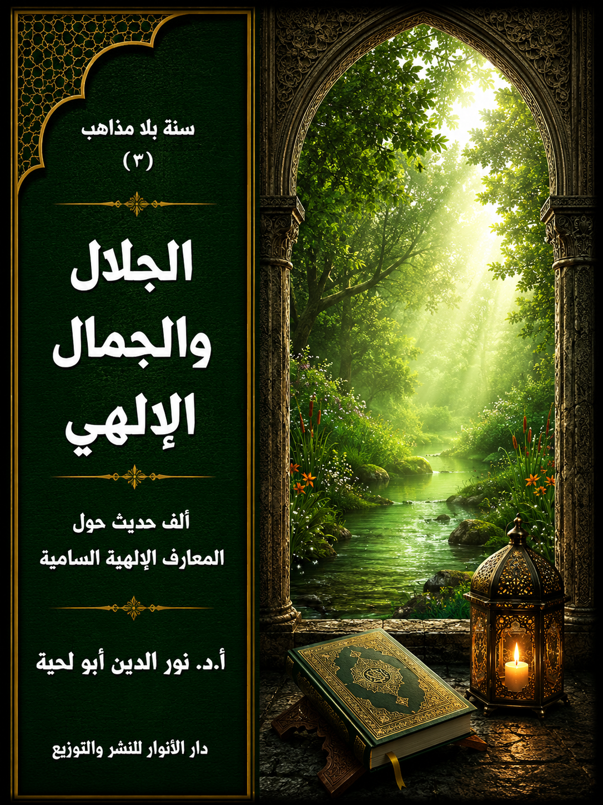

📖 الكتاب: الجلال والجمال الإلهي
📝 الوصف:
📚 السلسلة:
✍ المؤلف: أ.د. نور الدين أبو لحية
🏢 الناشر: دار الأنوار للنشر والتوزيع
📅 الطبعة: الثانية
📥 تحميل: هنا
المقدمة
الوصف: ألف حديث حول المعارف الإلهية السامية
يضم هذا الكتاب ألف حديث من الأحاديث التي تعرف بجلال الله تعالى وجماله وصفاته وأسمائه الحسنى، وكل المعارف السامية المرتبطة بذلك، والموافقة للقرآن الكريم، وهو يهدف إلى أمرين:
الأول: تثبيت الحقائق القرآنية في النفس وتقريرها عبر الكلمات النورانية لرسول الله صلّى الله عليه وآله وسلم وأئمة الهدى، والذين هم أعرف الخلق بالله، وأعظمهم هداية ودلالة عليه.
الثاني: الرد على كل التحريفات التي طالت العقيدة في الله بسبب تغليب المتشابه على المحكم، والتصور والتوهم على العقل، وأئمة الضلالة على أئمة الهدى، مما مكّن من الخرافة والتجسيم والتشبيه والجبر وكل أنواع الضلالة من الدخول إلى هذه العقيدة الأساسية من الدين، وتحويلها عن معانيها القرآنية إلى معان أقرب إلى الوثنية منها إلى الإسلام.
ولذلك فإن هذا الكتاب هو البديل السليم لكل تلك المتون العقدية التي ناء بها ظهر التراث العقدي الإسلامي، والذي اقتصر الكثير منه على شرحها وتقريرها معرضا عن تلك الكلمات النيرة الجميلة لرسول الله صلّى الله عليه وآله وسلم وأئمة الهدى.. والتي هي النور الخالص الذي أهداه الله تعالى لخلقه ليكون وسيلتهم إليه.
المقدمة
يضم هذا الكتاب ألف حديث من الأحاديث التي تعرف بجلال الله تعالى وجماله وصفاته وأسمائه الحسنى وكل المعارف السامية المرتبطة بذلك، والموافقة للقرآن الكريم، وهو يهدف إلى أمرين:
الأول: تثبيت الحقائق القرآنية في النفس وتقريرها عبر الكلمات النورانية لرسول الله صلى الله عليه وآله وسلم وأئمة الهدى، والذين هم أعرف الخلق بالله، وأعظمهم هداية ودلالة عليه.
الثاني: الرد على كل التحريفات التي طالت العقيدة في الله بسبب تغليب المتشابه على المحكم، والتصور والتوهم على العقل، وأئمة الضلالة على أئمة الهدى، مما مكّن من الخرافة والتجسيم والتشبيه والجبر وكل أنواع الضلالة من الدخول إلى هذه العقيدة الأساسية من الدين، وتحويلها عن معانيها القرآنية إلى معان أقرب إلى الوثنية منها إلى الإسلام.
ولذلك فإن هذا الكتاب هو البديل السليم لكل تلك المتون العقدية التي ناء بها ظهر التراث العقدي الإسلامي، والذي اقتصر الكثير منه على شرحها وتقريرها معرضا عن تلك الكلمات النيرة الجميلة لرسول الله صلى الله عليه وآله وسلم وأئمة الهدى.. والتي هي النور الخالص الذي أهداه الله تعالى لخلقه ليكون وسيلتهم إليه.
وقد قدمنا هذا الكتاب على غيره من المسائل والقضايا من الأصول والفروع لاعتبارين:
أولهما: أن كل الأديان قائمة على أساس معارفها بالله تعالى، ولذلك كانت المعرفة بالله هي أول الدين وأساسه؛ فإن صلحت صلح كل شيء، وإن فسدت فسد كل شيء، ولذلك كان تقديمها على غيرها واجبا قصرت فيه الكثير من كتب الحديث بسبب تقديمها لقضايا جزئية أو فرعية أو فقهية عليه..
ثانيهما: أن الإيمان بالله والمعرفة الصحيحة به هي الأساس لكل الفضائل الأخلاقية والروحية وغيرها.. ولذلك كان تقديمها ضروريا، لأنها الدافع والسبب الذي ييسر تحصيلها وتوفيرها لمن يريد أن يهذب نفسه ويزكيها.
وقد أشار إلى هذا المعنى الإمام الصادق بقوله: (العارف شخصه مع الخلق وقلبه مع الله، لو سها قلبه عن الله طرفة عين لمات شوقا إليه، والعارف أمين ودائع الله، وكنز أسراره، ومعدن نوره، ودليل رحمته على خلقه، ومطيّة علومه، وميزان فضله وعدله، قد غني عن الخلق والمراد والدنيا، فلا مؤنس له سوى الله، ولا نطق ولا إشارة ولا نفس إلا بالله ولله ومن الله ومع الله، فهو في رياض قدسه متردّد، ومن لطائف فضله إليه متزوّد، والمعرفة أصلٌ فرعه الإيمان)(1)
وقال لمن رآه زاهدا في هذا النوع من المعرفة: (لو يعلم الناس ما في فضل معرفة الله عز وجل ما مدوا أعينهم إلى ما متع الله به الأعداء من زهرة الحياة الدنيا ونعيمها، وكانت دنياهم أقلَّ عندهم مما يطوونه بأرجلهم، ولنَعِمُوا بمعرفة الله عز وجل وتلذذوا بها تلذذ من لم يزل في روضات الجنان مع أولياء الله)(2)
ثم فصل بعض آثار ذلك بقوله: (إن معرفة الله عز وجل أنْسٌ من كل وحشة، وصاحبٌ من كل وحدة، ونورٌ من كل ظلمة، وقوةُ من كل ضعف، وشفاءٌ من كل سقم)(2)
وهكذا نجد كل أئمة الهدى يدعون إلى الحرص على معرفة الله وتقديمها على كل شيء، كما أشار إلى ذلك الإمام الحسين في بعض مواعظه، فقال: (أيها الناس إن الله جل ذكره ما خلق العباد إلا ليعرفوه فإذا عرفوه عبدوه، فإذا عبدوه استغنوا بعبادته عن عبادة من سواه)(3)
وأشار إلى ذلك الإمام علي، حين اعتبر أول الدين وأساسه معرفة الله، فقال: (أولُ الدين معرفته، وكمالُ معرفته التصديق به، وكمالُ التصديق به توحيدُه، وكمالُ توحيده الإخلاصُ له، وكمالُ الإخلاص له نفيُ الصفات عنه، لشهادة كلِّ صفة أنها غير الموصوف، وشهادة كل موصوف أنه غير الصفة)(4)
وهكذا وردت الروايات الكثيرة عن رسول الله صلى الله عليه وآله وسلم وأئمة الهدى تدعو إلى الاهتمام بالبحث الجاد عن المعرفة الإلهية من سبلها الصحيحة المعصومة، حتى لا يحيق بهذه الأمة ما حاق بغيرها من الأمم، ذلك أن من عادة الشيطان ـ كما يخبر القرآن الكريم ـ أن يبدأ بالسعي في تشويه هذه المعرفة، فإن تمكن من ذلك لا يبالي بعدها بشيء.
وقد أخبر القرآن الكريم عن نموذج من نماذج ذلك، وهو ما حصل لبني إسرائيل بمجرد خروجهم من مصر.. فقد كان أول ما طلبوه ـ بغواية من الشيطان ووسوته ـ أن يجعل لهم موسى عليه السلام إلها كالآلهة التي تعبدها الأمم من حولهم.. لأنه عز عليهم أن يعبدوا إلها لا يتمكنون من رؤيته.
قال تعالى مشيرا إلى ذلك: ﴿ وَإِذْ قُلْتُمْ يَامُوسَى لَنْ نُؤْمِنَ لَكَ حَتَّى نَرَى اللَّهَ جَهْرَةً فَأَخَذَتْكُمُ الصَّاعِقَةُ وَأَنْتُمْ تَنْظُرُونَ﴾ [البقرة: 55]
وهكذا ذكر القرآن الكريم حرصهم على الرؤية الجهرية الحسية لله، حتى عوقبوا على ذلك، ومع ذلك لم تثنهم تلك العقوبة عن البحث عن إله حسي يمكنهم أن يروه ويلمسوه.
ولذلك بمجرد أن غاب موسى عليه السلام صنعوا إلها من ذهب.. وصاروا يعبدونه غير مراعين لتلك التوجيهات التي كان هارون عليه السلام يقوم بها مع الثلة القليلة الذين معه، قال تعالى يصور ذلك بدقة: ﴿قَالَ فَإِنَّا قَدْ فَتَنَّا قَوْمَكَ مِنْ بَعْدِكَ وَأَضَلَّهُمُ السَّامِرِيُّ فَرَجَعَ مُوسَى إِلَى قَوْمِهِ غَضْبَانَ أَسِفًا قَالَ يَاقَوْمِ أَلَمْ يَعِدْكُمْ رَبُّكُمْ وَعْدًا حَسَنًا أَفَطَالَ عَلَيْكُمُ الْعَهْدُ أَمْ أَرَدْتُمْ أَنْ يَحِلَّ عَلَيْكُمْ غَضَبٌ مِنْ رَبِّكُمْ فَأَخْلَفْتُمْ مَوْعِدِي قَالُوا مَا أَخْلَفْنَا مَوْعِدَكَ بِمَلْكِنَا وَلَكِنَّا حُمِّلْنَا أَوْزَارًا مِنْ زِينَةِ الْقَوْمِ فَقَذَفْنَاهَا فَكَذَلِكَ أَلْقَى السَّامِرِيُّ فَأَخْرَجَ لَهُمْ عِجْلًا جَسَدًا لَهُ خُوَارٌ فَقَالُوا هَذَا إِلَهُكُمْ وَإِلَهُ مُوسَى فَنَسِيَ أَفَلَا يَرَوْنَ أَلَّا يَرْجِعُ إِلَيْهِمْ قَوْلًا وَلَا يَمْلِكُ لَهُمْ ضَرًّا وَلَا نَفْعًا وَلَقَدْ قَالَ لَهُمْ هَارُونُ مِنْ قَبْلُ يَاقَوْمِ إِنَّمَا فُتِنْتُمْ بِهِ وَإِنَّ رَبَّكُمُ الرَّحْمَنُ فَاتَّبِعُونِي وَأَطِيعُوا أَمْرِي قَالُوا لَنْ نَبْرَحَ عَلَيْهِ عَاكِفِينَ حَتَّى يَرْجِعَ إِلَيْنَا مُوسَى ﴾ [طه: 85 - 91]
وما حصل في بني إسرائيل حصل مثله ـ للأسف ـ في هذه الأمة، حين ضيعت وصية نبيها صلى الله عليه وآله وسلم في البعد عن كل ما يمكن أن يحرف هذا الدين، ويشوه جمال عقائده، وقد ورد في الحديث الصحيح ـ الذي يمثل وصية من أعظم وصايا رسول الله صلى الله عليه وآله وسلم ـ: أن عمر أتى رسول الله صلى الله عليه وآله وسلم بكتاب أصابه من بعض أهل الكتاب، فغضب، وقال: (أمتهوكون فيها يا ابن الخطاب؟! والذي نفسي بيده، لقد جئتكم بها بيضاء نقية، لا تسألوهم عن شيء فيخبروكم بحق فتكذبوا به أو بباطل فتصدقوا به، والذي نفسي بيده لو أن موسى عليه السلام كان حيا ما وسعه إلا أن يتبعني)(5)
وللأسف ضيعت هذه الوصية حين صار بعض الصحابة والكثير من التابعين يعرضون عن أئمة الهدى الذين وردت الوصية بهم، ليجلسوا أمام كعب الأحبار وغيره من اليهود ليسمعوا منهم تفسير القرآن الكريم والحقائق العقدية، وهو ما يسر دخول التشبيه والتجسيم والخرافة وكل أنواع الضلال إلى العقيدة الإسلامية، وفي العصر الأول.
ولهذا انبرى أئمة الهدى للرد عليهم، وقد روي عن الإمام الحسين أنه قال محذرا منهم: (أيّها الناس اتّقوا هؤلاء المارقة الّذين يشبّهون اللّه بأنفسهم، يضاهئون قول الّذين كفروا من أهل الكتاب، بل هو اللّه ليس كمثله شيء وهو السميع البصير)(6)
وهكذا وردت الروايات الكثيرة عن أئمة الهدى تحذر من هذه الظواهر، وتدعو إلى المعرفة الصحيحة بالله، وهي المعرفة المتوافقة مع القرآن الكريم والعقل والفطرة السليمة.
وقد حاولنا في هذا الكتاب أن نجمع أكبر قدر من تلك الأحاديث، مصنفين لها بحسب أنواعها ومصادرها إلى ثلاثة أقسام:
الأول: الأحاديث القدسية، وهي التي رواها رسول الله صلى الله عليه وآله وسلم عن الله تعالى، باعتبارها أشرف الأحاديث وأقدسها، وأكثرها تعريفا بالله تعالى.
الثاني: الأحاديث المروية عن رسول الله صلى الله عليه وآله وسلم، سواء تلك التي وردت في المصادر السنية أو الشيعية، مع التنبيه إلى المؤوّل منها، باعتباره من المشتبه الذي دعينا إلى التحاكم فيه إلى المحكم، والتنبيه كذلك إلى الأحاديث المردودة المعارضة للقرآن الكريم.
الثالث: الأحاديث المروية عن أئمة الهدى باعتبارهم امتدادا للنبوة، يمثلون هديها السليم الخالص الذي لم يتأثر باللوثة اليهودية، ولا تحريفات الفئة الباغية.. إضافة إلى ما ورد من النصوص الكثيرة الداعية إلى الاهتداء بهم وسلوك سبيلهم عند وقوع الاختلاف في الأمة، كما أشار إلى ذلك قوله صلى الله عليه وآله وسلم: (إني تركت فيكم ما إن تمسكتم به لن تضلوا بعدي: كتاب الله حبل ممدود من السماء إلى الأرض، وعترتي أهل بيتي، ولن يفترقا حتى يردا علي الحوض، فانظروا كيف تخلفوني فيهما)(7)
ولذلك كان الأولى بالأمة عند وقوع التنازع في الأسماء والصفات والجبر والاختيار وغيرها أن ترجع إليهم بناء على وصية رسول الله صلى الله عليه وآله وسلم.. لكن الكثير للأسف لم يفعل ذلك، وهو ما سبب الشرخ والتصدع الكبير في الأمة بسبب تبنيها للكثير من العقائد التي لا توافق القرآن الكريم ولا النبوة.
والسبب الذي جعلهم يعرضون عن ذلك هو اتهامهم لكل الروايات الواردة عن أئمة الهدى بأنها روايات شيعية، مع علمهم أن الذي رواها هم أصحاب الأئمة أنفسهم، والذين اتهمهم المحدثون بكونهم شيعة.
ولست أدري هل يمكن أن يروي عن العالم أو الإمام غير أصحابه.. مع أنهم لا يطبقون ذلك على أنفسهم، ولا على أئمتهم، حيث لا يقبلون أن يروي عن الإمام مالك أو أحمد أو الشافعي أو أبي حنيفة إلا تلاميذهم المباشرين.. ثم يرفضون هذا المقياس عند جميع أئمة الهدى ابتداء من الإمام علي، والذي أعرضوا عن الكثير من هديه ووصاياه بسبب أن الذين رووها كانوا معه في صفين، ولم يكونوا مع معاوية أو مع من اختاروا الحياد.
ولو أنهم تركوا هذا المعيار، وعرضوا تلك الروايات على القرآن الكريم، وقارنوا بينها وبين تلك الروايات التي تلقفوها عن اليهود وغيرهم، لوجدوا الفرق الكبير بين تلك الدعوات إلى تعظيم الله وتنزيهه التي كان أئمة الهدى يدعون إليها.. وبين ذلك الركام من الخرافات والدجل والتشبيه والتجسيم الذي كان يدعو إليه اليهود وتلاميذ اليهود.
ــــــــــــــــــــ
(1) بحار الأنوار: 3/14، عن: مصباح الشيعة.
(2) الكافي:8/247.
(3) علل الشرائع:1/9.
(4) نهج البلاغة:1/14.
(5) رواه أحمد: 3/ 387 ح (15195)
(6) تحف العقول 244 و245.
(7) سنن الترمذي: ح / 3788، مسند أحمد 3/ 17، المستدرك 3/ 148 وغيرها كثير.
الجمال والجلال الإلهي في الأحاديث القدسية
تعتبر الأحاديث القدسية من أفضل المصادر التي تعرف بالله تعالى من جهتين:
الأولى: أن القارئ لها يستشعر فيها ما يستشعره في القرآن الكريم من كونه كلام الله تعالى الموجه مباشرة إلى عباده.. وفي ذلك تأثير نفسي كبير، حيث أنها تعمق الإيمان، وتربط العبد مباشرة بربه سبحانه وتعالى، وذلك هو غاية المعرفة العظمى.
الثانية: أنها تحوي الكثير من أسماء الله الحسنى وصفاته العليا وتدبيراته لعباده واختياراته لهم.. وهي لذلك من مصادر المعرفة الكبرى.
وقد حاولنا في هذا الفصل جمع الكثير منها من المصادر السنية والشيعية، واستبعدنا بعضها إما لمخالفته القرآن الكريم، أو لارتباطه بأبواب أخرى، سنعرض لها في الفصول القادمة، كما سنعرض لنماذج مما نرى رده منها في الفصل الخاص بذلك.
وقد قسمنا هذا الفصل ـ بحسب المصادر التي ترد فيها هذه الأحاديث ـ إلى قسمين:
الأول: خاص بالمصادر السنية.
الثاني: خاص بالمصادر الشيعية.
مع التنبيه إلى أننا اكتفينا بتوثيق الأحاديث كما وردت في كلا المصدرين، مع مراعاة عدم مخالفتها للقرآن الكريم، بغض النظر عن موقف المحدثين منها تصحيحا أو تضعيفا، كما أشرنا إلى ذلك في مقدمة السلسلة.
بالإضافة إلى ذلك، فقد تصرفنا في بعض الأحاديث من حذف بعض الألفاظ أو التراكيب المخالفة للقرآن الكريم، وخاصة تلك التي قد تشير إلى التجسيم والتشبيه أو تشوه المعرفة الإلهية، بناء على ما ذكرنا من منهجنا في التعامل مع الأحاديث في هذه السلسلة.
أولا ـ الأحاديث الواردة في المصادر السنية:
وهي كثيرة، وقد جمعنا منها في هذا المبحث أكثر من 200 حديث، يمكن تصنيفها ـ بحسب مضامينها ـ إلى أقسام مختلفة، لكنا رأينا أنه يمكن تصنيفها باعتبار دلالتها على الجلال والجمال الإلهي إلى قسمين:
الأول: ما يرتبط بالربوبية والهداية، وهي الأحاديث التي تدل على تربية الله تعالى لعباده وهدايته لهم.
الثاني: ما يرتبط بالعدالة والرحمة، وهي ما يرتبط بالجزاء، والذي تجتمع فيه العدالة والرحمة جميعا.
وكلاهما يدل على الجمال والجلال الإلهي، أولهما يدل عليه وعلى علاقته بالتكليف، والثاني يدل عليه، وعلى علاقته بالجزاء.
مع العلم أن بعض الأحاديث قد يختلط فيها كلا المعنيين، ولذلك قدمنا أكثرهما ورودا.
1 ـ جلال وجمال الربوبية والهداية:
وهي الأحاديث القدسية التي تدل على تربية الله تعالى لعباده وهدايته لهم، وقد قسمناها بحسب ورودها إلى قسمين:
مباشرة: وهي التي يبدأ الحديث فيها مباشرة بذكر كلام الله تعالى.
غير مباشرة: وهي الأحاديث التي ترد ضمن قصة أو مناسبة أو معان أخرى.
أ ـ الأحاديث القدسية المباشرة:
وهي الأحاديث التي يستهلها رسول الله صلى الله عليه وآله وسلم بذكر أنها كلام الله تعالى، وذلك بحسب الصيغ التي وردت الرواية فيها، ومن باب التيسير على القارئ جعلناها جميعا تبدأ بهذه الجملة [قال رسول الله صلى الله عليه وآله وسلم فيما يحكي عن الله تعالى]، ومن تلك الأحاديث:
1. قال رسول الله صلى الله عليه وآله وسلم فيما يحكي عن الله تعالى: (حقت محبتي للمتحابين في، وحقت محبتي للمتواصلين في، وحقت محبتي للمتزاورين في، وحقت محبتي للمتباذلين في)(1)
2. قال رسول الله صلى الله عليه وآله وسلم فيما يحكي عن الله تعالى: (إن أمتك لا يزالون يقولون: ما كذا؟ ما كذا؟ حتى يقولوا: هذا الله خلق الخلق فمن خلق الله)(2)
3. قال رسول الله صلى الله عليه وآله وسلم فيما يحكي عن الله تعالى: (كذبني ابن آدم ولم يكن له ذلك، وشتمني، ولم يكن له ذلك، فأما تكذيبه إياي فزعم أني لا أقدر أن أعيده كما كان، وأما شتمه إياي، فقوله لي ولدٌ، فسبحاني أن أتخذ صاحبة أو ولدا)(3)
4. قال رسول الله صلى الله عليه وآله وسلم فيما يحكي عن الله تعالى: (كذبني عبدي ولم يكن له أن يكذبني، وشتمني عبدي ولم يكن له ذلك، أما تكذيبه إياي أن يقول: لن يعيدني كما بدأني، وأما شتمه إياي فقوله: اتخذ الله ولدا، وأنا الصمد الذي لم ألد، ولم أولد، ولم يكن لي كفوا أحدٌ)(4)
5. قال رسول الله صلى الله عليه وآله وسلم فيما يحكي عن الله تعالى: (يشتمني ابن آدم، وما ينبغي له أن يشتمني، ويكذبني وما ينبغي له، أما شتمه فقوله: إن لي ولدا، وأما تكذيبه فقوله: ليس يعيدني كما بدأني)(5)
6. قال رسول الله صلى الله عليه وآله وسلم فيما يحكي عن الله تعالى: (استقرضت من عبدي، فأبى أن يقرضني وسبني عبدي، ولا يدري يقول: وا دهراه وا دهراه وأنا الدهر)(6)
7. قال رسول الله صلى الله عليه وآله وسلم فيما يحكي عن الله تعالى: (إني فرضت على أمتك خمس صلوات وعهدت عندي عهدا أنه من جاء يحافظ عليهن لوقتهن أدخلته الجنة ومن لم يحافظ عليهن فلا عهد له عندي)(7)
8. قال رسول الله صلى الله عليه وآله وسلم فيما يحكي عن الله تعالى: (كل عمل ابن آدم له، إلا الصيام، فإنه لي وأنا أجزي به، والصيام جنةٌ، وإذا كان يوم صوم أحدكم فلا يرفث ولا يصخب، فإن سابه أحدٌ أو قاتله، فليقل إني امرؤٌ صائمٌ)(8)
9. قال رسول الله صلى الله عليه وآله وسلم فيما يحكي عن الله تعالى: (كل عمل ابن آدم له، فالحسنة بعشر أمثالها إلى سبع مائة ضعف، إلا الصيام هو لي وأنا أجزي به يترك الطعام لشهوته من أجلى، ويترك الشراب لشهوته من أجلى.هو لى وأنا أجزى به)(9)
10. قال رسول الله صلى الله عليه وآله وسلم فيما يحكي عن الله تعالى: (كل عمل ابن آدم له إلا الصيام، فإنه لي وأنا أجزي به، والصيام جنةٌ، فإذا كان يوم صوم أحدكم، فلا يرفث يومئذ ولا يسخب، فإن سابه أحدٌ أو قاتله، فليقل: إني امرؤٌ صائمٌ، والذي نفس محمد بيده، لخلوف فم الصائم أطيب عند الله، يوم القيامة، من ريح المسك)(8)
11. قال رسول الله صلى الله عليه وآله وسلم فيما يحكي عن الله تعالى: (إن الصوم لي، وأنا أجزي به، إن للصائم فرحتين: إذا أفطر، فرح، وإذا لقي الله فجزاه، فرح، والذي نفس محمد بيده، لخلوف فم الصائم أطيب عند الله من ريح المسك)(10)
12. قال رسول الله صلى الله عليه وآله وسلم فيما يحكي عن الله تعالى: (الصوم لي وأنا أجزي به، وللصائم فرحتان: حين يفطر، وحين يلقى ربه، والذي نفسي بيده لخلوف فم الصائم أطيب عند الله من ريح المسك)(11)
13. قال رسول الله صلى الله عليه وآله وسلم فيما يحكي عن الله تعالى: (لا يأتي النذر على ابن آدم بشيء لم أقدره عليه، ولكنه شيءٌ أستخرج به من البخيل يؤتيني عليه ما لا يؤتيني على البخل)(12)
14. قال رسول الله صلى الله عليه وآله وسلم فيما يحكي عن الله تعالى: (لا يأتي ابن آدم النذر بشيء لم أكن قدرته له، ولكنه يلقيه النذر بما قدرته له، يستخرج به من البخيل، يؤتيني عليه ما لم يكن آتاني عليه من قبل)(13)
15. قال رسول الله صلى الله عليه وآله وسلم فيما يحكي عن الله تعالى: (ثلاثةٌ أنا خصمهم يوم القيامة: رجلٌ أعطى بي ثم غدر، ورجلٌ باع حرا فأكل ثمنه، ورجلٌ استأجر أجيرا فاستوفى منه ولم يعط أجره)(14)
16. قال رسول الله صلى الله عليه وآله وسلم فيما يحكي عن الله تعالى: (ابن آدم إن صبرت واحتسبت عند الصدمة الأولى، لم أرض لك ثوابا دون الجنة)(15)
17. قال رسول الله صلى الله عليه وآله وسلم فيما يحكي عن الله تعالى: (ابن آدم، إذا أخذت منك كريمتيك فصبرت، واحتسبتها عند المصيبة الأولى لم أرض لك ثوابا دون الجنة)(16)
18. قال رسول الله صلى الله عليه وآله وسلم فيما يحكي عن الله تعالى: (قال الله عز وجل: افترضت على أمتك خمس صلوات، وعهدت عندي عهدا أنه من حافظ عليهن لوقتهن أدخلته الجنة، ومن لم يحافظ عليهن فلا عهد له عندي)(17)
19. قال رسول الله صلى الله عليه وآله وسلم فيما يحكي عن الله تعالى: (إذا سلبت من عبدي كريمتيه وهو بهما ضنينٌ، لم أرض له ثوابا دون الجنة إذا حمدني عليهما)(18)
20. قال رسول الله صلى الله عليه وآله وسلم فيما يحكي عن الله تعالى: (أنا خير شريك فمن أشرك معي شريكا فهو لشريكي يا أيها الناس أخلصوا أعمالكم لله عز وجل، فإن الله لا يقبل إلا ما أخلص له، ولا تقولوا: هذا لله وللرحم، فإنها للرحم وليس لله منها شيءٌ، ولا تقولوا: هذا لله ولوجوهكم، فإنها لوجوهكم وليس لله منها شيءٌ)(19)
21. قال رسول الله صلى الله عليه وآله وسلم فيما يحكي عن الله تعالى: (أنا خير شريك، ولا يصعد علي من الرياء شيءٌ)(20)
22. قال رسول الله صلى الله عليه وآله وسلم فيما يحكي عن الله تعالى: (يا ابن آدم مرضت فلم تعدني، قال: يا رب كيف أعودك؟ وأنت رب العالمين، قال: أما علمت أن عبدي فلانا مرض فلم تعده، أما علمت أنك لو عدته لوجدتني عنده؟ يا ابن آدم استطعمتك فلم تطعمني، قال: يا رب وكيف أطعمك؟ وأنت رب العالمين، قال: أما علمت أنه استطعمك عبدي فلانٌ، فلم تطعمه؟ أما علمت أنك لو أطعمته لوجدت ذلك عندي، يا ابن آدم استسقيتك، فلم تسقني، قال: يا رب كيف أسقيك؟ وأنت رب العالمين، قال: استسقاك عبدي فلانٌ فلم تسقه، أما إنك لو سقيته وجدت ذلك عندي)(21)
23. قال رسول الله صلى الله عليه وآله وسلم: (إن الله أوحى إلي أن تواضعوا حتى لا يبغي أحدٌ على أحد، ولا يفخر أحدٌ على أحد)(22)
24. قال رسول الله صلى الله عليه وآله وسلم فيما يحكي عن الله تعالى: (إذا ابتليت عبدي بحبيبتيه فصبر، عوضته منهما الجنة) يريد: عينيه(23)
25. قال رسول الله صلى الله عليه وآله وسلم فيما يحكي عن الله تعالى: (من عادى لي وليا فقد آذنته بالحرب، وما تقرب إلي عبدي بشيء أحب إلي مما افترضت عليه، وما يزال عبدي يتقرب إلي بالنوافل حتى أحبه، فإذا أحببته: كنت سمعه الذي يسمع به، وبصره الذي يبصر به، ويده التي يبطش بها، ورجله التي يمشي بها، وإن سألني لأعطينه، ولئن استعاذني لأعيذنه، وما ترددت عن شيء أنا فاعله ترددي عن نفس المؤمن، يكره الموت وأنا أكره مساءته)(24)
26. قال رسول الله صلى الله عليه وآله وسلم فيما يحكي عن الله تعالى: (من أذل لي وليا، فقد استحل محاربتي، وما تقرب إلي عبدي بمثل أداء الفرائض، وما يزال العبد يتقرب إلي بالنوافل حتى أحبه، إن سألني أعطيته، وإن دعاني أجبته، ما ترددت عن شيء أنا فاعله ترددي عن وفاته، لأنه يكره الموت، وأكره مساءته)(25)
27. قال رسول الله صلى الله عليه وآله وسلم فيما يحكي عن الله تعالى: (إنا أنزلنا المال لإقام الصلاة، وإيتاء الزكاة، ولو كان لابن آدم واد، لأحب أن يكون إليه ثان، ولو كان له واديان، لأحب أن يكون إليهما ثالثٌ، ولا يملأ جوف ابن آدم إلا التراب، ثم يتوب الله على من تاب)(26)
28. قال رسول الله صلى الله عليه وآله وسلم فيما يحكي عن الله تعالى: (يا ابن آدم إنك ما دعوتني ورجوتني غفرت لك على ما كان فيك، يا ابن آدم إنك إن تلقني بقراب الأرض خطايا لقيتك بقرابها مغفرة، بعد أن لا تشرك بي شيئا، يا ابن آدم إنك إن تذنب حتى يبلغ ذنبك أعنان السماء ثم تستغفرني أغفر لك ولا أبالي)(27)
29. قال رسول الله صلى الله عليه وآله وسلم فيما يحكي عن الله تعالى: (الحسنة عشرٌ أو أزيد، والسيئة واحدةٌ أو أغفرها، ومن لقيني لا يشرك بي شيئا بقراب الأرض خطايا جعلت له مثلها مغفرة)(28)
30. قال رسول الله صلى الله عليه وآله وسلم فيما يحكي عن الله تعالى: (لو أن عبدي استقبلني بقراب الأرض خطايا، استقبلته بقرابها مغفرة)(29)
31. قال رسول الله صلى الله عليه وآله وسلم فيما يحكي عن الله تعالى: (عبدي ما عبدتني ورجوتني، ولم تشرك بي شيئا غفرت لك على ما كان منك، ولو استقبلتني بملء الأرض خطايا وذنوبا استقبلتك بملئها مغفرة، أغفر لك ولا أبالي)(30)
32. قال رسول الله صلى الله عليه وآله وسلم فيما يحكي عن الله تعالى: (يا ابن آدم إذا ذكرتني خاليا ذكرتك خاليا، وإذا ذكرتني في ملإ ذكرتك في ملإ خيرٌ من الذين تذكرني فيهم)(31)
33. قال رسول الله صلى الله عليه وآله وسلم فيما يحكي عن الله تعالى: (عبدي إذا ذكرتني خاليا، ذكرتك خاليا، وإن ذكرتني في ملأ ذكرتك في ملأ خير منهم، وأكبر)(32)
34. قال رسول الله صلى الله عليه وآله وسلم فيما يحكي عن الله تعالى: (عبدي أنا عند ظنك بي، وأنا معك إذا ذكرتني)(33)
35. قال رسول الله صلى الله عليه وآله وسلم فيما يحكي عن الله تعالى: (أنا عند ظن عبدي بي، فليظن بي ما شاء)(34)
36. قال رسول الله صلى الله عليه وآله وسلم فيما يحكي عن الله تعالى: (إذا أحب عبدي لقائي أحببت لقاءه، وإذا كره لقائي كرهت لقاءه)(35)
37. قال رسول الله صلى الله عليه وآله وسلم فيما يحكي عن الله تعالى: (يا ابن آدم، تفرغ لعبادتي أملأ صدرك غنى، وأسد فقرك، وإن لا تفعل ملأت يدك شغلا، ولم أسد فقرك)(36)
38. قال رسول الله صلى الله عليه وآله وسلم فيما يحكي عن الله تعالى: (ابن آدم، تفرغ لعبادتي أملأ صدرك غنى، وأسد فقرك، وإلا تفعل ملأت صدرك شغلا، ولم أسد فقرك)(37)
39. قال رسول الله صلى الله عليه وآله وسلم فيما يحكي عن الله تعالى: (المجاهد في سبيلي هو علي ضامنٌ، إن قبضته أورثته الجنة، وإن رجعته رجعته بأجر أو غنيمة)(38)
40. قال رسول الله صلى الله عليه وآله وسلم فيما يحكي عن الله تعالى: (أيما عبد من عبادي خرج مجاهدا في سبيلي ابتغاء مرضاتي ضمنت له إن رجعته أن أرجعه بما أصاب من أجر أو غنيمة، وإن قبضته غفرت له ورحمته)(39)
41. قال رسول الله صلى الله عليه وآله وسلم فيما يحكي عن الله تعالى: (المتحابون في جلالي لهم منابر من نور يغبطهم النبيون والشهداء)(40)
42. قال رسول الله صلى الله عليه وآله وسلم فيما يحكي عن الله تعالى: (المتحابون في جلالي في ظل عرشي يوم لا ظل إلا ظلي)(41)
43. قال رسول الله صلى الله عليه وآله وسلم: (يقول الله تبارك وتعالى يوم القيامة: أين المتحابون في جلالي؟، اليوم أظلهم في ظلي يوم لا ظل إلا ظلي)(42)
44. قال رسول الله صلى الله عليه وآله وسلم فيما يحكي عن الله تعالى: (من قرأ عشر آيات في ليلة كتب له قنطاران من الأجر، والقنطار خيرٌ من الدنيا وما فيها، فإذا كان يوم القيامة يقول ربك: اقرأ، وارق لكل آية درجة، حتى ينتهي إلى آخر آية معه، يقول ربك للعبد: اقبض، فيقول العبد بيده، يقول يا رب أنت أعلم، يقول: بهذه الخلد وبهذه النعيم)(43)
45. قال رسول الله صلى الله عليه وآله وسلم فيما يحكي عن الله تعالى: (وجبت محبتي للذين يتحابون ويتجالسون، ويتباذلون في)(44)
46. قال رسول الله صلى الله عليه وآله وسلم فيما يحكي عن الله تعالى: (وجبت محبتي للذين يتحابون من أجلي، وحقت محبتي للذين يتصافون من أجلي، وحقت محبتي للذين يتزاورون من أجلي، وحقت محبتي للذين يتواصلون من أجلي)(45)
47. قال رسول الله صلى الله عليه وآله وسلم فيما يحكي عن الله تعالى: (وعزتي لا أجمع على عبدي خوفين وأمنين، إذا خافني في الدنيا أمنته يوم القيامة، وإذا أمنني في الدنيا أخفته يوم القيامة)(46)
48. قال رسول الله صلى الله عليه وآله وسلم فيما يحكي عن الله تعالى: (يا عبادي إني حرمت الظلم على نفسي، وجعلته بينكم محرما، فلا تظالموا، يا عبادي كلكم ضالٌ إلا من هديته، فاستهدوني أهدكم، يا عبادي كلكم جائعٌ، إلا من أطعمته، فاستطعموني أطعمكم، يا عبادي كلكم عار، إلا من كسوته، فاستكسوني أكسكم، يا عبادي إنكم تخطئون بالليل والنهار، وأنا أغفر الذنوب جميعا، فاستغفروني أغفر لكم، يا عبادي إنكم لن تبلغوا ضري فتضروني ولن تبلغوا نفعي، فتنفعوني، يا عبادي لو أن أولكم وآخركم وإنسكم وجنكم كانوا على أتقى قلب رجل واحد منكم، ما زاد ذلك في ملكي شيئا، يا عبادي لو أن أولكم وآخركم وإنسكم وجنكم كانوا على أفجر قلب رجل واحد، ما نقص ذلك من ملكي شيئا، يا عبادي لو أن أولكم وآخركم وإنسكم وجنكم قاموا في صعيد واحد فسألوني فأعطيت كل إنسان مسألته، ما نقص ذلك مما عندي إلا كما ينقص المخيط إذا أدخل البحر، يا عبادي إنما هي أعمالكم أحصيها لكم، ثم أوفيكم إياها، فمن وجد خيرا، فليحمد الله ومن وجد غير ذلك، فلا يلومن إلا نفسه)(47)
49. قال رسول الله صلى الله عليه وآله وسلم فيما يحكي عن الله تعالى: (يا عبادي كلكم مذنبٌ إلا من عافيت، فاستغفروني، أغفر لكم بقدرتي، من علم منكم أني ذو مقدرة على المغفرة فاستغفرني غفرت له ولا أبالي، وكلكم ضالٌ إلا من هديت فسلوني الهدى أهدكم، وكلكم فقيرٌ إلا من أغنيت فسلوني أرزقكم، يا عبادي لو أن أولكم وآخركم ورطبكم ويابسكم وحيكم وميتكم اجتمعوا على أتقى قلب عبد من عبادي لم يزد ذلك في ملكي جناح بعوضة ولو اجتمعوا على أشقى قلب عبد من عبادي لم ينقص ذلك من ملكي جناح بعوضة، ولو أن أولكم وآخركم ورطبكم ويابسكم وحيكم وميتكم اجتمعوا فسأل كل سائل منهم ما بلغت أمنيته أعطيت كل سائل ما سأل لم ينقص ذلك مما عندي شيئا كما لو أن أحدكم مر على شفة البحر فغمس فيه إبرة ثم انتزعها، ذلك بأني جوادٌ ماجدٌ أفعل ما أشاء، عطائي كلامٌ،وعذابي كلامٌ وإذا أردت شيئا فإنما أقول له كن فيكون)(48)
50. قال رسول الله صلى الله عليه وآله وسلم فيما يحكي عن الله تعالى: (يا عبادي كلكم ضالٌ إلا من هديت فاسألوني الهدى أهدكم، وكلكم فقيرٌ إلا من أغنيت فاسألوني أرزقكم، ولو أن أولكم وآخركم ورطبكم ويابسكم وحيكم وميتكم اجتمعوا فسأل كل إنسان ما بلغت أمنيته فأعطيت كل سائل ما سأل لم ينقص ذلك مما عندي شيئا إلا كما لو أن أحدكم مر على شفة البحر فغمس فيه إبرة ثم انتزعها، ذلك بأني جوادٌ ماجدٌ أفعل ما أشاء، عطائي كلامٌ وإذا أردت شيئا فإنما أقول له كن فيكون)(49)
51. قال رسول الله صلى الله عليه وآله وسلم فيما يحكي عن الله تعالى: (يا عبادي إنكم الذين تخطئون بالليل والنهار وأنا الذي أغفر الذنوب ولا أبالي فاستغفروني أغفر لكم، يا عبادي كلكم جائعٌ إلا من أطعمت فاستطعموا في أطعمكم، يا عبادي كلكم عار إلا من كسوت فاستكسوني أكسكم، يا عبادي لو أن أولكم وآخركم وإنسكم وجنكم كانوا على أتقى قلب رجل منكم لم يزد ذلك في ملكي شيئا، يا عبادي لو أن أولكم وآخركم وإنسكم وجنكم كانوا على أفجر قلب رجل منكم لم ينقص ذلك من ملكي شيئا، يا عبادي لو أن أولكم وآخركم وإنسكم وجنكم اجتمعوا في صعيد واحد فسألوني وأعطيت كل إنسان منهم ما سأل لم ينقص ذلك من ملكي شيئا إلا كما ينقص البحر إن يغمس فيه المخيط غمسة واحدة، يا عبادي إنما هي أعمالكم أحفظها عليكم فمن وجد خيرا فليحمد الله تعالى ومن وجد غير ذلك فلا يلومن إلا نفسه)(50)
52. قال رسول الله صلى الله عليه وآله وسلم فيما يحكي عن الله تعالى: (يا عبادي كلكم مذنبٌ إلا من عافيت فاستغفروني أغفر لكم، وكلكم ضالٌ إلا من هديت فاسألوني أهدكم، وكلكم فقيرٌ إلا من أغنيت فاسألوني أرزقكم، ولو أن أولكم وآخركم وحيكم وميتكم ورطبكم ويابسكم اجتمعوا على أتقى قلب عبد من عبادي لم يزيدوا في ملكي جناح بعوضة، ولو أن أولكم وآخركم وحيكم وميتكم ورطبكم ويابسكم اجتمعوا فسأل كل إنسان ما بلغت أمنيته أعطيت كل سائل ما سأل لم ينقص إلا كما لو مر أحدكم على شفة البحر فغمز فيه إبرة ثم انتزعها ذاك فإني جوادٌ ما جد واجدٌ، عطائي كلامٌ، وعذابي كلامٌ، إذا أردت شيئا فإنما أقول له: كن فيكون)(51)
53. قال رسول الله صلى الله عليه وآله وسلم فيما يحكي عن الله تعالى: (إني حرمت على نفسي الظلم، وعلى عبادي، ألا فلا تظالموا.كل بني آدم يخطئ بالليل والنهار ثم يستغفرني فأغفر له ولا أبالي.. يا بني آدم كلكم كان ضالا إلا من هديت، وكلكم كان عاريا إلا من كسوت، وكلكم كان جائعا إلا من أطعمت، وكلكم كان ظمآنا إلا من سقيت، فاستهدوني أهدكم، واستكسوني أكسكم، واستطعموني أطعمكم، واستسقوني أسقكم.. يا عبادي لو أن أولكم وآخركم وجنكم وإنسكم وصغيركم وكبيركم وذكركم وأنثاكم، على قلب أتقاكم رجلا واحدا، لم تزيدوا في ملكي شيئا، ولو أن أولكم وآخركم وجنكم وإنسكم وصغيركم وكبيركم وذكركم وأنثاكم على قلب أكفركم رجلا، لم تنقصوا من ملكي شيئا إلا كما ينقص رأس المخيط من البحر)(52)
54. قال رسول الله صلى الله عليه وآله وسلم فيما يحكي عن الله تعالى: (حرمت الظلم على نفسي وحرمته على عبادي فلا تظالموا، كل بني آدم يخطيء بالليل والنهار ثم يستغفرني فأغفر له ولا أبالي)(53)
55. قال رسول الله صلى الله عليه وآله وسلم فيما يحكي عن الله تعالى: (إن الله يقول: يا عبادي، كلكم ضالٌ إلا من هديت، وضعيفٌ إلا من قويت، وفقيرٌ إلا من أغنيت، فسلوني أعطكم، فلو أن أولكم وآخركم، وإنسكم وجنكم، وحيكم وميتكم، ورطبكم ويابسكم اجتمعوا على قلب أتقى عبد من عبادي، ما زادوا في ملكي جناح بعوضة، ولو أن أولكم وآخركم، وحيكم وميتكم، ورطبكم ويابسكم اجتمعوا على قلب أفجر عبد من عبادي هو لي، ما نقصوا من ملكي جناح بعوضة، ذلك بأني واحدٌ، عذابي كلامٌ، ورحمتي كلامٌ، فمن أيقن بقدرتي على المغفرة فلم يتعاظم في نفسي أن أغفر له ذنوبه، ولو كثرت)(54)
56. قال رسول الله صلى الله عليه وآله وسلم فيما يحكي عن الله تعالى: (يؤتى يوم القيامة بصحف مختمة، فتنصب بين يدي الله تبارك وتعالى، فيقول تبارك وتعالى: ألقوا هذه، واقبلوا هذه، فتقول الملائكة: وعزتك ما رأينا إلا خيرا، فيقول عز وجل: إن هذا كان لغير وجهي، وإني لا أقبل اليوم من العمل إلا ما ابتغي به وجهي)(55)
57. قال رسول الله صلى الله عليه وآله وسلم فيما يحكي عن الله تعالى: (يا عبادي من عمل منكم حسنة جزيت بها عشرا أو أزيد، ومن عمل منكم سيئة جزيته بها سيئة أو أغفر، ومن لقيني لا يشرك بي شيئا لقيته بقراب الأرض مغفرة)(56)
58. قال رسول الله صلى الله عليه وآله وسلم فيما يحكي عن الله تعالى: (الحسنة بعشرة والسيئة بواحدة أو أغفرها، ومن لقيني بقراب الأرض خطيئة لا يشرك بي لقيته بقراب الأرض مغفرة، ومن هم بحسنة فلم يعملها كتبت له حسنةٌ ومن هم بسيئة فلم يعملها لم يكتب عليه شيءٌ، ومن تقرب مني شبرا تقربت منه ذراعا، ومن تقرب مني ذراعا تقربت منه باعا)(57)
59. قال رسول الله صلى الله عليه وآله وسلم فيما يحكي عن الله تعالى: (أنا أغنى الشركاء عن الشرك، من عمل عملا أشرك فيه معي غيري، تركته وشركه)(58)
60. قال رسول الله صلى الله عليه وآله وسلم فيما يحكي عن الله تعالى: (أنا خير الشركاء، فمن عمل عملا أشرك فيه غيري، فهو للذي أشرك وأنا بريءٌ منه)(59)
61. قال رسول الله صلى الله عليه وآله وسلم فيما يحكي عن الله تعالى: (إني والجن والإنس في نبأ عظيم، أخلق ويعبد غيري، وأرزق ويشكر غيري)(60)
62. قال رسول الله صلى الله عليه وآله وسلم فيما يحكي عن الله تعالى: (إني لا أتقبل الصلاة إلا ممن تواضع بها لعظمتي ولم يستطل على خلقي ولم يبت مصرا على معصيتي وقطع نهاره في ذكري ورحم المسكين، وابن السبيل والأرملة ورحم المصاب ذلك نوره كنور الشمس أكلؤه بعزتي وأستحفظه ملائكتي وأجعل له في الظلمة نورا وفي الجهالة حلما ومثله في خلقي كمثل الفردوس في الجنة)(61)
63. قال رسول الله صلى الله عليه وآله وسلم فيما يحكي عن الله تعالى: (ثلاثةٌ من حافظ عليهن فهو عبدي حقا، ووليي حقا، ومن ضيعهن فهو عدوي حقا الصلاة والصوم والغسل)(62)
64. قال رسول الله صلى الله عليه وآله وسلم فيما يحكي عن الله تعالى: (يا ابن آدم، إن تعط الفضل فهو خيرٌ لك، وإن تمسكه فهو شرٌ لك، وابدأ بمن تعول، ولا يلوم الله على الكفاف، واليد العليا خيرٌ من اليد السفلى)(63)
65. قال رسول الله صلى الله عليه وآله وسلم فيما يحكي عن الله تعالى: (يا ابن آدم خصلتان أعطيتكهما لم تكن لغيرك واحدةٌ منهما جعلت لك طائفة من مالك عند موتك أرحمك به) أو قال: (أطهرك به وصلاة عبادي عليك بعد موتك)(64)
66. قال رسول الله صلى الله عليه وآله وسلم فيما يحكي عن الله تعالى: (يا ابن آدم، أودع من كنزك عندي لا حرق، ولا غرق، ولا سرق أوفيكه أحوج ما تكون إليه)(65)
67. قال رسول الله صلى الله عليه وآله وسلم فيما يحكي عن الله تعالى: (لكل عمل كفارةٌ، والصوم لي وأنا أجزي به، ولخلوف فم الصائم أطيب عند الله من ريح المسك)(66)
68. قال رسول الله صلى الله عليه وآله وسلم فيما يحكي عن الله تعالى: (أعطيت أمتي في شهر رمضان خمسا لم يعطهن نبيٌ قبلي، أما واحدةٌ: فإنه إذا كان أول ليلة من شهر رمضان نظر الله عز وجل إليهم، ومن نظر الله إليه لم يعذبه أبدا، وأما الثانية: فإن خلوف أفواههم حين يمسون أطيب عند الله من ريح المسك، وأما الثالثة: فإن الملائكة تستغفر لهم في كل يوم وليلة، وأما الرابعة: فإن الله عز وجل يأمر جنته فيقول لها: استعدي وتزيني لعبادي أوشك أن يستريحوا من تعب الدنيا إلى داري وكرامتي، وأما الخامسة: فإنه إذا كان آخر ليلة غفر لهم جميعا)، فقال رجلٌ من القوم: أهي ليلة القدر؟ فقال: (لا، ألم تر إلى العمال يعملون فإذا فرغوا من أعمالهم وفوا أجورهم)(67)
69. قال رسول الله صلى الله عليه وآله وسلم فيما يحكي عن الله تعالى: (إن عبدي كل عبدي الذي يذكرني وهو ملاق قرنه)(68)
70. قال رسول الله صلى الله عليه وآله وسلم فيما يحكي عن الله تعالى: (إن عبدي كل عبدي الذي يذكرني، وإن كان مكافئا قرنه)(69)
71. قال رسول الله صلى الله عليه وآله وسلم فيما يحكي عن الله تعالى: (ومن أظلم ممن ذهب يخلق خلقا كخلقي؟ فليخلقوا ذرة، أو ليخلقوا حبة أو ليخلقوا شعيرة)(70)
72. قال رسول الله صلى الله عليه وآله وسلم فيما يحكي عن الله تعالى: (من ترك الخمر، وهو يقدر عليه لأسقينه منه في حظيرة القدس، ومن ترك الحرير، وهو يقدر عليه لأكسونه إياه في حظيرة القدس)(71)
73. قال رسول الله صلى الله عليه وآله وسلم فيما يحكي عن الله تعالى: (من شغله ذكري عن مسألتي أعطيته أفضل ما أعطي السائلين)(72)
74. قال رسول الله صلى الله عليه وآله وسلم فيما يحكي عن الله تعالى: (من شغله ذكري عن مسألتي أعطيته قبل أن يسألني) وقال في قوله تعالى: ﴿وَمَا كُنْتَ بِجَانِبِ الطُّورِ إِذْ نَادَيْنَا﴾ [القصص: 46]: (نودوا يا أمة محمد ما دعوتمونا إذ استجبنا لكم، ولا سألتمونا إذ أعطيناكم)(73)
75. قال رسول الله صلى الله عليه وآله وسلم فيما يحكي عن الله تعالى: (من ذكرني في نفسه، ذكرته في نفسي، ومن ذكرني في ملأ من الناس، ذكرته في ملأ أكثر منهم وأطيب)(74)
76. قال رسول الله صلى الله عليه وآله وسلم فيما يحكي عن الله تعالى: (من ذكرني في نفسه ذكرته في نفسي وإن ذكرني في ملأ ذكرته في ملأ خير منه وإن تقرب مني شبرا تقربت إليه ذراعا وإن تقرب إلي ذراعا تقربت إليه باعا وإن أتاني يمشي أتيته هرولة)(75)
77. قال رسول الله صلى الله عليه وآله وسلم فيما يحكي عن الله تعالى: (عبدي إذا ذكرتني خاليا، ذكرتك خاليا، وإن ذكرتني في ملأ ذكرتك في ملأ خير منهم، وأكبر)(76)
78. قال رسول الله صلى الله عليه وآله وسلم فيما يحكي عن الله تعالى: (لا يذكرني عبدٌ في نفسه إلا ذكرته في ملأ من ملائكتي، ولا يذكرني في ملأ إلا ذكرته في الرفيق الأعلى)(77)
79. قال رسول الله صلى الله عليه وآله وسلم فيما يحكي عن الله تعالى: (يا ابن آدم إنك ما دعوتني ورجوتني غفرت لك على ما كان فيك ولا أبالي، يا ابن آدم لو بلغت ذنوبك عنان السماء ثم استغفرتني غفرت لك، ولا أبالي، يا ابن آدم إنك لو أتيتني بقراب الأرض خطايا ثم لقيتني لا تشرك بي شيئا لأتيتك بقرابها مغفرة)(78)
80. قال رسول الله صلى الله عليه وآله وسلم فيما يحكي عن الله تعالى: (يا ابن آدم، إنك ما دعوتني ورجوتني غفرت لك على ما كان فيك، ولو أتيتني بملء الأرض خطايا لقيتك بملء الأرض مغفرة، ما لم تشرك بي شيئا، ولو بلغت خطاياك عنان السماء، ثم استغفرتني لغفرت لك)(79)
81. قال رسول الله صلى الله عليه وآله وسلم فيما يحكي عن الله تعالى: (يؤذيني ابن آدم يقول: يا خيبة الدهر فلا يقولن أحدكم: يا خيبة الدهر فإني أنا الدهر، أقلب ليله ونهاره، فإذا شئت قبضتهما)(80)
82. قال رسول الله صلى الله عليه وآله وسلم فيما يحكي عن الله تعالى: (قَسَمْتُ الصلاة بيني وبين عبدي نصفين، ولعبدي ما سأل فإذا قال العبد: ﴿الْحَمْدُ لله رَبِّ الْعَالَمِينَ﴾ (الفاتحة: 2)، قال الله: حمدني عبدي، وإذا قال: ﴿الرَّحْمَنِ الرَّحِيمِ﴾ (الفاتحة: 3)، قال الله: أثنى علي عبدي، فإذا قال: ﴿مَالِكِ يَوْمِ الدِّينِ﴾ (الفاتحة: 4)، قال: مجدني عبدي فإذا قال: ﴿إِيَّاكَ نَعْبُدُ وَإِيَّاكَ نَسْتَعِينُ﴾ (الفاتحة: 5)، قال: هذا بيني وبين عبدي، ولعبدي ما سأل، فإذا قال: ﴿اهدنا الصِّرَاطَ الْمُسْتَقِيمَ صِرَاطَ الَّذِينَ أَنْعَمْتَ عَلَيْهِمْ غَيْرِ الْمَغْضُوبِ عَلَيْهِمْ وَلا الضَّالِّينَ﴾ (الفاتحة: 6، 7)، قال: هذا لعبدي ولعبدي ما سأل)(81)
83. قال رسول الله صلى الله عليه وآله وسلم فيما يحكي عن الله تعالى: (يا ابن آدم ثلاثٌ: واحدةٌ لي، واحدةٌ لك، وواحدةٌ بيني وبينك، أما التي لي فتعبدني لا تشرك بي شيئا، وأما التي لك فما عملت من عمل جزيتك به فإن أغفر فأنا الغفور الرحيم، وأما التي بيني وبينك فمنك الدعاء والمسألة وعلي الاستجابة والعطاء)(82)
84. قال رسول الله صلى الله عليه وآله وسلم فيما يحكي عن الله تعالى: (لا تمثلوا بعبادي)(83)
85. قال رسول الله صلى الله عليه وآله وسلم فيما يحكي عن الله تعالى: (أنا مع عبدي ما ذكرني وتحركت بي شفتاه)(84)
86. قال رسول الله صلى الله عليه وآله وسلم فيما يحكي عن الله تعالى: (أنا مع عبدي حين يذكرني، فإن ذكرني في نفسه، ذكرته في نفسي، وإن ذكرني في ملإ، ذكرته في ملإ هم خيرٌ منهم، وإن اقترب إلي شبرا، اقتربت إليه ذراعا، فإن اقترب إلي ذراعا، اقتربت إليه باعا، فإن أتاني يمشي، أتيته هرولة)(85)
87. قال رسول الله صلى الله عليه وآله وسلم فيما يحكي عن الله تعالى: (أنا عند ظن عبدي بي، وأنا معه إذا ذكرني، فإن ذكرني في نفسه ذكرته في نفسي، وإن ذكرني في ملإ ذكرته في ملإ خير منهم، وإن تقرب إلي بشبر تقربت إليه ذراعا، وإن تقرب إلي ذراعا تقربت إليه باعا، وإن أتاني يمشي أتيته هرولة)(86)
88. قال رسول الله صلى الله عليه وآله وسلم فيما يحكي عن الله تعالى: (إذا قال العبد: لا إله إلا الله، والله أكبر، قال يقول الله عز وجل: صدق عبدي، لا إله إلا أنا وأنا أكبر، وإذا قال العبد: لا إله إلا الله وحده، قال: صدق عبدي، لا إله إلا أنا وحدي، وإذا قال: لا إله إلا الله لا شريك له، قال: صدق عبدي، لا إله إلا أنا ولا شريك لي، وإذا قال: لا إله إلا الله، له الملك وله الحمد، قال: صدق عبدي، لا إله إلا أنا، لي الملك، ولي الحمد، وإذا قال: لا إله إلا الله، ولا حول ولا قوة إلا بالله، قال: صدق عبدي لا إله إلا أنا، ولا حول ولا قوة إلا بي)(87)
89. قال رسول الله صلى الله عليه وآله وسلم فيما يحكي عن الله تعالى: (يا ابن آدم، اثنتان لم تكن لك واحدةٌ منهما، جعلت لك نصيبا من مالك حين أخذت بكظمك، لأطهرك به وأزكيك، وصلاة عبادي عليك بعد انقضاء أجلك)(88)
90. قال رسول الله صلى الله عليه وآله وسلم فيما يحكي عن الله تعالى: (ما يزال عبدي يتقرب إلي بالنوافل حتى أحبه، فأكون أنا سمعه الذي يسمع به، وبصره الذي يبصر به، ولسانه الذي ينطق به، وقلبه الذي يعقل به، فإذا دعا أجبته، وإذا سألني أعطيته، وإذا استنصرني نصرته، وأحب ما تعبد لي عبدي به النصح لي)(89)
91. قال رسول الله صلى الله عليه وآله وسلم: (إن الله تعالى أوحى إلي يا أخا المرسلين ويا أخا المنذرين أنذر قومك أن لا يدخلوا بيتا من بيوتي ولأحد عندهم مظلمةٌ، فإني ألعنه ما دام قائما بين يدي يصلى حتى يرد تلك الظلامة إلى أهلها، فأكون سمعه الذي يسمع به، وأكون بصره الذي يبصر به، ويكون من أوليائي وأصفيائي ويكون جاري مع النبيين والصديقين والشهداء في الجنة)(90)
92. قال رسول الله صلى الله عليه وآله وسلم: (إن الله تعالى أوحى إلي يا أخا المرسلين يا أخا المنذرين، أنذر أمتك أن لا يدخلوا بيتا من بيوتي إلا بقلوب سليمة وألسن صادقة وأيد نقية وفروج طاهرة، ولا يدخلوا بيتا من بيوتي ولأحد عندهم مظلمةٌ، فإني ألعنهم ما دام قائما بين يدي يصلي حتى يرد تلك الظلامة إلى أهلها، فأكون سمعه الذي يسمع به وبصره الذي يبصر به ويكون من أوليائي وأصفيائي ويكون جاري مع النبيين والصديقين والشهداء والصالحين)(91)
ــــــــــــــــــــ
(1) رواه الحاكم (4/ 187) (7315)
(2) مسلم (1/ 121) 217 - (136)
(3) البخاري (6/ 19) (4482)
(4) التوحيد لابن منده (1/ 62)
(5) البخاري (4/ 106) (3193)
(6) رواه الحاكم (2/ 492) (3691)
(7) سنن أبي داود (1/ 117) (430)
(8) البخاري (3/ 26) (1904) ومسلم (2/ 807)
(9) رواه أحمد (16/ 318) (10540)
(10) رواه أحمد (12/ 97) (7174)
(11) السنن الكبرى للنسائي (3/ 130) (2532)
(12) شرح مشكل الآثار (2/ 309) (842)
(13) رواه أحمد (13/ 492) (8152)
(14) البخاري (3/ 83) (2227)
(15) رواه ابن ماجة (1/ 509) (1597)
(16) المعجم الكبير للطبراني (8/ 191) (7788)
(17) رواه ابن ماجة (1/ 450) (1403)
(18) رواه ابن حبان (1 - 3) (2/ 8)
(19) سنن الدارقطني (1/ 77) (133) وشعب الإيمان (9/ 159)
(20) فوائد تمام (1/ 244) (592)
(21) مسلم (4/ 1990)
(22) تهذيب الأدب المفرد للبخاري (ص:70)
(23) البخاري (7/ 116) (5653)
(24) البخاري (8/ 105) (6502)
(25) رواه أحمد (8/ 506) ((26193)
(26) رواه أحمد (7/ 320) (21906)
(27) تهذيب الآثار مسند ابن عباس (2/ 633) (943)
(28) المعجم الأوسط (7/ 236) (7375)
(29) رواه أحمد (35/ 249) (21321)
(30) شعب الإيمان (2/ 335) (1009)
(31) مسند البزار (11/ 325) (5138)
(32) شعب الإيمان (2/ 81) (547)
(33) رواه الحاكم (1/ 674) (1828)
(34) رواه ابن حبان (1 - 3) (1/ 180) (633)
(35) البخاري (9/ 145) (7504)
(36) رواه ابن حبان (1 - 3) (1/ 139) (393) ()
(37) الزهد لأحمد بن حنبل (ص:32) (194)
(38) سنن الترمذي (4/ 165) (1620)
(39) السنن الكبرى للنسائي (4/ 280) (4319)
(40) سنن الترمذي (4/ 598) (2390)
(41) المعجم الكبير للطبراني (18/ 258) (644)
(42) مسند أبي داود الطيالسي (4/ 97) (2456)
(43) المعجم الأوسط (8/ 218) (8451)
(44) المعجم الكبير للطبراني (20/ 81) (153)
(45) الأربعون على مذهب المتحققين من الصوفية لأبي نعيم الأصبهاني (ص:64) (30)
(46) رواه ابن حبان (1 - 3) (1/ 181) (640)
(47) مسلم (4/ 1994) 55 - (2577)
(48) الأسماء والصفات للبيهقي (1/ 413) (334)
(49) الدعاء للطبراني (ص: 27) (15)
(50) رواه الحاكم (4/ 269) (7606)
(51) مسند البزار (9/ 401) (3995)
(52) رواه أحمد (35/ 332) (21420)
(53) مسند أبي داود الطيالسي (1/ 371) (465)
(54) المعجم الأوسط (7/ 165) (7169) وشعب الإيمان (9/ 302) (6687)
(55) المعجم الأوسط (3/ 97) (2603) وشعب الإيمان (9/ 158) (6417)
(56) مسند البزار (9/ 399) (3991) ومسلم (4/ 2068) 22 - (2687)
(57) مسند أبي داود الطيالسي (1/ 371) (466)
(58) مسلم (4/ 2289) 46 - (2985)
(59) تهذيب الآثار (2/ 790) (1111)
(60) مسند الشاميين للطبراني (2/ 93) (974)
(61) مسند البزار (11/ 105) (4823)
(62) شعب الإيمان (4/ 265) (2494)
(63) رواه أحمد (14/ 356) (8743)
(64) مصنف عبد الرزاق الصنعاني (9/ 56) (16327)
(65) شعب الإيمان (5/ 45) (3071)
(66) البخاري (9/ 157) (7538)
(67) شعب الإيمان (5/ 220) (3331)
(68) سنن الترمذي (5/ 570) (3580)
(69) الزهد والرقائق لابن المبارك والزهد لنعيم بن حماد (1/ 340) (957)
(70) البخاري (7/ 168) (5953) ومسلم (3/ 1671)
(71) مسند البزار (13/ 475) (7381)
(72) شعب الإيمان (2/ 95) (567و568 و569)
(73) رواه أبو نعيم في الحلية (7/ 313)
(74) رواه أحمد (14/ 291) (8650)
(75) رواه أبو نعيم في الحلية (8/ 118)
(76) شعب الإيمان (2/ 82) (547)
(77) الدعاء للطبراني (ص:522) (1863)
(78) سنن الترمذي (5/ 548) (3540)
(79) المعجم الصغير للطبراني (2/ 82) (820)
(80) مسلم (4/ 1762)
(81) مسلم (1/ 296) 38 - (395)
(82) مسند البزار (6/ 490) (2523)
(83) رواه أحمد (29/ 98) (17557)
(84) رواه ابن حبان (1 - 3) (1/ 212) (815) ()
(85) رواه أحمد (12/ 385) (7422)
(86) البخاري (9/ 121) (7405) ومسلم (4/ 2061) 2 - (2675)
(87) رواه ابن ماجة (2/ 1246)
(88) رواه ابن ماجة (2/ 904) (2710)
(89) المعجم الكبير للطبراني (8/ 206) (7833)
(90) رواه أبو نعيم في الحلية (6/ 116)
(91) الأربعون البلدانية لمسافر حاجي (ص:79)
ب ـ الأحاديث القدسية غير المباشرة:
وهي الأحاديث التي ترد ضمن قصة أو مناسبة أو معان أخرى، ومن تلك الأحاديث:
1. عن النبي صلى الله عليه وآله وسلم، أنه عاد مريضا من وعك كان به، فقال رسول الله صلى الله عليه وآله وسلم: (أبشر فإن الله يقول: هي ناري أسلطها على عبدي المؤمن في الدنيا، لتكون حظه من النار، في الآخرة)(1)
2. قال رسول الله صلى الله عليه وآله وسلم لمن رآه ينتظر الصلاة: (أبشروا، هذا ربكم قد فتح بابا من أبواب السماء، يباهي بكم الملائكة، يقول: انظروا إلى عبادي قد قضوا فريضة، وهم ينتظرون أخرى)(2)
3. قال رسول الله صلى الله عليه وآله وسلم وهو على ناقته بعرفات: (أتدرون أي يوم هذا، وأي شهر هذا، وأي بلد هذا؟) قالوا: هذا بلدٌ حرامٌ، وشهرٌ حرامٌ، ويومٌ حرامٌ قال: (ألا وإن أموالكم، ودماءكم عليكم حرامٌ، كحرمة شهركم هذا، في بلدكم هذا، في يومكم هذا، ألا وإني فرطكم على الحوض، وأكاثر بكم الأمم، فلا تسودوا وجهي، ألا وإني مستنقذٌ أناسا، ومستنقذٌ مني أناسٌ، فأقول: يا رب أصيحابي؟ فيقول: إنك لا تدري ما أحدثوا بعدك)(3)
4. قال رسول الله صلى الله عليه وآله وسلم: (أتاني جبريل عليه السلام، فقال: يا محمد إن الله عز وجل يقول: إني قد فرضت على أمتك خمس صلوات من وافى بهن على وضوئهن ومواقيتهن وركوعهن وسجودهن؛ فإن له عندي بهن عهدا أن أدخله بهن الجنة، ومن لقيني قد انتقص من ذلك شيئا أو كلمة شبهها فليس له عندي عهدٌ إن شئت عذبته وإن شئت رحمته)(4)
5. مر رسول الله صلى الله عليه وآله وسلم على أصحابه يوما فقال لهم: (هل تدرون ما يقول ربكم عز وجل؟) قالوا: الله ورسوله أعلم، قالها ثلاثا، قال: (وعزتي وجلالي لا يصليها عبدٌ لوقتها إلا أدخلته الجنة، ومن صلاها لغير وقتها إن شئت رحمته، وإن شئت عذبته)(5)
6. قال رسول الله صلى الله عليه وآله وسلم بعد أن نزل المطر: (أتدرون ماذا قال ربكم؟)، قالوا: الله ورسوله أعلم، قال: (قال الله: أصبح من عبادي مؤمنٌ بي وكافرٌ بي، فأما من قال: مطرنا برحمة الله وبرزق الله وبفضل الله، فهو مؤمنٌ بي، كافرٌ بالكوكب، وأما من قال: مطرنا بنجم كذا، فهو مؤمنٌ بالكوكب كافرٌ بي)(6)
7. قال رسول الله صلى الله عليه وآله وسلم: (أتاني ملكٌ فقال: يا محمد، إن ربك يقول: أما يرضيك أن لا يصلي عليك أحدٌ من أمتك، إلا صليت عليه عشرا، ولا يسلم عليك إلا سلمت عليه عشرا)(7)
8. قال رسول الله صلى الله عليه وآله وسلم: (إني لقيت جبريل عليه السلام فبشرني وقال: إن ربك، يقول: من صلى عليك صليت عليه، ومن سلم عليك سلمت عليه، فسجدت لله شكرا)(8)
9. قال رسول الله صلى الله عليه وآله وسلم: (إذا ابتلى الله العبد المسلم ببلاء في جسده، قال الله: اكتب له صالح عمله الذي كان يعمله، فإن شفاه غسله وطهره، وإن قبضه غفر له ورحمه)(9)
10. قال رسول الله صلى الله عليه وآله وسلم: (إذا زار المسلم أخاه في الله عز وجل، أو عاده، قال الله عز وجل: طبت، وتبوأت من الجنة منزلا)(10)
11. قال رسول الله صلى الله عليه وآله وسلم: (إذا مات ولد العبد قال الله لملائكته: قبضتم ولد عبدي، فيقولون: نعم، فيقول: قبضتم ثمرة فؤاده، فيقولون: نعم، فيقول: ماذا قال عبدي؟ فيقولون: حمدك واسترجع، فيقول الله: ابنوا لعبدي بيتا في الجنة، وسموه بيت الحمد)(11)
12. قال رسول الله صلى الله عليه وآله وسلم: (إذا مرض العبد بعث الله إليه ملكين فيقول: انظرا ما يقول لعواده، فإن هو إذ جاءوه حمد الله، وأثنى عليه، رفعا ذلك إلى الله عز وجل وهو أعلم فيقول: لعبدي علي إن توفيته أن أدخله الجنة، وإن أنا شفيته أن أبدله لحما خيرا من لحمه، ودما خيرا من دمه، وأن أكفر عنه سيئاته)(12)
13. قال رسول الله صلى الله عليه وآله وسلم: (إن الله عز وجل إذا ابتلى عبدا بالبلاء بعث الله إليه ملكين فقال لهما: انظرا إلى ما يقول عبدي لعواده حين يعودونه.فإن كان قد قال خيرا، ولم يشك إليهم الذي به من البلاء قال الله لملائكته: أبدلوا عبدي بلحمه خيرا من لحمه، وبدم خير من دمه، وأخبروه إن أنا قبضته أدخلته الجنة، وإن أنا أطلقته من وثاقه فليستأنف العمل)(13)
14. قال رسول الله صلى الله عليه وآله وسلم: (إذا وجهت اللعنة، توجهت إلى من وجهت إليه، فإن وجدت فيه مسلكا، ووجدت عليه سبيلا، أحلت به، وإلا حارت إلى ربها، فقالت: يا رب، إن فلانا وجهني إلى فلان، وإني لم أجد عليه سبيلا، ولم أجد فيه مسلكا، فما تأمرني؟ فقال: ارجعي من حيث جئت)(14)
15. قال رسول الله صلى الله عليه وآله وسلم: (ألم تروا إلى ما قال ربكم؟.. قال: ما أنعمت على عبادي من نعمة إلا أصبح فريقٌ منهم بها كافرين، يقولون الكواكب وبالكواكب)(15)
16. قال رسول الله صلى الله عليه وآله وسلم: (إن أخوف ما أخاف عليكم الشرك الأصغر قالوا: وما الشرك الأصغر يا رسول الله؟ قال: الرياء، يقول الله عز وجل لهم يوم القيامة: إذا جزي الناس بأعمالهم: اذهبوا إلى الذين كنتم تراؤون في الدنيا فانظروا هل تجدون عندهم جزاء)(16)
17. قال رسول الله صلى الله عليه وآله وسلم: (إذا جمع الله الأولين والآخرين ببقيع واحد، ينفذهم البصر، ويسمعهم الداعي، قال: أنا خير شريك، كل عمل كان عمل لي في دار الدنيا كان لي فيه شريكٌ، فأنا أدعه اليوم، ولا أقبل اليوم إلا خالصا)، ثم قرأ: ﴿إِلَّا عِبَادَ الله الْمُخْلَصِينَ﴾ [الصافات: 40] ﴿فَمَنْ كَانَ يَرْجُو لِقَاءَ رَبِّهِ فَلْيَعْمَلْ عَمَلًا صَالِحًا وَلَا يُشْرِكْ بِعِبَادَةِ رَبِّهِ أَحَدًا﴾ [الكهف: 110](17)
18. قال رسول الله صلى الله عليه وآله وسلم: (إن الله زوى لي الأرض، فرأيت مشارقها ومغاربها، وإن أمتي سيبلغ ملكها ما زوي لي منها، وأعطيت الكنزين الأحمر والأبيض، وإني سألت ربي لأمتي أن لا يهلكها بسنة عامة، وأن لا يسلط عليهم عدوا من سوى أنفسهم، فيستبيح بيضتهم، وإن ربي قال: يا محمد إني إذا قضيت قضاء فإنه لا يرد، وإني أعطيتك لأمتك أن لا أهلكهم بسنة عامة، وأن لا أسلط عليهم عدوا من سوى أنفسهم، يستبيح بيضتهم، ولو اجتمع عليهم من بأقطارها ـ أو قال من بين أقطارها ـ حتى يكون بعضهم يهلك بعضا، ويسبي بعضهم بعضا)(18)
19. قال رسول الله صلى الله عليه وآله وسلم: (إن الله يقول يوم القيامة: أين المتحابون بجلالي، اليوم أظلهم في ظلي يوم لا ظل إلا ظلي)(19)
20. انتسب رجلان على عهد رسول الله صلى الله عليه وآله وسلم، فقال أحدهما: أنا فلان بن فلان بن فلان، فمن أنت لا أم لك؟ فقال رسول الله صلى الله عليه وآله وسلم: (انتسب رجلان على عهد موسى عليه السلام، فقال أحدهما: أنا فلان بن فلان، حتى عد تسعة، فمن أنت لا أم لك؟ قال: أنا فلان بن فلان ابن الإسلام.قال: فأوحى الله إلى موسى عليه السلام: أن هذين المنتسبين، أما أنت أيها المنتمي أو المنتسب إلى تسعة في النار فأنت عاشرهم، وأما أنت يا هذا المنتسب إلى اثنين في الجنة، فأنت ثالثهما في الجنة)(20)
21. مر رسول الله صلى الله عليه وآله وسلم بعبد الله بن رواحة وهو يذكر أصحابه، فقال رسول الله صلى الله عليه وآله وسلم: (أما إنكم الملأ الذي أمرني ربي أن أصبر نفسي معهم)، ثم تلا: ﴿وَاصْبِرْ نَفْسَكَ مَعَ الَّذِينَ يَدْعُونَ رَبَّهُمْ بِالْغَدَاةِ وَالْعَشِيِّ يُرِيدُونَ وَجْهَهُ وَلَا تَعْدُ عَيْنَاكَ عَنْهُمْ تُرِيدُ زِينَةَ الْحَيَاةِ الدُّنْيَا وَلَا تُطِعْ مَنْ أَغْفَلْنَا قَلْبَهُ عَنْ ذِكْرِنَا وَاتَّبَعَ هَوَاهُ وَكَانَ أَمْرُهُ فُرُطًا﴾ [الكهف: 28]، أما إنه ما جلس عدتكم إلا جلس معهم عدتهم من الملائكة، إن سبحوا الله سبحوه، وإن حمدوا الله حمدوه، وإن كبروا الله كبروه، ثم يصعدون إلى الرب تعالى وهو أعلم منهم فيقولون: يا ربنا عبادك سبحوك فسبحنا، وكبروك فكبرنا، وحمدوك فحمدنا، فيقول ربنا: يا ملائكتي، أشهدكم أني قد غفرت لهم، فيقولون فيهم فلانٌ وفلانٌ الخطاء؟ فيقول: هم القوم لا يشقى جليسهم)(21)
22. قال رسول الله صلى الله عليه وآله وسلم في خطبة له: (ألا إن ربي أمرني أن أعلمكم ما جهلتم، مما علمني يومي هذا، كل مال نحلته عبدا حلالٌ، وإني خلقت عبادي حنفاء كلهم، وإنهم أتتهم الشياطين فاجتالتهم عن دينهم، وحرمت عليهم ما أحللت لهم، وأمرتهم أن يشركوا بي ما لم أنزل به سلطانا، وإن الله نظر إلى أهل الأرض، فمقتهم عربهم وعجمهم، إلا بقايا من أهل الكتاب، وقال: إنما بعثتك لأبتليك وأبتلي بك، وأنزلت عليك كتابا لا يغسله الماء، تقرؤه نائما ويقظان، وإن الله أمرني أن أحرق قريشا، فقلت: رب إذا يثلغوا رأسي فيدعوه خبزة، قال: استخرجهم كما استخرجوك، واغزهم نغزك، وأنفق فسننفق عليك، وابعث جيشا نبعث خمسة مثله، وقاتل بمن أطاعك من عصاك.. وأهل الجنة ثلاثةٌ ذو سلطان مقسطٌ متصدقٌ موفقٌ، ورجلٌ رحيمٌ رقيق القلب لكل ذي قربى ومسلم، وعفيفٌ متعففٌ ذو عيال.. وأهل النار خمسةٌ: الضعيف الذي لا زبر له، الذين هم فيكم تبعا لا يبتغون أهلا ولا مالا، والخائن الذي لا يخفى له طمعٌ، وإن دق إلا خانه، ورجلٌ لا يصبح ولا يمسي إلا وهو يخادعك عن أهلك ومالك.. وذكر البخل أو الكذب والشنظير الفحاش)(22)
23. قال رسول الله صلى الله عليه وآله وسلم: (قال إبليس: أي رب لا أزال أغوي بني آدم ما دامت أرواحهم في أجسادهم، فقال الرب عز وجل: لا أزال أغفر لهم، ما استغفروني)(23)
24. قال رسول الله صلى الله عليه وآله وسلم: (قال إبليس لربه عز وجل: بعزتك وجلالك لا أبرح أغوي بني آدم ما رأيت الأرواح فيهم، فقال له ربه عز وجل: فبعزتي وجلالي لا أبرح أغفر لهم ما استغفروني)(24)
25. قال رسول الله صلى الله عليه وآله وسلم: (كان فيمن كان قبلكم رجلٌ به جرحٌ، فجزع، فأخذ سكينا فحز بها يده، فما رقأ الدم حتى مات، قال الله تعالى: بادرني عبدي بنفسه، حرمت عليه الجنة)(25)
26. قال رسول الله صلى الله عليه وآله وسلم: (لما أصيب إخوانكم بأحد جعل الله أرواحهم في جوف طير خضر ترد أنهار الجنة وتأكل من ثمارها وتأوي إلى قناديل من ذهب معلقة في ظل العرش، فلما وجدوا طيب مأكلهم ومشربهم ومقيلهم قالوا: من يبلغ إخواننا عنا أنا أحياءٌ في الجنة نرزق لئلا يزهدوا في الجهاد ولا ينكلوا في الحرب، فقال الله تبارك وتعالى: أنا أبلغهم عنكم، فأنزل الله عز وجل: ﴿ وَلَا تَحْسَبَنَّ الَّذِينَ قُتِلُوا فِي سَبِيلِ الله أَمْوَاتًا بَلْ أَحْيَاءٌ عِنْدَ رَبِّهِمْ يُرْزَقُونَ فَرِحِينَ بِمَا آتَاهُمُ الله مِنْ فضلِهِ وَيَسْتَبْشِرُونَ بِالَّذِينَ لَمْ يَلْحَقُوا بِهِمْ مِنْ خَلْفِهِمْ أَلَّا خَوْفٌ عَلَيْهِمْ وَلَا هُمْ يَحْزَنُونَ يَسْتَبْشِرُونَ بِنِعْمَةٍ مِنَ الله وَفضلٍ وَأَنَّ الله لَا يُضِيعُ أَجْرَ الْمُؤْمِنِينَ﴾ [آل عمران: 169 - 171](26)
27. قال رسول الله صلى الله عليه وآله وسلم: (لما خلق الله الجنة والنار، أرسل جبريل، قال: انظر إليها وإلى ما أعددت لأهلها فيها، فجاء فنظر إليها وإلى ما أعد الله لأهلها فيها، فرجع إليه، فقال: وعزتك، لا يسمع بها أحدٌ إلا دخلها، فأمر بها فحجبت بالمكاره، قال: ارجع إليها فانظر إليها وإلى ما أعددت لأهلها فيها، قال: فرجع إليها فإذا هي قد حجبت بالمكاره، فرجع إليه، فقال: وعزتك، قد خشيت أن لا يدخلها أحدٌ، قال: اذهب إلى النار فانظر إليها وإلى ما أعددت لأهلها فيها، فجاءها فنظر إليها وإلى ما أعد لأهلها فيها، فإذا هي يركب بعضها بعضا، فرجع، فقال: وعزتك، لا يسمع بها أحدٌ فيدخلها، فأمر بها فحفت بالشهوات، فرجع إليه، قال: وعزتك، لقد خشيت أن لا ينجو منها أحدٌ إلا دخلها)(27)
28. قال رسول الله صلى الله عليه وآله وسلم: (إن موسى قال: أي رب، عبدك المؤمن تقتر عليه في الدنيا، قال: فيفتح له باب الجنة، فينظر إليها، قال: يا موسى هذا ما أعددت له، فقال موسى: أي رب، وعزتك وجلالك لو كان أقطع اليدين والرجلين، يسحب على وجهه منذ يوم خلقته إلى يوم القيامة، وكان هذا مصيره، لم ير بؤسا قط، قال: ثم قال موسى: أي رب، عبدك الكافر توسع عليه في الدنيا، قال: فيفتح له بابٌ من النار، فيقال: يا موسى هذا ما أعددت له، فقال موسى: أي رب، وعزتك وجلالك، لو كانت له الدنيا، منذ يوم خلقته، إلى يوم القيامة، وكان هذا مصيره، كأن لم ير خيرا قط)(28)
29. قال رسول الله صلى الله عليه وآله وسلم: (يؤتى بأنعم أهل الدنيا من أهل النار يوم القيامة، فيصبغ في النار صبغة، ثم يقال: يا ابن آدم هل رأيت خيرا قط؟ هل مر بك نعيمٌ قط؟ فيقول: لا، والله يا رب ويؤتى بأشد الناس بؤسا في الدنيا، من أهل الجنة، فيصبغ صبغة في الجنة، فيقال له: يا ابن آدم هل رأيت بؤسا قط؟ هل مر بك شدةٌ قط؟ فيقول: لا، والله يا رب ما مر بي بؤسٌ قط، ولا رأيت شدة قط)(29)
30. قال رسول الله صلى الله عليه وآله وسلم: (لما خلق الله الجنة، قال لها: تزيني فتزينت، ثم قال لها: تكلمي، فتكلمت، فقالت: طوبى لمن رضيت عنه)(30)
31. قال رسول الله صلى الله عليه وآله وسلم: (لا يقل أحدكم: يا خيبة الدهر، قال الله عز وجل: أنا الدهر، أرسل الليل والنهار، فإذا شئت قبضتهما، ولا يقولن للعنب: الكرم، فإن الكرم الرجل المسلم)(31)
32. قال رسول الله صلى الله عليه وآله وسلم: (ما من قوم اجتمعوا يذكرون الله، لا يريدون بذلك إلا وجهه، إلا ناداهم مناد من السماء: أن قوموا مغفورا لكم، قد بدلت سيئاتكم حسنات)(32)
33. قال رسول الله صلى الله عليه وآله وسلم لمن رآه ينتظر الصلاة: (إن ربكم يقول: من صلى الصلاة لوقتها وحافظ عليها ولم يضيعها استخفافا بحقها فله علي عهدٌ أن أدخله الجنة، ومن لم يصلها لوقتها ولم يحافظ عليها استخفافا بحقها فلا عهد له علي إن شئت عذبته وإن شئت غفرت له)(33)
34. قال رسول الله صلى الله عليه وآله وسلم: (مر رجلٌ ممن كان قبلكم بجمجمة فوقف عليها وجعل يفكر فقال: يا رب أنت أنت وأنا أنا أنت العواد بالمغفرة وأنا العواد بالذنوب فقيل له: ارفع رأسك فأنت العواد بالذنوب وأنا العواد بالمغفرة، قال: فغفر له)(34)
35. قال رسول الله صلى الله عليه وآله وسلم: (من قال: اللهم فاطر السماوات والأرض، عالم الغيب والشهادة، إني أعهد إليك في هذه الحياة الدنيا، أني أشهد أن لا إله إلا أنت، وحدك لا شريك لك، وأن محمدا عبدك ورسولك، فإنك إن تكلني إلى نفسي، تقربني من الشر، وتباعدني من الخير، وإني لا أثق إلا برحمتك، فاجعل لي عندك عهدا، توفينيه يوم القيامة، إنك لا تخلف الميعاد، إلا قال الله لملائكته يوم القيامة: إن عبدي قد عهد إلي عهدا، فأوفوه إياه، فيدخله الله الجنة)(35)
36. قال رسول الله صلى الله عليه وآله وسلم: (رجلان من أمتي يقوم أحدهما من الليل يعالج نفسه إلى الطهور وعليه عقدٌ فيتوضأ، فإذا وضأ يديه انحلت عقدةٌ، وإذا وضأ وجهه انحلت عقدةٌ، وإذا مسح برأسه انحلت عقدةٌ، وإذا وضأ رجليه انحلت عقدةٌ، فيقول الله للذين وراء الحجاب: انظروا إلى عبدي هذا يعالج نفسه يسألني، ما سألني عبدي فهو له)(36)
37. قال رسول الله صلى الله عليه وآله وسلم: (رجلٌ من أمتي يقوم من الليل يعالج نفسه إلى الطهور، وعليه عقدٌ، فإذا وضأ يديه انحلت عقدةٌ، فإذا وضأ وجهه انحلت عقدةٌ، وإذا مسح رأسه انحلت عقدةٌ، وإذا وضأ رجليه انحلت عقدةٌ، فيقول الله جل وعلا للذي وراء الحجاب: انظروا إلى عبدي هذا يعالج نفسه ليسألني، ما سألني عبدي هذا فهو له، ما سألني عبدي هذا فهو له)(37)
38. قال رسول الله صلى الله عليه وآله وسلم: (ما من مسلم يصاب ببلاء في جسده إلا أمر الله الحفظة الذين يحفظونه أن اكتبوا لعبدي في كل يوم وليلة من الخير على ما كان يعمل، ما دام محبوسا في وثاقي)(38)
39. قال رسول الله صلى الله عليه وآله وسلم: (إن العبد إذا كان على طريقة حسنة من العبادة، ثم مرض قيل للملك الموكل به: اكتب له مثل عمله إذ كان طليقا حتى أطلقه أو أكفته إلي)(39)
40. قال رسول الله صلى الله عليه وآله وسلم: (ما من عبد مسلم أتى أخا له في الله تعالى يزوره إلا نادى مناد من السماء: أن طبت وطابت لك الجنة، وإلا قال الله عز وجل في ملكوت عرشه: عبدي زارني وعلي قراه، ولن يرضى الله تعالى لوليه بقرى دون الجنة)(40)
41. قالت قريشٌ للنبي صلى الله عليه وآله وسلم: ادع لنا ربك أن يجعل لنا الصفا ذهبا، ونؤمن بك، قال: وتفعلون؟ قالوا: نعم، قال: فدعا، فأتاه جبريل فقال: (إن ربك يقرأ عليك السلام، ويقول: إن شئت أصبح لهم الصفا ذهبا، فمن كفر بعد ذلك منهم عذبته عذابا لا أعذبه أحدا من العالمين، وإن شئت فتحت لهم باب التوبة والرحمة، قال: بل باب التوبة والرحمة)(41)
42. سأل أهل مكة رسول الله صلى الله عليه وآله وسلم أن يجعل لهم الصفا ذهبا وأن تنحى عنهم الجبال فيزرعوا فيها فقال الله عز وجل: (إن شئت آتيناهم ما سألوا فإن كفروا أهلكوا كما أهلكت من قبلهم، وإن شئت أن أستأني بهم لعلنا نستحيي منهم.فأنزل الله هذه: ﴿وَمَا مَنَعَنَا أَنْ نُرْسِلَ بِالْآيَاتِ إِلَّا أَنْ كَذَّبَ بِهَا الْأَوَّلُونَ وَآتَيْنَا ثَمُودَ النَّاقَةَ مُبْصِرَةً فَظَلَمُوا بِهَا وَمَا نُرْسِلُ بِالْآيَاتِ إِلَّا تَخْوِيفًا﴾ [الإسراء: 59](42)
43. قال رسول الله صلى الله عليه وآله وسلم: (إن التوبة تغسل الحوبة، وإن الحسنات يذهبن السيئات، وإذا ذكر العبد ربه في الرخاء أنجاه في البلاء، ذلك بأن الله تعالى يقول: لا أجمع لعبدي أبدا أمنين، ولا أجمع له خوفين، إن هو أمنني في الدنيا خافني يوم أجمع فيه عبادي، وإن هو خافني في الدنيا أمنته يوم أجمع فيه عبادي في حظيرة القدس، فيدوم له أمنه، ولا أمحقه فيمن أمحق)(43)
44. قال رسول الله صلى الله عليه وآله وسلم في قوله تعالى: ﴿هُوَ أَهْلُ التَّقْوَى وَأَهْلُ الْمَغْفِرَةِ ﴾ [المدثر: 56]: (يقول ربكم: أنا أهلٌ أن أتقى أن يجعل معي إلهٌ غيري، ومن اتقى أن يجعل معي إلها غيري فأنا أهلٌ أن أغفر له)(44)
45. قرأ رسول الله صلى الله عليه وآله وسلم قوله تعالى: ﴿هُوَ أَهْلُ التَّقْوَى وَأَهْلُ الْمَغْفِرَةِ ﴾ [المدثر: 56]، ثم قال: (قال ربكم تبارك وتعالى: أنا أهل التقى فلا يشرك بي غيري، وأنا أهلٌ لمن اتقى ولم يشرك بي أن أغفر له، ومن اتقاني فلم يجعل معي شريكا فأنا أهل أن أغفر له)(45)
46. قال رسول الله صلى الله عليه وآله وسلم: (قال موسى: يا رب علمني شيئا أذكرك به وأدعوك به، قال: يا موسى لا إله إلا الله، قال موسى: يا رب، كل عبادك يقول هذا، قال: قل: لا إله إلا الله، قال: لا إله إلا أنت، إنما أريد شيئا تخصني به، قال: يا موسى لو أن السموات السبع، والأرضين السبع في كفة، ولا إله إلا الله في كفة مالت بهن لا إله إلا الله)(46)
47. قال رسول الله صلى الله عليه وآله وسلم: (يخرج في آخر الزمان رجالٌ يختلون الدنيا بالدين، يلبسون للناس جلود الضأن، من لين ألسنتهم أحلى من العسل، وقلوبهم قلوب الذئاب، فيقول الرب تبارك وتعالى: أبي تغترون وعلي تجترئون فبي حلفت لأبعثن على أولئك منهم فتنة تدع الحليم منهم حيران)(47)
48. قال رسول الله صلى الله عليه وآله وسلم: (إن الله تعالى قال: لقد خلقت خلقا ألسنتهم أحلى من العسل، وقلوبهم أمر من الصبر، فبي حلفت لأتيحنهم فتنة تدع الحليم منهم حيرانا، فبي يغترون أم علي يجترئون)(48)
49. قال رسول الله صلى الله عليه وآله وسلم: (أنزل الله في بعض الكتب، أو أوحى الله إلى بعض الأنبياء قل للذين يتفقهون لغير الدين ويتعلمون لغير العمل ويطلبون الدنيا بعمل الآخرة يلبسون للناس مسوك الكباش، وقلوبهم كقلوب الذئاب وألسنتهم أحلى من العسل وقلوبهم أمر من الصبر: إياي يخادعون وبي يستهزئون؟ لأتيحن لهم فتنة تذر الحليم فيهم حيران)(49)
50. قال رسول الله صلى الله عليه وآله وسلم: (أتاني جبريل فقال: يا محمد ربك يقرأ عليك السلام، ويقول: إن من عبادي من لا يصلح إيمانه إلا بالغنى ولو أفقرته لكفر، وإن من عبادي من لا يصلح إيمانه إلا بالفقر ولو أغنيته لكفر، وإن من عبادي من لا يصلح إيمانه إلا بالسقم ولو أصححته لكفر، وإن من عبادي من لا يصلح إيمانه إلا بالصحة ولو أسقمته لكفر)(50)
51. قال رسول الله صلى الله عليه وآله وسلم: (إن العبد إذا قام في الصلاة فإنما هو بين عيني الرحمن، فإذا التفت قال له الرب تبارك وتعالى: يا ابن آدم أقبل إلي، فإن التفت الثانية قال له الرب: يا ابن آدم أقبل إلي، فإن التفت الثالثة أو الرابعة قال له الرب: يا ابن آدم لا حاجة لي فيك)(51)
52. قال رسول الله صلى الله عليه وآله وسلم: (ما التفت عبدٌ قط في صلاته إلا قال له ربه: أين تلتفت يا ابن آدم أنا خيرٌ لك مما تلتفت إليه)(52)
53. قال رسول الله صلى الله عليه وآله وسلم: (يجاء بابن آدم يوم القيامة، فيوقف بين يدي الله، فيقول له: أعطيتك، وخولتك، وأنعمت عليك، فماذا صنعت؟ فيقول: يا رب، جمعته، وثمرته، فتركته أكثر ما كان، فارجعني آتك به، فيقول له: أرني ما قدمت، فيقول: يا رب، جمعته، وثمرته، فتركته أكثر ما كان فارجعني آتك به، فإذا عبدٌ لم يقدم خيرا فيمضي به إلى النار)(53)
54. قال رسول الله صلى الله عليه وآله وسلم: (ما من صاحب إبل لا يفعل فيها حقها، إلا جاءت يوم القيامة أكثر ما كانت قط، وأقعد لها بقاع قرقر، تستن عليه بقوائمها، وأخفافها، ولا صاحب بقر لا يفعل فيها حقها، إلا جاءت يوم القيامة أكثر ما كانت، وأقعد لها بقاع قرقر، تنطحه بقرونها، وتطؤه بقوائمها، ولا صاحب غنم لا يفعل فيها حقها، إلا جاءت يوم القيامة أكثر ما كانت، وأقعد لها بقاع قرقر، تنطحه بقرونها، وتطؤه بأظلافها، ليس فيها جماء، ولا منكسرٌ قرنها، ولا صاحب كنز لا يفعل فيه حقه، إلا جاء كنزه يوم القيامة شجاعا أقرع، يتبعه فاغرا فاه، فإذا أتاه فر منه، فيناديه ربه: خذ كنزك الذي خبأته، فأنا عنه أغنى منك، فإذا رأى أنه لا بد منه، سلك يده في فيه، فقضمها قضم الفحل)(54)
55. قال رسول الله صلى الله عليه وآله وسلم: (ثلاثةٌ لا ترد دعوتهم: الإمام العادل والصائم حتى يفطر، ودعوة المظلوم تحمل على الغمام، ويفتح لها أبواب السماء ويقول الرب عز وجل: وعزتي لأنصرنك ولو بعد حين)(55)
56. قال رسول الله صلى الله عليه وآله وسلم: (اتقوا دعوة المظلوم فإنها تحمل على الغمام يقول الله جل جلاله: وعزتي وجلالي لأنصرنك ولو بعد حين)(56)
57. قال رسول الله صلى الله عليه وآله وسلم: (أيها الناس، إن الله عز وجل يقول: مروا بالمعروف وانهوا عن المنكر من قبل أن تدعوني فلا أجيبكم، وتسألوني فلا أعطيكم، وتستنصروني فلا أنصركم)(57)
58. قال رسول الله صلى الله عليه وآله وسلم: (لا يحقرن أحدكم نفسه، أن يرى أمرا عليه فيه مقالٌ فلا يقول فيه، فيلقى الله قد ضيع ذلك فيقول: ما منعك أن تقول فيه؟ فيقول: ربي خشيت الناس، فيقول: أنا كنت أحق أن يخشى)(58)
59. قال رسول الله صلى الله عليه وآله وسلم: (تفتح أبواب الجنة في كل اثنين وخميس، فيغفر الله عز وجل لكل عبد لا يشرك به شيئا، إلا المتشاحنين، يقول الله للملائكة: ذروهما حتى يصطلحا)(59)
60. قال رسول الله صلى الله عليه وآله وسلم: (تفتح أبواب الجنة يوم الإثنين، ويوم الخميس، فيغفر لكل عبد لا يشرك بالله شيئا، إلا رجلا كانت بينه وبين أخيه شحناء، فيقال: أنظروا هذين حتى يصطلحا، أنظروا هذين حتى يصطلحا، أنظروا هذين حتى يصطلحا)(60)
61. كان رسول الله صلى الله عليه وآله وسلم يصوم الاثنين والخميس، فسئل عن ذلك، فقال: (إن يوم الاثنين والخميس يغفر الله فيهما لكل مسلم، إلا متهاجرين، يقول: دعهما حتى يصطلحا)(61)
62. قال رسول الله صلى الله عليه وآله وسلم: (أوحى الله إلى داود عليه السلام، أن قل للظلمة: لا يذكروني، فإنه حقٌ علي أن أذكر من ذكرني، وإن ذكري إياهم أن ألعنهم)(62)
63. قال رسول الله صلى الله عليه وآله وسلم: (إن الشيطان قد يئس أن تعبد الأصنام بأرض العرب، ولكن سيرضى منكم بدون ذلك، بالمحقرات وهي الموبقات يوم القيامة، فاتقوا المظالم ما استطعتم، فإن العبد يجيء بالحسنات يوم القيامة وهو يرى أن ستنجيه، فما زال عبدٌ يقوم يقول: يا رب ظلمني عبدك فلانٌ بمظلمة قال: فيقول: امحو من حسناته، فيقول: فما زال كذلك حتى لا يبقى معه حسنةٌ من الذنوب، وإن مثل ذلك كسفر نزلوا بفلاة من الأرض، ليس معهم حطبٌ، فتفرق القوم ليحتطبوا، فلم يلبثوا أن احتطبوا وأنضجوا ما أرادوا.. وكذلك الذنوب)(63)
64. قال رسول الله صلى الله عليه وآله وسلم في قوله تعالى: ﴿لَمْ يَكُنِ الَّذِينَ كَفَرُوا مِنْ أَهْلِ الْكِتَابِ وَالْمُشْرِكِينَ مُنْفَكِّينَ حَتَّى تَأْتِيَهُمُ الْبَيِّنَةُ﴾ [البينة: 1]: (من نعتها لو أن ابن آدم سأل واديا من مال، فأعطيته، سأل ثانيا، وإن أعطيته ثانيا، سأل ثالثا، ولا يملأ جوف ابن آدم إلا التراب، ويتوب الله على من تاب، وإن الدين عند الله الحنيفية غير اليهودية، ولا النصرانية، ومن يعمل خيرا فلن يكفره)(64)
65. قال رسول الله صلى الله عليه وآله وسلم: (قال إبليس: يا رب ليس أحدٌ من خلقك إلا جعلت له رزقا ومعيشة فما رزقي؟ قال: ما لم يذكر عليه اسمي)(65)
66. قال رسول الله صلى الله عليه وآله وسلم: (يقول الرب عز وجل يوم القيامة: سيعلم أهل الجمع اليوم: من أهل الكرم؟ فقيل: ومن أهل الكرم يا رسول الله؟ قال: أهل الذكر في المجالس)(66)
67. قال رسول الله صلى الله عليه وآله وسلم: (ألا أعلمك كلمة من كنز من تحت الجنة؟ لا حول ولا قوة إلا بالله، يقول: أسلم عبدي واستسلم)(67)
68. قال رسول الله صلى الله عليه وآله وسلم: (من قال: سبحان الله، والحمد لله، ولا إله إلا الله، والله أكبر، ولا حول ولا قوة إلا بالله، قال الله: أسلم عبدي واستسلم)(68)
69. قال رسول الله صلى الله عليه وآله وسلم: (ما أوحى الله إلي أن أجمع المال وأكن من التاجرين ولكن أوحى إلى أن: ﴿فَسَبِّحْ بِحَمْدِ رَبِّكَ وَكُنْ مِنَ السَّاجِدِينَ وَاعْبُدْ رَبَّكَ حَتَّى يَأْتِيَكَ الْيَقِينُ ﴾ [الحجر: 98، 99](69)
70. جاءت أم سليم إلى النبي صلى الله عليه وآله وسلم، فقالت: يا رسول الله، علمني كلمات أدعو بهن قال: (تسبحين الله عشرا، وتحمدينه عشرا، وتكبرينه عشرا، ثم سلي حاجتك، فإنه يقول: قد فعلت، قد فعلت)(70)
71. قال النبي صلى الله عليه وآله وسلم لسودة: (سبحي الله كل غداة عشرا، وكبري عشرا، واحمدي عشرا، وقولي: اغفر لي عشرا، فإنه يقول: قد فعلت قد فعلت)(71)
72. جاءت أم سليم إلى النبي صلى الله عليه وآله وسلم قالت: يا رسول الله، علمني كلمات أدعو بهن في صلاتي، قال: (سبحي الله عشرا، واحمديه عشرا، وكبريه عشرا، ثم سليه حاجتك، يقول: نعم، نعم)(72)
73. عن أم رافع، أنها قالت: يا رسول الله، دلني على عمل يأجرني الله عز وجل عليه.قال: (يا أم رافع، إذا قمت إلى الصلاة فسبحي الله عشرا، وهلليه عشرا، واحمديه عشرا، وكبريه عشرا، واستغفريه عشرا، فإنك إذا سبحت عشرا قال: هذا لي، وإذا هللت قال: هذا لي، وإذا حمدت قال: هذا لي، وإذا كبرت قال: هذا لي، وإذا استغفرت قال: قد غفرت لك)(73)
74. قال رسول الله صلى الله عليه وآله وسلم: (إذا كان يومٌ حارٌ، فقال الرجل: لا إله إلا الله، ما أشد حر هذا اليوم، اللهم أجرني من حر جهنم، قال الله عز وجل لجهنم: إن عبدا من عبادي استجار بي من حرك فاشهدي أني أجرته، وإن كان يومٌ شديد البرد، فإذا قال العبد: لا إله إلا الله، ما أشد برد هذا اليوم، اللهم أجرني من زمهرير جهنم، قال الله عز وجل لجهنم: إن عبدا من عبادي قد استجارني من زمهريرك، وإني أشهدك أني قد أجرته، قالوا: ما زمهرير جهنم؟ قال: بيتٌ يلقى فيه الكافر، فيتميز من شدة بردها بعضه من بعض)(74)
75. قال رسول الله صلى الله عليه وآله وسلم: (ألا أعلمك كلمة من كنز من تحت الجنة؟ لا حول ولا قوة إلا بالله، يقول: أسلم عبدي واستسلم)(67)
76. قال رسول الله صلى الله عليه وآله وسلم: (من قال: سبحان الله، والحمد لله، ولا إله إلا الله، والله أكبر، ولا حول ولا قوة إلا بالله، قال الله: أسلم عبدي واستسلم)(68)
77. قال رسول الله صلى الله عليه وآله وسلم: (ما أوحى الله إلي أن أجمع المال وأكن من التاجرين ولكن أوحى إلى أن: ﴿فَسَبِّحْ بِحَمْدِ رَبِّكَ وَكُنْ مِنَ السَّاجِدِينَ وَاعْبُدْ رَبَّكَ حَتَّى يَأْتِيَكَ الْيَقِينُ ﴾ [الحجر: 98، 99](69)
78. جاءت أم سليم إلى النبي صلى الله عليه وآله وسلم، فقالت: يا رسول الله، علمني كلمات أدعو بهن قال: (تسبحين الله عشرا، وتحمدينه عشرا، وتكبرينه عشرا، ثم سلي حاجتك، فإنه يقول: قد فعلت، قد فعلت)(70)
79. قال النبي صلى الله عليه وآله وسلم لسودة: (سبحي الله كل غداة عشرا، وكبري عشرا، واحمدي عشرا، وقولي: اغفر لي عشرا، فإنه يقول: قد فعلت قد فعلت)(71)
80. جاءت أم سليم إلى النبي صلى الله عليه وآله وسلم قالت: يا رسول الله، علمني كلمات أدعو بهن في صلاتي، قال: (سبحي الله عشرا، واحمديه عشرا، وكبريه عشرا، ثم سليه حاجتك، يقول: نعم، نعم)(72)
81. عن أم رافع، أنها قالت: يا رسول الله، دلني على عمل يأجرني الله عز وجل عليه.قال: (يا أم رافع، إذا قمت إلى الصلاة فسبحي الله عشرا، وهلليه عشرا، واحمديه عشرا، وكبريه عشرا، واستغفريه عشرا، فإنك إذا سبحت عشرا قال: هذا لي، وإذا هللت قال: هذا لي، وإذا حمدت قال: هذا لي، وإذا كبرت قال: هذا لي، وإذا استغفرت قال: قد غفرت لك)(73)
82. قال رسول الله صلى الله عليه وآله وسلم: (إذا كان يومٌ حارٌ، فقال الرجل: لا إله إلا الله، ما أشد حر هذا اليوم، اللهم أجرني من حر جهنم، قال الله عز وجل لجهنم: إن عبدا من عبادي استجار بي من حرك فاشهدي أني أجرته، وإن كان يومٌ شديد البرد، فإذا قال العبد: لا إله إلا الله، ما أشد برد هذا اليوم، اللهم أجرني من زمهرير جهنم، قال الله عز وجل لجهنم: إن عبدا من عبادي قد استجارني من زمهريرك، وإني أشهدك أني قد أجرته، قالوا: ما زمهرير جهنم؟ قال: بيتٌ يلقى فيه الكافر، فيتميز من شدة بردها بعضه من بعض)(74)
ــــــــــــــــــــ
(1) رواه ابن ماجة (2/ 1149) (3470)
(2) رواه ابن ماجة (1/ 262) (801)
(3) رواه ابن ماجة (2/ 1016) (3057)
(4) مسند أبي داود الطيالسي (1/ 467) (574)
(5) المعجم الكبير للطبراني (10/ 228) (10555)
(6) البخاري (5/ 122) (4147)
(7) رواه أحمد (5/ 599) (16361)
(8) رواه الحاكم (1/ 735) (2019)
(9) رواه أحمد (4/ 381)
(10) رواه أحمد (3/ 258) (8325)
(11) سنن الترمذي (3/ 332)
(12) شعب الإيمان (12/ 330) (9471)
(13) شعب الإيمان (12/ 331) (9472)
(14) رواه أحمد (2/ 123) (4036)
(15) مسلم (1/ 84)
(16) رواه أحمد (7/ 799) (23630)
(17) المعجم الكبير للطبراني (7/ 290)
(18) مسلم (4/ 2215)
(19) الزهد والرقائق لابن المبارك والزهد لنعيم بن حماد (1/ 247) (711) ومسلم (4/ 1988)
(20) رواه أحمد (7/ 110) (21178)
(21) رواه أبو نعيم في الحلية (5/ 118)
(22) مسلم (4/ 2197) 63 - (2865)
(23) رواه أحمد (4/ 192) (11729)
(24) الدعاء للطبراني (ص:503) (1779)
(25) البخاري (4/ 170) (3463)
(26) إثبات عذاب القبر للبيهقي (ص:97) (145)
(27) رواه أحمد (3/ 275) (8398)
(28) رواه أحمد (18/ 291) (11767)
(29) مسلم (4/ 2162) 55 - (2807)
(30) الزهد والرقائق لابن المبارك والزهد لنعيم بن حماد (1/ 534) (1524)
(31) تهذيب الأدب المفرد للبخاري (ص:115) (770)
(32) رواه أحمد (4/ 368) (12453)
(33) المعجم الكبير للطبراني (19/ 142) (311) والمعجم الكبير للطبراني (19/ 142) (312 و313 و314)
(34) مشيخة قاضي المارستان (3/ 1373) (714) وفوائد الحنائي (2/ 1016) 196-[204].
(35) رواه أحمد (2/ 95) (3916) ورواه الحاكم (2/ 409) (3426)
(36) رواه أحمد (6/ 105) (17791)
(37) رواه ابن حبان (1 - 3) (1/ 254) (1052 و1053)
(38) رواه الحاكم (1/ 499) (1287)
(39) جامع معمر بن راشد (11/ 196) (20308)
(40) رواه أبو نعيم في الحلية (3/ 107)
(41) رواه أحمد (1/ 642) (2166) ورواه الحاكم (2/ 344) (3225)
(42) رواه الحاكم (2/ 394) (3379)
(43) رواه أبو نعيم في الحلية (1/ 270)
(44) السنن الكبرى للنسائي (10/ 317) (11566)
(45) مسند البزار (13/ 298) (6884)
(46) السنن الكبرى للنسائي (9/ 419) (10913)
(47) الزهد لهناد بن السري (2/ 437) وسنن الترمذي (4/ 604) (2404)
(48) سنن الترمذي (4/ 604) (2405)
(49) جامع بيان العلم وفضله (1/ 656) (1139)
(50) تاريخ بغداد (6/ 503)
(51) مسند البزار (16/ 200) (9332) ومصنف عبد الرزاق (2/ 257) (3270)
(52) شعب الإيمان (4/ 488) (2858)
(53) الزهد والرقائق لابن المبارك والزهد لنعيم بن حماد (2/ 116)
(54) رواه أحمد (22/ 335) (14442)
(55) الأسماء والصفات للبيهقي (1/ 334) (264)
(56) المعجم الكبير للطبراني (4/ 84) (3718)
(57) السنن الكبرى للبيهقي (10/ 160) (20200)
(58) المعجم الأوسط (5/ 240) (5199) ورواه أبو نعيم في الحلية (4/ 384)
(59) رواه أحمد (13/ 77) (7639)
(60) مسلم (4/ 1987) 35 - (2565)
(61) رواه ابن ماجة (1/ 553) (1740)
(62) مصنف ابن أبي شيبة (6/ 344) (31895)
(63) الآداب للبيهقي (ص:338) (840) وشعب الإيمان (9/ 404) (6877 و7067)
(64) رواه الحاكم (2/ 244) (2889)
(65) رواه أبو نعيم في الحلية (8/ 126)
(66) الزهد لأسد بن موسى (ص:65) (81)
(67) السنن الكبرى للنسائي (9/ 10) (9757)
(68) رواه الحاكم (1/ 681) (1850)
(69) الزهد لأحمد بن حنبل (ص:317) (2316)
(70) رواه أحمد (19/ 240) (12207)
(71) مصنف ابن أبي شيبة (6/ 55) (29431)
(72) السنن الكبرى للنسائي (2/ 78) (1223)
(73) عمل اليوم والليلة لابن السني (ص:97) (107)
(74) عمل اليوم والليلة لابن السني (ص:265) (306)
2 ـ جلال وجمال العدالة والرحمة:
بما أن الكثير من هذه الأحاديث مما يغلب عليه بيان سعة الرحمة الإلهية، فقد قرناه بالأحاديث التي تدل على عدالة الله تعالى، حتى لا يساء فهم الرحمة، والتي قد تؤدي إلى الإرجاء والتمنى، الذي ورد النهي عنه في قوله تعالى: ﴿لَيْسَ بِأَمَانِيِّكُمْ وَلَا أَمَانِيِّ أَهْلِ الْكِتَابِ مَنْ يَعْمَلْ سُوءًا يُجْزَ بِهِ وَلَا يَجِدْ لَهُ مِنْ دُونِ الله وَلِيًّا وَلَا نَصِيرًا وَمَنْ يَعْمَلْ مِنَ الصَّالِحَاتِ مِنْ ذَكَرٍ أَوْ أُنْثَى وَهُوَ مُؤْمِنٌ فَأُولَئِكَ يَدْخُلُونَ الْجَنَّةَ وَلَا يُظْلَمُونَ نَقِيرًا﴾ [النساء: 123، 124]، وغيرها من الآيات الكريمة..
ولذلك فإن كل الأحاديث التي تبين رحمة الله تعالى لبعض عباده، بسبب سلوك أو موقف معين؛ فإنه يعني أن ذلك العبد استوفى حصته من العذاب، وطهر من ذنوبه، وبقي له اختبار واحد، وهو ذلك السلوك أو الموقف، وعندما نجح فيه أدخل الجنة، وقد شرحنا ذلك بتفصيل في كتاب [أسرار الأقدار]، و[أسرار ما بعد الموت بين الدين والعقل]
ومن الأحاديث الواردة في هذا الباب، والتي تفهم على هذا الأساس:
1. قال رسول الله صلى الله عليه وآله وسلم: (يؤتى بالولاة يوم القيامة عادلهم وجائرهم حتى يقفوا على جسر جهنم فيقول الله عز وجل فيكم طلبي فلا يبقى جائرٌ في حكمه مرتش في قضائه ممكن سمعه أحد الخصمين إلا هوى في النار سبعين خريفا)(1)
2. قال رسول الله صلى الله عليه وآله وسلم: (أيما رجل استعمل رجلا على عشرة أنفس علم أن في العشرة أفضل ممن استعمل فقد غش الله وغش رسوله وغش جماعة المسلمين، ويؤتى بالذي ضرب فوق الحد فيقول: عبدي، لم ضربت فوق ما أمرتك؟ فيقول: غضبت لك، فيقول: أكان لغضبك أن يكون أشد من غضبي؟ ويؤتى بالذي قصر فيقول: عبدي، لم قصرت؟ فيقول: رحمته، فيقول: أكانت لرحمتك أن تكون أشد من رحمتي؟ فيؤمر بهما جميعا إلى النار)(2)
3. قال رسول الله صلى الله عليه وآله وسلم: (إذا صلوا على جنازة وأثنوا خيرا يقول الرب عزوجل: أجزت شهادتهم فيما يعلمون، وأغفر لهم ما لا يعلمون)(3)
وهذا الحديث يفهم على ضوء الآيات والأحاديث التي تدل على عدالة الموازين الإلهية، وهو ما يدل على أن إجازة هذه الشهادة مرتبطة فقط بمن يستحقونها.
4. قال رسول الله صلى الله عليه وآله وسلم: (إن أول ما خلق الله القلم، فقال له: اكتب قال: رب وماذا أكتب؟ قال: اكتب مقادير كل شيء حتى تقوم الساعة)(4)
5. قال رسول الله صلى الله عليه وآله وسلم: (إن الله تبارك وتعالى يقول: من علم منكم أني ذو قدرة على مغفرة الذنوب غفرت له ولا أبالي ما لم يشرك بي شيئا)(5)
وهذا الحديث يفهم على ضوء غيره من النصوص المقدسة، بالإضافة إلى تحقق التوبة بشروطها، ويدل عليه علمه بالمغفرة وتفعيلها.
6. قال رسول الله صلى الله عليه وآله وسلم: (آخر من يخرج من النار رجلان يقول الله لأحدهما: يا ابن آدم ما أعددت لهذا اليوم، هل عملت خيرا، أو رجوتني؟ فيقول: لا يا رب، فيؤمر به إلى النار، وهو أشد أهل النار حسرة، ويقول للآخر: يا ابن آدم ما أعددت لهذا اليوم، هل عملت خيرا، أو رجوتني؟ فيقول: نعم يا رب، قد كنت أرجو إذ أخرجتني أن لا تعيدني فيها أبدا، فترفع له شجرةٌ، فيقول: أي رب أقرني تحت هذه الشجرة فأستظل بظلها، وآكل من ثمرها، وأشرب من مائها، فيعاهده أن لا يسأله غيرها، فيدنيه منها، ثم ترفع له شجرةٌ، هي أحسن من الأولى، وأغدق ماء، فيقول: أي رب هذه لا أسألك غيرها؟ أقرني تحتها، فأستظل بظلها، وآكل من ثمرها، وأشرب من مائها، فيقول: يا ابن آدم، ألم تعاهدني أن لا تسألني غيرها؟ فيقول: أي رب هذه لا أسألك غيرها، فيقره تحتها ويعاهده أن لا يسأله غيرها، ثم ترفع له شجرةٌ، عند باب الجنة، هي أحسن من الأوليين، وأغدق ماء، فيقول: أي رب لا أسألك غيرها، فأقرني تحتها، فأستظل بظلها، وآكل من ثمرها، وأشرب من مائها، فيقول: ابن آدم، ألم تعاهدني أن لا تسألني غيرها؟ فيقول: أي رب هذه لا أسألك غيرها، فيقره تحتها، ويعاهده أن لا يسأله غيرها، فيسمع أصوات أهل الجنة فلا يتمالك، فيقول: أي رب أدخلني الجنة.فيقول تبارك وتعالى: سل وتمن، فيسأل ويتمنى ويلقنه الله ما لا علم له به، فيسأل ويتمنى مقدار ثلاثة أيام من أيام الدنيا، فيقول: ابن آدم، لك ما سألت)(6)
7. قال رسول الله صلى الله عليه وآله وسلم: (سأل موسى ربه، ما أدنى أهل الجنة منزلة، قال: هو رجلٌ يجيء بعد ما أدخل أهل الجنة الجنة، فيقال له: ادخل الجنة، فيقول: أي رب، كيف وقد نزل الناس منازلهم، وأخذوا أخذاتهم، فيقال له: أترضى أن يكون لك مثل ملك ملك من ملوك الدنيا؟ فيقول: رضيت رب، فيقول: لك ذلك، ومثله ومثله ومثله ومثله، فقال في الخامسة: رضيت رب، فيقول: هذا لك وعشرة أمثاله، ولك ما اشتهت نفسك، ولذت عينك، فيقول: رضيت رب، قال: رب، فأعلاهم منزلة؟ قال: أولئك الذين أردت، غرست كرامتهم بيدي، وختمت عليها، فلم تر عينٌ، ولم تسمع أذنٌ، ولم يخطر على قلب بشر، قال: ومصداقه في كتاب الله عز وجل: ﴿فَلَا تَعْلَمُ نَفْسٌ مَا أُخْفِيَ لَهُمْ مِنْ قُرَّةِ أَعْيُنٍ جَزَاءً بِمَا كَانُوا يَعْمَلُونَ ﴾ [السجدة: 17](7)
8. قال رسول الله صلى الله عليه وآله وسلم: (إذا دخل أهل الجنة الجنة، قال: يقول الله عز وجل: هل تشتهون شيئا فأزيدكم؟ فيقولون: ربنا وما فوق ما أعطيتنا؟ قال: يقول: رضواني أكبر)(8)
9. قال رسول الله صلى الله عليه وآله وسلم: (إذا دخل أهل الجنة الجنة، وأهل النار النار، قال الله تعالى: يا أهل الجنة، كم لبثتم في الأرض عدد سنين؟ قالوا: لبثنا يوما أو بعض يوم، قال: نعم، ما اتجرتم في يوم أو بعض يوم، رحمتي ورضواني وجنتي، امكثوا فيها خالدين مخلدين، ثم يقول لأهل النار: ﴿كَمْ لَبِثْتُمْ فِي الْأَرْضِ عَدَدَ سِنِينَ قَالُوا لَبِثْنَا يَوْمًا أَوْ بَعْضَ يَوْمٍ فَاسْأَلِ الْعَادِّينَ﴾ [المؤمنون: 112، 113]، فيقول: بئس ما اتجرتم في يوم أو بعض يوم، سخطي ومعصيتي وناري، امكثوا فيها خالدين مخلدين فيقولون: ﴿ رَبَّنَا أَخْرِجْنَا مِنْهَا فَإِنْ عُدْنَا فَإِنَّا ظَالِمُونَ﴾ [المؤمنون: 107]، فيقول: ﴿اخْسَئُوا فِيهَا وَلَا تُكَلِّمُونِ ﴾ [المؤمنون: 108]، فيكون ذلك آخر عهدهم بكلام ربهم تعالى)(9)
10. قال رسول الله صلى الله عليه وآله وسلم: (يدخل أهل الجنة الجنة، وأهل النار النار، ثم يقول الله تعالى: أخرجوا من النار من كان في قلبه مثقال حبة من خردل من إيمان؛ فيخرجون منها قد اسودوا، فيلقون في نهر الحياة، فينبتون كما تنبت الحبة في جانب السيل، ألم تر أنها تخرج صفراء ملتوية)(10)
11. قال رسول الله صلى الله عليه وآله وسلم: (إذا دخل أهل الجنة الجنة وأهل النار النار قال الله عز وجل: أخرجوا من النار من كان في قلبه مثقال ذرة من خير، قال: فيخرجون قد امتحشوا وصاروا حمما، فيلقون في نهر يقال له الحياة، فينبتون كما تنبت الحبة في حميل السيل)(11)
12. قال رسول الله صلى الله عليه وآله وسلم: (يقول الله: أخرجوا من النار من ذكرني يوما أو خافني في مقام)(12)
13. قال رسول الله صلى الله عليه وآله وسلم: (إذا ميز أهل الجنة، وأهل النار، فدخل أهل الجنة الجنة، وأهل النار النار، قامت الرسل فشفعوا، فيقول: انطلقوا، أو اذهبوا، فمن عرفتم، فأخرجوه، فيخرجونهم قد امتحشوا، فيلقونهم في نهر، أو على نهر، يقال له: الحياة، قال: فتسقط محاشهم على حافة النهر، ويخرجون بيضا مثل الثعارير، ثم يشفعون، فيقول: اذهبوا، أو انطلقوا، فمن وجدتم في قلبه مثقال قيراط من إيمان فأخرجوهم، قال: فيخرجون بشرا، ثم يشفعون، فيقول: اذهبوا أو انطلقوا، فمن وجدتم في قلبه مثقال حبة من خردلة من إيمان فأخرجوه، ثم يقول الله: أنا الآن أخرج بعلمي ورحمتي قال: فيخرج أضعاف ما أخرجوا وأضعافه، فيكتب في رقابهم عتقاء الله، ثم يدخلون الجنة فيسمون فيها الجهنميين)(13)
14. سئل عن قوله تعالى: ﴿وَلَا تَحْسَبَنَّ الَّذِينَ قُتِلُوا فِي سَبِيلِ الله أَمْوَاتًا بَلْ أَحْيَاءٌ عِنْدَ رَبِّهِمْ يُرْزَقُونَ﴾ [آل عمران: 169]، قال: أما إنا قد سألنا عن ذلك، فقال: (أرواحهم في جوف طير خضر، لها قناديل معلقةٌ بالعرش، تسرح من الجنة حيث شاءت، ثم تأوي إلى تلك القناديل، فاطلع إليهم ربهم اطلاعة)، فقال: (هل تشتهون شيئا؟ قالوا: أي شيء نشتهي ونحن نسرح من الجنة حيث شئنا، ففعل ذلك بهم ثلاث مرات، فلما رأوا أنهم لن يتركوا من أن يسألوا، قالوا: يا رب، نريد أن ترد أرواحنا في أجسادنا حتى نقتل في سبيلك مرة أخرى، فلما رأى أن ليس لهم حاجةٌ تركوا)(14)
15. قال رسول الله صلى الله عليه وآله وسلم: (لما أصيب إخوانكم بأحد، جعل الله أرواحهم في جوف طير خضر، ترد أنهار الجنة، وتأكل من ثمارها، وتأوي إلى قناديل من ذهب معلقة في ظل العرش، فلما وجدوا طيب مأكلهم ومشربهم ومقيلهم، قالوا: من يبلغ إخواننا عنا أنا أحياءٌ في الجنة نرزق، لئلا يزهدوا في الجهاد، ولا ينكلوا عند الحرب.قال: فقال الله جل ثناؤه: أنا أبلغهم عنكم فأنزل الله): ﴿وَلَا تَحْسَبَنَّ الَّذِينَ قُتِلُوا فِي سَبِيلِ الله أَمْوَاتًا بَلْ أَحْيَاءٌ عِنْدَ رَبِّهِمْ يُرْزَقُونَ﴾ [آل عمران: 169](15)
16. قال رسول الله صلى الله عليه وآله وسلم في قوله: ﴿وَلَا تَحْسَبَنَّ الَّذِينَ قُتِلُوا فِي سَبِيلِ الله أَمْوَاتًا بَلْ أَحْيَاءٌ عِنْدَ رَبِّهِمْ يُرْزَقُونَ﴾ [آل عمران: 169]: (أرواحهم كطير خضر تسرح في الجنة في أيها شاءت، ثم تأوي إلى قناديل معلقة بالعرش، فبينما هم كذلك، إذ اطلع عليهم ربك اطلاعة، فيقول: سلوني ما شئتم، قالوا: ربنا، ماذا نسألك ونحن نسرح في الجنة في أيها شئنا؟ فلما رأوا أنهم لا يتركون من أن يسألوا، قالوا: نسألك أن ترد أرواحنا في أجسادنا إلى الدنيا حتى نقتل في سبيلك، فلما رأى أنهم لا يسألون إلا ذلك، تركوا)(16)
17. قال رسول الله صلى الله عليه وآله وسلم: (لما أصيب إخوانكم بأحد جعل الله أرواحهم في جوف طير خضر، ترد أنهار الجنة، تأكل من ثمارها، وتأوي إلى قناديل من ذهب معلقة في ظل العرش، فلما وجدوا طيب مأكلهم، ومشربهم، ومقيلهم، قالوا: من يبلغ إخواننا عنا، أنا أحياءٌ في الجنة نرزق لئلا يزهدوا في الجهاد، ولا ينكلوا عند الحرب، فقال الله سبحانه: أنا أبلغهم عنكم)، قال: فأنزل الله: ﴿وَلَا تَحْسَبَنَّ الَّذِينَ قُتِلُوا فِي سَبِيلِ الله أَمْوَاتًا بَلْ أَحْيَاءٌ عِنْدَ رَبِّهِمْ يُرْزَقُونَ﴾ [آل عمران: 169](17)
18. قال رسول الله صلى الله عليه وآله وسلم: (قال الله تبارك وتعالى: أعددت لعبادي الصالحين، ما لا عينٌ رأت، ولا أذنٌ سمعت، ولا خطر على قلب بشر.. اقرؤوا إن شئتم: ﴿ فَلَا تَعْلَمُ نَفْسٌ مَا أُخْفِيَ لَهُمْ مِنْ قُرَّةِ أَعْيُنٍ﴾ [السجدة: 17](18)
19. قال رسول الله صلى الله عليه وآله وسلم: (إن الله إذا أحب عبدا دعا جبريل فقال: إني أحب فلانا فأحبه، قال: فيحبه جبريل، ثم ينادي في السماء فيقول: إن الله يحب فلانا فأحبوه، فيحبه أهل السماء، قال ثم يوضع له القبول في الأرض، وإذا أبغض عبدا دعا جبريل فيقول: إني أبغض فلانا فأبغضه، قال فيبغضه جبريل، ثم ينادي في أهل السماء إن الله يبغض فلانا فأبغضوه، قال: فيبغضونه، ثم توضع له البغضاء في الأرض)(19)
20. قال رسول الله صلى الله عليه وآله وسلم: (إن الله عز وجل ليرفع الدرجة للعبد الصالح في الجنة، فيقول: يا رب، أنى لي هذه؟ فيقول: باستغفار ولدك لك)(20)
21. قال رسول الله صلى الله عليه وآله وسلم: (إن الرجل لترفع له الدرجة في الجنة، فيقول: يا رب أنى لي هذه؟، فيقال: باستغفار ولدك لك)(21)
22. قال رسول الله صلى الله عليه وآله وسلم: (إن الله تبارك وتعالى يقول لأهل الجنة: يا أهل الجنة؟ فيقولون: لبيك ربنا وسعديك، فيقول: هل رضيتم؟ فيقولون: وما لنا لا نرضى وقد أعطيتنا ما لم تعط أحدا من خلقك، فيقول: أنا أعطيكم أفضل من ذلك، قالوا: يا رب، وأي شيء أفضل من ذلك؟ فيقول: أحل عليكم رضواني، فلا أسخط عليكم بعده أبدا)(22)
23. قال رسول الله صلى الله عليه وآله وسلم: (إن الله يقول لأهون أهل النار عذابا: لو أن لك ما في الأرض من شيء كنت تفتدي به؟ قال: نعم، قال: فقد سألتك ما هو أهون من هذا وأنت في صلب آدم، أن لا تشرك بي، فأبيت إلا الشرك)(23)
24. قال رسول الله صلى الله عليه وآله وسلم: (إن العبد ليلتمس مرضاة الله فلا يزال بذلك، فيقول الله لجبريل: إن فلانا عبدي يلتمس أن يرضيني ألا وإن رحمتي عليه، فيقول جبريل: رحمة الله على فلان، ويقولها حملة العرش، ويقولها من حولهم حتى يقولها أهل السماوات السبع، ثم تهبط له إلى الأرض)(24)
25. قال رسول الله صلى الله عليه وآله وسلم فيما يحكي عن الله تعالى: (أيما عبد من عبادي خرج مجاهدا في سبيلي ابتغاء مرضاتي ضمنت له إن رجعته أن أرجعه بما أصاب من أجر أو غنيمة، وإن قبضته غفرت له ورحمته)(25)
26. قال رسول الله صلى الله عليه وآله وسلم: (انتدب الله لمن خرج في سبيله، لا يخرجه إلا إيمانٌ بي وتصديقٌ برسلي، أن أرجعه بما نال من أجر أو غنيمة، أو أدخله الجنة، ولولا أن أشق على أمتي ما قعدت خلف سرية، ولوددت أني أقتل في سبيل الله ثم أحيا، ثم أقتل ثم أحيا، ثم أقتل)(26)
27. قال رسول الله صلى الله عليه وآله وسلم: (من انتدب خارجا في سبيل الله ابتغاء وجهه، وتصديق وعده، وإيمانا برسالاته على الله ضامنٌ، فإما يتوفاه الله في الجيش بأي حتف شاء فيدخله الجنة، وإما يسيح في ضمان الله وإن طالت غيبته، ثم يرده إلى أهله سالما مع ما نال من أجر وغنيمة.. ومن فصل في سبيل الله فمات أو قتل، فهو شهيدٌ.. ومن وقصه فرسه، أو بعيره، أو لدغته هامةٌ، أو مات على فراشه بأي حتف شاء الله فإنه شهيدٌ وله الجنة)(27)
28. قال رسول الله صلى الله عليه وآله وسلم: (تلقت الملائكة روح رجل ممن كان قبلكم، فقالوا: أعملت من الخير شيئا؟ قال: لا، قالوا: تذكر، قال: كنت أداين الناس فآمر فتياني أن ينظروا المعسر، ويتجوزوا عن الموسر، قال: قال الله عز وجل: تجوزوا عنه)(28)
29. قال رسول الله صلى الله عليه وآله وسلم: (قال الله تعالى للنفس: اخرجي، قالت: لا أخرج إلا كارهة قال: اخرجي وإن كرهت)(29)
30. قال رسول الله صلى الله عليه وآله وسلم: (كان رجلٌ يسرف على نفسه فلما حضره الموت قال لبنيه: إذا أنا مت فأحرقوني، ثم اطحنوني، ثم ذروني في الريح، فوالله لئن قدر علي ربي ليعذبني عذابا ما عذبه أحدا، فلما مات فعل به ذلك، فأمر الله الأرض فقال: اجمعي ما فيك منه، ففعلت، فإذا هو قائمٌ، فقال: ما حملك على ما صنعت؟ قال: يا رب خشيتك، فغفر له) وقال غيره: (مخافتك يا رب)(30)
وهذا الحديث يفهم على ضوء ما سبق، ويدل عليه أن ابناءه شهدوا له، كما ورد في رواية أخرى عن أبي سعيد، عن النبي صلى الله عليه وآله وسلم: أن رجلا كان قبلكم، رغسه الله مالا، فقال لبنيه لما حضر: أي أب كنت لكم؟ قالوا: خير أب، قال: فإني لم أعمل خيرا قط، فإذا مت فأحرقوني، ثم اسحقوني، ثم ذروني في يوم عاصف، ففعلوا، فجمعه الله عز وجل، فقال: ما حملك؟ قال: مخافتك، فتلقاه برحمته)(31)
31. قال رسول الله صلى الله عليه وآله وسلم: (كان رجلان في بني إسرائيل متواخيين، فكان أحدهما يذنب، والآخر مجتهدٌ في العبادة، فكان لا يزال المجتهد يرى الآخر على الذنب فيقول: أقصر، فوجده يوما على ذنب فقال له: أقصر، فقال: خلني وربي أبعثت علي رقيبا؟ فقال: والله لا يغفر الله لك، أو لا يدخلك الله الجنة، فقبض أرواحهما، فاجتمعا عند رب العالمين فقال لهذا المجتهد: أكنت بي عالما، أو كنت على ما في يدي قادرا؟ وقال للمذنب: اذهب فادخل الجنة برحمتي، وقال للآخر: اذهبوا به إلى النار)(32)
وهذا الحديث يفهم على ضوء ما سبق من مراعاة قيم العدالة والرحمة، حتى لا يتخذ ذريعة للإرجاء والأماني الكاذبة.
ــــــــــــــــــــ
(1) المطالب العالية بزوائد المسانيد الثمانية (10/ 94) (2153)
(2) جامع المسانيد والسنن الهادي لأقوم سنن (2/ 105) (2247)
(3) التاريخ الكبير للبخاري (3/ 168)
(4) رواه أبو نعيم في الحلية (2/ 313)
(5) رواه الحاكم (4/ 291) (7676) والأسماء والصفات للبيهقي (1/ 321)
(6) رواه أحمد (4/ 177) (11667)
(7) مسلم (1/ 176)
(8) رواه الحاكم (1/ 156) (276)
(9) رواه أبو نعيم في الحلية (5/ 132)
(10) البخاري (1/ 13) (22) ومسلم (1/ 172)
(11) الإيمان لابن منده (2/ 806) (822)
(12) سنن الترمذي (4/ 712) (2594) والتوحيد لابن خزيمة (2/ 710)
(13) رواه أحمد (5/ 93) (14491)
(14) مسلم (3/ 1502)
(15) الجهاد لابن أبي عاصم (2/ 510) (193)
(16) رواه ابن ماجة (2/ 936) (2801)
(17) سنن أبي داود (3/ 15) (2520)
(18) البخاري (6/ 115) (4779) ومسلم (4/ 2174)
(19) مسلم (4/ 2030)
(20) رواه أحمد (3/ 738) (10610)
(21) مصنف ابن أبي شيبة (6/ 93)
(22) البخاري (8/ 114) (6549) ومسلم (4/ 2176)
(23) البخاري (4/ 133) (3334) ومسلم (4/ 2160)
(24) رواه أحمد (7/ 458) (22401)
(25) السنن الكبرى للنسائي (4/ 280) (4319)
(26) البخاري (1/ 16) (36)
(27) السنن الكبرى للبيهقي (9/ 280) (18537)
(28) البخاري (3/ 58) (2077) ومسلم (3/ 1194)
(29) الأدب المفرد (ص:86) (219) ومسند البزار (17/ 67) (9590)
(30) البخاري (4/ 176) (3481) ومسلم (4/ 2110)
(31) البخاري (4/ 176) (3478) ومسلم (4/ 2112)
(32) سنن أبي داود (4/ 276) (4901)
ثانيا ـ الأحاديث الواردة في المصادر الشيعية:
وهي أكثر بكثير من نظيراتها في المدرسة السنية، بالإضافة إلى اشتراكها معها في أكثر الأحاديث السابقة، ولهذا لم نذكرها جميعا هنا، وإنما تركنا بعضها لمحاله المناسبة في الأجزاء التالية، وخاصة في الجزء المتعلق بالنبوة والأنبياء، حيث سنعرض فيه لوحي الله تعالى لهم من خلال تلك الأحاديث.
قد قسمناها بحسب الصيغ التي وردت بها إلى أربعة أقسام:
1 ـ الأحاديث القدسية المباشرة والمطلقة: وهي التي استهلت مباشرة بكلام الله تعالى.
2 ـ الأحاديث القدسية الواردة في المواعظ والوصايا: وهي التي وردت على شكل مواعظ ووصايا.
3 ـ الأحاديث القدسية الواردة في أحاديث المعاد: وهي التي تخبر عن حديث الله لعباده يوم القيامة.
4 ـ الأحاديث القدسية الواردة في قصص الأنبياء: وهي التي تخبر عن وحي الله تعالى لرسله عليهم السلام.
وننبه إلى أننا مزجنا الأحاديث الواردة عن رسول الله صلى الله عليه وآله وسلم مع الواردة عن أئمة الهدى في كل محل، مع التفريق بينهما بالبدء بأحاديث رسول الله صلى الله عليه وآله وسلم، ثم ما حدث به أئمة الهدى، وذلك لما أشرنا إليه سابقا من أن كل الأحاديث التي يحدث بها أئمة الهدى مأخوذة من رسول الله صلى الله عليه وآله وسلم، كما روي في ذلك عن الإمام الصادق أنه قيل له: (أسمع الحديث فلا أدري منك سماعه أو من أبيك؟)، قال: (ما سمعته مني فاروه عن رسول الله صلى الله عليه وآله وسلم)(1)
وقال: (عجبا للناس يقولون: أخذوا علمهم كله عن رسول الله صلى الله عليه وآله وسلم فعملوا به واهتدوا، ويرون أنّا أهل البيت لم نأخذ علمه ولم نهتد به، ونحن أهله وذريّته، في منازلنا أُنزل الوحي، ومن عندنا خرج إلى الناس العلم أفتراهم علموا واهتدوا وجهلنا وضللنا؟!.. إنّ هذا محال)(2)
ــــــــــــــــــــ
(1) بحار الأنوار: 2/161.
(2) بحار الأنوار: 2/179.
1 ـ الأحاديث القدسية المباشرة:
وهي الأحاديث التي يستهلها رسول الله صلى الله عليه وآله وسلم أو أئمة الهدى بذكر أنها كلام الله تعالى، وذلك بحسب الصيغ التي وردت الرواية فيها، وقد جعلناها تبدأ بهذه الجملة [قال رسول الله صلى الله عليه وآله وسلم فيما يحكي عن الله تعالى]، أو بما يشبهها، ومن تلك الأحاديث:
أ ـ الأحاديث النبوية:
1. قال رسول الله صلى الله عليه وآله وسلم فيما يحكي عن الله تعالى: (يا عبادي كلّكم ضالّ إلّا من هديت فسلوني الهدى أهدكم.. وكلّكم فقير إلّا من أغنيت فسلوني الرّزق أرزقكم.. وكلّكم مذنب إلّا من عافيت فسلوني المغفرة أغفر لكم.. ومن علم أنّي ذو قدرة على المغفرة فاستغفرني غفرت له ولا أبالي.. ولو أنّ أوّلكم وآخركم وحيّكم وميّتكم ورطبكم ويابسكم اجتمعوا على قلب أتقى عبد من عبادي لم يزيدوا في ملكي جناح بعوضة.. ولو أنّ أوّلكم وآخركم وحيّكم وميّتكم ورطبكم ويابسكم اجتمعوا على أشقى قلب عبد من عبادي لم ينقصوا من ملكي جناح بعوضة.. ولو أنّ أوّلكم وآخركم وحيّكم وميّتكم ورطبكم ويابسكم اجتمعوا فيتمنّى كلّ واحد منكم ما بلغت أمنيّته فأعطيته لم يبن ذلك في ملكي ولا كما لو أنّ أحدكم مرّ على شفة البحر فيغمس فيه إبرة ثمّ انتزعها.. ذلك بأنّي جواد كريم ماجد واحد.. عطائي كلام وعداتي كلام.. فإذا أردت شيئا فإنّما أقول له كن فيكون)(1)
2. قال رسول الله صلى الله عليه وآله وسلم فيما يحكي عن الله تعالى: (إنّي أنا الله ربّ العالمين.. إنّي أنا الله العليّ العظيم.. إنّي أنا الله العزيز الحكيم.. إنّي أنا الله الغفور الرّحيم.. إنّي أنا الله الرّحمن الرّحيم.. إنّي أنا الله مالك يوم الدّين.. إنّي أنا الله لم أزل ولا أزال.. إنّي أنا الله خالق الخير والشّر.. إنّي أنا الله خالق الجنّة والنار.. إنّي أنا الله منّي بدو كل شيء وإليّ يعود.. إنّي أنا الله الواحد الصّمد.. إنّي أنا الله عالم الغيب والشّهادة.. إنّي أنا الله الملك القدّوس السّلام المؤمن المهيمن العزيز الجبّار المتكبّر.. إنّي أنا الله الخالق البارىء المصوّر لي الأسماء الحسنى.. إنّي أنا الله الكبير)(2)
3. قال رسول الله صلى الله عليه وآله وسلم فيما يحكي عن الله تعالى: (إنّي أنا الله لا إله إلّا أنا.. فمن أقرّ بالتّوحيد دخل حصني.. ومن دخل حصني أمن من عذابي) (3)
4. قال رسول الله صلى الله عليه وآله وسلم فيما يحكي عن الله تعالى: (أنا الله لا إله إلّا أنا فاعبدوني.. من جاء منكم بشهادة: أن لا إله إلّا الله بالإخلاص، دخل حصني.. ومن دخل حصني أمن من عذابي) (4)
5. قال رسول الله صلى الله عليه وآله وسلم فيما يحكي عن الله تعالى: (أنا أهل أن أتّقى، ولا يشرك بي عبدي شيئا.. وأنا أهل إن لم يشرك بي عبدي شيئا أن أدخله الجنّة)(4)
6. قال رسول الله صلى الله عليه وآله وسلم فيما يحكي عن الله تعالى: (ما جزاء من أنعمت عليه بالتّوحيد، إلّا الجنّة)(5)
7. قال رسول الله صلى الله عليه وآله وسلم فيما يحكي عن الله تعالى: (خلقت عبادي حنفاء.. فاجتالتهم الشّياطين عن دينهم وأمروهم أن يشركوا بي غيري) (6)
8. قال رسول الله صلى الله عليه وآله وسلم فيما يحكي عن الله تعالى: (إنّي أغنى الأغنياء عن الشّرك.. فمن عمل عملا أشرك فيه غيري، فأنا منه بريء.. وهو الّذي أشرك به دوني) (7)
9. قال رسول الله صلى الله عليه وآله وسلم فيما يحكي عن الله تعالى: (أنا خير شريك.. من أشرك معي شريكا في عمله، فهو لشريكي دوني.. فإنّي لا أقبل إلّا ما خلص لي) (8)
10. قال رسول الله صلى الله عليه وآله وسلم فيما يحكي عن الله تعالى: (أنا خير شريك.. فمن عمل لي ولغيري، فهو لمن عمل له غيري) (9)
11. قال رسول الله صلى الله عليه وآله وسلم فيما يحكي عن الله تعالى: (ابن آدم بمشيئتي كنت أنت الّذي تشاء لنفسك.. وبقوّتي أدّيت فرائضي.. وبنعمتي قويت على معصيتي.. جعلتك سميعا بصيرا قويّا.. ما أصابك من حسنة فمن الله وما أصابك من سيّئة فمن نفسك.. وذلك أنّي أولى بحسناتك منك، وأنت أولى بسيّئاتك منّي.. إنّني لا أسأل عمّا أفعل وهم يسألون.. قد نظّمت لك كلّ شيء تريد)(10)
12. قال رسول الله صلى الله عليه وآله وسلم فيما يحكي عن الله تعالى: (يا ابن آدم بمشيئتي كنت، أنت الّذي تشاء لنفسك ما تشاء.. وبإرادتي كنت أنت الّذي تريد لنفسك ما تريد.. وبفضل نعمتي عليك قويت على معصيتي.. وبعصمتي وعفوي وعافيتي أدّيت إليّ فرائضي.. وأنا أولى بإحسانك منك وأنت أولى بذنبك منّي.. وبسوء ظنّك بي قنطت من رحمتي.. فالحمد والحجّة عليك بالبيان.. ولي السّبيل عليك بالعصيان.. ولك الجزاء الحسنى عندي بالإحسان.. لم أدع تحذيرك ولم آخذك عند غرّتك، ولم أكلّفك فوق طاقتك ولم أحمّلك من الأمانة إلّا ما قدرت عليه.. رضيت منك لنفسي ما رضيت به لنفسك منّي.. ولن أعذّبك إلّا بما عملت) (11)
13. قال رسول الله صلى الله عليه وآله وسلم فيما يحكي عن الله تعالى: (لا يتّكل العاملون لي على أعمالهم، الّتي يعملونها لثوابي.. فإنّهم لو اجتهدوا وأتعبوا أنفسهم وأفنوا أعمارهم في عبادتي، كانوا مقصّرين، غير بالغين في عبادتهم كنه عبادتي فيما يطلبون عندي من كرامتي، والنّعيم في جنّاتي، ورفيع الدّرجات العلى في جواري.. ولكن برحمتي فليثقوا، وإلى حسن الظّنّ بي فليطمئنّوا.. فإنّ رحمتي عند ذلك تدركهم، ومنّي يبلّغهم رضواني، ومغفرتي تلبسهم عفوي.. فإنّي أنا الله الرّحمان الرّحيم، وبذلك تسمّيت) (12)
14. قال رسول الله صلى الله عليه وآله وسلم فيما يحكي عن الله تعالى: (أنا أهل أن أتّقى.. فلا يجعل معي إله.. فمن اتّقى أن يجعل معي إلها، فأنا أهل أن أغفر له)(13)
15. قال رسول الله صلى الله عليه وآله وسلم فيما يحكي عن الله تعالى: (أنا الله لا إله إلّا أنا.. من لم يرض بقضائي، ولم يؤمن بقدري، فليلتمس إلها غيري)(14)
16. قال رسول الله صلى الله عليه وآله وسلم فيما يحكي عن الله تعالى: (عبدي المؤمن، لا أصرفه في شيء، إلّا جعلته خيرا له.. فليرض بقضائي.. وليصبر على بلائي.. وليشكر نعمائي.. أكتبه يا محمّد من الصّدّيقين عندي)(15)
17. قال رسول الله صلى الله عليه وآله وسلم فيما يحكي عن الله تعالى: (ما أنصف الله من نفسه، من اتّهم الله في قضائه.. واستبطأه في رزقه)(16)
18. قال رسول الله صلى الله عليه وآله وسلم فيما يحكي عن الله تعالى: (يا ابن آدم! في كلّ يوم يأتي رزقك وأنت تحزن؟.. وينقص من عمرك وأنت لا تحزن.. تطلب ما يطغيك، وعندك ما يكفيك)(17)
19. قال رسول الله صلى الله عليه وآله وسلم فيما يحكي عن الله تعالى: (ليحذر عبدي الّذي يستبطىء رزقي، أن أغضب، فأفتح عليه بابا من الدّنيا)(18)
20. قال رسول الله صلى الله عليه وآله وسلم فيما يحكي عن الله تعالى: (يا ابن آدم! لا يغرّنّك ذنب النّاس عن ذنبك.. ولا نعمة النّاس عن نعمة الله عليك.. ولا تقنط من رحمة الله، وأنت ترجوها لنفسك) (19)
21. قال رسول الله صلى الله عليه وآله وسلم فيما يحكي عن الله تعالى: (ما تردّدت في شيء أنا فاعله، كتردّدي في قبض روح المؤمن.. إنّي لأحبّ لقاءه ويكره الموت.. فأصرفه عنه.. وإنّه ليدعوني في أمر، فأستجيب له لما هو خير له.. ولو لم يكن في الأرض إلّا مؤمن واحد، لا كتفيت به عن جميع خلقي.. وجعلت له من إيمانه أنسا لا يستوحش فيه إلى أحد)(20)
22. قال رسول الله صلى الله عليه وآله وسلم فيما يحكي عن الله تعالى: (ما تردّدت في شيء أنا فاعله تردّدي عن قبض روح المؤمن، يكره الموت وأكره مساءته.. فإذا حضره أجله الّذي لا تأخير فيه بعثت إليه بريحانتين من الجنّة تسمّى إحداهما المسخية والأخرى المنسية، فأمّا المسخية فتسخيه عن ماله، وأمّا المنسية فتنسيه أمر الدّنيا)(21)
23. قال رسول الله صلى الله عليه وآله وسلم فيما يحكي عن الله تعالى: (حقّت محبّتي للّذين يتصادقون من أجلي.. وحقّت محبّتي للّذين يتناصرون من أجلي.. وما من مؤمن ولا مؤمنة قدّم الله له ثلاثة أولاد من صلبه لم يبلغوا الحنث إلّا أدخله الله الجنّة بفضل رحمته إيّاهم)(22)
24. قال رسول الله صلى الله عليه وآله وسلم فيما يحكي عن الله تعالى: (إذا أحبّ العبد لقائي أحببت لقاءه.. وإذا ذكرني في نفسه ذكرته في نفسي.. وإذا ذكرني في ملأ ذكرته في ملأ خير منهم.. وإذا تقرّب إليّ شبرا تقرّبت إليه ذراعا.. وإذا تقرّب إليّ ذراعا تقرّبت إليه باعا)(23)
25. قال رسول الله صلى الله عليه وآله وسلم فيما يحكي عن الله تعالى: (لو لا أنّني أستحيي من عبدي المؤمن، ما تركت عليه خرقة يتوارى بها... وإذا أكملت له الإيمان، ابتليته بضعف في قوّته، وقلّة في رزقه.. فإن هو حرج أعدت عليه.. وإن صبر باهيت به ملائكتي)(24)
26. قال رسول الله صلى الله عليه وآله وسلم فيما يحكي عن الله تعالى: (ما من عبد أريد أن أدخله الجنّة إلا ابتليته في جسده.. فإن كان ذلك كفّارة لذنوبه وإلّا شددت عليه عند موته، حتّى يأتي ولا ذنب له.. وما من عبد أريد أن أدخله النّار إلّا صححت له جسمه.. فإن كان ذلك تماما لطلبته عندي، وإلّا آمنت خوفه من سلطانه.. فإن كان ذلك تماما لطلبته عندي، وإلّا وسّعت عليه في رزقه.. فإن كان ذلك تماما لطلبته عندي، وإلّا هوّنت عليه موته، حتّى يأتيني ولا حسنة له.. ثمّ أدخله النّار)(25)
27. قال رسول الله صلى الله عليه وآله وسلم فيما يحكي عن الله تعالى: (وعزّتي وجلالي.. لا أخرج عبدا من عبادي من الدّنيا، وأنا أريد أن أرحمه حتّى أستوفي منه كلّ خطيئة عملها: إمّا بسقم في جسده وإمّا بخوف في دنياه.. فإن بقيت عليه بقيّة شدّدت عليه الموت.. وعزّتي وجلالي.. لا أخرج عبدا من الدنيا وأنا أريد أن أعذّبه حتّى أوفيه كلّ حسنة عملها إمّا بسعة في رزقه وإمّا بصحّة في جسمه وإمّا بأمن في دنياه.. فإن بقيت عليه بقيّة هوّنت عليه بها الموت)(26)
28. قال رسول الله صلى الله عليه وآله وسلم فيما يحكي عن الله تعالى: (إنّ من عبادي المؤمنين عبادا لا يصلح لهم امر دينهم إلّا بالغنى والسّعة والصّحّة في البدن، فأبلوهم بالغنى والسّعة وصحّة البدن فيصلح عليه أمر دينهم.. وإنّ من عبادي المؤمنين لعبادا لا يصلح لهم أمر دينهم إلّا بالفاقة والمسكنة والسّقم في أبدانهم، فأبلوهم بالفاقة والمسكنة والسّقم فيصلح عليه أمر دينهم.. وأنا أعلم بما يصلح عليه أمر دين عبادي المؤمنين.. وإن من عبادي المؤمنين لمن يجتهد في عبادتي، فيقوم من رقاده ولذيذ وساده فيجهد لي اللّيالي، فيتعب نفسه في عبادتي، فأضربه بالنّعاس اللّيلة واللّيلتين، نظرا منّي له، وإبقاء عليه، فينام حتّى يصبح فيقوم وهو ماقت لنفسه زار عليها، ولو أخلي بينه وبين ما يريد من عبادتي لدخله العجب من ذلك، فيصير العجب إلى الفتنة بأعماله فيأتيه من ذلك ما فيه هلاكه لعجبه بأعماله ورضاه عن نفسه حتّى يظنّ أنّه قد فاق العابدين وجاز في عبادته حدّ التّقصير، فيتباعد منّي عند ذلك، وهو يظنّ أنّه يتقرّب إليّ.. فلا يتّكل العاملون على أعمالهم الّتي يعملونها لثوابي.. فإنّهم لو أتعبوا أنفسهم أعمارهم في عبادتي كانوا بذلك مقصّرين غير بالغين كنه عبادتي فيما يطلبون عندي من كرامتي والنّعيم في جنّاتي ورفيع الدّرجات العلى في جواري.. ولكن برحمتي فليثقوا، وبفضلي فليفرحوا، وإلى حسن الظنّ بي فليطمئنّوا، فإنّ رحمتي عند ذلك تداركهم ومنّي يبلّغهم رضواني ومغفرتي تلبسهم عفوي.. فإنّي أنا الله الرّحمن الرّحيم.. وبذلك تسمّيت)(27)
29. قال رسول الله صلى الله عليه وآله وسلم فيما يحكي عن الله تعالى: (لو لا شيوخ ركّع، وشباب خشّع، وصبيان رضّع، وبهائم رتّع، لصببت عليكم العذاب صبّا)(28)
30. قال رسول الله صلى الله عليه وآله وسلم فيما يحكي عن الله تعالى: (إنّ أحبّ العباد إليّ، المتحابّون بجلالي، المتعلّقة قلوبهم بالمساجد، والمستغفرون بالأسحار.. أولئك الّذين إذا أردت بأهل الأرض عقوبة ذكرتهم فصرفت العقوبة عنهم)(29)
31. قال رسول الله صلى الله عليه وآله وسلم فيما يحكي عن الله تعالى: (ما من مخلوق يعتصم بمخلوق دوني إلا قطعت أسباب السّموات والأرض من دونه.. فإن سألني لم أعطه وإن دعاني لم أجبه.. وما من مخلوق يعتصم بي دون أحد من خلقي إلّا ضمنت السّموات والأرض رزقه.. فإن دعاني أجبته)(30)
32. قال رسول الله صلى الله عليه وآله وسلم فيما يحكي عن الله تعالى: (قسّمت فاتحة الكتاب بيني وبين عبدي.. فنصفها لي ونصفها لعبدي.. ولعبدي ما سأل.. إذا قال العبد: ﴿بِسْمِ الله الرَّحْمَنِ الرَّحِيمِ﴾ [الفاتحة: 1] قال الله جلّ جلاله: بدأ عبدي باسمي وحقّ عليّ أن أتمّم له أموره وأبارك له في أحواله.. فإذا قال: ﴿الْحَمْدُ لله رَبِّ الْعَالَمِينَ﴾ [الفاتحة: 2] قال الله جلّ جلاله: حمدني عبدي وعلم أنّ النّعمة الّتي له من عندي وأنّ البلايا الّتي إن رفعت عنه فبطولي.. أشهدكم أنّي أضيف له إلى نعم الدّنيا نعم الآخرة وأدفع عنه بلايا الدّنيا كما دفعت عنه بلايا الآخرة.. فإذا قال: ﴿ الرَّحْمَنِ الرَّحِيمِ﴾ [الفاتحة: 3] قال الله جلّ جلاله: شهد لي أنّي الرّحمن الرّحيم أشهدكم لأوفّرنّ من رحمتي حظّه ولأجزلنّ من عطائي نصيبه.. فإذا قال: ﴿ مَالِكِ يَوْمِ الدِّينِ﴾ [الفاتحة: 4] قال الله جلّ جلاله: أشهدكم كما اعترف أنّي مالك يوم الدّين لأسهّلنّ يوم الحساب حسابه ولأتقبّلنّ حسناته ولأتجاوزنّ عن سيّئاته.. فإذا قال: ﴿إِيَّاكَ نَعْبُدُ ﴾ [الفاتحة: 5] قال الله: صدق عبدي إيّاي يعبد أشهدكم لأثيبنّه على عبادته ثوابا يغبطه كلّ من خالفه في عبادته لي.. فإذا قال: ﴿وَإِيَّاكَ نَسْتَعِينُ﴾ [الفاتحة: 5] قال الله: بي استعان وإليّ التجأ، أشهدكم لأعيننّه على أمره ولأغيثنّه على شدائده ولآخذنّ بيده يوم القيامة.. فإذا قال: ﴿اهْدِنَا الصِّرَاطَ الْمُسْتَقِيمَ صِرَاطَ الَّذِينَ أَنْعَمْتَ عَلَيْهِمْ غَيْرِ الْمَغْضُوبِ عَلَيْهِمْ وَلَا الضَّالِّينَ ﴾ [الفاتحة: 6، 7]، قال الله: هذا لعبدي ولعبدي ما سأل قد استجبت لعبدي وأعطيته ما أمّل وآمنته ممّا منه وجل)(31)
33. قال رسول الله صلى الله عليه وآله وسلم فيما يحكي عن الله تعالى: (من شغله قراءة القرآن عن مسألتي.. أعطيته أفضل ثواب الشّاكرين)(32)
34. قال رسول الله صلى الله عليه وآله وسلم فيما يحكي عن الله تعالى: (ما آمن بي من فسّر برأيه كلامي.. وما عرفني من شبّهني بخلقي.. وما على ديني من استعمل القياس في ديني)(33)
35. قال رسول الله صلى الله عليه وآله وسلم فيما يحكي عن الله تعالى: (وعزّتي وجلالي.. إنّي لأستحيي من عبدي وأمتي يشيبان في الإسلام، أن أعذّبهما)(34)
36. قال رسول الله صلى الله عليه وآله وسلم فيما يحكي عن الله تعالى: (عبدي إذا عرفتني، وعبدتني، ورجوتني، ولم تشرك بي شيئا، غفرت لك على ما كان منك.. ولو استقبلتني بملء الأرض خطايا وذنوبا، إستقبلتك بملئها مغفرة وعفوا.. وأغفر لك ولا أبالي)(34)
37. قال رسول الله صلى الله عليه وآله وسلم فيما يحكي عن الله تعالى: (أعددت لعبادي الصّالحين ما لا عين رأت، ولا أذن سمعت، ولا خطر على قلب بشر.. فله ما أطلعتكم عليه.. إقرأوا إن شئتم: ﴿ فَلَا تَعْلَمُ نَفْسٌ مَا أُخْفِيَ لَهُمْ مِنْ قُرَّةِ أَعْيُنٍ جَزَاءً بِمَا كَانُوا يَعْمَلُونَ ﴾ [السجدة: 17] )(35)
38. قال رسول الله صلى الله عليه وآله وسلم فيما يحكي عن الله تعالى: (وعزّتي وجلالي.. لا أجمع لعبدي بين خوفين وأمنين.. إذا خافني في الدّنيا آمنته في الآخرة.. وإذا أمنني في الدّنيا أخفته في الآخرة)(36)
39. قال رسول الله صلى الله عليه وآله وسلم فيما يحكي عن الله تعالى: (وعزّتي وجلالي وكبريائي ونوري.. لا يؤثر عبد هواه على هواي، إلّا شتّتّ عليه أمره، ولبست عليه دنياه، وشغلت قلبه بها، ولم آته منها إلّا ما قدّرته له.. وعزّتي وجلالي وعظمتي ونوري.. لا يؤثر عبد هواي على هواه إلا استحفظته ملائكتي وكفّلت السّموات والأرضين رزقه وكنت له من وراء تجارة كلّ تاجر وأتته الدّنيا وهي راغمة)(37)
40. قال رسول الله صلى الله عليه وآله وسلم فيما يحكي عن الله تعالى: (لا أطّلع على قلب عبد، فأعلم فيه حبّ الإخلاص لطاعتي وابتغاء وجهي، إلّا تولّيت تقويمه وسياسته.. ومن اشتغل بغيري، فهو من المستهزئين بنفسه.. مكتوب اسمه في ديوان الخاسرين)(38)
41. قال رسول الله صلى الله عليه وآله وسلم فيما يحكي عن الله تعالى: (يا ابن آدم! أطعني فيما أمرتك.. ولا تعلمني ما يصلحك)(39)
42. قال رسول الله صلى الله عليه وآله وسلم فيما يحكي عن الله تعالى: (أيّما عبد أطاعني، لم أكله إلى غيري.. وأيّما عبد عصاني، وكلته إلى نفسه.. ثمّ لم أبال بأيّ واد هلك)(40)
43. قال رسول الله صلى الله عليه وآله وسلم فيما يحكي عن الله تعالى: (وعزّتي وجلالي وعظمتي وجمالي وبهائي.. لا يؤثر عبد هواي على هواه إلّا جعلت همّه في آخرته، وغناه في قلبه، وكفيته همّه، وكففت عنه ضيعته وضمّنت السّماوات والأرض رزقه وأتته الدّنيا وهي راغمة، وكنت له من وراء تجارة كلّ تاجر)(41)
44. قال رسول الله صلى الله عليه وآله وسلم فيما يحكي عن الله تعالى: (إذا علمت أنّ الغالب على عبدي الاشتغال بي يقلب شهوته في مسألتي ومناجاتي.. فإذا كان عبدي كذلك فأراد أن يسهو حلت بينه وبين أن يسهو.. أولئك أوليائي حقّا.. أولئك الأبطال حقّا.. أولئك الّذين إذا أردت أن أهلك أهل الأرض بعقوبة زويتها عنهم من أجل أولئك الأبطال)(42)
45. قال رسول الله صلى الله عليه وآله وسلم فيما يحكي عن الله تعالى: (اذكروني، أذكركم بنعمتي..، اذكروني بالطّاعة والعبادة أذكركم بالنّعم والإحسان، والرّحمة والرّضوان)(43)
46. قال رسول الله صلى الله عليه وآله وسلم فيما يحكي عن الله تعالى: (أنا مع عبدي، ما ذكرني، وتحرّكت بي شفتاه)(44)
47. قال رسول الله صلى الله عليه وآله وسلم فيما يحكي عن الله تعالى: (تذاكر العلم بين عبادي، ممّا تحيى عليه القلوب الميتة، إذا هم انتهوا فيه إلى أمري)(45)
48. قال رسول الله صلى الله عليه وآله وسلم فيما يحكي عن الله تعالى: (ويل للّذين يختلون الدّنيا بالدّين.. وويل للّذين يقتلون الّذين يأمرون بالقسط من النّاس.. وويل للّذين يسير فيهم المؤمن بالتّقيّة.. أبي يغترّون؟.. أم عليّ يجترئون.. فبي حلفت، لأتيحنّ لهم فتنة تترك الحليم منهم حيرانا)(46)
49. قال رسول الله صلى الله عليه وآله وسلم فيما يحكي عن الله تعالى: (أنا الرّحمان وهي الرّحم.. شققت لها إسما من اسمي.. من وصلها وصلته، ومن قطعها قطعته)(47)
50. قال رسول الله صلى الله عليه وآله وسلم فيما يحكي عن الله تعالى: (إنّي جعلت الدّنيا بين عبادي قرضا.. فمن أقرضني منها قرضا، أعطيته بكلّ واحدة عشرا إلى سبعمائة ضعف وما شئت من ذلك.. ومن لم يقرضني منها قرضا، فأخذت منه شيئا قسرا، أعطيته ثلاث خصال، لو أعطيت واحدة منهنّ ملائكتي لرضوا بها منّي)، ثم تلا: ﴿الَّذِينَ إِذَا أَصَابَتْهُمْ مُصِيبَةٌ قَالُوا إِنَّا لله وَإِنَّا إِلَيْهِ رَاجِعُونَ أُولَئِكَ عَلَيْهِمْ صَلَوَاتٌ مِنْ رَبِّهِمْ ﴾ [البقرة: 156، 157] فهذه واحدة من ثلاث خصال، ﴿وَرَحْمَةٌ ﴾ [البقرة: 157] اثنتان، ﴿وَأُولَئِكَ هُمُ الْمُهْتَدُونَ﴾ [البقرة: 157] ثلاث.. هذا لمن أخذ الله منه شيئا قسرا)(48)
51. قال رسول الله صلى الله عليه وآله وسلم فيما يحكي عن الله تعالى: (ما آمن بي من بات شبعانا، وأخوه المسلم طاو)(49)
52. قال رسول الله صلى الله عليه وآله وسلم فيما يحكي عن الله تعالى: (إنّ هذا الدّين ارتضيته لنفسي، ولا يصلح له إلّا السّخاء وحسن الخلق.. فاصحبوهما ما صحبتموه)(50)
53. قال رسول الله صلى الله عليه وآله وسلم فيما يحكي عن الله تعالى: (ما من عبد ابتليته ببلاء، فلم يشك ذلك إلى عوّاده ثلاثا، إلّا أبدلته لحما خيرا من لحمه، ودما خيرا من دمه، وبشرا خيرا من بشره.. فإن قبضته قبضته إلى رحمتي، وإن عاش عاش وليس له ذنب)(51)
54. قال رسول الله صلى الله عليه وآله وسلم فيما يحكي عن الله تعالى: (العظمة ردائي، والكبرياء إزاري فمن نازعني فيهما قصمته)(52)
55. قال رسول الله صلى الله عليه وآله وسلم فيما يحكي عن الله تعالى: (الإخلاص سرّ من أسراري.. استودعته قلب من أحببت من عبادي)(52)
56. قال رسول الله صلى الله عليه وآله وسلم فيما يحكي عن الله تعالى: (حرّمت الجنّة، على المنّان، والبخيل، والقتّات)(53)
57. قال رسول الله صلى الله عليه وآله وسلم فيما يحكي عن الله تعالى: (يا عبادي الصّدّيقين.. تنعّموا بعبادتي في الدّنيا.. فإنّكم بها تتنعّمون في الآخرة)(54)
58. قال رسول الله صلى الله عليه وآله وسلم فيما يحكي عن الله تعالى: (الصّوم لي وأنا أجزي به)(55)
59. قال رسول الله صلى الله عليه وآله وسلم فيما يحكي عن الله تعالى: (من أحدث ولم يتوضّأ فقد جفاني.. ومن أحدث وتوضّأ ولم يصلّ ركعتين، ولم يدعني فقد جفاني.. ومن أحدث وتوضّأ وصلّى ركعتين ودعاني، فلم أجبه فيما يسأل من أمر دينه ودنياه، فقد جفوته.. ولست بربّ جاف)(56)
60. قال رسول الله صلى الله عليه وآله وسلم فيما يحكي عن الله تعالى: (إن العبد ليقول: اللهم اغفر لي، وهو معرض عنه.ثم يقول: اللهم اغفر لي، وهو معرض عنه. ثم يقول: اللهم اغفر لي، فيقول الله سبحانه للملائكة: ألا ترون إلى عبدي، سألني المغفرة وأنا معرض عنه، ثمّ سألني المغفرة وأنا معرض عنه، ثمّ سألني المغفرة. علم عبدي أنّه لا يغفر الذنوب إلّا أنا.. أشهدكم أنّي قد غفرت له)(57)
61. قال رسول الله صلى الله عليه وآله وسلم فيما يحكي عن الله تعالى: (من سألني، وهو يعلم أنّي أضرّ وأنفع، أستجيب له)(58)
62. قال رسول الله صلى الله عليه وآله وسلم فيما يحكي عن الله تعالى: (يا ابن آدم! ما تنصفني.. أتحبّب إليك بالنّعم وتتمقّت إليّ بالمعاصي.. خيري إليك منزل، وشرّك إليّ صاعد.. ولا يزال ملك كريم يأتيني عنك- كلّ يوم وليلة- بعمل غير صالح، يا ابن آدم! لو سمعت وصفك ـ وأنت لا تدري من الموصوف ـ لسارعت إلى مقته)(59)
63. قال رسول الله صلى الله عليه وآله وسلم فيما يحكي عن الله تعالى: (يا ابن آدم.. إن نازعك بصرك إلى بعض ما حرّمت عليك فقد أعنتك عليه بطبقين فأطبق ولا تنظر.. وإن نازعك لسانك إلى بعض ما حرّمت عليك فقد أعنتك عليه بطبقين فأطبق ولا تتكلّم.. وإن نازعك فرجك إلى بعض ما حرّمت عليك فقد أعنتك عليه بطبقين فأطبق ولا تأت حراما)(60)
64. قال رسول الله صلى الله عليه وآله وسلم فيما يحكي عن الله تعالى: (اشتدّ غضبي، على من ظلم من لا يجد ناصرا غيري)(61)
ــــــــــــــــــــ
(1) المجالس، موسوعة الكلمة: 1/38.
(2) الكافي، موسوعة الكلمة: 1/30.
(3) عيون أخبار الرضا، موسوعة الكلمة: 1/31.
(4) التوحيد، موسوعة الكلمة: 1/31.
(5) المجالس والتوحيد والأمالي، موسوعة الكلمة: 1/32.
(6) التفسير الصغير، الفضل بن الحسن الطبرسي،، موسوعة الكلمة: 1/34.
(7) التفسير الصغير، وعدّة الداعي، موسوعة الكلمة: 1/34.
(8) عدّة الداعي، موسوعة الكلمة: 1/35.
(9) المحاسن، موسوعة الكلمة: 1/35.
(10) قرب الإسناد، التوحيد، وعيون أخبار الرضا، موسوعة الكلمة: 1/36.
(11) التوحيد، موسوعة الكلمة: 1/37.
(12) الكافي، موسوعة الكلمة: 1/37.
(13) التفسير الصغير: الفضل بن الحسن الطبرسي، موسوعة الكلمة: 1/38.
(14) التوحيد، وعيون أخبار الرضا، موسوعة الكلمة: 1/45.
(15) الكافي، موسوعة الكلمة: 1/45.
(16) الأمالي، موسوعة الكلمة: 1/48.
(17) كنز الكراجكيّ، موسوعة الكلمة: 1/48.
(18) عدّة الداعي، موسوعة الكلمة: 1/50.
(19) عيون أخبار الرضا، موسوعة الكلمة: 1/54.
(20) المحاسن، والكافي، موسوعة الكلمة: 1/56.
(21) المجالس، موسوعة الكلمة: 1/56.
(22) مسكّن الفؤاد، موسوعة الكلمة: 1/60.
(23) الدرر والغرر، موسوعة الكلمة: 1/57.
(24) المجالس، موسوعة الكلمة: 1/68.
(25) الكافي، موسوعة الكلمة: 1/68.
(26) الكافي، موسوعة الكلمة: 1/69.
(27) الكافي، والتوحيد، موسوعة الكلمة: 1/69.
(28) معدن الجواهر ورياض الخواطر، موسوعة الكلمة: 1/74.
(29) مكارم الأخلاق، موسوعة الكلمة: 1/75.
(30) عدّة الداعي، موسوعة الكلمة: 1/78.
(31) عيون أخبار الرضا، والأمالي، موسوعة الكلمة: 1/83.
(32) عدّة الداعي، موسوعة الكلمة: 1/84.
(33) التوحيد، وعيون أخبار الرضا، والأمالي، موسوعة الكلمة: 1/84.
(34) إرشاد القلوب، موسوعة الكلمة: 1/124.
(35) التفسير الصغير، وأسرار الصلاة، موسوعة الكلمة: 1/126.
(36) إرشاد القلوب، موسوعة الكلمة: 1/126.
(37) الكافي، موسوعة الكلمة: 1/129.
(38) أسرار الصلاة، موسوعة الكلمة: 1/130.
(39) الأمالي، موسوعة الكلمة: 1/131.
(40) الأمالي، موسوعة الكلمة: 1/133.
(41) ثواب الأعمال، والكافي، والمحاسن، موسوعة الكلمة: 1/134.
(42) عدّة الداعي، موسوعة الكلمة: 1/135.
(43) عدّة الداعي، موسوعة الكلمة: 1/140.
(44) شرح نهج البلاغة، موسوعة الكلمة: 1/141.
(45) الكافي، موسوعة الكلمة: 1/147.
(46) الكافي، موسوعة الكلمة: 1/169.
(47) الجواهر السنية، موسوعة الكلمة: 1/184.
(48) الكافي، موسوعة الكلمة: 1/191.
(49) عقاب الأعمال،، موسوعة الكلمة: 1/192.
(50) إرشاد القلوب، موسوعة الكلمة: 1/212.
(51) الكافي، موسوعة الكلمة: 1/217.
(52) مسكّن الفؤاد، موسوعة الكلمة: 1/224.
(53) من لا يحضره الفقيه، والأمالي، موسوعة الكلمة: 1/232.
(54) الكافي، والأمالي، موسوعة الكلمة: 1/245.
(55) الكافي، والتهذيب، موسوعة الكلمة: 1/263.
(56) إرشاد القلوب، موسوعة الكلمة: 1/282.
(57) عدّة الداعي، موسوعة الكلمة: 1/288.
(58) ثواب الأعمال، موسوعة الكلمة: 1/288.
(59) عيون أخبار الرضا، والمجالس، موسوعة الكلمة: 1/317.
(60) الكافي، موسوعة الكلمة: 1/328.
(61) المجالس، موسوعة الكلمة: 1/229.
ب ـ أحاديث أئمة الهدى:
وقد رتبتها بحسب الترتيب التاريخي، ومنها:
1. قال الإمام علي: (قال الله تعالى: يا عبادي! اعبدوني فيما أمرتكم.. ولا تعلموني بما يصلحكم.. فإنّي أعلم به، ولا أبخل عليكم بمصالحكم)(1)
2. قال الإمام الحسن: (يقول الله تعالى: المصلّي يناجيني.. والمنفق يقرضني في الغنى.. والصّائم يتقرّب إليّ)(2)
3. قال الإمام السجّاد: (يقول الله تعالى: المعروف هديّة منّي إلى عبدي المؤمن.. فإن قبلها فبرحمتي ومنّي وإن ردّها فبذنبه حرمها ومنه لا منّي.. وأيّما عبد خلقته ثمّ هديته إلى الإيمان وحسّنت خلقه ولم أبتله بالبخل فإنّي أريد به خيرا)(3)
4. قال الإمام السجّاد: (يقول الله عزّ وجلّ: إذا عصاني من خلقي من يعرفني، سلّطت عليه من لا يعرفني)(4)
5. قال الإمام السجّاد: (من بات شبعانا وبحضرته مؤمن طاو قال الله تعالى: يا ملائكتي أشهدكم على هذا العبد.. أنّي أمرته فعصاني، وأطاع غيري، ووكلته إلى عمله.. وعزّتي وجلالي لا غفرت له أبدا)(5)
6. قال الإمام الباقر: (لمّا خلق الله العقل استنطقه، ثم قال له: (أقبل) فأقبل. ثم قال له: (أدبر) فأدبر. ثم قال: وعزّتي وجلالي.. ما خلقت خلقا هو أحبّ إليّ منك..، ولا اكتملت إلّا فيمن أحبّ.. أما إنّي إيّاك آمر وإيّاك أنهى، وإيّاك أعاقب، وإيّاك أثيب)، فخر العقل- عند ذلك- ساجدا، وكان في سجوده ألف عام. فقال الرب: ارفع رأسك، وسل تعط، واشفع تشفّع.. فرفع العقل رأسه فقال: إلهي! أسألك أن تشفعني فيمن خلقتني فيه. فقال الله لملائكته: أشهدكم أنّي قد شفّعته فيمن خلقته فيه)(6)
7. قال الإمام الباقر: (إنّ المؤمن ليخرج إلى أخيه يزوره، فإذا دخل إلى منزله نادى الجبّار تبارك وتعالى: أيّها العبد المعظّم حقّي المتّبع لآثار نبيّي! حقّ عليّ إعظامك.. سلني أعطك، أدعني أجبك، أسكت أبتدئك، فإذا انصرف إلى منزله، يناديه الجبّار: أيّها العبد المعظّم لحقّي! حقّ عليّ إكرامك.. قد أوجبت لك جنّتي، وشفّعتك في عبادي)(7)
8. قال الإمام الباقر: (قال الله تعالى: (إنّ من عبادي المؤمنين، لمن يسألني الشّيء من طاعتي فأصرفه عنه، مخافة الإعجاب)(8)
9. قال الإمام الباقر: (يا سعد تعلّموا القرآن، فإن القرآن يأتي يوم القيامة في أحسن صورة، فيناديه الله تعالى: يا حجّتي في الأرض، وكلامي الصّادق النّاطق! سل تعط.. واشفع تشفّع، ثم يقول الله تعالى: كيف رأيت عبادي، فيقول: يا رب! منهم من صانني، وحافظ عليّ، ولم يضيع شيئا. ومنهم من ضيّعني، واستخفّ بحقي، وكذّب بي، فيقول الله تعالى: وعزّتي وجلالي.. لأثيبنّ عليك اليوم أحسن الثّواب.. ولأعاقبنّ عليك اليوم أليم العقاب، فيأتي الرجل من شيعتنا، فينطلق به إلى رب العزة، فيقول: ربّ! عبدك، وأنت أعلم به قد كان نصبا بي مواظبا عليّ، يحبّ في ويبغض. فيقول الله: أدخلوا عبدي جنتي.. واكسوه من حلل الجنّة.. وتوّجوه بتاج، فيقول القرآن: يا رب! إني أستقلّ له هذا، فزده مزيد الخير كله، فيقول الله: وعزّتي وجلالي.. لأنحلنّ له اليوم خمسة أشياء، مع المزيد له.. ولمن كان بمنزلته.. ألا إنّهم شباب لا يهرمون.. وأصحّاء لا يسقمون.. وأغنياء لا يفتقرون.. وفرحون لا يحزنون.. وأحياء لا يموتون)(9)
10. قال الإمام الباقر: (قال الله تعالى: ابن آدم! اجتنب ما حرّمت عليك، تكن من أورع النّاس)(10)
11. قال الإمام الباقر: (إنّ الله تعالى ينادي كلّ ليلة، من أوّل الليل إلى آخره: ألا عبد مؤمن يدعوني لدينه ودنياه قبل طلوع الفجر فأجيبه.. ألا عبد مؤمن يتوب إليّ قبل طلوع الفجر فأتوب عليه.. ألا عبد مؤمن قد قتّرت عليه رزقه فيسألني الزّيادة في رزقه قبل طلوع الفجر فأزيده وأوسّع عليه.. ألا عبد مؤمن سقيم يسألني أن أشفيه قبل طلوع الفجر فأعافيه.. ألا عبد مؤمن محبوس مغموم يسألني أن أطلقه من سجنه وأخلّي سربه.. ألا عبد مؤمن مظلوم يسألني أن آخذ له بظلامته قبل طلوع الفجر فأنتصر له بظلامته)(11)
12. قال الإمام الصادق: (الغريب إذا حضره الموت، التفت يمنة ويسرة، فلم ير أحدا، رفع رأسه، فيقول الله: إلى من تلتفت.. إلى من هو خير لك منّي... وعزّتي وجلالي لئن أطلقت عنك عقدتك، لأصيّرنّك إلى طاعتي.. ولئن قبضتك لأصيّرنّك إلى كرامتي)(12)
13. قال الإمام الصادق: (قال الله تعالى: الخلق عيالي.. فأحبّهم إليّ ألطفهم بهم، وأسعاهم في حوائجهم)(13)
14. قال الإمام الصادق: (أيّما رجل أتاه رجل مسلم، في حاجة، وهو يقدر على قضائها، فمنعه إيّاها، عيّره الله يوم القيامة، تعييرا شديدا وقال له: أتاك أخوك في حاجة، جعلت قضاءها في يدك فمنعته إيّاها، زهدا منك في ثوابها.. وعزّتي وجلالي، لا أنظر إليك في حاجة، معذّبا كنت أو مغفورا لك)(14)
15. قال الإمام الصادق: (قال الله: إنّ من أغبط أوليائي عندي، عبدا مؤمنا ذا حظّ من صلاح، أحسن عبادة ربّه، وعبد الله في السّريرة، وكان غامضا في النّاس، ولم يشر إليه بالأصابع، وكان رزقه كفافا فصبر عليه، فعجّلت به المنيّة،.. فقلّ تراثه، وقلّت بواكيه)(15)
16. قال الإمام الصادق: (يقول الله تعالى: من شرب مسكرا، أو سقاه صبيّا لا يعقل، سقيته من ماء الحميم، مغفورا له أو معذّبا.. ومن ترك المسكر ابتغاء مرضاتي، أدخلته الجنّة، وسقيته من الرّحيق المختوم.. وفعلت به ما فعلت بأوليائي)(16)
17. قال الصادق عليه السّلام: (قال الله: ما تحبّب إليّ عبدي، بأحبّ ممّا افترضت عليه)(2)
18. قال الإمام الصادق: (إن العبد لفي فسحة من أمره، ما بينه وبين أربعين سنة، فإذا بلغ أربعين سنة، أوحى الله إلى ملائكته: إنّي قد عمّرت عبدي هذا عمرا، فشدّدا وأغلظا، واكتبا عليه قليل عمله وكثيره، وصغيره وكبيره)(17)
19. قال الإمام الصادق: (إن الله يقول: يحزن عبدي المؤمن إن قتّرت عليه، وذلك أقرب له منّي.. ويفرح عبدي المؤمن إن وسّعت عليه، وذلك أبعد له منّي)(18)
20. قال الإمام الصادق: (إن الله يقول: ما من شيء إلّا وقد وكّلت به من يقبضه غيري.. إلّا الصّدقة فإنّي أتلقّفها بيدي تلقّفا.. حتّى إنّ الرّجل ليتصدّق بالتّمرة أو بشقّ تمرة فأربيّها له كما يربّي أحدكم فلوه وفصيله فيلقاني يوم القيامة وهو مثل جبل أحد وأعظم من أحد)(19)
21. قال الإمام الصادق: (اشكر من أنعم عليك.. وأنعم على من شكرك.. فإنّه لا زوال للنّعماء إذا شكرت، ولا بقاء لها إذا كفرت.. الشّكر زيادة في النّعم، وأمان من الغير)(20)
22. قال الإمام الصادق: (إن الله يقول: من شغل بذكري عن مسألتي، أعطيته أفضل ما أعطي من سألني)(21)
23. قال الإمام الصادق: (قال الله تعالى: من ذكرني سرّا، ذكرته علانية)(22)
24. قال الإمام الصادق: (قال الله: من ذكرني في ملأ من النّاس، ذكرته في ملأ من الملائكة)(22)
25. قال الإمام الصادق: (إن الله يقول: إنّي لست كلّ كلام الحكمة أتقبّل، إنّما أتقبّل هواه وهمّه.. فإن كان هواه وهمّه في رضاي، جعلت همّه تسبيحا وتقديسا)(23)
26. قال الإمام الصادق: (إن الله تعالى يقول: وعزّتي وجلالي ومجدي.. لأقطعنّ أمل كلّ مؤمّل غيري باليأس.. ولأكسونّه ثوب المذلّة بين النّاس.. ولأنحّينّه من قربي.. ولأبعدنّه من وصلي.. أيؤمّل غيري في الشّدائد؟ والشّدائد بيدي.. ويرجو غيري ويقرع بالفكر باب غيري وبيدي مفاتيح الأبواب وهي مغلقة وبابي مفتوح لمن دعاني.. فمن الّذي أمّلني لنوائبه فقطعته دونها؟.. ومن ذا الّذي رجاني لعظيمة فقطعت رجاءه؟.. جعلت آمال عبادي عندي محفوظة فلم يرضوا بحفظي..، وملأت سمواتي ممّن لا يملّ من تسبيحي وأمرتهم أن لا يغلقوا الأبواب بيني وبين عبادي فلم يثقوا بقولي.. ألم يعلم من طرقته نائبة من نوائبي أنّه لا يملك كشفها أحد غيري إلّا من بعد إذني؟.. فما لي أراه لاهيا عنّي؟.. أعطيته بجودي ما لم يسألني ثمّ انتزعته منه فلم يسألني ردّه وسأل غيري... أفتراني أبدأ بالعطاء قبل المسألة ثمّ أسأل فلا أجيب سائلي؟.. أبخيل أنا فيبخّلني عبدي؟.. أو ليس العفو والرّحمة بيدي؟.. أو لست أنا محلّ الآمال فمن يقطعها دوني؟.. أفلا يخشى المؤمّلون أن يؤمّلوا غيري؟.. فلو أنّ أهل سماواتي وأهل أرضي أمّلوا جميعا ثمّ أعطيت كلّ واحد منهم مثل ما أمّل الجميع ما انتقص من ملكي ذرّة..، وكيف ينقص ملك أنا قيّمه؟.. فيا بؤسى للقانطين من رحمتي..، ويا بؤسى لمن عصاني ولم يراقبني)(24)
27. قال الإمام الصادق: (قال الله تعالى: ليأذن بحرب منّي من أذلّ عبدي المؤمن.. وليأمن غضبي، من أكرم عبدي المؤمن.. ولو لم يكن من خلقي في الأرض، فيما بين المشرق والمغرب، إلا مؤمن واحد، مع إمام عادل، لاستغنيت بعبادتهما عن جميع ما خلقت في أرضي.. ولقامت سبع سموات وأرضين بهما.. ولجعلت لهما من إيمانهما أنسا لا يحتاجان إلى أنس سواهما)(25)
28. قال الإمام الصادق: (قال الله تعالى: لولا أن يجد عبدي المؤمن في قلبه، لعصبت رأس الكافر بعصابة حديد، لا يصدع أبدا)(26)
29. قال الإمام الصادق: (قال الله: إنّ العبد من عبيدي المؤمنين ليذنب الذّنب العظيم ممّا يستوجب به العقوبة في الدّنيا والآخرة.. فأنظر له فيما فيه صلاحه في آخرته فأعجّل له العقوبة عليه في الدّنيا لأجازيه بذلك الذّنب.. وأقدّر عقوبة ذلك الذّنب وأقضيه وأتركه عليه موقوفا غير ممضى.. ولي في إمضائه المشيئة.. وما يعلم عبدي به.. فأتردّد في ذلك مرارا على إمضائه، ثمّ أمسك عن ذلك فلا أمضيه، كراهة لمساءته وحيدا عن إدخال المكروه عليه..، فأتطوّل عليه بالعفو عنه والصّفح محبّة لمكافأته لكثير نوافله الّتي يتقرّب بها إليّ في ليله ونهاره.. فأصرف ذلك البلاء عنه وقد قدّرته وقضيته وتركته موقوفا.. ولي في إمضائه المشيئة.. ثمّ أكتب له أجر نزول ذلك البلاء وأدّخره وأوفّر له أجره ولم يشعر به ولم يصل إليه أذاه.. وأنا الله الكريم الرّؤوف الرّحيم)(27)
ــــــــــــــــــــ
(1) عدّة الداعي، موسوعة الكلمة: 1/131.
(2) إرشاد القلوب، موسوعة الكلمة: 1/246.
(3) المجالس، موسوعة الكلمة: 1/124.
(4) الكافي، موسوعة الكلمة: 1/167.
(5) عقاب الأعمال، والمحاسن، موسوعة الكلمة: 1/192.
(6) الأمالي، موسوعة الكلمة: 1/155.
(7) الكافي، موسوعة الكلمة: 1/226.
(8) عدّة الداعي، موسوعة الكلمة: 1/71.
(9) الكافي، موسوعة الكلمة: 1/82.
(10) الكافي، موسوعة الكلمة: 1/136.
(11) إرشاد القلوب، موسوعة الكلمة: 1/282.
(12) المحاسن، موسوعة الكلمة: 1/196.
(13) الكافي، موسوعة الكلمة: 1/198.
(14) المجالس، موسوعة الكلمة: 1/199.
(15) التحصين، والكافي، موسوعة الكلمة: 1/224.
(16) الكافي، موسوعة الكلمة: 1/242.
(17) الغيبة، والكافي، موسوعة الكلمة: 1/323.
(18) الكافي، موسوعة الكلمة: 1/188.
(19) الكافي، وعدّة الداعي، والمجالس، موسوعة الكلمة: 1/191.
(20) الكافي، موسوعة الكلمة: 1/137.
(21) المحاسن والكافي، موسوعة الكلمة: 1/141.
(22) الكافي، موسوعة الكلمة: 1/141.
(23) الكافي، موسوعة الكلمة: 1/129.
(24) الكافي، موسوعة الكلمة: 1/78.
(25) الكافي، موسوعة الكلمة: 1/66.
(26) الكافي، وعلل الشرائع، موسوعة الكلمة: 1/68.
(27) الكافي، موسوعة الكلمة: 1/57.
2 ـ الأحاديث القدسية الواردة في المواعظ والوصايا:
وهي الأحاديث العامة، والتي أطلقنا عليها هذا الاصطلاح [المواعظ والوصايا] باعتبارها تهدف إلى ترقيق القلوب وتنويرها بالإيمان، وهي مهمة رسول الله صلى الله عليه وآله وسلم الكبرى، وقد اقتبسنا هذا الاصطلاح مما ورد في الحديث عن بعض أصحاب رسول الله صلى الله عليه وآله وسلم قال: وعظنا رسول الله صلى الله عليه وآله وسلم موعظة وجلت منها القلوب، وذرفت منها العيون، فقلنا: يا رسول الله كأنها موعظة مودع فأوصنا..)(1)
وقد قسمنا تلك المواعظ والوصايا بحسب الجهة الموجهة لها إلى قسمين:
1. المواعظ والوصايا الموجهة لرسول الله صلى الله عليه وآله وسلم، إما مباشرة من الله تعالى، أو عبر جبريل عليه السلام.
2. الوصايا الموجهة للأمة.
ــــــــــــــــــــ
(1) رواه أبو داود [رقم:4607]، والترمذي [رقم: 266].
أ ـ الأحاديث القدسية الموجهة لرسول الله صلى الله عليه وآله وسلم:
وهي متوافقة مع ما ورد في القرآن الكريم من خطاب الله تعالى لنبيه صلى الله عليه وآله وسلم وتوجيهه له، باعتباره أول المكلفين بأحكام الشريعة، وذلك إما مباشرة، أو عبر جبريل عليه السلام، كما قال تعالى: ﴿ عَلَّمَهُ شَدِيدُ الْقُوَى ذُو مِرَّةٍ فَاسْتَوَى﴾ [النجم: 5، 6]
وننبه إلى أنا قسمنا بعض الأحاديث الواردة هنا لطولها، ولكونها ربما قيلت في مناسبات مختلفة.
1. قال رسول الله صلى الله عليه وآله وسلم: (أوحى الله إلي: يا أخا المرسلين! يا أخا المنذرين! أنذر قومك أن لا يدخلوا بيتا من بيوتي ولأحد من عبادي عند أحد منهم مظلمة.. فإنّي ألعنه ما دام قائما بين يديّ يصلّي، حتّى يردّ تلك المظلمة.. وأكون سمعه الّذي يسمع به، وبصره الّذي يبصر به، ويكون من أوليائي وأصفيائي، ويكون جاري مع الأنبياء والصّدّيقين والشّهداء في الجنّة)(1)
2. قال رسول الله صلى الله عليه وآله وسلم: (لما جاوزت سدرة المنتهى وبلغت أغصانها وقضبانها رأيت بعض ثمار قضبانها معلقة، يقطر من بعضها اللبن، ومن بعضها العسل، ومن بعضها الدهن، ويخرج من بعضها مثل دقيق السميد، ومن بعضها الثياب، ومن بعضها كالنبق فيهوي ذلك كله نحو الأرض، فقلت: أين مقر هذه الخارجات؟ فأوحى إليّ ربّي: يا محمّد! هذه أنبتّها من هذا المكان الأرفع، لأغذو بها بنات المؤمنين من أمّتك وبنيهم.. فقل لآباء البنات: لا تضيقنّ صدوركم على بناتكم.. فإنّي كما خلقتهنّ أرزقهنّ)(2)
3. قال رسول الله صلى الله عليه وآله وسلم: (منّ عليّ ربي، وقال لي: يا محمّد صلّى الله عليك.. فقد أرسلت كلّ رسول إلى أمّته بلسانها، وأرسلتك إلى كلّ أحمر وأسود من خلقي.. ونصرتك بالرّعب(3)، الّذي لم أنصر به أحدا.. وأحللت لك الغنيمة، ولم تحلّ لأحد قبلك.. وأعطيت لك ولأمّتك كنزا من كنوز العرش: فاتحة الكتاب، وخاتمة سورة البقرة.. وجعلت لك ولأمّتك الأرض كلّها مسجدا وطهورا.. وأعطيت لك ولأمّتك التّكبير.. وقرنت ذكرك بذكري، فلا يذكرني أحد من أمّتك إلّا ذكرك مع ذكري.. فطوبى لك يا محمّد)(4)
4. قال رسول الله صلى الله عليه وآله وسلم: (نزل جبريل إليّ، وقال لي: يا محمّد! ربّك يقرئك السّلام، ويقول لك: كلّ ساعة تذكرني فيها، فهي لك عندي مدّخرة.. وكلّ ساعة لا تذكرني فيها، فهي منك ضائعة)(5)
5. قال رسول الله صلى الله عليه وآله وسلم: (إن جبريل أخبرني بأمر قرّت به عيني، وفرح به قلبي، قال: يا محمّد! من غزا في سبيل الله من أمّتك، فما أصابته قطرة من السّماء، ولا صداع، إلّا كانت له شهادة يوم القيامة)(6)
6. قال رسول الله صلى الله عليه وآله وسلم: (إن جبريل، الروح الأمين، نزل علي، فقال: يا محمّد! عليك بحسن الخلق، فإنّ سوء الخلق يذهب بخير الدّنيا والآخرة)(7)
7. قال رسول الله صلى الله عليه وآله وسلم: (حدثني جبريل عليه السّلام أن الله أهبط إلى الأرض ملكا، فأقبل حتى وقف على باب دار عليه رجل يستأذن، فقال له الملك: ما حاجتك؟ قال: أخ لي مسلم زرته في الله تعالى. فقال له الملك: ما جاء بك إلا ذاك؟ قال: ما جاء بي إلا ذاك. قال: فإني رسول الله إليك، وهو يقرئك السّلام ويقول: وجبت لك الجنة. وقال الملك: إن الله تعالى يقول: أيّما مسلم زار مسلما، فليس إيّاه زار، إنّما إيّاي زار.. وثوابه عليّ الجنّة)(8)
8. جاء جبريل إلى رسول الله صلى الله عليه وآله وسلم فقال:(يا محمّد! طوبى لمن قال من أمّتك: لا إله إلّا الله وحده وحده وحده) (9)
9. قال رسول الله صلى الله عليه وآله وسلم: (نزل عليّ جبريل فقال: يا محمّد: إن ربّك يقرئك السّلام، ويقول: إشتققت للمؤمن إسما من أسمائي، فسمّيته مؤمنا.. فالمؤمن منّي وأنا منه.. من استهان بمؤمن، فقد استقبلني بالمحاربة)(10)
10. قال رسول الله صلى الله عليه وآله وسلم: (لمّا أسري بالنبي صلى الله عليه وآله وسلم قال: يا رب! ما حال المؤمن عندك؟ قال: يا محمّد من أهان لي وليّا فقد بارزني بالمحاربة، وأنا أسرع شيء إلى نصرة أوليائي.. وإنّ من عبادي المؤمنين من لا يصلحه إلّا الغنى، ولو صرفته إلى غير ذلك لهلك.. وإنّ من عبادي المؤمنين من لا يصلحه إلّا الفقر، ولو صرفته إلى غير ذلك لهلك.. وما يتقرّب إليّ عبد من عبادي بشيء أحبّ إليّ ممّا افترضته عليه.. وإنّه ليتقرّب إليّ بالنّوافل حتّى أحبّه، فإذا أحببته كنت سمعه الّذي يسمع به، وبصره الّذي يبصر به، ولسانه لّذي ينطق به، ويده الّتي يبطش بها.. إن دعاني أجبته، وإن سألني أعطيته)(11)
11. سأل رسول الله صلى الله عليه وآله وسلم ربه سبحانه ليلة المعراج فقال: يا رب أي الأعمال أفضل؟ فقال الله عزّ وجلّ: ليس شيء عندي أفضل من التّوكل عليّ، والرّضا بما قسمت.. يا محمّد وجبت محبّتي للمتحابّين فيّ، ووجبت محبّتي للمتعاطفين فيّ، ووجبت محبّتي للمتواصلين فيّ، ووجبت محبّتي للمتوكّلين عليّ.. وليس لمحبّتي علم، ولا غاية ولا نهاية، وكلّما رفعت لهم علما وضعت علما.. أولئك الّذين نظروا إلى المخلوقين بنظري إليهم، ولا يرفعون الحوائج إلى الخلق.. بطونهم خفيفة من أكل الحلال، نعيمهم في الدّنيا ذكري، ومحبّتي، ورضاي عنهم)(12)
12. مما ورد في وصية الله تعالى لرسول الله صلى الله عليه وآله وسلم ليلة المعراج: (يا أحمد! إن أحببت أن تكون أورع النّاس، فازهد في الدّنيا وارغب في الآخرة.. فقال صلى الله عليه وآله وسلم: يا إلهي! كيف أزهد في الدنيا وأرغب في الآخرة؟ قال: خذ من الدّنيا خفّا من الطّعام والشّراب واللّباس، ولا تدّخر لغد.. ودم على ذكري، فقال: يا ربّ! وكيف أدوم على ذكرك؟ فقال: بالخلوة عن النّاس.. وبغضك الحلو والحامض، وفراغ بطنك وبيتك من الدّنيا.. يا أحمد! فاحذر أن تكون مثل الصّبيّ، إذا نظر إلى الأخضر والأصفر أحبّه، وإذا أعطي شيئا من الحلو والحامض اغترّ به.. فقال: يا ربّ! دلني على عمل أتقرّب به إليك. قال: إجعل ليلك نهارا، ونهارك ليلا) قال: يا ربّ! كيف ذلك؟ قال: إجعل نومك صلاة، وطعامك الجوع.. يا أحمد! وعزّتي وجلالي، ما من عبد مؤمن ضمن لي أربع خصال إلّا أدخلته الجنّة.. يطوي لسانه فلا يفتحه إلّا بما يعنيه.. ويحفظ قلبه من الوسواس.. ويحفظ علمي ونظري إليه.. وتكون قرّة عينه الجوع(13))(12)
13. مما ورد في وصية الله تعالى لرسول الله صلى الله عليه وآله وسلم ليلة المعراج: (يا أحمد! لو ذقت حلاوة الجوع والصّمت والخلوة، وما ورثوا منها قال: يا ربّ! ما ميراث الجوع؟ قال: الحكمة، وحفظ القلب، والتّقرّب إليّ، والحزن الدّائم، وخفّة المؤونة بين النّاس، وقول الحقّ، ولا يبالي عاش بيسر أو بعسر.. يا أحمد! هل تدري بأيّ وقت يتقرّب العبد إلى الله.. قال: لا يا رب! قال: إذا كان جائعا أو ساجدا.. يا أحمد! عجبت من ثلاثة عبيد: عبد دخل في الصّلاة، وهو يعلم إلى من يرفع يديه؟ وقدّام من هو؟ وهو ينعس.. وعجبت من عبد له قوت يوم وهو يهتمّ لغد.. وعجبت من عبد لا يدري أنّي راض عنه أم ساخط عليه، وهو يضحك.. يا أحمد! إنّ في الجنّة قصرا من لؤلؤة فوق لؤلؤة ودرّة فوق درّة، ليس فيها فصم ولا وصل، فيها الخواصّ، أنظر إليهم كلّ يوم سبعين مرّة وأكلّمهم، كلّما نظرت إليهم أزيد في ملكهم سبعين ضعفا، وإذا تلذّذ أهل الجنّة بالطّعام والشّراب تلذّذوا بكلامي وذكري وحديثي)(12)
14. سأل رسول الله صلى الله عليه وآله وسلم ربه سبحانه ليلة المعراج فقال: يا ربّ! ما علامات أولئك؟ قال: (هم في الدّنيا مسجونون، قد سجنوا ألسنتهم من فضول الكلام، وبطونهم من فضول الطّعام.. يا أحمد: إنّ المحبّة لله هي المحبّة للفقراء والتّقرّب إليهم)(12)
15. سأل رسول الله صلى الله عليه وآله وسلم ربه سبحانه ليلة المعراج فقال: يا ربّ! من الفقراء؟ قال: (الّذين رضوا بالقليل، وصبروا على الجوع، وشكروا على الرّخاء ولم يشكوا جوعهم ولا ظمأهم، ولم يكذبوا بألسنتهم، ولم يغضبوا على ربّهم، ولم يغتمّوا على ما فاتهم، ولم يفرحوا بما آتاهم)(12)
16. مما ورد في وصية الله تعالى لرسول الله صلى الله عليه وآله وسلم ليلة المعراج: (يا أحمد! لا تتزيّن بليّن اللّباس، وطيّب الطّعام، وليّن الوطاء.. فإنّ النّفس مأوى كلّ شرّ، وهي رفيق كلّ سوء.. تجرّها إلى طاعة الله وتجرّك إلى معصيته، وتخالفك في طاعته وتطيعك فيما يكره.. وتطغى إذا شبعت، وتشكو إذا جاعت، وتغضب إذا افتقرت، وتتكبّر إذا استغنت، وتنسى إذا كبرت، وتغفل إذا أمنت.. وهي قرينة الشّيطان.. ومثل النّفس كمثل النّعامة، تأكل الكثير وإذا حمل عليها لا تطير.. ومثل الدّفلى، لونه حسن وطعمه مرّ)(12)
17. مما ورد في وصية الله تعالى لرسول الله صلى الله عليه وآله وسلم ليلة المعراج: (يا أحمد! ابغض الدّنيا وأهلها، وأحبّ الآخرة وأهلها.. قال: يا ربّ! ومن أهل الدنيا؟ ومن أهل الآخرة؟ قال: أهل الدّنيا! من كثر أكله وضحكه ونومه وغضبه.. قليل الرّضا، لا يعتذر إلى من أساء إليه، ولا يقبل معذرة من اعتذر إليه.. كسلان عن الطّاعة، شجاع عند المعصية.. أمله بعيد، وأجله قريب.. لا يحاسب نفسه.. قليل المنفعة، كثير الكلام.. قليل الخوف كثير الفرح عند الطّعام.. وإنّ أهل الدّنيا لا يشكرون عند الرّخاء، ولا يصبرون عند البلاء.. كثير النّاس عندهم قليل.. ويحمدون أنفسهم بما لا يفعلون، ويدّعون بما ليس لهم.. ويتكلّمون بما يتمنّون.. ويذكرون مساوىء النّاس، ويخفون حسناتهم.. قال: يا ربّ! هل يكون سوى هذا العيب في أهل الدنيا؟ قال: يا أحمد! إنّ عيب أهل الدّنيا كثير.. فيهم الجهل والحمق.. لا يتواضعون لمن يتعلّمون منه.. وهم عند أنفسهم عقلاء، وعند العارفين حمقى)(12)
18. مما ورد في وصية الله تعالى لرسول الله صلى الله عليه وآله وسلم ليلة المعراج: (يا أحمد! إنّ أهل الخير وأهل الآخرة رقيقة وجوههم.. كثير حياؤهم، قليل حمقهم.. كثير نفعهم، قليل مكرهم.. النّاس منهم في راحة، وأنفسهم منهم في تعب.. كلامهم موزون.. محاسبون لأنفسهم، متعبون لها.. تنام أعينهم، ولا تنام قلوبهم.. أعينهم باكية، وقلوبهم ذاكرة.. إذا كتب النّاس من الغافلين، كتبوا من الذّاكرين.. في أوّل النّعمة يحمدون، وفي آخرها يشكرون.. دعاؤهم عند الله مرفوع، وكلامهم مسموع.. تفرح الملائكة بهم.. يدور دعاؤهم تحت الحجب.. يحبّ الرّبّ أن يسمع كلامهم كما تحبّ الوالدة ولدها.. ولا يشغلهم عن الله شيء طرفة عين.. ولا يريدون كثرة الطّعام، ولا كثرة الكلام، ولا كثرة اللّباس.. النّاس عندهم موتى، والله عندهم حيّ قيّوم كريم.. يدعون المدبرين كرما، ويزيدون المقبلين تلطّفا.. قد صارت الدّنيا والآخرة عندهم واحدة.. يموت النّاس مرّة، ويموت أحدهم في كلّ يوم سبعين مرّة، من مجاهدة أنفسهم، ومخالفة هواهم، والشّيطان الّذي يجري في عروقهم.. ولو تحرّكت ريح لزعزعتهم، وإن قاموا بين يديّ كأنّهم بنيان مرصوص، لا أرى في قلبهم شغلا لمخلوق.. فو عزّتي وجلالي! لأحيينّهم حياة طيّبة.. إذا فارقت أرواحهم أجسادهم، لا أسلّط عليهم ملك الموت، ولا يلي قبض روحهم غيري.. ولأفتحنّ لروحهم أبواب السّماء كلّها، ولأرفعنّ الحجب كلّها دوني.. ولآمرنّ الجنان فلتزيّننّ، والحور فلتزفنّ، والملائكة فلتصلّينّ، والأشجار فلتثمرنّ، وثمار الجنّة فلتدلّينّ، ولآمرنّ ريحا من الرّياح الّتي تحت العرش فلتحملنّ جبالا من الكافور والمسك الأذفر فلتصيرنّ وقودا من غير النّار، فلتدخلنّ به.. ولا يكون بيني وبين روحه ستر فأقول له عند قبض روحه: مرحبا وأهلا بقدومك عليّ، إصعد بالكرامة والبشرى، الرّحمة والرّضوان، وجنّات لهم فيها نعيم مقيم، خالدين فيها أبدا، إنّ الله عنده أجر عظيم.. فلو رأيت الملائكة كيف يأخذ بها واحد ويعطيها الآخر)(12)
19. مما ورد في وصية الله تعالى لرسول الله صلى الله عليه وآله وسلم ليلة المعراج: (يا أحمد! إنّ أهل الآخرة لا يهنأهم الطّعام منذ عرفوا ربّهم، ولا تشغلهم مصيبة منذ عرفوا سيّئاتهم.. يبكون على خطاياهم.. يتعبون أنفسهم ولا يريحونها، وإنّ راحة أهل الجنّة في الموت، والآخرة مستراح العابدين.. مؤنسهم دموعهم الّتي تفيض على خدودهم، وجلوسهم مع الملائكة الّذين عن أيمانهم وعن شمائلهم، ومناجاتهم مع الجليل.. وإنّ أهل الآخرة قلوبهم في أجوافهم قد قرّحت، يقولون: متى نستريح من دار الفناء إلى دار البقاء)(12)
20. مما ورد في وصية الله تعالى لرسول الله صلى الله عليه وآله وسلم ليلة المعراج: (يا أحمد! هل تعرف ما للزّاهدين عندي في الآخرة؟.. قال: لا يا ربّ! قال: يبعث الخلق ويناقشون بالحساب وهم من ذلك آمنون... إنّ أدنى ما أعطي للزّاهدين في الآخرة أن أعطيهم مفاتيح الجنان كلّها يفتحون أيّ باب شاؤوا.. ولأنعمنّهم بألوان التّلذذ من كلامي، ولأجلسنّهم في مقعد صدق، وأذكّرنّهم ما صنعوا وتعبوا في دار الدّنيا)(12)
21. مما ورد في وصية الله تعالى لرسول الله صلى الله عليه وآله وسلم ليلة المعراج: (يا أحمد! وجوه الزّاهدين مصفرّة من تعب اللّيل وصوم النّهار.. وألسنتهم كلال إلّا من ذكر الله تعالى.. قلوبهم في صدورهم مطعونة من كثرة ما يخالفون أهواءهم.. قد ضمّروا أنفسهم من كثرة صمتهم.. قد أعطوا الجهود من أنفسهم، لا من خوف نار ولا من شوق جنّة، ولكن ينظرون في ملكوت السّماوات والأرض، فيعلمون أنّ الله سبحانه وتعالى أهل العبادة، كأنّما ينظرون إلى من فوقها)(12)
22. مما ورد في وصية الله تعالى لرسول الله صلى الله عليه وآله وسلم ليلة المعراج: (يا أحمد! عليك بالورع، فإنّ الورع رأس الدّين ووسط الدّين وآخر الدّين.. إنّ الورع يقرّب العبد إلى الله تعالى.. يا أحمد! إنّ الورع كالشّنوف(14). بين الحليّ، والخبز بين الطّعام.. إنّ الورع رأس الإيمان، وعماد الدّين.. إنّ الورع مثله كمثل السّفينة، فكما لا ينجو في البحر إلّا من كان فيها، كذلك لا ينجو الزّاهدون إلّا بالورع)(12)
23. مما ورد في وصية الله تعالى لرسول الله صلى الله عليه وآله وسلم ليلة المعراج: (يا أحمد! ما عرفني عبد وخشع لي إلّا وخشعت له.. يا أحمد! الورع يفتح على العبد أبواب العبادة، فيكرّم به عند الخلق ويصل به إلى الله عزّ وجلّ.. يا أحمد! عليك بالصّمت، فإنّ أعمر القلوب قلوب الصّالحين والصّامتين، وإنّ أخرب القلوب قلوب المتكلّمين بما لا يعنيهم.. يا أحمد! إنّ العبادة عشرة أجزاء، تسعة منها طلب الحلال فإذا طيّبت مطعمك ومشربك فأنت في حفظي وكنفي)(12)
24. سأل رسول الله صلى الله عليه وآله وسلم ربه سبحانه ليلة المعراج فقال: يا ربّ! ما أول العبادة؟ قال: أوّل العبادة الصّمت والصّوم.. قال: يا ربّ! وما ميراث الصوم؟ قال: الصّوم يورث الحكمة، والحكمة تورث المعرفة، والمعرفة تورث اليقين.. فإذا استيقن العبد لا يبالي كيف أصبح: بعسر أم بيسر؟.. وإذا كان العبد في حالة الموت، يقوم على رأسه ملائكة، بيد كلّ ملك كأس من ماء الكوثر، يسقون روحه حتّى تذهب سكرته ومرارته، ويبشّرونه بالبشارة العظمى، ويقولون له: بت وطاب مثواك، إنّك تقدم على العزيز الحكيم، الحبيب القريب.. فتطير الرّوح من أيدي الملائكة، فتصعد إلى الله تعالى، في أسرع من طرفة عين.. ثمّ يقال لها: كيف تركت الدّنيا؟.. فتقول: إلهي! وعزّتك وجلالك! لا علم لي بالدّنيا، أنا منذ خلقتني خائفة منك.. فيقول الله تعالى: صدقت يا عبدي! كنت بجسدك في الدّنيا وروحك معي، فأنت بعيني، سرّك وعلانيتك، سل أعطك، وتمنّ عليّ فأكرمك، هذه جنّتي فتجنّح فيها وهذا جواري فاسكنه... فتقول الرّوح: إلهي! عرّفتني نفسك فاستغنيت بها عن جميع خلقك، وعزّتك وجلالك! لو كان رضاك في أن أقطع إربا إربا، وأقتل سبعين قتلة بأشدّ ما يقتل به النّاس لكان رضاك أحبّ إليّ.. إلهي! كيف أعجب بنفسي؟ وأنا ذليل إن لم تكرمني، وأنا مغلوب إن لم تنصرني، وأنا ضعيف إن لم تقوّني، وأنا ميّت إن لم تحيني بذكرك، ولو لا سترك لافتضحت أوّل مرّة عصيتك.. إلهي! كيف لا أطلب رضاك؟ وقد أكملت عقلي حتّى عرفتك، وعرفت الحقّ من الباطل، والأمر من النّهي، والعلم من الجهل، والنّور من الظّلمة.. فقال الله عزّ وجلّ: وعزّتي وجلالي! لا أحجب بيني وبينك في وقت من الأوقات.. كذلك أفعل بأحبّائي)(12)
25. مما ورد في وصية الله تعالى لرسول الله صلى الله عليه وآله وسلم ليلة المعراج: (يا أحمد! هل تدري أيّ عيش أهنأ؟ وأيّ حياة أبقى؟.. قال: اللهمّ! لا. قال: أمّا العيش الهنيء، فهو الّذي لا يفتر صاحبه عن ذكري، ولا ينسى نعمتي، ولا يجهل حقّي. يطلب رضاي في ليله ونهاره.. وأمّا الحياة الباقية، فهي الّتي يعمل صاحبها لنفسه، حتّى تهون عليه الدّنيا وتصغر في عينه، وتعظم الآخرة عنده، ويؤثر هواي على هواه، ويبتغي مرضاتي، ويعظّم حقّ عظمتي، ويذكر علمي به، ويراقبني باللّيل والنّهار عند كلّ سيّئة أو معصية، وينقّي قلبه عن كلّ ما أكره، ويبغض الشّيطان ووسواسه، ولا يجعل لإبليس على قلبه سلطانا وسبيلا.. فإذا فعل ذلك أسكنت قلبه حبّا، حتّى أجعل قلبه لي، وفراغه واشتغاله، وهمّه وحديثه، من النّعمة الّتي أنعمت بها على أهل محبّتي من خلقي... وأفتح عين قلبه وسمعه، حتّى يسمع بقلبه، وينظر بقلبه إلى جلالي وعظمتي.. وأضيّق عليه الدّنيا، وأبغّض إليه ما فيها من اللّذّات.. وأحذّره من الدّنيا وما فيها كما يحذّر الرّاعي غنمه من مراتع الهلكة.. فإذا كان هكذا يفرّ من النّاس فرارا، وينقل من دار الفناء إلى دار البقاء، ومن دار الشّيطان إلى دار الرّحمان.. يا أحمد، ولأزيّننّه بالهيبة والعظمة.. فهذا هو العيش الهنيء والحياة الباقية وهذا مقام الرّاضين)(12)
26. مما ورد في وصية الله تعالى لرسول الله صلى الله عليه وآله وسلم ليلة المعراج: (من عمل برضاي ألزمه ثلاث خصال: أعرّفه شكرا لا يخالطه الجهل.. وذكرا لا يخالطه النسيان.. ومحبّة لا يؤثر معها على محبّتي محبّة المخلوقين.. فإذا أحبّني أحببته.. وأفتح عين قلبه إلى جلالي، ولا أخفي عليه خاصّة خلقي.. وأناجيه في ظلم اللّيل ونور النّهار، حتّى ينقطع حديثه مع المخلوقين ومجالسته معهم.. وأسمعه كلامي وكلام ملائكتي.. وأعرّفه السّرّ الّذي سترته عن خلقي.. وألبسه الحياء حتّى يستحي منه الخلق كلّهم.. ويمشي على الأرض مغفورا له.. وأجعل قلبه واعيا وبصيرا.. ولا أخفي عليه شيئا من جنّة ولا نار.. وأعرّفه ما يمرّ على النّاس يوم القيامة من الهول والشّدّة، وما أحاسب به.. الأغنياء والفقراء، والجهّال والعلماء.. ولا يرى غمرة الموت، وظلمة القبر واللّحد، وهول المطّلع.. ثمّ أنصب له ميزانه، وأنشر ديوانه، ثمّ أضع كتابه في يمينه، فيقرأه منشورا.. ثمّ لا أجعل بيني وبينه ترجمانا.. فهذه صفات المحبّين)(12)
27. مما ورد في وصية الله تعالى لرسول الله صلى الله عليه وآله وسلم ليلة المعراج: (يا أحمد! اجعل همّك همّا واحدا، فاجعل لسانك لسانا واحدا.. واجعل بدنك حيّا لا تغفل عنّي.. من يغفل عنّي لا أبالي بأيّ واد هلك)(12)
28. مما ورد في وصية الله تعالى لرسول الله صلى الله عليه وآله وسلم ليلة المعراج: (يا أحمد! ألم تدر لأيّ شيء فضلتك على سائر الأنبياء؟.. قال: اللهمّ! لا. قال: باليقين، وحسن الخلق، وسخاوة النّفس، ورحمة الخلق)(12)
29. مما ورد في وصية الله تعالى لرسول الله صلى الله عليه وآله وسلم ليلة المعراج: (يا أحمد! إنّ العبد إذا جاع بطنه، وحفظ لسانه، علّمته الحكمة.. وإن كان كافرا تكون حكمته حجّة عليه ووبالا.. وإن كان مؤمنا تكون حكمته له نورا وبرهانا، وشفاء ورحمة.. فيعلم ما لم يكن يعلم، ويبصر ما لم يكن يبصر.. فأوّل ما أبصّره عيوب نفسه، حتّى يشتغل بها عن عيوب غيره، وأبصّره دقائق العلم، حتّى لا يدخل عليه الشّيطان)(12)
30. مما ورد في وصية الله تعالى لرسول الله صلى الله عليه وآله وسلم ليلة المعراج: (يا أحمد! ليس شيء من العبادة أحبّ إليّ من الصّمت والصّوم.. فمن صام ولم يحفظ لسانه، كمن قام ولم يقرأ في صلاته، فأعطيه أجر القيام، ولم أعطه أجر العابدين)(12)
31. مما ورد في وصية الله تعالى لرسول الله صلى الله عليه وآله وسلم ليلة المعراج: (يا أحمد! هل تدري متى يكون العبد عابدا؟.. قال: لا يا ربّ! قال: إذا اجتمع فيه سبع خصال: ورع يحجز عن المحارم.. وصمت يكفّه عمّا لا يعنيه.. وخوف يزداد كلّ يوم من بكائه.. وحياء يستحيي منّي في الخلاء.. وأكل ما لا بدّ منه.. ويبغض الدّنيا لبغضي لها.. ويحبّ الأخيار لحبّي إيّاهم)(12)
32. مما ورد في وصية الله تعالى لرسول الله صلى الله عليه وآله وسلم ليلة المعراج: (يا أحمد! ليس كلّ من قال: أحبّ الله أحبّني.. حتّى يأخذ قوتا، ويلبس دونا، وينام سجودا، ويطيل قياما، ويتوكل عليّ، ويبكي كثيرا، ويقلّ ضحكا، ويخالف هواه، ويتّخذ المسجد بيتا، والعلم صاحبا، والزّهد جليسا، والعلماء أحبّاء، والفقراء رفقاء.. ويطلب رضاي، ويفرّ من العاصين فرارا، ويشغل بذكري اشتغالا، ويكثر التّسبيح دائما.. ويكون بالوعد صادقا، وبالعهد وافيا، ويكون قلبه طاهرا، وفي الصّلاة زاكيا، وفي الفرائض مجتهدا، وفيما عندي من الثّواب راغبا، ومن عذابي راهبا، ولأحبّائي قريبا وجليسا)(12)
ــــــــــــــــــــ
(1) عدّة الداعي، موسوعة الكلمة: 1/230.
(2) عيون أخبار الرضا، موسوعة الكلمة: 1/48.
(3) بالمفهوم الصحيح له، وهو الذي يردع المعتدين، لا الذي يروع الآمنين.
(4) معاني الأخبار، وعلل الشرائع، موسوعة الكلمة: 1/93.
(5) إرشاد القلوب، موسوعة الكلمة: 1/142.
(6) الكافي، موسوعة الكلمة: 1/171.
(7) الأمالي، موسوعة الكلمة: 1/211.
(8) الأمالي، وثواب الأعمال، والمحاسن، والكافي، موسوعة الكلمة: 1/226.
(9) التوحيد، موسوعة الكلمة: 1/32.
(10) الغيبة، موسوعة الكلمة: 1/66.
(11) المحاسن والكافي، موسوعة الكلمة: 1/66.
(12) الخصال: 1/7، فما بعدها، ضمن حديث المعراج.
(13) المراد بالجوع ما شرعه الله تعالى بالصوم ونحوه وليس الجوع المؤذي، فهو حرام شرعا.
(14) الشنوف: جمع الشنف وهو ما علق في الأذن فما فوقها من الحلي.
ب ـ الأحاديث القدسية الموجهة للأمة:
1. قال رسول الله صلى الله عليه وآله وسلم: (إذا قال العبد: لا إله إلّا الله، يقول الله تعالى: اشهدوا سكّان سماواتي، أنّي قد غفرت لقائلها) (1)
2. قال رسول الله صلى الله عليه وآله وسلم: (إن رجلا قال: والله لا يغفر الله لفلان، فقال الله: من ذا الّذي تألّى عليّ أن لا أغفر لفلان؟.. فإنّي قد غفرت لفلان.. وأحبطت عمل الثّاني بقوله: لا يغفر الله لفلان)(2)
3. قال رسول الله صلى الله عليه وآله وسلم: (إن الله تعالى إذا رأى أهل قرية قد أسرفوا في المعاصي، وفيها ثلاثة نفر من المؤمنين، ناداهم الله جلّ جلاله: يا أهل معصيتي!.. لولا من فيكم من المؤمنين، المتحابّين بجلالي، العامرين بصلواتهم أرضي ومساجدي، والمستغفرين بالأسحار خوفا منّي، لأنزلت عذابي.. ثمّ لا أبالي)(3)
4. قال رسول الله صلى الله عليه وآله وسلم: (أ تدرون ما قال ربكم؟.. قال ربكم من عبادي مؤمن بي وكافر بالكواكب.. وكافر بي ومؤمن بالكواكب.. فمن قال: مطرنا بفضل الله ورحمته، فذلك مؤمن بي وكافر بالكواكب.. ومن قال: مطرنا بنوء كذا وكذا، فذلك كافر بي ومؤمن بالكواكب)(4)
5. قال رسول الله صلى الله عليه وآله وسلم: (إن الملائكة يمرّون على مجالس الذّكر، فيقفون على رؤوسهم، ويبكون لبكائهم، ويؤمّنون على دعائهم، وإذا صعدوا إلى السماء، يقول الله تعالى: ملائكتي! أين كنتم؟ وهو أعلم بهم، فيقولون: ربنا أنت أعلم، كنّا حضرنا مجلسا من مجالس الذّكر، فرأيناهم يسبّحونك، ويقدّسونك، ويستغفرونك، يخافون نارك، ويرجون ثوابك. فيقول سبحانه: أشهدكم أني قد غفرت لهم، وآمنتهم من ناري، وأوجبت لهم جنّتي، فيقولون: ربّنا! تعلم أنّ فيهم من لم يذكرك. فيقول سبحانه: قد غفرت له بمجالسة أهل ذكري.. فإنّ الذّاكرين لا يشقى بهم جليسهم)(5)
6. قال رسول الله صلى الله عليه وآله وسلم: (ما من مؤمن يقعد ساعة عند العالم، إلا ناداه الله تعالى: جلست إلى حبيبي؟.. وعزّتي وجلالي لأسكننّك الجنّة معه ولا أبالي)(6)
7. قال رسول الله صلى الله عليه وآله وسلم: (إن اليتيم إذا بكى اهتز له العرش، فيقول الله تعالى: من هذا الّذي أبكى عبدي الّذي سلبته أبويه في صغره؟.. فو عزّتي وجلالي لا يسكته عبد مؤمن إلّا أوجبت له الجنّة)(7)
8. قال رسول الله صلى الله عليه وآله وسلم: (من زار أخاه في بيته، قال الله تعالى له: أنت ضيفي وزائري، عليّ قراك.. وقد أوجبت لك الجنّة، بحبّك إيّاه)(8)
9. قال رسول الله صلى الله عليه وآله وسلم: (يا علي! أوصيك بوصية- وذكر وصية- منها: يا علي! إن الله خلق الجنة من لبنتين: لبنة من ذهب ولبنة من فضة، وجعل حيطانها الياقوت، وسقفها الزبرجد، وحصاها اللؤلؤ وترابها الزعفران والمسك الأذفر. ثم قال لها: تكلمي! فقالت: لا إله إلا الله الحيّ القيّوم، قد سعد من يدخلني، فقال الله: وعزتي وجلالي.. لا يدخلنّها مدمن خمر، ولا نمّام، ولا ديّوث، ولا شرطيّ، ولا مخنّث، ولا نبّاش، ولا عشّار، ولا قاطع رحم، ولا قدريّ.(9)
10. قال رسول الله صلى الله عليه وآله وسلم: (ما من يوم يمر إلا والباري عزّ وجل ينادي: عبدي! ما أنصفتني.. أذكرك وتنسى ذكري، وأدعوك إلى عبادتي وتذهب إلى غيري، وأرزقك من خزائني، وآمرك لتتصدّق لوجهي، فلا تطيعني، وأفتح عليك أبواب الرّزق، وأستقرضك من مالي فتجبهني، وأذهب عنك البلاء، وأنت معتكف على فعل الخطايا، يا ابن آدم! ما يكون جوابك لي غدا إذا أجبتني)(10)
11. قال رسول الله صلى الله عليه وآله وسلم: (إن الله تعالى يرسل ملكا ينزل في كل ليلة ينادي: يا أبناء العشرين! جدّوا واجتهدوا، ويا أبناء الثّلاثين! لا تغرّنّكم الحياة الدّنيا، ويا أبناء الأربعين! ما أعددتم للقاء ربّكم، ويا أبناء الخمسين! أتاكم النّذير، ويا أبناء السّتّين! زرع آن حصاده، ويا أبناء السّبعين! نودي لكم فأجيبوا، ويا أبناء الثّمانين! أتتكم السّاعة وأنتم غافلون.. لولا عباد ركّع، ورجال خشّع، وصبيان رضّع، وأنعام رتّع، لصبّ عليكم العذاب صبّا)(11)
12. قال رسول الله صلى الله عليه وآله وسلم: (إن الله تعالى يقول لملائكته: إذا همّ عبد بالحسنة، فاكتبوها له حسنة، وإن هو عملها، فاكتبوها له عشر أمثالها.. وإذا همّ عبد بالسّيّئة فعملها، فاكتبوها له واحدة، وإن هو تركها فاكتبوها له حسنة)(12)
13. قال رسول الله صلى الله عليه وآله وسلم: (يعذب الله اللسان عذابا، لا يعذب به شيئا من الجوارح، فيقول: أي رب! عذبتني عذابا لم تعذّب به شيئا؟ فيقول الله: خرجت منك كلمة، فبلغت مشارق الأرض ومغاربها، فسفك بها الدّم الحرام، وانتهب بها المال الحرام، وانتهك بها الفرج الحرام.. وعزّتي لأعذّبنّك عذابا لا أعذّب به شيئا من جوارحك)(13)
14. قال رسول الله صلى الله عليه وآله وسلم: (إن ربي أخبرني فقال: وعزّتي وجلالي! ما أدرك العاملون درك البكاء عندي شيئا.. وإنّي لأبني لهم- في الرّفيع الأعلى- قصرا لا يشاركهم فيه غيرهم)(14)
15. قال رسول الله صلى الله عليه وآله وسلم: (إنّ العبد إذا تخلّى بسيّده في جوف الليل وناجاه، أثبت الله النور في قلبه، فإذا قال: يا ربّ! ناداه الجليل جلّ جلاله: لبّيك عبدي.. سلني أعطك، وتوكّل عليّ أكفك، ثمّ يقول لملائكته: ملائكتي! انظروا إلى عبدي.. فقد تخلّى بي في جوف اللّيل المظلم، والبطّالون لاهون، والغافلون نيام.. إشهدوا أنّي قد غفرت له)(15)
16. قال رسول الله صلى الله عليه وآله وسلم: (إن الله تعالى ينزل ملكا إلى السماء الدنيا كل ليلة، في الثلث الأخير، وليلة الجمعة من أول الليل، فيأمره فينادي: هل من سائل فأعطيه؟.. هل من تائب فأتوب عليه.. هل من مستغفر فأغفر له؟ يا طالب الخير أقبل، ويا طالب الشّرّ أقصر، فلا يزال ينادي بذلك، حتى يطلع الفجر، فإذا طلع الفجر، عاد إلى محله من ملكوت السماء.
وفي رواية: (إذا كان آخر الليل، يقول الله سبحانه: هل من داع فأجيبه؟ هل من سائل فأعطيه سؤله؟ هل من مستغفر فأغفر له؟ هل من تائب فأتوب عليه؟)(16)
17. قال رسول الله صلى الله عليه وآله وسلم: (إنّ الله تعالى وكّل ملائكة بالدعاء للصائمين. وأخبرني جبريل، عن الله تعالى، أنه قال: ما أمرت ملائكتي بالدّعاء لأحد من خلقي إلّا استجبت لهم فيه)(17)
ــــــــــــــــــــ
(1) التوحيد، موسوعة الكلمة: 1/32.
(2) المجالس، موسوعة الكلمة: 1/52.
(3) علل الشرائع، والأمالي، والمحاسن، موسوعة الكلمة: 1/74.
(4) الجواهر السنية، موسوعة الكلمة: 1/124.
(5) إرشاد القلوب، موسوعة الكلمة: 1/142.
(6) الأمالي، موسوعة الكلمة: 1/148.
(7) ثواب الأعمال، ومن لا يحضره الفقيه، موسوعة الكلمة: 1/199.
(8) الكافي، موسوعة الكلمة: 1/228.
(9) من لا يحضره الفقيه، موسوعة الكلمة: 1/231.
(10) إرشاد القلوب، موسوعة الكلمة: 1/317.
(11) إرشاد القلوب، موسوعة الكلمة: 1/322.
(12) كنز الفوائد، موسوعة الكلمة: 1/324.
(13) الكافي، موسوعة الكلمة: 1/327.
(14) عدة الداعي، موسوعة الكلمة: 1/329.
(15) الأمالي، موسوعة الكلمة: 1/258.
(16) الأمالي، موسوعة الكلمة: 1/283.
(17) المحاسن، موسوعة الكلمة: 1/287.
3 ـ الأحاديث القدسية الواردة في أحاديث المعاد:
1. قال رسول الله صلى الله عليه وآله وسلم: (يقول الله يوم القيامة إذا جازى العباد بأعمالهم: اذهبوا إلى الّذين كنتم تراؤون في الدّنيا.. هل تجدون عندهم ثواب أعمالكم؟)(1)
2. قال رسول الله صلى الله عليه وآله وسلم: (ينادى يوم القيامة: وعزّتي وجلالي.. لا يجوزني ظلم ظالم، ولو كفّ بكفّ، ولو مسحة بكفّ، ونطحة ما بين الشّاة القرناء، إلى الشّاة العجماء)(2)
3. قال رسول الله صلى الله عليه وآله وسلم: (ينادى يوم القيامة: يا أمّة محمّد! ما كان لي قبلكم، فقد وهبته لكم.. وقد بقيت التّبعات بينكم، فتواهبوها.. وادخلوا الجنّة برحمتي)(3)
4. قال رسول الله صلى الله عليه وآله وسلم: (يقول الله عزّ وجلّ للعلماء، يوم القيامة: إنّي لم أجعل علمي وحلمي فيكم، إلّا وأنا أريد أن أغفر لكم، على ما كان منكم، ولا أبالي)(4)
5. قال رسول الله صلى الله عليه وآله وسلم: (يؤمر برجال إلى النار، فيقول الله جل جلاله لمالك: قل للنّار: لا تحرق لهم أقداما فقد كانوا يمشون إلى المساجد.. ولا تحرق لهم فروجا فقد كانوا يسبغون الوضوء.. ولا تحرق لهم أيديا فقد كانوا يرفعونها بالدّعاء.. ولا تحرق لهم ألسنا فقد كانوا يكثرون تلاوة القرآن، فيقول لهم خازن النار: ما كان حالكم؟ فيقولون: كنّا نعمل لغير الله تعالى، فقيل لنا: خذوا ثوابكم ممن عملتم له)(5)
6. قال رسول الله صلى الله عليه وآله وسلم: (أقسم ربي: لا يشرب عبد لي خمرا في الدّنيا، إلّا سقيته مثل ما شرب منها من الحميم، معذّبا بعد أو مغفورا له.. ولا يسقيها عبد لي صبيّا صغيرا أو مملوكا، إلّا سقيته مثل ما شرب منها من الحميم، يوم القيامة، معذّبا بعد أو مغفورا له)(6)
7. قال الإمام علي: (إذا كان يوم القيامة، يقول الجبّار جلّ جلاله: أنا الله لا إله إلّا أنا الحكم العدل الّذي لا يجور.. اليوم أحكم بينكم بعدلي وقسطي.. لا يظلم اليوم أحد.. اليوم آخذ للضّعيف من القويّ بحقّه ولصاحب المظلمة بالمظلمة بالقصاص من الحسنات والسّيّئات وأثيب على الهبات... ولا يجوز هذه العقبة عندي ظالم ولأحد من عبادي عنده مظلمة إلّا مظلمة يهبها لصاحبها وأثيبه عليها وآخذ بها عند الحساب.. فتلازموا أيّها الخلائق.. واطلبوا مظالمكم عند من ظلمكم بها في الدّنيا.. وأنا شاهد لكم عليهم وكفى بي شهيدا... أنا الوهّاب.. إن أحببتم أن تواهبوا فتواهبوا، وإن لم تواهبوا أخذت لكم بمظالمكم.. فيعفون إلا القليل. فيقول الله تعالى: لا يجوز إلى جنّتي اليوم ظالم.. ولا يجوز إلى ناري اليوم ظالم ولأحد من المسلمين عنده مظلمة حتّى يأخذها منه عند الحساب.. أيّها النّاس استعدّوا للحساب) (7)
8. قال الإمام الصادق: (إذا كان يوم القيامة، جيء بعبد فيؤمر به إلى النار، فيلتفت، فيقول الله تعالى: ردّوه. فلما أتي به، قال له: عبدي! لم التفتّ؟ فيقول: يا ربّ! ما كان ظني بك هذا، فيقول الله تعالى: وما كان ظنّك؟ فيقول: يا ربّ! إن ظني بك أن تغفر لي، وتسكنني- برحمتك- جنتك. فيقول الله: يا ملائكتي!.. وعزّتي وجلالي، وآلائي وبلائي.. ما ظنّ بي هذا ساعة من خير قطّ.. ولو ظنّ بي ساعة من خير، ما روّعته بالنّار.. أجيزوا له كذبه.. وأدخلوه الجنّة)(8)
9. قال الإمام الصادق: (إن الله يقول يوم القيامة لفقراء المؤمنين: وعزّتي وجلالي.. ما أفقرتكم في الدّنيا من هوانكم عليّ ولكن لما هو خير لكم.. ولترونّ ما أصنع بكم اليوم.. فمن زوّد أحدا منكم في دار الدّنيا معروفا، فخذوا بيده اليوم، فأدخلوه الجنّة، فيقول رجل منهم: يا رب! إن أهل الدنيا تنافسوا في دنياهم، فلبسوا الثياب الليّنة، وأكلوا الطعام، وسكنوا الدور، وركبوا المشهور من الدواب، فأعطني مثل ما أعطيتهم. فيقول تبارك وتعالى: لك ولكلّ عبد منكم مثل ما أعطيت أهل الدّنيا، منذ كانت الدنيا إلى أن انقضت الدّنيا سبعون ضعفا)(9)
10. قال الإمام الصادق: (نزل جبريل على النبي صلى الله عليه وآله وسلم ووصف له جهنم وعذابها، فبكى رسول الله صلى الله عليه وآله وسلم وبكى جبريل، فأوحى الله إليهما: قد آمنتكما من أن تذنبا ذنبا تستحقّان به النّار، ولكن هكذا كونا)(10)
ــــــــــــــــــــ
(1) عدّة الداعي، موسوعة الكلمة: 1/35.
(2) المحاسن، موسوعة الكلمة: 1/44.
(3) عدّة الداعي، موسوعة الكلمة: 1/53.
(4) منية المريد في آداب المفيد والمستفيد، موسوعة الكلمة: 1/147.
(5) عقاب الأعمال، وعلل الشرائع، موسوعة الكلمة: 1/237.
(6) الكافي، موسوعة الكلمة: 1/241.
(7) الأمالي، والكافي، موسوعة الكلمة: 1/43.
(8) ثواب الأعمال، موسوعة الكلمة: 1/76.
(9) إرشاد القلوب، والكافي، موسوعة الكلمة: 1/194.
(10) إرشاد القلوب، موسوعة الكلمة: 1/329.
الجمال والجلال الإلهي في الأحاديث النبوية
نتناول في هذا الفصل الأحاديث الواردة في المصادر الإسلامية ـ السنية والشيعية ـ حول جلال الله وجماله، باستثناء الأحاديث القدسية التي أوردناها في الفصل السابق، والتي تدخل أصلا ضمن الأحاديث النبوية.
وبما أن الأحاديث الواردة في هذا الباب، فيها المحكم والمتشابه، والمقبول والمردود؛ فقد قسمنا الفصل إلى ثلاثة مباحث:
الأول: حول الأحاديث المحكمة في الجمال والجلال الإلهي، وهي تلك التي وردت بصيغة التقرير والتحقيق إما من باب البيان والتعريف، أو من باب الثناء والتمجيد والذي عادة يذكر في الأذكار والأدعية والمناجيات.
الثاني: حول الأحاديث المتشابهة، وهي تلك التي اختلفت الأمة في فهمها؛ فمنهم من فوض علمها إلى الله مع تنزيهه عن مقتضياتها الحسية، وهم [المفوضة]، ومنهم من أولها بناء على لغة العرب، وهم [المؤولة]، ومنهم من أثبتها بمعانيها الحسية التي تقتضي التجسيم، وهم الذين يطلقون على أنفسهم [المثبتة]، ويطلق عليهم غيرهم من المنزهة لقب [المجسمة]
الثالث: حول الأحاديث المردودة، وهي الأحاديث التي يصعب تأويلها بناء على غلبة الحس والجسمية والتشبيه عليها.. ولذلك كان الأورع ردها، لا ردا كاملا، وإنما رد الرواية التي وردت بها، باعتبارها تقتضي التجسيم، وربما يكون رسول الله صلى الله عليه وآله وسلم قد قالها، وتدخل الرواة في تحريف ألفاظها، كما ذكرنا ذلك سابقا.
أولا ـ الأحاديث المحكمة حول الجمال والجلال الإلهي
وهي أحاديث كثيرة موافقة للقرآن الكريم، ولكثرتها وتوزعها على الأبواب المختلفة، سنقتصر منها على نوعين من الأحاديث:
الأول: تلك التي وردت من باب البيان والتعريف والتعليم.
الثاني: تلك التي وردت من باب باب الثناء والتمجيد والذي عادة يذكر في الأذكار والأدعية والمناجيات.
وقد ذكرنا في كلا المبحثين ما ورد في مصادر الفريقين: السنة والشيعة.
1 ـ ما ورد بصيغة البيان والتعريف:
وهي الأحاديث التي يقصد منها أصالة التعريف بالله تعالى، وصيغت بصيغة محكمة لا تحتمل التأويل، وقد قسمناها بحسب مصادرها إلى قسمين:
من الأحاديث الواردة في المصادر السنية في التعريف بالله تعالى:
1. سمع رسول الله صلى الله عليه وآله وسلم رجلا يقول: (اللهم إني أسألك بأني أشهد أنك أنت الله لا إله إلا أنت الأحد الصمد الذي لم يلد ولم يولد ولم يكن له كفوا أحد)، فقال: (والذي نفسى بيده، لقد سأل الله باسمه الأعظم، الذي إذا دعي به أجاب، وإذا سئل به أعطى)(1)
2. سمع رسول الله صلى الله عليه وآله وسلم رجلا يقول في صلاته: (اللهم إني أسألك بأن لك الحمد لا إله إلا أنت المنان، بديع السموات والأرض ذو الجلال والإكرام، يا حي يا قيوم)، فقال رسول الله صلى الله عليه وآله وسلم: (تدرون بم دعا؟) قالوا: الله ورسوله أعلم، قال: (والذي نفسي بيده، لقد دعا الله باسمه الأعظم، الذي إذا دعي به أجاب، وإذا سئل به أعطى)(2)
3. قال رسول الله صلى الله عليه وآله وسلم: (اسم الله الأعظم في هاتين الآيتين ﴿وَإِلَهُكُمْ إِلَهٌ وَاحِدٌ لَا إِلَهَ إِلَّا هُوَ الرَّحْمَنُ الرَّحِيمُ ﴾ [البقرة: 163]، وفاتحة سورة آل عمران ﴿الم اللَّهُ لَا إِلَهَ إِلَّا هُوَ الْحَيُّ الْقَيُّومُ ﴾ [آل عمران: 1، 2](3)
4. قيل لرسول الله صلى الله عليه وآله وسلم: (علمني اسم الله، الذي إذا دعي به أجاب، وإذا سئل به أعطى)، فقال صلى الله عليه وآله وسلم: (اللهم إني أسألك من الخير كله ما علمت منه وما لم أعلم، وباسمك العظيم الذي إذا دعيت به أجبت، وإذا سئلت به أعطيت، فقال: (والله إنه لفي هذه الأسماء)(4)
5. قال رسول الله صلى الله عليه وآله وسلم: (اسم الله الأعظم الذي إذا دعي به أجاب في سور ثلاث، البقرة وآل عمران وطه)(5)
6. قال رسول الله صلى الله عليه وآله وسلم: (اللهم إني أسألك باسمك الطاهر الطيب المبارك الأحب إليك الذي إذا دعيت به أجبت، وإذا سئلت به أعطيت، وإذا استرحمت به رحمت، وإذا استفرجت به فرجت)(6)
7. قال رسول الله صلى الله عليه وآله وسلم: (هل علمت أن الله قد دلني على الاسم الذي إذا دعي به أجاب؟)، ثم قال:(اللهم إني أدعوك الله، وأدعوك الرحمن، وأدعوك البر الرحيم، وأدعوك بأسمائك الحسنى كلها ما علمت منها وما لم أعلم، أن تغفر لي وترحمني)، ثم قال:(إنه لفي الأسماء التي دعوت بها)(6)
8. قال رسول الله صلى الله عليه وآله وسلم: (إن لله تسعة وتسعين اسما من حفظها دخل الجنة، والله وتر يحب الوتر)(7)
9. قال رسول الله صلى الله عليه وآله وسلم: (إن لله تسعة وتسعين اسما من أحصاها دخل الجنة، هو الله الذي لا إله إلا هو الرحمن الرحيم الملك القدوس السلام المؤمن المهيمن العزيز الجبار المتكبر الخالق البارئ المصور الغفار القهار الوهاب الرزاق الفتاح العليم القابض الباسط الخافض الرافع المعز المذل السميع البصير الحكم العدل اللطيف الخبير الحليم العظيم الغفور الشكور العلي الكبير الحفيظ المقيت الحسيب الجليل الكريم الرقيب المجيب الواسع الحكيم الودود المجيد الباعث الشهيد الحق الوكيل القوي المتين الولي الحميد المحصي المبدئ المعيد المحيي المميت الحي القيوم الواجد الماجد الواحد الأحد الصمد القادر المقتدر المقدم المؤخر الأول الآخر الظاهر الباطن الولي المتعال البر التواب المنتقم العفو الرءوف مالك الملك ذو الجلال والإكرام المقسط الجامع الغني المغني المانع الضار النافع النور الهادي البديع الباقي الوارث الرشيد الصبور)(8)
10. قال رسول الله صلى الله عليه وآله وسلم: (إن لله تسعة وتسعين اسما مائة إلا واحدا، إنه وتر يحب الوتر، من حفظها دخل الجنة: الله الواحد الصمد الأول الآخر الظاهر الباطن الخالق البارئ المصور الملك الحق السلام المؤمن المهيمن العزيز الجبار المتكبر الرحمن الرحيم اللطيف الخبير السميع البصير العليم العظيم البار المتعالي الجليل الجميل الحي القيوم القادر القاهر العلي الحكيم القريب المجيب الغني الوهاب الودود الشكور الماجد الواجد الوالي الرشيد العفو الغفور الحليم الكريم التواب الرب المجيد الولي الشهيد المبين البرهان الرؤوف الرحيم المبدئ المعيد الباعث الوارث القوي الشديد الضار النافع الباقي الواقي الخافض الرافع القابض الباسط المعز المذل المقسط الرزاق ذو القوة المتين القائم الدائم الحافظ الوكيل الناظر السامع المعطي المانع المحيي المميت الجامع الهادي الكافي الأبد العالم الصادق النور المنير التام القديم الوتر الأحد الصمد الذي لم يلد ولم يولد ولم يكن له كفوا أحدا)، قال: زهير فبلغنا عن غير واحد من أهل العلم أن أولها يفتح بقول لا إله إلا الله وحده لا شريك له، له الملك وله الحمد، بيده الخير، وهو على كل شيء قدير، لا إله إلا الله له الأسماء الحسنى)(8)
ــــــــــــــــــــ
(1) أبو داود (1494)، والترمذي (3475)
(2) أبو داود (1495) والترمذي (3544)، والنسائي (3/52)
(3) أبو داود (1496)، والترمذي (3478) وابن ماجه (3855)
(4) الطبراني في الأوسط (514)
(5) ابن ماجه (3856)
(6) سنن ابن ماجه (3859)
(7) البخاري (2736)، ومسلم (2677)
(8) الترمذي (3507) وابن ماجه (3861)
أحاديث نبوية في المصادر الشيعية:
1. سأل يهودي رسول الله صلى الله عليه وآله وسلم فقال: يا محمد صف لي ربك. فقال: (إنّ الخالق لا يوصف إلّا بما وصف به نفسه، وكيف يوصف الخالق الذي تعجز الحواسّ أن تدركه، والأوهام أن تناله، والخطرات أن تحدّه، والأبصار عن الإحاطة به؟ جلّ عمّا يصفه الواصفون، ناء في قربه، وقريب في نأيه، كيّف الكيفيّة فلا يقال له كيف؟ وأيّن الأين فلا يقال له أين؟ فهو الأحد الصمد كما وصف نفسه، والواصفون لا يبلغون نعته، لم يلد ولم يولد ولم يكن له كفوا أحد)(1)
2. قال رسول الله صلى الله عليه وآله وسلم: (إنّ الله لا يطاع جبرا، ولا يعصى مغلوبا، ولم يهمل العباد من المملكة، ولكنه القادر على ما أقدرهم عليه، والمالك لما ملّكهم إيّاه، فإنّ العباد إن ائتمروا بطاعة الله لم يكن منها مانع، ولا عنها صادّ، وإن عملوا بمعصيته فشاء أن يحول بينهم وبينها فعل، وليس من شاء أن يحول بينك وبين شيء ولم يفعله، فأتاه الذي فعله كان هو الذي أدخله فيه)(2)
3. قال رسول الله صلى الله عليه وآله وسلم: (إنّ لله تبارك وتعالى تسعة وتسعين اسما، مائة إلّا واحداً، من أحصاها دخل الجنّة وهي: الله، الإله، الواحد، الأحد، الصمد، الأوّل، الآخر، السميع، البصير، القدير، القاهر، العلي، الأعلى، الباقي، البديع، البارئ، الأكرم، الظاهر، الباطن، الحيّ، الحكيم، العليم، الحليم، الحفيظ، الحقّ، الحسيب، الحميد، الحفي، الربّ، الرحمن، الرحيم، الذارئ، الرزّاق، الرقيب، الرؤوف، الرائي، السلام، المؤمن، المهيمن، العزيز، الجبّار، المتكبّر، السيّد، السبّوح، الشهيد، الصادق، الصانع، الطاهر، العدل، العَفُوّ، الغفور، الغني، الغياث، الفاطر، الفرد، الفتّاح، الفالق، القديم، الملِك، القدّوس، القوي، القريب، القيّوم، القابض، الباسط، قاضي الحاجات، المجيد، المولى، المنّان، المحيط، المُبين، المُقيت، المصوّر، الكريم، الكبير، الكافي، كاشف الضرّ، الوِتْر، النور، الوهّاب، الناصر، الواسع، الودود، الهادي، الوفي، الوكيل، الوارث، البرّ، الباعث، التوّاب، الجليل، الخبير، الخالق، خير الناصرين، الديّان، الشكور، العظيم، اللطيف، الشافي)(3)
ــــــــــــــــــــ
(1) بحار الأنوار (36/ 283)
(2) بحار الأنوار (77/ 142)
(3) التوحيد للصدوق، ص ۱۹٤، ح ۸.
2 ـ ما ورد بصيغة الثناء والتمجيد:
1. قال رسول الله صلى الله عليه وآله وسلم: (دعوة ذي النون إذا دعا في بطن الحوت قال: لا إله إلا أنت سبحانك إني كنت من الظالمين، ما دعال بها أحد قط إلا استجيب له)(1)
2. قال رسول الله صلى الله عليه وآله وسلم: (كان من دعاء داود يقول: (اللهم إني أسألك حبك وحب من يحبك والعمل الذي يبلغني حبك اللهم اجعل حبك أحب إلي من نفسي ومالي وأهلي ومن الماء البارد)(2)
3. قال رسول الله صلى الله عليه وآله وسلم: (إن دعاء قوم يونس يا حي يا قيوم يا حي حين لا حي يا محي يا مميت يا ذا الجلال والإكرام)(2)
4. قال رسول الله صلى الله عليه وآله وسلم:(لما أهبط الله آدم إلى الأرض قام وجاه الكعبة فصلى ركعتين فألهمه الله هذا الدعاء: اللهم إنك تعلم سري وعلانيتي، فاقبل معذرتي، وتعلم حاجتي فاعطني سؤلي، وتعلم ما في نفسي فاغفر لي ذنبي، اللهم إني اسألك إيمانا يباشر قلبي، ويقينا صادقا حتى أعلم أنه لن يصيبني إلا ما كتبت لي، ورضا بما قسمت لي، قال: فأوحى الله إليه يا آدم قد قبلت توبتك، وغفرت لك ذنبك، ولن يدعوني أحد بهذا الدعاء إلا غفرت له ذنبه وكفيته المهم من أمره، وزجرت عنه الشيطان، واتجرت له من وراء كل تاجر، وأقبلت إليه الدنيا وهي راغمة وإن لم يردها)(3)
5. قال رسول الله صلى الله عليه وآله وسلم: (ألا أعلمكم الكلمات التي تكلم بها موسى حين جاوز البحر ببني إسرائيل؟)، قيل: بلى يا رسول الله، قال: (قولوا: اللهم لك الحمد، وإليك المشتكى وأنت المستعان ولا حول ولا قوة إلا بالله العلي العظيم)(4)
6. قال رسول الله صلى الله عليه وآله وسلم: (رب أعني ولا تعن علي، وانصرني ولا تنصر علي، وامكر لي ولا تمكر علي، واهدني ويسر الهدى لي وانصرني على من بغى علي، رب اجعلني لك شاكرا لك ذاكرا لك راهبا لك مطواعا لك مخبتا إليك أواها منيبا، رب تقبل توبتي،واغسل حوبتي، وأجب دعوتي وثبت حجتي وسدد لسان واهد قلبي، واسلل سخيمة صدري)(5)
7. قال رسول الله صلى الله عليه وآله وسلم: (اللهم لك أسلمت وبك آمنت وعليك توكلت، وإليك أنبت وبك خاصمت اللهم أعوذ بعزتك لا إله إلا أنت أن تضلني أنت الحي الذي لا يموت والجن والإنس يموتون)(6)
8. قال رسول الله صلى الله عليه وآله وسلم: (اللهم ارزقني حبك وحب من ينفعني حبه عندك اللهم ما رزقتني مما أحب فاجعله قوة لي فيما تحب، وما زويت عني مما أحب فاجعله فراغا لي فيما تحب)(7)
9. قال رسول الله صلى الله عليه وآله وسلم: (اللهم أنت الأول فلا شيء قبلك، وأنت الآخر فلا شيء بعدك أعوذ بك من كل دابة ناصيتها بيدك وأعوذ بك من الإثم والكسل وعذاب القبر، وفتنة الغنى وفتنة الفقر، وأعوذ بك من المأثم والمغرم، اللهم نقني من خطاياي كما نقيت الثوب الأبيض من الدنس، اللهم باعد بيني وبين خطاياي كما باعدت بين المشرق والمغرب، هذا ما سأل محمد ربه، اللهم إني أسألك خير المسألة وخير الدعاء،وخير النجاح، وخير العمل، وخير الثواب، وخير الحياة، وخير الممات، وثبتني وثقل موازيني، وارفع درجتي وتقبل صلاتي واغفر خطيئتي، واسألك الدرجات العلى من الجنة، آمين، اللهم إني أسألك الجنة، اللهم إني أسألك خير ما أفعل وخير ما أعمل، وخير ما بطن وخير ما ظهر والدرجات العلى من الجنة آمين اللهم إني أسألك أن ترفع ذكري وتضع وزري، وتصلح أمري، وتطهر قلبي، وتحفظ فرجي، وتنور قلبي، وتغفر ذنبي، وأسألك الدرجات العلى من الجنة آمين، اللهم نجني من النار)(8)
10. قال رسول الله صلى الله عليه وآله وسلم: (اللهم طهرني من الذنوب اللهم نقني منها كما ينقى الثوب الأبيض من الدنس،اللهم طهرني بالثلج والبرد والماء البارد)(9)
11. دعا رسول الله صلى الله عليه وآله وسلم على الأحزاب، فقال: (اللهم منزل الكتاب سريع الحساب اهزم الأحزاب، اللهم اهزمهم وزلزلهم)(10)
12. قال رسول الله صلى الله عليه وآله وسلم: (اللهم إني أسألك فعل الخيرات وترك المنكرات وحب المساكين، وإذا أردت بقوم فتنة فاقبضني إليك غير مفتون)(11)
13. قال رسول الله صلى الله عليه وآله وسلم: (اللهم فالق الإصباح وجاعل الليل سكنا والشمس والقمر حسبانا اقض عني الدين واغنني من الفقر، وأمتعني بسمعي وبصري وقوتي في سبيلك)(12)
14. قال رسول الله صلى الله عليه وآله وسلم: (اللهم رب السموات السبع ورب العرش العظيم ربنا ورب كل شيء منزل التوراة والإنجيل والقرآن العظيم، أنت الأول فليس قبلك شيء، وأنت الآخر فليس بعدك شيء،وأنت الظاهر فليس فوقك شيء، وأنت الباطن فليس دونك شيء، اقض عنا الدين واغننا من الفقر)(13)
15. قال رسول الله صلى الله عليه وآله وسلم: (اللهم إني أسألك من الخير كله عاجله وآجله ما علمت منه وما لم أعلم، وأعوذ بك من الشر كله عاجله وآجله ما علمت منه وما لم أعلم، اللهم إني أسألك من خير ما سألك عبدك ونبيك، وأعوذ بك من شر ما عاذ به عبدك ونبيك، اللهم إني أسألك الجنة وما قرب إليها من قول أو عمل، وأعوذ بك من النار وما قرب إليها من قول أو عمل، وأسألك أن تجعل كل قضاء قضيته لي خيرا)(14)
16. قال رسول الله صلى الله عليه وآله وسلم: (اللهم إني أعوذ بك من زوال نعمتك وتحول عافيتك وفجاءة نقمتك وجميع سخطك)(15)
17. كان رسول الله إذا خاف من قوم قال: (اللهم إنا نجعلك في نحورهم ونعوذ بك من شرورهم)(16)
18. قال رسول الله صلى الله عليه وآله وسلم: (أعوذ بوجه الله الكريم وبكلمات الله التامات التي لا يجاوزهن بر ولا فاجر، من شر ما ينزل من السماء ومن شر ما يعرج فيها، ومن شر ما ذرأ في الأرض ومن شر ما يخرج منها، ومن فتن الليل والنهار، ومن طوارق الليل إلا طارقا يطرق بخير يا رحمن)(17)
19. قال رسول الله صلى الله عليه وآله وسلم: (إذا تخوف أحدكم السلطان فليقل: اللهم رب السموات السبع ورب العرش العظيم، كن لي جارا من شر فلان ابن فلان، وشر الجن والإنس وأتباعهم أن يفرط علي أحد منهم، عز جارك وجل ثناؤك ولا إليه غيرك)(18)
ــــــــــــــــــــ
(1) أحمد (1/ 170)، والترمذي (3505)
(2) الترمذي (3490)
(3) الطبراني في الأوسط (5974)
(4) الطبراني في الأوسط (3394)، والصغير (339)
(5) أبو داود (1510)، والترمذي (3551)، وابن ماجه (3830)
(6) البخاري (7383)، ومسلم (2717)
(7) الترمذي (3491)
(8) الطبراني في الأوسط (6218)
(9) النسائي (1 / 198)
(10) البخاري (6392)، ومسلم (1742)
(11) مالك (1/ 190)
(12) مالك (1/ 86)
(13) ابن ماجه (3831)
(14) أحمد (6 / 147)، وابن ماجه (3846)
(15) مسلم (2839)، وأبو داود (1545)
(16) أبو داود (1537)، وأحمد (4 / 414)
(17) مالك (2 / 725)
(18) الطبراني في الكبير (9795)
أحاديث نبوية في المصادر الشيعية:
ما ورد من الثناء المطلق على الله تعالى:
1. قال رسول الله صلى الله عليه وآله وسلم في بعض خطبه: (الحمد للّه الذي كان في أوليّته وحدانيّا، وفي أزليّته متعظّما بالإلهيّة، متكبّرا بكبريائه وجبروته، ابتدأ ما ابتدع، وأنشأ ما خلق على غير مثال كان سبق لشيء ممّا خلق، ربّنا القديم بلطف ربوبيّته، وبعلم خبره فتق، وبإحكام قدرته خلق جميع ما خلق، وبنور الإصباح فلق، فلا مبدّل لخلقه، ولا مغيّر لصنعه، ولا معقّب لحكمه، ولا رادّ لأمره، ولا مستراح عن دعوته، ولا زوال لملكه، ولا انقطاع لمدّته، وهو الكينون أوّلا، والدّيموم أبدا، المحتجب بنوره دون خلقه، في الأفق الطامح، والعزّ الشامخ، والملك الباذخ، فوق كلّ شيء علا، ومن كلّ شيء دنا، فتجلّى لخلقه من غير أن يكون يرى، وهو بالمنظر الأعلى، فأحبّ الاختصاص بالتّوحيد، إذ احتجب بنوره، وسما في علوّه، واستتر عن خلقه، وبعث إليهم الرّسل لتكون له الحجّة البالغة على خلقه، ويكون رسله إليهم شهداء عليهم، وابتعث فيهم النبيّين مبشّرين ومنذرين، ليهلك من هلك عن بيّنة، ويحيا من حيّ عن بيّنة، وليعقل العباد عن ربّهم ما جهلوه، فيعرفوه بربوبيّته بعد ما أنكروا، ويوحّدوه بالإلهيّة بعد ما عندوا)(1)
2. أتى جبريل النبي صلى الله عليه وآله وسلم فقال له: إن ربك يقرئك السّلام، ويقول لك: إذا أردت أن تعبدني يوما وليلة حقّ عبادتي فارفع يديك وقل: (اللهمّ لك الحمد حمدا خالدا مع خلودك، ولك الحمد حمدا لا منتهى له دون علمك، ولك الحمد حمدا لا أمد له دون مشيئتك، ولك الحمد حمدا لا جزاء له دون رضاك... اللهمّ لك الحمد كلّه، ولك المنّ كلّه، ولك الفخر كله، ولك النّور كلّه، ولك العزّة كلّها، ولك الجبروت كلّها، ولك العظمة كلّها، ولك الدّنيا كلّها، ولك الآخرة كلّها، ولك اللّيل والنّهار كله، ولك الخلق كلّه، وبيدك الخير كلّه، وإليك يرجع الأمر كلّه علانيته وسرّه.. اللهمّ لك الحمد حمدا أبدا، أنت حسن البلاء جليل الثّناء، واسع النّعماء، عدل القضاء، جزيل العطاء، حسن الآلاء، إله في الأرض وإله في السّماء.. اللهمّ لك الحمد في السّبع الشّداد، ولك الحمد في الأرض المهاد، ولك الحمد طاقة العباد، ولك الحمد سعة البلاد، ولك الحمد في الجبال الأوتاد، ولك الحمد في اللّيل إذا يغشى، ولك الحمد في النّهار إذا تجلى، ولك الحمد في الآخرة والأولى، ولك الحمد في المثاني والقرآن العظيم... وسبحان الله وبحمده، الأرض جميعا قبضته يوم القيامة، والسّموات مطويّات بيمينه، سبحانه وتعالى عمّا يشركون.. سبحان الله العظيم وبحمده، كلّ شيء هالك إلّا وجهه.. سبحانك ربّنا وتعاليت وتقدّست، خلقت كلّ شيء بقدرتك، وقهرت كلّ شيء بعزّتك، وغلبت كلّ شيء بقوّتك، وابتدعت كلّ شيء بحكمتك وعلمك، وبعثت الرّسل بكتبك، وهديت الصّالحين بإذنك، وأيّدت المؤمنين بنصرك، وقهرت الخلق بسلطانك.. لا إله إلّا أنت وحدك لا شريك لك، لا يعبد غيرك، ولا يسأل إلّا إيّاك، ولا يرغب إلّا إليك، أنت موضع شكوانا ومنتهى رغبتنا وإلهنا ومليكنا)(2)
ما ورد ضمن الأدعية الطويلة:
بناء على أننا سنذكر الكثير من الأدعية في الجزء الخاص بها، فقد اكتفينا منها بالدعائين التاليين، لاشتمالهما على الكثير من الأسماء الحسنى والصفات العليا لله تعالى:
دعاء الجوشن الكبير:
وهو مروي عن الإمام السجاد، عن أبيه، عن جده، عن رسول الله صلى الله عليه وآله وسلم، وقد ورد فيه الكثير من الفضائل، ولعل أهمها بالنسبة لنا في هذا الكتاب هو ما ذكره من التعريف بالله تعالى وأسمائه الحسنى، وقد روي عن الإمام الحسين في هذا عن أبيه قوله: (أوصاني أبي بحفظ هذا الدعاء وتعظيمه، وأن أكتبه على كفنه، وأن أعلمه أهلي وأحثهم عليه، وهو ألف اسم وفيه الاسم الأعظم)(3)
وقد قمنا هنا بتقسيم هذا الدعاء إلى مائة حديث، كل حديث يحتوي على عشرة أسماء من أسماء الله تعالى، وينتهي كل حديث بقوله صلى الله عليه وآله وسلم: (سبحانك يا لا إله إلا أنت، الغوث الغوث الغوث، خلصنا من النار يا رب)، وكأن الداعي يتحصن بهذه الأسماء جميعا من عقاب الله تعالى.
وهذه أقسام الحديث:
3. من أدعية رسول الله صلى الله عليه وآله وسلم: (اللهم إني أسألك باسمك، يا ألله، يا رحمن، يا رحيم، يا كريم، يا مقيم، يا عظيم، يا قديم، يا عليم، يا حليم، يا حكيم، سبحانك، يا لا إله إلا أنت، الغوث الغوث الغوث، خلصنا من النار، يا رب)(4)
4. من أدعية رسول الله صلى الله عليه وآله وسلم: (يا سيد السادات، يا مجيب الدعوات، يا رافع الدرجات، يا ولي الحسنات، يا غافر الخطيئات، يا معطي المسألات، يا قابل التوبات، يا سامع الاصوات، يا عالم الخفيات، يا دافع البليات، يا لا إله إلا أنت، الغوث الغوث الغوث، خلصنا من النار، يا رب)(4)
5. من أدعية رسول الله صلى الله عليه وآله وسلم: (يا خير الغافرين، يا خير الفاتحين، يا خير الناصرين، يا خير الحاكمين، يا خير الرازقين، يا خير الوارثين، يا خير الحامدين، يا خير الذاكرين، يا خير المنزلين، يا خير المحسنين، يا لا إله إلا أنت، الغوث الغوث الغوث، خلصنا من النار، يا رب)(4)
6. من أدعية رسول الله صلى الله عليه وآله وسلم: (يا من له العزة والجمال، يا من له القدرة والكمال، يا من له الملك والجلال، يا من هو الكبير المتعال، يا منشي السحاب الثقال، يا من هو شديد المحال، يا من هو سريع الحساب، يا من هو شديد العقاب، يا من عنده حسن الثواب، يا من عنده أم الكتاب، يا لا إله إلا أنت، الغوث الغوث الغوث، خلصنا من النار، يا رب)(4)
7. من أدعية رسول الله صلى الله عليه وآله وسلم: (اللهم إني أسألك بإسمك، يا حنان، يا منان، يا ديان، يا برهان، يا سلطان، يا رضوان، يا غفران، يا سبحان، يا مستعان، يا ذا المن والبيان، يا لا إله إلا أنت، الغوث الغوث الغوث، خلصنا من النار، يا رب)(4)
8. من أدعية رسول الله صلى الله عليه وآله وسلم: (يا من تواضع كل شيء لعظمته، يا من استسلم كل شيء لقدرته، يا من ذل كل شيء لعزته، يا من خضع كل شيء لهيبته، يا من انقاد كل شيء من خشيته، يا من تشققت الجبال من مخافته، يا من قامت السماوات بأمره، يا من استقرت الأرضون بإذنه، يا من يسبح الرعد بحمده، يا من لا يعتدي على أهل مملكته، يا لا إله إلا أنت، الغوث الغوث الغوث، خلصنا من النار، يا رب)(4)
9. من أدعية رسول الله صلى الله عليه وآله وسلم: (يا غافر الخطايا، يا كاشف البلايا، يا منتهى الرجايا، يا مجزل العطايا، يا واهب الهدايا، يا رازق البرايا، يا قاضي المنايا، يا سامع الشكايا، يا باعث البرايا، يا مطلق الاسارى، يا لا إله إلا أنت، الغوث الغوث الغوث، خلصنا من النار، يا رب)(4)
10. من أدعية رسول الله صلى الله عليه وآله وسلم: (يا ذا الحمد والثناء، يا ذا الفخر والبهاء، يا ذا المجد والسناء، يا ذا العهد والوفاء، يا ذا العفو والرضاء، يا ذا المن والعطاء، يا ذا الفصل والقضاء، يا ذا العز والبقاء، يا ذا الجود والسخاء، يا ذا الآلاء والنعماء، يا لا إله إلا أنت، الغوث الغوث الغوث، خلصنا من النار، يا رب)(4)
11. من أدعية رسول الله صلى الله عليه وآله وسلم: (اللهم إني أسألك باسمك، يا مانع، يا دافع، يا رافع، يا صانع، يا نافع، يا سامع، يا جامع، يا شافع، يا واسع، يا موسع، يا لا إله إلا أنت، الغوث الغوث الغوث، خلصنا من النار، يا رب)(4)
12. من أدعية رسول الله صلى الله عليه وآله وسلم: (يا صانع كل مصنوع، يا خالق كل مخلوق، يا رازق كل مرزوق، يا مالك كل مملوك، يا كاشف كل مكروب، يا فارج كل مهموم، يا راحم كل مرحوم، يا ناصر كل مخذول، يا ساتر كل معيوب، يا ملجأ كل مطرود، يا لا إله إلا أنت، الغوث الغوث الغوث، خلصنا من النار، يا رب)(4)
13. من أدعية رسول الله صلى الله عليه وآله وسلم: (يا عدتي عند شدتي، يا رجائي عند مصيبتي، يا مؤنسي عند وحشتي، يا صاحبي عند غربتي، يا وليي عند نعمتي، يا غياثي عند كربتي، يا دليلي عند حيرتي، يا غنائي عند افتقاري، يا ملجئي عند اضطراري، يا معيني عند مفزعي، يا لا إله إلا أنت، الغوث الغوث الغوث، خلصنا من النار، يا رب)(4)
14. من أدعية رسول الله صلى الله عليه وآله وسلم: (يا علا م الغيوب، يا غفار الذنوب، يا ستار العيوب، يا كاشف الكروب، يا مقلب القلوب، يا طبيب القلوب، يا منور القلوب، يا أنيس القلوب، يا مفرج الهموم، يا منفس الغموم، يا لا إله إلا أنت، الغوث الغوث الغوث، خلصنا من النار، يا رب)(4)
15. من أدعية رسول الله صلى الله عليه وآله وسلم: (اللهم إني أسألك باسمك، يا جليل، يا جميل، يا وكيل، يا كفيل، يا دليل، يا قبيل(5)، يا مديل، يا منيل، يا مقيل، يا محيل(6)، يا لا إله إلا أنت، الغوث الغوث الغوث، خلصنا من النار، يا رب)(4)
16. من أدعية رسول الله صلى الله عليه وآله وسلم: (يا دليل المتحيرين، يا غياث المستغيثين، يا صريخ المستصرخين، يا جار المستجيرين، يا أمان الخائفين، يا عون المؤمنين، يا راحم المساكين، يا ملجأ العاصين، يا غافر المذنبين، يا مجيب دعوة المضطرين، يا لا إله إلا أنت، الغوث الغوث الغوث، خلصنا من النار، يا رب)(4)
17. من أدعية رسول الله صلى الله عليه وآله وسلم: (يا ذا الجود والاحسان، يا ذا الفضل والامتنان، يا ذا الامن والامان، يا ذا القدس والسبحان، يا ذا الحكمة والبيان، يا ذا الرحمة والرضوان، يا ذا الحجة والبرهان، يا ذا العظمة والسلطان، يا ذا الرأفة والمستعان، يا ذا العفو والغفران، يا لا إله إلا أنت، الغوث الغوث الغوث، خلصنا من النار، يا رب)(4)
18. من أدعية رسول الله صلى الله عليه وآله وسلم: (يا من هو رب كل شي، يا من هو إله كل شي، يا من هو خالق كل شي، يا من هو صانع كل شي، يا من هو قبل كل شي، يا من هو بعد كل شي، يا من هو فوق كل شي، يا من هو عالمٌ بكل شي، يا من هو قادرٌ على كل شي، يا من هو يبقى ويفنى كل شي، يا لا إله إلا أنت، الغوث الغوث الغوث، خلصنا من النار، يا رب)(4)
19. من أدعية رسول الله صلى الله عليه وآله وسلم: (اللهم إني أسألك، يا مؤمن، يا مهيمن، يا مكون، يا ملقن، يا مبين، يا مهون، يا ممكن، يا مزين، يا معلن، يا مقسم، يا لا إله إلا أنت، الغوث الغوث الغوث، خلصنا من النار، يا رب)(4)
20. من أدعية رسول الله صلى الله عليه وآله وسلم: (يا من هو في ملكه مقيمٌ، يا من هو في سلطانه قديمٌ، يا من هو في جلاله عظيمٌ، يا من هو على عباده رحيمٌ، يا من هو بكل شيء عليمٌ، يا من هو بمن عصاه حليمٌ، يا من هو بمن رجاه كريمٌ، يا من هو في صنعه حكيمٌ، يا من هو في حكمته لطيفٌ، يا من هو في لطفه قديمٌ، يا لا إله إلا أنت، الغوث الغوث الغوث، خلصنا من النار، يا رب)(4)
21. من أدعية رسول الله صلى الله عليه وآله وسلم: (يا من لايرجى إلا فضله، يا من لايسأل إلا عفوه، يا من لاينظر إلا بره، يا من لا يخاف إلا عدله، يا من لا يدوم إلا ملكه، يا من لاسلطان إلا سلطانه، يا من وسعت كل شيء رحمته، يا من سبقت رحمته غضبه، يا من أحاط بكل شيء علمه، يا من ليس أحدٌ مثله، يا لا إله إلا أنت، الغوث الغوث الغوث، خلصنا من النار، يا رب)(4)
22. من أدعية رسول الله صلى الله عليه وآله وسلم: (يا فارج الهم، يا كاشف الغم، يا غافر الذنب، يا قابل التوب، يا خالق الخلق، يا صادق الوعد، يا موفي العهد، يا عالم السر، يا فالق الحب، يا رازق الأنام، يا لا إله إلا أنت، الغوث الغوث الغوث، خلصنا من النار، يا رب)(4)
23. من أدعية رسول الله صلى الله عليه وآله وسلم: (اللهم إني أسألك باسمك، يا علي، يا وفي، يا غني، يا ملي، يا حفي، يا رضي، يا زكي، يا بدي، يا قوي، يا ولي، يا لا إله إلا أنت، الغوث الغوث الغوث، خلصنا من النار، يا رب)(4)
24. من أدعية رسول الله صلى الله عليه وآله وسلم: (يا من أظهر الجميل، يا من ستر القبيح، يا من لم يؤاخذ بالجريرة، يا من لم يهتك الستر، يا عظيم العفو، يا حسن التجاوز، يا واسع المغفرة، يا باسط اليدين بالرحمة، يا صاحب كل نجوى، يا منتهى كل شكوى، يا لا إله إلا أنت، الغوث الغوث الغوث، خلصنا من النار، يا رب)(4)
25. من أدعية رسول الله صلى الله عليه وآله وسلم: (يا ذا النعمة السابغة، يا ذا الرحمة الواسعة، يا ذا المنة السابقة، يا ذا الحكمة البالغة، يا ذا القدرة الكاملة، يا ذا الحجة القاطعه، يا ذا الكرامة الظاهرة، يا ذا العزة الدائمة، يا ذا القوة المتينة، يا ذا العظمة المنيعة، يا لا إله إلا أنت، الغوث الغوث الغوث، خلصنا من النار، يا رب)(4)
26. من أدعية رسول الله صلى الله عليه وآله وسلم: (يا بديع السماوات، يا جاعل الظلمات، يا راحم العبرات، يا مقيل العثرات، يا ساتر العورات، يا محيي الاموات، يا منزل الآيات، يا مضعف الحسنات، يا ماحي السيئات، يا شديد النقمات، يا لا إله إلا أنت، الغوث الغوث الغوث، خلصنا من النار، يا رب)(4)
27. من أدعية رسول الله صلى الله عليه وآله وسلم: (اللهم إني أسألك باسمك، يا مصور، يا مقدر، يا مدبر، يا مطهر، يا منور، يا ميسر، يا مبشر، يا منذر، يا مقدم، يا مؤخر، يا لا إله إلا أنت، الغوث الغوث الغوث، خلصنا من النار، يا رب)(4)
28. من أدعية رسول الله صلى الله عليه وآله وسلم: (يا رب البيت الحرام، يا رب الشهر الحرام، يا رب البلد الحرام، يا رب الركن والمقام، يا رب المشعر الحرام، يا رب المسجد الحرام، يا رب الحل والحرام، يا رب النور والظلام، يا رب التحية والسلام، يا رب القدرة في الأنام، يا لا إله إلا أنت، الغوث الغوث الغوث، خلصنا من النار، يا رب)(4)
29. من أدعية رسول الله صلى الله عليه وآله وسلم: (يا أحكم الحاكمين، يا أعدل العادلين، يا أصدق الصادقين، يا أطهر الطاهرين، يا أحسن الخالقين، يا أسرع الحاسبين، يا أسمع السامعين، يا أبصر الناظرين، يا أشفع الشافعين، يا أكرم الاكرمين، يا لا إله إلا أنت، الغوث الغوث الغوث، خلصنا من النار، يا رب)(4)
30. من أدعية رسول الله صلى الله عليه وآله وسلم: (يا عماد من لا عماد له، يا سند من لا سند له، يا ذخر من لا ذخر له، يا حرز من لا حرز له، يا غياث من لا غياث له، يا فخر من لا فخر له، يا عز من لا عز له، يا معين من لا معين له، يا أنيس من لا أنيس له، يا أمان من لا أمان له)(4)
31. من أدعية رسول الله صلى الله عليه وآله وسلم: (اللهم إني أسألك باسمك، يا عاصم، يا قائم، يا دائم، يا راحم، يا سالم، يا حاكم، يا عالم، يا قاسم، يا قابض، يا باسط، يا لا إله إلا أنت، الغوث الغوث الغوث، خلصنا من النار، يا رب)(4)
32. من أدعية رسول الله صلى الله عليه وآله وسلم: (يا عاصم من استعصمه، يا راحم من استرحمه، يا غافر من استغفره، يا ناصر من استنصره، يا حافظ من استحفظه، يا مكرم من استكرمه، يا مرشد من استرشده، يا صريخ من استصرخه، يا معين من استعانه، يا مغيث من استغاثه، يا لا إله إلا أنت، الغوث الغوث الغوث، خلصنا من النار، يا رب)(4)
33. من أدعية رسول الله صلى الله عليه وآله وسلم: (يا عزيزا لا يضام، يا لطيفا لا يرام، يا قيوما لا ينام، يا دائما لا يفوت، يا حيا لا يموت، يا ملكا لا يزول، يا باقيا لا يفنى، يا عالما لا يجهل، يا صمدا لا يطعم، يا قويا لا يضعف، يا لا إله إلا أنت، الغوث الغوث الغوث، خلصنا من النار، يا رب)(4)
34. من أدعية رسول الله صلى الله عليه وآله وسلم: (اللهم إني أسألك باسمك، يا أحد، يا واحد، يا شاهد، يا ماجد، يا حامد، يا راشد، يا باعث، يا وارث، يا ضار، يا نافع، يا لا إله إلا أنت، الغوث الغوث الغوث، خلصنا من النار، يا رب)(4)
35. من أدعية رسول الله صلى الله عليه وآله وسلم: (يا أعظم من كل عظيم، يا أكرم من كل كريم، يا أرحم من كل رحيم، يا أعلم من كل عليم، يا أحكم من كل حكيم، يا أقدم من كل قديم، يا أكبر من كل كبير، يا ألطف من كل لطيف، يا أجل من كل جليل، يا أعز من كل عزيز، يا لا إله إلا أنت، الغوث الغوث الغوث، خلصنا من النار، يا رب)(4)
36. من أدعية رسول الله صلى الله عليه وآله وسلم: (يا كريم الصفح، يا عظيم المن، يا كثير الخير، يا قديم الفضل، يا دائم اللطف، يا لطيف الصنع، يا منفس الكرب، يا كاشف الضر، يا مالك الملك، يا قاضي الحق، يا لا إله إلا أنت، الغوث الغوث الغوث، خلصنا من النار، يا رب)(4)
37. من أدعية رسول الله صلى الله عليه وآله وسلم: (يا من هو في عهده وفي، يا من هو في وفائه قوي، يا من هو في قوته علي، يا من هو في علوه قريبٌ، يا من هو في قربه لطيفٌ، يا من هو في لطفه شريفٌ، يا من هو في شرفه عزيزٌ، يا من هو في عزه عظيمٌ، يا من هو في عظمته مجيدٌ، يا من هو في مجده حميدٌ، يا لا إله إلا أنت، الغوث الغوث الغوث، خلصنا من النار، يا رب)(4)
38. من أدعية رسول الله صلى الله عليه وآله وسلم: (اللهم إني أسألك باسمك، يا كافي، يا شافي، يا وافي، يا معافي، يا هادي، يا داعي، يا قاضي، يا راضي، يا عالي، يا باقي، يا لا إله إلا أنت، الغوث الغوث الغوث، خلصنا من النار، يا رب)(4)
39. من أدعية رسول الله صلى الله عليه وآله وسلم: (يا من كل شيء خاضعٌ له، يا من كل شيء خاشعٌ له، يا من كل شيء كائنٌ له، يا من كل شيء موجودٌ به، يا من كل شيء منيبٌ إليه، يا من كل شيء خائفٌ منه، يا من كل شيء قائمٌ به، يا من كل شيء صائرٌ إليه، يا من كل شيء هالكٌ إلا وجهه، يا لا إله إلا أنت، الغوث الغوث الغوث، خلصنا من النار، يا رب)(4)
40. من أدعية رسول الله صلى الله عليه وآله وسلم: (يا من لامفر إلا إليه، يا من لا مقصد إلا إليه، يا من لامنجى منه إلا إليه، يا من لايرغب إلا إليه، يا من لاحول ولاقوة إلا به، يا من لايستعان إلا به، يا من لايتوكل إلا عليه، يا من لايرجى إلا هو، يا من لايعبد إلا هو، يا لا إله إلا أنت، الغوث الغوث الغوث، خلصنا من النار، يا رب)(4)
41. من أدعية رسول الله صلى الله عليه وآله وسلم: (يا خير المرهوبين، يا خير المرغوبين، يا خير المطلوبين، يا خير المسؤولين، يا خير المقصودين، يا خير المذكورين، يا خير المشكورين، يا خير المحبوبين، يا خير المدعوين، يا خير المستأنسين، يا لا إله إلا أنت، الغوث الغوث الغوث، خلصنا من النار، يا رب)(4)
42. من أدعية رسول الله صلى الله عليه وآله وسلم: (اللهم إني أسألك باسمك، يا غافر، يا ساتر، يا قادر، يا قاهر، يا فاطر، يا كاسر، يا جابر، يا ذاكر، يا ناظر، يا ناصر، يا لا إله إلا أنت، الغوث الغوث الغوث، خلصنا من النار، يا رب)(4)
43. من أدعية رسول الله صلى الله عليه وآله وسلم: (يا من خلق فسوى، يا من قدر فهدى، يا من يكشف البلوى، يا من يسمع النجوى، يا من ينقذالغرقى، يا من ينجي الهلكى، يا من يشفي المرضى، يا من أضحك وأبكى، يا من أمات وأحيا، يا من خلق الزوجين الذكر والانثى، يا لا إله إلا أنت، الغوث الغوث الغوث، خلصنا من النار، يا رب)(4)
44. من أدعية رسول الله صلى الله عليه وآله وسلم: (يا من في البر والبحر سبيله، يا من في الآفاق آياته، يا من في الآيات برهانه، يا من في الممات قدرته، يا من في القبور عبرته، يا من في القيامة ملكه، يا من في الحساب هيبته، يا من في الميزان قضاؤه، يا من في الجنة ثوابه، يا من في النار عقابه، يا لا إله إلا أنت، الغوث الغوث الغوث، خلصنا من النار، يا رب)(4)
45. من أدعية رسول الله صلى الله عليه وآله وسلم: (يا من إليه يهرب الخائفون، يا من إليه يفزع المذنبون، يا من إليه يقصد المنيبون، يا من إليه يرغب الزاهدون، يا من إليه يلجأ المتحيرون، يا من به يستأنس المريدون، يا من به يفتخر المحبون، يا من في عفوه يطمع الخاطئون، يا من إليه يسكن الموقنون، يا من عليه يتوكل المتوكلون، يا لا إله إلا أنت، الغوث الغوث الغوث، خلصنا من النار، يا رب)(4)
46. من أدعية رسول الله صلى الله عليه وآله وسلم: (اللهم إني أسألك باسمك، يا حبيب، يا طبيب، يا قريب، يا رقيب، يا حسيب، يا مهيب، يا مثيب، يا مجيب، يا خبير، يا بصير، يا لا إله إلا أنت، الغوث الغوث الغوث، خلصنا من النار، يا رب)(4)
47. من أدعية رسول الله صلى الله عليه وآله وسلم: (يا أقرب من كل قريب، يا أحب من كل حبيب، يا أبصر من كل بصير، يا أخبر من كل خبير، يا أشرف من كل شريف، يا أرفع من كل رفيع، يا أقوى من كل قوي، يا أغنى من كل غني، يا أجود من كل جواد، يا أرأف من كل رؤوف، يا لا إله إلا أنت، الغوث الغوث الغوث، خلصنا من النار، يا رب)(4)
48. من أدعية رسول الله صلى الله عليه وآله وسلم: (يا غالبا غير مغلوب، يا صانعا غير مصنوع، يا خالقا غير مخلوق، يا مالكا غير مملوك، يا قاهرا غير مقهور، يا رافعا غير مرفوع، يا حافظا غير محفوظ، يا ناصرا غير منصور، يا شاهدا غير غائب، يا قريبا غير بعيد، يا لا إله إلا أنت، الغوث الغوث الغوث، خلصنا من النار، يا رب)(4)
49. من أدعية رسول الله صلى الله عليه وآله وسلم: (يا نور النور، يا منور النور، يا خالق النور، يا مدبر النور، يا مقدر النور، يا نور كل نور، يا نورا قبل كل نور، يا نورا بعد كل نور، يا نورا فوق كل نور، يا نورا ليس كمثله نورٌ، يا لا إله إلا أنت، الغوث الغوث الغوث، خلصنا من النار، يا رب)(4)
50. من أدعية رسول الله صلى الله عليه وآله وسلم: (يا من عطاؤه شريفٌ، يا من فعله لطيفٌ، يا من لطفه مقيمٌ، يا من إحسانه قديمٌ، يا من قوله حق، يا من وعده صدقٌ، يا من عفوه فضلٌ، يا من عذابه عدلٌ، يا من ذكره حلوٌ، يا من فضله عميمٌ، يا لا إله إلا أنت، الغوث الغوث الغوث، خلصنا من النار، يا رب)(4)
51. من أدعية رسول الله صلى الله عليه وآله وسلم: (اللهم إني أسألك باسمك، يا مسهل، يا مفصل، يا مبدل، يا مذلل، يا منزل، يا منول، يا مفضل، يا مجزل، يا ممهل، يا مجمل، يا لا إله إلا أنت، الغوث الغوث الغوث، خلصنا من النار، يا رب)(4)
52. من أدعية رسول الله صلى الله عليه وآله وسلم: (يا من يرى ولا يرى، يا من يخلق ولايخلق، يا من يهدي ولايهدى، يا من يحيي ولا يحيى، يا من يسأل ولايسأل، يا من يطعم ولايطعم، يا من يجير ولا يجار عليه، يا من يقضي ولا يقضى عليه، يا من يحكم ولا يحكم عليه، يا من لم يلد ولم يولد ولم يكن له كفوا أحدٌ، يا لا إله إلا أنت، الغوث الغوث الغوث، خلصنا من النار، يا رب)(4)
53. من أدعية رسول الله صلى الله عليه وآله وسلم: (يا نعم الحسيب، يا نعم الطبيب، يا نعم الرقيب، يا نعم القريب، يا نعم المجيب، يا نعم الحبيب، يا نعم الكفيل، يا نعم الوكيل، يا نعم المولى، يا نعم النصير، يا لا إله إلا أنت، الغوث الغوث الغوث، خلصنا من النار، يا رب)(4)
54. من أدعية رسول الله صلى الله عليه وآله وسلم: (يا سرور العارفين، يا منى المحبين، يا أنيس المريدين، يا حبيب التوابين، يا رازق المقلين، يا رجاء المذنبين، يا قرة عين العابدين، يا منفس عن المكروبين، يا مفرج عن المغمومين، يا إله الأولين والآخرين، يا لا إله إلا أنت، الغوث الغوث الغوث، خلصنا من النار، يا رب)(4)
55. من أدعية رسول الله صلى الله عليه وآله وسلم: (اللهم إني أسألك باسمك، يا ربنا، يا إلهنا، يا سيدنا، يا مولانا، يا ناصرنا، يا حافظنا، يا دليلنا، يا معيننا، يا حبيبنا، يا طبيبنا، يا لا إله إلا أنت، الغوث الغوث الغوث، خلصنا من النار، يا رب)(4)
56. من أدعية رسول الله صلى الله عليه وآله وسلم: (يا رب النبيين والابرار، يا رب الصديقين والاخيار، يا رب الجنة والنار، يا رب الصغار والكبار، يا رب الحبوب والثمار، يا رب الأنهار والاشجار، يا رب الصحاري والقفار، يا رب البراري والبحار، يا رب الليل والنهار، يا رب الإعلان والاسرار، يا لا إله إلا أنت، الغوث الغوث الغوث، خلصنا من النار، يا رب)(4)
57. من أدعية رسول الله صلى الله عليه وآله وسلم: (يا من نفذ في كل شيء أمره، يا من لحق بكل شيء علمه، يا من بلغت إلى كل شيء قدرته، يا من لاتحصي العباد نعمه، يا من لاتبلغ الخلائق شكره، يا من لاتدرك الافهام جلاله، يا من لاتنال الأوهام كنهه، يا من العظمة والكبرياء رداؤه، يا من لا ترد العباد قضاءه، يا من لا ملك إلا ملكه، يا من لا عطاء إلاعطاؤه، يا لا إله إلا أنت، الغوث الغوث الغوث، خلصنا من النار، يا رب)(4)
58. من أدعية رسول الله صلى الله عليه وآله وسلم: (يا من له المثل الأعلى، يا من له الصفات العليا، يا من له الآخرة والأولى، يا من له الجنة المأوى، يا من له الآيات الكبرى، يا من له الأسماء الحسنى، يا من له الحكم والقضاء، يا من له الهواء والفضاء، يا من له العرش والثرى، يا من له السماوات العلى، يا لا إله إلا أنت، الغوث الغوث الغوث، خلصنا من النار، يا رب)(4)
59. من أدعية رسول الله صلى الله عليه وآله وسلم: (اللهم إني أسألك باسمك، يا عفو، يا غفور، يا صبور، يا شكور، يا رؤوف، يا عطوف، يا مسؤول، يا ودود، يا سبوح، يا قدوس، يا لا إله إلا أنت، الغوث الغوث الغوث، خلصنا من النار، يا رب)(4)
60. من أدعية رسول الله صلى الله عليه وآله وسلم: (يا من في السماء عظمته، يا من في الأرض آياته، يا من في كل شيء دلائله، يا من في البحار عجائبه، يا من في الجبال خزائنه، يا من يبدأ الخلق ثم يعيده، يا من إليه يرجع الأمر كله، يا من أظهر في كل شيء لطفه، يا من أحسن كل شيء خلقه، يا من تصرف في الخلائق قدرته، يا لا إله إلا أنت، الغوث الغوث الغوث، خلصنا من النار، يا رب)(4)
61. من أدعية رسول الله صلى الله عليه وآله وسلم: (يا حبيب من لاحبيب له، يا طبيب من لا طبيب له، يا مجيب من لا مجيب له، يا شفيق من لا شفيق له، يا رفيق من لا رفيق له، يا مغيث من لا مغيث له، يا دليل من لا دليل له، يا أنيس من لا أنيس له، يا راحم من لا راحم له، يا صاحب من لا صاحب له، يا لا إله إلا أنت، الغوث الغوث الغوث، خلصنا من النار، يا رب)(4)
62. من أدعية رسول الله صلى الله عليه وآله وسلم: (يا كافي من استكفاه، يا هادي من استهداه، يا كالي من استكلاه، يا راعي من استرعاه، يا شافي من استشفاه، يا قاضي من استقضاه، يا مغني من استغناه، يا موفي من استوفاه، يا مقوي من استقواه، يا ولي من استولاه، يا لا إله إلا أنت، الغوث الغوث الغوث، خلصنا من النار، يا رب)(4)
63. من أدعية رسول الله صلى الله عليه وآله وسلم: (اللهم إني أسألك باسمك، يا خالق، يا رازق، يا ناطق، يا صادق، يا فالق، يا فارق، يا فاتق، يا راتق، يا سابق، يا سامق، يا لا إله إلا أنت، الغوث الغوث الغوث، خلصنا من النار، يا رب)(4)
64. من أدعية رسول الله صلى الله عليه وآله وسلم: (يا من يقلب الليل والنهار، يا من جعل الظلمات والأنوار، يا من خلق الظل والحرور، يا من سخر الشمس والقمر، يا من قدر الخير والشر، يا من خلق الموت والحياة، يا من له الخلق والأمر، يا من لم يتخذ صاحبة ولاولدا، يا من ليس له شريكٌ في الملك، يا من لم يكن له ولي من الذل، يا لا إله إلا أنت، الغوث الغوث الغوث، خلصنا من النار، يا رب)(4)
65. من أدعية رسول الله صلى الله عليه وآله وسلم: (يا من يعلم مراد المريدين، يا من يعلم ضمير الصامتين، يا من يسمع أنين الواهنين، يا من يرى بكاء الخائفين، يا من يملك حوائج السائلين، يا من يقبل عذر التائبين، يا من لا يصلح عمل المفسدين، يا من لا يضيع أجر المحسنين، يا من لايبعد عن قلوب العارفين، يا أجود الاجودين، يا لا إله إلا أنت، الغوث الغوث الغوث، خلصنا من النار، يا رب)(4)
66. من أدعية رسول الله صلى الله عليه وآله وسلم: (يا دائم البقاء، يا سامع الدعاء، يا واسع العطاء، يا غافر الخطاء، يا بديع السماء، يا حسن البلاء، يا جميل الثناء، يا قديم السناء، يا كثير الوفاء، يا شريف الجزاء، يا لا إله إلا أنت، الغوث الغوث الغوث، خلصنا من النار، يا رب)(4)
67. من أدعية رسول الله صلى الله عليه وآله وسلم: (اللهم إني أسألك باسمك، يا ستار، يا غفار، يا قهار، يا جبار، يا صبار، يا بار، يا مختار، يا فتاح، يا لا إله إلا أنت، الغوث الغوث الغوث، خلصنا من النار، يا رب)(4)
68. من أدعية رسول الله صلى الله عليه وآله وسلم: (يا من خلقني وسواني، يا من رزقني ورباني، يا من أطعمني وسقاني، يا من قربني وأدناني، يا من عصمني وكفاني، يا من حفظني وكلاني، يا من أعزني وأغناني، يا من وفقني وهداني، يا من آنسني وآواني، يا من أماتني وأحياني، يا لا إله إلا أنت، الغوث الغوث الغوث، خلصنا من النار، يا رب)(4)
69. من أدعية رسول الله صلى الله عليه وآله وسلم: (يا من يحق الحق بكلماته، يا من يقبل التوبة عن عباده، يا من يحول بين المرء وقلبه، يا من لاتنفع الشفاعة إلا بإذنه، يا من هو أعلم بمن ضل عن سبيله، يا من لامعقب لحكمه، يا من لا راد لقضائه، يا من انقاد كل شيء لأمره، يا من السماوات مطوياتٌ بيمينه، يا من يرسل الرياح بشرا بين يدي رحمته، يا لا إله إلا أنت، الغوث الغوث الغوث، خلصنا من النار، يا رب)(4)
70. من أدعية رسول الله صلى الله عليه وآله وسلم: (يا من جعل الأرض مهادا، يا من جعل الجبال أوتادا، يا من جعل الشمس سراجا، يا من جعل القمر نورا، يا من جعل الليل لباسا، يا من جعل النهار معاشا، يا من جعل النوم سباتا، يا من جعل السماء بناء، يا من جعل الاشياء أزواجا، يا من جعل النار مرصادا، يا لا إله إلا أنت، الغوث الغوث الغوث، خلصنا من النار، يا رب)(4)
71. من أدعية رسول الله صلى الله عليه وآله وسلم: (اللهم إني أسألك باسمك، يا سميع، يا شفيع، يا رفيع، يا منيع، يا سريع، يا بديع، يا كبير، يا قدير، يا خبير، يا مجير، يا لا إله إلا أنت، الغوث الغوث الغوث، خلصنا من النار، يا رب)(4)
72. من أدعية رسول الله صلى الله عليه وآله وسلم: (يا حيا قبل كل حي، يا حيا بعد كل حي، يا حي الذي ليس كمثله حي، يا حي الذي لا يشاركه حي، يا حي الذي لايحتاج إلى حي، يا حي الذي يميت كل حي، يا حي الذي يرزق كل حي، يا حيا لم يرث الحياة من حي، يا حي الذي يحيي الموتى، يا حي يا قيوم لاتأخذه سنةٌ ولانومٌ، يا لا إله إلا أنت، الغوث الغوث الغوث، خلصنا من النار، يا رب)(4)
73. من أدعية رسول الله صلى الله عليه وآله وسلم: (يا من له ذكرٌ لاينسى، يا من له نورٌ لا يطفى، يا من له نعمٌ لا تعد، يا من له ملكٌ لا يزول، يا من له ثناءٌ لا يحصى، يا من له جلالٌ لا يكيف، يا من له كمالٌ لا يدرك، يا من له قضاءٌ لا يرد، يا من له صفاتٌ لا تبدل، يا من له نعوتٌ لا تغير، يا لا إله إلا أنت، الغوث الغوث الغوث، خلصنا من النار، يا رب)(4)
74. من أدعية رسول الله صلى الله عليه وآله وسلم: (يا رب العالمين، يا مالك يوم الدين، يا غاية الطالبين، يا ظهر اللآجئين، يا مدرك الهاربين، يا من يحب الصابرين، يا من يحب التوابين، يا من يحب المتطهرين، يا من يحب المحسنين، يا من هو أعلم بالمهتدين، يا لا إله إلا أنت، الغوث الغوث الغوث، خلصنا من النار، يا رب)(4)
75. من أدعية رسول الله صلى الله عليه وآله وسلم: (اللهم إني أسألك باسمك، يا شفيق، يا رفيق، يا حفيظ، يا محيط، يا مقيت، يا مغيث، يا معز، يا مذل، يا مبدي، يا معيد، يا لا إله إلا أنت، الغوث الغوث الغوث، خلصنا من النار، يا رب)(4)
76. من أدعية رسول الله صلى الله عليه وآله وسلم: (يا من هو أحدٌ بلا ضد، يا من هو فردٌ بلا ند، يا من هو صمدٌ بلا عيب، يا من هو وترٌ بلا كيف، يا من هو قاض بلا حيف، يا من هو رب بلا وزير، يا من هو عزيزٌ بلا ذل، يا من هو غني بلا فقر، يا من هو ملكٌ بلا عزل، يا من هو موصوفٌ بلا شبيه، يا لا إله إلا أنت، الغوث الغوث الغوث، خلصنا من النار، يا رب)(4)
77. من أدعية رسول الله صلى الله عليه وآله وسلم: (يا من ذكره شرف للذاكرين، يا من شكره فوزٌ للشاكرين، يا من حمده عز للحامدين، يا من طاعته نجاةٌ للمطيعين، يا من بابه مفتوحٌ للطالبين، يا من سبيله واضحٌ للمنيبين، يا من آياته برهانٌ للناظرين، يا من كتابه تذكرةٌ للمتقين، يا من رزقه عموم للطائعين والعاصين، يا من رحمته قريبٌ من المحسنين، يا لا إله إلا أنت، الغوث الغوث الغوث، خلصنا من النار، يا رب)(4)
78. من أدعية رسول الله صلى الله عليه وآله وسلم: (يا من تبارك اسمه، يا من تعالى جده، يا من لا إله غيره، يا من جل ثناؤه، يا من تقدست أسماؤه، يا من يدوم بقاؤه، يا من العظمة بهاؤه، يا من الكبرياء رداؤه، يا من لاتحصى آلاؤه، يا من لا تعد نعماؤه، يا لا إله إلا أنت، الغوث الغوث الغوث، خلصنا من النار، يا رب)(4)
79. من أدعية رسول الله صلى الله عليه وآله وسلم: (اللهم إني أسألك باسمك، يا معين، يا أمين، يا مبين، يا متين، يا مكين، يا رشيد، يا حميد، يا مجيد، يا شديد، يا شهيد، يا لا إله إلا أنت، الغوث الغوث الغوث، خلصنا من النار، يا رب)(4)
80. من أدعية رسول الله صلى الله عليه وآله وسلم: (يا ذا العرش المجيد، يا ذا القول السديد، يا ذا الفعل الرشيد، يا ذا البطش الشديد، يا ذا الوعد والوعيد، يا من هو الولي الحميد، يا من هو فعالٌ لما يريد، يا من هو قريبٌ غير بعيدٌ، يا من هو على كل شيء شهيدٌ، يا من هو ليس بظلآم للعبيد، يا لا إله إلا أنت، الغوث الغوث الغوث، خلصنا من النار، يا رب)(4)
81. من أدعية رسول الله صلى الله عليه وآله وسلم: (يا من لا شريك له ولا وزير، يا من لا شبيه له ولا نظير، يا خالق الشمس والقمر المنير، يا مغني البائس الفقير، يا رازق الطفل الصغير، يا راحم الشيخ الكبير، يا جابر العظم الكسير، يا عصمة الخائف المستجير، يا من هو بعباده خبيرٌ بصيرٌ، يا من هو على كل شيء قديرٌ، يا لا إله إلا أنت، الغوث الغوث الغوث، خلصنا من النار، يا رب)(4)
82. من أدعية رسول الله صلى الله عليه وآله وسلم: (يا ذا الجود والنعم، يا ذا الفضل والكرم، يا خالق اللوح والقلم، يا باري الذر والنسم، يا ذا البأس والنقم، يا ملهم العرب والعجم، يا كاشف الضر والألم، يا عالم السر والهمم، يا رب البيت والحرم، يا من خلق الأشياء من العدم، يا لا إله إلا أنت، الغوث الغوث الغوث، خلصنا من النار، يا رب)(4)
83. من أدعية رسول الله صلى الله عليه وآله وسلم: (اللهم إني أسألك باسمك، يا فاعل، يا جاعل، يا قابل، يا كامل، يا فاصل، يا واصل، يا عادل، يا غالب، يا طالب، يا واهب، يا لا إله إلا أنت، الغوث الغوث الغوث، خلصنا من النار، يا رب)(4)
84. من أدعية رسول الله صلى الله عليه وآله وسلم: (يا من أنعم بطوله، يا من أكرم بجوده، يا من جاد بلطفه، يا من تعزز بقدرته، يا من قدر بحكمته، يا من حكم بتدبيره، يا من دبر بعلمه، يا من تجاوز بحلمه، يا من دنا في علوه، يا من علا في دنوه، يا لا إله إلا أنت، الغوث الغوث الغوث، خلصنا من النار، يا رب)(4)
85. من أدعية رسول الله صلى الله عليه وآله وسلم: (يا من يخلق ما يشاء، يا من يفعل ما يشاء، يا من يهدي من يشاء، يا من يضل من يشاء، يا من يعذب من يشاء، يا من يغفر لمن يشاء، يا من يعز من يشاء، يا من يذل من يشاء، يا من يصور في الأرحام ما يشاء، يا من يختص برحمته من يشاء، يا لا إله إلا أنت، الغوث الغوث الغوث، خلصنا من النار، يا رب)(4)
86. من أدعية رسول الله صلى الله عليه وآله وسلم: (يا من لم يتخذ صاحبة ولا ولدا، يا من جعل لكل شيء قدرا، يا من لا يشرك في حكمه أحدا، يا من جعل الملائكة رسلا، يا من جعل في السماء بروجا، يا من جعل الأرض قرارا، يا من خلق من الماء بشرا، يا من جعل لكل شيء أمدا، يا من أحاط بكل شيء علما، يا من أحصى كل شيء عددا، يا لا إله إلا أنت، الغوث الغوث الغوث، خلصنا من النار، يا رب)(4)
87. من أدعية رسول الله صلى الله عليه وآله وسلم: (اللهم إني أسألك باسمك، يا أول، يا آخر، يا ظاهر، يا بر، يا حق، يا فرد، يا وتر، يا صمد، يا سرمد، يا لا إله إلا أنت، الغوث الغوث الغوث، خلصنا من النار، يا رب)(4)
88. من أدعية رسول الله صلى الله عليه وآله وسلم: (يا خير معروف عرف، يا أفضل معبود عبد، يا أجل مشكور شكر، يا أعز مذكور ذكر، يا أعلى محمود حمد، يا أقدم موجود طلب، يا أرفع موصوف وصف، يا أكبر مقصود قصد، يا أكرم مسؤول سئل، يا أشرف محبوب علم، يا لا إله إلا أنت، الغوث الغوث الغوث، خلصنا من النار، يا رب)(4)
89. من أدعية رسول الله صلى الله عليه وآله وسلم: (يا حبيب الباكين، يا سيد المتوكلين، يا هادي المضلين، يا ولي المؤمنين، يا أنيس الذاكرين، يا مفزع الملهوفين، يا منجي الصادقين، يا أقدر القادرين، يا أعلم العالمين، يا إله الخلق أجمعين، يا لا إله إلا أنت، الغوث الغوث الغوث، خلصنا من النار، يا رب)(4)
90. من أدعية رسول الله صلى الله عليه وآله وسلم: (يا من علا فقهر، يا من ملك فقدر، يا من بطن فخبر، يا من عبد فشكر، يا من عصي فغفر، يا من لاتحويه الفكر، يا من لايدركه بصرٌ، يا من لايخفى عليه أثرٌ، يا رازق البشر، يا مقدر كل قدر، يا لا إله إلا أنت، الغوث الغوث الغوث، خلصنا من النار، يا رب)(4)
91. من أدعية رسول الله صلى الله عليه وآله وسلم: (اللهم إني أسألك باسمك، يا حافظ، يا باري، يا ذاري، يا باذخ، يا فارج، يا فاتح، يا كاشف، يا ضامن، يا آمر، يا ناهي، يا لا إله إلا أنت، الغوث الغوث الغوث، خلصنا من النار، يا رب)(4)
92. من أدعية رسول الله صلى الله عليه وآله وسلم: (يا من لايعلم الغيب إلا هو، يا من يصرف السوء إلا هو، يا من لايخلق الخلق إلا هو، يا من لايغفر الذنب إلا هو، يا من لايتم النعمة إلا هو، يا من لاينزل الغيث إلا هو، يا من لايبسط الرزق إلا هو، يا من لايحيى الموتى إلا هو، يا لا إله إلا أنت، الغوث الغوث الغوث، خلصنا من النار، يا رب)(4)
93. من أدعية رسول الله صلى الله عليه وآله وسلم: (يا معين الضعفاء، يا صاحب الغرباء، يا ناصر الأولياء، يا قاهر الأعداء، يا رافع السماء، يا أنيس الأصفياء، يا حبيب الأتقياء، يا كنز الفقراء، يا إله الأغنياء، يا أكرم الكرماء، يا لا إله إلا أنت، الغوث الغوث الغوث، خلصنا من النار، يا رب)(4)
94. من أدعية رسول الله صلى الله عليه وآله وسلم: (يا كافيا من كل شي، يا قائما على كل شي، يا من لا يشبهه شيٌ، يا من لايزيد في ملكه شيٌ، يا من لايخفى عليه شيٌ، يا من لا ينقص من خزائنه شيٌ، يا من ليس كمثله شيٌ، يا من لايعزب عن علمه شيٌ، يا من هو خبيرٌ بكل شي، يا من وسعت رحمته كل شي، يا لا إله إلا أنت، الغوث الغوث الغوث، خلصنا من النار، يا رب)(4)
95. من أدعية رسول الله صلى الله عليه وآله وسلم: (اللهم إني أسألك باسمك، يا مكرم، يا مطعم، يا منعم، يا معطي، يا مغني، يا مقني، يا مفني، يا محيي، يا مرضي، يا منجي، يا لا إله إلا أنت، الغوث الغوث الغوث، خلصنا من النار، يا رب)(4)
96. من أدعية رسول الله صلى الله عليه وآله وسلم: (يا أول كل شيء وآخره، يا إله كل شيء ومليكه، يا رب كل شيء وصانعه، يا باري كل شيء وخالقه، يا قابض كل شيء وباسطه، يا مبدي كل شيء ومعيده، يا منشي كل شيء ومقدره، يا مكون كل شيء ومحوله، يا محيي كل شيء ومميته، يا خالق كل شيء ووارثه، يا لا إله إلا أنت، الغوث الغوث الغوث، خلصنا من النار، يا رب)(4)
97. من أدعية رسول الله صلى الله عليه وآله وسلم: (يا خير ذاكر ومذكور، يا خير شاكر ومشكور، يا خير حامد ومحمود، يا خير شاهد ومشهود، يا خير داع ومدعو، يا خير مجيب ومجاب، يا خير مؤنس وأنيس، يا خير صاحب وجليس، يا خير مقصود ومطلوب، يا خير حبيب ومحبوب، يا لا إله إلا أنت، الغوث الغوث الغوث، خلصنا من النار، يا رب)(4)
98. من أدعية رسول الله صلى الله عليه وآله وسلم: (يا من هو لمن دعاه مجيبٌ، يا من هو لمن أطاعه حبيبٌ، يا من هو إلى من أحبه قريبٌ، يا من هو بمن استحفظه رقيبٌ، يا من هو بمن رجاه كريمٌ، يا من هو بمن عصاه حليمٌ، يا من هو في عظمته رحيمٌ، يا من هو في حكمته عظيمٌ، يا من هو في إحسانه قديمٌ، يا من هو بمن أراده عليمٌ، يا لا إله إلا أنت، الغوث الغوث الغوث، خلصنا من النار، يا رب)(4)
99. من أدعية رسول الله صلى الله عليه وآله وسلم: (اللهم إني أسألك باسمك، يا مسبب، يا مرغب، يا مقلب، يا معقب، يا مرتب، يا مخوف، يا محذر، يا مذكر، يا مسخر، يا مغير، يا لا إله إلا أنت، الغوث الغوث الغوث، خلصنا من النار، يا رب)(4)
100. من أدعية رسول الله صلى الله عليه وآله وسلم: (يا من علمه سابقٌ، يا من وعده صادقٌ، يا من لطفه ظاهرٌ، يا من أمره غالبٌ، يا من كتابه محكمٌ، يا من قضاؤه كائنٌ، يا من قرآنه مجيدٌ، يا من ملكه قديمٌ، يا من فضله عميمٌ، يا من عرشه عظيم، يا لا إله إلا أنت، الغوث الغوث الغوث، خلصنا من النار، يا رب)(4)
101. من أدعية رسول الله صلى الله عليه وآله وسلم: (يا من لايشغله سمعٌ عن سمع، يا من لايمنعه فعلٌ عن فعل، يا من لا يلهيه قولٌ عن قول، يا من لا يغلطه سؤالٌ عن سؤال، يا من لايحجبه شيء عن شيء، يا من لا يبرمه إلحاح الملحين، يا من هو غاية مراد المريدين، يا من هو منتهى همم العارفين، يا من هو منتهى طلب الطالبين، يا من لا يخفى عليه ذرةٌ في العالمين، يا لا إله إلا أنت، الغوث الغوث الغوث، خلصنا من النار، يا رب)(4)
102. من أدعية رسول الله صلى الله عليه وآله وسلم: (يا حليما لا يعجل، يا جوادا لا يبخل، يا صادقا لا يخلف، يا وهابا لا يمل، يا قاهرا لا يغلب، يا عظيما لا يوصف، يا عدلا لا يحيف، يا غنيا لا يفتقر، يا كبيرا لا يصغر، يا حافظا لا يغفل سبحانك، يا لا إله إلا أنت الغوث الغوث خلصنا من النار يا رب)(4)
دعاء الجوشن الصغير:
وهو مروي عن الإمام الكاظم يرفعه إلى رسول الله صلى الله عليه وآله وسلم، وقد قسمناه إلى الأحاديث التالية:
103. من أدعية رسول الله صلى الله عليه وآله وسلم: (إلهي كم من عدو انتضى علي سيف عداوته، وشحذ لي ظبة مديته وأرهف لي شبا حده، وداف لي قواتل سمومه، وسدد إلى صوائب سهامه ولم تنم عني عين حراسته، وأضمر أن يسومني المكروه، ويجرعني ذعاف مرارته نظرت إلى ضعفي عن احتمال الفوادح وعجزي عن الانتصار ممن قصدني بمحاربته، ووحدتي في كثير ممن ناواني وأرصد لي فيما لم أعمل فكري في الارصاد لهم بمثله فأيدتني بقوتك وشددت أزري بنصرتك وفللت لي حده، وخذلته بعد جمع عديده وحشده وأعليت كعبي عليه، ووجهت ماسدد إلى من مكائده إليه، ورددته عليه، ولم يشف غليله، ولم تبرد حزازات غيظه، وقد عض على أنامله، وأدبر موليا قد أخفقت سراياه، فلك الحمد يا رب من مقتدر لايغلب، وذي أناة لا يعجل، صل على محمد وآل محمد واجعلني لنعمائك من الشاكرين)(7)
104. من أدعية رسول الله صلى الله عليه وآله وسلم: (إلهي وكم من باغ بغاني بمكائده، ونصب لي أشراك مصائده، ووكل بي تفقد رعايته، وأضباء إلى إضباء السبع لطريدته، انتظارا لانتهاز فرصته، وهو يظهر بشاشة الملق، ويبسط وجها غير طلق فلما رأيت دغل سريرته، وقبح ماانطوى عليه لشريكه في ملته، وأصبح مجلبا لي في بغيه أركسته لأم رأسه، وأتيت بنيانه من أساسه، فصرعته في زبيته ورديته في مهوى حفرته، وجعلت خده طبقا لتراب رجله، وشغلته في بدنه ورزقه، ورميته بحجره، وخنقته بوتره، وذكيته بمشاقصه، وكببته لمنخره، ورددت كيده في نحره، وربقته بندامته، وفسأته بحسرته فاستخذأ وتضائل بعد نخوته وانقمع بعد استطالته ذليلا مأسورا في ربق حبالته التي كان يؤمل أن يراني فيها يوم سطوته، وقد كدت يا رب لولا رحمتك أن يحل بي ماحل بساحته، فلك الحمد يا رب من مقتدر لايغلب، وذي أناة لايعجل صل على محمد وآل محمد واجعلني لنعمائك من الشاكرين)(7)
105. من أدعية رسول الله صلى الله عليه وآله وسلم: (إلهي وكم من حاسد شرق بحسرته وعدو شجي بغيظه، وسلقني بحد لسانه، ووخزني بموق عينه، وجعلني غرضا لمراميه وقلدني خلالا لم تزل فيه، ناديتك يا رب مستجيرا بك، واثقا بسرعة إجابتك متوكلا على مالم أزل أتعرفه من حسن دفاعك، عالما أنه لا يضطهد من آوى إلى ظل كنفك، ولن تقرع الحوادث من لجأ إلى معقل الانتصار بك، فحصنتني من بأسه بقدرتك، فلك الحمد يا رب من مقتدر لا يغلب، وذي أناة لا يعجل، صل على محمد وآل محمد واجعلني لنعمائك من الشاكرين)(7)
106. من أدعية رسول الله صلى الله عليه وآله وسلم: (إلهي وكم من سحائب مكروه جليتها، وسماء نعمة مطرتها، وجداول كرامة أجريتها، وأعين أحداث طمستها، وناشئة رحمة نشرتها، وجنة عافية ألبستها، وغوامر كربات كشفتها، وأمور جارية قدرتها، لم تعجزك إذ طلبتها، ولم تمتنع منك إذ أردتها، فلك الحمد يا رب من مقتدر لايغلب، وذي أناة لا يعجل، صل على محمد وآل محمد واجعلني لنعمائك من الشاكرين)(7)
107. من أدعية رسول الله صلى الله عليه وآله وسلم: (إلهي وكم من ظن حسن حققت، ومن كسر إملاق جبرت، ومن مسكنة فادحة حولت، ومن صرعة مهلكة نعشت، ومن مشقة أرحت، لاتسأل عما تفعل وهم يسألون، ولا ينقصك ماأنفقت، ولقد سئلت فأعطيت، ولم تسأل فابتدأت، واستميح باب فضلك فما أكديت، أبيت إلا إنعاما وامتنانا، وإلا تطولا يا رب وإحسانا، وأبيت إلا انتهاكا لحرماتك، واجترأ على معاصيك، وتعديا لحدودك، وغفلة عن وعيدك وطاعة لعدوي وعدوك، ولم يمنعك يا إلهي وناصري إخلالي بالشكر عن إتمام إحسانك، ولا حجزني ذلك عن إرتكاب مساخطك. اللهم وهذا مقام عبد ذليل اعترف لك بالتوحيد وأقر على نفسه بالتقصير في أداء حقك وشهد لك بسبوغ نعمتك عليه، وجميل عادتك عنده، وإحسانك إليه، فهب لي يا إلهي وسيدي من فضلك ما أريده إلى رحمتك، وأتخذه سلما أعرج فيه إلى مرضاتك، وآمن به من سخطك، بعزتك وطولك وبحق نبيك محمد صلى الله عليه وآله وسلم، فلك الحمد يا رب من مقتدر لايغلب، وذي أناة لا يعجل، صل على محمد وآل محمد واجعلني لنعمائك من الشاكرين)(7)
108. من أدعية رسول الله صلى الله عليه وآله وسلم: (إلهي وكم من عبد أمسى وأصبح في كرب الموت، وحشرجة الصدر، والنظر إلى ماتقشعر منه الجلود، وتفزع له القلوب، وأنا في عافية من ذلك كله، فلك الحمد يا رب من مقتدر لا يغلب، وذي أناة لا يعجل، صل على محمد وآل محمد واجعلني لنعمائك من الشاكرين)(7)
109. من أدعية رسول الله صلى الله عليه وآله وسلم: (إلهي وكم من عبد أمسى وأصبح سقيما موجعا في أنة وعويل يتقلب في غمه لايجد لا محيصا ولا يسيغ طعاما ولا شرابا وأنا في صحة من البدن وسلامة من العيش كل ذلك منك، فلك الحمد يا رب من مقتدر لايغلب، وذي أناة لا يعجل، صل على محمد وآل محمد واجعلني لنعمائك من الشاكرين)(7)
110. من أدعية رسول الله صلى الله عليه وآله وسلم: (إلهي وكم من عبد أمسى وأصبح خائفا مرعوبا مشفقا وجلا هاربا طريدا منجحرا في مضيق ومخبأة من المخابي قد ضاقت عليه الأرض برحبها، لايجد حيلة ولا منجى، ولا مأوى، وأنا في أمن وطمأنينة وعافية من ذلك كله، فلك الحمد يا رب من مقتدر لايغلب، وذي أناة لا يعجل، صل على محمد وآل محمد واجعلني لنعمائك من الشاكرين)(7)
111. من أدعية رسول الله صلى الله عليه وآله وسلم: (إلهي وسيدي وكم من عبد أمسى وأصبح مغلولا مكبلا في الحديد بأيدي العداة لا يرحمونه، فقيدا من أهله وولده منقطعا عن اخوانه وبلده يتوقع كل ساعة بأي قتلة يقتل وبأي مثلة يمثل به، وأنا في عافية من ذلك كله، فلك الحمد يا رب من مقتدر لايغلب، وذي أناة لا يعجل، صل على محمد وآل محمد واجعلني لنعمائك من الشاكرين)(7)
112. من أدعية رسول الله صلى الله عليه وآله وسلم: (إلهي وكم من عبد أمسى وأصبح يقاسي الحرب ومباشرة القتال بنفسه قد غشيته الأعداء من كل جانب بالسيوف والرماح وآلة الحرب، يتقعقع في الحديد قد بلغ مجهوده لا يعرف حيلة، ولا يجد مهربا قد أدنف بالجراحات، ومتشحطا بدمه تحت السنابك والأرجل، يتمنى شربة من ماء أو نظرة إلى أهله وولده لا يقدر عليها، وأنا في عافية من ذلك كله، فلك الحمد يا رب من مقتدر لا يغلب، وذي أناة لا يعجل، صل على محمد وآل محمد واجعلني لنعمائك من الشاكرين)(7)
113. من أدعية رسول الله صلى الله عليه وآله وسلم: (إلهي وكم من عبد أمسى وأصبح في ظلمات البحار وعواصف الرياح والأهوال والأمواج، يتوقع الغرق والهلاك، لا يقدر على حيلة، أو مبتلى بصاعقة أو هدم أو حرق أو شرق أو خسف أو مسخ أو قذف، وأنا في عافية من ذلك كله، فلك الحمد يا رب من مقتدر لا يغلب، وذي أناة لا يعجل، صل على محمد وآل محمد واجعلني لنعمائك من الشاكرين)(7)
114. من أدعية رسول الله صلى الله عليه وآله وسلم: (إلهي وكم من عبد أمسى وأصبح مسافرا شاخصا عن أهله وولده، متحيرا في المفاوز، تائها مع الوحوش والبهائم والهوام، وحيدا فريدا لايعرف حيلة ولايهتدي سبيلا، أو متأذيا ببرد أو حر أو جوع أو عري أو غيره من الشدائد مما أنا منه خلوٌ في عافية من ذلك كله، فلك الحمد يا رب من مقتدر لا يغلب، وذي أناة لا يعجل، صل على محمد وآل محمد واجعلني لنعمائك من الشاكرين)(7)
115. من أدعية رسول الله صلى الله عليه وآله وسلم: (إلهي وسيدي وكم من عبد أمسى وأصبح فقيرا عائلا عاريا مملقا مخفقا مهجورا جائعا ظمآن، ينتظر من يعود عليه بفضل، أو عبد وجيه عندك هو أوجه مني عندك وأشد عبادة لك، مغلولا مقهورا قد حمل ثقلا من تعب العناء وشدة العبودية، وكلفة الرق، وثقل الضريبة، أو مبتلى ببلا شديد لاقبل له إلا بمنك عليه وأنا المخدوم المنعم المعافى المكرم في عافية مما هو فيه، فلك الحمد يا رب من مقتدر لايغلب، وذي أناة لا يعجل، صل على محمد وآل محمد واجعلني لنعمائك من الشاكرين)(7)
116. من أدعية رسول الله صلى الله عليه وآله وسلم: (إلهي وسيدي وكم من عبد أمسى وأصبح عليلا مريضا سقيما مدنفا على فرش العلة وفي لباسها يتقلب يمينا وشمالا لا يعرف شيئا من لذة الطعام ولا من لذة الشراب، ينظر إلى نفسه حسرة لا يستطيع لها ضرا ولا نفعا وأنا خلوٌ من ذلك كله بجودك وكرمك فلا إله إلا أنت سبحانك من مقتدر لا يغلب، وذي أناة لا يعجل، صل على محمد وآل محمد واجعلني لك من العابدين، ولنعمائك من الشاكرين، ولآلآئك من الذاكرين، وارحمني برحمتك يا أرحم الراحمين)(7)
117. من أدعية رسول الله صلى الله عليه وآله وسلم: (مولاي وسيدي وكم من عبد أمسى وأصبح وقد دنا يومه من حتفه، وأحدق به ملك الموت في أعوانه يعالج سكرات الموت وحياضه، تدور عيناه يمينا وشمالا ينظر إلى أحبائه وأودائه وأخلائه قد منع من الكلام، وحجب عن الخطاب، ينظر إلى نفسه حسرة لايستطيع لها ضرا ولا نفعا وأنا خلوٌ من ذلك كله بجودك وكرمك فلا إله إلا أنت سبحانك من مقتدر لا يغلب، وذي أناة لا يعجل، صل على محمد وآل محمد واجعلني لنعمائك من الشاكرين، ولآلآئك من الذاكرين، وارحمني برحمتك يا أرحم الراحمين)(7)
118. من أدعية رسول الله صلى الله عليه وآله وسلم: (مولاي وسيدي وكم من عبد أمسى وأصبح في مضائق الحبوس والسجون وكربها وذلها وحديدها يتداوله أعوانها وزبانيتها فلا يدري أي حال يفعل به، وأي مثلة يمثل به، فهو في ضر من العيش وضنك من الحياة ينظر إلى نفسه حسرة لايستطيع لها ضرا ولا نفعا، وأنا خلوٌ من ذلك كله بجودك وكرمك فلا إله إلا أنت سبحانك من مقتدر لايغلب، وذي أناة لا يعجل، صل على محمد وآل محمد واجعلني لنعمائك من الشاكرين، ولآلآئك من الذاكرين، وارحمني برحمتك يا أرحم الراحمين)(7)
119. من أدعية رسول الله صلى الله عليه وآله وسلم: (مولاي وسيدي وكم من عبد أمسى وأصبح في مضائق الحبوس والسجون وكربها وذلها وحديدها يتداوله أعوانها وزبانيتها فلا يدري أي حال يفعل به، وأي مثلة يمثل به، فهو في ضر من العيش وضنك من الحياة ينظر الى نفسه حسرة لا يستطيع لها ضرا ولا نفعا وأنا خلو من ذلك كله بجودك وكرمك. فلا إله إلا أنت سبحانك من مقتدر لا يغلب، وذي أناة لا يعجل، صل على محمد وآل محمد واجعلني لك من العابدين ولنعمائك من الشاكرين، ولآلآئك من الذاكرين، وارحمني برحمتك يا أرحم الراحمين)(7)
120. من أدعية رسول الله صلى الله عليه وآله وسلم: (سيدي ومولاي وكم من عبد أمسى وأصبح قد استمر عليه القضاء، وأحدق به البلاء وفارق أودائه وأحبائه وأخلائه، وأمسى أسيرا حقيرا ذليلا في أيدي الكفار والأعداء يتداولونه يمينا وشمالا قد حصر في المطامير، وثقل بالحديد، لا يرى شيئا من ضياء الدنيا ولا من روحها، ينظر إلى نفسه حسرة لايستطيع لها ضرا ولا نفعا وأنا خلوٌ من ذلك كله بجودك وكرمك فلا إله إلا أنت سبحانك من مقتدر لايغلب، وذي أناة لا يعجل، صل على محمد وآل محمد واجعلني لك من العابدين، ولنعمائك من الشاكرين، ولآلآئك من الذاكرين، وارحمني برحمتك يا أرحم الراحمين)(7)
121. من أدعية رسول الله صلى الله عليه وآله وسلم: (إلهي وسيدي وكم من عبد أمسى واصبح قد اشتاق الى الدنيا للرغبة فيها الى أن خاطر بنفسه وماله حرصا منه عليها قد ركب الفلك وكسرت به وهو في آفاق البحار وظلمها ينظر الى نفسه حسرة لا يقدر لها على ضر ولا نفع، وأنا خلو من ذلك كله بجودك وكرمك؟ فلا اله إلا أنت سبحانك من مقتدر لا يغلب، وذي أناة لا تعجل، صل على محمد وآل محمد واجعلني لك من العابدين، ولنعمائك من الشاكرين، ولآلائك من الذاكرين، وارحمني برحمتك يا أرحم الراحمين)(7)
122. من أدعية رسول الله صلى الله عليه وآله وسلم: (إلهي وسيدي وكم من عبد أمسى وأصبح قد استمر عليه القضاء، وأحدق به البلاء والكفار والاعداء وأخذته الرماح والسيوف والسهام، وجدل سريعا وقد شربت الارض من دمه، وأكلت السباع والطير من لحمه وأنا خلو من ذلك كله بجودك وكرمك لا باستحقاق مني؟ يا لا اله إلا أنت سبحانك من مقتدر لا يغلب وذي أناة لا تعجل، صل على محمد وآل محمد واجعلني لنعمائك من الشاكرين ولآلائك من الذاكرين، وارحمني برحمتك يا ارحم الراحمين)(7)
123. من أدعية رسول الله صلى الله عليه وآله وسلم: (وعزتك يا كريم لاطلبن مما لديك، ولالحن عليك، ولأمدن يدي نحوك مع جرمها إليك يا رب فبمن أعوذ، وبمن ألوذ، لا أحد لي إلا أنت، أفتردني وأنت معولي وعليك، متكلي أسألك باسمك الذي وضعته على السماء فاستقلت وعلى الأرض فاستقرت، وعلى الجبال فرست وعلى الليل فأظلم، وعلى النهار فاستنار، أن تصلي على محمد وآل محمد وأن تقضي لي حوائجي كلها، وتغفر لي ذنوبي كلها صغيرها وكبيرها، وتوسع علي من الرزق ماتبلغني به شرف الدنيا والآخرة يا أرحم الراحمين)(7)
124. من أدعية رسول الله صلى الله عليه وآله وسلم: (مولاي بك استعنت فصل على محمد وآل محمد وأعني، وبك استجرت فأجرني، وأغنني بطاعتك عن طاعة عبادك، وبمسألتك عن مسألة خلقك، وانقلني من ذل الفقر إلى عز الغنى، ومن ذل المعاصي إلى عز الطاعة فقد فضلتني على كثير من خلقك جودا منك وكرما، لا بإستحقاق مني. إلهي فلك الحمد على ذلك كله صل على محمد وآل محمد واجعلني لنعمائك من الشاكرين، ولالائك من الذاكرين)(7)
125. من أدعية رسول الله صلى الله عليه وآله وسلم: (سجد وجهي الذليل لوجهك العزيز الجليل، سجد وجهي البالي الفاني لوجهك الدائم الباقي، سجد وجهي الفقير لوجهك الغني الكبير، سجد وجهي وسمعي وبصري ولحمي ودمي وجلدي وعظمي وما أقلت الأرض مني لله رب العالمين. اللهم عد على جهلي بحلمك، وعلى فقري بغناك، وعلى ذلي بعزك وسلطانك، وعلى ضعفي بقوتك، وعلى خوفي بأمنك وعلى ذنوبي وخطاياي بعفوك ورحمتك يا رحمن يا رحيم. اللهم إني أدرأ بك في نحر فلان بن فلان، وأعوذ بك من شره فاكفنيه بما كفيت به أنبيائك وأوليائك من خلقك وصالحي عبادك من فراعنة خلقك، وطغاة عداتك، وشر جميع خلقك، برحمتك يا أرحم الراحمين، إنك على كل شي قديرٌ، وحسبنا الله ونعم الوكيل)(7)
دعاء المشلول:
وقد رواه الإمام علي عن رسول الله صلى الله عليه وآله وسلم وسمي كذلك، لأنه وصفه لمشلول بسبب معاص وقع فيها، وقال له بعد ما سمع قصته: (أتاك الغوث، أ لا أعلمك دعاء علمنيه رسول اللّه صلى الله عليه وآله وسلم، وفيه اسم اللّه الأكبر الأعظم، العزيز الأكرم، الذي يجيب به من دعاه، ويعطي به من سأله، ويفرّج به الهم ويكشف به الكرب ويذهب به الغم، ويبرئ به السقم، ويجبر به الكسير ويغني به الفقير، ويقضي به الدين، ويرد به العين، ويغفر به الذنوب ويستر به العيوب، ويؤمن به كل خائف)(8)
وأكثر الدعاء تمجيد وثناء على الله تعالى، وقد قسمناه إلى الأحاديث التالية:
126. من تمجيد رسول الله صلى الله عليه وآله وسلم لله تعالى قبل الدعاء: (اللّهم إني اسألك باسمك بسم اللّه الرحمن الرحيم، يا ذا الجلال والإكرام يا حيّ يا قيوم، يا حيّ لا إله إلّا أنت.. يا ذا الملك والملكوت، يا ذا العزة والجبروت يا ملك يا قدوس يا سلام يا مؤمن يا مهيمن يا عزيز يا جبّار يا متكبّر يا خالق يا بارئ يا مصوّر يا مفيد يا ودود يا محمود يا معبود يا بعيد يا قريب يا مجيب يا رقيب يا حسيب يا بديع يا رفيع يا منيع يا سميع يا عليم يا حكيم يا كريم يا حليم يا قديم)(8)
127. من تمجيد رسول الله صلى الله عليه وآله وسلم لله تعالى قبل الدعاء: (يا عليّ يا عظيم يا حنان يا منّان يا ديّان يا مستعان يا جليل يا جميل يا وكيل يا كفيل يا مقيل يا منيل يا نبيل يا دليل يا هادي يا بادي يا أول يا آخر يا ظاهر يا باطن يا حاكم يا قاضي يا عادل يا فاضل يا واصل يا طاهر يا مطهر يا قادر يا مقتدر يا كبير يا متكبّر)(8)
128. من تمجيد رسول الله صلى الله عليه وآله وسلم لله تعالى قبل الدعاء: (يا واحد يا أحد يا صمد يا من لم يلد ولم يولد ولم يكن له كفوا أحد ولم يكن له صاحبة، ولا كان معه وزير، ولا اتخذ معه مشيرا، ولا احتاج إلى ظهير ولا كان معه إله لا إله إلّا أنت فتعاليت عمّا يقول الجاحدون الظالمون علوّا كبيرا)(8)
129. من تمجيد رسول الله صلى الله عليه وآله وسلم لله تعالى قبل الدعاء: (يا عالم يا فتّاح يا مفرّج يا ناصر يا منتصر يا مهلك يا منتقم يا باعث يا وارث يا أول يا آخر يا طالب يا غالب يا من لا يفوته هارب)(8)
130. من تمجيد رسول الله صلى الله عليه وآله وسلم لله تعالى قبل الدعاء: (يا تواب يا أوّاب يا وهّاب يا مسبّب الأسباب يا مفتّح الأبواب، يا من حيث ما دعي أجاب، يا طهور يا شكور يا عفوّ يا غفور يا نور النور يا مدبّر الأمور يا لطيف يا خبير يا متجبّر يا منير يا بصير يا ظهير يا كبير يا وتر يا فرد يا صمد يا سند يا كافي يا محسن يا مجمل يا معافي يا منعم يا متفضل يا متكرّم يا متفرد)(8)
131. من تمجيد رسول الله صلى الله عليه وآله وسلم لله تعالى قبل الدعاء: (يا من علا فقهر، يا من ملك فقدر، يا من بطن فخبر، يا من عبد فشكر، يا من عصى فغفر وستر، يا من لا تحويه الفكر، ولا يدركه بصر ولا يخفى عليه أثر، يا رازق البشر، يا مقدر كل قدر، يا شديد الأركان، يا مبدل الزمان، يا قابل القربان، يا ذا المنّ والإحسان يا ذا العزّ والسلطان، يا رحيم يا رحمن، يا عظيم الشأن، يا من هو كل يوم في شأن، يا من لا يشغله شأن عن شأن)(8)
132. من تمجيد رسول الله صلى الله عليه وآله وسلم لله تعالى قبل الدعاء: (يا سامع الأصوات، يا مجيب الدعوات، يا منجح الطلبات، يا قاضي الحاجات، يا منزل البركات، يا راحم العبرات، يا مقيل العثرات، يا كاشف الكربات، يا وليّ الحسنات، يا رفيع الدرجات، يا معطي السؤالات، يا محيي الأموات، يا جامع الشتات، يا مطلع على النيّات يا رادّ ما قد فات، يا من لا تشتبه عليه الأصوات، يا من لا تضجره المسألات، ولا تغشاه الظلمات، يا نور الارض والسماوات)(8)
133. من تمجيد رسول الله صلى الله عليه وآله وسلم لله تعالى قبل الدعاء: (يا سابغ النعم، يا دافع النقم، يا بارئ النسم، يا جامع الأمم يا شافي السقم يا خالق النور والظلم، يا ذا الجود والكرم، يا من لا يطأ عرشه قدم)(8)
134. من تمجيد رسول الله صلى الله عليه وآله وسلم لله تعالى قبل الدعاء: (يا أجود الأجودين، يا أكرم الأكرمين يا أسمع السامعين، يا أبصر الناظرين، يا جار المستجيرين، يا أمان الخائفين، يا ظهر اللاجين يا ولي المؤمنين يا غياث المستغيثين، يا غاية الطالبين)(8)
135. من تمجيد رسول الله صلى الله عليه وآله وسلم لله تعالى قبل الدعاء: (يا صاحب كل غريب، يا مؤنس كل وحيد، يا ملجأ كل طريد، يا مأوى كل شريد، يا حافظ كل ضالّة، يا راحم الشيخ الكبير، يا رازق الطفل الصغير يا جابر العظم الكسير، يا فاكّ كل أسير، يا مغني البائس الفقير يا عصمة الخائف المستجير، يا من له التدبير والتقدير، يا من العسير عليه سهل يسير، يا من لا يحتاج إلى تفسير، يا من هو على كل شيء قدير يا من هو بكل شيء خبير، يا من هو بكل شيء بصير، يا مرسل الرياح، يا فالق الإصباح، يا باعث الأرواح، يا ذا الجود والسماح يا من بيده كل مفتاح، يا سامع كل صوت، يا سابق كل فوت يا محيي كل نفس بعد الموت)(8)
136. من تمجيد رسول الله صلى الله عليه وآله وسلم لله تعالى قبل الدعاء: (يا عدتي في شدّتي، يا حافظي في غربتي، يا مؤنسي في وحدتي يا وليّي في نعمتي، يا كنفي حين تعييني المذاهب، وتسلّمني الأقارب ويخذلني كل صاحب يا عماد من لا عماد له، يا سند من لا سند له، يا ذخر من لا ذخر له، يا كهف من لا كهف له، يا ركن من لا ركن له، يا غياث من لا غياث له، يا جار من لا جار له)(8)
137. من تمجيد رسول الله صلى الله عليه وآله وسلم لله تعالى قبل الدعاء: (يا جاري اللصيق، يا ركني الوثيق، يا إلهي بالتحقيق، يا رب البيت العتيق، يا شفيق يا رفيق، فكنّي من حلق المضيق، واصرف عنّي كل همّ وغمّ وضيق، واكفني شرّ ما لا أطيق واعنّي على ما أطيق)(8)
138. من تمجيد رسول الله صلى الله عليه وآله وسلم لله تعالى قبل الدعاء: (يا رادّ يوسف على يعقوب، يا كاشف ضرّ أيوب، يا غافر ذنب داود يا رافع عيسى ابن مريم من أيدي اليهود، يا مجيب نداء يونس في الظلمات، يا مصطفي موسى بالكلمات، يا من غفر لآدم خطيئته، ورفع إدريس برحمته يا من نجى نوحا من الغرق يا من أهلك عادا الأولى وثمود فما أبقى وقوم نوح من قبل إنهم كانوا هم أظلم وأطغى، والمؤتفكة أهوى، يا من دمّر على قوم لوط، ودمدم على قوم شعيب)(8)
139. من تمجيد رسول الله صلى الله عليه وآله وسلم لله تعالى قبل الدعاء: (يا من اتخذ إبراهيم خليلا، يا من اتخذ موسى كليما، واتخذ محمدا صلّى اللّه عليه وعليهم أجمعين حبيبا)(8)
140. من تمجيد رسول الله صلى الله عليه وآله وسلم لله تعالى قبل الدعاء: (يا مؤتي لقمان الحكمة، والواهب لسليمان ملكا لا ينبغي لأحد من بعده، يا من نصر ذا القرنين على الملوك الجبابرة، يا من أعطى الخضر الحياة، وردّ ليوشع بن نون الشمس بعد غروبها، يا من ربط على قلب أمّ موسى، وأحصن مريم بنت عمران، يا من حصّن يحيى بن زكريا من الذنب وسكّن عن موسى الغضب، يا من بشّر زكريا بيحيى، يا من فدى إسماعيل من الذبح، يا من قبل قربان هابيل وجعل اللعنة على قابيل يا هازم الأحزاب صلّ على محمد وآل محمد وعلى جميع المرسلين، وملائكتك المقربين وأهل طاعتك أجمعين)(8)
141. من تمجيد رسول الله صلى الله عليه وآله وسلم لله تعالى قبل الدعاء: (يا اللّه يا اللّه يا اللّه، يا رحمن يا رحيم، يا رحمن يا رحيم، يا رحمن يا رحيم، يا ذا الجلال والإكرام يا ذا الجلال والإكرام يا ذا الجلال والإكرام، به أسألك بكل اسم سمّيت به نفسك، أو أنزلته في شيء من كتبك أو استأثرت به في علم الغيب عندك، وبمعاقد العز من عرشك ومنتهى الرحمة من كتابك وبما لو أن ما في الأرض من شجرة اقلام والبحر يمدّه من بعده سبعة أبحر ما نفدت كلمات اللّه، إن اللّه عزيز حكيم)(8)
142. من تمجيد رسول الله صلى الله عليه وآله وسلم لله تعالى قبل الدعاء: (أسألك بأسمائك الحسنى التي بينتها في كتابك، فقلت: ﴿وَلِلَّهِ الْأَسْمَاءُ الْحُسْنَى فَادْعُوهُ بِهَا ﴾ [الأعراف: 180]، وقلت: ﴿ادْعُونِي أَسْتَجِبْ لَكُمْ﴾ [غافر: 60]، وقلت: ﴿وَإِذَا سَأَلَكَ عِبَادِي عَنِّي فَإِنِّي قَرِيبٌ أُجِيبُ دَعْوَةَ الدَّاعِ إِذَا دَعَانِ﴾ [البقرة: 186] وقلت: ﴿ يَاعِبَادِيَ الَّذِينَ أَسْرَفُوا عَلَى أَنْفُسِهِمْ لَا تَقْنَطُوا مِنْ رَحْمَةِ اللَّهِ﴾ [الزمر: 53]، وأنا أسألك يا إلهي وأطمع في إجابتي يا مولاي كما وعدتني وقد دعوتك كما أمرتني فافعل بي [وتسأل اللّه تعالى ما أحببت])(8)
ــــــــــــــــــــ
(1) بحار الأنوار (4/ 287)
(2) الكافي، موسوعة الكلمة: 1/291.
(3) رواه الكفعمي في هامش المصباح: 246.
(4) من دعاء الجوشن الكبير، البلد الأمين، ص 346.
(5) أي الكفيل.
(6) أي مُعْطِي الحَوْل، يعني مُعطي القوَّة والاستطاعة.
(7) رواه الكفعمي في المصباح: 247.
(8) مهج الدعوات 151- 157.
ثانيا ـ الأحاديث المتشابهة حول الجمال والجلال الإلهي
وهي الأحاديث التي وردت وفق الأساليب العربية من الاستعارة والمجاز ونحوها، ويصدق عليها نفس ما ورد في القرآن الكريم من تحكيم المتشابه إلى المحكم، كما قال تعالى: ﴿هُوَ الَّذِي أَنْزَلَ عَلَيْكَ الْكِتَابَ مِنْهُ آيَاتٌ مُحْكَمَاتٌ هُنَّ أُمُّ الْكِتَابِ وَأُخَرُ مُتَشَابِهَاتٌ فَأَمَّا الَّذِينَ فِي قُلُوبِهِمْ زَيْغٌ فَيَتَّبِعُونَ مَا تَشَابَهَ مِنْهُ ابْتِغَاءَ الْفِتْنَةِ وَابْتِغَاءَ تَأْوِيلِهِ وَمَا يَعْلَمُ تَأْوِيلَهُ إِلَّا الله وَالرَّاسِخُونَ فِي الْعِلْمِ يَقُولُونَ آمَنَّا بِهِ كُلٌّ مِنْ عِنْدِ رَبِّنَا وَمَا يَذَّكَّرُ إِلَّا أُولُو الْأَلْبَابِ﴾ [آل عمران: 7]
وفي الحديث عن رسول الله صلى الله عليه وآله وسلم أنه قال: (فإذا رأيت الذين يتبعون ما تشابه منه فأولئك الذين سمى الله فاحذروهم)(1)
وفي حديث آخر أن رسول الله صلى الله عليه وآله وسلم قرأ تلك الآيات، ثم قال: (قد حذركم الله، فإذا رأيتموهم فاعرفوهم)(2)
وعن الإمام الصادق أنه قال: (إن القرآن زاجر وآمر يأمر بالجنة ويزجر عن النار، وفيه محكم ومتشابه، فأما المحكم فيؤمن به ويعمل به ويدين به، وأما المتشابه فيؤمن به ولا يعمل به، وهو قول الله: ﴿فَأَمَّا الَّذِينَ فِي قُلُوبِهِمْ زَيْغٌ فَيَتَّبِعُونَ مَا تَشَابَهَ مِنْهُ ابْتِغَاءَ الْفِتْنَةِ وَابْتِغَاءَ تَأْوِيلِهِ وَمَا يَعْلَمُ تَأْوِيلَهُ إِلَّا الله وَالرَّاسِخُونَ فِي الْعِلْمِ يَقُولُونَ آمَنَّا بِهِ كُلٌّ مِنْ عِنْدِ رَبِّنَا﴾(3)
وبناء على هذا سنذكر هنا نوعين من الأحاديث:
1. الأحاديث التي بينت المراد من ذلك المتشابه، سواء عن رسول الله صلى الله عليه وآله وسلم أو عن أئمة الهدى، باعتبارهم أعرف الناس بالقرآن والسنة.
2. الأحاديث التي وردت بتلك الصيغة، والتي تفهم على تلك الأسس اللغوية والشرعية.
ــــــــــــــــــــ
(1) البخاري (4547) ومسلم (2665)
(2) تفسير الطبري (6/192)، ورواه الآجري في الشريعة (ص 332)
(3) تفسير القمى: 745.
1 ـ ما ورد من الأحاديث في رد المتشابه إلى المحكم:
لعل من أوضح الأحاديث الدالة على وجود المتشابه في القرآن والسنة قوله صلى الله عليه وآله وسلم: (إن الله عز وجل يقول يوم القيامة: يا ابن آدم مرضت فلم تعدني، قال: يا رب كيف أعودك؟ وأنت رب العالمين، قال: أما علمت أن عبدي فلانا مرض فلم تعده، أما علمت أنك لو عدته لوجدتني عنده؟ يا ابن آدم استطعمتك فلم تطعمني، قال: يا رب وكيف أطعمك؟ وأنت رب العالمين، قال: أما علمت أنه استطعمك عبدي فلانٌ، فلم تطعمه؟ أما علمت أنك لو أطعمته لوجدت ذلك عندي، يا ابن آدم استسقيتك، فلم تسقني، قال: يا رب كيف أسقيك؟ وأنت رب العالمين، قال: استسقاك عبدي فلانٌ فلم تسقه، أما إنك لو سقيته وجدت ذلك عندي)(1)
فهذا الحديث المتفق عليه بين السنة والشيعة يدل على أن النصوص المقدسة لا يراد بها ظاهرها دائما، وإنما قد يراد بها ما يرد في أساليب اللغة العربية من الاستعارة والمجاز ونحوها.
وبناء على هذا، فقد ورد عن أئمة الهدى الرد على تلك التفسيرات التي أخذت بظواهر تلك النصوص؛ فوقعت في التجسيم والتشبيه وغيرها.. ومن تلك الأحاديث:
ــــــــــــــــــــ
(1) رواه مسلم (4/ 1990) 43 - (2569)
أ ـ تنزيه الله عن الصورة والرؤية:
من الأحاديث الواردة عن أئمة الهدى في ذلك:
1. سئل الإمام الحسن: كيف يعبد العبد ربه وهو لايراه؟.. فقال: (جل سيدي ومولاي والمنعم علي وعلى آبائي أن يرى)، وسئل: هل رأى رسول الله صلى الله عليه وآله وسلم ربه؟.. فقال: (إن الله تبارك وتعالى ـ أرى رسوله بقلبه من نور عظمته ما أحب)(1)
2. قال الإمام السجاد: (إن الله لايوصف بمحدودية، عظم ربنا عن الصفة، فكيف يوصف بمحدودية من لايحد و﴿لَا تُدْرِكُهُ الْأَبْصَارُ وَهُوَ يُدْرِكُ الْأَبْصَارَ وَهُوَ اللَّطِيفُ الْخَبِيرُ﴾ [الأنعام: 103]؟)(2)
3. سئل الإمام الباقر عما يروون أن الله خلق آدم على صورته، فقال: (هي صورةٌ محدثةٌ مخلوقةٌ، اصطفاها الله واختارها على سائر الصور المختلفة، فأضافها إلى نفسه، كما أضاف الكعبة إلى نفسه، والروح إلى نفسه؛ فقال: (بيتي) و﴿وَنَفَخْتُ فِيهِ مِنْ رُوحِي﴾ [الحجر: 29](3)
4. سئل الإمام الباقر: أي شيء تعبد؟ قال: (الله تعالى) قيل: رأيته؟ قال: (بلى، لم تره العيون بمشاهدة الإبصار، ولكن رأته القلوب بحقائق الإيمان، لايعرف بالقياس، ولا يدرك بالحواس، ولا يشبه بالناس، موصوفٌ بالآيات، معروفٌ بالعلامات، لايجور في حكمه، ذلك الله لا إله إلا هو)(4)
5. سئل الإمام الباقر عن قوله تعالى: ﴿لَا تُدْرِكُهُ الْأَبْصَارُ وَهُوَ يُدْرِكُ الْأَبْصَارَ﴾ [الأنعام: 103]؟ فقال: (أوهام القلوب أدق من أبصار العيون؛ أنت قد تدرك بوهمك السند والهند والبلدان التي لم تدخلها ولا تدركها ببصرك، وأوهام القلوب لاتدركه، فكيف أبصار العيون؟!)(5)
6. قال الإمام الصادق في قوله تعالى: ﴿لَا تُدْرِكُهُ الْأَبْصَارُ وَهُوَ يُدْرِكُ الْأَبْصَارَ﴾ [الأنعام: 103]: (إحاطة الوهم؛ أ لاترى إلى قوله: ﴿ قَدْ جَاءَكُمْ بَصَائِرُ مِنْ رَبِّكُمْ﴾ [الأنعام: 104]؟ ليس يعني بصر العيون ﴿فَمَنْ أَبْصَرَ فَلِنَفْسِهِ﴾ [الأنعام: 104] ليس يعني من البصر بعينه ﴿وَمَنْ عَمِيَ فَعَلَيْهَا﴾ [الأنعام: 104] ليس يعني عمى العيون، إنما عنى إحاطة الوهم، كما يقال: فلانٌ بصيرٌ بالشعر، وفلانٌ بصيرٌ بالفقه، وفلانٌ بصيرٌ بالدراهم، وفلانٌ بصيرٌ بالثياب، الله أعظم من أن يرى بالعين)(5)
7. قيل للإمام الصادق: إن قوما بالعراق يصفون الله بالصورة وبالتخطيط، فإن رأيت أن تكتب إلي بالمذهب الصحيح من التوحيد.. فكتب يقول: (سألت ـ رحمك الله ـ عن التوحيد وما ذهب إليه من قبلك، فتعالى الله الذي ﴿لَيْسَ كَمِثْلِهِ شَيْءٌ وَهُوَ السَّمِيعُ الْبَصِيرُ﴾ [الشورى: 11]، تعالى عما يصفه الواصفون، المشبهون الله بخلقه، المفترون على الله، فاعلم ـ رحمك الله ـ أن المذهب الصحيح في التوحيد ما نزل به القرآن من صفات الله جل وعز، فانف عن الله تعالى البطلان والتشبيه، فلا نفي ولا تشبيه، هو الله الثابت الموجود، تعالى الله عما يصفه الواصفون، ولا تعدوا القرآن؛ فتضلوا بعد البيان)(2)
8. قال الإمام الصادق: (إن الله لايوصف، وكيف يوصف وقد قال في كتابه: ﴿وَمَا قَدَرُوا اللَّهَ حَقَّ قَدْرِهِ﴾ [الأنعام: 91]؟! فلا يوصف بقدر إلا كان أعظم من ذلك)(6)
9. قال الإمام الصادق: (إن الله عظيمٌ رفيعٌ، لايقدر العباد على صفته، ولا يبلغون كنه عظمته، ﴿لَا تُدْرِكُهُ الْأَبْصَارُ وَهُوَ يُدْرِكُ الْأَبْصَارَ وَهُوَ اللَّطِيفُ الْخَبِيرُ﴾ [الأنعام: 103]، ولا يوصف بكيف، ولا أين وحيث، وكيف أصفه بالكيف وهو الذي كيف الكيف حتى صار كيفا، فعرفت الكيف بما كيف لنا من الكيف؟! أم كيف أصفه بأين وهو الذي أين الأين حتى صار أينا، فعرفت الأين بما أين لنا من الأين؟! أم كيف أصفه بحيث وهو الذي حيث الحيث حتى صار حيثا، فعرفت الحيث بما حيث لنا من الحيث؟! فالله ـ تبارك وتعالى ـ داخلٌ في كل مكان، وخارجٌ من كل شيء ﴿لَا تُدْرِكُهُ الْأَبْصَارُ وَهُوَ يُدْرِكُ الْأَبْصَارَ﴾ [الأنعام: 103] لاإله إلا هو العلي العظيم ﴿وَهُوَ اللَّطِيفُ الْخَبِيرُ﴾ [الأنعام: 103](6)
10. سئل الإمام الصادق: يا ابن رسول اللّه ما تقول في الخبر الذي روي أنّ رسول اللّه صلى الله عليه وآله وسلم رأى ربّه، على أيّ صورة رآه؟ وعن الحديث الذي رووه أنّ المؤمنين يرون ربّهم في الجنّة؟ على أيّ صورة يرونه؟ فتبسّم، ثمّ قال: (ما أقبح بالرجل يأتي عليه سبعون سنة أو ثمانون سنة يعيش في ملك اللّه ويأكل من نعمة ثمّ لا يعرف اللّه حقّ معرفته)
ثم قال: (إنّ محمدا صلى الله عليه وآله وسلم لم ير الربّ تبارك وتعالى بمشاهدة العيان، وأنّ الرؤية على وجهين: رؤية القلب، ورؤية البصر، فمن عنى برؤية القلب فهو مصيب، ومن عنى برؤية البصر، فقد كفر باللّه وبآياته، لقول رسول اللّه صلى الله عليه وآله وسلم: من شبّه اللّه بخلقه فقد كفر، ولقد حدّثني أبي، عن أبيه، عن الحسين بن عليّ، قال: سئل أمير المؤمنين فقيل: يا أخا رسول اللّه هل رأيت ربّك؟ فقال: وكيف أعبد من لم أره؟ ولم تره العيون بمشاهدة العيان، ولكن رأته القلوب بحقائق الإيمان، فإذا كان المؤمن يرى ربّه بمشاهدة البصر فإنّ كلّ من جاز عليه البصر والرؤية فهو مخلوق، ولا بدّ للمخلوق من الخالق، فقد جعلته إذا محدثا مخلوقا، ومن شبّهه بخلقه فقد اتّخذ مع اللّه شريكا، ويلهم أو لم يسمعوا بقول اللّه تعالى: ﴿لَا تُدْرِكُهُ الْأَبْصَارُ وَهُوَ يُدْرِكُ الْأَبْصَارَ وَهُوَ اللَّطِيفُ الْخَبِيرُ﴾ [الأنعام: 103]، وقوله: ﴿لَنْ تَرَانِي وَلَكِنِ انْظُرْ إِلَى الْجَبَلِ فَإِنِ اسْتَقَرَّ مَكَانَهُ فَسَوْفَ تَرَانِي فَلَمَّا تَجَلَّى رَبُّهُ لِلْجَبَلِ جَعَلَهُ دَكًّا﴾ [الأعراف: 143]، وإنّما طلع من نوره على الجبل كضوء يخرج من سمّ الخياط، فدكدكت الأرض وصعقت الجبال ف﴿خَرَّ مُوسَى صَعِقًا فَلَمَّا أَفَاقَ قَالَ سُبْحَانَكَ تُبْتُ إِلَيْكَ﴾ [الأعراف: 143] من قول من زعم أنّك تُرى، ورجعت إلى معرفتي بك أنّ الأبصار لا تدركك، ﴿وَأَنَا أَوَّلُ الْمُؤْمِنِينَ﴾ [الأعراف: 143] وأوّل المقرّين بأنّك ترى ولا ترى، وأنت بالمنظر الأعلى)
ثم قال: (إنّ أفضل الفرائض وأوجبها على الإنسان معرفة الربّ والإقرار له بالعبوديّة، وحدّ المعرفة أن يعرف أنّه لا إله غيره، ولا شبيه له ولا نظير، وأن يعرف أنّه قديم مثبت موجود غير فقيد، موصوف من غير شبيه ولا مبطل ليس كمثله شيء، وهو السميع البصير)(7)
11. قال الإمام الرضا: (إنّ اللّه لا يوصف إلّا بما وصف به نفسه، وأنّى يوصف الذي تعجز الحواس أن تدركه، والأوهام أن تناله، والخطرات أن تحدّه، والأبصار عن الإحاطة به، نأى في قربه، وقرب في نأيه، كيّف الكيف بغير أن يقال كيف، وأيّن الأين بلا أن يقال: أين، هو منقطع الكيفيّة والأينية، الواحد الأحد، جلّ جلاله، وتقدّست أسماؤه)(8)
12. سأل بعض المجسمة الإمام الرضا: (إنا روينا أن الله قسم الرؤية والكلام بين نبيين، فقسم الكلام لموسى، ولمحمد الرؤية)، فقال الإمام: (فمن المبلغ عن الله إلى الثقلين من الجن والإنس ﴿لَا تُدْرِكُهُ الْأَبْصَارُ ﴾ [الأنعام: 103] و﴿وَلَا يُحِيطُونَ بِهِ عِلْمًا ﴾ [طه: 110] و﴿ لَيْسَ كَمِثْلِهِ شَيْءٌ﴾ [الشورى: 11]؟ أليس محمدٌ؟) قال: بلى، قال الإمام: (كيف يجيء رجلٌ إلى الخلق جميعا، فيخبرهم أنه جاء من عند الله، وأنه يدعوهم إلى الله بأمر الله، فيقول:﴿لَا تُدْرِكُهُ الْأَبْصَارُ﴾ [الأنعام: 103] و﴿وَلَا يُحِيطُونَ بِهِ عِلْمًا ﴾ [طه: 110] و﴿ لَيْسَ كَمِثْلِهِ شَيْءٌ﴾ [الشورى: 11]؟ ثم يقول: أنا رأيته بعيني، وأحطت به علما، وهو على صورة البشر؟! أما تستحون؟ ما قدرت الزنادقة أن ترميه بهذا أن يكون يأتي من عند الله بشيء، ثم يأتي بخلافه من وجه آخر)
قال المجسم: فإنه يقول: ﴿وَلَقَدْ رَآهُ نَزْلَةً أُخْرَى﴾ [النجم: 13]؟.. فقال الإمام: (إن بعد هذه الآية ما يدل على ما رأى؛ حيث قال: ﴿مَا كَذَبَ الْفُؤَادُ مَا رَأَى﴾ [النجم: 11] يقول: ما كذب فؤاد محمد ما رأت عيناه، ثم أخبر بما رأى، فقال: ﴿لَقَدْ رَأَى مِنْ آيَاتِ رَبِّهِ الْكُبْرَى ﴾ [النجم: 18]، فآيات الله غير الله، وقد قال الله: ﴿وَلَا يُحِيطُونَ بِهِ عِلْمًا ﴾ [طه: 110]، فإذا رأته الأبصار، فقد أحاطت به العلم، ووقعت المعرفة)
فقال المجسم: فتكذب بالروايات؟.. فقال الإمام: (إذا كانت الروايات مخالفة للقرآن، كذبتها، وما أجمع المسلمون عليه أنه لايحاط به علما، و﴿لَا تُدْرِكُهُ الْأَبْصَارُ ﴾ [الأنعام: 103] و﴿ لَيْسَ كَمِثْلِهِ شَيْءٌ﴾ [الشورى: 11](1)
13. سئل الإمام الرضا عن الرؤية وما ترويه العامة والخاصة في ذلك، فكتب للسائل يقول: (اتفق الجميع لاتمانع بينهم أن المعرفة من جهة الرؤية ضرورةٌ، فإذا جاز أن يرى الله بالعين، وقعت المعرفة ضرورة، ثم لم تخل تلك المعرفة من أن تكون إيمانا، أو ليست بإيمان، فإن كانت تلك المعرفة من جهة الرؤية إيمانا، فالمعرفة التي في دار الدنيا من جهة الاكتساب ليست بإيمان؛ لأنها ضده، فلا يكون في الدنيا مؤمنٌ؛ لأنهم لم يروا الله عز ذكره، وإن لم تكن تلك المعرفة التي من جهة الرؤية إيمانا، لم تخل هذه المعرفة التي من جهة الاكتساب أن تزول، ولاتزول في المعاد، فهذا دليلٌ على أن الله عز وجل لايرى بالعين؛ إذ العين تؤدي إلى ما وصفناه)(9)
14. قال الإمام الرضا: (لما أسري برسول الله صلى الله عليه وآله وسلم إلى السماء، بلغ بي جبرئيل مكانا لم يطأه قط جبرئيل، فكشف له، فأراه الله من نور عظمته ما أحب)(10)
15. سئل الإمام الرضا عن الله: هل يوصف؟ فقال: (أما تقرأ القرآن؟)، قيل: بلى، قال: (أما تقرأ قوله تعالى: ﴿لَا تُدْرِكُهُ الْأَبْصَارُ وَهُوَ يُدْرِكُ الْأَبْصَارَ﴾ [الأنعام: 103]، قيل: بلى، قال: (فتعرفون الأبصار؟)، قيل: بلى، قال: (ما هي؟)، قيل: أبصار العيون، قال: (إن أوهام القلوب أكبر من أبصار العيون، فهو لاتدركه الأوهام، وهو يدرك الأوهام)(5)
16. حكي للإمام الرضا أن رسول الله صلى الله عليه وآله وسلم رأى ربه في صورة الشاب الموفق في سن أبناء ثلاثين سنة، فخر ساجدا لله، ثم قال: (سبحانك ما عرفوك، ولا وحدوك، فمن أجل ذلك وصفوك، سبحانك لو عرفوك، لوصفوك بما وصفت به نفسك، سبحانك كيف طاوعتهم أنفسهم أن يشبهوك بغيرك؟! اللهم، لاأصفك إلا بما وصفت به نفسك، ولا أشبهك بخلقك، أنت أهلٌ لكل خير، فلا تجعلني من القوم الظالمين)
ثم التفت للسائلين، فقال: (ما توهمتم من شيء فتوهموا الله غيره) ثم قال: (عظم ربي وجل أن يكون في صفة المخلوقين)
قيل له: جعلت فداك، من كانت رجلاه في خضرة؟.. قال: (ذاك محمدٌ صلى الله عليه وآله وسلم، كان إذا نظر إلى ربه بقلبه، جعله في نور مثل نور الحجب حتى يستبين له ما في الحجب؛ إن نور الله: منه أخضر، ومنه أحمر، ومنه أبيض، ومنه غير ذلك؛ يا محمد، ما شهد له الكتاب والسنة، فنحن القائلون به)(2)
17. قيل للإمام الرضا: إنّ الناس يروون أنّ رسول الله صلى الله عليه وآله وسلم قال: (إنّ الله خلق آدم على صورته). فقال: (قاتلهم الله، لقد حذفوا أول الحديث، إنّ رسول الله صلى الله عليه وآله وسلم مرّ برجلين يتسابّان، فسمع أحدهما يقول لصاحبه: قبّح الله وجهك ووجه من يشبهك، فقال صلى الله عليه وآله وسلم: (يا عبد الله!.. لا تقل هذا لأخيك، فإنّ الله عزّ وجلّ خلق آدم على صورته)(11)
ــــــــــــــــــــ
(1) الكافي: 1/238.
(2) الكافي: 1/248.
(3) الكافي: 1/328.
(4) الكافي: 1/242.
(5) الكافي: 1/245.
(6) الكافي: 1/254.
(7) بحار الأنوار 4/ 54، ح 34، عن الكفاية.
(8) تحف العقول 482.
(9) الكافي: 1/241.
(10) الكافي: 1/244.
(11) بحار الأنوار: 4/11، عن: التوحيد، والعيون.
ب ـ تنزيه الله عن المكان والحركة:
1. سئل رسول الله صلى الله عليه وآله وسلم: أين ربك؟ قال: (هو في كل مكان، وليس في شيء من المكان المحدود)، قال: وكيف هو؟ قال: (وكيف أصف ربي بالكيف والكيف مخلوقٌ، والله لا يوصف بخلقه؟)(1)
2. جاء رجلٌ إلى الإمام الباقر، فقال له: أخبرني عن ربك متى كان؟ فقال: (ويلك، إنما يقال لشيء لم يكن: متى كان؛ إن ربي ـ تبارك وتعالى ـ كان ولم يزل حيا بلا كيف ـ ولم يكن له (كان)، ولا كان لكونه كون كيف، ولا كان له أينٌ، ولا كان في شيء، ولا كان على شيء، ولا ابتدع لمكانه مكانا، ولا قوي بعد ما كون الأشياء، وكان ضعيفا قبل أن يكون شيئا، ولا كان مستوحشا قبل أن يبتدع شيئا، ولا يشبه شيئا مذكورا، ولا كان خلوا من الملك قبل إنشائه، ولا يكون منه خلوا بعد ذهابه، لم يزل حيا بلا حياة، وملكا قادرا قبل أن ينشئ شيئا، وملكا جبارا بعد إنشائه للكون؛ فليس لكونه كيفٌ، ولا له أينٌ، ولا له حدٌ، ولا يعرف بشيء يشبهه، ولا يهرم لطول البقاء، ولا يصعق لشيء، بل لخوفه تصعق الأشياء كلها، كان حيا بلا حياة حادثة، ولا كون موصوف، ولا كيف محدود، ولا أين موقوف عليه، ولا مكان جاور شيئا، بل حيٌ يعرف، وملكٌ لم يزل له القدرة والملك، أنشأ ما شاء حين شاء بمشيئته، لايحد، ولا يبعض، ولا يفنى، كان أولا بلا كيف، ويكون آخرا بلا أين، و ﴿كُلُّ شَيْءٍ هَالِكٌ إِلَّا وَجْهَهُ﴾ [القصص: 88]، ﴿أَلَا لَهُ الْخَلْقُ وَالْأَمْرُ تَبَارَكَ اللَّهُ رَبُّ الْعَالَمِينَ﴾ [الأعراف: 54] ويلك أيها السائل، إن ربي لاتغشاه الأوهام، ولا تنزل به الشبهات، ولا يحار من شيء، ولا يجاوزه شيءٌ، ولا ينزل به الأحداث، ولا يسأل عن شيء، ولا يندم على شيء، و ﴿لَا تَأْخُذُهُ سِنَةٌ وَلَا نَوْمٌ﴾ [البقرة: 255]، ﴿ لَهُ مَا فِي السَّمَاوَاتِ وَمَا فِي الْأَرْضِ وَمَا بَيْنَهُمَا وَمَا تَحْتَ الثَّرَى ﴾ [طه: 6](2)
3. قال بعض الملاحدة للإمام الصادق: ذكرت الله، فأحلت على غائب، فقال الإمام: (ويلك، كيف يكون غائبا من هو مع خلقه شاهدٌ، وإليهم أقرب من حبل الوريد، يسمع كلامهم، ويرى أشخاصهم، ويعلم أسرارهم؟!)، فقال الملحد: أ هو في كل مكان؟ أليس إذا كان في السماء، كيف يكون في الأرض؟! وإذا كان في الأرض، كيف يكون في السماء؟!.. فقال الإمام الصادق: (إنما وصفت المخلوق الذي إذا انتقل عن مكان، اشتغل به مكانٌ، وخلا منه مكانٌ، فلا يدري في المكان الذي صار إليه ما يحدث في المكان الذي كان فيه، فأما الله ـ العظيم الشأن، الملك، الديان ـ فلا يخلو منه مكانٌ، ولا يشتغل به مكانٌ، ولا يكون إلى مكان أقرب منه إلى مكان)(3)
4. سئل الإمام الصادق عن ﴿قُلْ هُوَ اللَّهُ أَحَدٌ﴾ [الإخلاص: 1]، فقال: (نسبة الله إلى خلقه أحدا، صمدا، أزليا، صمديا، لاظل له يمسكه، وهو يمسك الأشياء بأظلتها، عارفٌ بالمجهول، معروفٌ عند كل جاهل، فردانيا، لاخلقه فيه، ولا هو في خلقه، غير محسوس ولا مجسوس، لاتدركه الأبصار، علا فقرب، ودنا فبعد، وعصي فغفر، وأطيع فشكر، لاتحويه أرضه، ولا تقله سماواته، حامل الأشياء بقدرته، ديموميٌ، أزليٌ، لاينسى ولا يلهو، ولا يغلط ولا يلعب، ولا لإرادته فصلٌ، وفصله جزاءٌ، وأمره واقعٌ ﴿لَمْ يَلِدْ﴾ [الإخلاص: 3] فيورث ﴿وَلَمْ يُولَدْ﴾ [الإخلاص: 3] فيشارك ﴿وَلَمْ يَكُنْ لَهُ كُفُوًا أَحَدٌ﴾ [الإخلاص: 4](4)
5. سئل الإمام الصادق عن قول اللّه عزّ وجلّ: ﴿ وَهُوَ اللَّهُ فِي السَّمَاوَاتِ وَفِي الْأَرْضِ ﴾ [الأنعام: 3] قال: كذلك هو في كلّ مكان. قيل له: بذاته؟ قال: (ويحك، إنّ الأماكن أقدار، فإذا قيل له: في مكان بذاته لزمك أن تقول في أقدار وغير ذلك، ولكن هو بائن من خلقه، محيط بما خلق علما وقدرة وإحاطة وسلطانا وملكا، وليس علمه بما في الأرض بأقلّ ممّا في السماء، لا يبعد منه شيء، والأشياء له سواء علما وقدرة وسلطانا وملكا وإحاطة)(5)
6. سئل الإمام الصادق عن قول اللّه عزّ وجلّ: ﴿الرَّحْمَنُ عَلَى الْعَرْشِ اسْتَوَى﴾ [طه: 5] فقال: (استوى من كلّ شيء، فليس شيء أقرب إليه من شيء، لم يبعد منه بعيد، ولم يقرب منه قريب، استوى من كلّ شيء)(6)
7. قال الإمام الصادق: (يا ابن آدم، لو أكل قلبك طائرٌ، لم يشبعه، وبصرك لو وضع عليه خرق إبرة، لغطاه، تريد أن تعرف بهما ملكوت السماوات والأرض؟ إن كنت صادقا، فهذه الشمس خلقٌ من خلق الله، فإن قدرت أن تملأ عينيك منها، فهو كما تقول)(7)
8. ذكر عند الإمام الكاظم أن قوما يزعمون أن الله تعالى ينزل إلى السماء الدنيا، فقال: (إن الله لاينزل، ولا يحتاج إلى أن ينزل، إنما منظره في القرب والبعد سواءٌ، لم يبعد منه قريبٌ، ولم يقرب منه بعيدٌ، ولم يحتج إلى شيء، بل يحتاج إليه، وهو ذو الطول، لاإله إلا هو العزيز الحكيم.. أما قول الواصفين: إنه ينزل تبارك وتعالى، فإنما يقول ذلك من ينسبه إلى نقص أو زيادة، وكل متحرك محتاجٌ إلى من يحركه أو يتحرك به، فمن ظن بالله الظنون، هلك؛ فاحذروا في صفاته من أن تقفوا له على حد تحدونه بنقص، أو زيادة، أو تحريك، أو تحرك، أو زوال، أو استنزال، أو نهوض، أو قعود؛ فإن الله جل وعز عن صفة الواصفين، ونعت الناعتين، وتوهم المتوهمين (و توكل على العزيز الرحيم الذي يراك حين تقوم وتقلبك في الساجدين)(8)
9. قال الإمام الكاظم: (لا أقول: إنه قائمٌ؛ فأزيله عن مكانه، ولا أحده بمكان يكون فيه، ولا أحده أن يتحرك في شيء من الأركان والجوارح، ولا أحده بلفظ شق فم، ولكن كما قال الله تبارك وتعالى: (كن فيكون) بمشيئته من غير تردد في نفس، صمدا فردا، لم يحتج إلى شريك يذكر له ملكه، ولا يفتح له أبواب علمه)(8)
10. سئل الإمام الرضا: (روي لنا أن الله في موضع دون موضع، على العرش استوى، وأنه ينزل كل ليلة في النصف الأخير من الليل إلى السماء الدنيا.. وروي أنه ينزل عشية عرفة، ثم يرجع إلى موضعه، فقال بعض مواليك في ذلك: إذا كان في موضع دون موضع، فقد يلاقيه الهواء، ويتكنف عليه، والهواء جسمٌ رقيقٌ يتكنف على كل شيء بقدره، فكيف يتكنف عليه جل ثناؤه على هذا المثال؟)
فكتب الإمام يقول: (علم ذلك عنده، وهو المقدر له بما هو أحسن تقديرا، واعلم أنه إذا كان في السماء الدنيا، فهو كما هو على العرش، والأشياء كلها له سواءٌ علما وقدرة وملكا وإحاطة)(9)
11. سئل الإمام الرضا: أ فتقر أن الله محمولٌ؟.. فقال: (كل محمول مفعولٌ به، مضافٌ إلى غيره، محتاجٌ، والمحمول اسم نقص في اللفظ، والحامل فاعلٌ وهو في اللفظ مدحةٌ، وكذلك قول القائل: فوق، وتحت، وأعلى، وأسفل، وقد قال الله تعالى: (و لله الأسماء الحسنى فادعوه بها) ولم يقل في كتبه: إنه المحمول، بل قال: إنه الحامل في البر والبحر، والممسك السماوات والأرض أن تزولا، والمحمول ما سوى الله، ولم يسمع أحدٌ آمن بالله وعظمته قط قال في دعائه: يا محمول)(10)
فقيل له: فإنه قال: (و يحمل عرش ربك فوقهم يومئذ ثمانيةٌ) وقال: (الذين يحملون العرش)؟، فقال الإمام: (العرش ليس هو الله، والعرش اسم علم وقدرة وعرش فيه كل شيء، ثم أضاف الحمل إلى غيره خلق من خلقه؛ لأنه استعبد خلقه بحمل عرشه وهم حملة علمه، وخلقا يسبحون حول عرشه وهم يعملون بعلمه، وملائكة يكتبون أعمال عباده، واستعبد أهل الأرض بالطواف حول بيته، والله ﴿ عَلَى الْعَرْشِ اسْتَوَى﴾ [طه: 5] استوى كما قال.. والعرش ومن يحمله ومن حول العرش، والله الحامل لهم، الحافظ لهم، الممسك، القائم علىكل نفس، وفوق كل شيء، وعلى كل شيء، ولا يقال: محمولٌ، ولا أسفل ـ قولا مفردا لايوصل بشيء ـ فيفسد اللفظ والمعنى)(10)
قيل له: فتكذب بالرواية التي تذكر أن الله إذا غضب إنما يعرف غضبه أن الملائكة الذين يحملون العرش يجدون ثقله على كواهلهم، فيخرون سجدا، فإذا ذهب الغضب، خف ورجعوا إلى مواقفهم؟
فقال الإمام: (أخبرني عن الله تبارك وتعالى منذ لعن إبليس إلى يومك هذا هو غضبان عليه، فمتى رضي؟ وهو في صفتك لم يزل غضبان عليه وعلى أوليائه وعلى أتباعه، كيف تجترئ أن تصف ربك بالتغير من حال إلى حال، وأنه يجري عليه ما يجري على المخلوقين؟! سبحانه وتعالى، لم يزل مع الزائلين، ولم يتغير مع المتغيرين، ولم يتبدل مع المتبدلين، ومن دونه في يده وتدبيره، وكلهم إليه محتاجٌ، وهو غنيٌ عمن سواه)(11)
ــــــــــــــــــــ
(1) الكافي: 1/237.
(2) الكافي: 1/222.
(3) الكافي: 1/314.
(4) الكافي: 1/230.
(5) التوحيد: 132- 133.
(6) التوحيد: 315.
(7) الكافي: 1/236.
(8) الكافي: 1/312.
(9) الكافي: 1/315.
(10) الكافي: 1/323.
(11) الكافي: 1/324.
ج ـ تنزيه الله عن الجسمية ومقتضياتها:
1. سئل الإمام الباقر عن قول الله عز وجل: ﴿وَرُوحٌ مِنْهُ﴾ [النساء: 171] قال: (هي روح الله مخلوقةٌ، خلقها الله في آدم وعيسى)(1)
2. سئل الإمام الباقر عن شيء من الصفة، فرفع يده إلى السماء، ثم قال: (تعالى الجبار، تعالى الجبار، من تعاطى ما ثم هلك)(2)
3. قال الإمام الباقر في صفة القديم: (إنه واحدٌ، صمدٌ، أحدي المعنى، ليس بمعاني كثيرة مختلفة)، قيل له: (يزعم قومٌ من أهل العراق أنه يسمع بغير الذي يبصر، ويبصر بغير الذي يسمع؟) قال: (كذبوا، وألحدوا، وشبهوا، تعالى الله عن ذلك؛ إنه سميعٌ بصيرٌ، يسمع بما يبصر، ويبصر بما يسمع)، قيل له: (يزعمون أنه بصيرٌ على ما يعقلونه؟)، قال: (تعالى الله، إنما يعقل ما كان بصفة المخلوق وليس الله كذلك)(3)
4. سئل الإمام الباقر عن قول الله تعالى: ﴿وَمَنْ يَحْلِلْ عَلَيْهِ غَضَبِي فَقَدْ هَوَى﴾ [طه: 81] ما ذلك الغضب؟.. فقال الإمام الباقر: (هو العقاب.. إنه من زعم أن الله قد زال من شيء إلى شيء، فقد وصفه صفة مخلوق، وإن الله تعالى لايستفزه شيءٌ؛ فيغيره)(4)
5. سئل الإمام الباقر عن قوله عزّ وجلّ: ﴿يَاإِبْلِيسُ مَا مَنَعَكَ أَنْ تَسْجُدَ لِمَا خَلَقْتُ بِيَدَيَّ﴾ [ص: 75]؟ فقال: اليد في كلام العرب: القوّة والنعمة، قال اللّه: ﴿ وَاذْكُرْ عَبْدَنَا دَاوُودَ ذَا الْأَيْدِ إِنَّهُ أَوَّابٌ﴾ [ص: 17]، وقال: ﴿وَالسَّمَاءَ بَنَيْنَاهَا بِأَيْدٍ ﴾ [الذاريات: 47] أي: بقوّة، وقال: ﴿ وَأَيَّدَهُمْ بِرُوحٍ مِنْهُ﴾ [المجادلة: 22] أي: قوّاهم، ويقال: (لفلان عندي يد بيضاء) أي: نعمة)(5)
6. سئل الإمام الباقر عن قوله تعالى: ﴿كُلُّ شَيْءٍ هَالِكٌ إِلَّا وَجْهَهُ﴾ [القصص: 88]؟ قال: (فيهلك كلّ شيء ويبقى الوجه، إنّ اللّه عزّ وجلّ أعظم من أن يوصف بالوجه، ولكن معناه: كلّ شيء هالك إلّا دينه، والوجه الّذي يؤتى منه)(6)
7. قال الإمام الصادق: (اسم الله غيره، وكل شيء وقع عليه اسم (شيء) فهو مخلوقٌ ما خلا الله، فأما ما عبرته الألسن أو عملت الأيدي، فهو مخلوقٌ، والله غاية من غاياه، والمغيا غير الغاية، والغاية موصوفةٌ، وكل موصوف مصنوعٌ، وصانع الأشياء غير موصوف بحد مسمى، لم يتكون؛ فيعرف كينونيته بصنع غيره، ولم يتناه إلى غاية إلا كانت غيره، لايزل من فهم هذا الحكم أبدا، وهو التوحيد الخالص، فارعوه، وصدقوه، وتفهموه بإذن الله.. من زعم أنه يعرف الله بحجاب أو بصورة أو بمثال، فهو مشركٌ؛ لأن حجابه ومثاله وصورته غيره، وإنما هو واحدٌ، متوحدٌ، فكيف يوحده من زعم أنه عرفه بغيره؟! وإنما عرف الله من عرفه بالله، فمن لم يعرفه به، فليس يعرفه، إنما يعرف غيره، ليس بين الخالق والمخلوق شيءٌ، والله خالق الأشياء لامن شيء كان، والله يسمى بأسمائه وهو غير أسمائه، والأسماء غيره)(7)
8. سئل الإمام الصادق عن أسماء الله واشتقاقها: الله مما هو مشتقٌ؟ فقال: (الله مشتقٌ من إله، والإله يقتضي مألوها، والاسم غير المسمى، فمن عبد الاسم دون المعنى، فقد كفر ولم يعبد شيئا؛ ومن عبد الاسم والمعنى، فقد أشرك وعبد اثنين؛ ومن عبد المعنى دون الاسم، فذاك التوحيد، أفهمت يا هشام؟)، قيل: زدني، قال: (لله تسعةٌ وتسعون اسما، فلو كان الاسم هو المسمى، لكان كل اسم منها إلها، ولكن الله معنى يدل عليه بهذه الأسماء وكلها غيره)، ثم قال: (الخبز اسمٌ للمأكول، والماء اسمٌ للمشروب، والثوب اسمٌ للملبوس، والنار اسمٌ للمحرق؛ أ فهمت فهما تدفع به وتناضل به أعداءنا المتخذين مع الله عز وجل غيره؟)(8)
9. سئل الإمام الصادق عن الروح التي في آدم، وقوله تعالى: ﴿ فَإِذَا سَوَّيْتُهُ وَنَفَخْتُ فِيهِ مِنْ رُوحِي﴾ [الحجر: 29] قال: (هذه روحٌ مخلوقةٌ، والروح التي في عيسى مخلوقةٌ)(1)
10. سئل الإمام الصادق عن قول الله عز وجل: ﴿ فَإِذَا سَوَّيْتُهُ وَنَفَخْتُ فِيهِ مِنْ رُوحِي﴾ [الحجر: 29]: كيف هذا النفخ؟ فقال: (إن الروح متحركٌ كالريح، وإنما سمي روحا لأنه اشتق اسمه من الريح، وإنما أخرجه عن لفظة الريح لأن الأرواح مجانسةٌ للريح، وإنما أضافه إلى نفسه لأنه اصطفاه على سائر الأرواح، كما قال لبيت من البيوت: بيتي، ولرسول من الرسل: خليلي، وأشباه ذلك، وكل ذلك مخلوقٌ، مصنوعٌ، محدثٌ، مربوبٌ، مدبرٌ)(9)
11. سئل الإمام الصادق: (أتقول عن الله: إنه سميعٌ بصيرٌ؟)، فقال الإمام: (هو سميعٌ بصيرٌ، سميعٌ بغير جارحة، وبصيرٌ بغير آلة، بل يسمع بنفسه، ويبصر بنفسه، وليس قولي: إنه سميعٌ بنفسه أنه شيءٌ والنفس شيءٌ آخر، ولكني أردت عبارة عن نفسي؛ إذ كنت مسؤولا، وإفهاما لك؛ إذ كنت سائلا، فأقول: يسمع بكله لا أن كله له بعضٌ؛ لأن الكل لنا له بعضٌ، ولكن أردت إفهامك، والتعبير عن نفسي، وليس مرجعي في ذلك كله إلا إلى أنه السميع البصير، العالم الخبير، بلا اختلاف الذات، ولا اختلاف معنى)(3)
12. سئل الإمام الصادق: علم الله ومشيئته هما مختلفان أو متفقان؟.. فقال: (العلم ليس هو المشيئة؛ أ لاترى أنك تقول: سأفعل كذا إن شاء الله، ولا تقول: سأفعل كذا إن علم الله، فقولك: (إن شاء الله) دليلٌ على أنه لم يشأ؛ فإذا شاء، كان الذي شاء كما شاء، وعلم الله السابق للمشيئة)(10)
13. سئل الإمام الصادق عن قول اللّه عزّ وجلّ: ﴿وَالْأَرْضُ جَمِيعًا قَبْضَتُهُ يَوْمَ الْقِيَامَةِ﴾ [الزمر: 67]، فقال: يعني ملكه، لا يملكها معه أحد، والقبض من اللّه تبارك وتعالى في موضع آخر: المنع، والبسط منه: الإعطاء والتوسيع كما قال عزّ وجلّ: ﴿ وَاللَّهُ يَقْبِضُ وَيَبْسُطُ وَإِلَيْهِ تُرْجَعُونَ ﴾ [البقرة: 245] يعني: يعطي ويوسّع ويمنع ويضيّق، والقبض منه عزّ وجلّ في وجه آخر الأخذ، والأخذ في وجه القبول منه، كما قال: ﴿وَيَأْخُذُ الصَّدَقَاتِ﴾ [التوبة: 104] أي: يقبلها من أهلها ويثيب عليها)، قيل له: فقوله عزّ وجلّ: ﴿وَالسَّمَاوَاتُ مَطْوِيَّاتٌ بِيَمِينِهِ ﴾ [الزمر: 67]؟ قال: اليمين: اليد، واليد: القدرة والقوّة، يقول عزّ وجلّ: والسماوات مطويّات بقدرته وقوّته، سبحانه وتعالى عمّا يشركون)(11)
14. سئل الإمام الصادق عن قول اللّه عزّ وجلّ: ﴿فَلَمَّا آسَفُونَا انْتَقَمْنَا مِنْهُمْ﴾ [الزخرف: 55] فقال: (إنّ اللّه تبارك وتعالى لا يأسف كأسفنا، ولكنّه خلق أولياء لنفسه يأسفون ويرضون، وهم مخلوقون مدبّرون، فجعل رضاهم لنفسه رضّى، وسخطهم لنفسه سخطا، وذلك لأنّه جعلهم الدّعاة إليه والأدلّاء عليه، ولذلك صاروا كذلك وليس أنّ ذلك يصل إلى اللّه عزّ وجلّ كما يصل إلى خلقه، ولكن هذا معنى ما قال من ذلك، وقد قال أيضا: من أهان لي وليا فقد بارزني بالمحاربة ودعاني إليها، وقال أيضا: ﴿مَنْ يُطِعِ الرَّسُولَ فَقَدْ أَطَاعَ اللَّهَ ﴾ [النساء: 80]، وقال: ﴿إِنَّ الَّذِينَ يُبَايِعُونَكَ إِنَّمَا يُبَايِعُونَ اللَّهَ﴾ [الفتح: 10]، وكلّ هذا وشبهه على ما ذكرت لك.. وهكذا الرضا والغضب وغيرهما من الأشياء ممّا يشاكل ذلك، ولو كان يصل إلى المكوّن الأسف والضجر وهو الّذي أحدثهما وأنشأهما لجاز لقائل أن يقول: إنّ المكوّن يبيد يوما ما لأنه إذا دخله الضجر والغضب دخله التغيير، وإذا دخله التغيير لم يؤمن عليه الإبادة، ولو كان ذلك كذلك لم يعرف الخالق من المخلوق، وتعالى اللّه عن هذا القول علوّا كبيرا، هو الخالق للأشياء لا لحاجة، فإذا كان لا لحاجة استحال الحدّ والكيف فيه، فافهم ذلك إن شاء اللّه)(12)
15. سئل الإمام الصادق: أتقول عن الله إنّه سميع بصير؟ فقال: (هو سميع بصير، سميع بغير جارحة، وبصير بغير آلة، بل يسمع بنفسه، ويبصر بنفسه، وليس قولي: إنّه يسمع بنفسه أنّه شيء والنفس شيء آخر، ولكنّي أردت عبارة عن نفسي إذ كنت مسؤولا، وإفهاما لك إذ كنت سائلا فأقول: يسمع بكلّه لا أنّ كلّه له بعض، ولكنّي أردت إفهامك والتعبير عن نفسي، وليس مرجعي في ذلك إلّا إلى أنّه السميع البصير العالم الخبير بلا اختلاف الذات ولا اختلاف المعنى)(13)
16. سئل الإمام الرضا عن قوله اللّه عزّ وجلّ: ﴿وَالْأَرْضُ جَمِيعًا قَبْضَتُهُ يَوْمَ الْقِيَامَةِ وَالسَّمَاوَاتُ مَطْوِيَّاتٌ بِيَمِينِهِ﴾ [الزمر: 67]، فقال: (ذلك تعيير اللّه تبارك وتعالى لمن شبّهه بخلقه، ألا ترى أنّه قال: ﴿وَمَا قَدَرُوا اللَّهَ حَقَّ قَدْرِهِ﴾ [الزمر: 67] إذ قالوا: إنّ الأرض جميعا قبضته يوم القيامة والسماوات مطويّات بيمينه، كما قال عزّ وجلّ: ﴿وَمَا قَدَرُوا اللَّهَ حَقَّ قَدْرِهِ إِذْ قَالُوا مَا أَنْزَلَ اللَّهُ عَلَى بَشَرٍ مِنْ شَيْءٍ﴾ [الأنعام: 91]، ثمّ نزّه عز وجلّ نفسه عن القبضة واليمين، فقال: ﴿سُبْحَانَهُ وَتَعَالَى عَمَّا يُشْرِكُونَ ﴾ [الزمر: 67](14)
17. قال الإمام الرضا عليه السلام: (اعلم علمك الله الخير أن الله تبارك وتعالى ـ قديمٌ، والقدم صفته التي دلت العاقل على أنه لاشيء قبله، ولا شيء معه في ديموميته، فقد بان لنا بإقرار العامة معجزة الصفة أنه لاشيء قبل الله، ولا شيء مع الله في بقائه، بطل قول من زعم أنه كان قبله أو كان معه شيءٌ؛ وذلك أنه لو كان معه شيءٌ في بقائه، لم يجز أن يكون خالقا له؛ لأنه لم يزل معه، فكيف يكون خالقا لمن لم يزل معه؟! ولو كان قبله شيءٌ، كان الأول ذلك الشيء، لاهذا، وكان الأول أولى بأن يكون خالقا للثاني، ثم وصف نفسه ـ تبارك وتعالى ـ بأسماء دعا الخلق ـ إذ خلقهم وتعبدهم وابتلاهم ـ إلى أن يدعوه بها، فسمى نفسه سميعا، بصيرا، قادرا، قائما، ناطقا، ظاهرا، باطنا، لطيفا، خبيرا، قويا، عزيزا، حكيما، عليما، وما أشبه هذه الأسماء.. فلما رأى ذلك من أسمائه الغالون المكذبون ـ وقد سمعونا نحدث عن الله أنه لا شيء مثله، ولا شيء من الخلق في حاله ـ قالوا: أخبرونا ـ إذا زعمتم أنه لامثل لله ولا شبه له ـ كيف شاركتموه في أسمائه الحسنى، فتسميتم بجميعها؟! فإن في ذلك دليلا على أنكم مثله في حالاته كلها، أو في بعضها دون بعض؛ إذ جمعتم الأسماء الطيبة.. قيل لهم: إن الله ـ تبارك وتعالى ـ ألزم العباد أسماء من أسمائه على اختلاف المعاني؛ وذلك كما يجمع الاسم الواحد معنيين مختلفين، والدليل على ذلك قول الناس الجائز عندهم الشائع، وهو الذي خاطب الله به الخلق، فكلمهم بما يعقلون ليكون عليهم حجة في تضييع ما ضيعوا؛ فقد يقال للرجل: كلبٌ، وحمارٌ، وثورٌ، وسكرةٌ، وعلقمةٌ، وأسدٌ، كل ذلك على خلافه وحالاته، لم تقع الأسامي على معانيها التي كانت بنيت عليها؛ لأن الإنسان ليس بأسد ولا كلب، فافهم ذلك رحمك الله.. وإنما سمي الله تعالى بالعلم بغير علم حادث علم به الأشياء، استعان به على حفظ ما يستقبل من أمره، والروية فيما يخلق من خلقه، ويفسد ما مضى مما أفنى من خلقه، مما لو لم يحضره ذلك العلم ويغيبه كان جاهلا ضعيفا، كما أنا لو رأينا علماء الخلق إنما سموا بالعلم لعلم حادث؛ إذ كانوا فيه جهلة، وربما فارقهم العلم بالأشياء، فعادوا إلى الجهل.. وإنما سمي الله عالما؛ لأنه لايجهل شيئا، فقد جمع الخالق والمخلوق اسم العالم، واختلف المعنى على ما رأيت.. وسمي ربنا سميعا لابخرت فيه يسمع به الصوت ولا يبصر به، كما أن خرتنا ـ الذي به نسمع ـ لانقوى به على البصر، ولكنه أخبر أنه لايخفى عليه شيءٌ من الأصوات، ليس على حد ما سمينا نحن، فقد جمعنا الاسم بالسمع، واختلف المعنى.. وهكذا البصر لابخرت منه أبصر، كما أنا نبصر بخرت منا لاننتفع به في غيره، ولكن الله بصيرٌ لايحتمل شخصا منظورا إليه، فقد جمعنا الاسم، واختلف المعنى.. وهو قائمٌ ليس على معنى انتصاب وقيام على ساق في كبد كما قامت الأشياء، ولكن (قائمٌ) يخبر أنه حافظٌ، كقول الرجل: القائم بأمرنا فلانٌ، والله هو القائم على كل نفس بما كسبت، والقائم أيضا في كلام الناس: الباقي؛ والقائم أيضا يخبر عن الكفاية، كقولك للرجل: قم بأمر بني فلان، أي اكفهم، والقائم منا قائمٌ على ساق، فقد جمعنا الاسم ولم نجمع المعنى.. وأما اللطيف، فليس على قلة وقضافة وصغر، ولكن ذلك على النفاذ في الأشياء والامتناع من أن يدرك، كقولك للرجل: لطف عني هذا الأمر، ولطف فلانٌ في مذهبه وقوله، يخبرك أنه غمض فيه العقل وفات الطلب، وعاد متعمقا متلطفا لايدركه الوهم، فكذلك لطف الله ـ تبارك وتعالى ـ عن أن يدرك بحد، أو يحد بوصف؛ واللطافة منا: الصغر والقلة، فقد جمعنا الاسم، واختلف المعنى.. وأما الخبير، فالذي لايعزب عنه شيءٌ، ولا يفوته، ليس للتجربة ولا للاعتبار بالأشياء، فعند التجربة والاعتبار علمان ولولاهما ما علم؛ لأن من كان كذلك، كان جاهلا والله لم يزل خبيرا بما يخلق، والخبير من الناس: المستخبر عن جهل، المتعلم، فقد جمعنا الاسم، واختلف المعنى.. وأما الظاهر، فليس من أجل أنه علا الأشياء بركوب فوقها، وقعود عليها، وتسنم لذراها، ولكن ذلك لقهره ولغلبته الأشياء وقدرته عليها، كقول الرجل: ظهرت على أعدائي، وأظهرني الله على خصمي، يخبر عن الفلج والغلبة، فهكذا ظهور الله على الأشياء.. ووجهٌ آخر أنه الظاهر لمن أراده ولا يخفى عليه شيءٌ، وأنه مدبرٌ لكل ما برأ، فأي ظاهر أظهر وأوضح من الله تبارك وتعالى؟ لأنك لا تعدم صنعته حيثما توجهت، وفيك من آثاره ما يغنيك، والظاهر منا: البارز بنفسه، والمعلوم بحده، فقد جمعنا الاسم ولم يجمعنا المعنى.. وأما الباطن، فليس على معنى الاستبطان للأشياء بأن يغور فيها، ولكن ذلك منه على استبطانه للأشياء علما وحفظا وتدبيرا، كقول القائل: أبطنته: يعني خبرته وعلمت مكتوم سره، والباطن منا: الغائب في الشيء، المستتر، وقد جمعنا الاسم، واختلف المعنى.. وأما القاهر، فليس على معنى علاج ونصب واحتيال ومداراة ومكر، كما يقهر العباد بعضهم بعضا، والمقهور منهم يعود قاهرا، والقاهر يعود مقهورا، ولكن ذلك من الله ـ تبارك وتعالى ـ على أن جميع ما خلق ملبسٌ به الذل لفاعله، وقلة الامتناع لما أراد به، لم يخرج منه طرفة عين أن يقول له: (كن) فيكون، والقاهر منا على ما ذكرت ووصفت، فقد جمعنا الاسم، واختلف المعنى.. وهكذا جميع الأسماء وإن كنا لم نستجمعها كلها، فقد يكتفي الاعتبار بما ألقينا إليك، والله عونك وعوننا في إرشادنا وتوفيقنا)(15)
18. سئل الإمام الجواد: الرب تبارك وتعالى، له أسماءٌ وصفاتٌ في كتابه، وأسماؤه وصفاته هي هو؟ فقال: (إن لهذا الكلام وجهين: إن كنت تقول: (هي هو)، أي إنه ذو عدد وكثرة، فتعالى الله عن ذلك؛ وإن كنت تقول: هذه الصفات والأسماء لم تزل، فإن (لم تزل) محتملٌ معنيين: فإن قلت: لم تزل عنده في علمه وهو مستحقها، فنعم؛ وإن كنت تقول: لم يزل تصويرها وهجاؤها وتقطيع حروفها، فمعاذ الله أن يكون معه شيءٌ غيره، بل كان الله ولا خلق، ثم خلقها وسيلة بينه وبين خلقه، يتضرعون بها إليه، ويعبدونه وهي ذكره، وكان الله ولا ذكر، والمذكور بالذكر هو الله القديم الذي لم يزل، والأسماء والصفات مخلوقاتٌ والمعاني، والمعني بها هو الله الذي لايليق به الاختلاف ولا الائتلاف، وإنما يختلف ويأتلف المتجزئ، فلا يقال: الله مؤتلفٌ، ولا الله قليلٌ ولا كثيرٌ، ولكنه القديم في ذاته؛ لأن ما سوى الواحد متجزئٌ، والله واحدٌ، لامتجزئٌ ولا متوهمٌ بالقلة والكثرة، وكل متجزئ أو متوهم بالقلة والكثرة، فهو مخلوقٌ دالٌ على خالق له؛ فقولك: (إن الله قديرٌ) خبرت أنه لا يعجزه شيءٌ، فنفيت بالكلمة العجز، وجعلت العجز سواه، وكذلك قولك: (عالمٌ) إنما نفيت بالكلمة الجهل، وجعلت الجهل سواه، وإذا أفنى الله الأشياء، أفنى الصورة والهجاء والتقطيع، ولا يزال من لم يزل عالما)، قيل له: فكيف سمينا ربنا سميعا؟ فقال: (لأنه لايخفى عليه ما يدرك بالأسماع، ولم نصفه بالسمع المعقول في الرأس، وكذلك سميناه بصيرا؛ لأنه لايخفى عليه ما يدرك بالأبصار من لون أو شخص أو غير ذلك، ولم نصفه ببصر لحظة العين.. وكذلك سميناه لطيفا؛ لعلمه بالشيء اللطيف مثل البعوضة وأخفى من ذلك، موضع النشوء منها، والعقل والشهوة؛ وإقام بعضها على بعض، ونقلها الطعام والشراب إلى أولادها في الجبال والمفاوز والأودية والقفار، فعلمنا أن خالقها لطيفٌ بلا كيف، وإنما الكيفية للمخلوق المكيف، وكذلك سمينا ربنا قويا لابقوة البطش المعروف من المخلوق، ولو كانت قوته قوة البطش المعروف من المخلوق، لوقع التشبيه، ولاحتمل الزيادة، وما احتمل الزيادة احتمل النقصان، وما كان ناقصا كان غير قديم، وما كان غير قديم كان عاجزا، فربنا ـ تبارك وتعالى ـ لاشبه له ولا ضد، ولا ند ولا كيف، ولا نهاية، ولا تبصار بصر، ومحرمٌ على القلوب أن تمثله، وعلى الأوهام أن تحده، وعلى الضمائر أن تكونه، جل وعز عن إدات خلقه، سمات بريته، وتعالى عن ذلك علوا كبيرا)(16)
ــــــــــــــــــــ
(1) الكافي: 1/327.
(2) الكافي: 1/237.
(3) الكافي: 1/265.
(4) الكافي: 1/269.
(5) معاني الأخبار، ص 15.
(6) معاني الأخبار، ص 12.
(7) الكافي: 1/278.
(8) الكافي: 1/281.
(9) الكافي: 1/328.
(10) الكافي: 1/268.
(11) التوحيد: 161.
(12) معاني الأخبار: 19.
(13) التوحيد: 144.
(14) معاني الأخبار 14.
(15) الكافي: 1/297.
(16) الكافي: 1/286.
2 ـ الأحاديث المتشابهة وتأويلها:
بناء على ما سبق من بيان كيفية تأويل ما ورد من المتشابه في القرآن الكريم والسنة المطهرة، سنورد هنا بعض الأحاديث في ذلك، والتي أساء المجسمة فهمها، فحملوها على ظواهرها، مع نفي الكيفية، كما شرحنا ذلك بتفصيل في كتاب [السلفية والوثنية المقدسة]
أ ـ أحاديث القرب والبعد:
وهي الأحاديث التي تشير إلى أن الله تعالى يقترب من عباده، أو يبتعد عنهم، وهي واضحة الدلالة على أن المراد منها ليس القرب أو البعد الحسي، لأن ذلك من مقتضيات الجسمية، ومن الأحاديث الواردة في ذلك:
1. قال رسول الله صلى الله عليه وآله وسلم: (قال ربكم تبارك وتعالى: إذا تقرب العبد مني شبرا تقربت منه ذراعا، وإذا تقرب مني ذراعا تقربت منه باعا)(1)
2. قال رسول الله صلى الله عليه وآله وسلم: (قال ربكم تبارك وتعالى: إذا تقرب العبد مني شبرا تقربت إليه ذراعا، وإذا تقرب ذراعا تقربت إليه باعا، وإذا أتاني يمشي أتيته هرولة)(2)
3. قال رسول الله صلى الله عليه وآله وسلم: (إن الله قال: إذا تلقاني عبدي بشبر، تلقيته بذراع، وإذا تلقاني بذراع، تلقيته بباع، وإذا تلقاني بباع أتيته بأسرع)(3)
4. قال رسول الله صلى الله عليه وآله وسلم: (قال الله عز وجل: يا ابن آدم اذكرني في نفسك أذكرك في نفسي، وإن ذكرتني في ملإ ذكرتك في ملإ من الملائكة ـ أو قال: في ملإ خير منهم ـ وإن دنوت مني شبرا دنوت منك ذراعا، وإن دنوت ذراعا دنوت باعا، ولو أتيتني تمشي أتيتك أهرول)(4)
5. قال رسول الله صلى الله عليه وآله وسلم: (يقول الله عز وجل: من جاء بالحسنة فله عشر أمثالها وأزيد، ومن جاء بالسيئة فجزاؤه سيئةٌ مثلها أو أغفر ومن تقرب مني شبرا تقربت منه ذراعا، ومن تقرب مني ذراعا تقربت منه باعا، ومن أتاني يمشي أتيته هرولة، ومن لقيني بقراب الأرض خطيئة لا يشرك بي شيئا لقيته بمثلها مغفرة)(5)
6. قال رسول الله صلى الله عليه وآله وسلم: (إن الله لينادي يوم القيامة أين جيراني؟ أين جيراني؟ قال: فتقول الملائكة ربنا ومن ينبغي أن يجاورك فيقول أين عمار المساجد)(6)
1. قال رسول الله صلى الله عليه وآله وسلم: (يقول الله عز وجل يوم القيامة: (أين جيراني؟) فتقول الملائكة: ومن ينبغي أن يكون جارك؟ فيقول: (عمار مسجدي)(7)
2. قال رسول الله صلى الله عليه وآله وسلم: (قال الله تعالى: يا ابن آدم، قم إلي أمش إليك، وامش إلي أهرول إليك)(8)
ــــــــــــــــــــ
(1) البخاري (9/ 157)
(2) مسند أبي يعلى الموصلي (5/ 457)
(3) مسلم (4/ 2061)
(4) جامع معمر بن راشد (11/ 292) (20575)
(5) مسلم (4/ 2068) 22 - (2687)
(6) مسند الحارث: بغية الباحث عن زوائد مسند الحارث (1/ 251) (126)
(7) رواه أبو نعيم في الحلية (10/ 213)
(8) رواه أحمد (5/ 467) (15925)
ب ـ أحاديث الانفعالات:
من الغضب والفرح والبشاشة والتي يوهم ظاهرها الجسمية، وقد بين الإمام الصادق المراد منها في قوله في تفسير قوله تعالى: ﴿ فَلَمَّا آسَفُونَا انْتَقَمْنَا مِنْهُمْ﴾ [الزخرف: 55]: (إنّ الله تبارك وتعالى لا يأسف كأسفنا، ولكنه خلق أولياء لنفسه، يأسفون ويرضون، وهم مخلوقون مدبّرون، فجعل رضاهم لنفسه رضى، وسخطهم لنفسه سخطا، وذلك لأنه جعلهم الدعاة إليه والأدلاء عليه، ولذلك صاروا كذلك)(1)
وسئل عن الله تبارك وتعالى له رضى وسخط؟.. فقال: (نعم، وليس ذلك على ما يوجد من المخلوقين، وذلك لأنّ الرضا والغضب دخّال يدخل عليه، فينقله من حال إلى حال، معتمل مركّب للأشياء فيه مدخل، وخالقنا لا مدخل للأشياء فيه، واحد أحديّ الذات وأحديّ المعنى، فرضاه ثوابه، وسخطه عقابه، من غير شيء يتداخله فيهيّجه وينقله من حال إلى حال فإنّ ذلك صفة المخلوقين العاجزين المحتاجين، وهو تبارك وتعالى القوي العزيز، لا حاجة به إلى شيء مما خلق، وخلقه جميعا محتاجون إليه، إنما خلق الأشياء لا من حاجة ولا سبب، اختراعا وابتداعا)(2)
ومن الأحاديث التي يمكن تأويلها بناء على هذا:
1. قال رسول الله صلى الله عليه وآله وسلم: (آخر من يدخل الجنة رجلٌ يمشي على الصراط، فهو يمشي مرة ويكبو مرة، وتسفعه النار مرة، فإذا جاوزها التفت إليها فقال: تبارك الذي أنجاني منك لقد أعطاني شيئا ما أعطاه أحدا من الأولين والآخرين، فيرفع له شجرةٌ، فيقول: أي رب أدنني من هذه الشجرة فلأستظل بظلها، وأشرب من مائها.فيقول الله عز وجل له: يا ابن آدم لعلي إن أعطيتكها تسألني غيرها.فيقول: لا، أي رب، فيعاهده أن لا يسأله غيرها، فيدنيه منها، وربه يعلم أنه يفعل لأنه يرى ما لا صبر له عليه فيستظل بظلها، ويشرب من مائها، ثم ترفع له شجرةٌ أخرى هي أحسن من الأولى فيقول: أي رب ادنني منها فلأستظل بظلها وأشرب من مائها ولا أسألك غيرها، وربه يعلم أنه سيفعل وهو يعذره؛ لأنه يرى ما لا صبر له عليه فيقول الله عز وجل: يا ابن آدم، ألم تعاهدني ألا تسألني غيرها؟ فيقول: بلى، أي رب ولكن هذه لا أسألك غيرها، فيقول الله عز وجل: إن أدنيتك تسألني غيرها، فيعاهده ألا يفعل، فيدنيه منها، فيستظل بظلها ويشرب من مائها، ثم ترفع له شجرةٌ عند باب الجنة هي أحسن من الأولتين فيقول: أي رب ادنني من هذه الشجرة فلأستظل بظلها وأشرب من مائها.فيقول الله عز وجل: يا ابن آدم ألم تعاهدني أن لا تسألني غيرها؟ فيقول: بلى، أي رب، هذه لا أسألك غيرها.فيقول: لعلي إن أدنيتك منها تسألني غيرها، فيعاهده أن لا يفعل وربه يعلم أنه سيفعل وربه يعذره لأنه يرى ما لا صبر له عليه فيدنيه منها فيسمع أصوات أهل الجنة.فيقول: أي رب أدخلنيها فيقول: يا ابن آدم ما يضريني منك.أترضى أن أعطيك الدنيا ومثلها معها؟ فيقول: أي رب أتستهزئ بي وأنت رب العالمين؟ فضحك ابن مسعود فقال: ألا تسألوني مم ضحكت؟ قالوا: ومم ضحكت؟ فقال: هكذا فعل رسول الله صلى الله عليه وآله وسلم وضحك.فقال: ألا تسألوني مم ضحكت؟ فقالوا: مم ضحكت يا رسول الله؟، قال: من ضحك رب العالمين حين قال: أتستهزئ بي وأنت رب العالمين؟ فيقول: إني لا أستهزئ بك، ولكني على ما أشاء قادرٌ)(3)
2. قال رسول الله صلى الله عليه وآله وسلم: (يعجب ربك من راعي غنم في رأس الشظية للجبل يؤذن للصلاة، ويصلي فيقول الله: انظروا إلى عبدي هذا يؤذن، ويقيم للصلاة، يخاف مني، قد غفرت لعبدي، وأدخلته الجنة)(4)
3. قال رسول الله صلى الله عليه وآله وسلم: (عليكم بالصدق فإنه يقرب إلى البر، وإن البر يقرب إلى الجنة، وإياكم والكذب فإنه يقرب إلى الفجور وإن الفجور يقرب إلى النار، إنه يقال للصادق: صدق وبر، وللكاذب: كذب وفجر، ألا وإن للملك لمةٌ، وللشيطان لمةٌ، فلمة الملك إيعادٌ للخير، ولمة الشيطان إيعادٌ بالشر، فمن وجد لمة الملك فليحمد الله، ومن وجد لمة الشيطان فليتعوذ من ذلك، فإن الله عز وجل يقول: ﴿الشَّيْطَانُ يَعِدُكُمُ الْفَقْرَ وَيَأْمُرُكُمْ بِالْفَحْشَاءِ وَاللَّهُ يَعِدُكُمْ مَغْفِرَةً مِنْهُ وَفضلًا وَاللَّهُ وَاسِعٌ عَلِيمٌ﴾ [البقرة: 268]، قال: ألا إن الله عز وجل يضحك إلى رجلين رجل قام في ليلة باردة من فراشه ولحافه ودثاره فتوضأ ثم قام إلى صلاة، فيقول الله عز وجل لملائكته: ما حمل عبدي هذا على ما صنع؟ فيقولون: ربنا رجاء ما عندك، وشفقة مما عندك، فيقول: فإني قد أعطيته ما رجا وأمنته مما خاف، ورجل كان في فئة فعلم ما له في الفرار، وعلم ما له عند الله، فقاتل حتى قتل فيقول للملائكة: ما حمل عبدي هذا على ما صنع؟، فيقولون: ربنا رجاء ما عندك، وشفقة مما عندك، فيقول: فإني أشهدكم أني قد أعطيته ما رجا وأمنته مما خاف ـ أو كلمة شبيهة بها ـ)(5)
4. قال رسول الله صلى الله عليه وآله وسلم: (عجب ربنا عز وجل من رجلين: رجل ثار عن وطائه ولحافه، من بين أهله وحيه إلى صلاته، فيقول ربنا: أيا ملائكتي، انظروا إلى عبدي، ثار من فراشه ووطائه، ومن بين حيه وأهله إلى صلاته، رغبة فيما عندي، وشفقة مما عندي، ورجل غزا في سبيل الله عز وجل، فانهزموا، فعلم ما عليه من الفرار، وما له في الرجوع، فرجع حتى أهريق دمه، رغبة فيما عندي، وشفقة مما عندي، فيقول الله عز وجل لملائكته: انظروا إلى عبدي، رجع رغبة فيما عندي، ورهبة مما عندي، حتى أهريق دمه)(6)
5. قال رسول الله صلى الله عليه وآله وسلم: (ثلاثةٌ يضحك الله إليهم، رجلٌ قام من الليل يصلي، والقوم يصفون في الصلاة والقوم يصفون في القتال)(7)
6. قال رسول الله صلى الله عليه وآله وسلم: (ثلاثةٌ يحبهم الله عز وجل، يضحك إليهم ويستبشر بهم، الذي إذا انكشفت فئةٌ قاتل وراءها بنفسه لله عز وجل، فإما أن يقتل، وإما أن ينصره الله عز وجل ويكفيه، فيقول: انظروا إلى عبدي كيف صبر لي نفسه، والذي له امرأةٌ حسناء وفراشٌ لينٌ حسنٌ، فيقوم من الليل فيذر شهوته فيذكرني ويناجيني ولو شاء لرقد، والذي يكون في سفر وكان معه ركبٌ فسهروا ونصبوا ثم هجعوا فقام في السحر في سراء أوضراء)(8)
ــــــــــــــــــــ
(1) بحار الأنوار: 4/65، عن: التوحيد، معاني الأخبار.
(2) بحار الأنوار: 4/66، عن: التوحيد، معاني الأخبار.
(3) البعث والنشور للبيهقي (ص: 101) (96)
(4) رواه ابن حبان (1 - 3) (1/ 351) (1660)
(5) المعجم الكبير للطبراني (9/ 101) (8532)
(6) رواه أحمد (2/ 103) (3949)
(7) مختصر قيام الليل وقيام رمضان وكتاب الوتر (ص: 57)
(8) الأسماء والصفات للبيهقي (2/ 408) (983)
ج ـ الأحاديث المؤولة في القدر:
وهي الأحاديث التي تفهم على ضوء قوله تعالى: ﴿يَمْحُو اللَّهُ مَا يَشَاءُ وَيُثْبِتُ وَعِنْدَهُ أُمُّ الْكِتَابِ﴾ [الرعد: 39]، والآيات التي تبين عدالة الله وعدم تكليفهم بما لا يطاق، أو جزائهم على غير أعمالهم، وسنورد الأحاديث الواردة في ذلك عن أئمة الهدى في الفصل الثالث من هذا الكتاب، ومن تلك الأحاديث:
1. قال رسول الله صلى الله عليه وآله وسلم: (إن خلق أحدكم يجمع في بطن أمه أربعين يوما وأربعين ليلة، ثم يكون علقة مثل ذلك، ثم يكون مضغة مثل ذلك، ثم يبعث الله إليه ملكا فيؤمر بأربع كلمات، فيقول: اكتب عمله وأجله ورزقه وشقيٌ أو سعيدٌ، وإن الرجل ليعمل بعمل أهل الجنة حتى ما يكون بينه وبين الجنة إلا ذراعٌ فيغلب عليه الكتاب الذي سبق فيختم له بعمل أهل النار، وإن الرجل ليعمل بعمل أهل النار حتى ما يكون بينه وبينها إلا ذراعٌ فيغلب عليه الكتاب الذي سبق فيعمل بعمل أهل الجنة فيدخل الجنة)(1)
2. قال رسول الله صلى الله عليه وآله وسلم: (إن الله قال: أنا خلقت الخير، والشر فطوبى لمن قدرت على يده الخير، وويلٌ لمن قدرت على يده الشر)(2)
ــــــــــــــــــــ
(1) رواه ابن حبان (1 - 3) (3/ 56) (6174)
(2) المعجم الكبير للطبراني (12/ 173) (12797)
ثالثا ـ الأحاديث المردودة حول الجمال والجلال الإلهي
وهي الأحاديث التي يصعب تأويلها، أو يكون في تأويلها تكلف شديد، ولذلك نحن بين أمرين: إما أن نتجرأ فنرفضها بناء على اتهام الراوي بكونه كذب فيها، أو أخطأ بروايتها بالمعنى، أو نقبلها مع التكلف في تأويلها، وهو ما يسيء للنبوة نفسها، بل قد يسيء إلى العقيدة في الله بترسيخ قيم التشبيه والتجسيم التي تتنافى مع ما ورد في القرآن الكريم والأحاديث الكثيرة.
ولذلك كان الموقف الأول أكثر ورعا وحكمة، فاتهام الراوي بالكذب أو الخطأ أهون من إدخال التحريفات في هذه العقائد الأساسية، التي حاول المتآمرون على الدين التلاعب بها، وبكل الأساليب، بما فيها استخدام رسول الله صلى الله عليه وآله وسلم نفسه.
ولذلك؛ فإننا عندما نردها، لا نفعل ذلك بناء على صحتها؛ فمعاذ الله أن نتجرأ على رد حديث واحد لرسول الله صلى الله عليه وآله وسلم، وإنما لكونها مخالفة للقرآن الكريم، ولغيرها من الأحاديث.
ونحن لا نردها ردا مطلقا، وإنما نرد مواضع التشبيه والتجسيم فيها، والتي قد يكون للراوي أثر فيها، بسبب أن رواية الأحاديث كانت بالمعنى، ولم تكن باللفظ.
وكمثال على ذلك ما يسمونه حديث النزول، والذي ألف ابن تيمية رسالة في شرحه، مع أن الحديث روي بروايات أخرى، قال الحافظ أبو بكر بن فورك شيخ البيهقي في كتابه (مشكل الحديث وبيانه): (وقد روى لنا بعض أهل النقل هذا الخبر عن النبي صلى الله عليه وآله وسلم بما يؤيد هذا الباب وهو بضم الياء من ينـزل وذكر أنه ضبطه عمـن سمعه من الثقات الضابطين وإذا كان ذلك محفوظا مضبوطا كما قال فوجهه ظاهر)(1)
وفي رواية للنسائي: (إن لله عز وجل يمهل حتى يمضي شطر الليل الأول، ثم يأمر مناديا ينادي يقول: هل من داع يستجاب له؟ هل من مستغفر يغفر له، هل من سائل يعطى)(2)
وبذلك يمكن تأويل تلك الأحاديث التي تصرح بنزول الله تعالى بكون النزول مرتبطا بالملاك الذي يقول ذلك، كما يشير إلى ذلك ما ذكر في القرآن الكريم عن قبض الأرواح، والذي وردت نسبته لله تعالى مباشرة، كما قال تعالى: ﴿ اللَّهُ يَتَوَفَّى الْأَنْفُسَ حِينَ مَوْتِهَا وَالَّتِي لَمْ تَمُتْ فِي مَنَامِهَا فَيُمْسِكُ الَّتِي قَضَى عَلَيْهَا الْمَوْتَ وَيُرْسِلُ الْأُخْرَى إِلَى أَجَلٍ مُسَمًّى إِنَّ فِي ذَلِكَ لَآيَاتٍ لِقَوْمٍ يَتَفَكَّرُونَ﴾ [الزمر: 42]
في نفس الوقت الذي ذكر فيه من يتولى ذلك من الملائكة، كما قال تعالى: ﴿ قُلْ يَتَوَفَّاكُمْ مَلَكُ الْمَوْتِ الَّذِي وُكِّلَ بِكُمْ﴾ [السجدة: 11]
ومثله ما ورد في القرآن الكريم من نسبة القتل والزرع وغيره لله تعالى، كما قال تعالى: ﴿فَلَمْ تَقْتُلُوهُمْ وَلَكِنَّ اللَّهَ قَتَلَهُمْ وَمَا رَمَيْتَ إِذْ رَمَيْتَ وَلَكِنَّ اللَّهَ رَمَى﴾ [الأنفال: 17]، وقال: ﴿ أَفَرَأَيْتُمْ مَا تَحْرُثُونَ أَأَنْتُمْ تَزْرَعُونَهُ أَمْ نَحْنُ الزَّارِعُونَ﴾ [الواقعة: 63، 64]، وغيرها من الآيات الكريمة.
ونظير هذا ما جاء في القرءان من قوله تعالى لنبيه صلى الله عليه وآله وسلم: ﴿فَإِذَا قَرَأْنَاهُ فَاتَّبِعْ قُرْآنَهُ ﴾ [القيامة: 18]، فإن معناه: (فإذا قرأه جبريل عليك بأمرنا)لأنه من المعلوم أنه ليس المعنى أن الله يقـرأ القرءان على رسول الله صلى الله عليه وآله وسلم كما يقرأ المعلم على التلميذ.
ومن الأمثلة على التصرف في ألفاظ الأحاديث ما يسمونه [حديث الجارية].. وهو الحديث الذي صار ـ بسبب كثرة ترديد المجسمة له ـ وكأن رسول الله صلى الله عليه وآله وسلم لم يقل غيره، أو كأنه آية من القرآن الكريم.
وقد جعل ذلك من فريق التنزيه في هذه الأمة يؤلف الكتب والرسائل في رد الشبه المرتبطة به، ومنها [رسالة تنقيح الفهوم العالية بما ثبت وما لم يثبت في حديث الجارية] للشيخ حسن بن على السقاف، ومنها [رسالة القوافل الجارية بشرح حديث الجارية] للشيخ محمود منصور الداني، ومنها [رسالة دراسة حديث الجارية سندا ومتنا] للدكتور صهيب السقار، وغيرها من الرسائل والكتب.
ونص الحديث ـ كما يستدلون به ـ هو ما رواه مسلم عن معاوية بن الحكم السلمي قال: (كانت لي جارية ترعى غنماً لي قِبل أحد والجوانية، فاطلعت ذات يوم فإذا الذيب قد ذهب بشاة من غنمها، وأنا رجل من بنى آدم آسف كما يأسفون لكني صككتها صكة فأتيت رسول الله صلى الله عليه وآله وسلم فعظم ذلك علي، قلت: يا رسول الله أفلا أعتقها؟ قال: ائتني بها فأتيته بها فقال لها: أين الله؟ قالت: في السماء. قال: من أنا؟ قالت: أنت رسول الله قال أعتقها فإنها مؤمنة)(3)
هذا هو نص الحديث كما يروونه، وهم يحرصون على ألا يرووا الحديث بغير هذه الرواية مع أنه قد ورد بروايات أخرى تتفق مع التنزيه ومع المنهج العام الذي كان رسول الله صلى الله عليه وآله وسلم يتعامل به لتبليغ دين الله.
فمن روايات ذلك الحديث ما ورد بلفظ (أتشهدين ان لا إله إلا الله)، وقد رواها مالك وأحمد وغيرهما، ونصها: أن رجلاً من الأنصار جاء إلى رسول الله صلى الله عليه وآله وسلم بجارية له سوداء فقال: يا رسول الله إن علي رقبة مؤمنة، فإن كنت تراها مؤمنة أعتقها. فقال لها رسول الله صلى الله عليه وآله وسلم: (أتشهدين أن لا إله إلا الله؟ قالت نعم، قال أتشهدين أن محمدا رسول الله؟ قالت نعم، قال أتوقنين بالبعث بعد الموت؟ قالت نعم، فقال رسول الله صلى الله عليه وآله وسلم أعتقها)(4)
وهذا الحديث يتوافق تماما مع غيره من الأحاديث التي تبين أن الهدف الأكبر للأنبياء عليهم الصلاة والسلام هو الدعوة للتوحيد، فلم يرد في أي من النصوص لا القرآن ولا الحديث أن من أهداف دعوة الأنبياء الدعوة إلى أن الله في السماء.
وأما الرواية الثانية، فقد وردت بلفظ (من ربك)، وقد رواها أبو داود والنسائي والدارمي والإمام أحمد وابن حبان، ونصها: قلت: (يا رسول الله إن أمي أوصت أن نعتق عنها رقبة وعندي جارية سوداء)، قال: ادع بها، فجاءت، فقال: (من ربك؟)، قالت الله، قال: من أنا؟ قالت: رسول الله، قال: (أعتقها فإنها مؤمنة)(5)
وهذه الرواية كذلك تتفق مع غيرها من النصوص التي تبين أغراض الرسالة وهي التعريف بالله وبنبوة رسول الله صلى الله عليه وآله وسلم.. وليس فيها أبدا أن من أغراض الرسالة التعريف بجهة الله، ولا مكانه.
ومن الأدلة على ذلك ما رواه البخاري عن ابن عباس: أن النبي صلى الله عليه وآله وسلم بعث معاذاً إلى اليمن فقال: (ادعهم إلى شهادة أن لا إله إلا الله وأني رسول الله، فإن هم أطاعوا لذلك فأعلمهم أن الله قد افترض عليهم خمسَ صلوات في كل يوم وليلة، فإنْ هم أطاعوا لذلك فأعلمهم أن الله افترض عليهم صدقة في أموالهم تؤخذ من أغنيائهم وترد على فقرائهم)(6)
ومنها ما رواه في [باب كيف يعرض الإسلام على الصبي] من حديث ابن عمر أن النبي صلى الله عليه وآله وسلم قال لابن صياد: (أتشهد أني رسول الله؟)(7)
بالإضافة إلى ذلك كله، فإن إثبات أن قول الجارية ـ كما في الرواية التي يعتمدها المجسمة ـ (في السماء) لا يدل على الإيمان، ذلك لأن بعض المشركين يعترفون بوجود الله وكذا النصارى واليهود ومع ذلك يشركون معه في الألوهية غيره كما ورد في الحديث عن عمران بن حصين قال: قال النبي صلى الله عليه وآله وسلم لأبي يا حصين: كم تعبد اليوم إلهاً؟ قال أبي: سبعة، ستةً في الأرض وواحداً في السماء. قال: فأيهم تعد لرغبتك ورهبتك؟ قال الذي في السماء)(8)
والعجيب أنهم في مثل هذه الأحاديث، والتي ترد بها الروايات المختلفة يعتبرونها مضطربة(9)، واضطرابها يسبب ضعف الاستدلال بها في الفروع فضلاً عن أصول العقيدة.
يقول المحدث الكبير عبد الله بن الصديق: (وقد تصرف الرواة في ألفاظه، فروي بهذا اللفظ كما هنا وبلفظ (من ربك؟) قالت: الله ربي. وبلفظ (أتشهدين أن لا إله إلا الله؟) قالت: نعم، وقد أستوعب تلك الألفاظ بأسانيدها الحافظ البيهقي في السنن الكبرى بحيث يجزم الواقف عليها أن اللفظ المذكور هنا مروي بالمعنى حسب فهم الراوي.. وبهذا ثبت ثبوتا لا شك فيه عندنا حسب قواعد المصطلح وتصريحات أهل الحديث في القديم والحديث اضطراب متن حديث الجارية بحيث لا يمكن التعويل على لفظ من ألفاظه، وأصح أسانيده كما رأيت بلفظ (أتشهدين أن لا إله إلا الله)، فإن كان هناك مجال للترجيح بين هذه الروايات فالرواية الراجحة بلا شك ولا ريب هي رواية (أتشهدين) لأنها الأصح إسنادا، ولأن المعهود من حال النبي صلى الله عليه وآله وسلم الثابت عنه بالتواتر أنه كان يأمر الناس ويختبر إيمانهم بالشهادتين فتكون رواية (أين الله) شاذة)(10)
هذا هو أقوى دليل يستدل به المجسمة على هذه المسألة الخطيرة، وقد رأينا مدى ضعفه، ومخالفته للأصول والقواعد العامة.. ولكنهم كما ذكرنا لا يبالون بضعف الدليل أو قوته.. فالدليل عندهم هو ما ذكره سلفهم،لا ما ذكره رسول الله صلى الله عليه وآله وسلم، ولا ما ذكره القرآن الكريم.. ولا ما دل عليه قبل ذلك العقل والفطرة السليمة.
بناء على هذا سنذكر هنا بعض النماذج عن الأحاديث التي نرى ردها لتعارضها مع ما ورد في القرآن الكريم والسنة الصحيحة من تنزيه الله تعالى عن الجسمية ومقتضياتها.
ــــــــــــــــــــ
(1) مشكل الحديث وبيانه (ص: 205)
(2) النسائي في اليوم والليلة (رقم482)
(3) مسلم: 1/381.
(4) الموطأ: [2/777] أحمد [3/451].
(5) ابن حبان: 1/418(189)، وأحمد: 4/222 و388 و389، وأبو داود: ص 477 (3283)
(6) صحيح البخاري 2/505(1331)
(7) صحيح البخاري (6 / 171)
(8) سنن الترمذي5/519(3483)
(9) قال الحافظ النووي في التقريب معرفا الحديث المضطرب: (المضطرب: هو الذي يروى على أوجه مختلفة متقاربة، فإن رجحت إحدى الروايتين بحفظ راويها أو كثرة صحبته المروي عنه أو غير ذلك فالحكم للراجحة، ولا يكون مضطربا والاضطراب يوجب ضعف الحديث لإشعاره بعدم الضبط ويقع في الاسناد تارة وفي المتن أخرى، وفيهما من راو أو جماعة)
وقال الحافظ ابن دقيق العيد في الاقتراح: (المضطرب: هو ما روي من وجوه مختلفة. وهو أحد أسباب التعليل عندهم، وموجبات الضعف للحديث)
(10) التمهيد: (7 / 135)
1 ـ أحاديث الجهة والمكان:
وهي أحاديث كثيرة يهتم بها المجسمة، ويروونها عن رسول الله صلى الله عليه وآله وسلم، أو يروونها عن الصحابة أو من بعدهم، ويذكرون أن حكمها حكم المرفوع.
وقد ألف أحد أعلامهم الكبار في ذلك، وهو أبو محمد محمود بن أبي القاسم بن بدران الآنمي الدشتي كتابا بعنوان [إثبات الحد لله عز وجل وبأنه قاعدٌ وجالسٌ على عرشه]، وقد أورد لإثبات ذلك الكثير من الأحاديث.
منها ما رواه عن رسول الله صلى الله عليه وآله وسلم أنه قال: (يقول الله عز وجل للعلماء يوم القيامة إذا قعد على كرسيه لقضاء عباده: إني لم أجعل علمي وحكمي فيكم إلا وأنا أريد أن أغفر لكم على ما كان فيكم ولا أبالي)(1)
ومنها ما رواه أن رسول الله صلى الله عليه وآله وسلم قال: (يأتوني حتى أمشي بين أيديهم، حتى نأتي باب الجنة، فأستفتح، فيؤذن لي، فأدخل على ربي فأجده قاعداً على كرسي العزة، فأخر له ساجداً)(2)
وفي رواية: (إذا كان يوم القيامة حشر الناس عراة حفاة غرلا، ثم يجلس الله على كرسيه، ثم يناديهم بصوت يسمعه من بعد كما يسمعه من قرب..)(3)
ولذلك يصرحون بأن العرش هو مكان الله، وأنه ما خلقه إلا ليجلس عليه، وقد رووا في ذلك عن أبي رزين العقيلي قوله: قلت: يا رسول الله أين كان ربنا قبل أن يخلق خلقه، قال: (كان في عماء، ما تحته هواء، وما فوقه هواء، ثم خلق عرشه على الماء)(4)
ورووا عن سلفهم سليمان التيمي أنه قال: (لو سألت أين الله، لقلت: في السماء، فإن قال: فأين كان عرشه قبل السماء، لقلت: على الماء، فإن قال: فأين كان عرشه قبل الماء، لقلت: لا أعلم، قال أبو عبد الله وذلك لقوله تعالى: ﴿وَلَا يُحِيطُونَ بِشَيْءٍ مِنْ عِلْمِهِ إِلَّا بِمَا شَاءَ ﴾ [البقرة: 255](5)
وهم يذكرون أن الله تعالى لا يظل جالسا فقط على عرشه، بل يستلقي أحيانا.. وهذا ما يدل على خصائص للعرش الذي يؤمن به المجسمة، وهو إمكانية تحوله إلى سرير، وليس مجرد كرسي، كما ورد في الروايات التي يحدثون بها تسميته سريرا.
ومن تلك الروايات ما حدثوا به عن عبدالله بن حُنَيْنٍ قال: بينا أنا جالس إذ جاءني قتادة بن النعمان، فقال لي: انطلق بنا يا ابن حنين إلى أبي سعيد الخدري، فإني قد أخبرت أنه قد اشتكى. فانطلقنا حتى دخلنا على أبي سعيد، فوجدناه مستلقياً رافعاً رجله اليمنى على اليسرى، فسلمنا، وجلسنا. فرفع قتادة بن النعمان يده إلى رِجْلِ أبي سعيد فَقَرَصَهَا قَرْصَةً شديدةً فقال أبو سعيد: سبحان الله يا بن آدم! لقد أوجعني! فقال له: ذلك أردت. فقال: إن رسول الله صلى الله عليه وآله وسلم قال: (إن الله عز وجل لما قضى خلقه استلقى فوضع إحدى رجليه على الأخرى، وقال: لا ينبغي لأحد من خلقي أن يفعل هذا)، فقال أبو سعيد: لا جرم، والله لا أفعله أبداً(6)
وبناء على هذا، فقد عرفوا العرش بكونه سريرا، قال ابن كثير في تعريفه للعرش: (هو سرير ذو قوائم تحمله الملائكة، وهو كالقبة على العالم، وهو سقف المخلوقات)(7)
وقال الذهبي- بعد أن ذكر سرر أهل الجنة-: (فما الظن بالعرش العظيم الذي اتخذه العلي العظيم لنفسه في ارتفاعه وسعته، وقوائمه وماهيته وحملته، والكروبيين الحافين من حوله، وحسنه ورونقه وقيمته: فقد ورد أنه من ياقوته حمراء)(8)
ومن الأحاديث المرتبطة بهذا ما يدل على تنقل الملائكة عليهم السلام لعرض الأعمال على الله، أو غيرها، لأنها توهم المكان، ولذلك إما أن تؤول ـ ولو بتكلف ـ أو ترد.
ومن تلك الأحاديث ما روي عن أنس بن مالك، قال: كنت جالسا مع رسول الله صلى الله عليه وآله وسلم في الحلقة إذ جاء رجلٌ فسلم على النبي صلى الله عليه وآله وسلم وعلى القوم، فقال: السلام عليكم، فقال النبي صلى الله عليه وآله وسلم: (وعليكم السلام ورحمة الله وبركاته)، فلما جلس، قال: الحمد لله حمدا كثيرا طيبا مباركا فيه كما يحب ربنا ويرضى، فقال له النبي صلى الله عليه وآله وسلم: (كيف قلت؟) فرد على النبي صلى الله عليه وآله وسلم كما، قال، فقال النبي صلى الله عليه وآله وسلم: (والذي نفسي بيده، لقد ابتدرها عشرة أملاك كلهم حريصٌ على أن يكتبوها، فما دروا كيف يكتبونها، فرجعوه إلى ذي العزة جل ذكره، فقال: اكتبوها كما، قال عبدي)(9)
ومنها ما روي عن سلمان قال: قال رجلٌ: الحمد لله كثيرا، قال: فأعظمها الملك أن يكتبها حتى راجع فيها ربه عز وجل، قال: اكتبها كما قال عبدي كثيرا)(10)
ومنها ما روي عن عبد الله بن عمر، أن رسول الله صلى الله عليه وآله وسلم قال: (أن عبدا من عباد الله قال: يا رب لك الحمد كما ينبغي لجلال وجهك ولعظيم سلطانك، فعضلت بالملكين، فلم يدريا كيف يكتبانها، فصعدا إلى السماء، وقالا: يا ربنا، إن عبدك قد قال مقالة لا ندري كيف نكتبها، قال الله عز وجل: وهو أعلم بما قال عبده: ماذا قال عبدي؟ قالا: يا رب إنه قال: يا رب لك الحمد كما ينبغي لجلال وجهك وعظيم سلطانك، فقال الله عز وجل لهما: (اكتباها كما قال عبدي، حتى يلقاني فأجزيه بها)(11)
ومنها ما روي عن أبي هريرة، عن النبي صلى الله عليه وآله وسلم قال: (تجتمع ملائكة الليل والنهار في صلاة الفجر وصلاة العصر، فيجتمعون في صلاة الفجر فيصعد ملائكة الليل ومكثت ملائكة النهار، ويجتمعون بصلاة العصر وتصعد ملائكة النهار، فيسألهم ربهم: كيف تركتم عبادي؟ فيقولون: أتيناهم وهم يصلون وتركناهم وهم يصلون، فاغفر لهم يوم الدين)(12)
ومنها ما روي عن أبي هريرة، قال: قال رسول الله صلى الله عليه وآله وسلم: (يتعاقبون فيكم إذا كانت صلاة الفجر نزلت ملائكة النهار، فشهدت معكم الصلاة جميعا وصعدت ملائكة الليل ومكثت معكم ملائكة النهار، فيسألهم ربهم وهو أعلم ما تركتم عبادي يصنعون؟ فيقولون: جئناهم وهم يصلون وتركناهم وهم يصلون، فإذا كان صلاة العصر نزلت ملائكة الليل، فشهدوا معكم الصلاة جميعا، ثم صعدت ملائكة النهار ومكثت معكم ملائكة الليل، قال: فيسألهم ربهم وهو أعلم بهم فيقول: ما تركتم عبادي يصنعون؟ قال: فيقولون: جئنا وهم يصلون وتركناهم وهم يصلون قال: فحسبت أنهم يقولون: فاغفر لهم يوم الدين)(13)
ــــــــــــــــــــ
(1) رواه الطبراني في المعجم الكبير(2/84)
(2) رواه الحافظ خشيش بن أصرم في كتاب الاستقامة والرد على أهل الأهواء، وعنه: الملطي في التنبيه والرد على أهل الأهواء والبدع (ص/104)، ورواه أحمد في المسند(3/116)، ومحمد بن نصر في تعظيم قدر الصلاة(1/274)، وأبو أحمد العسال في كتاب المعرفة -كما في العلو للذهبي(ص/87-88) ـ قال الذهبي: إسناده قوي.
(3) أحمد (3/495)، والبخاري في خلق أفعال العباد(ص/59)، وفي الأدب المفرد(970)، وابن أبي عاصم في الآحاد والمثاني(4/79)، والروياني (2/471)، والحاكم(4/574) وغيرهم.
(4) رواه الترمذي، (5/288، حديث 3109)، وابن ماجه: (1/ 64)، وأحمد: (4/ 11، 12)، وابن أبي عاصم في السنة (1/ 271)، وابن جرير الطبري في تفسيره: (12/ 4)، قال الترمذي: حديث حسن، والحديث أورده الذهبي في العلو، وحسن إسناده.
(5) خلق أفعال العباد: ص 127.
(6) التكملة من المعجم الكبير(19/13)، ورواه عنه أبو نعيم في معرفة الصحابة (رقم5320)، وابن أبي عاصم في السنة(رقم458)، والبيهقي في الأسماء والصفات(رقم766)، وأبو نصر الغازي في جزء من الأمالي (77/1)
(7) البداية والنهاية: 1/12.
(8) العلو، ص57.
(9) رواه ابن حبان (1 - 3) (1/ 216) (845) ورواه أحمد (20/ 62) ()
(10) الزهد لأحمد بن حنبل (ص: 125) (822)
(11) رواه ابن ماجة (2/ 1249) (3801)
(12) حديث السراج (2/ 328) (1349)
(13) رواه ابن حبان (1 - 3) (1/ 422) (2061)
2 ـ أحاديث الحركة والتنقل:
وهي الأحاديث التي تصرح بحركة الله تعالى وانتقاله، والتي يصعب تأويلها، أو يكون في تأويلها تكلفا شديدا، ولذلك نرى ـ أنه حتى لو صحت هذه الأحاديث من حيث المعنى العام الذي وردت لأجله ـ إلا أنها لا تصح من حيث الألفاظ التي وردت بها في التعبير عن الله تعالى.
ومن الأمثلة على ذلك ما ورد في الرواية التي يروونها عن رسول الله صلى الله عليه وآله وسلم أنه قال: (إن الله عز وجل ليدنو يوم عرفة إلى السماء الدنيا فيباهي بهم الملائكة، يقول: انظروا إلى عبادي شعثا غبرا قد أعطيتكم رغبتكم وأجبت دعوتكم)(1)
فنحن لا ننكر أصل المباهاة، وتفضل الله تعالى عليهم بإعطاء الرغبات، وإجابة الدعوات، ولكن ننكر اعتبار الدنو دنوا حسيا، كما يذكره المجسمة، والدليل على ذلك ما ورد في رواية أخرى يقول فيها رسول الله صلى الله عليه وآله وسلم: (إن الله عز وجل ليباهي ملائكته عشية عرفة بأهل عرفة يقول: انظروا إلى عبادي أتوني شعثا غبرا)(2)
ومنها ما روي عن ابن عمر قال: قال رسول الله صلى الله عليه وآله وسلم: (إذا كان عشية عرفة باهى الله بالحاج فيقول لملائكته انظروا إلى عبادي شعثا غبرا قد أتوني من كل فج عميق يرجون رحمتي ومغفرتي أشهدكم أني قد غفرت لهم إلا ما كان من تبعات بعضهم بعضا، فإذا كان غداة المزدلفة قال الله تعالى للملائكة أشهدكم أني قد غفرت لهم تبعات بعضهم بعضا وضمنت لأهلها النوافل)(3)
ومنها ما روي أن رسول الله صلى الله عليه وآله وسلم قال: (إن الله عز وجل يباهي الملائكة بأهل عرفات، يقول: انظروا إلى عبادي شعثا غبرا)(4)
فهذه الروايات الأخيرة لا حرج فيها، لعدم ورود ما يدل على الجسمية فيها، وهذا ما يطبق على النماذج التالية وغيرها:
1. ما روي أن رسول الله صلى الله عليه وآله وسلم قال: (أتاني جبريل بمثل المرآة البيضاء فيها نكتةٌ سوداء، قلت: يا جبريل: ما هذه؟ قال: هذه الجمعة، جعلها الله عيدا لك ولأمتك، فأنتم قبل اليهود والنصارى، فيها ساعةٌ لا يوافقها عبدٌ يسأل الله فيها خيرا إلا أعطاه إياه، قلت: ما هذه النكتة السوداء؟ قال: هذا يوم القيامة، تقوم في يوم الجمعة، ونحن ندعوه عندنا المزيد، قلت: ما يوم المزيد؟ قال: إن الله جعل في الجنة واديا أفيح، وجعل فيه كثبانا من المسك الأبيض، فإذا كان يوم الجمعة ينزل الله فيه، فوضعت فيه منابر من ذهب للأنبياء، وكراسي من در للشهداء، وينزلن الحور العين من الغرف فحمدوا الله ومجدوه، ثم يقول الله: اكسوا عبادي، فيكسون، ويقول: أطعموا عبادي، فيطعمون، ويقول: اسقوا عبادي، فيسقون، ويقول: طيبوا عبادي فيطيبون، ثم يقول: ماذا تريدون؟ فيقولون: ربنا رضوانك، فيقول: رضيت عنكم، ثم يأمرهم فينطلقون، وتصعد الحور العين الغرف، وهي من زمردة خضراء، ومن ياقوتة حمراء)(5)
2. ما روي عن عائشة قالت: يوم عرفة يوم المباهاة.قيل لها: وما يوم المباهاة؟ قالت: ينزل الله تبارك وتعالى يوم عرفة إلى السماء الدنيا يدعو ملائكته ويقول: انظروا إلى عبادي شعثا غبرا، بعثت إليهم رسولا فآمنوا به، وبعثت إليهم كتابا فآمنوا به، يأتونني من كل فج عميق يسألوني أن أعتقهم من النار، فقد أعتقتهم.فلم ير يومٌ أكثر أن يعتق فيه من النار من يوم عرفة)(6)
3. ما روي عن جابر، قال: قال رسول الله صلى الله عليه وآله وسلم: (ما من أيام أفضل عند الله من أيام عشر ذي الحجة)، قال: فقال رجلٌ: يا رسول الله، هن أفضل أم عدتهن جهادا في سبيل الله، قال: (هن أفضل من عدتهن جهادا في سبيل الله، وما من يوم أفضل عند الله من يوم عرفة ينزل الله إلى السماء الدنيا فيباهي بأهل الأرض أهل السماء، فيقول: انظروا إلى عبادي شعثا غبرا ضاحين جاءوا من كل فج عميق يرجون رحمتي، ولم يروا عذابي، فلم ير يومٌ أكثر عتقا من النار من يوم عرفة)(7)
4. ما روي عن نافع بن جبير بن مطعم، عن أبيه، أن رسول الله صلى الله عليه وآله وسلم قال: (إن الله تبارك وتعالى ينزل كل ليلة إلى السماء الدنيا فيقول: هل من سائل فأعطيه، هل من مستغفر فأغفر له)(8)
5. ما روي عن أبي هريرة، عن النبي صلى الله عليه وآله وسلم قال: (لولا أن أشق على أمتي لأمرتهم أن يؤخروا صلاة العشاء إلى ثلث الليل أو شطر الليل؛ فإنه إذا مضى ثلث الليل أو شطر الليل فإنه ينزل إلى السماء الدنيا تبارك وتعالى، فيقول: هل من سائل فأعطيه، وهل من مستغفر فأغفر له، هل من داع فأستجيب له، هل من تائب فأتوب عليه حتى يطلع الفجر)(9)
6. ما روي عن عثمان بن أبي العاص، عن النبي صلى الله عليه وآله وسلم قال: (ينزل الله تبارك وتعالى إلى سماء الدنيا كل ليلة، فيقول: هل من داع فأستجيب له؟ هل من سائل فأعطيه؟ هل من مستغفر فأغفر له؟)(10)
7. ما روي عن أبي هريرة، عن رسول الله صلى الله عليه وآله وسلم، قال: (ينزل الله إلى السماء الدنيا كل ليلة حين يمضي ثلث الليل الأول، فيقول: أنا الملك، أنا الملك، من ذا الذي يدعوني فأستجيب له، من ذا الذي يسألني فأعطيه، من ذا الذي يستغفرني فأغفر له، فلا يزال كذلك حتى يضيء الفجر)(11)
4. ما روي عن صفوان بن محرز: أن رجلا سأل ابن عمر: كيف سمعت رسول الله صلى الله عليه وآله وسلم يقول في النجوى؟ قال: (يدنو أحدكم من ربه حتى يضع كنفه عليه، فيقول: عملت كذا وكذا؟ فيقول: نعم، ويقول: عملت كذا وكذا، فيقول: نعم، فيقرره، ثم يقول: إني سترت عليك في الدنيا، فأنا أغفرها لك اليوم)(12)
5. ما روي عن صفوان بن محرز، قال: بينا ابن عمر يطوف إذ عرض رجلٌ، فقال: يا أبا عبد الرحمن ـ أو قال: يا ابن عمر ـ سمعت النبي صلى الله عليه وآله وسلم في النجوى؟ فقال سمعت النبي صلى الله عليه وآله وسلم يقول: (يدنى المؤمن من ربه ـ وقال هشامٌ: يدنو المؤمن ـ حتى يضع عليه كنفه فيقرره بذنوبه، تعرف ذنب كذا؟ يقول: أعرف، يقول: رب أعرف مرتين، فيقول: سترتها في الدنيا، وأغفرها لك اليوم، ثم تطوى صحيفة حسناته، وأما الآخرون ـ أو الكفار ـ فينادى على رءوس الأشهاد: ﴿ هَؤُلَاءِ الَّذِينَ كَذَبُوا عَلَى رَبِّهِمْ أَلَا لَعْنَةُ اللَّهِ عَلَى الظَّالِمِينَ ﴾ [هود: 18](13)
ــــــــــــــــــــ
(1) أخبار مكة للفاكهي (4/ 315) (2747)
(2) المعجم الصغير للطبراني (1/ 345) (575)
(3) ستة مجالس لأبي يعلى الفراء (ص: 53)
(4) رواه أحمد (3/ 200) (8047)
(5) مسند أبي يعلى الموصلي (7/ 228) (4228)
(6) أخبار مكة للفاكهي (4/ 18) (2738)
(7) رواه ابن حبان (1 - 3) (2/ 160) (3853)
(8) السنن الكبرى للنسائي (9/ 181) (10248)
(9) الأوسط في السنن والإجماع والاختلاف (2/ 344) (975)
(10) التوحيد لابن خزيمة (1/ 321) (43)
(11) رواه مسلم (1/ 522)
(12) رواه البخاري (8/ 20) (6070)
(13) رواه البخاري (6/ 74) (4685) ومسلم (4/ 2120) 52 - (2768)
3 ـ أحاديث الأعضاء والجوارح:
وهي التي يسميها المجسمة أحاديث الصفات الذاتية، ويقرنونها بما يطلقون عليه صفات الأفعال، فيجعلون اليد ـ مثلا ـ من الصفات الذاتية ـ ويجعلون القبض والبسط من صفات الأفعال المرتبطة بها، وهم بذلك يقعون في التجسيم والتشبيه بأبشع صوره.
وهذا ما يتعارض مع ما ورد في القرآن الكريم والسنة المطهرة وهدي أئمة الهدى، ذلك أن من مقتضيات تقديس الله تعالى عن الحدود والمقادير وما يلزم عنهما، ويرتبط بهما، كونه تعالى مقدسا أيضا عن التركيب والأعضاء وما شاكلهما، لأن التركيب تعدد، والتعدد شرك.. والمركب فقير، والله غني..
فالجزء في التركيب مقدّم على الكل.. وكلّ جزء من المركّب مغاير لغيره.. وبذلك يكون المركّب مفتقراً إلى أجزائه.. وغنى الله تعالى المطلق يحيل عليه كل أنواع الافتقار.
ثم إنه لو افتقرت الذات الإلهية إلى التركيب، فإنّ الأجزاء التي ستركب منها لا تخلو من أن تكون أجزاء قديمة، فيلزم تعدّد القدماء، وهذا باطل.. أو أن تكون أجزاء حادثة، فيلزم تركيب الواجب من أجزاء غير واجبة، وهذا باطل.
وبالإضافة إلى ذلك كله، فإن المركّب بحاجة إلى من يركّبه، وهو منفي عن الذات الإلهية، لأنها بذلك لن تبقى ذاتا إلهية..
ثم إن الكل المركب من أجزاء لابد أن يكون كل جزء من أجزائه عالما خاص، ويكون مختلفا عن سائر الأجزاء اختلافا كليا.. وهو بذلك يكون منعدما عن الأجزاء الأخرى، ويكون بجوانبه الأخرى منعدما عن هذا الجانب.. فيلزم هذا الأمر النقص في جميع الجوانب، وبالتالي يستوجب هذا الأمر النقص والقصور في الذات الإلهية، وهذا باطل.
وقد شرحنا أدلة ذلك بتفصيل في محالها المناسبة، ونكتفي هنا بذكر بعض الأحاديث التي تعارض هذه المعاني التنزيهية:
1. ما روي عن رسول الله صلى الله عليه وآله وسلم، أنه قال: (إن الله يقبض يوم القيامة الأرض، وتكون السموات بيمينه، ثم يقول: أنا الملك)(1)
2. ما روي عن رسول الله صلى الله عليه وآله وسلم، أنه قال: (يقبض الله الأرض، ويطوي السماء بيمينه، ثم يقول: أنا الملك، أين ملوك الأرض)(2)
3. ما روي عن رسول الله صلى الله عليه وآله وسلم، أنه قال: (يطوي الله عز وجل السماوات يوم القيامة، ثم يأخذهن بيده اليمنى، ثم يقول: أنا الملك، أين الجبارون؟ أين المتكبرون.ثم يطوي الأرضين بشماله، ثم يقول: أنا الملك أين الجبارون؟ أين المتكبرون؟)(3)
4. ما روي أن يهوديا جاء إلى النبي صلى الله عليه وآله وسلم، فقال: يا محمد، إن الله يمسك السموات على إصبع، والأرضين على إصبع، والجبال على إصبع، والشجر على إصبع، والخلائق على إصبع، ثم يقول: أنا الملك، فضحك رسول الله صلى الله عليه وآله وسلم حتى بدت نواجذه، ثم قرأ: ﴿ وَمَا قَدَرُوا اللَّهَ حَقَّ قَدْرِهِ ﴾ [الزمر: 67]، قال يحيى بن سعيد: وزاد فيه فضيل بن عياض، عن منصور، عن إبراهيم، عن عبيدة، عن عبد الله فضحك رسول الله صلى الله عليه وآله وسلم تعجبا وتصديقا له)(4)
ونحن لا نرد هذا الحديث ردا مطلقا، وإنما نرد تفسيرهم لضحك رسول الله صلى الله عليه وآله وسلم، وهو أنه ضحك تصديقا له..
وقد قلنا ـ تعليقا على الحاديث ـ في كتاب [السلفية والوثنية المقدسة]: (والحادثة لا حرج في قبولها، لأن الكلام الوارد فيها كلام يهودي، وهو ممتلئ ـ كعادة اليهود ـ بالتجسيم، لكن الخلاف بين المنزهة والمجسمة في تفسير ضحك رسول الله صلى الله عليه وآله وسلم، وتفسير قراءة رسول الله صلى الله عليه وآله وسلم للآية.. فالمنزهة يرون أن ضحك رسول الله صلى الله عليه وآله وسلم كان لخفة عقول اليهود، ولعدم تقديرهم لله حق قدره.. ولذلك ورد في أول الآية قوله تعالى: ﴿وَمَا قَدَرُوا اللَّهَ حَقَّ قَدْرِهِ﴾(5)
وقد قال الفخر الرازي تعليقا على الرواية نقلا عن الزمخشري صاحب (الكشاف): (وإنما ضحك أفصح العرب لأنه لم يفهم منه إلا ما يفهمه علماء البيان من غير تصور إمساك ولا إصبع ولا هز ولا شيء من ذلك، ولكن فهمه وقع أول كل شيء وآخره على الزبدة والخلاصة، التي هي الدلالة على القدرة الباهرة، وأن الأفعال العظام التي تتحير فيها الأوهام ولا تكتنهها الأذهان هينة عليه)(6)
5. ما روي عن جابر أنه سئل عن الورود، وذكر الحديث، وقال فيه: (فيقول الله، عز وجل: أنا ربكم، فيقولون: حتى ننظر إليك فيتجلى لهم يضحك) قال: سمعت رسول الله صلى الله عليه وآله وسلم يقول: (حتى تبدو لهاته وأضراسه)(7)
6. ما روي عن عبد الله بن عمر أن رسول الله صلى الله عليه وآله وسلم قال: (يطوي الله عَزَّ وجَلَّ السماوات يوم القيامة، ثم يأخذهن بيده اليمنى، ثم يقول: أنا الملك! أين الجبارون؟أين المتكبرون؟ثم يطوي الأرضين بشماله ثم يقول: أين الجبارون؟أين المتكبرون؟)(8)
7. ما روي عن أبي الدرداء مرفوعاً إلى النبي صلى الله عليه وآله وسلم: (خلق الله آدم حين خلقه، فضرب كتفه اليَمِين فأخرج ذرية بيضاء كأنهم الذر، وضرب كتفه اليسرى فأخرج ذرية سوداء كأنهم الحُمم، فقال للتي في يَمِينه: إلى الجنة ولا أبالي، وقال للتي في يساره: إلى النار ولا أبالي)(9)
8. ما روي عن أبي هريرة مرفوعاً إلى النبي صلى الله عليه وآله وسلم: (لما خلق الله آدم، ونفخ فيه من روحه؛ قال بيده وهما مقبوضتان: خذ أيها شئت يا آدم، فقال: اخترت يَمِين ربي، وكلتا يداه يَمِين مباركة، ثم بسطها..)(10)
ــــــــــــــــــــ
(1) رواه البخاري (9/ 123) (7412)
(2) رواه البخاري (8/ 108) (6519) ومسلم (4/ 2148) 23 - (2787)
(3) رواه مسلم (4/ 2148)
(4) رواه البخاري (9/ 148) (7414) ومسلم (4/ 2147)
(5) السلفية والوثنية المقدسة (ص: 96)
(6) مفاتيح الغيب أو التفسير الكبير (27/ 473)
(7) إبطال التأويلات (ص: 214)، وعزاه إلى الدارقطني في الصفات.
(8) مسلم في صحيحه (2788)
(9) عبد الله ابن أحمد في السنة (1059) والبزار (2144-كشف) وقال: إسناده حسن.
(10) ابن أبي عاصم في السنة (206) وابن حبان (6167) والحاكم (1/64)
4 ـ أحاديث الصورة والرؤية:
وهي الأحاديث التي يستند إليها المجسمة في إثبات الصورة والرؤية الحسية لله تعالى مع أن ذلك من مقتضيات الجسمية، وهو ما يتعارض مع قوله تعالى: ﴿ لَا تُدْرِكُهُ الْأَبْصَارُ وَهُوَ يُدْرِكُ الْأَبْصَارَ وَهُوَ اللَّطِيفُ الْخَبِيرُ ﴾ [الأنعام: 103]
ومن الأحاديث الواردة في هذا:
1. ما روي أن رسول الله صلى الله عليه وآله وسلم قال: (أتاني الليلة ربي تبارك وتعالى في أحسن صورة، - قال أحسبه في المنام - فقال: يا محمد هل تدري فيم يختصم الملأ الأعلى؟)، قلت: لا، فوضع يده بين كتفي حتى وجدت بردها بين ثديي ـ أو قال: في نحري ـ فعلمت ما في السماوات وما في الأرض، قال: يا محمد، هل تدري فيم يختصم الملأ الأعلى؟ قلت: (نعم، في الكفارات، والكفارات المكث في المساجد بعد الصلاة، والمشي على الأقدام إلى الجماعات، وإسباغ الوضوء في المكاره، ومن فعل ذلك عاش بخير ومات بخير، وكان من خطيئته كيوم ولدته أمه)، وقال: يا محمد، إذا صليت فقل: اللهم إني أسألك فعل الخيرات، وترك المنكرات، وحب المساكين، وإذا أردت بعبادك فتنة فاقبضني إليك غير مفتون، قال: والدرجات إفشاء السلام، وإطعام الطعام، والصلاة بالليل والناس نيامٌ)(1)
2. ما روي عن أبي هريرة، أن ناسا قالوا لرسول الله صلى الله عليه وآله وسلم: يا رسول الله، هل نرى ربنا يوم القيامة؟ فقال رسول الله صلى الله عليه وآله وسلم: (هل تضارون في رؤية القمر ليلة البدر؟) قالوا: لا يا رسول الله، قال: (هل تضارون في الشمس ليس دونها سحابٌ؟) قالوا: لا يا رسول الله، قال: (فإنكم ترونه، كذلك يجمع الله الناس يوم القيامة فيقول: من كان يعبد شيئا فليتبعه، فيتبع من كان يعبد الشمس الشمس، ويتبع من كان يعبد القمر القمر، ويتبع من كان يعبد الطواغيت الطواغيت، وتبقى هذه الأمة فيها منافقوها، فيأتيهم الله تبارك وتعالى في صورة غير صورته التي يعرفون، فيقول: أنا ربكم، فيقولون: نعوذ بالله منك، هذا مكاننا حتى يأتينا ربنا، فإذا جاء ربنا عرفناه، فيأتيهم الله تعالى في صورته التي يعرفون، فيقول: أنا ربكم، فيقولون: أنت ربنا فيتبعونه ويضرب الصراط بين ظهري جهنم، فأكون أنا وأمتي أول من يجيز، ولا يتكلم يومئذ إلا الرسل، ودعوى الرسل يومئذ: اللهم سلم، سلم، وفي جهنم كلاليب مثل شوك السعدان، هل رأيتم السعدان؟ قالوا: نعم يا رسول الله قال: فإنها مثل شوك السعدان غير أنه لا يعلم ما قدر عظمها إلا الله، تخطف الناس بأعمالهم، فمنهم المؤمن بقي بعمله، ومنهم المجازى حتى ينجى، حتى إذا فرغ الله من القضاء بين العباد، وأراد أن يخرج برحمته من أراد من أهل النار، أمر الملائكة أن يخرجوا من النار من كان لا يشرك بالله شيئا ممن أراد الله تعالى أن يرحمه ممن يقول: لا إله إلا الله، فيعرفونهم في النار، يعرفونهم بأثر السجود، تأكل النار من ابن آدم إلا أثر السجود، حرم الله على النار أن تأكل أثر السجود، فيخرجون من النار وقد امتحشوا، فيصب عليهم ماء الحياة، فينبتون منه كما تنبت الحبة في حميل السيل، ثم يفرغ الله تعالى من القضاء بين العباد، ويبقى رجلٌ مقبلٌ بوجهه على النار وهو آخر أهل الجنة دخولا الجنة، فيقول: أي رب، اصرف وجهي عن النار، فإنه قد قشبني ريحها، وأحرقني ذكاؤها، فيدعو الله ما شاء الله أن يدعوه، ثم يقول الله تبارك وتعالى: هل عسيت إن فعلت ذلك بك أن تسأل غيره؟ فيقول: لا أسألك غيره، ويعطي ربه من عهود ومواثيق ما شاء الله، فيصرف الله وجهه عن النار، فإذا أقبل على الجنة ورآها سكت ما شاء الله أن يسكت، ثم يقول: أي رب، قدمني إلى باب الجنة، فيقول الله له: أليس قد أعطيت عهودك ومواثيقك لا تسألني غير الذي أعطيتك، ويلك يا ابن آدم، ما أغدرك فيقول: أي رب، يدعو الله حتى يقول له: فهل عسيت إن أعطيتك ذلك أن تسأل غيره؟ فيقول: لا وعزتك، فيعطي ربه ما شاء الله من عهود ومواثيق، فيقدمه إلى باب الجنة، فإذا قام على باب الجنة انفهقت له الجنة، فرأى ما فيها من الخير والسرور، فيسكت ما شاء الله أن يسكت، ثم يقول: أي رب، أدخلني الجنة، فيقول الله تبارك وتعالى له: أليس قد أعطيت عهودك ومواثيقك أن لا تسأل غير ما أعطيت؟، ويلك يا ابن آدم، ما أغدرك، فيقول: أي رب، لا أكون أشقى خلقك، فلا يزال يدعو الله حتى يضحك الله تبارك وتعالى منه، فإذا ضحك الله منه قال: ادخل الجنة، فإذا دخلها قال الله له: تمنه، فيسأل ربه ويتمنى حتى إن الله ليذكره من كذا وكذا، حتى إذا انقطعت به الأماني، قال الله تعالى: ذلك لك ومثله معه)(2)
3. ما روي عن أبي هريرة، أن رسول الله صلى الله عليه وآله وسلم قال: (إذا جمع الله الأولى والأخرى، يوم القيامة، جاء الرب تبارك وتعالى إلى المؤمنين، فوقف عليهم والمؤمنون على كوم)، فقالوا: لعقبة: ما الكوم؟ قال: المكان المرتفع، فيقول: هل تعرفون ربكم؟ فيقولون: إن عرفنا نفسه عرفناه، ثم يقول لهم الثانية، فيضحك في وجوههم فيخرون له سجدا)(3)
4. ما روي عن صهيب، أن رسول الله صلى الله عليه وآله وسلم قال: (إذا دخل أهل الجنة الجنة وأهل النار النار نادى مناد: يا أهل الجنة إن لكم عند الله موعدا يريد أن ينجزكموه، فيقولون: ما هو؟، ألم يثقل الله موازيننا، ويبيض وجوهنا، وأدخلنا الجنة، وأخرجنا من النار؟، قال: فيكشف الحجاب فينظرون إليه، فوالذي نفسي بيده، ما أعطاهم الله شيئا أحب إليهم من النظر إليه)(4)
5. ما روي عن صهيب، قال: قرأ رسول الله صلى الله عليه وآله وسلم هذه الآية ﴿لِلَّذِينَ أَحْسَنُوا الْحُسْنَى وَزِيَادَةٌ﴾ [يونس: 26] قال: (إذا دخل أهل الجنة الجنة، وأهل النار النار، نادى مناد: يا أهل الجنة، إن لكم عند ربكم موعدا يريد أن ينجزكموه، قالوا: ألم يبيض وجوهنا، ويثقل موازيننا، ويدخلنا الجنة، ويجرنا من النار؟ قال: فيكشف الحجاب فينظرون إليه، فوالله ما أعطاهم الله شيئا أحب إليهم من النظر إليه، ولا أقر لأعينهم)(5)
6. ما روي عن أبي هريرة، عن النبي صلى الله عليه وآله وسلم قال: (خلق الله آدم على صورته، طوله ستون ذراعا، فلما خلقه قال: اذهب فسلم على أولئك، النفر من الملائكة، جلوسٌ، فاستمع ما يحيونك، فإنها تحيتك وتحية ذريتك، فقال: السلام عليكم، فقالوا: السلام عليك ورحمة الله، فزادوه: ورحمة الله، فكل من يدخل الجنة على صورة آدم، فلم يزل الخلق ينقص بعد حتى الآن)(6)
ــــــــــــــــــــ
(1) سنن الترمذي (5/ 366) (3233)
(2) رواه مسلم (1/ 166) 299 - (182)
(3) السنة لابن أبي عاصم 287 (1/ 281) (631) والتوحيد لابن خزيمة (2/ 575) وبنحوه رواه مسلم (1/ 177)
(4) الإيمان لابن منده (2/ 774) (785)
(5) السنن الكبرى للنسائي (10/ 123) (11170)
(6) رواه البخاري (8/ 50) (6227) ومسلم (4/ 2183) 28 - (2841)
الجمال والجلال الإلهي في أحاديث أئمة الهدى
نتناول في هذا الفصل ما روي عن أئمة الهدى من الأحاديث المعرفة بجلال الله وجماله، باعتبارها من أهم المعارف التي اعتنوا بها، والتي امتلأت بها الروايات الواردة عنهم، سواء في مواعظهم ووصاياهم، أو في دعواتهم ومناجياتهم.
وسنقتصر هنا على ما روي عنهم من مواعظ ووصايا وبيانات تتعلق بذلك، أما ما ورد في أدعيتهم ومناجياتهم، والتي تحوي الكثير من المعارف الإلهية؛ فسنتركها إلى محلها الخاص بها من هذه السلسلة.
وقد رأينا أنه يمكن تقسيم ما روي عنهم من روايات في هذا الجانب إلى أربعة أقسام:
أولها وأهمها: التعريف بالله وجلاله وجماله.
ثانيها: الرد على الانحرافات العقائدية التي ظهرت في عصورهم، كالتشبيه والتجسيم والحديث في القدر والإرجاء ونحو ذلك.
ثالثها: الاستدلال بآيات الله ومظاهر قدرته على وجوده وجلاله وجماله.
رابعها: الرد على الملاحدة.
وقد رأينا أن كل هذه المجالات متوافقة تماما مع القرآن الكريم، وما ورد في السنة النبوية من التعريف بالله تعالى، ورد الشبهات والإشكالات التي تشوه تلك المعرفة، أو تنحرف بها.
أولا ـ التعريف بالجمال والجلال الإلهي:
وردت أحاديث كثيرة جدا عن أئمة الهدى، وخصوصا الإمام علي في التعريف بالله وجلاله وجماله؛ وبصياغة جميلة، كان الأجدر والأجدى بالأمة أن تكتفي بها بدل تلك المتون الكثيرة التي وضعتها في العقيدة، والتي غلبت عليها الطائفية، واختلط الكثير منها بما يشوه العقيدة في الله، ويبعدها عن المنهج القرآني في عرضها.
وسنتناول في هذا المبحث ما روي عنهم في ذلك بحسب الصيغ التي وردت بها، وقد رأينا أنه يمكن تقسيمها إلى ثلاثة أقسام:
الأول: ما ورد بصيغة البيان والتعليم إما في الخطب أو الرسائل أو المواعظ ونحوها.
الثاني: ما ورد بصيغة التمجيد والثناء على الله، والذي تدبج به الخطب والرسائل عادة.
الثالث: ما ورد بصيغة الإجابة على الأسئلة والإشكالات.
1 ـ ما ورد بصيغة البيان والتعليم:
وهو عادة ما يكون ضمن الرسائل والخطب والمواعظ ونحوها، وقد قسمناه بحسب مصادر الرواية إلى قسمين:
ما روي عن الإمام علي:
من الأحاديث الواردة عن الإمام علي في التعريف بالله تعالى:
1. قال الإمام علي: (أوّل الدّين معرفته، وكمال معرفته التّصديق به، وكمال التّصديق به توحيده، وكمال توحيده الإخلاص له، وكمال الإخلاص له نفي الصّفات عنه، لشهادة كلّ صفة أنّها غير الموصوف، وشهادة كلّ موصوف أنّه غير الصّفة.. فمن وصف اللّه سبحانه فقد قرنه، ومن قرنه فقد ثنّاه، ومن ثنّاه فقد جزّأه، ومن جزّأه فقد جهله، ومن جهله فقد أشار إليه، ومن أشار إليه فقد حدّه، ومن حدّه فقد عدّه، ومن قال: (فيم؟) فقد ضمّنه، ومن قال: (علام؟) فقد أخلى منه)(1)
2. قال الإمام علي في وصف الله تعالى: (كائن لا عن حدث، موجود لا عن عدم، مع كلّ شيء لا بمقارنة، وغير كلّ شيء لا بمزايلة، فاعل لا بمعنى الحركات والآلة، بصير إذ لا منظور إليه من خلقه، متوحّد إذ لا سكن يستأنس به، ولا يستوحش لفقده)(1)
3. قال الإمام علي في وصف الله تعالى: (أنشأ الخلق إنشاء، وابتدأه ابتداء، بلا رويّة أجالها، ولا تجربة استفادها، ولا حركة أحدثها، ولا همامة نفس اضطرب فيها، أحال الأشياء لأوقاتها، ولأم بين مختلفاتها، وغرّز غرائزها، وألزمها أشباحها، عالما بها قبل ابتدائها، محيطا بحدودها وانتهائها، عارفا بقرائنها وأحنائها)(1)
4. قال الإمام علي في وصف الله تعالى: (لم يخلق ما خلقه لتشديد سلطان، ولا تخوّف من عواقب زمان، ولا استعانة على ندّ مثاور، ولا شريك مكاثر، ولا ضدّ منافر، ولكن خلائق مربوبون، وعباد داخرون)(2)
5. قال الإمام علي في وصف الله تعالى: (لم يحلل في الأشياء فيقال: هو فيها كائن، ولم ينأ عنها فيقال: هو منها بائن.. لم يؤده خلق ما ابتدأ، ولا تدبير ما ذرأ، ولا وقف به عجز عمّا خلق، ولا ولجت عليه شبهة فيما قضى وقدّر، بل قضاء متقن، وعلم محكم، وأمر مبرم، المأمول مع النّقم، المرهوب مع النّعم)(2)
6. قال الإمام علي في وصف الله تعالى: (هو القادر الّذي إذا ارتمت الأوهام لتدرك منقطع قدرته، وحاول الفكر المبرّأ من خطرات الوساوس أن يقع عليه في عميقات غيوب ملكوته، وتولّهت القلوب إليه لتجري في كيفيّة صفاته، وغمضت مداخل العقول في حيث لا تبلغه الصّفات لتناول علم ذاته، ردعها وهي تجوب مهاوي سدف الغيوب، متخلّصة إليه سبحانه، فرجعت إذ جبهت، معترفة بأنّه لا ينال بجور الاعتساف كنه معرفته، ولا تخطر ببال أولي الرّويّات خاطرة من تقدير جلال عزّته)(3)
7. قال الإمام علي في وصف الله تعالى: (الأحد بلا تأويل عدد، والخالق لا بمعنى حركة ونصب، والسّميع لا بأداة، والبصير لا بتفريق آلة، والشّاهد لا بمماسّة، والبائن لا بتراخي مسافة، والظّاهر لا برؤية، والباطن لا بلطافة)(4)
8. قال الإمام علي في وصف الله تعالى: (بان من الأشياء بالقهر لها، والقدرة عليها، وبانت الأشياء منه بالخضوع له، والرّجوع إليه)(4)
9. قال الإمام علي في وصف الله تعالى: (من وصفه فقد حدّه، ومن حدّه فقد عدّه، ومن عدّه فقد أبطل أزله، ومن قال: كيف؟ فقد استوصفه، ومن قال: أين؟ فقد حيّزه)(4)
10. قال الإمام علي في وصف الله تعالى: (عالم إذ لا معلوم، وربّ إذ لا مربوب، وقادر إذ لا مقدور، هو الملك الحق)(4)
11. قال الإمام علي في وصف الله تعالى: (حدّ الأشياء عند خلقه لها، إبانة له من شبهها، لا تقدّره الأوهام بالحدود والحركات، ولا بالجوارح والأدوات.. لا يقال له: (متى؟) ولا يضرب له أمد ب (حتّى). الظّاهر لا يقال: (ممّ؟) والباطن لا يقال: (فيم؟). لا شبح فيتقضّى، ولا محجوب فيحوى.. لم يقرب من الأشياء بالتصاق، ولم يبعد عنها بافتراق.. ولا يخفى عليه من عباده شخوص لحظة، ولا كرور لفظة، ولا ازدلاف ربوة، ولا انبساط خطوة، في ليل داج، ولا غسق ساج، يتفيّأ عليه القمر المنير، وتعقبه الشّمس ذات النّور، في الأفول والكرور، وتقلّب الأزمنة والدّهور، من إقبال ليل مقبل، وإدبار نهار مدبر)(5)
12. قال الإمام علي في وصف الله تعالى: (قبل كلّ غاية ومدّة، وكلّ إحصاء وعدّة، تعالى عمّا ينحله المحدّدون من صفات الأقدار، ونهايات الأقطار، وتأثّل المساكن، وتمكّن الأماكن، فالحدّ لخلقه مضروب، وإلى غيره منسوب)(5)
13. قال الإمام علي في وصف الله تعالى: (ابتدع الخلق ابتداعا لم يخلق الأشياء من أصول أزليّة، ولا من أوائل أبديّة، بل خلق ما خلق فأقام حدّه، وصوّر فأحسن صورته، ليس لشيء منه امتناع، ولا له بطاعة شيء انتفاع، علمه بالأموات الماضين، كعلمه بالأحياء الباقين، وعلمه بما في السّماوات العلى، كعلمه بما في الأرضين السّفلى)(5)
14. قال الإمام علي في بيان استحالة وصف الله تعالى: (هيهات.. إنّ من يعجز عن صفات ذي الهيئة والأدوات، فهو عن صفات خالقه أعجز، ومن تناوله بحدود المخلوقين أبعد)(5)
15. قال الإمام علي في وصف الله تعالى: (ما وحّده من كيّفه، ولا حقيقته أصاب من مثّله، ولا إيّاه عنى من شبّهه، ولا صمده من أشار إليه وتوهّمه.. كلّ معروف بنفسه مصنوع، وكلّ قائم في سواه معلول.. فاعل لا باضطراب آلة، مقدّر لا بجول فكرة، غنيّ لا باستفادة.. لا تصحبه الأوقات، ولا ترفده الأدوات، سبق الأوقات كونه، والعدم وجوده، والابتداء أزله.. بتشعيره المشاعر عرف أن لا مشعر له، وبمضادّته بين الأمور عرف أن لا ضدّ له، وبمقارنته بين الأشياء عرف أن لا قرين له.. ضادّ النّور بالظّلمة، والوضوح بالبهمة، والجمود بالبلل، والحرور بالصّرد، مؤلّف بين متعادياتها، مقارن بين متبايناتها، مقرّب بين متباعداتها، مفرّق بين متدانياتها)(6)
16. قال الإمام علي في وصف الله تعالى: (لا يشمل بحدّ، ولا يحسب بعدّ، وإنّما تحدّ الأدوات أنفسها، وتشير الآلات إلى نظائرها، منعتها (منذ) القدميّة، وحمتها (قد) الأزليّة، وجنّبتها (لو لا) التّكملة، بها تجلّى صانعها للعقول، وبها امتنع عن نظر العيون)(6)
17. قال الإمام علي في وصف الله تعالى: (لا يجري عليه السّكون والحركة، وكيف يجري عليه ما هو أجراه، ويعود فيه ما هو أبداه، ويحدث فيه ما هو أحدثه؟ إذا لتفاوتت ذاته، ولتجزّأ كنهه، ولامتنع من الأزل معناه، ولكان له وراء إذ وجد له أمام، ولالتمس التّمام إذ لزمه النّقصان.. وإذا لقامت آية المصنوع فيه، ولتحوّل دليلا بعد أن كان مدلولا عليه.. وخرج بسلطان الامتناع من أن يؤثّر فيه ما يؤثّر في غيره، الّذي لا يحول ولا يزول، ولا يجوز عليه الأفول، لم يلد فيكون مولودا، ولم يولد فيصير محدودا، جلّ عن اتّخاذ الأبناء، وطهر عن ملامسة النّساء.. لا تناله الأوهام فتقدّره، ولا تتوهّمه الفطن فتصوّره، ولا تدركه الحواسّ فتحسّه، ولا تلمسه الأيدي فتمسّه)(6)
18. قال الإمام علي في وصف الله تعالى: (لا يتغيّر بحال، ولا يتبدّل في الأحوال، ولا تبليه اللّيالي والأيّام، ولا يغيّره الضّياء والظّلام، ولا يوصف بشيء من الأجزاء، ولا بالجوارح والأعضاء، ولا بعرض من الأعراض، ولا بالغيريّة والأبعاض)(6)
19. قال الإمام علي في وصف الله تعالى: (لا يقال له حدّ ولا نهاية، ولا انقطاع ولا غاية، ولا أنّ الأشياء تحويه فتقلّه أو تهويه، أو أنّ شيئا يحمله فيميله أو يعدّله، ليس في الأشياء بوالج، ولا عنها بخارج)(6)
20. قال الإمام علي في وصف الله تعالى: (يخبر لا بلسان ولهوات، ويسمع لا بخروق وأدوات، يقول ولا يلفظ، يحفظ ولا يتحفّظ، ويريد ولا يضمر، يحبّ ويرضى من غير رقّة، ويبغض ويغضب من غير مشقّة، يقول لمن أراد كونه: كُنْ فَيَكُونُ، لا بصوت يقرع، ولا بنداء يسمع، وإنّما كلامه سبحانه فعل منه أنشأه ومثّله، لم يكن من قبل ذلك كائنا، ولو كان قديما لكان إلها ثانيا)(6)
21. قال الإمام علي في وصف الله تعالى: (لا يقال: كان بعد أن لم يكن، فتجري عليه الصّفات المحدثات، ولا يكون بينها وبينه فصل، ولا له عليها فضل، فيستوي الصّانع والمصنوع، ويتكافأ المبتدئ والبديع)(6)
22. قال الإمام علي في وصف الله تعالى: (خلق الخلائق على غير مثال خلا من غيره، ولم يستعن على خلقها بأحد من خلقه، وأنشأ الأرض فأمسكها من غير اشتغال، وأرساها على غير قرار، وأقامها بغير قوائم، ورفعها بغير دعائم، وحصّنها من الأود والاعوجاج، ومنعها من التّهافت والانفراج.. أرسى أوتادها، وضرب أسدادها، واستفاض عيونها، وخدّ أوديتها، فلم يهن ما بناه، ولا ضعف ما قوّاه.. هو الظّاهر عليها بسلطانه وعظمته، وهو الباطن لها بعلمه ومعرفته، والعالي على كلّ شيء منها بجلاله وعزّته، لا يعجزه شيء منها طلبه، ولا يمتنع عليه فيغلبه، ولا يفوته السّريع منها فيسبقه، ولا يحتاج إلى ذي مال فيرزقه)(6)
23. قال الإمام علي في وصف الله تعالى: (خضعت الأشياء له، وذلّت مستكينة لعظمته، لا تستطيع الهرب من سلطانه إلى غيره، فتمتنع من نفعه وضرّه، ولا كفء له فيكافئه، ولا نظير له فيساويه، هو المفني لها بعد وجودها، حتّى يصير موجودها كمفقودها)(6)
24. قال الإمام علي في وصف الله تعالى: (هو عالم السّرّ من ضمائر المضمرين، ونجوى المتخافتين، وخواطر رجم الظّنون، وعقد عزيمات اليقين، ومسارق إيماض الجفون، وما ضمنته أكنان القلوب، وغيابات الغيوب، وما أصغت لاستراقه مصائخ الأسماع، ومصايف الذّرّ، ومشاتي الهوامّ، ورجع الحنين من المولهات، وهمس الأقدام، ومنفسح الثّمرة من ولائج غلف الأكمام، ومنقمع الوحوش من غيران الجبال وأوديتها، ومختبأ البعوض بين سوق الأشجار وألحيتها، ومغرز الأوراق من الأفنان، ومحطّ الأمشاج من مسارب الأصلاب، وناشئة الغيوم ومتلاحمها، ودرور قطر السّحاب في متراكمها، وما تسفي الأعاصير بذيولها، وتعفو الأمطار بسيولها، وعوم بنات الأرض في كثبان الرّمال، ومستقرّ ذوات الأجنحة بذرا شناخيب الجبال، وتغريد ذوات المنطق في دياجير الأوكار، وما أوعبته الأصداف، وحضنت عليه أمواج البحار، وما غشيته سدفة ليل، أو ذرّ عليه شارق نهار، وما اعتقبت عليه أطباق الدّياجير، وسبحات النّور، وأثر كلّ خطوة، وحسّ كلّ حركة، ورجع كلّ كلمة، وتحريك كلّ شفة، ومستقرّ كلّ نسمة، ومثقال كلّ ذرّة، وهماهم كلّ نفس هامّة، وما عليها من ثمر شجرة، أو ساقط ورقة، أو قرارة نطفة، أو نقاعة دم ومضغة، أو ناشئة خلق وسلالة، لم يلحقه في ذلك كلفة، ولا اعترضته في حفظ ما ابتدع من خلقه عارضة، ولا اعتورته في تنفيذ الأمور وتدابير المخلوقين ملالة ولا فترة، بل نفذهم علمه، وأحصاهم عدّه، ووسعهم عدله، وغمرهم فضله، مع تقصيرهم عن كنه ما هو أهله)(3)
25. قال الإمام علي في وصف الله تعالى: (كلّ شيء خاشع له، وكلّ شيء قائم به، غنى كلّ فقير، وعزّ كلّ ذليل، وقوّة كلّ ضعيف، ومفزع كلّ ملهوف، من تكلّم سمع نطقه، ومن سكت علم سرّه، ومن عاش فعليه رزقه، ومن مات فإليه منقلبه)(7)
26. قال الإمام علي في وصف الله تعالى: (أمره قضاء وحكمة، ورضاه أمان ورحمة، يقضي بعلم، ويعفو بحلم)(8)
ــــــــــــــــــــ
(1) نهج البلاغة: الخطبة رقم 1، والاحتجاج: ج 1 ص 198- 208.
(2) نهج البلاغة: الخطبة رقم 65.
(3) نهج البلاغة: الخطبة رقم 91.
(4) نهج البلاغة: الخطبة رقم 152، والكافي: ج 1 ص 139.
(5) نهج البلاغة: الخطبة رقم 163.
(6) نهج البلاغة: الخطبة رقم(186)، وأعلام الدين: ص 59- 62.
(7) نهج البلاغة: الخطبة رقم 109.
(8) نهج البلاغة: الخطبة رقم(160)
ب ـ ما روي عن سائر أئمة الهدى:
من الأحاديث الواردة عن سائر أئمة الهدى في التعريف بالله تعالى:
1. قال الإمام الحسن في وصف الله تعالى: (خلق الخلق فكان بديئا بديعا، ابتدأ ما ابتدع، وابتدع ما ابتدأ، وفعل ما أراد، وأراد ما استزاد، ذلكم اللّه ربّ العالمين)(1)
2. قال الإمام الحسن في وصف الله تعالى: (احتجب بنوره، وسما في علوّه، فاستتر عن خلقه، وبعث إليهم شهيدا عليهم، وبعث فيهم النبيين مبشّرين ومنذرين، ليهلك من هلك عن بيّنة، ويحيا من حيّ عن بيّنة، وليعقل العباد عن ربّهم ما جهلوه، فيعرفوه بربوبيته بعد ما أنكروه)(2)
3. قال الإمام الحسن: (ما فتح اللّه عزّ وجلّ على أحد باب مسألة فخزن عنه باب الإجابة، ولا فتح على رجل باب عمل فخزن عنه باب القبول، ولا فتح لعبد باب شكر فخزن عنه باب المزيد)(3)
4. قال الإمام الحسين في وصف الله تعالى: (هو في الأشياء كائن لا كينونة محظور بها عليه، ومن الأشياء بائن لا بينونة غائب عنها، ليس بقادر من قارنه ضدّ، أو ساواه ندّ، ليس عن الدهر قدمه، ولا بالناحية أممه، احتجب عن العقول، كما احتجب عن الأبصار، وعمّن في السماء احتجابه كمن في الأرض، قربه كرامته، وبعده إهانته، لا تحلّه في، ولا توقّته إذ، ولا تؤامره إن، علوّه من غير توقّل، ومجيئه من غير تنقّل، يوجد المفقود، ويفقد الموجود، ولا تجتمع لغيره من الصفتان في وقت، يصيب الفكر منه الإيمان به موجودا ووجود الإيمان لا وجود صفة، به توصف الصفات لا بها يوصف، وبه تعرف المعارف لا بها يعرف، فذلك اللّه لا سميّ له سبحانه، ليس كمثله شيء، وهو السميع البصير)(4)
5. قال الإمام الباقر: (ما من شيء أعظم ثوابا من شهادة أن لا إله إلّا اللّه، لأنّ اللّه عزّ وجلّ لا يعدله شيء ولا يشركه في الأمر أحد)(5)
6. قال الإمام الباقر في قوله تعالى: ﴿وَمَنْ كَانَ فِي هَذِهِ أَعْمَى فَهُوَ فِي الْآخِرَةِ أَعْمَى وَأَضَلُّ سَبِيلًا ﴾ [الإسراء: 72]: (من لم يدلّه خلق السماوات والأرض واختلاف الليل والنهار ودوران الفلك بالشمس والقمر والآيات العجيبات على أنّ وراء ذلك أمر هو أعظم منه فهو في الآخرة أعمى)(6)
7. قال الإمام الباقر في تفسير أحدية الله تعالى: (الأحد الفرد المتفرّد، والأحد والواحد بمعنى واحد، وهو المتفرّد الّذي لا نظير له، والتوحيد الإقرار بالوحدة وهو الإنفراد، والواحد المتبائن الذي لا ينبعث من شيء ولا يتّحد بشيء، ومن ثمّ قالوا: إنّ بناء العدد من الواحد، وليس الواحد من العدد، لأنّ العدد لا يقع على الواحد، بل يقع على الإثنين، فمعنى قوله: اللّه أحد أي المعبود الذي يأله الخلق عن إدراكه والإحاطة بكيفيّته، فرد بإلهيّته، متعال عن صفات خلقه)(7)
8. قال الإمام الباقر في وصف الله تعالى: (إنّ اللّه تبارك وتعالى كان ولا شيء غيره، نورا لا ظلام فيه، وصادقا لا كذب فيه، وعالما لا جهل فيه، وحيّا لا موت فيه، وكذلك هو اليوم، وكذلك لا يزال أبدا)(8)
9. قال الإمام الباقر في علم الله تعالى: (إنّ للّه تعالى علما خاصّا وعلما عاما: فأمّا العلم الخاصّ: فالعلم الّذي لم يطلع عليه ملائكته المقرّبين وأنبياءه المرسلين.. وأمّا علمه العامّ: فإنّه علمه الذي أطلع عليه ملائكته المقرّبين وأنبياءه المرسلين، وقد وقع إلينا من رسول اللّه صلى الله عليه وآله وسلم)(9)
10. قال الإمام الباقر في وصف الله تعالى: (كان اللّه ولا شيء غيره، ولم يزل عالما بما كوّن، فعلمه به قبل كونه كعلمه به بعد ما كوّنه)(10)
11. قال الإمام الصادق: (الحمد للّه الّذي لم يلد فيورث، ولم يولد فيشارك)(11)
12. قال الإمام الصادق: (إيّاكم والتفكّر في اللّه، فإنّ التفكّر في اللّه لا يزيد إلّا تيها، إنّ اللّه عزّ وجلّ، لا تدركه الأبصار، ولا يوصف بمقدار)(12)
13. قال الإمام الصادق: (إنّ اللّه تبارك وتعالى خلوّ من خلقه، وخلقه خلوّ منه، وكلّ ما وقع عليه اسم شيء ما خلا اللّه عزّ وجلّ فهو مخلوق، واللّه خالق كلّ شيء، تبارك الّذي ليس كمثله شيء)(13)
14. قال الإمام الصادق: (إنّ اللّه تعالى لا يشبه شيئا، ولا يشبهه شيء، وكلّ ما وقع في الوهم فهو بخلافه)(14)
15. قال الإمام الصادق: (إنّ اللّه تبارك وتعالى لا تقدّر قدرته ولا يقدر العباد على صفته، ولا يبلغون كنه علمه، ولا مبلغ عظمته، وليس شيء غيره، وهو نور ليس فيه ظلمة، وصدق ليس فيه كذب، وعدل ليس فيه جور، وحقّ ليس فيه باطل، كذلك لم يزل ولا يزال أبد الآبدين، وكذلك كان إذ لم يكن أرض ولا سماء، ولا ليل ولا نهار، ولا شمس ولا قمر، ولا نجوم ولا سحاب، ولا مطر ولا رياح)(15)
16. قال الإمام الصادق: (إنّ اللّه تبارك وتعالى لا يوصف بزمان ولا مكان ولا حركة ولا انتقال ولا سكون، بل هو خالق الزمان والمكان والحركة والسكون والانتقال، تعالى عمّا يقول الظالمون علوّا كبيرا)(16)
17. قال الإمام الصادق: (من زعم أنّ اللّه في شيء أو من شيء أو على شيء فقد أشرك، لو كان اللّه عزّ وجلّ على شيء لكان محمولا، ولو كان في شيء لكان محصورا، ولو كان من شيء لكان محدثا)(17)
18. قال الإمام الصادق: (لم يزل اللّه جلّ اسمه عالما بذاته ولا معلوم، ولم يزل قادرا بذاته ولا مقدور)، فقيل له: فلم يزل متكلّما؟ فقال: (الكلام محدث، كان اللّه عزّ وجلّ وليس بمتكلّم، ثمّ أحدث الكلام)(18)
19. قال الإمام الصادق: (لم يزل اللّه جلّ وعزّ ربّنا والعلم ذاته ولا معلوم، والسمع ذاته ولا مسموع، والبصر ذاته ولا مبصر، والقدرة ذاته ولا مقدور، فلمّا أحدث الأشياء وكان المعلوم وقع العلم منه على المعلوم، والسمع على المسموع، والبصر على المبصر، والقدرة على المقدور)، قيل له: فلم يزل اللّه متكلّما؟ فقال: (إنّ الكلام صفة محدثة ليست بأزليّة، كان اللّه عزّ وجلّ ولا متكلّم)(19)
20. قال الإمام الصادق: (ما بعث اللّه نبيّا قطّ حتّى يأخذ عليه ثلاثا: (الإقرار للّه بالعبوديّة، وخلع الأنداد، وأنّ اللّه يمحو ما يشاء ويثبت ما يشاء)(20)
21. قال الإمام الصادق: (لمّا صعد موسى ـ على نبيّنا وآله وعليه السّلام ـ إلى الطور فناجى ربّه عزّ وجلّ: قال: يا ربّ أرني خزائنك، قال: يا موسى إنّما خزائني إذا أردت شيئا أن أقول له كن فيكون)(21)
22. قال الإمام الصادق: (إنّ اللّه إذا أراد شيئا قدّره، فإذا قدّره قضاه، فإذا قضاه أمضاه)(22)
23. قال الإمام الصادق: (إنّ اللّه قسّم الأرزاق بين عباده وأفضل فضلا كثيرا لم يقسّمه بين أحد قال اللّه: ﴿وَاسْأَلُوا اللَّهَ مِنْ فضلِهِ﴾ [النساء: 32](23)
24. قال الإمام الرضا: (إنّ اللّه تبارك وتعالى كان لم يزل بلا زمان ولا مكان، وهو الآن كما كان، لا يخلو منه مكان ولا يشغل به مكان، ولا يحلّ في مكان، ﴿مَا يَكُونُ مِنْ نَجْوَى ثَلَاثَةٍ إِلَّا هُوَ رَابِعُهُمْ وَلَا خَمْسَةٍ إِلَّا هُوَ سَادِسُهُمْ وَلَا أَدْنَى مِنْ ذَلِكَ وَلَا أَكْثَرَ إِلَّا هُوَ مَعَهُمْ أَيْنَ مَا كَانُوا﴾ [المجادلة: 7]، ليس بينه وبين خلقه حجاب غير خلقه، احتجب بغير حجاب محجوب، واستتر بغير ستر مستور، لا إله إلّا هو الكبير المتعال)(24)
25. قال الإمام الرضا: (إنّ لله إرادتين ومشيئتين: إرادة حتم، وإرادة عزم، ينهى وهو يشاء، ويأمر وهو لا يشاء، أو ما رأيت أنّه نهى آدم وزوجته عن أن يأكلا من الشجرة وهو شاء ذلك ولو لم يشأ لم يأكلا، ولو أكلا لغلبت مشيئتهما مشيئة اللّه، وأمر إبراهيم بذبح ابنه إسماعيل عليه السّلام وشاء أنّ لا يذبحه، ولو لم يشأ أنّ لا يذبحه لغلبت مشيئة إبراهيم مشيئة اللّه عزّ وجلّ)(25)
26. قال الإمام الرضا في وصف اللّه عزّ وجلّ: (هو اللطيف الخبير السميع البصير، الواحد الأحد الصمد، الذي لم يلد ولم يولد، ولم يكن له كفوا أحد، منشئ الأشياء ومجسّم الأجسام، ومصّور الصور، لو كان كما يقولون لم يعرف الخالق من المخلوق، ولا المنشئ من المنشأ، لكنّه المنشئ فرق بين من جسّمه وصوّره وأنّشأه، إذ كان لا يشبهه شيء، ولا يشبه هو شيئا)(26)
27. قال الإمام الرضا: (كلّ من قرأ قل هو اللّه أحد وآمن بها فقد عرف التوحيد)، قيل: كيف يقرأها؟ (قال: كما يقرأ الناس، وزاد فيه: كذلك اللّه ربّي، كذلك اللّه ربّي، كذلك اللّه ربّي)(27)
28. قال الإمام الرضا: (المشيئة والإرادة من صفات الأفعال، فمن زعم أن اللّه تعالى لم يزل مريدا شائيا فليس بموحّد)(28)
29. قال الإمام الرضا: (اعلم ـ علّمك اللّه الخير ـ أنّ اللّه تبارك وتعالى قديم والقدم صفة دلّت العاقل على أنّه لا شيء قبله، ولا شيء معه في ديموميّته فقد بان لنا بإقرار العامّة مع معجزة الصفة أنّه لا شيء قبل اللّه ولا شيء مع اللّه في بقائه، وبطل قول من زعم أنّه كان قبله أو كان معه شيء، وذلك أنّه لو كان معه شيء في بقائه لم يجز أن يكون خالقا له، لأنه لم يزل معه فكيف يكون خالقا لمن لم يزل معه؟ ولو كان قبله شيء كان الأول ذلك الشيء لا هذا، وكان الأول أولى بأن يكون خالقا للثاني)(29)
30. قال الإمام الرضا: (من أطاع الخالق لم يبال بسخط المخلوق، ومن أسخط الخالق فأيقن أن يحلّ به الخالق سخط المخلوق، وإنّ الخالق لا يوصف إلّا بما وصف به نفسه، وأنّى يوصف الخالق الذي تعجز الحواس أن تدركه والأوهام أن تناله، والخطرات أن تحدّه، والأبصار عن الإحاطة به.. جلّ عمّا يصفه الواصفون، وتعالى عمّا ينعته الناعتون، نأى في قربه، وقرب في نأيه، فهو في نأيه قريب، وفي قربه بعيد، كيّف الكيف فلا يقال كيف، وأيّن الأين فلا يقال أين، إذ هو منقطع الكيفية والأينيّة، هو الواحد الأحد الصمد، لم يلد ولم يولد، ولم يكن له كفوا أحد، فجلّ جلاله)(30)
31. قال الإمام العسكري في البسملة: (اللّه هو الذي يتألّه إليه عند الحوائج والشدائد كلّ مخلوق، وعند انقطاع الرجاء من كلّ من دونه، وتقطّع الأسباب من جميع من سواه، تقول: بسم اللّه، أي: أستعين على أموري كلّها بالله الذي لا تحقّ العبادة إلّا له، المغيث إذا استغيث، والمجيب إذا دعي، وهو ما قال رجل للصادق: يا ابن رسول اللّه دلّني على اللّه ما هو؟ فقد أكثر عليّ المجادلون وحيّروني.. فقال له: يا عبد اللّه هل ركبت سفينة قطّ؟.. قال: نعم.. قال: فهل كسرت بك حيث لا سفينة تنجيك، ولا سباحة تغنيك؟.. قال: نعم.. قال: فهل تعلّق قلبك هنالك أنّ شيئا من الأشياء قادر على أن يخلّصك من ورطتك؟.. قال: نعم.. قال الصادق: فذلك الشيء هو اللّه القادر على الإنجاء حيث لا منجي، وعلى الإغاثة حيث لا مغيث)(31)
32. قال الإمام العسكري: (بسم اللّه الرحمن الرحيم أقرب الى اسم اللّه الاعظم من سواد العين الى بياضها)(32)
ــــــــــــــــــــ
(1) التوحيد: ص 21.
(2) الصدوق في التوحيد: ص 31.
(3) أعيان الشيعة، للسيد محسن الأمين العاملي: ج 4 ص 88. وبحار الأنوار: ج 78 ص 113.
(4) تحف العقول 244 و245.
(5) ثواب الأعمال 17.
(6) الإحتجاج 2/ 54.
(7) التوحيد 90.
(8) التوحيد، ص 140.
(9) التوحيد 138.
(10) التوحيد 145.
(11) التوحيد: 48.
(12) أمالي الصدوق: 340.
(13) التوحيد: 105.
(14) بحار الأنوار 3/ 290.
(15) التوحيد: 128.
(16) أمالي الصدوق: 230.
(17) التوحيد: 178.
(18) أمالي الشيخ الطوسي: 1/ 170.
(19) التوحيد: 139.
(20) المحاسن: 233- 234.
(21) أمالي الصدوق: 413.
(22) المحاسن: 243.
(23) تفسير العياشي 1/ 239.
(24) التوحيد 178- 179.
(25) التوحيد 64.
(26) عيون أخبار الرضا 1/ 127- 129.
(27) التوحيد 284.
(28) التوحيد 337.
(29) التوحيد 186- 187.
(30) كشف الغمة 2/ 386].
(31) معاني الأخبار ص 4.
(32) تحف العقول: ص 487.
2 ـ ما ورد في تمجيد الله والثناء عليه:
والذي تدبج به الخطب والرسائل عادة، والأصل أن يدخل في هذا الباب ما روي عن أئمة الهدى من الأدعية والمناجيات الكثيرة، لكنا لم نذكرها لأن لها جزءا خاصا بها، ومن الأحاديث الواردة في هذا الباب:
ما روي عن الإمام علي:
من الأحاديث الواردة عن الإمام علي في الثناء على الله تعالى:
1. قال الإمام علي في خطبة له: (الحمد للّه الكائن قبل أن يكون كرسيّ أو عرش، أو سماء أو أرض، أو جانّ أو إنس، لا يدرك بوهم، ولا يقدّر بفهم، ولا يشغله سائل، ولا ينقصه نائل، ولا ينظر بعين، ولا يحدّ بأين، ولا يوصف بالأزواج، ولا يخلق بعلاج ولا يدرك بالحواسّ، ولا يقاس بالنّاس، الّذي كلّم موسى تكليما، وأراه من آياته عظيما، بلا جوارح ولا أدوات، ولا نطق ولا لهوات)(1)
2. قال الإمام علي في خطبة له: (الحمد للّه الّذي بطن خفيّات الأمور، ودلّت عليه أعلام الظّهور، وامتنع على عين البصير، فلا عين من لم يره تنكره، ولا قلب من أثبته يبصره، سبق في العلوّ فلا شيء أعلى منه، وقرب في الدّنوّ فلا شيء أقرب منه، فلا استعلاؤه باعده عن شيء من خلقه، ولا قربه ساواهم في المكان به.. لم يطلع العقول على تحديد صفته، ولم يحجبها عن واجب معرفته، فهو الّذي تشهد له أعلام الوجود، على إقرار قلب ذي الجحود، تعالى اللّه عمّا يقوله المشبّهون به، والجاحدون له علوّا كبيرا) (2)
3. قال الإمام علي في خطبة له: (الحمد للّه المعروف من غير رؤية، والخالق من غير رويّة، الّذي لم يزل قائما دائما، إذ لا سماء ذات أبراج، ولا حجب ذات إرتاج، ولا ليل داج، ولا بحر ساج، ولا جبل ذو فجاج، ولا فجّ ذو اعوجاج، ولا أرض ذات مهاد، ولا خلق ذو اعتماد، ذلك مبتدع الخلق ووارثه، وإله الخلق ورازقه، والشّمس والقمر دائبان في مرضاته، يبليان كلّ جديد، ويقرّبان كلّ بعيد.. قسم أرزاقهم، وأحصى آثارهم وأعمالهم، وعدد أنفاسهم، وخائنة أعينهم، وما تخفي صدورهم من الضّمير، ومستقرّهم ومستودعهم من الأرحام والظّهور، إلى أن تتناهى بهم الغايات.. هو الّذي اشتدّت نقمته على أعدائه في سعة رحمته، واتّسعت رحمته لأوليائه في شدّة نقمته، قاهر من عازّه، ومدمّر من شاقّه، ومذلّ من ناواه، وغالب من عاداه، من توكّل عليه كفاه، ومن سأله أعطاه، ومن أقرضه قضاه، ومن شكره جزاه)(3)
4. قال الإمام علي في خطبة له: (الحمد للّه الّذي لا يبلغ مدحته القائلون، ولا يحصي نعماءه العادّون، ولا يؤدّي حقّه المجتهدون، الّذي لا يدركه بعد الهمم، ولا يناله غوص الفطن، الّذي ليس لصفته حدّ محدود، ولا نعت موجود، ولا وقت معدود، ولا أجل ممدود، فطر الخلائق بقدرته، ونشر الرّياح برحمته، ووتّد بالصّخور ميدان أرضه)(4)
5. قال الإمام علي في خطبة له: (الحمد للّه الّذي لم تسبق له حال حالا، فيكون أوّلا قبل أن يكون آخرا، ويكون ظاهرا قبل أن يكون باطنا.. كلّ مسمّى بالوحدة غيره قليل، وكلّ عزيز غيره ذليل، وكلّ قويّ غيره ضعيف، وكلّ مالك غيره مملوك، وكلّ عالم غيره متعلّم، وكلّ قادر غيره يقدر ويعجز، وكلّ سميع غيره يصمّ عن لطيف الأصوات، ويصمّه كبيرها، ويذهب عنه ما بعد منها، وكلّ بصير غيره يعمى عن خفيّ الألوان، ولطيف الأجسام، وكلّ ظاهر غيره باطن، وكلّ باطن غيره غير ظاهر)(5)
6. قال الإمام علي في خطبة له: (الحمد للّه الّذي لا يفره المنع والجمود، ولا يكديه الإعطاء والجود، إذ كلّ معط منتقص سواه، وكلّ مانع مذموم ما خلاه، وهو المنّان بفوائد النّعم، وعوائد المزيد والقسم، عياله الخلائق، ضمن أرزاقهم، وقدّر أقواتهم، ونهج سبيل الرّاغبين إليه، والطّالبين ما لديه، وليس بما سئل بأجود منه بما لم يسأل.. الأوّل الّذي لم يكن له قبل فيكون شيء قبله، والآخر الّذي ليس له بعد فيكون شيء بعده، والرّادع أناسيّ الأبصار عن أن تناله أو تدركه، ما اختلف عليه دهر فيختلف منه الحال، ولا كان في مكان فيجوز عليه الانتقال.. ولو وهب ما تنفّست عنه معادن الجبال، وضحكت عنه أصداف البحار، من فلزّ اللّجين والعقيان، ونثارة الدّرّ وحصيد المرجان، ما أثّر ذلك في جوده، ولا أنفد سعة ما عنده، ولكان عنده من ذخائر الأنعام ما لا تنفده مطالب الأنام، لأنّه الجواد الّذي لا يغيضه سؤال السّائلين، ولا يبخله إلحاح الملحّين)(6)
7. قال الإمام علي: (الحمد للّه الدّالّ على وجوده بخلقه، وبمحدث خلقه على أزليّته، وباشتباههم على أن لا شبه له، لا تستلمه المشاعر، ولا تحجبه السّواتر، لافتراق الصّانع والمصنوع، والحادّ والمحدود، والرّبّ والمربوب)(7)
8. قال الإمام علي في الثناء على الله تعالى: (الحمد لله الذي لا من شيء كان، ولا من شيء كوّن ما قد كان، مستشهد بحدوث الأشياء على أزليّته، وبما وسمها به من العجز على قدرته، وبما اضطرها إليه من الفناء على دوامه.. لم يخل منه مكان فيدرك بأينيّته، ولا له شبه مثال فيوصف بكيفيّته، ولم يغب عن علمه شيء فيعلم بحيثيّته، مباين لجميع ما أحدث في الصفات، وممتنع عن الإدراك بما ابتدع من تصريف الذوات، وخارج بالكبرياء والعظمة من جميع تصرّف الحالات، محرّم على بوارع ثاقبات الفطن تحديده، وعلى عوامق ثاقبات الفكر تكييفه، وعلى غوائص سابحات الفطر تصويره.. لا تحويه الأماكن لعظمته، ولا تذرعه المقادير لجلاله، ولا تقطعه المقاييس لكبريائه. ممتنع عن الأوهام أن تكتنهه، وعن الأفهام أن تستغرقه، وعن الأذهان أن تمثّله.. قد يئست من استنباط الإحاطة به طوامح العقول، ونضبت عن الإشارة إليه بالاكتناه بحار العلوم، ورجعت بالصغر عن السموّ إلى وصف قدرته لطائف الخصوم.. واحد لا من عدد، ودائم لا بأمد، وقائم لا بعمد.. ليس بجنس فتعادله الأجناس، ولا بشبح فتضارعه الأشباح، ولا كالأشياء فيقع عليه الصفات.. خضعت له الصعاب، قد ضلّت العقول في تيّار أمواج إدراكه، وتحيّرت الأوهام عن إحاطة ذكر أزليّته، وحصرت الأفهام عن استشعار وصف قدرته، وغرقت الأذهان في لجج أفلاك ملكوته.. مقتدر بالآلاء، وممتنع بالكبرياء، ومتملّك على الأشياء، فلا دهر يخلقه، ولا وصف يحيط به.. قد خضعت له رواتب الصعاب في محلّ تخوم قرارها، وأذعنت له رواصن الأسباب في منتهى شواهق أقطارها.. مستشهد بكلّية الأجناس على ربوبيّته، وبعجزها على قدرته، وبفطورها على قدمته، وبزوالها على بقائه، فلا محيص عن إدراكه إيّاها، ولا خروج عن إحاطته بها، ولا احتجاب عن إحصائه لها، ولا امتناع من قدرته عليها.. كفى بإتقان الصنع لها آية، وبمركّب الطبع عليها دلالة، وبحدوث الفطر عليها قدمة، وبإحكام الصنعة لها عبرة، فلا إليه حدّ منسوب، ولا له مثل مضروب، ولا شيء عنه محجوب، تعالى عن ضرب الأمثال والصفات المخلوقة علوا كبيرا)(8)
9. قال الإمام علي في الثناء على الله تعالى: (الحمد لله الذي توحّد بصنع الأشياء، وفطر أجناس البرايا، على غير مثال سبقه في إنشائها، ولا إعانة معين على ابتداعها، بل ابتدعها بلطف قدرته، فامتثلت خاضعة لمشيئته، مستحدثة لأمره، فهو الواحد الأحد، الدائم بغير حدّ ولا أمد، ولا زوال ولا نفاد، وكذلك لم يزل ولا يزال.. لا تغيّره الأزمنة، ولا تحيط به الأمكنة، ولا تبلغ صفاته الألسنة، ولا تأخذه نوم ولا سنة.. لم تره العيون فتخبر عنه برؤيته، ولم تهجم عليه العقول فيتوهم كنه صفته، ولم تدر كيف هو إلّا بما أخبر عن نفسه، ليس لقضائه مردّ، ولا لقوله مكذّب.. ابتدع الأشياء بغير تفكير، وخلقها بلا ظهير ولا وزير، فطرها بقدرته، وصيّرها بمشيئته، وصاغ أشباحها، وبرأ أرواحها، واستنبط أجناسها، خلقا مبروءا مذروءا في أقطار السماوات والأرضين، لم يأت بشيء على غير ما أراد أن يأتي عليه، ليري عباده آيات جلاله وآلائه، فسبحانه لا إله إلّا هو الواحد القهّار)(9)
10. قال الإمام علي: (تبارك اللّه الّذي لا يبلغه بعد الهمم، ولا يناله حدس الفطن، الأوّل الّذي لا غاية له فينتهي، ولا آخر له فينقضي)(10)
11. قال الإمام علي في الثناء على الله تعالى: (الحمد للّه الأوّل فلا شيء قبله، والآخر فلا شيء بعده، والظّاهر فلا شيء فوقه، والباطن فلا شيء دونه)(11)
12. قال الإمام علي في الثناء على الله تعالى: (الحمد للّه العليّ عن شبه المخلوقين، الغالب لمقال الواصفين، الظّاهر بعجائب تدبيره للنّاظرين، والباطن بجلال عزّته عن فكر المتوهّمين، العالم بلا اكتساب ولا ازدياد، ولا علم مستفاد، المقدّر لجميع الأمور، بلا رويّة ولا ضمير، الّذي لا تغشاه الظّلم، ولا يستضيء بالأنوار، ولا يرهقه ليل، ولا يجري عليه نهار، ليس إدراكه بالإبصار، ولا علمه بالإخبار)(12)
13. قال الإمام علي في الثناء على الله تعالى: (الحمد للّه الّذي أظهر من آثار سلطانه، وجلال كبريائه، ما حيّر مقل العقول من عجائب قدرته، وردع خطرات هماهم النّفوس، عن عرفان كنه صفته.. واعلموا عباد اللّه، أنّه لم يخلقكم عبثا، ولم يرسلكم هملا، علم مبلغ نعمه عليكم، وأحصى إحسانه إليكم، فاستفتحوه واستنجحوه، واطلبوا إليه واستمنحوه، فما قطعكم عنه حجاب، ولا أغلق عنكم دونه باب، وإنّه لبكلّ مكان، وفي كلّ حين وأوان، ومع كلّ إنس وجانّ.. لا يثلمه العطاء، ولا ينقصه الحباء، ولا يستنفده سائل، ولا يستقصيه نائل، ولا يلويه شخص عن شخص، ولا يلهيه صوت عن صوت، ولا تحجزه هبة عن سلب، ولا يشغله غضب عن رحمة، ولا تولهه رحمة عن عقاب، ولا يجنّه البطون عن الظّهور، ولا يقطعه الظّهور عن البطون، قرب فنأى، وعلا فدنا، وظهر فبطن، وبطن فعلن، ودان ولم يدن، لم يذرأ الخلق باحتيال، ولا استعان بهم لكلال)(13)
14. قال الإمام علي في الثناء على الله تعالى: (الحمد للّه الّذي إليه مصائر الخلق، وعواقب الأمر، نحمده على عظيم إحسانه، ونيّر برهانه، ونوامي فضله وامتنانه، حمدا يكون لحقّه قضاء، ولشكره أداء، وإلى ثوابه مقرّبا، ولحسن مزيده موجبا، ونستعين به استعانة راج لفضله، مؤمّل لنفعه، واثق بدفعه، معترف له بالطّول، مذعن له بالعمل والقول.. ونؤمن به إيمان من رجاه موقنا، وأناب إليه مؤمنا، وخنع له مذعنا، وأخلص له موحّدا، وعظّمه ممجّدا، ولاذ به راغبا مجتهدا.. لم يولد سبحانه فيكون في العزّ مشاركا، ولم يلد فيكون موروثا هالكا، ولم يتقدّمه وقت ولا زمان، ولم يتعاوره زيادة ولا نقصان، بل ظهر للعقول بما أرانا من علامات التّدبير المتقن، والقضاء المبرم)(1)
15. قال الإمام علي في خطبة له: (أحمد الله استتماما لنعمته، واستسلاما لعزّته، واستعصاما من معصيته، وأستعينه فاقة إلى كفايته، إنّه لا يضلّ من هداه، ولا يئل من عاداه، ولا يفتقر من كفاه، فإنّه أرجح ما وزن، وأفضل ما خزن)(14)
16. قال الإمام علي في خطبة له: (أشهد أن لا إله إلّا اللّه وحده لا شريك له، شهادة ممتحنا إخلاصها، معتقدا مصاصها، نتمسّك بها أبدا ما أبقانا، وندّخرها لأهاويل ما يلقانا، فإنّها عزيمة الإيمان، وفاتحة الإحسان، ومرضاة الرّحمن، ومدحرة الشّيطان)(14)
17. قال الإمام علي مخاطبا ربه سبحانه وتعالى: (لم ترك العيون فتخبر عنك، بل كنت قبل الواصفين من خلقك.. لم تخلق الخلق لوحشة، ولا استعملتهم لمنفعة، ولا يسبقك من طلبت، ولا يفلتك من أخذت، ولا ينقص سلطانك من عصاك، ولا يزيد في ملكك من أطاعك، ولا يردّ أمرك من سخط قضاءك، ولا يستغني عنك من تولّى عن أمرك)(15)
18. قال الإمام علي مخاطبا ربه سبحانه وتعالى: (كلّ سرّ عندك علانية، وكلّ غيب عندك شهادة، أنت الأبد فلا أمد لك، وأنت المنتهى فلا محيص عنك، وأنت الموعد فلا منجى منك إلّا إليك، بيدك ناصية كلّ دابّة، وإليك مصير كلّ نسمة)(15)
19. قال الإمام علي: (الحمد للّه الّذي انحسرت الأوصاف عن كنه معرفته، وردعت عظمته العقول فلم تجد مساغا إلى بلوغ غاية ملكوته.. هو اللّه الحقّ المبين، أحقّ وأبين ممّا ترى العيون.. لم تبلغه العقول بتحديد فيكون مشبّها، ولم تقع عليه الأوهام بتقدير فيكون ممثّلا)(16)
20. قال الإمام علي: (الحمد للّه الّذي لا تدركه الشّواهد، ولا تحويه المشاهد، ولا تراه النّواظر، ولا تحجبه السّواتر.. الدّالّ على قدمه بحدوث خلقه، وبحدوث خلقه على وجوده، وباشتباههم على أن لا شبه له.. الّذي صدق في ميعاده، وارتفع عن ظلم عباده، وقام بالقسط في خلقه، وعدل عليهم في حكمه.. مستشهد بحدوث الأشياء على أزليّته، وبما وسمها به من العجز على قدرته، وبما اضطرّها إليه من الفناء على دوامه.. واحد لا بعدد، ودائم لا بأمد، وقائم لا بعمد.. تتلقّاه الأذهان لا بمشاعرة، وتشهد له المرائي لا بمحاضرة، لم تحط به الأوهام، بل تجلّى لها بها، وبها امتنع منها، وإليها حاكمها.. ليس بذي كبر امتدّت به النّهايات فكبّرته تجسيما، ولا بذي عظم تناهت به الغايات فعظّمته تجسيدا، بل كبر شأنا، وعظم سلطانا)(17)
21. قال الإمام علي في الثناء على الله تعالى: (اللّهمّ لك الحمد على ما تأخذ وتعطي، وعلى ما تعافي وتبتلي، حمدا يكون أرضى الحمد لك، وأحبّ الحمد إليك، وأفضل الحمد عندك، حمدا يملأ ما خلقت، ويبلغ ما أردت، حمدا لا يحجب عنك، ولا يقصر دونك، حمدا لا ينقطع عدده، ولا يفنى مدده)(18)
22. قال الإمام علي مخاطبا الله تعالى: (لسنا نعلم كنه عظمتك، إلّا أنّا نعلم أنّك حيّ قيّوم، لا تأخذك سنة ولا نوم، لم ينته إليك نظر، ولم يدركك بصر، أدركت الأبصار، وأحصيت الأعمال، وأخذت بالنّواصي والأقدام.. وما الّذي نرى من خلقك، ونعجب له من قدرتك، ونصفه من عظيم سلطانك، وما تغيّب عنّا منه، وقصرت أبصارنا عنه، وانتهت عقولنا دونه، وحالت ستور الغيوب بيننا وبينه أعظم.. فمن فرّغ قلبه، وأعمل فكره، ليعلم كيف أقمت عرشك؟ وكيف ذرأت خلقك؟ وكيف علّقت في الهواء سماواتك؟ وكيف مددت على مور الماء أرضك؟ رجع طرفه حسيرا، وعقله مبهورا، وسمعه والها، وفكره حائرا)(18)
23. قال الإمام علي في الثناء على الله تعالى: (الحمد للّه خالق العباد، وساطح المهاد، ومسيل الوهاد، ومخصب النّجاد، ليس لأوّليّته ابتداء، ولا لأزليّته انقضاء، هو الأوّل ولم يزل، والباقي بلا أجل، خرّت له الجباه، ووحّدته الشّفاه)(19)
24. قال الإمام علي مخاطبا الله تعالى: (تعاليت يا ربّ، لقد لطف علمك، وجلّت قدرتك عن التقسير، إلّا بما دعوت إليه من الإقرار بربوبيّتك.. وأشهد أنّ الأعين لا تدركك، والأوهام لا تلحقك، والعقول لا تصفك، والمكان لا يسعك، وكيف يسع المكان من خلقه وكان قبله؟ أم كيف تدركه الأوهام ولا نهاية له ولا غاية؟.. وكيف يكون له نهاية وغاية، وهو الذي ابتدأ الغايات والنهايات؟ أم كيف تدركه العقول، ولم يجعل لها سبيلا إلى إدراكه؟ وكيف يكون لها سبيل إلى إدراكه وقد لطف عن المحاسّة والمجاسّة؟ وكيف لا يلطف عنهما من لا ينتقل عن حال إلى حال، وقد جعل الانتقال نقصا وزوالا؟.. فسبحانك ملأت كلّ شيء، وباينت كلّ شيء، فأنت الذي لا يفقدك شيء، وأنت الفعّال لما تشاء تباركت وتعاليت.. يا من كلّ مدرك من خلقه، وكلّ محدود من صنعه، أنت الذي لا تستغني عنك المكان والزّمان، ولا نعرفك إلّا بانفرادك بالوحدانيّة والقدرة)(9)
25. قال الإمام علي مخاطبا الله تعالى: (أنا يا الهي وسيّدي ومولاي المقرّ لك، بأنّك الفرد الذي لا ينازع ولا يغالب، ولا يجادل ولا يشارك، سبحانك سبحانك لا إله إلّا أنت.. ما لعقل مولود، وفهم معقود واقتحام على قدرتك؟ والهجوم على إرادتك؟ وتفتيش ما لا يعلمه غيرك؟!)(9)
26. قال الإمام علي مخاطبا الله تعالى: (سبحانك أيّ عين تصب نورك، وترقى إلى ضياء قدرتك؟ وأيّ فهم يفهم ما دون ذلك؟ إلّا بصائر كشفت عنها الأغطية، وهتكت عنها الحجب العميّة، وفرقت أرواحها إلى أطراف أجنحة الأرواح، فتأملوا أنوار بهائك، ونظروا من مرتقى التربة إلى مستوى كبريائك، فسمّاهم أهل الملكوت زوّارا، ودعاهم أهل الجبروت أغمارا!.. فسبحانك يا من ليس في البحار قطرات، ولا في متون الأرض جنات، ولا في رتاج الرياح حركات، ولا في قلوب العباد خطرات، ولا في الأبصار لمحات، ولا على متون السحاب نفحات، إلّا وهي في قدرتك متحيّرات!.. أمّا السماء فتخبر عن عجائبك، وأمّا الأرض فتدلّ على مدائحك، وأمّا الرياح فتنشر فوائدك، وأمّا السحاب فتهطل مواهبك، وكلّ ذلك يحدّث بتحنّنك، ويخبر أفهام العارفين بشفقتك)(9)
27. قال الإمام علي: (تبارك اللّه الّذي لا يبلغه بعد الهمم، ولا يناله حدس الفطن، الأوّل الّذي لا غاية له فينتهي، ولا آخر له فينقضي)(10)
28. قال الإمام علي في الثناء على الله تعالى: (الحمد للّه الأوّل فلا شيء قبله، والآخر فلا شيء بعده، والظّاهر فلا شيء فوقه، والباطن فلا شيء دونه)(11)
29. قال الإمام علي في الثناء على الله تعالى: (الحمد للّه العليّ عن شبه المخلوقين، الغالب لمقال الواصفين، الظّاهر بعجائب تدبيره للنّاظرين، والباطن بجلال عزّته عن فكر المتوهّمين، العالم بلا اكتساب ولا ازدياد، ولا علم مستفاد، المقدّر لجميع الأمور، بلا رويّة ولا ضمير، الّذي لا تغشاه الظّلم، ولا يستضيء بالأنوار، ولا يرهقه ليل، ولا يجري عليه نهار، ليس إدراكه بالإبصار، ولا علمه بالإخبار)(12)
30. قال الإمام علي مخاطبا ربه: (أشهد ـ يا رب ـ أنّ من شبّهك بتباين أعضاء خلقك، وتلاحم حقاق مفاصلهم المحتجبة لتدبير حكمتك، لم يعقد غيب ضميره على معرفتك، ولم يباشر قلبه اليقين بأنّه لا ندّ لك، وكأنّه لم يسمع تبرّؤ التّابعين من المتبوعين، إذ يقولون: تَاللَّهِ إِنْ كُنَّا لَفِي ضَلالٍ مُبِينٍ إِذْ نُسَوِّيكُمْ بِرَبِّ الْعالَمِينَ(6)
31. قال الإمام علي مخاطبا ربه: (كذب العادلون بك إذ شبّهوك بأصنامهم، ونحلوك حلية المخلوقين بأوهامهم، وجزّؤوك تجزئة المجسّمات بخواطرهم، وقدّروك على الخلقة المختلفة القوى بقرائح عقولهم، وأشهد أنّ من ساواك بشيء من خلقك فقد عدل بك، والعادل بك كافر بما تنزّلت به محكمات آياتك، ونطقت عنه شواهد حجج بيّناتك، وإنّك أنت اللّه الّذي لم تتناه في العقول، فتكون في مهبّ فكرها مكيّفا، ولا في رويّات خواطرها فتكون محدودا مصرّفا)(6)
32. قال الإمام علي في الثناء على الله تعالى: (يا شامخا في علوّه، يا قريبا في دنوه، يا مدانيا في بعده، يا رؤوفا في رحمته، يا مخرج النبات، يا دائم الثبات، يا محيي الأموات، يا ظهر اللاجين، يا جار المستجيرين، يا أسمع السامعين، يا أبصر الناظرين، يا صريخ المستصرخين، يا عماد من لا عماد له، يا سند من لا سند له، يا ذخر من لا ذخر له، يا حرز من لا حرز له، يا كنز الضعفاء، يا عظيم الرجاء، يا منقذ الغرقى، يا منجي الهلكى، يا محيي الموتى، يا أمان الخائفين، يا إله العالمين، يا صانع كل مصنوع، يا جابر كل كسير، يا صاحب كل غريب، يا مؤنس كل وحيد، يا قريبا غير بعيد، يا شاهدا غير غائب، يا غالبا غير مغلوب، يا حي حين لا حي، يا محيي الموتى، يا حي لا إله إلّا أنت)(20)
33. قال الإمام علي في الثناء على الله تعالى: (اللّهمّ أنت أهل الوصف الجميل، والتّعداد الكثير، إن تؤمّل فخير مأمول، وإن ترج فخير مرجوّ، اللّهمّ وقد بسطت لي فيما لا أمدح به غيرك، ولا أثني به على أحد سواك، ولا أوجّهه إلى معادن الخيبة، ومواضع الرّيبة، وعدلت بلساني عن مدائح الآدميّين، والثّناء على المربوبين المخلوقين.. اللّهمّ ولكلّ مثن على من أثنى عليه مثوبة من جزاء، أو عارفة من عطاء، وقد رجوتك دليلا على ذخائر الرّحمة، وكنوز المغفرة.. اللّهمّ وهذا مقام من أفردك بالتّوحيد، الّذي هو لك، ولم ير مستحقّا لهذه المحامد والممادح غيرك، وبي فاقة إليك، لا يجبر مسكنتها إلّا فضلك، ولا ينعش من خلّتها إلّا منّك وجودك، فهب لنا في هذا المقام رضاك، وأغننا عن مدّ الأيدي إلى سواك، إنّك على كلّ شيء قدير)(21)
34. قال الإمام علي في الثناء على الله تعالى: (سبحانك ما أعظم شأنك، سبحانك ما أعظم ما نرى من خلقك، وما أصغر كلّ عظيمة في جنب قدرتك، وما أهول ما نرى من ملكوتك، وما أحقر ذلك فيما غاب عنّا من سلطانك، وما أسبغ نعمك في الدّنيا، وما أصغرها في نعم الآخرة؟)(22)
35. قال الإمام علي في الثناء على الله تعالى: (اللّهمّ ربّ السّقف المرفوع، والجوّ المكفوف، الّذي جعلته مغيضا للّيل والنّهار، ومجرى للشّمس والقمر، ومختلفا للنّجوم السّيّارة، وجعلت سكّانه سبطا من ملائكتك، لا يسأمون من عبادتك، وربّ هذه الأرض الّتي جعلتها قرارا للأنام، ومدرجا للهوامّ والأنعام، وما لا يحصى ممّا يرى وما لا يرى، و ربّ الجبال الرّواسي، الّتي جعلتها للأرض أوتادا، وللخلق اعتمادا، إن أظهرتنا على عدوّنا فجنّبنا البغي، وسدّدنا للحقّ، وإن أظهرتهم علينا فارزقنا الشّهادة، واعصمنا من الفتنة)(23)
36. قال الإمام علي في الثناء على الله تعالى: (اللّهمّ إنّك آنس الآنسين لأوليائك، وأحضرهم بالكفاية للمتوكلّين عليك، تشاهدهم في سرائرهم، وتطّلع عليهم في ضمائرهم، وتعلم مبلغ بصائرهم، فأسرارهم لك مكشوفة، وقلوبهم إليك ملهوفة، إن أوحشتهم الغربة آنسهم ذكرك، وإن صبّت عليهم المصائب لجؤوا إلى الاستجارة بك، علما بأنّ أزمّة الأمور بيدك، ومصادرها عن قضائك.. اللّهمّ إن فههت عن مسألتي، أو عميت عن طلبتي، فدلّني على مصالحي، وخذ بقلبي إلى مراشدي، فليس ذلك بنكر من هداياتك، ولا ببدع من كفاياتك.. اللّهمّ احملني على عفوك، ولا تحملني على عدلك)(24)
37. قال الإمام علي في الثناء على الله تعالى إذا نظر إلى الهلال: (أيّها الخلق المطيع لله، الدائر السريع، المتردّد في منازل التقدير، المتصرّف في فلك التدبير.. آمنت بمن نوّر بك الظّلم، وأوضح بك البهم، وجعلك آية من آيات ملكه، وعلامة من علامات سلطانه، فامتهنك بالزيادة والنقصان، والطلوع والأفول، والإنارة والكسوف، في كلّ ذلك أنت له مطيع، وإلى إرادته سريع.. سبحانه فما أعجب ما دبّر في أمرك، وألطف ما صنع في شأنك، جعلك مفتاح شهر لأمر حادث، جعلك اللّه هلال بركة لا تمحقه الأيام، وطهارة لا تدنّسه الأعوام، هلال أمنة من الآفات، وسلامة من السيئات.. هلال سعد لا نحس فيه، ويمن لا نكد فيه، ويسر لا يمازجه عسر، وخير لا يشوبه شرّ.. هلال أمن وإيمان، ونعمة وإحسان، وسلامة وإسلام.. اللّهمّ اجعلنا من أرضى من طلع عليه، وأزكى من نظر إليه، وأسعد من تعبّد لك فيه.. اللّهمّ وفقنا للتوبة، واعصمنا من الحوبة، وأوزعنا شكر النعمة، وألبسنا خير العافية، وأتمم علينا باستكمال طاعتك فيه المنّة لك، إنك المنّان الحميد)(25)
38. قال الإمام علي في الثناء على الله تعالى: (سبحان من إذا تناهت العقول في وصفه كانت حائرة عن درك السبيل إليه، وتبارك من إذا غرقت الفطن في تكييفه لم يكن لها طريق إليه غير الدلالة عليه)(26)
39. قال الإمام علي في الثناء على الله تعالى كان يقرؤه في القنوت: (اللّهمّ إليك شخصت الأبصار، ونقلت الأقدام، ورفعت الأيدي، ومدّت الأعناق، وأنت دعيت بالألسن، وإليك سرّهم ونجواهم في الأعمال ﴿رَبَّنَا افْتَحْ بَيْنَنَا وَبَيْنَ قَوْمِنَا بِالْحَقِّ وَأَنْتَ خَيْرُ الْفَاتِحِينَ﴾ [الأعراف: 89].. اللّهمّ إنا نشكو إليك غيبة نبيّنا، وقلّة عددنا، وكثرة عدوّنا، وتظاهر الأعداء علينا، ووقوع الفتن بنا، ففرّج ذلك اللّهمّ بعدل تظهره، وإمام حقّ تعرّفه، آمين ربّ العالمين)(27)
40. قال الإمام علي في الثناء على الله تعالى: (اللّهمّ إني أسألك بحرمة من عاذ بك منك، ولجأ إلى عزتك، واستظل بفيئك، واعتصم بحبلك، ولم يثق إلّا بك.. يا جزيل العطايا، يا مطلق الأسارى، يا من سمّى نفسه من جوده وهّابا، أدعوك رهبا ورغبا، وخوفا وطمعا، وإلحاحا وإلحافا، وتضرّعا وتملّقا، وقائما وقاعدا، وراكعا وساجدا، وراكبا وماشيا، وذاهبا وجائيا، وفي كلّ حالاتي.. وأسألك أن تصلّي على محمّد وآل محمّد، وأن تفعل بي كذا وكذا)(28)
41. قال الإمام علي في الثناء على الله تعالى: (اللّهمّ إنّي أسألك باسمك العظيم الأعظم، الأجل الأكرم، المخزون المكنون، النور الحق، البرهان المبين، الذي هو نور مع نور، ونور من نور، ونور في نور، ونور على نور، ونور فوق كلّ نور، ونور يضيء به كلّ ظلمة، ويكسر به كلّ شدّة، وكلّ شيطان مريد، وكلّ جبّار عنيد، ولا تقرّ به أرض، ولا تقوم به سماء، ويأمن كلّ خائف، ويبطل به سحر كلّ ساحر، وبغي كلّ باغ، وحسد كلّ حاسد، ويتصدّع لعظمته البر والفاجر، ويستقل به الفلك حين يتكلم به الملك، فلا يكون للموج عليه سبيل، وهو اسمك الأعظم الأعظم، الأجل الأجل، النور الأكبر، الذي سمّيت به نفسك، واستويت به على عرشك، و أتوجّه إليك بمحمّد وأهل بيته، وأسألك بك وبهم أن تصلّي على محمّد وآل محمّد، وأن تفعل بي كذا وكذا)(29)
42. قال الإمام علي في الثناء على الله تعالى: (اللّهمّ يا ذا المنن السابغة، والآلاء الوازعة، والرحمة الواسعة، والقدرة الجامعة، والنعم الجسيمة، والمواهب العظيمة، والأيادي الجميلة، والعطايا الجزيلة.. يا من لا ينعت بتمثيل، ولا يمثّل بنظير، ولا يغلب بظهير.. يا من خلق فرزق، وألهم فأنطق، وابتدع فشرع، وعلا فارتفع، وقدّر فأحسن، وصوّر فأتقن، واحتجّ فأبلغ، وأنعم فأسبغ، وأعطى فأجزل، ومنح فأفضل.. يا من سما في العزّ ففات خواطر الأبصار، ودنا في اللطف فجاز هواجس الأفكار.. يا من توحّد بالملك فلا ندّ له في ملكوت سلطانه، وتفرّد بالكبرياء والآلاء فلا ضدّ له في جبروت شأنه.. يا من حارت في كبرياء هيبته دقائق لطائف الأوهام، وانحسرت دون إدراك عظمته خطائف أبصار الأنام.. يا من عنت الوجوه لهيبته، وخضعت الرقاب لعظمته، ووجلت القلوب من خيفته.. أسألك بهذه المدحة التي لا تنبغي إلّا لك، وبما وأيت به على نفسك لداعيك من المؤمنين، وبما ضمنت فيه على نفسك للداعين.. يا أسمع السامعين، ويا أبصر المبصرين، ويا أنظر الناظرين، ويا أسرع الحاسبين، ويا أحكم الحاكمين، ويا أرحم الراحمين.. صلّ على محمّد وآل محمّد خاتم النبيّين، وعلى أهل بيته الطاهرين الأخيار.. و أن تقسم لي في شهرنا هذا خير ما قسمت، وأن تختم لي في قضائك خير ما ختمت، وتختم لي بالسعادة فيمن ختمت، وأحيني ما أحييتني موفورا، وأمتني مسرورا ومغفورا، وتولّ أنت نجاتي من مسألة البرزخ، وادرأ عني منكرا ونكيرا، وأر عيني مبشّرا وبشيرا، واجعل لي إلى رضوانك وجنانك مصيرا، وعيشا قريرا، وملكا كبيرا، وصلّى اللّه على محمّد وآله بكرة وأصيلا، يا أرحم الراحمين)(30)
43. قال الإمام علي في الثناء على الله تعالى: (اللّهمّ يا من دلع لسان الصباح بنطق تبلّجه، وسرّح قطع الليل المظلم بغياهب تلجلجه، وأتقن صنع الفلك الدوّار في مقادير تبرّجه، وشعشع ضياء الشمس بنور تأجّجه.. يا من دلّ على ذاته بذاته، وتنزّه عن مجانسة مخلوقاته، وجلّ عن ملائمة كيفيّاته.. يا من قرب من خطرات الظنون، وبعد عن لحظات العيون، وعلم بما كان قبل أن يكون.. يا من أرقدني في مهاد أمنه وأمانه، وأيقظني إلى ما منحني به من مننه وإحسانه، وكفّ أكفّ السوء عنّي بيده وسلطانه)(31)
44. قال الإمام علي في الثناء على الله تعالى: (اللّهمّ إنّي أسألك برحمتك التّي وسعت كلّ شيء، وبقوّتك الّتي قهرت بها كلّ شيء، وخضع لها كلّ شيء، وذل لها كلّ شيء، وبجبروتك الّتي غلبت بها كلّ شيء، وبعزتك الّتي لا يقوم لها شيء، وبعظمتك التي ملأت كلّ شيء، وبسلطانك الّذي علا كلّ شيء، وبوجهك الباقي بعد فناء كلّ شيء، وبأسمائك التي ملأت أركان كلّ شيء، وبعلمك الذي أحاط بكلّ شيء، وبنور وجهك الذي أضاء له كلّ شيء.. يا نور يا قدوس، يا أوّل الأولين، ويا آخر الآخرين..)(32)
45. قال الإمام علي في الثناء على الله تعالى: (اللّهمّ عظم سلطانك، وعلا مكانك، وخفي مكرك، وظهر أمرك، وغلب قهرك، وجرت قدرتك، ولا يمكن الفرار من حكومتك.. اللّهمّ لا أجد لذنوبي غافرا، ولا لقبائحي ساترا، ولا لشيء من عملي القبيح بالحسن مبدّلا غيرك، لا إله إلّا أنت، سبحانك وبحمدك، ظلمت نفسي، وتجرّأت بجهلي، وسكنت إلى قديم ذكرك لي، ومنّك عليّ.. اللّهمّ مولاي، كم من قبيح سترته، وكم من فادح من البلاء أقلته، وكم من عثار وقيته، وكم من مكروه دفعته، وكم من ثناء جميل لست أهلا له نشرته)(32)
ــــــــــــــــــــ
(1) نهج البلاغة: الخطبة رقم 182.
(2) نهج البلاغة: الخطبة رقم 49، وأعلام الدين: ص 63.
(3) نهج البلاغة: الخطبة رقم 90.
(4) نهج البلاغة: الخطبة رقم 1، والاحتجاج: ج 1 ص 198- 208.
(5) نهج البلاغة: الخطبة رقم 65.
(6) نهج البلاغة: الخطبة رقم 91.
(7) نهج البلاغة: الخطبة رقم 152، والكافي: ج 1 ص 139.
(8) كتاب التوحيد للصدوق: ص 51 ح 25.
(9) مستدرك نهج البلاغة للمحمودي: ج 3 ص 63- 81 الخطبة رقم(17)
(10) نهج البلاغة: الخطبة رقم(94)، والكافي: ج 1 ص 134- 136.
(11) نهج البلاغة: الخطبة رقم(96)
(12) نهج البلاغة: الخطبة رقم(213)
(13) نهج البلاغة: الخطبة رقم(195)
(14) نهج البلاغة: الخطبة رقم 2.
(15) نهج البلاغة: الخطبة رقم 109.
(16) نهج البلاغة: الخطبة ٤٩ و١٥٥.
(17) نهج البلاغة: الخطبة رقم 185، والاحتجاج: ج 1 ص 204.
(18) نهج البلاغة: الخطبة رقم(160)
(19) نهج البلاغة: الخطبة رقم 163.
(20) مهج الدعوات 310- 311.
(21) نهج البلاغة: نهاية الخطبة قم 91.
(22) نهج البلاغة: ضمن الخطبة قم 109.
(23) نهج البلاغة: الخطبة قم(171)
(24) نهج البلاغة: الخطبة قم(227)
(25) أمالي الطوسي: ص 316.
(26) كنز الفوائد: ص 239.
(27) مستدرك نهج البلاغة للمحمودي: ج 6 ص 40.
(28) البلد الأمين، الدعاء (9)
(29) الكافي: ج 2 ص 582.
(30) بحار الأنوار (98/ 391)
(31) بحار الأنوار: ج 18 ص 656.
(32) إقبالالأعمال: 707.
ب ـ ما روي عن سائر أئمة الهدى:
من الأحاديث الواردة عن سائر أئمة الهدى في الثناء على الله تعالى:
1. قال الإمام الحسن في الثناء على الله تعالى: (الحمد لله الذي كان في أوّليّته، وحدانيا في أزليّته، متعظّما بإلهيته، متكبّرا بكبريائه وجبروته، ابتدأ ما ابتدع، وأنشأ ما خلق، على غير مثال كان سبق مما خلق.. ربّنا اللطيف بلطف ربوبيّته، وبعلم خبره فتق، وبإحكام قدرته خلق جميع ما خلق، فلا مبدّل لخلقه، ولا مغيّر لصنعه، ولا معقب لحكمه، ولا رادّ لأمره، ولا مستراح عن دعوته. خلق جميع ما خلق، ولا زوال لملكه، ولا انقطاع لمدته، فوق كلّ شيء علا، ومن كلّ شيء دنا، فتجلّى لخلقه من غير أن يكون يرى وهو بالمنظر الأعلى)(1)
2. قال الإمام الحسن: (الحمد لله الذي لم يكن له أول معلوم، ولا آخر متناه، ولا قبل مدرك، ولا بعد محدود، ولا أمد بحتّى، ولا شخص فيتجزأ، ولا اختلاف صفة فيتناهى، فلا تدرك العقول وأوهامها، ولا الفكر وخطراتها، ولا الألباب وأذهانها صفته فتقول: متى؟ ولا بدئ(2) مما؟ ولا ظاهر على ما؟ ولا باطن فيما؟ ولا تارك فهلّا؟)(3)
3. قال الإمام الحسن: (الحمد لله الذي من تكلم سمع كلامه، ومن سكت علم ما في نفسه، ومن عاش فعليه رزقه، ومن مات فإليه معاده.. والحمد لله الواحد بغير تشبيه، الدائم بغير تكوين، القائم بغير كلفة، الخالق بغير منصبة، الموصوف بغير غاية، المعروف بغير محدوديّة، العزيز لم يزل قديما في القدم، وعنت القلوب لهيبته، وذهلت العقول لعزّته، وخضعت الرقاب لقدرته، فليس يخطر على قلب بشر مبلغ جبروته، ولا يبلغ الناس كنه جلاله، ولا يفصح الواصلون منهم لكنه عظمته، ولا تبلغه العلماء بألبابها، ولا أهل التفكير بتدبير أمورها. أعلم خلقه به الذي بالحدّ لا يصفه. يدرك الأبصار ولا تدركه الأبصار، وهو اللطيف الخبير)(4)
4. قال الإمام الحسن في الثناء على الله تعالى: (بسم اللّه الرحمن الرحيم سبحان اللّه، والحمد لله ولا إله إلّا اللّه واللّه أكبر، ولا حول ولا قوة إلّا بالله العليّ العظيم، سبحان اللّه بالغدوّ والآصال سبحان اللّه في أناء الليل وأطراف النهار، سبحان اللّه حين تمسون وحين تصبحون وله الحمد في السماوات والأرض وعشيّا وحين تظهرون، يخرج الحيّ من الميّت، ويخرج الميّت من الحيّ، ويحيي الأرض بعد موتها، وكذلك تخرجون سبحان ربك رب العزّة عمّا يصفون وسلام على المرسلين والحمد لله ربّ العالمين سبحان ربّك ربّ العرش العظيم.. سبحان ذي الملك والملكوت، سبحان ذي العزة والعظمة والجبروت سبحان الملك الحي القدوس، سبحان الدائم القائم سبحان القائم الدائم سبحان الحيّ القيوم، سبحان ربّي الأعلى، سبحان العليّ الأعلى، سبحانه وتعالى سبحان اللّه السبوح القدوس رب الملائكة والروح)(5)
5. قال الإمام الحسن في الثناء على الله تعالى: (اللّهمّ بنورك اهتديت، وبفضلك استغنيت، وبنعمتك أصبحت وأمسيت، ذنوبي بين يديك أستغفرك وأتوب إليك، لا مانع لما أعطيت، ولا معطي لما منعت، أنت الجدّ لا ينفع ذا الجد منك الجد، لا حول ولا قوّة إلّا بالله العليّ العظيم)(5)
6. قال الإمام الحسن في الثناء على الله تعالى: (اللّهمّ إني أشهدك وأشهد ملائكتك وحملة عرشك وجميع خلقك في سماواتك وأرضك إنك أنت اللّه الذي لا إله إلّا أنت وحدك لا شريك لك، وإن محمدا عبدك ورسولك صلى الله عليه وآله وسلم اللّهمّ اكتب لي هذه الشهادة عندك حتى تلقينيها يوم القيامة وقد رضيت بها عني إنك على كل شيء قدير)(5)
7. قال الإمام الحسن في الثناء على الله تعالى: (اللّهمّ لك الحمد حمدا تضع لك السماوات كنفيها، وتسبّح لك الأرض ومن عليها، اللّهم لك الحمد حمدا يصعد أوله ولا ينفد آخره حمدا يزيد ولا يبيد سرمدا أبدا لا انقطاع له ولا نفاد حمدا يصعد ولا ينفد، اللّهم لك الحمد فيّ وعليّ ومعي وقبلي وبعدي وأمامي وورائي وخلفي، وإذا متّ وفنيت يا مولاي ولك الحمد بجميع محامدك كلها على جميع نعمك كلها، ولك الحمد في كل عرق ساكن، وعلى كل عرق ضارب، ولك الحمد على كل أكلة وشربة وبطشة ونشطة وعلى كل موضع شعرة)(5)
8. قال الإمام الحسن في الثناء على الله تعالى: (اللّهمّ لك الحمد كله، ولك المنّ كلّه، ولك الخلق كله، ولك الملك كلّه ولك الأمر كلّه، وبيدك الخير كلّه، وإليك يرجع الأمر كله، علانيته وسرّه وأنت منتهى الشأن كلّه)(5)
9. قال الإمام الحسن في الثناء على الله تعالى: (اللّهمّ لك الحمد على حلمك بعد علمك فيّ، ولك الحمد على عفوك عنّي بعد قدرتك عليّ اللّهم لك الحمد، صاحب الحمد، ووارث الحمد ومالك الحمد ووارث الملك، بديع الحمد، ومبتدع الحمد، وفيّ العهد صادق الوعد، عزيز الجند، قديم المجد)(5)
10. قال الإمام الحسن في الثناء على الله تعالى: (اللّهمّ لك الحمد رفيع الدرجات، مجيب الدعوات، منزل الآيات من فوق سبع سماوات، مخرج النور من الظلمات، مبدّل السيئات حسنات وجاعل الحسنات درجات)(5)
11. قال الإمام الحسن في الثناء على الله تعالى: (اللّهمّ لك الحمد غافر الذنب وقابل التوب، شديد العقاب ذا الطول لا إله إلّا أنت إليك المصير، اللّهم لك الحمد في الليل إذا يغشى ولك الحمد في النهار إذا تجلّى ولك الحمد في الآخرة والأولى، ولك الحمد عدد كل نجم في السماء، ولك الحمد عدد كل قطرة في السماء ولك الحمد عدد كل قطرة نزلت من السماء ولك الحمد عدد كل قطرة في البحار ولك الحمد عدد الشجر والورق والثرى والمدر والحصى والجن والإنس والطير والبهائم والسباع والأنعام والهوام، ولك الحمد عدد ما على وجه الأرض، وتحت الأرض وما في الهواء والسماء، ولك الحمد عدد ما أحصى كتابك، وأحاط به علمك حمدا كثيرا طيّبا مباركا فيه ابدا)(5)
12. قال الإمام الحسين في الثناء على الله تعالى: (يا من شأنه الكفاية، وسرادقه الرعاية، يا من هو الغاية والنهاية، يا صارف السوء والسواية والضر، اصرف عنّي أذية العالمين من الجنّ والإنس أجمعين.. اجعلني اللّهم في حرزك وفي حزبك، وفي عياذك وفي سترك وفي كنفك من كل شيطان مارد، وعدوّ راصد، ولئيم معاند، وضدّ كنود، ومن كل حاسد، ببسم اللّه استشفيت، وبسم اللّه استكفيت وعلى اللّه توكلت وبه استعنت وإليه استعديت على كل ظالم ظلم، وغاشم غشم، وطارق طرق، وزاجر زجر، فالله خير حافظا وهو ارحم الراحمين)(6)
13. قال الإمام السجاد في الثناء على الله تعالى: (إلهي بك هامت القلوب الوالهة، وعلى معرفتك جمعت العقول المتباينة، فلا تطمئن القلوب إلا بذكراك، ولا تسكن النفوس إلا عند رؤياك، أنت المسبح في كل مكان، والمعبود في كل زمان، والموجود في كل أوان، والمدعو بكل لسان، والمعظم في كل جنان، وأستغفرك من كل لذة بغير ذكرك، ومن كل راحة بغير أنسك، ومن كل سرور بغير قربك، ومن كل شغل بغير طاعتك)(7)
14. قال الإمام السجاد في الثناء على الله تعالى: (إلهي قصرت الألسن عن بلوغ ثنائك كما يليق بجلالك، وعجزت العقول عن إدراك كنه جمالك، وانحسرت الأبصار دون النظر إلى سبحات وجهك، ولم تجعل للخلق طريقا إلى معرفتك إلا بالعجز عن معرفتك، إلهي فاجعلنا من الذين توشحت أشجار الشوق إليك في حدائق صدورهم، وأخذت لوعة محبتك بمجامع قلوبهم، فهم إلى أوكار الأفكار يأوون، وفي رياض القرب والمكاشفة يرتعون، ومن حياض المحبة بكأس الملاطفة يكرعون، وشرائع المصافاة يردون، قد كشف الغطاء عن أبصارهم، وانجلت ظلمة الريب عن عقائدهم من ضمائرهم، وانتفت مخالجة الشك عن قلوبهم وسرائرهم، وانشرحت بتحقيق المعرفة صدورهم، وعلت لسبق السعادة في الزهادة هممهم)(8)
15. قال الإمام السجاد في الثناء على الله تعالى: (إلهي ما ألذ خواطر الإلهام بذكرك على القلوب، وما أحلى المسير إليك بالأوهام في مسالك الغيوب، وما أطيب طعم حبك، وما أعذب شرب قربك، فأعذنا من طردك وإبعادك، واجعلنا من أخص عارفيك، وأصلح عبادك، وأصدق طائعيك، وأخلص عبادك يا عظيم يا جليل، يا كريم يا منيل، برحمتك ومنّك يا أرحم الراحمين)(8)
16. قال الإمام السجاد في الثناء على الله تعالى: (الحمد الله الأول بلا أول كان قبله، والآخر بلا آخر يكون بعده، الذي قصرت عن رؤيته أبصار الناظرين، وعجزت عن نعته أوهام الواصفين.. ابتدع بقدرته الخلق ابتداعا، واخترعهم على مشيته اختراعا، ثم سلك بهم طريق إرادته، وبعثهم في سبيل محبته لا يملكون تأخيرا عما قدمهم إليه، ولا يستطيعون تقدما إلى ما أخرهم عنه، وجعل لكل روح منهم قوتا معلوما مقسوما من رزقه، لا ينقص من زاده ناقص، ولا يزيد من نقص منهم زائد، ثم ضرب له في الحياة أجلا موقوتا، ونصب له أمدا محدودا يتخطى إليه بأيام عمره، ويرهقه بأعوام دهره، حتى إذا بلغ أقصى أثره واستوعب حساب عمره، قبضه إلى ما ندبه إليه من موفور ثوابه، أو محذور عقابه ﴿ لِيَجْزِيَ الَّذِينَ أَسَاءُوا بِمَا عَمِلُوا وَيَجْزِيَ الَّذِينَ أَحْسَنُوا بِالْحُسْنَى ﴾ [النجم: 31] عدلا منه تقدست أسماؤه وتظاهرت آلاؤه ﴿لَا يُسْأَلُ عَمَّا يَفْعَلُ وَهُمْ يُسْأَلُونَ﴾ [الأنبياء: 23]، والحمد لله الذي لو حبس عن عباده معرفة حمده على ما أبلاهم من مننه المتتابعة وأسبغ عليهم من نعمه المتظاهرة، لتصرفوا في مننه فلم يحمدوه، وتوسعوا في رزقه فلم يشكروه، ولو كانوا كذلك لخرجوا من حدود الانسانية إلى حد البهيمية، فكانوا كما وصف في محكم كتابه ﴿إِنْ هُمْ إِلَّا كَالْأَنْعَامِ بَلْ هُمْ أَضَلُّ سَبِيلًا﴾ [الفرقان: 44](9)
17. قال الإمام السجاد في الثناء على الله تعالى: (الحمد لله الذي خلق الليل والنهار بقوته، وميز بينهما بقدرته، وجعل لكل واحد منهما حدا محدودا، وأمدا ممدودا، يولج كل واحد منهما في صاحبه، ويولج صاحبه فيه بتقدير منه للعباد فيما يغذوهم به وينشئهم عليه، فخلق لهم الليل ليسكنوا فيه من حركات التعب، ونهضات النصب، وجعله لباسا ليلبسوا من راته ومنامه، فيكون ذلك جماما وقوة، ولينالوا به لذة وشهوة. وخلق لهم النهار مبصرا ليبتغوا فيه من فضله، وليتسببوا إلى رزقه، ويسرحوا في أرضه، طلبا لما فيه نيل العاجل من دنياهم، ودرك الاجل في اخراهم. بكل ذلك يصلح شأنهم، ويبلو أخبارهم وينظر كيف هم في أوقات طاعته، ومنازل فروضه ومواقع أحكامه ليجزي الذين أساءوا بما عملوا ويجزي الذين أحسنوا بالحسنى)(10)
18. قال الإمام السجاد في الثناء على الله تعالى: (يا من تحل به عقد المكاره، ويا من يفثأ به حد الشدائد، ويا من يلتمس منه المخرج إلى روح الفرج، ذلت لقدرتك الصعاب وتسببت بلطفك الاسباب، وجرى بقدرتك القضاء ومضت على إرادتك الاشياء، فهي بمشيتك دون قولك مؤتمرةٌ، وبإرادتك دون نهيك منزجرةٌ.. أنت المدعو للمهمات، وأنت المفزع في الملمات، لايندفع منها إلا ما دفعت، ولا ينكشف منها إلا ما كشفت. وقد نزل بي يا رب ما قد تكأدني ثقله، وألم بي ما قد بهظني حمله، وبقدرتك أوردته علي وبسلطانك وجهته إلي. فلا مصدر لما أوردت، ولا صارف لما وجهت، ولا فاتح لما أغلقت، ولا مغلق لما فتحت، ولا ميسر لما عسرت، ولا ناصر لمن خذلت فصل على محمد وآله، وافتح لي يا رب باب الفرج بطولك، واكسر عني سلطان الهم بحولك، وأنلني حسن النظر فيما شكوت، وأذقني حلاوة الصنع فيما سالت. وهب لي من لدنك رحمة وفرجا هنيئا واجعل لي من عندك مخرجا وحيا. ولا تشغلني بالاهتمام عن تعاهد فروضك واستعمال سنتك. فقد ضقت لما نزل بي يا رب ذرعا، وامتلات بحمل ما حدث علي هما، وأنت القادر على كشف مامنيت به، ودفع ماوقعت فيه، فافعل بي ذلك وإن لم أستوجبه منك، يا ذا العرش العظيم)(11)
19. قال الإمام السجاد في الثناء على الله تعالى: (اللهم يا من برحمته يستغيث المذنبون، ويا من إلى ذكر إحسانه يفزع المضطرون، ويا من لخيفته ينتحب الخاطئون، يا أنس كل مستوحش غريب، ويا فرج كل مكروب كئيب، ويا غوث كل مخذول فريد، ويا عضد كل محتاج طريد، أنت الذي وسعت كل شيء رحمة وعلما، وأنت الذي جعلت لكل مخلوق في نعمك سهما، وأنت الذي عفوه أعلى من عقابه، وأنت الذي تسعى رحمته أمام غضبه، وأنت الذي عطاؤه أكثر من منعه، وأنت الذي اتسع الخلائق كلهم في وسعه، وأنت الذي لا يرغب في جزاء من أعطاه، وأنت الذي لا يفرط في عقاب من عصاه)(12)
20. قال الإمام السجاد في الثناء على الله تعالى: (اللهم لك الحمد على حسن قضائك، وبما صرفت عني من بلائك، فلاتجعل حظي من رحمتك ما عجلت لي من عافيتك فأكون قد شقيت بما أحببت وسعد غيري بما كرهت، وإن يكن ما ظللت فيه أو بت فيه من هذه العافية بين يدي بلاء لا ينقطع، ووزر لا يرتفع فقدم لي ما أخرت وأخر عني ما قدمت فغير كثير ما عاقبته الفناء، وغيرقليل ما عاقبته البقاء)(13)
21. قال الإمام السجاد في الثناء على الله تعالى: (اللهم يا ذا الملك المتأبد بالخلود والسلطان الممتنع بغير جنود ولا أعوان، والعز الباقي على مر الدهور، وخوالي الأعوام، ومواضي الأزمان والأيام، عز سلطانك عزا لا حد له بأولية ولا منتهى له بآخرية، واستعلى ملكك علوا سقطت الأشياء دون بلوغ أمده ولا يبلغ أدنى ما استأثرت به من ذلك أقصى نعت الناعتين. ضلت فيك الصفات وتفسخت دونك النعوت وحارت في كبريائك لطائف الاوهام، كذلك أنت الله الأول في أوليتك، وعلى ذلك أنت دائمٌ لا تزول، وأنا العبد الضعيف عملا الجسيم أملا، خرجت من يدي أسباب الوصلات إلا ما وصله رحمتك، وتقطعت عني عصم الآمال إلا ما أنا معتصمٌ به من عفوك، قل عندي ما أعتد به من طاعتك وكثر علي ما أبوء به من معصيتك، ولن يضيق عليك عفوٌ عن عبدك وإن أساء فاعف عني)(14)
22. قال الإمام السجاد في الثناء على الله تعالى: (سبحان من جعل الاعتراف بالنعمة له حمدا.. سبحان من جعل الاعتراف بالعجز عن الشكر شكرا)(15)
23. قال الإمام الباقر مخاطبا الله تعالى: (يا ذا الّذي كان قبل كلّ شيء، ثم خلق كلّ شيء، ثمّ يبقى ويفنى كلّ شيء، ويا ذا الّذي ليس في السماوات العلى ولا في الأرضين السفلى ولا فوقهنّ ولا بينهنّ ولا تحتهنّ إله يعبد غيره)(16)
24. قال الإمام الصادق: (الحمد للّه الّذي لا يحسّ ولا يجسّ ولا يمسّ، ولا يدرك بالحواسّ الخمس، ولا يقع عليه الوهم، ولا تصفه الألسن، فكلّ شيء حسّته الحواس، أو جسّته الجواس، أو لمسته الأيدي فهو مخلوق، واللّه هو العليّ، حيث ما يبتغى يوجد، والحمد للّه الذي كان قبل أن يكون كان، لم يوجد لوصفه كان، بل كان أولا كائنا، لم يكوّنه مكوّن جلّ ثناؤه، بل كوّن الأشياء قبل كونها فكانت كما كوّنها، علم ما كان وما هو كائن، كان إذ لم يكن شيء، ولم ينطق فيه ناطق، فكان إذ لا كان)(17)
25. قال الإمام الصادق: (سبحان الواحد الذي لا إله غيره، القديم المبدىء الذي لا بدء له، الدائم الذي لا نفاد له، الحيّ الذي لا يموت، الخالق ما يرى وما لا يرى، العالم كلّ شيء بغير تعليم، ذلك اللّه الذي لا شريك له)(18)
26. قال الإمام الصادق: (اللّهمّ إني أشهد أنّك كما تقول، وفوق ما يقول القائلون، وأشهد أنّك كما شهدت لنفسك، وشهدت لك ملائكتك وأولو العلم بأنك قائم بالقسط لا إله إلّا أنت وكما أثنيت على نفسك سبحانك وبحمدك)(19)
27. قال الإمام الصادق: (الحمد للّه مدبر الأدوار(20)، ومعيد الأكوار(21)، طبقا(22) عن طبق، وعالما بعد عالم، ليجزي الذين أساؤوا بما عملوا، ويجزي الذين أحسنوا بالحسنى عدلا منه، تقدّست أسماؤه، وجلت آلاؤه، لا يظلم الناس شيئا، ولكن الناس أنفسهم يظلمون، يشهد بذلك قوله جلّ قدمه: ﴿فَمَنْ يَعْمَلْ مِثْقَالَ ذَرَّةٍ خَيْرًا يَرَهُ وَمَنْ يَعْمَلْ مِثْقَالَ ذَرَّةٍ شَرًّا يَرَهُ﴾ [الزلزلة: 7، 8] في نظائر لها في كتابه الذي فيه تبيان كل شيء و﴿لَا يَأْتِيهِ الْبَاطِلُ مِنْ بَيْنِ يَدَيْهِ وَلَا مِنْ خَلْفِهِ تَنْزِيلٌ مِنْ حَكِيمٍ حَمِيدٍ﴾ [فصلت: 42]، ولذلك قال سيدنا محمد صلى الله عليه وآله وسلم: (إنما هي أعمالكم ترد إليكم)(23)
28. قال الإمام الصادق: (الحمد للّه ربّ العالمين، الذي هدانا من الضلال، وعصمنا من أن نشبّهه بشيء من خلقه، وأن نشكّ في عظمته وقدرته ولطيف صنعه وجبروته، جلّ عن الأشياء والأضداد، وتكبّر عن الشركاء والأنداد)(24)
29. قال الإمام الكاظم مخاطبا الله تعالى: (كنت إذ لم يكن شيء، وكان عرشك على الماء، إذ لا سماء مبنيّة ولا أرض مدحيّة، ولا شمس تضيء، ولا قمر يجري، ولا كوكب درّيّ، ولا نجم يسري، ولا سحابة منشأة، ولا دنيا معلومة، ولا آخرة مفهومة، وتبقى وحدك كما كنت وحدك، علمت ما كان قبل أن يكون)(25)
30. قال الإمام الرضا: (إلهي بدت قدرتك ولم تبد هيبتك فجهلوك، وبه قدّروك والتقدير على غير ما به وصفوك، وإنّي بريء يا إلهي من الذين بالتشبيه طلبوك، ليس كمثلك شيء، إلهي ولن يدركوك، وظاهر ما بهم من نعمك دليلهم عليك لو عرفوك، وفي خلقك يا إلهي مندوحة أن يتناولوك، بل سوّوك بخلقك فمن ثمّ لم يعرفوك، واتّخذوا بعض آياتك ربّا فبذلك وصفوك، تعاليت ربّي عمّا به المشبّهون نعتوك)(26)
31. قال الإمام الرضا: (الحمد للّه فاطر الأشياء إنشاء، ومبتدعها ابتداء بقدرته وحكمته، لا من شيء فيبطل الاختراع، ولا لعلّة فلا يصحّ الابتداع، خلق ما شاء كيف شاء، متوحّدا بذلك لإظهار حكمته وحقيقة ربوبيّته، لا تضبطه العقول، ولا تبلغه الأوهام، ولا تدركه الأبصار، ولا يحيط به مقدار، عجزت دونه العبارة، وكلّت دونه الأبصار، وضلّ فيه تصاريف الصفات، احتجب بغير حجاب محجوب، واستتر بغير ستر مستور، عرف بغير رؤية، ووصف بغير صورة، ونعت بغير جسم لا إله إلّا هو الكبير المتعال)(27)
32. قال الإمام الرضا: (بسم اللّه الرحمن الرحيم الحمد للّه الملهم عباده الحمد، وفاطرهم على معرفة ربوبيّته، الدال على وجوده بخلقه، وبحدوث خلقه على أزله، وبأشباههم على أن لا شبه له، المستشهد آياته على قدرته، الممتنع من الصفات ذاته، ومن الأبصار رؤيته، ومن الأوهام الإحاطة به، لا أمد لكونه، ولا غاية لبقائه، لا تشمله المشاعر، ولا يحجبه الحجاب، فالحجاب بينه وبين خلقه، لامتناعه ممّا يمكن في ذواتهم، ولإمكان ذواتهم ممّا يمتنع منه ذاته، ولافتراق الصانع والمصنوع، والربّ والمربوب، والحادّ والمحدود، أحد لا بتأويل عدد، الخالق لا بمعنى حركة، السميع لا بأداة، البصير لا بتفريق آلة، الشاهد لا بمماسّة، البائن لا ببراح مسافة، الباطن لا باجتنان، الظاهر لا بمحاذ، الذي قد حسرت دون كنهه نوافذ الأبصار، وقمع وجوده جوائل الأوهام.. أوّل الديانة معرفته، وكمال المعرفة توحيده، وكمال التوحيد نفي الصفات عنه، لشهادة كلّ صفة أنّها غير الموصوف، وشهادة الموصوف أنّه غير الصفة، وشهادتهما جميعا على أنفسهما بالبيّنة، الممتنع منها الأزل، فمن وصف اللّه فقد حدّه، ومن حدّه فقد عدّه، ومن عدّه فقد أبطل أزله، ومن قال: كيف؟ فقد استوصفه، ومن قال: علام؟ فقد حمله، ومن قال: أين؟ فقد أخلى منه، ومن قال: إلام؟ فقد وقّته، عالم إذ لا معلوم، وخالق إذ لا مخلوق، وربّ إذ لا مربوب، وإله إذ لا مألوه، وكذلك يوصف ربّنا وهو فوق ما يصفه الواصفون)(28)
33. قال الإمام الرضا: (إلهي تاهت أوهام المتوهّمين وقصر طرف الطارفين وتلاشت أوصاف الواصفين، واضمحلّت أقاويل المبطلين عن الدرك لعجيب شأنك، أو الوقوع بالبلوغ إلى علوّك.. هيهات ثمّ هيهات يا أوليّ يا وحدانيّ يا فردانيّ، شمخت في العلوّ بعزّ الكبر، وارتفعت من وراء كلّ غورة ونهاية بجبروت الفخر)(29)
ــــــــــــــــــــ
(1) الكفاية، وعنه بحار الأنوار: ج 43 ص 363 و364.
(2) البديء كالبديع بمعنى المخلوق، و(ما) في المقامات الثلاثة موصوفة بمعنى شيء، وأوصافها محذوفة، والمعنى: أتقول في اللّه متى هو؟! وكيف تقول هذا في اللّه تعالى، وإنما يصح قول(متى) في الشيء الذي له ابتداء، أو ظهور بعد خفاء، أو بطون عقيب ظهور، أو ترك شيئا والتفت إلى آخر.. شرح التوحيد: ج 1 ص 330.
(3) التوحيد: ص 21.
(4) بحار الأنوار: ج 43 ص 351.
(5) مهج الدعوات، ص 149، وهو من دعاء العشرات.
(6) مهج الدعوات 298.
(7) الصحيفة السجادية، ص 303.
(8) الصحيفة الكاملة السجادية، ص 418.
(9) الصحيفة السجادية، ص 33.
(10) الصحيفة السجادية، ص 51.
(11) الصحيفة السجادية، ص 56.
(12) الصحيفة السجادية، ص 80.
(13) الصحيفة السجادية، ص 90.
(14) الصحيفة السجادية، ص 143.
(15) تحف العقول: ص 283.
(16) التوحيد 47.
(17) التوحيد: 59- 60.
(18) التوحيد: 46.
(19) قرب الإسناد 4].
(20) الأدوار: جمع دور، مصدر بمعنى الحركة.
(21) الأكوار: جمع كور، مصدر بمعنى الجماعة الكثيرة.
(22) الطبق: وجه الأرض.
(23) توحيد المفضل، وعنه بحار الأنوار (3/ 57)
(24) بحار الأنوار 3/ 152.
(25) البحار 57/ 175.
(26) أمالي الصدوق 487.
(27) علل الشرائع 1/ 9- 10.
(28) التوحيد 56.
(29) التوحيد 66.
3 ـ ما ورد جوابا على أسئلة وإشكالات:
وهي كثيرة، نقتصر منها على ما يلي:
1. سئل الإمام علي: (هل رأيت ربك يا أمير المؤمنين؟)، قال: (أفأعبد ما لا أرى؟) فقال: (وكيف تراه؟)، قال: (لا تدركه العيون بمشاهدة العيان، ولكن تدركه القلوب بحقائق الإيمان، قريب من الأشياء غير ملابس، بعيد منها غير مباين، متكلّم لا برويّة، مريد لا بهمّة، صانع لا بجارحة، لطيف لا يوصف بالخفاء، كبير لا يوصف بالجفاء، بصير لا يوصف بالحاسّة، رحيم لا يوصف بالرّقّة، تعنو الوجوه لعظمته، وتجب القلوب من مخافته)(1)
2. سئل الإمام علي: متى كان ربّنا عزّ وجلّ؟ فقال له: (لم يكن ربّنا جلّ وعز فكان، وإنّما يقال: متى كان لشيء لم يكن فكان، هو كائن بلا كينونة، كائن لم يزل، ليس له قبل، فهو القبل وقبل الغاية، انقطعت الغايات عنده، فهو غاية كلّ غاية)(2)
3. سئل الإمام علي عن صفات اللّه تعالى: (انظر أيّها السّائل، فما دلّك القرآن عليه من صفته فائتمّ به، واستضئ بنور هدايته، وما كلّفك الشّيطان علمه، ممّا ليس في الكتاب عليك فرضه، ولا في سنّة النّبيّ صلى الله عليه وآله وسلم وأئمّة الهدى عليهم السّلام أثره، فكل علمه إلى اللّه سبحانه، فإنّ ذلك منتهى حقّ اللّه عليك، و اعلم أنّ الرّاسخين في العلم، هم الّذين أغناهم عن اقتحام السّدد المضروبة دون الغيوب، الإقرار بجملة ما جهلوا تفسيره من الغيب المحجوب، فمدح اللّه تعالى اعترافهم بالعجز عن تناول ما لم يحيطوا به علما، وسمّى تركهم التّعمّق فيما لم يكلّفهم البحث عن كنهه رسوخا، فاقتصر على ذلك، ولا تقدّر عظمة اللّه سبحانه على قدر عقلك، فتكون من الهالكين)(3)
4. سئل الإمام علي عن تفسير: لا حول ولا قوّة إلّا بالله؟ فقال: (تفسيرها: إنّا لا نملك مع اللّه شيئا، ولا نملك من دونه شيئا، ولا نملك إلّا ما ملّكنا ممّا هو أملك به.. فمتى ملّكنا ما هو أملك به كلّفنا، ومتى أخذ منّا وضع عنّا ما كلّفنا.. إن اللّه عزّ اسمه أمرنا مختبرا، ونهانا تحذيرا، وأعطانا على قليل كثيرا.. لن يطاع ربّنا مكرها، ولن يعصى مغلوبا)(4)
5. سئل الإمام علي عن الإيمان والإسلام، فقال: (إن اللّه جلّ ثناؤه ابتدأ الأمور بعلمه فيها، واصطفى لنفسه ما شاء، واستخلص ما أحبّ، فكان ما أحبّ: أنّه اختار الإسلام، فجعله دينا لعباده، اشتقّه من اسمه، لأنه السّلام ودينه الإسلام، الذي ارتضاه لنفسه، فنحله من أحبّ من خلقه، ثمّ شرّفه فسهّل شرائعه لمن ورده، وعزّز أركانه على من حاربه، هيهات من أن يصطلمه مصطلم.. جعله عزّا لمن والاه، وسلما لمن دخله، وهدى لمن ائتمّ به، ونورا لمن استضاء به، وبرهانا لمن تمسّك به، وزينة لمن تجلله، وعونا لمن انتحله، وشرفا لمن عرفه، وحجّة لمن نطق به، وشاهدا لمن خاصم به، وفلجا لمن حاجّ به، وعلما لمن وعاه، وفهما لمن رواه، وحكما لمن قضى به، ولبّا لمن تدبره، ويقينا لمن عقله، وفهما لمن تفطنّ به، وعبرة لمن اتّعظ به، وحبلا وثيقا لمن تعلّق به، ونجاة لمن صدّق به، ومودّة لمن أصلح، وزلفى لمن اقترب، وراحة لمن فوّض، ولباسا لمن اتّقى، وكيفيّة لمن آمن، وأمنا لمن أسلم، وروحا للصادقين)(5)
سئل الإمام الحسين عن وصف الله تعالى، فقال: (إنّ من وضع دينه على القياس لم يزل الدهر في الارتماس، مائلا، عن المنهاج، ظاعنا في الاعوجاج، ضالا عن السبيل، قائلا غير الجميل)
ثم قال: (أصف إلهي بما وصف به نفسه، واعرّفه بما عرّف به نفسه، لا يدرك بالحواسّ، ولا يقاس بالناس، فهو قريب غير ملتصق، وبعيد غير مقتصّ، يوحّد ولا يبعّض، معروف بالآيات، موصوف بالعلامات، لا إله إلّا هو الكبير المتعال)(6)
6. سئل الإمام الحسين عن الصمد، فقال: (لا تخوضوا في القرآن، ولا تجادلوا فيه، ولا تتكلّموا فيه بغير علم، فقد سمعت جدّي رسول اللّه صلى الله عليه وآله وسلم يقول: من قال في القرآن بغير علم فليتبوّأ مقعده من النار، وإنّه سبحانه قد فسّر الصمد، فقال: ﴿اللَّهُ أَحَدٌ اللَّهُ الصَّمَدُ﴾ [الإخلاص: 1، 2]، ثمّ فسّره فقال: ﴿لَمْ يَلِدْ وَلَمْ يُولَدْ وَلَمْ يَكُنْ لَهُ كُفُوًا أَحَدٌ﴾ [الإخلاص: 3، 4].. ﴿لَمْ يَلِدْ﴾ لم يخرج منه شيء كثيف كالولد وسائر الأشياء الكثيفة الّتي تخرج من المخلوقين، ولا شيء لطيف كالنفس، ولا يتشعّب منه البداوات، كالسنة والنوم، والخطرة والهمّ، والحزن والبهجة، والضحك والبكاء، والخوف والرجاء، والرغبة والسأمة، والجوع والشبع، تعالى أن يخرج منه شيء، وأن يتولّد منه شيء كثيف أو لطيف.. ﴿وَ لَمْ يُولَدْ﴾: لم يتولّد منه شيء، ولم يخرج من شيء، كما يخرج الأشياء الكثيفة من عناصرها كالشيء من الشيء، والدابة من الدابة، والنبات من الأرض، والماء من الينابيع، والثمار من الأشجار، ولا كما تخرج الأشياء اللطيفة من مراكزها، كالبصر من العين، والسمع من الأذن، والشمّ من الأنف، والذوق من الفم، والكلام من اللّسان، والمعرفة والتمييز من القلب، وكالنار من الحجر، لا بل هو اللّه الصمد الّذي لا من شيء، ولا في شيء، ولا على شيء، مبدع الأشياء وخالقها، ومنشئ الأشياء بقدرته، يتلاشى ما خلق للفناء بمشيئة، ويبقى ما خلق للبقاء بعلمه، فذلكم اللّه الصمد الّذي لم يلد ولم يولد، عالم الغيب والشهادة الكبير المتعال، ولم يكن له كفوا أحد)(7)
7. سئل الإمام السجاد عن الصمد، فقال: (الصمد: الذي لا شريك له، ولا يؤوده حفظ شيء، ولا يعزب عنه شيء)(8)
8. سئل الإمام السجاد عن التوحيد، فقال: (إن اللّه عز وجل علم أنه يكون في آخر الزمان أقوام متعمقون فأنزل: ﴿قُلْ هُوَ اللَّهُ أَحَدٌ اللَّهُ الصَّمَدُ لَمْ يَلِدْ وَلَمْ يُولَدْ وَلَمْ يَكُنْ لَهُ كُفُوًا أَحَدٌ ﴾ [الإخلاص: 1 - 4]، والآيات من سورة الحديد إلى قوله: ﴿ وَهُوَ عَلِيمٌ بِذَاتِ الصُّدُورِ ﴾ [الحديد: 6]، فمن رام ما وراء هنالك هلك)(9)
9. سئل الإمام السجاد عن عروج رسول الله صلى الله عليه وآله وسلم إلى السماء وأمر الله له بخمسين صلاة، وكيف لم يسأل الله التخفيف عن أمته حتى قال له موسى عليه السّلام: ارجع إلى ربك فاسأل التخفيف، فإن أمتك لا تطيق ذلك؟ فقال: (إن رسول اللّه صلى الله عليه وآله وسلم كان لا يقترح على ربه عز وجل، ولا يراجعه في شيء يأمره به، فلما سأله موسى عليه السّلام ذلك فكان شفيعا لأمته إليه لم يجز له رد شفاعة أخيه موسى، فرجع إلى ربه فسأله التخفيف إلى أن ردها إلى خمس صلوات)
فقيل له: فلم لم يسأله التخفيف عن خمس صلوات، وقد طلب منه موسى عليه السّلام ذلك، فقال: أراد صلى الله عليه وآله وسلم أن يحصل لأمته التخفيف مع أجر خمسين صلاة، يقول اللّه عز وجل: ﴿مَنْ جَاءَ بِالْحَسَنَةِ فَلَهُ عَشْرُ أَمْثَالِهَا﴾ [الأنعام: 160]، ألا ترى أنه صلى الله عليه وآله وسلم لما هبط إلى الأرض نزل عليه جبرئيل عليه السّلام فقال: يا محمد إن ربك يقرئك السّلام ويقول: إنها خمس بخمسين، ﴿مَا يُبَدَّلُ الْقَوْلُ لَدَيَّ وَمَا أَنَا بِظَلَّامٍ لِلْعَبِيدِ﴾ [ق: 29]
فقيل له: أليس اللّه تعالى ذكره لا يوصف بمكان.. فما معنى قول موسى عليه السّلام لرسول اللّه صلى الله عليه وآله وسلم ارجع إلى ربك؟.. فقال: معناه معنى قول إبراهيم عليه السّلام: ﴿ إِنِّي ذَاهِبٌ إِلَى رَبِّي سَيَهْدِينِ﴾ [الصافات: 99]، ومعنى قول موسى: ﴿ وَعَجِلْتُ إِلَيْكَ رَبِّ لِتَرْضَى﴾ [طه: 84]، ومعنى قوله (عز وجل): ﴿فَفِرُّوا إِلَى اللَّهِ﴾ [الذاريات: 50] يعني حجوا إلى بيت اللّه)
ثم قال: (إن الكعبة بيت اللّه، فمن حج بيت اللّه فقد قصد إلى اللّه، والمساجد بيوت اللّه، فمن سعى إليها فقد سعى إلى اللّه وقصد إليه، والمصلي ما دام في صلاته فهو واقف بين يدي اللّه جلّ جلاله، وأهل موقف عرفات هم وقوف بين يدي اللّه عز وجل، وأن لله تعالى بقاعا في سماواته فمن عرج به إلى بقعة منها فقد عرج به إليه، ألا تسمع اللّه عز وجل يقول: ﴿تَعْرُجُ الْمَلَائِكَةُ وَالرُّوحُ إِلَيْهِ﴾ [المعارج: 4]، ويقول في قصة عيسى عليه السّلام: ﴿ بَلْ رَفَعَهُ اللَّهُ إِلَيْهِ﴾ [النساء: 158]، ويقول عز وجل: ﴿إِلَيْهِ يَصْعَدُ الْكَلِمُ الطَّيِّبُ وَالْعَمَلُ الصَّالِحُ يَرْفَعُهُ﴾ [فاطر: 10](10)
10. سئل الإمام الباقر عن الصمد، فقال: (السيّد المصمود إليه في القليل والكثير)(11)
11. سئل الإمام الباقر عن الصمد، فقال: (تفسيره فيه، الصمد خمسة أحرف: فالألف: دليل على انّيّته، وهو قوله عزّ وجلّ: ﴿شَهِدَ اللَّهُ أَنَّهُ لَا إِلَهَ إِلَّا هُوَ﴾ [آل عمران: 18]، وذلك تنبيه وإشارة إلى الغائب عن درك الحواسّ.. واللام: دليل على إلهيّته بأنّه هو اللّه.. والألف واللام مدغمان، لا يظهران على اللّسان ولا يقعان في السمع، ويظهران في الكتابة دليلان على أنّ إلهيّته بلطفه خافية لا تدرك بالحواسّ، ولا تقع في لسان واصف، ولا أذن سامع، لأنّ تفسير الإله هو الذي أله الخلق عن درك ماهيّته وكيفيّته بحسّ أو بوهم، لا بل هو مبدع الأوهام وخالق الحواسّ، وإنّما يظهر ذلك عند الكتابة دليل على أنّ اللّه سبحانه أظهر ربوبيّته في إبداع الخلق، وتركيب أرواحهم اللّطيفة في أجسادهم الكثيفة، فإذا نظر عبد إلى نفسه لم ير روحه، كما أنّ لام الصمد لا تتبيّن ولا تدخل في حاسّة من حواسّه الخمس.
فإذا نظر إلى الكتابة ظهر له ما خفي ولطف، فمتى تفكّر العبد في ماهيّة الباري وكيفيّته أله فيه وتحيّر، ولم تحط فكرته بشيء يتصوّر له، لأنّه عزّ وجلّ خالق الصور، فإذا نظر إلى خلقه ثبت له أنّه عزّ وجلّ خالقهم، ومركّب أرواحهم في أجسادهم.
و أمّا الصاد: فدليل على أنّه عزّ وجلّ صادق، وقوله صدق، وكلامه صدق، ودعا عباده إلى اتّباع الصدق بالصدق، ووعد بالصدق دار الصدق.
و أمّا الميم: فدليل على ملكه، وأنّه الملك الحق، لم يزل ولا يزال ولا يزول ملكه.
و أمّا الدال: فدليل على دوام ملكه، وأنّه عزّ وجلّ دائم تعالى عن الكون والزوال، بل هو اللّه عزّ وجلّ يكوّن الكائنات الذي كان بتكوينه كلّ كائن)(12)
12. سئل الإمام الباقر عن قول اللّه تعالى ﴿ بَدِيعُ السَّمَاوَاتِ وَالْأَرْضِ﴾ [البقرة: 117]، فقال: (إنّ اللّه ابتدع الأشياء كلّها بعلمه على غير مثال كان وابتدع السماوات والأرضين ولم يكن قبلهنّ سماوات ولا أرضون)(13)
13. سئل الإمام الباقر: أيجوز أن يقال: إنّ اللّه عزّ وجلّ شيء؟ قال: (نعم، يخرجه من الحدّين: حدّ التعطيل، وحدّ التشبيه)(14)
14. سئل الإمام الباقر: أيجوز أن يقال: للّه: إنّه موجود؟ قال: (نعم، تخرجه من الحدّين: حدّ الإبطال وحدّ التشبيه)(14)
15. سئل الإمام الباقر: أخبرني عن اللّه عزّ وجلّ متى كان؟ فقال: (متى لم يكن حتّى أخبرك متى كان، سبحان من لم يزل ولا يزال فردا صمدا لم يتّخذ صاحبة ولا ولدا)(15)
16. سئل الإمام الصادق: بما عرفت ربّك؟ قال: (بفسخ العزم ونقض الهمّ، عزمت ففسخ عزمي، وهممت فنقض همّي)(16)
17. سئل الإمام الصادق عن قوله تعالى: ﴿وَإِذْ أَخَذَ رَبُّكَ مِنْ بَنِي آدَمَ مِنْ ظُهُورِهِمْ ذُرِّيَّتَهُمْ وَأَشْهَدَهُمْ عَلَى أَنْفُسِهِمْ أَلَسْتُ بِرَبِّكُمْ قَالُوا بَلَى﴾ [الأعراف: 172] فقال: (ثبتت المعرفة في قلوبهم، ونسوا الموقف، وسيذكرونه يوما ما، ولو لا ذلك لم يدر أحد من خالقه ولا من رازقه)(17)
18. سئل الإمام الصادق عن قوله جلّ وعزّ: ﴿هُوَ الْأَوَّلُ وَالْآخِرُ﴾ [الحديد: 3]، فقال: (الأوّل لا عن أوّل قبله ولا عن بدء سبقه، وآخر لا عن نهاية كما يعقل من صفات المخلوقين، ولكن قديم أوّل وآخر، لم يزل ولا يزال بلا بدء ولا نهاية، لا يقع عليه الحدوث، ولا يحول من حال إلى حال، خالق كلّ شيء)(18)
19. سئل الإمام الصادق: أخبرني أيّ الأعمال أفضل؟ قال: توحيدك لربّك.. قيل: فما أعظم الذنوب؟ قال: تشبيهك لخالقك)(19)
20. سئل الإمام الصادق عن التوحيد، فقال: (هو عزّ وجلّ مثبت موجود، لا مبطل ولا معدود، ولا في شيء من صفة المخلوقين، وله عزّ وجلّ نعوت وصفات، فالصفات له، وأسماؤها جارية على المخلوقين، مثل السميع والبصير والرؤوف والرحيم وأشباه ذلك، والنعوت نعوت الذات لا تليق إلّا باللّه تبارك وتعالى، واللّه نور لا ظلام فيه، وحيّ لا موت له، وعالم لا جهل فيه، وصمد لا مدخل فيه، ربّنا نوريّ الذات، حيّ الذات، عالم الذات، صمديّ الذّات)(20)
21. سئل الإمام الصادق عن قول اللّه عزّ وجلّ: ﴿يَعْلَمُ السِّرَّ وَأَخْفَى﴾ [طه: 7] ، فقال: (السرّ ما كتمته في نفسك، وأخفى ما خطر ببالك ثمّ أنسيته)(21)
22. سئل الإمام الصادق عن قول اللّه عزّ وجلّ: ﴿عَالِمُ الْغَيْبِ وَالشَّهَادَةِ﴾ [الأنعام: 73] فقال: (الغيب: ما لم يكن، والشهادة: ما قد كان)(22)
23. سئل الإمام الصادق عن قول اللّه عزّ وجلّ: ﴿يَعْلَمُ خَائِنَةَ الْأَعْيُنِ ﴾ [غافر: 19]، فقال: (أ لم تر إلى الرجل ينظر إلى الشيء وكأنّه لا ينظر إليه، فذلك خائنة الأعين)(23)
24. سئل الإمام الصادق: أرأيت ما كان وما هو كائن إلى يوم القيامة أليس كان في علم اللّه تعالى؟ قال: (بلى قبل أن يخلق السماوات والأرض)(24)
25. سئل الإمام الصادق عن اللّه تبارك وتعالى: أكان يعلم المكان قبل أن يخلق المكان أم علمه عند ما خلقه وبعد ما خلقه؟ فقال: (تعالى اللّه بل لم يزل عالما بالمكان قبل تكوينه كعلمه به بعد ما كوّنه، وكذلك علمه بجميع الأشياء كعلمه بالمكان)(25)
26. سئل الإمام الصادق عن قول اللّه عزّ وجلّ: ﴿ وَسِعَ كُرْسِيُّهُ السَّمَاوَاتِ وَالْأَرْضَ﴾ [البقرة: 255] قال: (علمه)(26)
27. سئل الإمام الصادق عن قول اللّه عزّ وجلّ: ﴿ وَسِعَ كُرْسِيُّهُ السَّمَاوَاتِ وَالْأَرْضَ﴾ [البقرة: 255] فقال: (السماوات والأرض وما بينهما في الكرسي، والعرش هو العلم الذي لا يقدر أحد قدره)(26)
28. سئل الإمام الصادق عن قول اللّه عزّ وجلّ: ﴿ لِكُلِّ أَجَلٍ كِتَابٌ يَمْحُو اللَّهُ مَا يَشَاءُ وَيُثْبِتُ وَعِنْدَهُ أُمُّ الْكِتَابِ ﴾ [الرعد: 38، 39]، فقال: (إذا كانت ليلة القدر نزلت الملائكة والروح والكتبة إلى سماء الدنيا فيكتبون ما يكون من قضاء اللّه تبارك وتعالى في تلك السنة فإذا أراد اللّه أن يقدّم أو يؤخّر أو ينقص شيئا أو يزيده أمر اللّه أن يمحو ما يشاء ثمّ أثبت الذي أراد)، قيل له: وكلّ شيء عنده بمقدار، مثبت في كتابه؟ قال: نعم.. قيل له: فأيّ شيء يكون بعده؟.. قال: (سبحان اللّه ثمّ يحدث اللّه أيضا ما يشاء تبارك اللّه وتعالى)(27)
29. سئل الإمام الصادق: علم اللّه ومشيئته هما مختلفان أم متّفقان؟ فقال: (العلم ليس هو المشيئة، ألا ترى أنّك تقول: سأفعل كذا إن شاء اللّه، ولا تقول: سأفعل كذا إن علم اللّه، فقولك: إن شاء اللّه دليل على أنّه لم يشأ، فإذا شاء كان الذي شاء كما شاء، وعلم اللّه سابق للمشيئة)(28)
30. سئل الإمام الصادق عن قول اللّه عزّ وجلّ: ﴿هُوَ الْأَوَّلُ وَالْآخِرُ ﴾ [الحديد: 3] وقيل له: أمّا الأوّل فقد عرفناه، وأمّا الآخر فبيّن لنا تفسيره، فقال: (إنه ليس شيء إلّا يبيد أو يتغيّر، أو يدخله التغير والزوال، أو ينتقل من لون إلى لون، ومن هيئة إلى هيئة، ومن صفة إلى صفة، ومن زيادة إلى نقصان، ومن نقصان إلى زيادة إلّا ربّ العالمين، فإنّه لم يزل ولا يزال واحدا، هو الأوّل قبل كلّ شيء، وهو الآخر على ما لم يزل لا تختلف عليه الصفات والأسماء ما يختلف على غيره مثل الإنسان الذي يكون ترابا مرّة، ومرّة لحما، ومرّة دما، ومرّة رفاتا ورميما، وكالتمر الذي يكون مرّة بلحا، ومرّة بسرا، ومرّة رطبا، ومرّة تمرا فتتبدل عليه الأسماء والصفات، واللّه عزّ وجلّ بخلاف ذلك)(29)
31. قيل للإمام الصادق: إنّ أساس الدين التوحيد والعدل، وعلمه كثير، ولا بدّ لعاقل منه، فاذكر ما يسهل الوقوف عليه، ويتهيّأ حفظه، فقال: (أمّا التوحيد فأن لا تجوّز على ربّك ما جاز عليك.. وأمّا العدل فأن لا تنسب إلى خالقك ما لامك عليه)(30)
32. سئل الإمام الصادق: ألم يزل اللّه مريدا؟ فقال: (إنّ المريد لا يكون إلّا لمراد معه، بل لم يزل عالما قادرا ثم أراد)(28)
33. قال رجل عند الإمام الصادق: (اللّه أكبر) فقال: اللّه أكبر من أي شيء؟ فقال: من كل شيء.. فقال: حدّدته.. فقال الرجل: كيف أقول؟ قال: قل: اللّه أكبر من أن يوصف)(31)
34. سئل الإمام الصادق عن التوحيد، فقال: (واحد، صمد، أزليّ، صمديّ، لا ظلّ له يمسكه، وهو يمسك الأشياء بأظلّتها، عارف بالمجهول، معروف عند كلّ جاهل، فردانيّ لا خلقه فيه ولا هو في خلقه، غير محسوس ولا مجسوس، ولا تدركه الأبصار، علا فقرب، ودنا فبعد، وعصي فغفر، وأطيع فشكر، لا تحويه أرضه، ولا تقلّه سماواته، وأنّه حامل الأشياء بقدرته، ديموميّ أزليّ، لا ينسى ولا يلهو، ولا يغلط ولا يلعب، ولا لإرادته فصل، وفصله جزاء، وأمره واقع، لم يلد فيورث، ولم يولد فيشارك، ولم يكن له كفوا أحد)(32)
35. سئل الإمام الصادق: ما الدليل على الواحد؟ فقال: (ما بالخلق من الحاجة)(33)
36. سئل الإمام الكاظم عن التوحيد فقال: (لا تتجاوز في التوحيد ما ذكره اللّه تعالى ذكره في كتابه فتهلك، واعلم أنّ اللّه تبارك وتعالى واحد أحد صمد، لم يلد فيورث، ولم يولد فيشارك، ولم يتّخذ صاحبة ولا ولدا ولا شريكا، وأنّه الحيّ الذي لا يموت، والقادر الذي لا يعجز، والقاهر الذي لا يغلب، والحليم الذي لا يعجل، والدائم الذي لا يبيد، والباقي الذي لا يفنى، والثابت الذي لا يزول، والغنيّ الذي لا يفتقر، والعزيز الذي لا يذلّ والعالم الذي لا يجهل، والعدل الذي لا يجور، والجواد الذي لا يبخل، وأنّه لا تقدّره العقول، ولا تقع عليه الأوهام، ولا تحيط به الأقطار، ولا يحويه مكان، ﴿لَا تُدْرِكُهُ الْأَبْصَارُ وَهُوَ يُدْرِكُ الْأَبْصَارَ وَهُوَ اللَّطِيفُ الْخَبِيرُ﴾ [الأنعام: 103]، و﴿لَيْسَ كَمِثْلِهِ شَيْءٌ وَهُوَ السَّمِيعُ الْبَصِيرُ﴾ [الشورى: 11]، ﴿ مَا يَكُونُ مِنْ نَجْوَى ثَلَاثَةٍ إِلَّا هُوَ رَابِعُهُمْ وَلَا خَمْسَةٍ إِلَّا هُوَ سَادِسُهُمْ وَلَا أَدْنَى مِنْ ذَلِكَ وَلَا أَكْثَرَ إِلَّا هُوَ مَعَهُمْ أَيْنَ مَا كَانُوا﴾ [المجادلة: 7]، وهو الأوّل الذي لا شيء قبله، والآخر الذي لا شيء بعده، وهو القديم وما سواه مخلوق محدث، تعالى عن صفات المخلوقين علوا كبيرا)(34)
37. سئل الإمام الرضا: اللّه واحد والإنسان واحد، أليس قد تشابهت الوحدانية؟ فقال: (إنما التشبيه في المعاني، فأمّا في الأسماء فهي واحدة، وهي دلالة على المسمّى، وذلك لأنّ الإنسان وإنّ قيل واحد فإنما يخبر أنّه جثّة واحدة، وليس باثنين، فالإنسان نفسه ليس بواحد لأنّ أعضاءه مختلفة وألوانه مختلفة كثيرة غير واحدة، وهو أجزاء مجزّأة ليست بسواء، دمه غير لحمه، ولحمه غير دمه، وعصبه غير عروقه، وشعره غير بشره، وسواده غير بياضه، وكذلك سائر جميع الخلق، فالإنسان واحد في الاسم لا واحد في المعنى، واللّه جلّ جلاله واحد لا واحد غيره، لا اختلاف فيه ولا تفاوت ولا زيادة ولا نقصان، فأمّا الإنسان المخلوق المصنوع المؤلّف من أجزاء مختلفة وجواهر شتّى غير أنّه بالاجماع شيء واحد)(35)
38. سئل الإمام الرضا عن اللطيف الخبير، فقال: (إنما قلنا: اللطيف للخلق اللطيف، ولعلمه بالشيء اللطيف وغير اللطيف، وفي الخلق اللطيف من الحيوان الصغار من البعوض والجرجس وما هو أصغر منها ما لا تكاد تستبينه العيون، بل لا يكاد يستبان لصغره الذكر من الأنثى، والحدث المولود من القديم، فلمّا رأينا صغر ذلك في لطفه واهتدائه للفساد والهرب من الموت والجمع لما يصلحه ممّا في لجج البحار وما في لحاء الأشجار والمفاوز والقفار وفهم بعضها عن بعض منطقها وما تفهم به أولادها عنها ونقلها الغذاء إليها ثمّ تأليف ألوانها حمرة مع صفرة وبياضها مع خضرة، وما لا تكاد عيوننا تستبينه بتمام خلقها، ولا تراه عيوننا ولا تلمسه أيدينا علمنا أنّ خالق هذا الخلق لطيف لطف في خلق ما سميناه بلا علاج ولا أداة ولا آلة، إنّ كلّ صانع شيء فمن شيء صنع، واللّه الخالق اللطيف الجليل خلق وصنع لا من شيء)(35)
39. سئل الإمام الرضا عن أدنى المعرفة فقال: (الإقرار بأنّه لا إله غيره، ولا شبه له ولا نظير، وأنّه قديم مثبت، موجود غير فقيد، وأنّه ليس كمثله شيء)(36)
40. سئل الإمام الرضا عن الإرادة من اللّه عزّ وجلّ ومن الخلق، فقال: (الإرادة من المخلوق الضمير وما يبدو له بعد ذلك من الفعل، وأمّا من اللّه عزّ وجلّ فإرادته إحداثه لا غير ذلك لأنّه لا يروّى ولا يهمّ ولا يتفكّر، وهذه الصفات منفيّة عنه، وهي من صفات الخلق، فإرادة اللّه تعالى هي الفعل لا غير ذلك، يقول له: كن فيكون بلا لفظ ولا نطق بلسان ولا همّة ولا تفكّر، ولا كيف كذلك كما أنّه بلا كيف)(37)
41. سئل الإمام الرضا عن الجواد، فقال: (إنّ لكلامك وجهين: فإن كنت تسأل عن المخلوق، فإنّ الجواد الذي يؤدّي ما افترض اللّه عزّ وجلّ عليه، والبخيل من بخل بما افترض اللّه عليه، وإنّ كنت تعني الخالق فهو الجواد إنّ أعطى، وهو الجواد إنّ منع، لأنّه إنّ أعطى عبدا أعطاه ما ليس له، وإنّ منع، منع ما ليس له)(38)
42. سئل الإمام الرضا: (هل يجوز أن يكلّف الحكيم عبده فعلا من الأفاعيل لغير علّة ولا معنى؟)، قال: (لا يجوز ذلك، لأنّه حكيم غير عابث ولا جاهل)(39)
43. سئل الإمام الرضا: (لم أمر الخلق بالإقرار باللّه وبرسوله وحجّته وبما جاء من عند اللّه عزّ وجلّ؟)، قال: (لعلل كثيرة، منها: إنّ من لم يقرّ باللّه عزّ وجلّ لم يتجنّب معاصيه، ولم ينته عن ارتكاب الكبائر، ولم يراقب أحدا فيما يشتهي ويستلذّ من الفساد والظلم، فإذا فعل الناس هذه الأشياء وارتكب كل إنسان ما يشتهي ويهواه من غير مراقبة لأحد كان في ذلك فساد الخلق أجمعين، ووثوب بعضهم على بعض، وأباحوا الدماء والسبي، وقتل بعضهم بعضا من غير حق ولا جرم، فيكون في ذلك خراب الدنيا وهلاك الخلق وفساد الحرث والنسل.. ومنها: إنّ اللّه عزّ وجلّ حكيم، ولا يكون الحكيم ولا يوصف بالحكمة إلّا الذي يحظر الفساد ويأمر بالصلاح، ويزجر عن الظلم، وينهى عن الفواحش، ولا يكون حظر الفساد والأمر بالصلاح والنهي عن الفواحش إلّا بعد الإقرار باللّه عزّ وجلّ ومعرفة الآمر والناهي، فلو ترك الناس بغير إقرار باللّه ولا معرفة لم يثبت أمر بصلاح ولا نهي عن فساد، إذ لا آمر ولا ناهي.. ومنها: إنّا قد وجدنا الخلق قد يفسدون بأمور باطنة مستورة عن الخلق، فلو لا الإقرار باللّه عزّ وجلّ وخشيته بالغيب لم يكن أحد إذا خلا بشهوته وإرادته يراقب أحدا في ترك معصية وانتهاك حرمة وارتكاب كبير إذا كان فعله ذلك مستورا عن الخلق بغير مراقب لأحد، وكان يكون في ذلك هلاك الخلق أجمعين، فلم يكن قوام الخلق وصلاحهم إلّا بالإقرار منهم بعليم خبير يعلم السرّ وأخفى، آمر بالصلاح، ناه عن الفساد، ولا يخفى عليه خافية، ليكون في ذلك انزجار لهم يخلون به من أنواع الفساد)(39)
44. سئل الإمام الرضا: (لم وجب على الخلق الإقرار والمعرفة بأنّ اللّه تعالى واحد أحد؟) قال: (لعلل، منها: إنّه لو لم يجب ذلك عليهم لجاز لهم أن يتوهّموا مدبّرين أو أكثر من ذلك وإذا جاز ذلك لم يهتدوا إلى الصانع لهم من غيره، لأنّ كل إنسان منهم لا يدري لعله إنما يعبد غير الذي خلقه، ويطيع غير الذي أمره، فلا يكونوا على حقيقة من صانعهم وخالقهم، ولا يثبت عندهم أمر آمر، ولا نهي ناه، إذ لا يعرف الآمر بعينه، ولا الناهي من غيره.. ومنها: أن لو جاز أن يكون اثنين لم يكن أحد الشريكين أولى بأن يعبد ويطاع من الآخر، وفي إجازة أن يطاع ذلك الشريك إجازة أن لا يطاع اللّه، وفي أن لا يطاع اللّه عزّ وجلّ الكفر باللّه وبجميع كتبه ورسله وإثبات كل باطل وترك كل حقّ، وتحليل كل حرام، وتحريم كل حلال، والدخول في كل معصية، والخروج من كل طاعة، وإباحة كل فساد وإبطال كل حق.. ومنها: إنّه لو جاز أن يكون أكثر من واحد لجاز لإبليس أن يدّعي أنّه ذلك الآخر حتى يضادّ اللّه تعالى في جميع حكمه، ويصرف العباد إلى نفسه فيكون في ذلك أعظم الكفر وأشدّ النفاق)(39)
45. سئل الإمام الرضا: (لم وجب على الخلق الإقرار باللّه بأنّه ليس كمثله شيء؟)، قال: (لعلل، منها: لأن يكونوا قاصدين نحوه بالعبادة والطاعة دون غيره، غير مشبه عليهم ربّهم وصانعهم ورازقهم.. ومنها: إنّهم لو لم يعلموا أنه ليس كمثله شيء لم يدروا لعلّ ربّهم وصانعهم هذه الأصنام التي نصبها لهم آباؤهم، والشمس والقمر والنيران، إذا كان جائزا أن يكون مشبها، وكان يكون في ذلك الفساد، وترك طاعاته كلها، وارتكاب معاصيه كلها على قدر ما يتناهى إليهم من أخبار هذه الأرباب وأمرها ونهيها.. ومنها: إنّه لو لم يجب عليهم أن يعرفوا أنّه ليس كمثله شيء لجاز عندهم أن يجري عليه ما يجري على المخلوقين من العجز والجهل والتغيّر والزوال والفناء والكذب والاعتداء، ومن جازت عليه هذه الأشياء لم يؤمن فناؤه ولم يوثق بعدله ولم يحقّق قوله وأمره ونهيه ووعده ووعيده وثوابه وعقابه، وفي ذلك فساد الخلق وإبطال الربوبيّة)(39)
46. سئل الإمام الرضا: (لم احتجب اللّه؟)، فقال: (إنّ الحجاب عن الخلق لكثرة ذنوبهم، فأمّا هو فلا تخفى عليه خافية في آناء الليل والنهار)(40)
47. سئل الإمام الرضا: (لم لا يدرك الله بحاسّة البصر؟)، قال: (للفرق بينه وبين خلقه الذين تدركهم حاسّة الأبصار، ثم هو أجلّ من أن تدركه الأبصار أو يحيط به وهم أو يضبطه عقل)(40)
48. سئل الإمام الرضا: (حدّ لنا ربك)، قال: (إنه لا يحدّ)، قيل: لم؟.. قال: (لأنه كل محدود متناه إلى حدّ، فإذا احتمل التحديد احتمل الزيادة، وإذا احتمل الزيادة احتمل النقصان، فهو غير محدود ولا متزايد ولا متجزّ ولا متوهّم)(40)
49. سئل الإمام الرضا: (لم خلق اللّه عزّ وجلّ الخلق على أنواع شتّى، ولم يخلقه نوعا واحدا؟)، فقال: (لئلا يقع في الأوهام أنه عاجز فلا تقع صورة في وهم ملحد إلّا وقد خلق اللّه عزّ وجلّ عليها خلقا، ولا يقول قائل: هل يقدر اللّه عزّ وجلّ على أن يخلق على صورة كذا وكذا إلّا وجد ذلك في خلقه تبارك وتعالى فيعلم بالنظر إلى أنواع خلقه أنه على كلّ شيء قدير)(41)
50. سئل الإمام الرضا: (ما الدليل على أن خالق الكون واحد؟)، فقال: (قولك: إنّه اثنان دليل على أنه واحد، لأنك لم تدع الثاني إلّا بعد إثباتك الواحد، فالواحد مجمع عليه، وأكثر من واحد مختلف فيه)(42)
51. سئل الإمام الرضا: (هل يقال للّه: إنّه شيء؟)، فقال: (نعم، وقد سمّى نفسه بذلك في كتابه، فقال: ﴿قُلْ أَيُّ شَيْءٍ أَكْبَرُ شَهَادَةً قُلِ اللَّهُ شَهِيدٌ بَيْنِي وَبَيْنَكُمْ﴾ [الأنعام: 19] فهو شيء ليس كمثله شيء)(43)
52. سئل الإمام الرضا: صف لنا ربّك، فإن من قبلنا قد اختلفوا علينا، فقال: (إنّه من يصف ربّه بالقياس لا يزال الدهر في الالتباس، مائلا عن المنهاج، ظاعنا في الاعوجاج، ضالا عن السبيل، قائلا غير الجميل، أعرفه بما عرّف به نفسه من غير رؤية، وأصفه بما وصف به نفسه من غير صورة، لا يدرك بالحواسّ، ولا يقاس بالناس، معروف بغير تشبيه، ومتدان في بعده لا بنظير، لا يمثّل بخليقته، ولا يجور في قضيّته، الخلق إلى ما علم منقادون، وعلى ما سطّر في المكنون من كتابه ماضون ولا يعملون خلاف ما علم منهم ولا غيره يريدون، فهو قريب غير ملتزق، وبعيد غير متقص، يحقّق ولا يمثّل، ويوحّد ولا يبعّض، يعرف بالآيات ويثبت بالعلامات، فلا إله غيره الكبير المتعال)
ثم قال: حدّثني أبي، عن أبيه، عن جدّه، عن أبيه، عن رسول اللّه صلى الله عليه وآله وسلم أنه قال: (ما عرف اللّه من شبّهه بخلقه، ولا وصفه بالعدل من نسب إليه ذنوب عباده)(44)
53. سئل الإمام الرضا: (أيعلم اللّه الشيء الذي لم يكن أن لو كان كيف كان يكون؟)، قال: (إنّ اللّه تعالى هو العالم بالأشياء قبل كون الأشياء، قال عزّ وجلّ: ﴿إِنَّا كُنَّا نَسْتَنْسِخُ مَا كُنْتُمْ تَعْمَلُونَ ﴾ [الجاثية: 29]، وقال لأهل النار: ﴿ وَلَوْ رُدُّوا لَعَادُوا لِمَا نُهُوا عَنْهُ وَإِنَّهُمْ لَكَاذِبُونَ﴾ [الأنعام: 28]، فقد علم عزّ وجلّ أنّه لو ردّوهم لعادوا لما نهوا عنه.. وقال للملائكة لمّا قالت: ﴿أَتَجْعَلُ فِيهَا مَنْ يُفْسِدُ فِيهَا وَيَسْفِكُ الدِّمَاءَ وَنَحْنُ نُسَبِّحُ بِحَمْدِكَ وَنُقَدِّسُ لَكَ قَالَ إِنِّي أَعْلَمُ مَا لَا تَعْلَمُونَ ﴾ [البقرة: 30]، فلم يزل اللّه عزّ وجلّ علمه سابقا للأشياء قديما قبل أن يخلقها، فتبارك اللّه ربّنا وتعالى علوا كبيرا، خلق الأشياء وعلمه بها سابق لها كما شاء، كذلك ربّنا لم يزل عالما سميعا بصيرا)(45)
54. سئل الإمام الرضا عن قوله تعالى: ﴿ لِيَبْلُوَكُمْ أَيُّكُمْ أَحْسَنُ عَمَلًا﴾ [هود: 7] فقال: (فإنّه عزّ وجلّ خلق خلقه ليبلوهم بتكليف طاعته وعبادته لا على سبيل الامتحان والتجربة، لأنّه لم يزل عليما بكلّ شيء))(46)
55. سئل الإمام الرضا: (خلق اللّه الأشياء بالقدرة أم بغير القدرة؟)، فقال: (لا يجوز أن يكون خلق الأشياء بالقدرة، لأنّك إذا قلت: خلق الأشياء بالقدرة فكأنك قد جعلت القدرة شيئا غيره، وجعلتها آلة له بها خلق الأشياء وهذا شرك.. وإذا قلت: خلق الأشياء بغير قدرة فإنما تصفه أنه جعلها باقتدار عليها وقدرة، ولكن ليس هو بضعيف ولا عاجز ولا محتاج إلى غيره، بل هو سبحانه قادر لذاته لا بالقدرة)(47)
56. سئل الإمام الرضا: هل يقدر ربّك أن يجعل السماوات والأرض وما بينهما في بيضة؟ قال: (نعم، وفي أصغر من البيضة، قد جعل في عينك، وهي أقلّ من البيضة، لأنك إذا فتحتها عاينت السماء والأرض وما بينهما، ولو شاء لأعماك عنها)(48)
57. سئل الإمام الرضا: (لم خلق اللّه عزّ وجلّ الخلق على أنواع شتّى، ولم يخلقهم نوعا واحدا؟)، فقال: (لئلا يقع في الأوهام أنّه عاجز ولا يقع صورة في وهم ملحد إلّا وقد خلق اللّه عزّ وجلّ عليها خلقا لئلا يقول قائل: هل يقدر اللّه عزّ وجلّ على أن يخلق صورة كذا وكذا لأنه لا يقول من ذلك شيئا إلّا وهو موجود في خلقه تبارك وتعالى، فيعلم بالنظر إلى أنواع خلقه أنّه على كل شيء قدير)(49)
58. سئل الإمام الرضا: (أخبرني عن ربّك متى كان وكيف كان وعلى أي شيء كان اعتماده؟)، قال: (إنّ اللّه تبارك وتعالى أيّن الأين بلا أين وكيّف الكيف بلا كيف وكان اعتماده على قدرته)(50)
ــــــــــــــــــــ
(1) نهج البلاغة: الخطبة رقم(179)، والكافي: ج 1 ص 138- 139.
(2) دستور معالم الحكم: ص 109.
(3) نهج البلاغة: الخطبة رقم 91.
(4) دستور معالم الحكم: ص 110.
(5) دستور معالم الحكم ومأثور مكارم الشيم، ص 114- 119.
(6) التوحيد 79.
(7) التوحيد 90.
(8) معاني الأخبار: ص 7.
(9) التوحيد: ص 283.
(10) علل الشرائع: ج 1 ص 132.
(11) التوحيد 94.
(12) التوحيد 92.
(13) تفسير العياشي 1/ 373.
(14) معاني الأخبار 8.
(15) الإحتجاج: ج 2، ص 54.
(16) التوحيد: 289.
(17) المحاسن: 241.
(18) معاني الأخبار: 12.
(19) أمالي الشيخ الطوسي: 2/ 299.
(20) التوحيد: 140.
(21) معاني الأخبار: 143.
(22) معاني الأخبار: 146.
(23) معاني الأخبار: 147.
(24) التوحيد: 135.
(25) التوحيد: 137.
(26) التوحيد: 327.
(27) تفسير علي بن إبراهيم 1/ 336- 337.
(28) التوحيد: 146.
(29) التوحيد: 314.
(30) معاني الأخبار: 11.
(31) أصول الكافي 1/ 117، والتوحيد: 312- 313.
(32) التوحيد: 57.
(33) تحف العقول 377].
(34) التوحيد 76.
(35) عيون أخبار الرضا 1/ 127- 129.
(36) التوحيد 283.
(37) عيون أخبار الرضا 1/ 119.
(38) الخصال 1/ 43.
(39) علل الشرائع 1/ 251- 256.
(40) علل الشرائع 1/ 119.
(41) عيون أخبار الرضا 2/ 75.
(42) التوحيد 269- 270.
(43) عيون أخبار الرضا 1/ 134.
(44) التوحيد 47.
(45) عيون أخبار الرضا 1/ 118.
(46) التوحيد 320 و321.
(47) عيون أخبار الرضا 1/ 117.
(48) التوحيد 130.
(49) علل الشرائع 1/ 14.
(50) أصول الكافي 1/ 88 2.
ثانيا ـ الرد على الانحرافات العقدية:
وهي من الوظائف المهمة التي نفذها أئمة الهدى خير تنفيذ، ولعلها السر في امتداد هديهم إلى تلك الفترة المتأخرة، حتى تجيب عن كل الإشكالات، وترد على كل الشبه، لتحافظ على دين الله سليما صافيا من كل دنس يعرض له، كما أشار إلى ذلك قوله صلى الله عليه وآله وسلم: (في كلّ خلف من أمتي عدلٌ من أهل بيتي، ينفي عن هذا الدين تحريف الغالين، وانتحال المبطلين، وتأويل الجاهلين، وإنّ أئمتكم وفدكم إلى الله، فانظروا من توفدون في دينكم وصلاتكم)(1)
ويمكن حصر تلك الانحرافات المرتبطة بالعقائد في الله، والتي بدأت في ذلك العصر ثم سرت إلى سائر العصور في ثلاثة انحرافات:
1 ـ انحرافات المجسمة والمشبهة، والذين يتوهمون أنهم أحاطوا بالله علما، ولذلك يحدونه، ويقدرونه، ويصفونه كما يصفون الأجسام.
2 ـ الانحرافات المرتبطة بالقدر، بالقول بالجبر أو التفويض أو غيرهما.
3. القول بالإرجاء، وتغليب الرحمة على العدل، وما يؤدي إليه ذلك من انحرافات في القيم والسلوك.
وقد تناولنا الأحاديث المرتبطة بهذه المعاني في العناوين التالية:
ــــــــــــــــــــ
(1) بصائر الدرجات: 10.
1 ـ الرد على المجسمة والمشبهة والمحددة:
وهم الذين يحدون الله، ويصفونه كما يصفون الأجسام، والذين تبنى مذهبهم بعد ذلك من يطلق عليه لقب [أهل الحديث]، وقد بدأ مذهبهم في العصر الأول، عندما انتشر بين الصحابة والتابعين من يقول بالتجسيم خاصة مع ظهور كعب الأحبار وغيره من اليهود.
ولهذا نجد الأحاديث الكثيرة عن أئمة الهدى ترد على هذه الطائفة، مع العلم أن الكثير من الأحاديث التي ذكرناها سابقا فيها إشارة إلى هذه الطائفة والرد عليها، ومن تلك الأحاديث التي لم نذكرها:
1. قال الإمام علي في خطبة له: (إن كنت صادقا أيّها المتكلّف لوصف ربّك، فصف جبريل وميكائيل، وجنود الملائكة المقرّبين، في حجرات القدس مرجحنين(1)، متولّهة عقولهم، أن يحدّوا أحسن الخالقين؛ فإنّما يدرك بالصّفات، ذوو الهيئات والأدوات، ومن ينقضي إذا بلغ أمد حدّه بالفناء، فلا إله إلّا هو، أضاء بنوره كلّ ظلام، وأظلم بظلمته كلّ نور)(2)
2. قال الإمام علي في وصف الله تعالى: (هو الّذي ابتدع الخلق على غير مثال امتثله، ولا مقدار احتذى عليه، من خالق معبود كان قبله، وأرانا من ملكوت قدرته، وعجائب ما نطقت به آثار حكمته، واعتراف الحاجة من الخلق إلى أن يقيمها بمساك قوّته، ما دلّنا باضطرار قيام الحجّة له على معرفته، فظهرت البدائع الّتي أحدثتها آثار صنعته، وأعلام حكمته، فصار كلّ ما خلق حجّة له، ودليلا عليه، وإن كان خلقا صامتا، فحجّته بالتّدبير ناطقة، ودلالته على المبدع قائمة)(3)
3. قال الإمام الحسين في الر دعلى المشبهة: (أيّها الناس اتّقوا هؤلاء المارقة الّذين يشبّهون اللّه بأنفسهم، يضاهئون قول الّذين كفروا من أهل الكتاب، بل هو اللّه ليس كمثله شيء وهو السميع البصير، لا تدركه الأبصار، وهو يدرك الأبصار، وهو اللّطيف الخبير، استخلص الوحدانيّة والجبروت، وأمضى المشيئة والإرادة والقدرة والعلم بما هو كائن، لا منازع له في شيء من أمره، ولا كفو له يعادله، ولا ضدّ له ينازعه، ولا سميّ له يشابهه، ولا مثل له يشاكله، لا تتداوله الأمور، ولا تجري عليه الأحوال، ولا تنزل عليه الأحداث، ولا يقدر الواصفون كنه عظمته، ولا يخطر على القلوب مبلغ جبروته، لأنّه ليس له في الأشياء عديل، ولا تدركه العلماء بألبابها، ولا أهل التفكير بتفكيرهم إلّا بالتحقيق إيقانا بالغيب، لأنّه لا يوصف بشيء من صفات المخلوقين، وهو الواحد الصمد، ما تصوّر في الأوهام فهو خلافه)(4)
4. قال الإمام الباقر ينهى بعضهم عن الكلام عن الله بغير علم: (إيّاك والخصومات، فإنّها تورث الشكّ، وتحبط العمل، وتردي صاحبها، وعسى أن يتكلّم الرجل بالشيء لا يغفر له.. إنّه كان فيما مضى قوم تركوا علم ما وكّلوا به، وطلبوا علم ما كفّوه، حتّى انتهى بهم الكلام إلى اللّه عزّ وجلّ فتحيّروا، فإن كان الرجل ليدعى من بين يديه فيجيب من خلفه، أو يدعى من خلفه فيجيب من بين يديه)(5)
5. قال الإمام الباقر في قول الله تعالى: ﴿وَإِذَا رَأَيْتَ الَّذِينَ يَخُوضُونَ فِي آيَاتِنَا﴾ [الأنعام: 68]: (الكلام في اللّه، والجدال في القرآن)، وقال في قوله: ﴿ فَأَعْرِضْ عَنْهُمْ حَتَّى يَخُوضُوا فِي حَدِيثٍ غَيْرِهِ﴾ [الأنعام: 68]: (منه القصّاص)(6)
6. قال الإمام الباقر في الرد على المجسمة: (ما أعظم فرية أهل الشام على اللّه عزّ وجلّ، يزعمون أنّ اللّه تبارك وتعالى حيث صعد إلى السماء وضع قدمه على صخرة بيت المقدس، ولقد وضع عبد من عباد اللّه قدمه على حجرة فأمرنا اللّه تبارك وتعالى أن نتّخذه مصلّى)(7)
7. قال الإمام الباقر في وصف الله تعالى: (إنّ اللّه تبارك وتعالى لا نظير له ولا شبيه، تعالى عن صفة الواصفين، وجلّ عن أوهام المتوهّمين، واحتجب عن أعين الناظرين، لا يزول مع الزائلين، ولا يأفل مع الآفلين، ليس كمثله شيء وهو السميع العليم)(8)
8. سئل الإمام الصادق عن قوله عزّ وجلّ: ﴿ مَا يَكُونُ مِنْ نَجْوَى ثَلَاثَةٍ إِلَّا هُوَ رَابِعُهُمْ وَلَا خَمْسَةٍ إِلَّا هُوَ سَادِسُهُمْ وَلَا أَدْنَى مِنْ ذَلِكَ وَلَا أَكْثَرَ إِلَّا هُوَ مَعَهُمْ أَيْنَ مَا كَانُوا﴾ [المجادلة: 7]، فقال: (هو واحد أحديّ الذات، بائن من خلقه، وبذاك وصف نفسه، وهو بكلّ شيء محيط بالإشراف والإحاطة والقدرة، لا يعزب عنه مثقال ذرّة في السماوات ولا في الأرض، ولا أصغر من ذلك ولا أكبر، بالإحاطة والعلم، لا بالذات، لأنّ الأماكن محدودة تحويها حدود أربعة، فإذا كان بالذات لزمه الحواية)(9)
9. ذكر للإمام الصادق أن بعض أصحابه يقول: (إن الله جسمٌ صمديٌ نوريٌ، معرفته ضرورةٌ، يمن بها على من يشاء من خلقه)، فقال: (سبحان من لايعلم أحدٌ كيف هو إلا هو ﴿لَيْسَ كَمِثْلِهِ شَيْءٌ وَهُوَ السَّمِيعُ الْبَصِيرُ﴾ [الشورى: 11] لايحد، ولا يحس، ولا يجس، ولا تدركه الأبصار ولا الحواس، ولا يحيط به شيءٌ، ولا جسمٌ ولا صورةٌ، ولا تخطيطٌ ولا تحديدٌ)(10)
10. قيل للإمام الصادق: (إن هشام بن الحكم يقول قولا عظيما إلا أني أختصر لك منه أحرفا، فزعم أن الله جسمٌ؛ لأن الأشياء شيئان: جسمٌ، وفعل الجسم، فلا يجوز أن يكون الصانع بمعنى الفعل، ويجوز أن يكون بمعنى الفاعل، فقال: (ويحه، أما علم أن الجسم محدودٌ متناه، والصورة محدودةٌ متناهيةٌ؟ فإذا احتمل الحد، احتمل الزيادة والنقصان، وإذا احتمل الزيادة والنقصان، كان مخلوقا)
قيل له: فما أقول؟.. قال: (لا جسمٌ ولا صورةٌ، وهو مجسم الأجسام، ومصور الصور، لم يتجزأ، ولم يتناه، ولم يتزايد، ولم يتناقص، لو كان كما يقولون، لم يكن بين الخالق والمخلوق فرقٌ، ولا بين المنشئ والمنشإ، لكن هو المنشئ، فرق بين من جسمه وصوره وأنشأه؛ إذ كان لايشبهه شيءٌ، ولا يشبه هو شيئا)(11)
11. ذكر للإمام الكاظم قول بعض المجسمة، فقال: (إن الله تعالى لايشبهه شيءٌ، أي فحش أو خنا أعظم من قول من يصف خالق الأشياء بجسم أو صورة، أو بخلقة، أو بتحديد وأعضاء؟ تعالى الله عن ذلك علوا كبيرا)(12)
12. قيل للإمام الكاظم: (إن هشام بن الحكم زعم أن الله جسمٌ ليس كمثله شيءٌ، عالمٌ، سميعٌ، بصيرٌ، قادرٌ، متكلمٌ، ناطقٌ، والكلام والقدرة والعلم يجري مجرى واحد، ليس شيءٌ منها مخلوقا)، فقال: (قاتله الله، أ ما علم أن الجسم محدودٌ، والكلام غير المتكلم؟ معاذ الله، وأبرأ إلى الله من هذا القول، لاجسمٌ، ولا صورةٌ، ولا تحديدٌ، وكل شيء سواه مخلوقٌ، إنما تكون الأشياء بإرادته ومشيئته، من غير كلام، ولا تردد في نفس، ولا نطق بلسان)(13)
13. قال الإمام الرضا: (إنّ لنا بالرسل أسوة كانوا يأكلون ويشربون ويمشون في الأسواق، وكلّ جسم مغذوّ بهذا إلّا الخالق الرازق، لأنه جسّم الأجسام، وهو لم يجسّم، ولم يجزّأ بتناه، ولم يتزايد ولم يتناقص مبرّأ من ذاته ما ركّب في ذات من جسّمه.. الواحد الأحد الصمد الذي لم يلد ولم يولد ولم يكن له كفوا أحد منشئ الأشياء، ومجسّم الأجسام، وهو السميع العليم، اللّطيف الخبير الرّؤوف الرحيم تبارك وتعالى عمّا يقول الظالمون علوّا كبيرا.. لو كان كما يوصف لم يعرف الربّ من المربوب ولا الخالق من المخلوق ولا المنشئ من المنشأ، ولكنّه فرق بينه وبين من جسّمه، وشيّأ الأشياء إذ كان، لا يشبهه شيء يرى ولا يشبه شيئا)(14)
14. سئل الإمام الرضا عن التوحيد، فكتب يقول: (الحمد لله فاطر الأشياء إنشاء، ومبتدعها ابتداعا بقدرته وحكمته، لامن شيء؛ فيبطل الاختراع، ولا لعلة؛ فلا يصح الابتداع، خلق ما شاء كيف شاء، متوحدا بذلك لإظهار حكمته، وحقيقة ربوبيته، لاتضبطه العقول، ولا تبلغه الأوهام، لاتدركه الأبصار، ولا يحيط به مقدارٌ، عجزت دونه العبارة، وكلت دونه الأبصار، وضل فيه تصاريف الصفات، احتجب بغير حجاب محجوب، واستتر بغير ستر مستور، عرف بغير رؤية، ووصف بغير صورة، ونعت بغير جسم، لاإله إلا الله الكبير المتعال)(15)
15. سئل الإمام الرضا عما قال هشام بن الحكم في الجسم، وهشام بن سالم في الصورة، فكتب يقول: (دع عنك حيرة الحيران، واستعذ بالله من الشيطان، ليس القول ما قال الهشامان)(12)
16. سئل الإمام الجواد عن التوحيد، وقال السائل: أوهم شيئا، فقال: (غير معقول ولا محدود، فما وقع وهمك عليه من شيء فهو خلافه، لا يشبه شيء ولا تدركه الأوهام، كيف تدركه الأوهام، وهو خلاف ما يعقل وخلاف ما يتصوّر في الأوهام؟ انّما يتوهّم شيء غير معقول ولا محدود)(16)
17. سئل الإمام الهادي عن الرؤية وما اختلف فيه الناس، فكتب يقول: (لا تجوز الرؤية ما لم يكن بين الرائي والمرئي هواءٌ ينفذه البصر، فإذا انقطع الهواء عن الرائي والمرئي، لم تصح الرؤية، وكان في ذلك الاشتباه؛ لأن الرائي متى ساوى المرئي في السبب الموجب بينهما في الرؤية، وجب الاشتباه، وكان ذلك التشبيه؛ لأن الأسباب لابد من اتصالها بالمسببات)(17)
18. سئل الإمام العسكري: قد اختلف يا سيدي أصحابنا في التوحيد: منهم من يقول: هو جسمٌ، ومنهم من يقول: هو صورةٌ، فإن رأيت يا سيدي، أن تعلمني من ذلك ما أقف عليه ولا أجوزه، فعلت متطولا على عبدك.. فكتب يقول: (سألت عن التوحيد، وهذا عنكم معزولٌ، الله واحدٌ أحدٌ ﴿ لَمْ يَلِدْ وَلَمْ يُولَدْ وَلَمْ يَكُنْ لَهُ كُفُوًا أَحَدٌ﴾ [الإخلاص: 3، 4]، خالقٌ وليس بمخلوق، يخلق ـ تبارك وتعالى ـ ما يشاء من الأجسام وغير ذلك وليس بجسم، ويصور ما يشاء وليس بصورة، جل ثناؤه وتقدست أسماؤه أن يكون له شبهٌ، هو لاغيره ﴿لَيْسَ كَمِثْلِهِ شَيْءٌ وَهُوَ السَّمِيعُ الْبَصِيرُ﴾ [الشورى: 11](18)
19. سئل الإمام العسكري: كيف يعبد العبد ربّه وهو لا يراه؟ فأجابه: (جلّ سيّدي ومولاي والمنعم عليّ وعلى آبائي أن يرى)، قيل: هل رأى رسول اللّه صلى الله عليه وآله وسلم ربّه؟ قال: (إنّ اللّه تبارك وتعالى أرى رسوله بقلبه من نور عظمته ما أحبّ)(19)
20. سئل الإمام العسكري عن قوله تعالى: ﴿لِلَّهِ الْأَمْرُ مِنْ قَبْلُ وَمِنْ بَعْدُ﴾ [الروم: 4]، فقال: (له الأمر من قبل أن يأمر به، وله الأمر من بعد أن يأمر به بما يشاء)، قال السائل: فقلت في نفسي: هذا قول اللّه: ﴿أَلَا لَهُ الْخَلْقُ وَالْأَمْرُ تَبَارَكَ اللَّهُ رَبُّ الْعَالَمِينَ ﴾ [الأعراف: 54]، فأقبل عليه الإمام وقال: (هو كما أسررت في نفسك ﴿أَلَا لَهُ الْخَلْقُ وَالْأَمْرُ تَبَارَكَ اللَّهُ رَبُّ الْعَالَمِينَ ﴾ [الأعراف: 54](20)
21. سئل الإمام العسكري: خطر ببالي أنّ القرآن مخلوق أم غير مخلوق؟ فقال: (اللّه خالق كلّ شيء وما سواه مخلوق)(21)
22. سئل بعض أئمة الهدى: إن من قبلنا من مواليك قد اختلفوا في التوحيد: فمنهم من يقول: جسمٌ، ومنهم من يقول: صورةٌ.. فكتب يقول: (سبحان من لايحد، ولا يوصف، ﴿لَيْسَ كَمِثْلِهِ شَيْءٌ وَهُوَ السَّمِيعُ الْبَصِيرُ﴾ [الشورى: 11](22)
ــــــــــــــــــــ
(1) من ارجحن الشئ، إذا مال من ثقله وتحرك.
(2) نهج البلاغة: الخطبة رقم 182.
(3) نهج البلاغة: الخطبة رقم 91.
(4) تحف العقول 244 و245.
(5) أمالي الصدوق 340.
(6) تفسير العياشي ج 1، ص 362.
(7) التوحيد 179.
(8) التوحيد، ص 179.
(9) التوحيد: 131.
(10) الكافي: 1/256.
(11) الكافي: 1/259.
(12) الكافي: 1/258.
(13) الكافي: 1/260.
(14) كشف الغمة 2/ 386.
(15) الكافي: 1/257.
(16) التوحيد 106.
(17) الكافي: 1/242.
(18) الكافي: 1/253.
(19) التوحيد: ص 108.
(20) الخرائج والجرائح: ج 2 ص 686 و687 8.
(21) مناقب ابن شهرآشوب: ج 4 ص 436.
(22) الكافي: 1/251.
2 ـ الرد على الجبرية والقدرية:
وقد ظهروا في العصر الأول، وشوهوا معرفة الله بنوعين من التشويه:
الأول: اتهام الله تعالى بالجبر وعدم العدالة، ووصفوه لذلك بما لا يليق به من الظلم الذي نزه نفسه عنه.
الثاني: اتهام الله تعالى بالعجز والجهل، وأنه يجري في كونه ما لا يريد.
وقد تصدى أئمة الهدى لكلا الطرفين، وصححوا مفهوم القدر، وردوا على الشبهات المرتبطة به، ومن أحاديثهم في هذا الجانب:
1. قال الإمام علي: (أوحى الله تعالى إلى داود: يا داود.. تريد وأُريد، ولا يكون إلا ما أُريد، فإن أسلمت لما أُريد أعطيتك ما تريد، وإن لم تسلم لما أريد أتعبتك فيما تريد، ثم لا يكون إلا ما أُريد)(1)
2. قال الإمام علي: (ليس من عبد إلا وله من الله عزّ وجلّ حافظٌ وواقيةٌ، معه ملكان يحفظانه من أن يسقط من رأس جبل أو يقع في بئر، فإذا نزل القضاء خليّا بينه وبين كل شيء)(2)
3. عدل الإمام علي من عند حائط مائل إلى حائط آخر، فقيل له: (يا أمير المؤمنين.. تفرّ من قضاء الله؟). قال: (أفرّ من قضاء الله إلى قدر الله عزّ وجلّ)(3)
4. كان للإمام علي غلامٌ اسمه قنبر ـ وكان يحب عليا حبا شديدا ـ فإذا خرج الإمام علي خرج على أثره بالسيف، فرآه ذات ليلة فقال: (يا قنبر.. ما لك؟). قال: جئت لأمشي خلفك، فإنّ الناس كما تراهم يا أمير المؤمنين فخفت عليك، قال: (ويحك.. أمن أهل السماء تحرسني أم من أهل الأرض؟!). قال: لا، بل من أهل الأرض، قال: (إنّ أهل الأرض لا يستطيعون بي شيئا إلا بإذن الله عزّ وجلّ من السماء، فارجع فرجع)(4)
5. قيل للإمام علي: يا أمير المؤمنين، أخبرنا عن مسيرنا إلى أهل الشام، أبقضاء من الله وقدر؟ فقال: أجل، ما علوتم تلعة ولا هبطتم بطن واد إلا بقضاء من الله وقدر.. فقال السائل: عند الله أحتسب عنائي يا أمير المؤمنين، فقال له: (مه يا شيخ، فو الله، لقد عظم الله لكم الأجر في مسيركم وأنتم سائرون، وفي مقامكم وأنتم مقيمون، وفي منصرفكم وأنتم منصرفون، ولم تكونوا في شيء من حالاتكم مكرهين، ولا إليه مضطرين)، قال السائل: وكيف لم نكن في شيء من حالاتنا مكرهين، ولا إليه مضطرين، وكان بالقضاء والقدر مسيرنا ومنقلبنا ومنصرفنا؟!.. فقال له الإمام: (وتظن أنه كان قضاء حتما، وقدرا لازما؛ إنه لو كان كذلك، لبطل الثواب والعقاب، والأمر والنهي والزجر من الله، وسقط معنى الوعد والوعيد، فلم تكن لائمةٌ للمذنب، ولا محمدةٌ للمحسن، ولكان المذنب أولى بالإحسان من المحسن، ولكان المحسن أولى بالعقوبة من المذنب، تلك مقالة إخوان عبدة الأوثان، وخصماء الرحمن، وحزب الشيطان، وقدرية هذه الأمة ومجوسها، إن الله تبارك وتعالى ـ كلف تخييرا، ونهى تحذيرا، وأعطى على القليل كثيرا، ولم يعص مغلوبا، ولم يطع مكرها، ولم يملك مفوضا، ولم يخلق السماوات والأرض وما بينهما باطلا، ولم يبعث النبيين مبشرين ومنذرين عبثا ﴿ذَلِكَ ظَنُّ الَّذِينَ كَفَرُوا فَوَيْلٌ لِلَّذِينَ كَفَرُوا مِنَ النَّارِ ﴾ [ص: 27](5)
6. سئل الإمام الحسن عن القدر والاستطاعة، فقال: (من لم يؤمن بالقدر خيره وشرّه، أنّ اللّه يعلمه فقد كفر، ومن أحال المعاصي على اللّه فقد فجر، إنّ اللّه لم يطع مكرها، ولم يعص مغلوبا، ولم يهمل العباد سدى من المملكة، بل هو المالك لما ملّكهم، والقادر على ما عليه أقدرهم، بل أمرهم تخييرا، ونهاهم تحذيرا، فإن ائتمروا بالطاعة لم يجدوا عنها صادّا، وإن انتهوا إلى معصية فشاء أن يمنّ عليهم بأن يحول بينهم وبينها فعل، وإن لم يفعل فليس هو الذي حملهم عليها جبرا، ولا ألزموها كرها، بل منّ عليهم بأن بصّرهم وعرّفهم وحذّرهم، وأمرهم ونهاهم، لا جبلا لهم على ما أمرهم به فيكونوا كالملائكة، ولا جبرا لهم على ما نهاهم عنه، و﴿ قُلْ فَلِلَّهِ الْحُجَّةُ الْبَالِغَةُ فَلَوْ شَاءَ لَهَدَاكُمْ أَجْمَعِينَ﴾ [الأنعام: 149] والسّلام على من اتبع الهدى)(6)
7. سئل الإمام الحسن عن الجبر والتفويض، فقال: (من لم يؤمن بالله وقضائه وقدره فقد كفر، ومن حمل ذنبه على ربّه فقد فجر. إنّ اللّه لا يطاع استكراها. ولا يعصى لغلبة، لأنه المليك لما ملّكهم، والقادر على ما أقدرهم، فإن عملوا بالطاعة لم يحل بينهم وبين ما فعلوا، فإذا لم يفعلوا فليس هو الذي أجبرهم على ذلك، فلو أجبر اللّه الخلق على الطاعة لأسقط عنهم الثواب، ولو أجبرهم على المعاصي لأسقط عنهم العقاب، ولو أهملهم لكان عجزا في القدرة، ولكن له فيهم المشيئة التي غيّبها عنهم، فإن عملوا بالطاعات كانت له المنّة عليهم، وإن عملوا بالمعصية كانت الحجة عليهم)(7)
8. سئل الإمام الباقر عن قول الله عز وجل: ﴿قَضَى أَجَلًا وَأَجَلٌ مُسَمًّى عِنْدَهُ﴾ [الأنعام: 2]، قال: (هما أجلان: أجلٌ محتومٌ، وأجلٌ موقوفٌ)(8)
9. قال الإمام الباقر: (العلم علمان: فعلمٌ عند الله مخزونٌ لم يطلع عليه أحدا من خلقه؛ وعلمٌ علمه ملائكته ورسله، فما علمه ملائكته ورسله فإنه سيكون؛ لا يكذب نفسه ولا ملائكته ولا رسله؛ وعلمٌ عنده مخزونٌ، يقدم منه ما يشاء، ويؤخر منه ما يشاء، ويثبت ما يشاء)(9)
10. قال الإمام الباقر: (من الأمور أمورٌ موقوفةٌ عند الله، يقدم منها ما يشاء، ويؤخر منها ما يشاء)(9)
11. قال الإمام الباقر: (إن الله أرحم بخلقه من أن يجبر خلقه على الذنوب، ثم يعذبهم عليها، والله أعز من أن يريد أمرا؛ فلا يكون)، فسئل: هل بين الجبر والقدر منزلةٌ ثالثةٌ؟ قال: (نعم، أوسع مما بين السماء والأرض)(10)
12. قال الإمام الباقر: (بينا داود عليه السلام جالسٌ وعنده شاب رثّ الهيئة يكثر الجلوس عنده ويطيل الصمت، إذ أتاه ملك الموت فسلّم عليه، وأحدّ ملك الموت النظر إلى الشاب، فقال داود عليه السلام: نظرت إلى هذا؟.. فقال: نعم، إني أُمرت بقبض روحه إلى سبعة أيام في هذا الموضع. فرحمه داود فقال: يا شاب.. هل لك امرأة؟.. قال: لا وما تزوجت قط، قال داود: فأت فلانا ـ رجلا كان عظيم القدر في بني إسرائيل ـ فقل له: إنّ داود يأمرك أن تزوجني ابنتك وتدخلها الليلة، وخذ من النفقة ما تحتاج إليه وكن عندها، فإذا مضت سبعة أيام فوافني في هذا الموضع؛ فمضى الشاب برسالة داود عليه السلام فزوّجه الرجل ابنته وأدخلوها عليه وأقام عندها سبعة أيام، ثم وافى داود يوم الثامن، فقال له داود: يا شاب.. كيف رأيت ما كنت فيه؟.. قال: (ما كنت في نعمة ولا سرور قطّ أعظم مما كنت فيه، قال داود: اجلس فجلس، وداود ينتظر أن يُقبض روحه، فلما طال قال: انصرف إلى منزلك فكن مع أهلك، فإذا كان يوم الثامن فوافني ههنا.. فمضى الشاب ثم وافاه يوم الثامن وجلس عنده، ثم انصرف أسبوعا آخر ثم أتاه وجلس، فجاء ملك الموت داود، فقال داود صلوات الله عليه: ألست حدّثتني بأنك أُمرت بقبض روح هذا الشاب إلى سبعة أيام؟.. قال: بلى، فقال: قد مضت ثمانية وثمانية وثمانية، قال: يا داود، إنّ الله تعالى رحمه برحمتك له، فأخّر في أجله ثلاثين سنة)(11)
13. قال الإمام الصادق لبعضهم: (أَلاَ أُعطيك جملةً في العدل والتوحيد؟). قال: (بلى جعلت فداك!). قال: (من العدل أن لا تتهمّه، ومن التوحيد أن لا تتوهّمه)(12)
14. قال الإمام الصادق: (شاء وأراد ولم يحبّ ولم يرض.. شاء أن لا يكون في ملكه شيءٌ إلاّ بعلمه وأراد مثل ذلك، ولم يحبّ أن يُقال له: ثالث ثلاثة، ولم يرض لعباده الكفر)(13)
15. قال الإمام الصادق: (من يموت بالذنوب أكثر ممن يموت بالآجال، ومن يعيش بالإحسان أكثر ممن يعيش بالأعمار)(14)
16. قال الإمام الصادق: (ما عظم الله بمثل البداء)(15)
17. قال الإمام الصادق في قوله تعالى: ﴿يَمْحُو اللَّهُ مَا يَشَاءُ وَيُثْبِتُ وَعِنْدَهُ أُمُّ الْكِتَابِ﴾ [الرعد: 39]: (و هل يمحى إلا ما كان ثابتا؟ وهل يثبت إلا ما لم يكن؟)(15)
18. سئل الإمام الصادق عن قول الله عز وجل: ﴿أَوَلَا يَذْكُرُ الْإِنْسَانُ أَنَّا خَلَقْنَاهُ مِنْ قَبْلُ وَلَمْ يَكُ شَيْئًا ﴾ [مريم: 67]، فقال: (لا مقدرا ولا مكونا)، وسئل عن قوله: ﴿هَلْ أَتَى عَلَى الْإِنْسَانِ حِينٌ مِنَ الدَّهْرِ لَمْ يَكُنْ شَيْئًا مَذْكُورًا ﴾ [الإنسان: 1] فقال: (كان مقدرا غير مذكور)(8)
19. قال الإمام الصادق: (إن لله علمين: علمٌ مكنونٌ مخزونٌ لايعلمه إلا هو، من ذلك يكون البداء؛ وعلمٌ علمه ملائكته ورسله وأنبياءه، فنحن نعلمه)(16)
20. قال الإمام الصادق: (إن الله لم يبد له من جهل)(16)
21. سئل الإمام الصادق: هل يكون اليوم شيءٌ لم يكن في علم الله بالأمس؟.. فقال: (لا، من قال هذا فأخزاه الله)، قيل: أرأيت، ما كان وما هو كائنٌ إلى يوم القيامة أ ليس في علم الله؟ قال: (بلى، قبل أن يخلق الخلق)(17)
22. قال الإمام الصادق: (لو علم الناس ما في القول بالبداء من الأجر، ما فتروا عن الكلام فيه)(17)
23. قال الإمام الصادق : (ما تنبأ نبيٌ قط حتى يقر لله بخمس خصال: بالبداء، والمشيئة، والسجود، والعبودية، والطاعة)(17)
24. قال الإمام الصادق: (إن الله عز وجل أخبر محمدا صلى الله عليه وآله وسلم بما كان منذ كانت الدنيا، وبما يكون إلى انقضاء الدنيا، وأخبره بالمحتوم من ذلك، واستثنى عليه فيما سواه)(18)
25. قال الإمام الصادق: (لا يكون شيءٌ في الأرض ولا في السماء إلا بهذه الخصال السبع: بمشيئة، وإرادة، وقدر، وقضاء، وإذن، وكتاب، وأجل، فمن زعم أنه يقدر على نقض واحدة، فقد كفر)(19)
26. قال الإمام الصادق: (أمر الله ولم يشأ، وشاء ولم يأمر؛ أمر إبليس أن يسجد لآدم، وشاء أن لايسجد، ولو شاء لسجد، ونهى آدم عن أكل الشجرة، وشاء أن يأكل منها، ولو لم يشأ لم يأكل)(20)
27. قال الإمام الصادق: (شاء وأراد، ولم يحب ولم يرض؛ شاء أن لايكون شيءٌ إلا بعلمه، وأراد مثل ذلك، ولم يحب أن يقال: ثالث ثلاثة، ولم يرض لعباده الكفر)(20)
28. قال الإمام الصادق: (من زعم أن الله يأمر بالفحشاء، فقد كذب على الله؛ ومن زعم أن الخير والشر إليه، فقد كذب على الله)(21)
29. قال الإمام الصادق: (إن الله خلق الخلق، فعلم ما هم صائرون إليه، وأمرهم ونهاهم، فما أمرهم به من شيء، فقد جعل لهم السبيل إلى تركه، ولا يكونون آخذين ولا تاركين إلا بإذن الله)(22)
30. سئل الإمام الصادق عن الجبر والقدر، فقال: (لا جبر ولا قدر، ولكن منزلةٌ بينهما فيها الحق؛ التي بينهما لايعلمها إلا العالم، أو من علمها إياه العالم)(10)
31. سئل الإمام الصادق: أجبر الله العباد على المعاصي؟ فقال: (الله أعدل من أن يجبرهم على المعاصي، ثم يعذبهم عليها)، قيل له: ففوض الله إلى العباد؟.. قال: (لو فوض إليهم، لم يحصرهم بالأمر والنهي)، قيل له: جعلت فداك، فبينهما منزلةٌ؟.. قال: (نعم، أوسع مما بين السماء والأرض)(10)
32. سئل الإمام الصادق عن الاستطاعة، فقال: (أ تستطيع أن تعمل ما لم يكن؟)، قال: لا، قيل: (فتستطيع أن تنتهي عما قد كون؟) قال: لا، قال: (فمتى أنت مستطيعٌ؟)، قال: لاأدري.. فقال له الإمام الصادق: (إن الله خلق خلقا، فجعل فيهم آلة الاستطاعة، ثم لم يفوض إليهم، فهم مستطيعون للفعل وقت الفعل مع الفعل إذا فعلوا ذلك الفعل، فإذا لم يفعلوه في ملكه، لم يكونوا مستطيعين أن يفعلوا فعلا لم يفعلوه؛ لأن الله عز وجل أعز من أن يضاده في ملكه أحدٌ)، قيل له: فالناس مجبورون؟ قال: (لو كانوا مجبورين، كانوا معذورين) قيل: ففوض إليهم؟ قال: (لا) قيل: فما هم؟ قال: (علم منهم فعلا، فجعل فيهم آلة الفعل، فإذا فعلوا كانوا مع الفعل مستطيعين)(23)
قال البصري: أشهد أنه الحق، وأنكم أهل بيت النبوة والرسالة.
33. سئل الإمام الصادق: هل للعباد من الاستطاعة شيءٌ؟ فقال: (إذا فعلوا الفعل، كانوا مستطيعين بالاستطاعة التي جعلها الله فيهم)، ثم قال: (ليس له من الاستطاعة قبل الفعل قليلٌ ولا كثيرٌ، ولكن مع الفعل والترك كان مستطيعا)، قيل: فعلى ما ذا يعذبه؟ قال: (بالحجة البالغة والآلة التي ركب فيهم؛ إن الله لم يجبر أحدا على معصيته، ولا أراد إرادة حتم الكفر من أحد، ولكن حين كفر كان في إرادة الله أن يكفر، وهم في إرادة الله وفي علمه أن لايصيروا إلى شيء من الخير)، قيل: أراد منهم أن يكفروا؟ قال: (ليس هكذا أقول، ولكني أقول: علم أنهم سيكفرون، فأراد الكفر؛ لعلمه فيهم، وليست هي إرادة حتم، إنما هي إرادة اختيار)(23)
34. سئل الإمام الكاظم: (ممّن المعصية؟)، فقال: (لا تخلو من ثلاثة: إمّا أن تكون من الله عزّ وجلّ وليست منه، فلا ينبغي للكريم أن يعذّب عبده بما لم يكتسبه، وإمّا أن تكون من الله عزّ وجلّ ومن العبد، فلا ينبغي للشريك القوي أن يظلم الشريك الضعيف، وإمّا أن تكون من العبد وهي منه فإن عاقبه الله فبذنبه، وإن عفى عنه فبكرمه وجوده)(24)
35. قيل للإمام الرضا: (يا ابن رسول الله.. روي لنا عن الإمام الصادق أنه قال: (لا جبر ولا تفويض، بل أمرٌ بين أمرين فما معناه؟). فقال: (مَن زعم أنّ الله يفعل أفعالنا ثم يعذّبنا عليها فقد قال بالجبر، ومَن زعم أنّ الله عزّ وجلّ فوّض أمر الخلق والرزق إلى حججه فقد قال بالتفويض، فالقائل بالجبر كافرٌ، والقائل بالتفويض مشركٌ)
فقيل له: فما أمرٌ بين أمرين؟.. قال: (وجود السبيل إلى إتيان ما أُمروا به وترك ما نُهوا عنه)، قيل له: فهل لله عزّ وجلّ مشيّةٌ وإرادةٌ في ذلك؟.. فقال: (أما الطاعات فإرادة الله ومشيّته فيها الأمر بها، والرضا لها، والمعاونة عليها، وإرادته ومشيّته في المعاصي النهي عنها، والسخط لها، والخذلان عليها، قيل: فلله عزّ وجلّ فيها القضاء؟.. قال: (نعم، ما من فعل يفعله العباد من خير وشرّ إلا ولله فيه قضاءٌ)، قيل: فما معنى هذا القضاء؟.. قال: (الحكم عليهم بما يستحقونه على أفعالهم من الثواب والعقاب في الدنيا والآخرة)(25)
36. قال الإمام الرضا: (لا يكون المؤمن مؤمناً حقا، حتى يعلم أنّ ما أصابه لم يكن ليخطئه، وما أخطأه لم يكن ليصيبه)(26)
37. سئل الإمام الرضا: (أكان الله يعلم الأشياء قبل أن خلق الأشياء وكونها، أو لم يعلم ذلك حتى خلقها وأراد خلقها وتكوينها، فعلم ما خلق عند ما خلق، وما كون عند ما كون؟)، فقال: (لم يزل الله عالما بالأشياء قبل أن يخلق الأشياء كعلمه بالأشياء بعد ما خلق الأشياء)(27)
38. قال الإمام الرضا: (لا يكون شيءٌ في السماوات ولا في الأرض إلا بسبع: بقضاء، وقدر، وإرادة، ومشيئة، وكتاب، وأجل، وإذن، فمن زعم غير هذا، فقد كذب على الله، أو رد على الله عز وجل)(19)
39. قال الإمام الرضا: (لا يكون شيءٌ إلا ما شاء الله وأراد، وقدر وقضى)، قيل له: ما معنى (شاء)؟ قال: (ابتداء الفعل). قيل: ما معنى (قدر)؟ قال: (تقدير الشيء من طوله وعرضه). قيل: ما معنى (قضى)؟ قال: (إذا قضى أمضاه، فذلك الذي لامرد له)(19)
40. قال الإمام الرضا: (إن لله ارادتين ومشيئتين: إرادة حتم، وإرادة عزم، ينهى وهو يشاء، ويأمر وهو لايشاء؛ أ وما رأيت أنه نهى آدم وزوجته أن يأكلا من الشجرة وشاء ذلك؟ ولو لم يشأ أن يأكلا، لما غلبت مشيئتهما مشيئة الله تعالى، وأمر إبراهيم أن يذبح إسحاق ولم يشأ أن يذبحه، ولو شاء، لما غلبت مشيئة إبراهيم مشيئة الله تعالى)(20)
41. سئل الإمام الرضا: الله فوض الأمر إلى العباد؟ قال: (الله أعز من ذلك)، قيل له: فجبرهم على المعاصي؟ قال: (الله أعدل وأحكم من ذلك)، ثم قال: (قال الله: يا ابن آدم، أنا أولى بحسناتك منك، وأنت أولى بسيئاتك مني؛ عملت المعاصي بقوتي التي جعلتها فيك)(21)
42. قال الإمام الرضا: (لاتقل بقول القدرية؛ فإن القدرية لم يقولوا بقول أهل الجنة، ولا بقول أهل النار، ولا بقول إبليس؛ فإن أهل الجنة قالوا: (الحمد لله الذي هدانا لهذا وما كنا لنهتدي لولا أن هدانا الله) وقال أهل النار: (ربنا غلبت علينا شقوتنا وكنا قوما ضالين) وقال إبليس: (رب بما أغويتني). قيل له: والله، ما أقول بقولهم، ولكني أقول: لايكون إلا بما شاء الله وأراد، وقدر وقضى، فقال: (ليس هكذا، لايكون إلا ما شاء الله وأراد، وقدر وقضى؛ تعلم ما المشيئة؟)، قيل: لا، قال: (هي الذكر الأول، فتعلم ما الإرادة؟)، قيل: لا، قال: (هي العزيمة على ما يشاء، فتعلم ما القدر؟)، قيل: لا، قال: (هي الهندسة، ووضع الحدود من البقاء والفناء)، ثم قال: (و القضاء هو الإبرام وإقامة العين)(28)
43. سئل الإمام الرضا عن الاستطاعة، فقال: (يستطيع العبد بعد أربع خصال: أن يكون مخلى السرب، صحيح الجسم، سليم الجوارح، له سببٌ واردٌ من الله)(29)
44. سئل أحد أئمة الهدى: كيف علم الله؟ قال: (علم وشاء، وأراد وقدر، وقضى وأمضى؛ فأمضى ما قضى، وقضى ما قدر، وقدر ما أراد؛ فبعلمه كانت المشيئة، وبمشيئته كانت الإرادة، وبإرادته كان التقدير، وبتقديره كان القضاء، وبقضائه كان الإمضاء، والعلم متقدمٌ على المشيئة، والمشيئة ثانيةٌ، والإرادة ثالثةٌ، والتقدير واقعٌ على القضاء بالإمضاء؛ فلله تبارك وتعالى ـ البداء فيما علم متى شاء، وفيما أراد لتقدير الأشياء، فإذا وقع القضاء بالإمضاء، فلا بداء، فالعلم بالمعلوم قبل كونه، والمشيئة في المنشا قبل عينه، والإرادة في المراد قبل قيامه، والتقدير لهذه المعلومات قبل تفصيلها وتوصيلها عيانا ووقتا، والقضاء بالإمضاء هو المبرم من المفعولات ذوات الأجسام المدركات بالحواس من ذوي لون وريح ووزن وكيل، وما دب ودرج من إنس وجن وطير وسباع، وغير ذلك مما يدرك بالحواس، فلله ـ تبارك وتعالى ـ فيه البداء مما لا عين له، فإذا وقع العين المفهوم المدرك، فلا بداء، والله يفعل ما يشاء؛ فبالعلم علم الأشياء قبل كونها؛ وبالمشيئة عرف صفاتها وحدودها، وأنشأها قبل إظهارها؛ وبالإرادة ميز أنفسها في ألوانها وصفاتها؛ وبالتقدير قدر أقواتها وعرف أولها وآخرها؛ وبالقضاء أبان للناس أماكنها، ودلهم عليها؛ وبالإمضاء شرح عللها، وأبان أمرها، وذلك تقدير العزيز العليم)(30)
ــــــــــــــــــــ
(1) بحار الأنوار: 5/104، والتوحيد ص349.
(2) بحار الأنوار: 5/105، والكافي 2/58.
(3) بحار الأنوار: 5/ 114، التوحيد ص377.
(4) بحار الأنوار: 5/104، والتوحيد ص350.
(5) الكافي: 1/379.
(6) تحف العقول: ص 231، وبحار الأنوار: ج 5 ص 40.
(7) جمهرة رسائل العرب: ج/ ص 25:.
(8) الكافي: 1/359.
(9) الكافي: 1/360.
(10) الكافي: 1/387.
(11) بحار الأنوار: 4/112، عن: قصص الأنبياء.
(12) بحار الأنوار: 5/ 58، واعلام الدين رقم86.
(13) بحار الأنوار: 5/ 106، والتوحيد ص350.
(14) بحار الأنوار: 5/140، وأمالي الطوسي.
(15) الكافي: 1/358.
(16) الكافي: 1/361.
(17) الكافي: 1/362.
(18) الكافي: 1/363.
(19) الكافي: 1/367.
(20) الكافي: 1/369.
(21) الكافي: 1/382.
(22) الكافي: 1/384.
(23) الكافي: 1/392.
(24) بحار الأنوار: 5/4، والتوحيد ص83، العيون ص79، أمالي الصدوق ص246.
(25) بحار الأنوار: 5/12، والعيون ص78.
(26) بحار الأنوار: 5/54، وفقه الرضا.
(27) الكافي: 1/263.
(28) الكافي: 1/383.
(29) الكافي: 1/391.
(30) الكافي: 1/365.
3 ـ الرد على المرجئة:
وهم الذين حولوا الدين إلى مجرد معان ذهنية ومعرفية لا علاقة لها بالسلوك، ولذلك جعلوا الإيمان مطرقة لتهديم القيم، مع أن علامة الإيمان الحقيقية هي التمسك بالقيم.
وهذه الطائفة ليست مثل الطوائف الأخرى محصورة في أشخاص معينين، أو مذهب محدد، وإنما هي موجودة في كل الطوائف، ولهذا رد أئمة الهدى على كل من يدعي ذلك، ابتداء بأصحابهم وشيعتهم، ومن أحاديثهم في هذا:
1. قال الإمام علي في الرد على المرجئة: (يدّعي بزعمه أنّه يرجو اللّه، كذب والعظيم، ما باله لا يتبيّن رجاؤه في عمله؟ فكلّ من رجا عرف رجاؤه في عمله، وكلّ رجاء إلّا رجاء اللّه تعالى فإنّه مدخول، وكلّ خوف محقّق، إلّا خوف اللّه فإنّه معلول، يرجو اللّه في الكبير، ويرجو العباد في الصّغير، فيعطي العبد ما لا يعطي الرّبّ، فما بال اللّه جلّ ثناؤه يقصّر به عمّا يصنع به لعباده؟ أتخاف أن تكون في رجائك له كاذبا، أو تكون لا تراه للرّجاء موضعا؟ وكذلك إن هو خاف عبدا من عبيده، أعطاه من خوفه ما لا يعطي ربّه، فجعل خوفه من العباد نقدا، وخوفه من خالقه ضمارا ووعدا.. وكذلك من عظمت الدّنيا في عينه، وكبر موقعها من قلبه، آثرها على اللّه تعالى، فانقطع إليها، وصار عبدا لها)(1)
2. قال الإمام الصادق في قوله تعالى: ﴿إِنَّ السَّمْعَ وَالْبَصَرَ وَالْفُؤَادَ كُلُّ أُولَئِكَ كَانَ عَنْهُ مَسْئُولًا﴾ [الإسراء: 36]: (يُسأل السمع عمّا سمع، والبصر عمّا نظر إليه، والفؤاد عمّا عقد عليه)(2)
3. قيل للإمام الصادق: أخبرني أيّ الأعمال أفضل عند الله؟.. قال: (ما لا يقبل الله شيئاً إلاّ به، قيل: وما هو؟.. قال: (الإيمان بالله الذي لا إله إلاّ هو أعلى الأعمال درجةً، وأشرفها منزلةً، وأسناها حظّاً)، قيل: ألا تخبرني عن الإيمان؟.. أقَوْلٌ هو وعَملٌ أم قولٌ بلا عمل؟.. فقال: (الإيمان عمل كلّه، والقول بعض ذلك العمل بفرضٍ من الله، بيّنٍ في كتابه، واضح نوره، ثابتة حجّته، يشهد له به الكتاب ويدعوه إليه)، قيل: صفه لي جُعلت فداك حتّى أفهمه، قال: (الإيمان حالات، ودرجات، وطبقات، ومنازل، فمنه التامّ المنتهى تمامه، ومنه الناقص البيّن نقصانه، ومنه الراجح الزائد رجحانه)، قيل: إنّ الإيمان ليتمّ وينقص ويزيد؟.. قال: (نعم)، قيل: كيف ذلك؟.. قال: (لأنّ الله تبارك وتعالى فرض الإيمان على جوارح ابن آدم، وقسّمه عليها وفرّقه فيها، فليس من جوارحه جارحة إلاّ وقد وُكلت من الإيمان، بغير ما وُكلت به أُختها، فمنها قلبه الذي به يعقل ويفقه ويفهم، وهو أمير بدنه الذي لا ترد الجوارح ولا تصدر إلاّ عن رأيه وأمره.. ومنها عيناه اللّتان يبصر بهما، وأذناه اللّتان يسمع بهما، ويداه اللّتان يبطش بهما، ورجلاه اللّتان يمشي بهما، ولسانه الذي ينطق به، ورأسه الذي فيه وجهه.. فليس من هذه جارحةٌ إلاّ وقد وكلت من الإيمان بغير ما وكلت به أُختها بفرض من الله تبارك وتعالى اسمه، ينطق به الكتاب لها، ويشهد به عليها)(3)
4. قال الإمام الصادق: (إنّ المؤمن لا يكون سجيّته الكذب ولا البخل ولا الفجور، ولكن ربّما ألمّ بشيءٍ من هذا لا يدوم عليه)(4)
5. سئل الإمام الصادق عن الإيمان ما هو؟.. فكتب يقول: (الإيمان هو إقرارٌ باللّسان، وعقدٌ بالقلب، وعملٌ بالأركان، فالإيمان بعضه من بعض، وقد يكون العبدُ مسلماً قبل أن يكون مؤمناً، ولا يكون مؤمناً حتّى يكون مسلماً، فالإسلام قبل الإيمان، وهو يشارك الإيمان، فإذا أتى العبد بكبيرة من كبائر المعاصي، أو صغيرة من صغائر المعاصي، التي نهى الله عز وجل عنها كان خارجا من الإيمان، وساقطا عنه اسم الإيمان، وثابتا عليه اسم الإسلام، فإن تاب واستغفر عاد إلى الإيمان، ولم يخرجه إلى الكفر إلا الجحود والاستحلال، إذا قال للحلال: هذا حرام، وإذا قال للحرام: هذا حلال، ودان بذلك، فعندها يكون خارجا من الإيمان والإسلام إلى الكفر، وكان بمنزلة رجل دخل الحرم ثم دخل الكعبة، فأحدث في الكعبة حدثا فأُخرج عن الكعبة وعن الحرم، فضربت عنقه وصار إلى النار)(5)
ثم قال: (أولم يأمر الله عزّ وجلّ نبيّه صلى الله عليه وآله وسلم بتبليغ ما عَهِده إليه في وصيّه، وإظهار إمامته وولايته، بقوله: ﴿ يَاأَيُّهَا الرَّسُولُ بَلِّغْ مَا أُنْزِلَ إِلَيْكَ مِنْ رَبِّكَ وَإِنْ لَمْ تَفْعَلْ فَمَا بَلَّغْتَ رِسَالَتَهُ وَاللَّهُ يَعْصِمُكَ مِنَ النَّاسِ﴾ [المائدة: 67]؟.. فبلّغ رسول الله صلى الله عليه وآله وسلم ما قد سمع، وعلم أنّ الشياطين اجتمعوا إلى إبليس فقالوا له: ألم تكن أخبرتنا أنّ محمّداً إذا مضى نكثت أمّته عهده، ونقضت سنّته، وإنّ الكتاب الذي جاء به يشهد بذلك، وهو قوله: ﴿وَمَا مُحَمَّدٌ إِلَّا رَسُولٌ قَدْ خَلَتْ مِنْ قَبْلِهِ الرُّسُلُ أَفَإِنْ مَاتَ أَوْ قُتِلَ انْقَلَبْتُمْ عَلَى أَعْقَابِكُمْ﴾ [آل عمران: 144]، فكيف يتّم هذا وقد نصب لأُمّته علماً، وأقام لهم إماماً؟.. فقال لهم إبليس: (لا تجزعوا من هذا، فإنّ أمّته ينقضون عهده، ويغدرون بوصيّه من بعده، ويظلمون أهل بيته، ويهملون ذلك لغلبة حبّ الدنيا على قلوبهم، وتمكّن الحميّة والضغائن في نفوسهم، واستكبارهم وعزّهم، فأنزل الله تعالى: ﴿وَلَقَدْ صَدَّقَ عَلَيْهِمْ إِبْلِيسُ ظَنَّهُ فَاتَّبَعُوهُ إِلَّا فَرِيقًا مِنَ الْمُؤْمِنِينَ﴾ [سبأ: 20](6)
ــــــــــــــــــــ
(1) نهج البلاغة: الخطبة رقم(160)
(2) بحار الأنوار: 66/22، والكافي 2/37.
(3) بحار الأنوار: 66/24، والكافي 2/33.
(4) بحار الأنوار: 66/67، والخصال 1/64.
(5) بحار الأنوار: 66/73، والتوحيد ص230.
(6) بحار الأنوار: 66/84، وتفسير النعماني.
ثالثا ـ الاستدلال على الله بمظاهر قدرته:
وهي أحاديث كثيرة جدا، وتدل على اعتماد أئمة الهدى المنهج القرآني في التعريف بالله تعالى؛ فالقرآن الكريم مليء بأمثال تلك المعاني، كما قال تعالى: ﴿ إِنَّ رَبَّكُمُ اللَّهُ الَّذِي خَلَقَ السَّمَاوَاتِ وَالْأَرْضَ فِي سِتَّةِ أَيَّامٍ ثُمَّ اسْتَوَى عَلَى الْعَرْشِ يُغْشِي اللَّيْلَ النَّهَارَ يَطْلُبُهُ حَثِيثًا وَالشَّمْسَ وَالْقَمَرَ وَالنُّجُومَ مُسَخَّرَاتٍ بِأَمْرِهِ أَلَا لَهُ الْخَلْقُ وَالْأَمْرُ تَبَارَكَ اللَّهُ رَبُّ الْعَالَمِينَ ﴾ [الأعراف: 54]
وقال في معرض الاستدلال على الله: ﴿ أَمْ خُلِقُوا مِنْ غَيْرِ شَيْءٍ أَمْ هُمُ الْخَالِقُونَ أَمْ خَلَقُوا السَّمَاوَاتِ وَالْأَرْضَ بَلْ لَا يُوقِنُونَ أَمْ عِنْدَهُمْ خَزَائِنُ رَبِّكَ أَمْ هُمُ الْمُصَيْطِرُونَ ﴾ [الطور: 35 - 37]، وقال: ﴿ أَمَّنْ خَلَقَ السَّمَاوَاتِ وَالْأَرْضَ وَأَنْزَلَ لَكُمْ مِنَ السَّمَاءِ مَاءً فَأَنْبَتْنَا بِهِ حَدَائِقَ ذَاتَ بَهْجَةٍ مَا كَانَ لَكُمْ أَنْ تُنْبِتُوا شَجَرَهَا أَإِلَهٌ مَعَ اللَّهِ بَلْ هُمْ قَوْمٌ يَعْدِلُونَ أَمَّنْ جَعَلَ الْأَرْضَ قَرَارًا وَجَعَلَ خِلَالَهَا أَنْهَارًا وَجَعَلَ لَهَا رَوَاسِيَ وَجَعَلَ بَيْنَ الْبَحْرَيْنِ حَاجِزًا أَإِلَهٌ مَعَ اللَّهِ بَلْ أَكْثَرُهُمْ لَا يَعْلَمُونَ أَمَّنْ يُجِيبُ الْمُضْطَرَّ إِذَا دَعَاهُ وَيَكْشِفُ السُّوءَ وَيَجْعَلُكُمْ خُلَفَاءَ الْأَرْضِ أَإِلَهٌ مَعَ اللَّهِ قَلِيلًا مَا تَذَكَّرُونَ أَمَّنْ يَهْدِيكُمْ فِي ظُلُمَاتِ الْبَرِّ وَالْبَحْرِ وَمَنْ يُرْسِلُ الرِّيَاحَ بُشْرًا بَيْنَ يَدَيْ رَحْمَتِهِ أَإِلَهٌ مَعَ اللَّهِ تَعَالَى اللَّهُ عَمَّا يُشْرِكُونَ﴾ [النمل: 60 - 63]
وهكذا يصف الله تعالى عباده الصالحين بالتفكر والتأمل والنظر في خلق الكون للعبور منه إلى التعرف على الله تعالى، كما قال تعالى: ﴿إِنَّ فِي خَلْقِ السَّمَاوَاتِ وَالْأَرْضِ وَاخْتِلَافِ اللَّيْلِ وَالنَّهَارِ لَآيَاتٍ لِأُولِي الْأَلْبَابِ الَّذِينَ يَذْكُرُونَ اللَّهَ قِيَامًا وَقُعُودًا وَعَلَى جُنُوبِهِمْ وَيَتَفَكَّرُونَ فِي خَلْقِ السَّمَاوَاتِ وَالْأَرْضِ رَبَّنَا مَا خَلَقْتَ هَذَا بَاطِلًا سُبْحَانَكَ فَقِنَا عَذَابَ النَّارِ ﴾ [آل عمران: 190، 191]
ودعا إلى النظر إلى آحاد الكائنات والتأمل فيها للوصول من خلالها إلى الهداية الإلهية، كما قال تعالى: ﴿قُلِ انْظُرُوا مَاذَا فِي السَّمَاوَاتِ وَالْأَرْضِ وَمَا تُغْنِي الْآيَاتُ وَالنُّذُرُ عَنْ قَوْمٍ لَا يُؤْمِنُونَ ﴾ [يونس: 101]، وقال: ﴿ فَلْيَنْظُرِ الْإِنْسَانُ إِلَى طَعَامِهِ أَنَّا صَبَبْنَا الْمَاءَ صَبًّا ثُمَّ شَقَقْنَا الْأَرْضَ شَقًّا فَأَنْبَتْنَا فِيهَا حَبًّا وَعِنَبًا وَقَضْبًا وَزَيْتُونًا وَنَخْلًا وَحَدَائِقَ غُلْبًا وَفَاكِهَةً وَأَبًّا مَتَاعًا لَكُمْ وَلِأَنْعَامِكُمْ﴾ [عبس: 24 - 32]، وقال: ﴿ أَفَلَا يَنْظُرُونَ إِلَى الْإِبِلِ كَيْفَ خُلِقَتْ وَإِلَى السَّمَاءِ كَيْفَ رُفِعَتْ وَإِلَى الْجِبَالِ كَيْفَ نُصِبَتْ وَإِلَى الْأَرْضِ كَيْفَ سُطِحَتْ﴾ [الغاشية: 17 - 20]
وهكذا يخبر الله تعالى عن منهج رسله عليهم السلام في التعريف بالله والدعوة إليه، ومن ذلك قوله عن إبراهيم عليه السلام: ﴿الَّذِي حَاجَّ إِبْرَاهِيمَ فِي رَبِّهِ أَنْ آتَاهُ اللَّهُ الْمُلْكَ إِذْ قَالَ إِبْرَاهِيمُ رَبِّيَ الَّذِي يُحْيِي وَيُمِيتُ قَالَ أَنَا أُحْيِي وَأُمِيتُ قَالَ إِبْرَاهِيمُ فَإِنَّ اللَّهَ يَأْتِي بِالشَّمْسِ مِنَ الْمَشْرِقِ فَأْتِ بِهَا مِنَ الْمَغْرِبِ فَبُهِتَ الَّذِي كَفَرَ وَاللَّهُ لَا يَهْدِي الْقَوْمَ الظَّالِمِينَ﴾ [البقرة: 258]
وقال عن نوح عليه السلام: ﴿أَلَمْ تَرَوْا كَيْفَ خَلَقَ اللَّهُ سَبْعَ سَمَاوَاتٍ طِبَاقًا وَجَعَلَ الْقَمَرَ فِيهِنَّ نُورًا وَجَعَلَ الشَّمْسَ سِرَاجًا وَاللَّهُ أَنْبَتَكُمْ مِنَ الْأَرْضِ نَبَاتًا ثُمَّ يُعِيدُكُمْ فِيهَا وَيُخْرِجُكُمْ إِخْرَاجًا وَاللَّهُ جَعَلَ لَكُمُ الْأَرْضَ بِسَاطًا لِتَسْلُكُوا مِنْهَا سُبُلًا فِجَاجًا﴾ [نوح: 15 - 20]
وقال عن موسى عليه السلام: ﴿قَالَ فِرْعَوْنُ وَمَا رَبُّ الْعَالَمِينَ قَالَ رَبُّ السَّمَاوَاتِ وَالْأَرْضِ وَمَا بَيْنَهُمَا إِنْ كُنْتُمْ مُوقِنِينَ قَالَ لِمَنْ حَوْلَهُ أَلَا تَسْتَمِعُونَ قَالَ رَبُّكُمْ وَرَبُّ آبَائِكُمُ الْأَوَّلِينَ قَالَ إِنَّ رَسُولَكُمُ الَّذِي أُرْسِلَ إِلَيْكُمْ لَمَجْنُونٌ قَالَ رَبُّ الْمَشْرِقِ وَالْمَغْرِبِ وَمَا بَيْنَهُمَا إِنْ كُنْتُمْ تَعْقِلُونَ﴾ [الشعراء: 23 - 28]
وغيرها من الآيات الكريمة التي نجد مصاديقها عند أئمة الهدى الذين استعملوا هذا المنهج القرآني في الدعوة إلى الله والتعريف به.
وقبل أن نذكر بعض ما روي عنهم من ذلك ننبه إلى أن أحاديثهم في هذا الباب ـ مع كونها مرتبطة بأهل ذلك العصر، والمعارف التي وصل إليها، أو في إمكانه أن يصدقها ـ إلا أنها لا تخالف ما وصل إليه العلم الحديث، بل إن فيها الإشارات الكثيرة إلى ما وصل إليه، وهي تدل على المنبع الصافي الذي يستمدون منه، ولذلك لم ترو عنهم تلك الخرافات التي رويت عن الذين تتلمذوا على كعب الأحبار وغيره من اليهود.
1. الإمام علي والاستدلال بمظاهر القدرة:
من أحاديث الإمام علي المرتبطة بوصف مظاهر القدرة الإلهية ودلالتها على الله الأحاديث التالية:
1. قال الإمام علي في وصف بديع صنع الله تعالى: (من شواهد خلقه خلق السّماوات موطّدات بلا عمد، قائمات بلا سند، دعاهنّ فأجبن طائعات مذعنات، غير متلكّئات ولا مبطئات، ولو لا إقرارهنّ له بالرّبوبيّة، وإذعانهنّ بالطّواعية، لما جعلهنّ موضعا لعرشه، ولا مسكنا لملائكته، ولا مصعدا للكلم الطّيّب، والعمل الصّالح من خلقه)(1)
2. قال الإمام علي في وصف بديع صنع الله تعالى: (جعل نجومها أعلاما، يستدلّ بها الحيران في مختلف فجاج الأقطار، لم يمنع ضوء نورها، ادلهمام سجف اللّيل المظلم، ولا استطاعت جلابيب سواد الحنادس، أن تردّ ما شاع في السّماوات من تلألؤ نور القمر.. فسبحان من لا يخفى عليه سواد غسق داج، ولا ليل ساج، في بقاع الأرضين المتطأطئات، ولا في يفاع السّفع المتجاورات، وما يتجلجل به الرّعد في أفق السّماء، وما تلاشت عنه بروق الغمام، وما تسقط من ورقة، تزيلها عن مسقطها عواصف الأنواء، وانهطال السّماء، ويعلم مسقط القطرة ومقرّها، ومسحب الذّرّة ومجرّها، وما يكفي البعوضة من قوتها، وما تحمل الأنثى في بطنها)(1)
3. قال الإمام علي في وصف الله تعالى: (هو الذي قدّر ما خلق فأحكم تقديره، ودبّره فألطف تدبيره، ووجّهه لوجهته فلم يتعدّ حدود منزلته، ولم يقصر دون الانتهاء إلى غايته، ولم يستصعب إذ أمر بالمضيّ على إرادته، فكيف وإنّما صدرت الأمور عن مشيئته؟)(2)
4. قال الإمام علي في وصف الله تعالى: (هو المنشئ أصناف الأشياء بلا رويّة فكر آل إليها، ولا قريحة غريزة أضمر عليها، ولا تجربة أفادها من حوادث الدّهور، ولا شريك أعانه على ابتداع عجائب الأمور، فتمّ خلقه بأمره، وأذعن لطاعته، وأجاب إلى دعوته، لم يعترض دونه ريث المبطئ، ولا أناة المتلكّئ، فأقام من الأشياء أودها، ونهج حدودها، ولاءم بقدرته بين متضادّها، ووصل أسباب قرائنها، وفرّقها أجناسا مختلفات في الحدود والأقدار، والغرائز والهيئات، بدايا خلائق أحكم صنعها، وفطرها على ما أراد وابتدعها)(2)
5. قال الإمام علي في وصف الله تعالى: (هو الذي قدّر الأرزاق فكثّرها وقلّلها، وقسّمها على الضّيق والسّعة فعدل فيها، ليبتلي من أراد بميسورها ومعسورها، وليختبر بذلك الشّكر والصّبر من غنيّها وفقيرها، ثمّ قرن بسعتها عقابيل فاقتها، وبسلامتها طوارق آفاتها، وبفرج أفراحها غصص أتراحها، وخلق الآجال فأطالها وقصّرها، وقدّمها وأخّرها، ووصل بالموت أسبابها، وجعله خالجا لأشطانها، وقاطعا لمرائر أقرانها)(2)
6. قال الإمام علي في وصف الله تعالى: (خلق الخلق على غير تمثيل، ولا مشورة مشير، ولا معونة معين، فتمّ خلقه بأمره، وأذعن لطاعته، فأجاب ولم يدافع، وانقاد ولم ينازع)(3)
7. قال الإمام علي في وصف الخفاش: (من لطائف صنعته، وعجائب خلقته، ما أرانا من غوامض الحكمة في هذه الخفافيش، الّتي يقبضها الضّياء الباسط لكلّ شيء، ويبسطها الظّلام القابض لكلّ حيّ، وكيف عشيت أعينها عن أن تستمدّ من الشّمس المضيئة نورا تهتدي به في مذاهبها، وتتّصل بعلانية برهان الشّمس إلى معارفها، وردعها بتلألؤ ضيائها عن المضيّ في سبحات إشراقها، وأكنّها في مكامنها عن الذّهاب في بلج ائتلاقها، فهي مسدلة الجفون بالنّهار على أحداقها، وجاعلة اللّيل سراجا تستدلّ به في التماس أرزاقها، فلا يردّ أبصارها إسداف ظلمته، ولا تمتنع من المضيّ فيه لغسق دجنّته، فإذا ألقت الشّمس قناعها، وبدت أوضاح نهارها، ودخل من إشراق نورها على الضّباب في وجارها، أطبقت الأجفان على مآقيها، وتبلّغت بم اكتسبته من المعاش في ظلم لياليها.. فسبحان من جعل اللّيل لها نهارا ومعاشا، والنّهار سكنا وقرارا، وجعل لها أجنحة من لحمها، تعرج بها عند الحاجة إلى الطّيران، كأنّها شظايا الآذان، غير ذوات ريش ولا قصب، إلّا أنّك ترى مواضع العروق بيّنة أعلاما، لها جناحان لمّا يرقّا فينشقّا، ولم يغلظا فيثقلا، تطير وولدها لاصق بها، لاجئ إليها، يقع إذا وقعت، ويرتفع إذا ارتفعت، لا يفارقها حتّى تشتدّ أركانه، ويحمله للنّهوض جناحه، ويعرف مذاهب عيشه، ومصالح نفسه، فسبحان البارئ لكلّ شيء على غير مثال خلا من غيره)(3)
8. قال الإمام علي في وصف بديع صنع الله تعالى: (لو فكّروا في عظيم القدرة، وجسيم النّعمة، لرجعوا إلى الطّريق، وخافوا عذاب الحريق، ولكن القلوب عليلة، والبصائر مدخولة.. ألا ينظرون إلى صغير ما خلق، كيف أحكم خلقه، وأتقن تركيبه، وفلق له السّمع والبصر، وسوّى له العظم والبشر؟)(4)
9. قال الإمام علي في وصف بديع صنع الله تعالى: (انظروا إلى النّملة في صغر جثّتها، ولطافة هيئتها، لا تكاد تنال بلحظ البصر، ولا بمستدرك الفكر، كيف دبّت على أرضها، وصبّت على رزقها، تنقل الحبّة إلى جحرها، وتعدّها في مستقرّها، تجمع في حرّها لبردها، وفي وردها لصدرها؟ مكفولة برزقها، مرزوقة بوفقها، لا يغفلها المنّان، ولا يحرمها الدّيّان، ولو في الصّفا اليابس، والحجر الجامس.. ولو فكّرت في مجاري أكلها، في علوها وسفلها، وما في الجوف من شراسيف بطنها، وما في الرّأس من عينها وأذنها، لقضيت من خلقها عجبا، ولقيت من وصفها تعبا.. فتعالى الّذي أقامها على قوائمها، وبناها على دعائمها، لم يشركه في فطرتها فاطر، ولم يعنه على خلقها قادر.. ولو ضربت في مذاهب فكرك لتبلغ غاياته، ما دلّتك الدّلالة إلّا على أنّ فاطر النّملة، هو فاطر النّخلة، لدقيق تفصيل كلّ شيء، وغامض اختلاف كلّ حيّ، وما الجليل واللّطيف، والثّقيل والخفيف، والقويّ والضّعيف، في خلقه إلّا سواء)(4)
10. قال الإمام علي في وصف بديع صنع الله تعالى: (وكذلك السّماء والهواء، والرّياح والماء، فانظر إلى الشّمس والقمر، والنّبات والشّجر، والماء والحجر، واختلاف هذا اللّيل والنّهار، وتفجّر هذه البحار، وكثرة هذه الجبال، وطول هذه القلال، وتفرّق هذه اللّغات، والألسن المختلفات.. فالويل لمن أنكر المقدّر، وجحد المدبّر، زعموا أنّهم كالنّبات ما لهم زارع، ولا لاختلاف صورهم صانع، ولم يلجؤوا إلى حجّة فيما ادّعوا، ولا تحقيق لما أوعوا، وهل يكون بناء من غير بان؟ أو جناية من غير جان؟)(4)
11. قال الإمام علي في وصف بديع صنع الله تعالى: (وإن شئت قلت في الجرادة، إذ خلق لها عينين حمراوين، وأسرج لها حدقتين قمراوين، وجعل لها السّمع الخفيّ، وفتح لها الفم السّويّ، وجعل لها الحسّ القويّ، ونابين بهما تقرض، ومنجلين بهما تقبض.. يرهبها الزّرّاع في زرعهم، ولا يستطيعون ذبّها ولو أجلبوا بجمعهم، حتّى ترد الحرث في نزواتها، وتقضي منه شهواتها، وخلقها كلّه لا يكوّن إصبعا مستدقّة)(4)
12. قال الإمام علي في وصف بديع صنع الله تعالى: (تبارك اللّه الّذي يسجد له من في السّماوات والأرض طوعا وكرها، ويعفّر له خدّا ووجها، ويلقي إليه بالطّاعة سلما وضعفا، ويعطي له القياد رهبة وخوفا.. فالطّير مسخّرة لأمره، أحصى عدد الرّيش منها والنّفس، وأرسى قوائمها على النّدى واليبس، وقدّر أقواتها، وأحصى أجناسها، فهذا غراب وهذا عقاب، وهذا حمام وهذا نعام، دعا كلّ طائر باسمه، وكفل له برزقه.. وأنشأ السّحاب الثّقال فأهطل ديمها، وعدّد قسمها، فبلّ الأرض بعد جفوفها، وأخرج نبتها بعد جدوبها)(4)
13. قال الإمام علي في وصف بديع صنع الله تعالى: (أيّها المخلوق السّويّ، والمنشأ المرعيّ، في ظلمات الأرحام، ومضاعفات الأستار، بدئت من سلالة من طين، ووضعت في قرار مكين، إلى قدر معلوم، وأجل مقسوم، تمور في بطن أمّك جنينا، لا تحير دعاء، ولا تسمع نداء، ثمّ أخرجت من مقرّك إلى دار لم تشهدها، ولم تعرف سبل منافعها.. فمن هداك لاجترار الغذاء من ثدي أمّك، وعرّفك عند الحاجة مواضع طلبك وإرادتك؟)(4)
14. قال الإمام علي في وصف بديع صنع الله تعالى: (ليس فناء الدّنيا بعد ابتداعها، بأعجب من إنشائها واختراعها، وكيف ولو اجتمع جميع حيوانها، من طيرها وبهائمها، وما كان من مراحها وسائمها، وأصناف أسناخها وأجناسها، ومتبلّدة أممها وأكياسها، على إحداث بعوضة ما قدرت على إحداثها، ولا عرفت كيف السّبيل إلى إيجادها، ولتحيّرت عقولها في علم ذلك وتاهت، وعجزت قواها وتناهت، ورجعت خاسئة حسيرة، عارفة بأنّها مقهورة، مقرّة بالعجز عن إنشائها، مذعنة بالضّعف عن إفنائها)(5)
15. قال الإمام علي في وصف بديع صنع الله تعالى: (لم يتكاءده صنع شيء منها إذ صنعه، ولم يؤده منها خلق ما خلقه وبرأه، ولم يكوّنها لتشديد سلطان، ولا لخوف من زوال ونقصان، ولا للاستعانة بها على ندّ مكاثر، ولا للاحتراز بها من ضدّ مثاور، ولا للازدياد بها في ملكه، ولا لمكاثرة شريك في شركه، ولا لوحشة كانت منه فأراد أن يستأنس إليها.. ثمّ هو يفنيها بعد تكوينها، لا لسأم دخل عليه في تصريفها وتدبيرها، ولا لراحة واصلة إليه، ولا لثقل شيء منها عليه، لا يملّه طول بقائها، فيدعوه إلى سرعة إفنائها، ولكنّه سبحانه دبّرها بلطفه، وأمسكها بأمره، وأتقنها بقدرته.. ثمّ يعيدها بعد الفناء من غير حاجة منه إليها، ولا استعانة بشيء منها عليها، ولا لانصراف من حال وحشة إلى حال استئناس، ولا من حال جهل وعمى إلى حال علم والتماس، ولا من فقر وحاجة إلى غنى وكثرة، ولا من ذلّ وضعة إلى عزّ وقدرة)(5)
ــــــــــــــــــــ
(1) نهج البلاغة: الخطبة رقم 182.
(2) نهج البلاغة: الخطبة رقم 91.
(3) نهج البلاغة: الخطبة ٤٩ و١٥٥.
(4) نهج البلاغة: الخطبة رقم 185، والاحتجاج: ج 1 ص 204.
(5) نهج البلاغة: الخطبة رقم(186)، وأعلام الدين: ص 59- 62.
2. الإمام الصادق والاستدلال بمظاهر القدرة:
من خلال مطالعة كلمات الإمام الصادق ورسائله وحواراته نجده ينتهج هذا المنهج القرآني في الاستدلال على الله، إما على وجوده، أو على صفاته وأسمائه الحسنى، ببيان بديع صنع الله تعالى، وذلك على حسب المعارف التي كان يطيقها أهل ذلك العصر، وهي لا تتناقض مع المعارف التي وصل إليها أهل هذا العصر، لكن لكل أسلوبه الخاص.
ومن أبرز تلك النصوص تلك الرسالة التي أملاها على تلميذه المفضل بن عمر، والذي قصده لأجل أن يعلمه كيفية مناظرة (ابن أبي العوجاء) الذي كان يشهر إلحاده، وقد ورد فيها الكثير من الحقائق الكونية، مع بيان وجه الاستدلال بها.
وهي دليل على أن المنهج الصحيح في الرد على الملاحدة هو استعمال العلم نفسه، والذي يزعمون أنه حكر عليهم.
وبناء على أهميتها، وحرصا على الاستفادة منها، فقد قسمناها ـ بحسب محتوياتها ـ إلى أحاديث قصيرة، يمكن الاستدلال بها والاستفادة منها في مواضع الحاجة، كما فعلنا ذلك في غيرها من الأحاديث الطويلة.
1. قال الإمام الصادق: (إنّ الشكاك جهلوا الأسباب والمعاني في الخلقة، وقصرت أفهامهم عن تأمّل الصواب، والحكمة فيما ذرأ الباري جلّ قدسه، وبرأ من صنوف خلقه في البرّ، والبحر، والسهل، والوعر، فخرجوا بقصر علومهم إلى الجحود، وبضعف بصائرهم إلى التكذيب والعنود، حتّى أنكروا خلق الأشياء، وادعوا أن تكوّنها بالإهمال، لا صنعة فيها ولا تقدير ولا حكمة من مدبّر، ولا صانع، تعالى اللّه عمّا يصفون، وقاتلهم اللّه أنّى يؤفكون فهم في ضلالهم وغيّهم وتجبّرهم بمنزلة عميان دخلوا دارا قد بنيت أتقن بناء وأحسنه، وفرشت بأحسن الفرش وأفخره، وأعدّ فيها ضروب الأطعمة والأشربة والملابس والمآرب التي يحتاج إليها ولا يستغنى عنها، وضل كل شيء من ذلك موضعه على صواب من التقدير، وحكمة من التدبير، فجعلوا يتردّدون فيها يمينا وشمالا، ويطوفون بيوتها إدبارا وإقبالا، محجوبة أبصارهم عنها، لا يبصرون بنية الدار، وما أعدّ فيها وربما عثر بعضهم بالشيء الذي قد وضع موضعه، وأعدّ للحاجة إليه، وهو جاهل للمعنى فيه ولما أعدّ ولماذا جعل كذلك؟ فتذمّر وتسخّط وذمّ الدار وبانيها.
فهذه حال هذا الصنف في إنكارهم ما أنكروا من أمر الخلقة وثبات الصنعة، فإنهم لما غربت أذهانهم عن معرفة الأسباب والعلل في الأشياء، صاروا يجولون في هذا العالم حيارى، فلا يفهمون ما هو عليه من إتقان خلقته، وحسن صنعته، وصواب هيئته، وربما وقف بعضهم على الشيء يجهل سببه، والأرب فيه، فيسرع إلى ذمّه ووصفه بالإحالة والخطأ، كالذي أقدمت عليه الكفرة، وجاهرت به الملحدة المارقة الفجرة، وأشباههم من أهل الضلال المعلّلين أنفسهم بالمحال فيحقّ على من أنعم اللّه عليه بمعرفته، وهداه لدينه، ووفّقه لتأمّل التدبير في صنعة الخلائق، والوقوف على ما خلقوا له من لطيف التدبير وصواب التقدير، بالدلالة القائمة الدالّة على صانعها، أن يكثر حمد اللّه مولاه على ذلك، ويرغب إليه في الثبات عليه والزيادة منه فإنه جلّ اسمه يقول: ﴿لَئِنْ شَكَرْتُمْ لَأَزِيدَنَّكُمْ وَلَئِنْ كَفَرْتُمْ إِنَّ عَذَابِي لَشَدِيدٌ﴾ [إبراهيم: 7](1)
2. قال الإمام الصادق: (أول العبر والدلالة على الباري جلّ قدسه، تهيئة هذا العالم، وتأليف أجزائه ونظمها، على ما هي عليه، فإنك إذا تأمّلت العالم بفكرك وخبرته بعقلك، وجدته كالبيت المبني المعدّ فيه جميع ما يحتاج إليه عباده، فالسماء مرفوعة كالسقف، والأرض ممدودة كالبساط، والنجوم مضيئة كالمصابيح، والجواهر مخزونة كالذخائر، وكل شيء فيه لشأنه معدّ، والإنسان كالمالك ذلك البيت، والمخوّل جميع ما فيه، وضروب النبات مهيّأة لمآربه، وصنوف الحيوان مصروفة في مصالحه ومنافعه، ففي هذا دلالة واضحة على أن العالم مخلوق بتقدير وحكمة ونظام وملاءمة، وأن الخالق له واحد، وهو الذي ألّفه ونظّمه بعضا إلى بعض، جلّ قدسه، وتعالى جده، وكرم وجهه، ولا إله غيره، تعالى عمّا يقول الجاحدون، وجلّ وعظم عمّا ينتحله الملحدون)(1)
3. قال الإمام الصادق: (اعتبر بخلق الإنسان فاعتبر به.. فأوّل ذلك ما يدبّر به الجنين في الرحم، وهو محجوب في ظلمات ثلاث: ظلمة البطن، وظلمة الرحم، وظلمة المشيمة، حيث لا حيلة عنده في طلب غذاء، ولا دفع أذى، ولا استجلاب منفعة، ولا دفع مضرّة، فإنه يجري إليه من الدم ما يغذوه، الماء والنبات، فلا يزال ذلك غذاؤه، حتّى إذا كمل خلقه واستحكم بدنه وقوي أديمه على مباشرة الهواء وبصره على ملاقاة الضياء هاج الطلق بأمه فأزعجه أشد إزعاج وأعنفه حتى يولد، فإذا ولد صرف ذلك الدم الذي كان يغذوه من دم أمه إلى ثديها، وانقلب الطعم واللون إلى ضرب آخر من الغذاء وهو أشدّ موافقة للمولود من الدم فيوافيه في وقت حاجته إليه، فحين يولد قد تلمظ(2) وحرّك شفتيه طلبا للرضاع، فهو يجد ثدي أمه كالإداوتين(3) المعلّقتين لحاجته فلا يزال يتغذّى باللبن، ما دام رطب البدن رقيق الأمعاء لين الأعضاء، حتّى إذا تحرّك، واحتاج إلى غذاء فيه صلابة ليشتدّ ويقوى بدنه، طلعت له الطواحن من الأسنان والأضراس ليمضغ بها الطعام، فيلين عليه، ويسهل له إساغته، فلا يزال كذلك حتى يدرك، فإذا أدرك وكان ذكرا طلع الشعر في وجهه، فكان ذلك علامة الذكر، وعزّ الرجل الذي يخرج به من جدة الصبا وشبه النساء، وإن كانت أنثى يبقى وجهها نقيا من الشعر، لتبقى لها البهجة، والنضارة التي تحرّك الرجل لما فيه دوام النسل وبقاؤه)(1)
4. قال الإمام الصادق: (اعتبر فيما يدبّر به الإنسان في هذه الأحوال المختلفة، هل ترى مثله يمكن أن يكون بالإهمال؟ أفرأيت لو لم يجر إليه ذلك الدم وهو في الرحم، ألم يكن سيذوي ويجفّ كما يجفّ النبات إذا فقد الماء، ولو لم يزعجه المخاض عند استحكامه ألم يكن سيبقى في الرحم كالموؤد في الأرض؟ ولو لم يوافقه اللبن مع ولادته ألم يكن سيموت جوعا أو يغتذي بغذاء لا يلائمه، ولا يصلح عليه بدنه، ولو لم تطلع له الأسنان في وقتها ألم يكن سيمتنع عليه مضغ الطعام وإساغته، أو يقيمه على الرضاع فلا يشتدّ بدنه ولا يصلح لعمل؟ ثم كان يشغل أمه بنفسه عن تربية غيره من الأولاد)(1)
5. قال الإمام الصادق: (من هذا الذي يرصد الإنسان حتى يوافيه بكل شيء من هذه المآرب إلّا الذي أنشأه خلقا، بعد أن لم يكن، ثم توكّل له بمصلحته بعد أن كان، فإن كان الإهمال يأتي بمثل هذا التدبير، فقد يجب أن يكون العمد والتقدير يأتيان بالخطأ والمحال، لأنهما ضد الإهمال وهذا فظيع من القول وجهل من قائله، لأن الإهمال لا يأتي بالصواب، والتضاد لا يأتي بالنظام، تعالى اللّه عمّا يقول الملحدون علوّا كبيرا)(1)
6. قال الإمام الصادق: (فكّر في أعضاء البدن أجمع، وتدبير كلّ منها للأرب فاليدان للعلاج، والرجلان للسعي، والعينان للاهتداء، والفم للاغتذاء، والمعدة للهضم والكبد للتخليص، والمنافذ لتنفيذ الفضول، والأوعية لحملها، وكذلك جميع الأعضاء، إذا ما تأمّلتها وأعملت فكرك فيها ونظرك، وجدت كل شيء منها قد قدّر لشيء على صواب وحكمة)(1)
7. قيل للإمام الصادق: (إن قوما يزعمون أن التدبير المحكم من فعل الطبيعة)، فقال: (سلهم عن هذه الطبيعة أهي شيء له علم وقدرة على مثل هذه الأفعال، أم ليست كذلك؟ فإن أوجبوا لها العلم والقدرة فما يمنعهم من إثبات الخالق، فإن هذه صنعته.. وإن زعموا أنها تفعل هذه الأفعال بغير علم ولا عمد، وكان في أفعالها ما قد تراه من الصواب والحكمة، علم أن هذا الفعل للخالق الحكيم، فإن الذي سمّوه طبيعة هو سنّته في خلقه، الجارية على ما أجراها عليه)(1)
8. قال الإمام الصادق: (فكّر في وصول الغذاء إلى البدن، وما فيه من التدبير، فإن الطعام يصير إلى المعدة فتطبخه، وتبعث بصفوه إلى الكبد، في عروق دقاق واشجة(4) بينهما، وقد جعلت كالمصفى للغذاء، لكيلا يصل إلى الكبد منه شيء فينكأها(5) وذلك أن الكبد رقيقة لا تحتمل العنف، ثم إن الكبد تقبله فيستحيل بلطف التدبير دما، وينفذه إلى البدن كله في المجاري مهيّئة لذلك، بمنزلة المجاري التي تهيّأ للماء ليطرد في الأرض كلها، وينفذ ما يخرج منه من الخبث والفضول إلى مفائض(6) قد أعدّت لذلك، فما كان منه من جنس المرة الصفراء جرى إلى المرارة وما كان من جنس السوداء جرى إلى الطحال، وما كان من البلّة والرطوبة جرى إلى المثانة.. فتأمّل حكمة التدبير في تركيب البدن، ووضع هذه الأعضاء منه مواضعها، وإعداد هذه الأوعية فيه، لتحمل تلك الفضول، لئلا تنتشر في البدن فتسقمه وتنهكه، فتبارك من أحسن التقدير، وأحكم التدبير، وله الحمد كما هو أهله ومستحقّه)(1)
9. قال الإمام الصادق: (فكر في تصوير الجنين في الرّحم حيث لا تراه عين ولا تناله يد، ويدبّره حتى يخرج سويا مستوفيا جميع ما فيه قوامه وصلاحه من الأحشاء والجوارح والعوامل، إلى ما في تركيب أعضائه من العظام، واللحم، والشحم، والعصب، والمخ، والعروق، والغضاريف؛ فإذا خرج إلى العالم تراه كيف ينمو بجميع أعضائه وهو ثابت على شكل وهيئة لا تتزايد ولا تنقص إلى أن يبلغ أشدّه إن مدّ في عمره أو يستوفي مدّته قبل ذلك، هل هذا إلّا من لطيف التدبير والحكمة؟)(1)
10. قال الإمام الصادق: (انظر ما خصّ به الإنسان في خلقه تشرفا، وتفضلا على البهائم؛ فإنه خلق ينتصب قائما، ويستوي جالسا، ليستقبل الأشياء بيديه وجوارحه، ويمكنه العلاج والعمل بهما فلو كان مكبوبا على وجهه كذوات الأربع، لما استطاع أن يعمل شيئا من الأعمال)(1)
11. قال الإمام الصادق: (انظر إلى هذه الحواس التي خصّ بها الإنسان في خلقه، وشرّف بها على غيره، كيف جعلت العينان في الرأس، كالمصابيح فوق المنارة؟ ليتمكّن من مطالعة الأشياء، ولم تجعل في الأعضاء التي تحتهن، كاليدين والرجلين، فتعترضها الآفات ويصيبها من مباشرة العمل والحركة، ما يعلّلها ويؤثّر فيها وينقص منها، ولا في الأعضاء التي وسط البدن، كالبطن، والظهر، فيعسر تقلّبها، واطّلاعها نحو الأشياء.. فلمّا لم يكن لها في شيء من هذه الأعضاء موضع، كان الرأس أسنى المواضع للحواس، وهو بمنزلة الصومعة لها.
فجعل الحواس خمسا تلقى خمسا لكي لا يفوتها شيء من المحسوسات، فخلق البصر ليدرك الألوان فلو كانت الألوان ولم يكن بصر يدركها، لم تكن فيها منفعة.. وخلق السمع ليدرك الأصوات، فلو كانت الأصوات ولم يكن سمع يدركها، لم يكن فيها أرب.. وكذلك سائر الحواس.. ثم هذا يرجع متكافيا، فلو كان بصر ولم تكن الألوان، لما كان للبصر معنى، ولو كان سمع ولم تكن أصوات، لم يكن للسمع موضع.
فانظر كيف قدر بعضها يلقى بعضا، فجعل لكل حاسّة محسوسا يعمل فيه، ولكل محسوس حاسّة تدركه، ومع هذا فقد جعلت أشياء متوسّطة بين الحواس والمحسوسات، لا تتمّ الحواس إلّا بها، كمثل الضياء والهواء، فإنه لو لم يكن ضياء يظهر اللون للبصر، لم يكن البصر يدرك اللون، ولو لم يكن هواء يؤدّي الصوت إلى السمع، لم يكن السمع يدرك الصوت.
فهل يخفى على من صحّ نظره وأعمل فكره، أن مثل هذا الذي وصفت من تهيئه الحواس والمحسوسات بعضها يلقى بعضا، وتهيئة أشياء أخر بها تتمّ الحواس، لا يكون إلّا بعمل وتقدير من لطيف خبير)(1)
12. قال الإمام الصادق: (فكّر فيمن عدم البصر من الناس، وما يناله من الخلل في أموره، فإنه لا يعرف موضع قدميه، ولا يبصر ما بين يديه، فلا يفرّق بين الألوان، وبين المنظر الحسن والقبيح، ولا يرى حفرة إن هجم عليها ولا عدوّا إن أهوى إليه بسيف، ولا يكون له سبيل إلى أن يعمل شيئا من هذه الصناعات مثل الكتابة والتجارة والصياغة، حتى أنه لولا نفاذ ذهنه لكان بمنزلة الحجر الملقى.
وكذلك من عدم السمع، يختل في أمور كثيرة، فإنه يفقد روح المخاطبة والمحاورة، ويعدم لذّة الأصوات واللحون المشجية والمطربة، وتعظم المؤونة على الناس في محاورته، حتى يتبرّموا به، ولا يسمع شيئا من أخبار الناس وأحاديثهم، حتى يكون كالغائب وهو شاهد، أو كالميت وهو حيّ.
فأما من عدم العقل، فإنه يلحق بمنزلة البهائم، بل يجهل كثيرا مما تهتدي إليه البهائم.. أفلا ترى كيف صارت الجوارح والعقل، وسائر الخلال التي بها صلاح الإنسان، والتي لو فقد منها شيئا لعظم ما يناله في ذلك من الخلل، يوافي خلقه على التمام حتى لا يفقد شيئا منها، فلم كان كذلك؟ إلّا أنه خلق بعلم وتقدير)(1)
13. قيل للإمام الصادق: (لم صار بعض الناس يفقد شيئا من جوارحه؛ فيناله من ذلك الألم الكبير؟)، فقال: (ذلك للتأديب والموعظة لمن يحلّ ذلك به ولغيره بسببه كما يؤدّب الملوك الناس للتنكيل والموعظة، فلا ينكر ذلك عليهم، بل يحمد من رأيهم، ويتصوّب من تدبيرهم، ثم إن للّذين تنزل بهم هذه البلايا من الثواب بعد الموت ـ إن شكروا وأنابوا ـ ما يستصغرون معه ما ينالهم منها، حتى أنهم لو خيّروا بعد الموت لاختاروا أن يردّوا إلى البلايا ليزدادوا من الثواب)(1)
14. قال الإمام الصادق: (فكّر في الأعضاء التي خلقت أفرادا وأزواجا، وما في ذلك من الحكمة والتقدير، والصواب في التدبير: فالرأس مما خلق فردا، ولم يكن للإنسان صلاح في أن يكون له أكثر من واحد، ألا ترى أنه لو أضيف إلى رأس الإنسان رأس آخر لكان ثقلا عليه، من غير حاجة إليه، لأن الحواس التي يحتاج إليها مجتمعة في رأس واحد، ثم كان الإنسان ينقسم قسمين لو كان له رأسان، فإن تكلّم من أحدهما كان الآخر معطلا لا أرب فيه ولا حاجة إليه، وإن تكلّم منهما جميعا بكلام واحد كان أحدهما فضلا لا يحتاج إليه، وإن تكلّم بأحدهما بغير الذي تكلّم به من الآخر، لم يدر السامع بأي ذلك يأخذه، وأشباه هذا من الأخلاط.
و اليدان ممّا خلق أزواجا، ولم يكن للإنسان خير في أن يكون له يد واحدة لأن ذلك كان يخلّ به فيما يحتاج إلى معالجته من الأشياء، ألا ترى أن النجار والبنّاء لو شلّت إحدى يديه لا يستطيع أن يعالج صناعته، وإن تكلّف ذلك لم يحكمه، ولم يبلغ منه ما يبلغه إذا كانت يداه تتعاونان على العمل)(1)
15. قال الإمام الصادق: (أطل الفكر في الصوت والكلام وتهيئة آلاته في الإنسان فالحنجرة كالأنبوبة لخروج الصوت، واللسان والشفتان والأسنان لصياغة الحروف والنغم.. ألا ترى أن من سقطت أسنانه لم يقم السين، ومن سقطت شفته لم يصحح الفاء، ومن ثقل لسانه لم يفصح الراء، وأشبه شيء بذلك المزمار الأعظم، فالحنجرة تشبه قصبة المزمار، والرئة تشبه الزق(7) الذي ينفخ فيه لتدخل الريح، والعضلات التي تقبض على الرئة ليخرج الصوت كالأصابع التي تقبض على الزق حتى تجري الريح في المزامير، والشفتان والأسنان التي تصوغ الصوت حروفا ونغما كالأصابع التي تختلف في فم المزمار فتصوغ ألحانا غير أنه وإن كان مخرج الصوت يشبه المزمار بالآلة والتعريف فإن المزمار في الحقيقة هو المشبّه بمخرج الصوت.
قد أنبأتك بما في الأعضاء من الغناء في صنعة الكلام وإقامة الحروف، وفيها مع الذي ذكرت لك مآرب أخرى، فالحنجرة ليسلك فيها هذا النسيم إلى الرئة، فتروح على الفؤاد بالنفس الدائم المتتابع الذي لو حبس شيئا يسيرا لهلك الإنسان، وباللسان تذاق الطعوم، فيميّز بينها، ويعرف كل واحد منها حلوها من مرّها، وحامضها من مرّها، ومالحها من عذبها، وطيبها من خبيثها، وفيه مع ذلك معونة على إساغة الطعام والشراب، والأسنان لمضغ الطعام حتى يلين وتسهل إساغته، وهي مع ذلك كالسند للشفتين تمسكهما وتدعهما من داخل الفم واعتبر ذلك فإنك ترى من سقطت أسنانه مسترخي الشفة ومضطربها، وبالشفتين يترشّف الشراب، حتى يكون الذي يصل إلى الجوف منه بقصد وقدر، لا يثج ثجا، فيغصّ به الشارب، أو ينكأ في الجوف، ثم همى(8) بعد ذلك كالباب المطبق على الفم يفتحها الإنسان إذا شاء ويطبقها إذا شاء، وفيما وصفنا من هذا البيان أن كل واحد من هذه الأعضاء يتصرّف، وينقسم إلى وجوه من المنافع كما تتصرّف الأداة الواحدة في أعمال شتّى، وذلك كالفأس تستعمل في النجارة والحفر وغيرهما من الأعمال)(1)
16. قال الإمام الصادق: (لو رأيت الدماغ إذا كشف عنه لرأيته قد لفّ بحجب بعضها فوق بعض لتصونه من الأعراض، وتمسكه فلا يضطرب، ولرأيت عليه الجمجمة بمنزلة البيضة، كيما تقيه هدّ الصدمة والصكّة التي ربما وقعت في الرأس ثم قد جللت الجمجمة بالشعر، حتى صارت بمنزلة الفرو للرأس يستره من شدّة الحر والبرد، فمن حصّن الدماغ هذا التحصين، إلّا الذي خلقه وجعله ينبوع الحسّ، والمستحقّ للحيطة والصيانة، بعلوّ منزلته من البدن، وارتفاع درجته، وخطير مرتبته)(1)
17. قال الإمام الصادق: (تأمّل الجفن على العين كيف جعل كالغشاء، والأشفار كالأشراح(9) وأولجها في هذا الغار، وأظلّها بالحجاب، وما عليه من الشعر)(1)
18. قال الإمام الصادق: (من غيّب الفؤاد في جوف الصدر، وكساه المدرعة التي هي غشاؤه، وحصّنه بالجوانح وما عليها من اللحم والعصب، لئلا يصل إليه ما ينكأه.. ومن جعل في الحلق منفذين أحدهما لمخرج الصوت وهو الحلقوم المتّصل بالرئة، والآخر منفذا للغذاء، وهو المريء المتّصل بالمعدة الموصل الغذاء إليها، وجعل على الحلقوم طبقا يمنع الطعام أن يصل إلى الرئة فيقتل.. ومن جعل الرئة مروحة الفؤاد لا تفتر ولا تختل لكيلا تتحيّر الحرارة في الفؤاد، فتؤدّي إلى التلف؟.. ومن جعل لمنافذ البول والغائط أشراجا(10) تضبطهما، لئلا يجريا جريانا دائما، فيفسد على الإنسان عيشه فكم عسى أن يحصي المحصي من هذا، بل الذي لا يحصى منه ولا يعلمه الناس أكثر.. ومن جعل المعدة عصبانية شديدة وقدرها لهضم الطعام الغليظ؟.. ومن جعل الكبد رقيقة ناعمة لقبول الصفو اللطيف من الغذاء.. إلّا اللّه القادر؟ أترى الإهمال يأتي بشيء من ذلك؟ كلا! بل هو تدبير مدبّر حكيم قادر، عليم بالأشياء قبل خلقه إيّاها، لا يعجزه شيء وهو اللّطيف الخبير)(1)
19. قال الإمام الصادق: (فكّر: لم صار المخ الرقيق محصّنا في أنابيب العظام؟ وهل ذلك إلّا ليحفظه ويصونه؟ لم صار الدم السائل محصورا في العروق بمنزلة الماء في الظروف، إلّا لتضبطه فلا يفيض؟ لم صارت الأظفار على أطراف الأصابع إلّا وقاية لها ومعونة على العمل؟ لم صار داخل الأذن ملتويا كهيئة اللولب إلّا ليطرد فيه الصوت، حتى ينتهي إلى السمع، وليكسر حمة الريح، فلا ينكأ في السمع؟ لم حمل الإنسان على فخذيه وإليتيه هذا اللحم، إلّا ليقيه من الأرض، فلا يتألم من الجلوس عليها، كما يألم من نحل جسمه وقلّ لحمه، إذا لم يكن بينه وبين الأرض حائل يقيه صلابتها)(1)
20. قال الإمام الصادق: (من جعل الإنسان ذكرا وأنثى إلّا من خلقه متناسلا؟ ومن خلقه متناسلا إلّا من خلقه مؤملا؟ ومن أعطاه آلات العمل إلّا من خلقه عاملا؟ ومن خلقه عاملا إلّا من جعله محتاجا؟ ومن جعله محتاجا إلّا من ضربه بالحاجة؟ ومن ضربه بالحاجة إلّا من توكّل بتقويمه؟ ومن خصّه بالفهم إلّا من أوجب الجزاء؟ ومن وهب له الحيلة إلّا من ملّكه الحول؟ ومن ملّكه الحول إلّا من ألزمه الحجّة؟ ومن يكفيه ما لا تبلغه حيلته إلّا من لم يبلغ مدى شكره)(1)
21. قال الإمام الصادق: (فكّر وتدبّر ما وصفته، هل تجد الإهمال يأتي على مثل هذا النظام والترتيب، تبارك اللّه تعالى عمّا يصفون)(1)
22. قال الإمام الصادق: (فكر في الفؤاد.. واعلم أن فيه ثقبا موجهة نحو الثقب التي في الرئة تروّح عن الفؤاد، حتى لو اختلفت تلك الثقب وتزايل بعضها عن بعض، لما وصل الروح [الدم] إلى الفؤاد، ولهلك الإنسان أفيستجيز ذو فكرة وروية أن يزعم أن مثل هذا يكون بالإهمال، ولا يجد شاهدا من نفسه يزعه(11) عن هذا القول؟ لو رأيت فردا من مصراعين فيه كلّوب(12) أكنت تتوهّم أنه جعل كذلك بلا معنى؟ بل كنت تعلم ضرورة أنه مصنوع يلقى فردا آخر، فيبرزه ليكون في اجتماعهما ضرب من المصلحة، وهكذا تجد الذكر من الحيوان، كأنه فرد من زوج مهيأ من فرد أنثى، فيلتقيان لما فيه من دوام النسل وبقائه، فتبّا وخيبة وتعسا لمنتحلي الفلسفة كيف عميت قلوبهم عن هذه الخلقة العجيبة حتى أنكروا التدبير والعمد فيها؟)(1)
23. قال الإمام الصادق: (اعتبر بعظم النعمة على الإنسان في مطعمه ومشربه وتسهيل خروج الأذى، أليس من حسن التقدير في بناء الدار أن يكون الخلاء في أستر موضع منها، فكذا جعل اللّه سبحانه المنفذ المهيأ للخلاء من الإنسان في أستر موضع منه، فلم يجعله بارزا من خلفه، ولا ناشزا من بين يديه، بل هو مغيب في موضع غامض من البدن، مستور محجوب، يلتقي عليه الفخذان، وتحجبه الإليتان بما عليهما من اللحم فتواريانه، فإذا احتاج الإنسان إلى الخلاء، وجلس تلك الجلسة ألفى ذلك المنفذ منه منصبا، مهيّأ لانحدار الثقل، فتبارك من تظاهرت آلاؤه ولا تحصى نعماؤه)(1)
24. قال الإمام الصادق: (فكّر في هذه الطواحن، التي جعلت للإنسان، فبعضها حداد لقطع الطعام وقرضه، وبعضها عراض لمضغه ورضّه، فلم ينقص واحد من الصفتين، إذ كان محتاجا إليهما جميعا)(1)
25. قال الإمام الصادق: (تأمّل واعتبر بحسن التدبير في خلق الشعر والأظفار، فإنهما لما كانا ممّا يطول ويكثر، حتى يحتاج إلى تخفيفه أولا فأولا جعلا عديما الحس، لئلا يؤلم الإنسان الأخذ منهما، ولو كان قصّ الشعر وتقليم الأظفار ممّا يوجد له ألم، وقع من ذلك بين مكروهين، إما أن يدع كل واحد منهما حتى يطول فيثقل عليه، وإمّا أن يخففه بوجع وألم يتألّم منه)(1)
26. قال الإمام الصادق: (فكر في منع الشعر من المواضع التي تضرّ بالإنسان، وتحدث عليه الفساد والضرّ لو نبت الشعر في العين، ألم يكن سيعمي البصر؟ ولو نبت في الفم، ألم يكن سينغصّ على الإنسان طعامه وشرابه؟ ولو نبت في باطن الكفّ، ألم يكن سيعوقه عن صحّة اللمس وبعض الأعمال؟.. فانظر كيف تنكب الشعر عن هذه المواضع، لما في ذلك من المصلحة، ثم ليس هذا في الإنسان فقط، بل تجده في البهائم والسباع وسائر المتناسلات، فإنك ترى أجسامها مجللة بالشعر وترى هذه المواضع خالية منه لهذا السبب بعينه، فتأمّل الخلقة كيف تتحرز وجوه الخطأ والمضرّة، وتأتي بالصواب والمنفعة)(1)
27. قال الإمام الصادق: (تأمّل الريق وما فيه من المنفعة، فإنه جعل يجري جريانا دائما إلى الفم، ليبل الحلق واللهوات؛ فلا يجفّ، فإن هذه المواضع لو جعلت كذلك، كان فيه هلاك الأسنان، ثم كان لا يستطيع أن يسيغ طعاما، إذا لم يكن في الفم بلة تنفذه، تشهد بذلك المشاهدة، واعلم أن الرطوبة مطية الغذاء وقد تجري من هذه البلّة إلى مواضع أخر من المرة فيكون في ذلك صلاح تام للإنسان، ولو يبست المرة لهلك الإنسان)(1)
28. قال الإمام الصادق: (لقد قال قوم من جهلة المتكلمين، وضعفة المتفلسفين بقلّة التمييز وقصور العلم: لو كان بطن الإنسان كهيئة القباء يفتحه الطبيب إذا شاء فيعاين ما فيه، ويدخل يده فيعالج ما أراد علاجه ألم يكن أصلح من أن يكون مصمتا محجوبا عن البصر واليد، لا يعرف ما فيه إلّا بدلالات غامضة، كمطل النظر إلى البول، وجسّ العرق، وما أشبه ذلك ممّا يكثر فيه الغلط والشبهة، حتى ربما كان ذلك سببا للموت، فلو علم هؤلاء الجهلة أن هذا لو كان هكذا، كان أول ما فيه أن كان يسقط عن الإنسان الوجل من الأمراض والموت، وكان يستشعر البقاء ويغترّ بالسلامة فيخرجه ذلك إلى العتوّ والأشر، ثم كانت الرطوبات التي في البطن تترشّح وتتحلب فيفسد على الإنسان مقعده ومرقده وثياب بدلته وزينته، بل كان يفسد عليه عيشه، ثم إن المعدة والكبد والفؤاد إنما تفعل أفعالها بالحرارة الغريزية التي جعلها اللّه محتبسة في الجوف، فلو كان في البطن فرج ينفتح حتى يصل البصر إلى رؤيته واليد إلى علاجه، لوصل برد الهواء إلى الجوف، فمازج الحرارة الغريزية، وبطل عمل الأحشاء، فكان في ذلك هلاك الإنسان، أفلا ترى أن كل ما تذهب إليه الأوهام سوى ما جاءت به الخلقة خطأ وخطل)(1)
29. قال الإمام الصادق: (فكّر في الأفعال التي جعلت في الإنسان من الطعم والنوم وما دبّر فيها... فإنه جعل لكل واحد منها في الطباع نفسه محرّك يقتضيه ويستحث به، فالجوع يقتضي الطعم الذي فيه راحة البدن وقوامه، والكرى(13) يقتضي النوم الذي فيه راحة البدن وإجمام(14) قواه.. ولو كان الإنسان إنما يصير إلى أكل الطعام، لمعرفته بحاجة بدنه إليه، ولم يجد من طباعه شيئا يضطّره إلى ذلك، كان خليقا أن يتوانى عنه أحيانا بالثقل والكسل، حتى ينهار بدنه فيهلك، كما يحتاج الواحد إلى الدواء لشيء ممّا يصلح به بدنه فيدافع به حتى يؤدّيه ذلك إلى المرض والموت.. وكذلك لو كان إنما يصير إلى النوم بالفكر في حاجته إلى راحة البدن وإجمام قواه كان عسى أن يتثاقل عن ذلك، فيدفعه حتى ينهك بدنه.. فانظر كيف جعل لكل واحد من هذه الأفعال التي بها قوام الإنسان وصلاحه، محرّكا من نفس الطبع يحرّكه لذلك، ويحدوه عليه)(1)
30. قال الإمام الصادق: (اعلم أن في الإنسان قوى أربعا: قوّة جاذبة تقبل الغذاء وتورده على المعدة، وقوة ماسكة تحبس الطعام، حتى تفعل فيه الطبيعة فعلها، وقوة هاضمة وهي التي تطبخه، وتستخرج صفوه، وتبثّه في البدن، وقوة دافعة تدفعه وتحدر الثفل الفاضل بعد أخذ الهاضمة حاجتها.. ففكّر في تقدير هذه القوى الأربع التي في البدن وأفعالها وتقديرها للحاجة إليها والأرب فيها، وما في ذلك من التدبير والحكمة، فلولا الجاذبة كيف كان يتحرّك الإنسان لطلب الغذاء الذي به قوام البدن؟ ولولا الماسكة كيف كان يلبث الطعام في الجوف حتى تهضمه المعدة؟ ولولا الهاضمة كيف كان ينطبخ حتى يخلص منه الصفو الذي يغذو البدن ويسد خلله؟ ولولا الدافعة كيف كان الثفل الذي تخلّفه الهاضمة يندفع ويخرج أولا فأول ا؟ أفلا ترى كيف وكّل اللّه سبحانه بلطف صنعه وحسن تقديره هذه القوى بالبدن، والقيام بما فيه صلاحه)(1)
31. قال الإمام الصادق: (اعلم أن البدن بمنزلة دار الملك، له فيها حشم وصبية وقوام موكّلون بالدار، فواحد لقضاء حوائج الحشم وإيرادها عليهم، وآخر لقبض ما يرد وخزنه، إلى أن يعالج ويهيأ، وآخر لعلاج ذلك وتهيئته وتفريقه، وآخر لتنظيف ما في الدار من الأقذار وإخراجه منها، فالملك في هذا هو الخلاق الحكيم ملك العالمين، والدار هي البدن، والحشم هم الأعضاء، والقوم هم هذه القوى الأربع)
ثم قال: (لعلّك ترى ذكرنا هذه القوى الأربع وأفعالها بعد الذي وصفت فضلا وتزدادا، وليس ما ذكرته من هذه القوى على الجهة التي ذكرت في كتب الأطباء ولا قولنا فيه كقولهم، لأنهم ذكروها على ما يحتاج إليه في صناعة الطب وتصحيح الأبدان، وذكرناها على ما يحتاج في صلاح الدين وشفاء النفوس من الغيّ كالذي أوضحته بالوصف الشافي والمثل المضروب من التدبير والحكمة فيها)(1)
32. قال الإمام الصادق: (تأمّل هذه القوى التي في النفس، وموقعها من الإنسان، أعني الفكر والوهم والعقل والحفظ وغير ذلك، أفرأيت لو نقص الإنسان من هذه الخلال الحفظ وحده، كيف كانت تكون حاله، وكم من خلل كان يدخل عليه في أموره ومعاشه وتجاربه، إذا لم يحفظ ما له وما عليه وما أخذه وما أعطى وما رأى وما سمع وما قال وما قيل له ولم يذكر من أحسن إليه ممّن أساء به، وما نفعه مما ضرّه، ثم كان لا يهتدي لطريق لو سلكه ما لا يحصى، ولا يحفظ علما ولو درسه عمره، ولا يعتقد دينا، ولا ينتفع بتجربة، ولا يستطيع أن يعتبر شيئا على ما مضى بل كان حقيقا أن ينسلخ من الإنسانية.
فانظر إلى النعمة على الإنسان في هذه الخلال، وكيف موقع الواحدة منها دون الجميع، وأعظم من النعمة على الإنسان في الحفظ النعمة في النسيان، فإنه لولا النسيان لما سلا أحد عن مصيبة، ولا انقضت له حسرة، ولا مات له حقد، ولا استمتع بشيء من متاع الدنيا مع تذكّر الآفات، ولا رجاء غفلة من سلطان، ولا فترة من حاسد، أفلا ترى كيف جعل في الإنسان الحفظ والنسيان وهما مختلفان ومتضادان، وجعل له في كلّ منهما ضربا من المصلحة، وما عسى أن يقول الذين قسموا الأشياء بين خالقين متضادين في هذه الأشياء المتضادة المتباينة، وقد تراها تجتمع على ما فيه الصلاح والمنفعة)(1)
33. قال الإمام الصادق: (انظر إلى ما خصّ به الإنسان دون جميع الحيوان من هذا الخلق الجليل قدره، العظيم غناؤه، أعني: الحياء، فلولاه لم يقر ضيف، ولم يوف بالعداة، ولم تقض الحوائج، ولم يتحرّ الجميل، ولم يتنكّب القبيح في شيء من الأشياء، حتى أن كثيرا من الأمور المفترضة أيضا إنما يفعل للحياء فإن من الناس من لولا الحياء لم يرع حق والديه ولم يصل ذا رحم، ولم يؤدّ أمانة، ولم يعف عن فاحشة... أفلا ترى كيف وفي الإنسان جميع الخلال التي فيها صلاحه وتمام أمره؟)(1)
34. قال الإمام الصادق: (تأمّل ما أنعم اللّه تقدّست أسماؤه به على الإنسان، من هذا المنطق الذي يعبر به عمّا في ضميره، وما يخطر بقلبه، وينتجه فكره، وبه يفهم عن غيره ما في نفسه، ولو لا ذلك كان بمنزلة البهائم المهملة، التي لا تخبر عن نفسها بشيء، ولا تفهم عن مخبر شيئا، وكذلك الكتابة التي بها تقيد أخبار الماضين للباقين وأخبار الباقين للآتين، وبها تخلد الكتب في العلوم والآداب وغيرها، وبها يحفظ الإنسان ذكر ما يجري بينه وبين غيره من المعاملات والحساب، ولولاه لانقطع أخبار بعض الأزمنة عن بعض، وأخبار الغائبين عن أوطانهم، ودرست العلوم وضاعت الآداب، وعظم ما يدخل على الناس من الخلل في أمورهم ومعاملاتهم، وما يحتاجون إلى النظر فيه من أمر دينهم، وما روي لهم، ممّا لا يسعهم جهله، ولعلّك تظن أنها ممّا يخلص إليه بالحيلة والفطنة، وليست ممّا أعطيه الإنسان من خلقه وطباعه.
و كذلك الكلام، إنما هو شيء يصطلح عليه الناس، فيجري بينهم ولهذا صار يختلف في الأمم المختلفة، وكذلك الكتابة العربي والسرياني والعبراني والرومي، وغيرها من سائر الكتابة، التي هي متفرّقة في الأمم إنما اصطلحوا عليها، كما اصطلحوا على الكلام، فيقال لمن ادّعى ذلك: إن الإنسان وإن كان له في الأمرين جميعا فعل أو حيلة، فإن الشيء الذي يبلغ به ذلك الفعل والحيلة، عطية وهبة من اللّه عزّ وجلّ له في خلقه، فإنه لو لم يكن له لسان مهيّأ للكلام، وذهن يهتدي به للأمور، لم يكن ليتكلم أبدا ولو لم تكن له كفّ مهيّأة وأصابع للكتابة، لم يكن ليكتب أبدا.. واعتبر ذلك من البهائم التي لا كلام لها ولا كتابة، فأصل ذلك فطرة الباري جلّ وعزّ، وما تفضل به على خلقه، فمن شكر أثيب، ومن كفر فإن اللّه غنيّ عن العالمين)(1)
35. قال الإمام الصادق: (فكّر فيما أعطي الإنسان علمه وما منع، فإنه أعطي جميع علم ما فيه صلاح دينه ودنياه، فممّا فيه صلاح دينه معرفة الخالق تبارك وتعالى بالدلائل والشواهد القائمة في الخلق، ومعرفة الواجب عليه، من العدل على الناس كافّة، وبرّ الوالدين، وأداء الأمانة، ومواساة أهل الخلّة، وأشباه ذلك، ممّا قد توجد معرفته، والإقرار والاعتراف به في الطبع والفطرة، من كل أمة موافقة أو مخالفة، وكذلك أعطي علم ما فيه صلاح دنياه، كالزراعة والغراس، واستخراج الأرضين، واقتناء الأغنام والأنعام، واستنباط المياه، ومعرفة العقاقير التي يستشفي بها من ضروب الأسقام، والمعادن التي يستخرج منها أنواع الجواهر، وركوب السفن، والغوص في البحر، وضروب الحيل في صيد الوحوش والطير والحيتان، والتصرّف في الصناعات، ووجوه المتاجر والمكاسب، وغير ذلك ممّا يطول شرحه ويكثر تعداده، ممّا فيه صلاح أمره في هذه الدار، فأعطي ما يصلح به دينه ودنياه، ومنع ما سوى ذلك، ممّا ليس في شأنه ولا طاقته أن يعلم، كعلم الغيب وما هو كائن، وبعض ما قد كان أيضا، كعلم ما فوق السماء وما تحت الأرض، وما في لجج البحار وأقطار العالم، وما في قلوب الناس وما في الأرحام وأشباه هذا ممّا حجب عن الناس علمه.. فانظر كيف أعطي الإنسان علم جميع ما يحتاج إليه لدينه ودنياه، وحجب عنه ما سوى ذلك، ليعرف قدره ونقصه، وكلا الأمرين فيها صلاحه)(1)
36. قال الإمام الصادق: (تأمّل ما ستر عن الإنسان علمه من مدّة حياته، فإنه لو عرف مقدار عمره ـ وكان قصير العمر ـ لم يتهنأ بالعيش، مع ترقّب الموت وتوقّعه، لوقت قد عرفه، بل كان يكون بمنزلة من قد فنى ماله، أو قارب الفناء، فقد استشعر الفقر، والوجل من فناء ماله وخوف الفقر، على أن الذي يدخل على الإنسان من فناء العمر أعظم مما يدخل عليه من فناء المال، لأن من يقلّ ماله يأمل أن يستخلف منه، فيسكن إلى ذلك، ومن أيقن بفناء العمر استحكم عليه اليأس، وإن كان طويل العمر، ثم عرف ذلك، وثق بالبقاء، وانهمك في اللّذات والمعاصي، وعمل على أنه يبلغ من ذلك شهوته، ثم يتوب في آخر عمره، وهذا مذهب لا يرضاه اللّه من عباده ولا يقبله، ألا ترى لو أن عبدا لك عمل على أنه يسخطك سنة ويرضيك يوما أو شهرا، لم تقبل ذلك منه، ولم يحل عندك محل العبد الصالح دون أن يضمر طاعتك ونصحك في كل الأمور وفي كل الأوقات، على تصرف الحالات.
قيل له: أو ليس قد يقيم الإنسان على المعصية حينا ثم يتوب فتقبل توبته؟، فقال: (إن ذلك شيء يكون من الإنسان لغلبة الشهوات له وتركه مخالفتها، من غير أن يقدّرها في نفسه، ويبني عليها أمره، فيصفح اللّه عنه، ويتفضل عليه بالمغفرة، فأما من قدر أمره على أن يعصي ما بدا له، ثم يتوب آخر ذلك، فإنما يحاول خديعة من لا يخادع، بأن يتسلف التلذّذ في العاجل، ويعد ويمني نفسه بالتوبة في الآجل، ولأنه لا يفي بما يعد من ذلك، فإن النزوع من الترفة والتلذّذ ومعاناة التوبة، ولا سيما عند الكبر وضعف البدن، أمر صعب، ولا يؤمن على الإنسان، مع مدافعته بالتوبة أن يرهقه الموت، فيخرج من الدنيا غير تائب، كما قد يكون على الواحد دين إلى أجل، وقد يقدر على قضائه، فلا يزال يدافع بذلك حتى يحل الأجل، وقد نفد المال، فيبقى الدين قائما عليه، فكان خير الأشياء للإنسان أن يستر عنه مبلغ عمره، فيكون طول عمره يترقّب الموت، فيترك المعاصي، ويؤثر العمل الصالح.
قيل له: ها هو الآن قد ستر عنه مقدار حياته، وصار يترقّب الموت في كل ساعة يقارف الفواحش وينتهك المحارم؟
قال: إن وجه التدبير في هذا الباب، هو الذي جرى عليه الأمر فيه فإن كان الإنسان مع ذلك لا يرعوي ولا ينصرف عن المساوي، فإنما ذلك من مرحه ومن قساوة قلبه، لا من خطأ في التدبير، كما أن الطبيب قد يصف للمريض ما ينتفع به، فإن كان المريض مخالفا لقول الطبيب، لا يعمل بما يأمره ولا ينتهي عمّا ينهاه عنه، لم ينتفع بصفته، ولم تكن الإساءة في ذلك للطبيب بل للمريض، حيث لم يقبل منه، ولئن كان الإنسان مع ترقّبه للموت كل ساعة لا يمتنع عن المعاصي، فإنه لو وثق بطول البقاء كان أحرى بأن يخرج إلى الكبائر الفظيعة، فترقّب الموت على كل حال خير له من الثقة بالبقاء، ثم إن ترقّب الموت وإن كان صنف من الناس يلهون عنه، ولا يتّعظون به فقد يتّعظ به صنف آخر منهم وينزعون عن المعاصي ويؤثرون العمل الصالح، ويجودون بالأموال والعقائل النفيسة في الصدقة على الفقراء والمساكين فلم يكن من العدل أن يحرم هؤلاء الانتفاع بهذه الخصلة لتضييع أولئك حظّهم منها)(1)
37. قال الإمام الصادق: (فكّر في الأحلام كيف دبّر الأمر فيها فمزج صادقها بكاذبها، فإنها لو كانت كلها تصدق لكان الناس كلّهم أنبياء، ولو كانت كلها تكذب، لم يكن فيها منفعة، بل كانت فضلا لا معنى له، فصارت تصدق أحيانا، فينتفع بها الناس في مصلحة يهتدى لها، أو مضرّة يتحذّر منها، وتكذب كثيرا لئلا يعتمد عليها كل الاعتماد)(1)
38. قال الإمام الصادق: (فكّر في هذه الأشياء التي تراها موجودة معدّة في العالم من مآربهم، فالتراب للبناء، والحديد للصناعات، والخشب للسفن وغيرها، والحجارة للأرحاء(15) وغيرها، والنحاس للأواني، والذهب والفضة للمعاملة والذخيرة، والحبوب للغذاء، والثمار للتفكّه، واللّحم للمآكل، والطيب للتلذّذ، والدواب للحمولة، والحطب للتوقّد.. وكم عسى أن يحصي المحصي من هذا وشبهه.. أرأيت لو أن داخلا دخل دارا فنظر إلى خزائن مملوءة من كل ما يحتاج إليه الناس، ورأى كل ما فيها مجموعا معدّا لأسباب معروفة أكان يتوهّم أن مثل هذا يكون بالإهمال ومن غير عمد؟ فكيف يستجيز قائل أن يقول هذا من صنع الطبيعة في العالم، وما أعدّ فيه من هذه الأشياء؟)(1)
39. قال الإمام الصادق: (اعتبر بأشياء خلقت لمآرب الإنسان، وما فيها من التدبير فإنه خلق له الحب لطعامه، وكلف طحنه وعجنه وخبزه، وخلق له الوبر لكسوته، فكلف ندفه وغزله ونسجه، وخلق له الشجر، فكلّف غرسها وسقيها والقيام عليها، وخلقت له العقاقير لأدويته، فكلّف لقطعها وخطلها وصنعها، وكذلك تجد سائر الأشياء على هذا المثال.. فانظر كيف كفى الخلقة التي لم يكن عنده فيها حيلة، وترك عليه في كل شيء من الأشياء موضع عمل وحركة، لما له في ذلك من الصلاح لأنّه لو كفي هذا كلّه حتى لا يكون له في الأشياء موضع شغل وعمل، لما حملته الأرض أشرا وبطرا، ولبلغ به ذلك إلى أن يتعاطى أمورا فيها تلف نفسه، ولو كفي الناس كل ما يحتاجون إليه لما تهنأوا بالعيش ولا وجدوا له لذّة... ألا ترى لو أن امرءا نزل بقوم، فأقام حينا بلغ جميع ما يحتاج إليه من مطعم ومشرب وخدمة، لتبرّم بالفراغ ونازعته نفسه إلى التشاغل بشيء، فكيف لو كان طول عمره مكفيا لا يحتاج إلى الشيء؟ فكان من صواب التدبير في هذه الأشياء التي خلقت للإنسان: أن جعل له فيها موضع شغل، لكيلا تبرمه البطالة، ولتكفه عن تعاطي ما لا يناله، ولا خير فيه إن ناله)(1)
40. قال الإمام الصادق: (اعلم أن رأس معاش الإنسان وحياته: الخبز والماء.. فانظر كيف دبّر الأمر فيهما، فإن حاجة الإنسان إلى الماء أشدّ من حاجته إلى الخبز، وذلك أن صبره على الجوع أكثر من صبره على العطش، والذي يحتاج إليه من الماء أكثر مما يحتاج إليه من الخبز، لأنه يحتاج إليه لشربه ووضوئه وغسله وغسل ثيابه وسقي أنعامه وزرعه، فجعل الماء مبذولا لا يشترى لتسقط عن الإنسان المؤونة في طلبه وتكلّفه، وجعل الخبز متعذّرا لا ينال إلّا بالحيلة والحركة، ليكون للإنسان في ذلك شغل يكفه عمّا يخرجه إليه الفراغ من الأشر والعبث، ألا ترى أن الصبي يدفع إلى المؤدب، وهو طفل لم تكمل ذاته للتعليم، كل ذلك ليشتغل عن اللعب والعبث اللذين ربما جنيا عليه وعلى أهله المكروه العظيم، وهكذا الإنسان لو خلا من الشغل، لخرج من الأشر والعبث والبطر، إلى ما يعظم ضرره عليه وعلى من قرب منه، واعتبر ذلك بمن نشأ في الجدة(16) ورفاهية العيش والترفّه والكفاية، وما يخرجه ذلك إليه)(1)
41. قال الإمام الصادق: (اعتبر لم لا يتشابه الناس واحد بالآخر، كما تتشابه الوحوش والطير وغير ذلك، فإنك ترى السرب من الظباء والقطا تتشابه حتى لا يفرق بين واحد منها وبين الأخرى، وترى الناس مختلفة صورهم وخلقهم، حتى لا يكاد اثنان منهم يجتمعان في صفة واحدة، والعلّة في ذلك أن الناس محتاجون إلى أن يتعارفوا بأعيانهم وحلاهم، لما يجري بينهم من المعاملات، وليس يجري بين البهائم مثل ذلك، فيحتاج إلى معرفة كل واحد منها بعينه وحليته، ألا ترى أن التشابه في الطير والوحش لا يضرّها شيئا، وليس كذلك الإنسان، فإنه ربما تشابه التوأم تشابها شديدا فتعظم المؤونة على الناس في معاملتهما، حتى يعطى أحدهما بالآخر، ويؤخذ أحدهما بذنب الآخر، وقد يحدث مثل هذا في تشابه الأشياء، فضلا عن تشابه الصور، فمن لطف بعباده بهذه الدقائق التي لا تكاد تخطر بالبال، حتى وقف بها على الصواب، إلّا من وسعت رحمته كل شيء)(1)
42. قال الإمام الصادق: (لو رأيت تمثال الإنسان مصورا على حائط، وقال لك قائل: إن هذا ظهر هنا من تلقاء نفسه لم يصنعه صانع! أكنت تقبل ذلك؟ بل كنت تستهزىء به، فكيف تنكر هذا في تمثال مصور جماد، ولا تنكر في الإنسان الحي الناطق)(1)
43. قال الإمام الصادق: (فكر لم صارت أبدان الحيوان ـ وهي تغتذي أبدا ـ لا تنمى، بل تنتهي إلى غاية من النمو، ثم تقف ولا تتجاوزها، لولا التدبير في ذلك، فإن تدبير الحكيم فيها أن تكون أبدان كل صنف منها على مقدار معلوم غير متفاوت في الكبير والصغير وصارت تنمى حتى تصل إلى غايتها، ثمّ تقف ثم لا تزيد، والغذاء مع ذلك دائم لا ينقطع، ولو تنمى نموا دائما لعظمت أبدانها، واشتبهت مقاديرها حتى لا يكون لشيء منها حدّ يعرف)(1)
44. قال الإمام الصادق: (فكر لم صارت أجسام الإنس خاصة تثقل عن الحركة والمشي، وتجفو عن الصناعات اللطيفة، إلّا لتعظيم المؤونة فيما يحتاج إليه الناس للملبس والمضجع والتكفين وغير ذلك، لو كان الإنسان لا يصيبه ألم ولا وجع، بم كان يرتدع عن الفواحش، ويتواضع للّه، ويتعطّف على الناس، أما ترى الإنسان إذا عرض له وجع خضع واستكان ورغب إلى ربّه في العافية، وبسط يده بالصدقة، ولو كان لا يألم من الضرب بم كان السلطان يعاقب الدعار(17) ويذل العصاة المردة، وبم كان الصبيان يتعلّمون العلوم والصناعات، وبم كان العبيد يذلون لأربابهم، ويذعنون لطاعتهم، أفليس هذا توبيخ الذين جحدوا التدبير، والذين أنكروا الوجع والألم)(1)
45. قال الإمام الصادق: (فكر.. لو لم يولد من الحيوان إلّا ذكر فقط أو أنثى فقط، ألم يكن النسل منقطعا وباد مع أجناس الحيوان، فصار بعض الأولاد يأتي ذكورا وبعضها يأتي إناثا ليدوم التناسل ولا ينقطع)(1)
46. قال الإمام الصادق: (الحمد للّه مدبر الأدوار(18)، ومعيد الأكوار(19)، طبقا(20) عن طبق، وعالما بعد عالم، ليجزي الذين أساؤوا بما عملوا، ويجزي الذين أحسنوا بالحسنى عدلا منه، تقدّست أسماؤه، وجلت آلاؤه، لا يظلم الناس شيئا، ولكن الناس أنفسهم يظلمون، يشهد بذلك قوله جلّ قدمه: ﴿فَمَنْ يَعْمَلْ مِثْقَالَ ذَرَّةٍ خَيْرًا يَرَهُ وَمَنْ يَعْمَلْ مِثْقَالَ ذَرَّةٍ شَرًّا يَرَهُ﴾ [الزلزلة: 7، 8] في نظائر لها في كتابه الذي فيه تبيان كل شيء و﴿لَا يَأْتِيهِ الْبَاطِلُ مِنْ بَيْنِ يَدَيْهِ وَلَا مِنْ خَلْفِهِ تَنْزِيلٌ مِنْ حَكِيمٍ حَمِيدٍ﴾ [فصلت: 42]، ولذلك قال سيدنا محمد صلى الله عليه وآله وسلم: (إنما هي أعمالكم ترد إليكم)(1)
47. قال الإمام الصادق: (فكّر في أبنية أبدان الحيوان وتهيئتها على ما هي عليه فلا هي صلاب كالحجارة، ولو كانت كذلك لا تنثني ولا تتصرف في الأعمال، ولا هي على غاية اللين والرخاوة، فكانت لا تتحامل ولا تستقل بأنفسها، فجعلت من لحم رخو ينثني، تتداخله عظام صلاب يمسكه عصب وعروق تشدّه، وتضمّ بعضه إلى بعض، وغلّفت فوق ذلك بجلد يشتمل على البدن كلّه وأشباه ذلك، هذه التماثيل التي تعمل من العيدان، وتلف بالخرق وتشد بالخيوط، وتطلى فوق ذلك بالصمغ فتكون العيدان بمنزلة العظام، والخرق بمنزلة اللحم، والخيوط بمنزلة العصب والعروق، والطلاء بمنزلة الجلد، فإن جاز أن يكون الحيوان المتحرّك حدث بالإهمال من غير صانع جاز أن يكون ذلك في هذه التماثيل الميتة، فإن كان هذا غير جائز في التماثيل فبالحري أن لا يجوز في الحيوان)(1)
48. قال الإمام الصادق: (فكّر في أجساد الأنعام فإنها حين خلقت على أبدان الإنس من اللحم والعظم والعصب، أعطيت أيضا السمع والبصر ليبلغ الإنسان حاجته، فإنها لو كانت عميا صما لما انتفع بها الإنسان ولا تصرّفت في شيء من مآربه، ثم منعت الذهن والعقل لتذلّ للإنسان، فلا تمتنع عليه، إذا كدّها الكدّ الشديد، وحملها الحمل الثقيل)(1)
49. قال الإمام الصادق: (فكّر في هذه الأصناف الثلاثة من الحيوان وفي خلقها، على ما هي عليه ممّا فيه صلاح كل واحد منها، فالإنس لما قدروا أن يكونوا ذوي ذهن وفطنة وعلاج لمثل هذه الصناعات من البناء والتجارة والصياغة والخياطة، وغير ذلك خلقت لهم أكفّ كبار ذوات أصابع غلاظ ليتمكّنوا من القبض على الأشياء، وأوكدها هذه الصناعات، وآكلات اللحم لما قدر أن تكون معائشها من الصيد، خلقت لهم أكفّ لطاف مدمجة(21) وذوات براثن(22) ومخالب تلح لأخذ الصيد ولا تصلح للصناعات، وآكلات النبات لما قدر أن يكونوا، لا ذوات صنعة ولا ذات صيد خلقت لبعضها أظلاف تقيها خشونة الأرض إذا حاولت طلب المرعى، ولبعضها حوافر ململمة(23) ذوات قعر كأخمص القدم تنطبق على الأرض عند تهيّئها للركوب والحمولة)(1)
50. قال الإمام الصادق: (تأمّل التدبير في خلق آكلات اللحم من الحيوان، حين خلقت ذوات أسنان حداد، وبراثن شداد، وأشداق وأفواه واسعة، فإنه لما قدر أن يكون طعمها اللحم خلقت خلقة تشاكل ذلك وأعينت بسلاح، وأدوات تصلح للصيد، وكذلك تجد سباع الطير ذوات مناقير ومخالب مهيّئة لفعلها، ولو كانت الوحوش ذوات مخالب كانت قد أعطيت ما لا تحتاج إليه، لأنها لا تصيد ولا تأكل اللحم، ولو كانت السباع ذوات أظلاف كانت قد منعت ما تحتاج إليه، أعني السلاح الذي تصيد به وتتعيش، أفلا ترى كيف أعطي كل واحد من الصنفين ما يشاكل صنفه وطبقته، بل ما فيه بقاؤه وصلاحه)(1)
51. قال الإمام الصادق: (انظر إلى ذوات الأربع كيف تراها تتبع أماتها(24) مستقلّة بأنفسها لا تحتاج إلى الحمل والتربية كما تحتاج أولاد الإنس، فمن أجل أنه ليس عند أمّاتها ما عند أمّهات البشر من الرفق والعلم بالتربية، والقوة عليها بالأكف والأصابع المهيّأة لذلك أعطيت النهوض والاستقلال بأنفسها وكذلك ترى كثيرا من الطير كمثل الدجاج والدراج والقبج، تدرج وتلقط حين تنقاب عنها البيضة، فأما ما كان منها ضعيفا لا نهوض فيه؛ فقد جعل في الأمهات فضل عطف عليها، فصارت تمجّ الطعام في أفواهها بعد ما توعيه حواصلها فلا تزال تغذوها حتى تستقل بأنفسها، ولذلك لم ترزق الحمام فراخا كثيرة مثل ما ترزق الدجاج، لتقوى الأم على تربية فراخها فلا تفسد ولا تموت فكلّا أعطي بقسط من تدبير الحكيم اللطيف الخبير)(1)
52. قال الإمام الصادق: (انظر إلى قوائم الحيوان كيف تأتي أزواجا، لتتهيّأ للمشي، ولو كانت أفرادا لم تصلح لذلك، لأن الماشي ينقل قوائمه يعتمد على بعض فذو القائمتين ينقل واحدة ويعتمد على واحدة، وذو الأربع ينقل اثنتين ويعتمد على اثنتين وذلك من خلاف، لأنّ ذا الأربع لو كان ينقل قائمتين من أحد جانبيه، ويعتمد على قائمتين من الجانب الآخر، لم يثبت على الأرض كما يثبت السرير وما أشبهه، فصار ينقل اليمنى من مقاديمه مع اليسرى من مآخيره، وينقل الأخريين أيضا من خلاف، فيثبت على الأرض، ولا يسقط إذا مشى)(1)
53. قال الإمام الصادق: (أما ترى الحمار كيف يذلّ للطحن والحمولة وهو يرى الفرس مودعا منعما، والبعير لا يطيقه عدّة رجال لو استعصى كيف كان ينقاد للصبي؟.. والثور الشديد كيف كان يذعن لصاحبه، حتى يضع النير(25) على عنقه، ويحرث به؟ والفرس الكريم يركب(26) السيوف والأسنّة بالمواتاة لفارسه، والقطيع من الغنم يرعاه واحد، ولو تفرّقت الغنم فأخذ كل واحد منها في ناحية لم يلحقها، وكذلك جميع الأصناف المسخّرة للإنسان، كانت كذلك؟ إلا بأنها عدمت العقل والروية، فإنها لو كانت تعقل وتتروى في الأمور كانت خليقة أن تلتوي على الإنسان في كثير من مآربه حتى يمتنع الجمل على قائده والثور على صاحبه، وتتفرّق الغنم عن راعيها وأشباه هذا من الأمور.. وكذلك هذه السباع لو كانت ذات عقل وروية فتوازرت(27) على الناس، كانت خليقة أن تجتاحهم، فمن كان يقوم للأسد والذئاب والنمور والدببة، لو تعاونت وتظاهرت على الناس؟ أفلا ترى كيف حجر(28) ذلك عليها وصارت مكان ما كان يخاف من إقدامها ونكايتها، تهاب مساكن الناس وتحجم عنها، ثم لا تظهر ولا تنتشر لطلب قوتها إلّا بالليل، فهي مع صولتها كالخائف من الإنس بل مقموعة(29) ممنوعة منهم ولو كان ذلك لساورتهم في مساكنهم وضيّقت عليهم، ثم جعل الكلب من بين هذه السباع عطف على مالكه ومحاماة عنه، وحافظ له، ينتقل على الحيطان والسطوح في ظلمة الليل لحراسة منزل صاحبه وذبّ الذعار عنه، ويبلغ من محبّته لصاحبه أن يبذل نفسه للموت دونه ودون ماشيته وماله ويألفه غاية الإلف حتى يصبر معه على الجوع والجفوة، فلم طبع الكلب على هذه الألفة والمحبة؟ إلّا ليكون حارسا للإنسان، له عين(30) بأنياب ومخالب، ونباح هائل، ليذعر منه السارق، ويتجنّب المواضع التي يحميها ويخفرها)(1)
54. قال الإمام الصادق: (تأمّل وجه الدابة كيف هو؟ فإنك ترى العينين شاخصتين أمامها لتبصر ما بين يديها، لئلا تصدم حائطا، أو تتردّى في حفرة، وترى الفم مشقوقا شقا في أسفل الخطم(31)، ولو شق كمكان الفم من الإنسان في مقدم الذقن، لما استطاع أن يتناول به شيئا من الأرض، ألا ترى أن الإنسان لا يتناول الطعام بفيه ولكن بيده، تكرمة له على سائر الآكلات، فلما لم يكن للدابة يد تتناول بها العلف جعل خرطومها مشقوقا من أسفله، لتقبض على العلف ثم تقضمه، وأعينت بالجحفلة(32) لتتناول بها ما قرب وما بعد)(1)
55. قال الإمام الصادق: (تأمّل مشفر(33) الفيل وما فيه من لطيف التدبير، فإنه يقوم مقام اليد في تناول العلف والماء، وازدرادهما إلى جوفه، ولو لا ذلك لما استطاع أن يتناول شيئا من الأرض، لأنه ليس له رقبة يمدّها كسائر الأنعام، فلما عدم العنق أعين مكان ذلك بالخرطوم الطويل ليسدله، فيتناول به حاجته، فمن ذا الذي عوّضه مكان العضو الذي عدم ما يقوم مقامه إلّا الرؤوف بخلقه؟ وكيف يكون هذا بالإهمال كما قالت الظلمة؟)(1)
56. قال الإمام الصادق: (فكّر في خلق الزّرافة، واختلاف أعضائها، وشبهها بأعضاء أصناف من الحيوان، فرأسها رأس فرس، وعنقها عنق جمل، وأظلافها أظلاف بقرة، وجلدها جلد نمر.. وهذا ليس دليلا على أنها من لقاح أصناف شتى من الحيوان، كما زعم الجاهلون، بل هي خلق عجيب من خلق اللّه للدلالة على قدرته التي لا يعجزها شيء، وليعلم أنه خالق أصناف الحيوان كلّها، يجمع بين ما يشاء من أعضائها، في أيّها شاء، ويفرق ما شاء منها في أيّها شاء، ويزيد في الخلقة ما شاء، وينقص منها ما شاء، ودلالة على قدرته على الأشياء، وأنه لا يعجز شيء أراده جلّ وتعالى، فأما طول عنقها والمنفعة لها في ذلك فإن منشأها ومرعاها في غياطل(34) ذوات أشجار شاهقة، ذاهبة طولا في الهواء، فهي تحتاج إلى طول العنق لتتناول بفيها أطراف تلك الأشجار فتقوت من ثمارها)(1)
57. قال الإمام الصادق: (تأمّل خلقة القرد وشبهه بالإنسان في كثير من أعضائه أعني الرأس والوجه والمنكبين والصدر، وكذلك أحشاؤه شبيهة أيضا بأحشاء الإنسان، وخصّ مع ذلك بالذهن والفطنة التي بها يفهم عن سائسه ما يومي إليه ويحكي كثيرا مما يرى الإنسان يفعله، حتى أنه يقرب من خلق الإنسان وشمائله في التدبير في خلقته على ما هي عليه، أن يكون عبرة للإنسان في نفسه فيعلم أنه من طينة البهائم وسنخها إذ كان يقرب من خلقها هذا القرب، وأنه لولا فضيلة فضله بها في الذهن والعقل والنطق كان كبعض البهائم على أن في جسم القرد فضولا أخرى تفرّق بينه وبين الإنسان كالخطم والذنب المسدل والشعر المجلل للجسم كله، وهذا لم يكن مانعا للقرد أن يلحق بالإنسان لو أعطي مثل ذهن الإنسان وعقله ونطقه والفصل الفاصل بينه وبين الإنسان في الحقيقة هو النقص في العقل والذهن والنطق)(1)
58. قال الإمام الصادق: (انظر إلى لطف اللّه جلّ اسمه بالبهائم كيف كسيت أجسامها هذه الكسوة من الشعر والوبر والصوف لتقيها من البرد وكثرة الآفات، وألبست الأظلاف والحافر والاخفاف لتقيها من الحفاء، إذ كانت لا أيدي لها ولا أكفّ ولا أصابع مهيأة للغزل والنسج فكفوا بأن جعل كسوتهم في خلقهم باقية عليهم ما بقوا لا يحتاجون إلى تجديدها واستبدال بها.. فأما الإنسان فإنه ذو حيلة وكف مهيأة للعمل، فهو ينسج ويغزل ويتّخذ لنفسه الكسوة ويستبدل بها حالا بعد حال، وله في ذلك صلاح من جهات، من ذلك أنه يشتغل بصنعة اللباس عن العبث وما تخرجه إليها الكفاية، ومنها أنه يستريح إلى خلع كسوته إذا شاء ولبسها إذا شاء، ومنها أن يتّخذ لنفسه من الكسوة ضروبا لها جمال وروعة فيتلذّذ بلبسها وتبديلها، وكذلك يتّخذ بالرفق من الصنعة ضروبا من الخفاف والنعال يقي بها قدميه، وفي ذلك معائش لمن يعمله من الناس ومكاسب يكون فيها معائشهم ومنها أقواتهم وأقوات عيالهم، فصار الشعر والوبر والصوف يقوم للبهائم مقام الكسوة والأظلاف والحوافر والأخفاف مقام الحذاء)(1)
59. قال الإمام الصادق: (فكّر في الفطن التي جعلت في البهائم لمصلحتها، بالطبع والخلقة، لطفا من اللّه عزّ وجلّ لهم، لئلا يخلو من نعمة جلّ وعزّ أحد من خلقه لا بعقل وروية، فإن الإبل يأكل الحيات فيعطش عطشا شديدا فيمتنع عن شرب الماء، خوفا من أن يدبّ السم في جسمه فيقتله، ويقف على الغدير وهو مجهود عطشا، فيعجّ عجيجا عاليا، ولا يشرب منه، ولو شرب لمات من ساعته.. فانظر إلى ما جعل من طباع هذه البهيمة، من تحمّل الظمأ الغالب الشديد، خوفا من المضرّة في الشرب، وذلك ممّا لا يكاد الإنسان العاقل المميز يضبطه من نفسه)(1)
60. قال الإمام الصادق: (فكّر في الثعلب، وأنه إذا عوزه الطعم، تماوت ونفخ بطنه، حتى يحسبه الطير ميتا، فإذا وقعت عليه لتنهشه، وثب عليها فأخذها، فمن أعان الثعلب العديم النطق والروية بهذه الحيلة، إلّا من توكّل بتوجيه الرزق له من هذه وشبهه، فإنه لما كان الثعلب يضعف عن كثير ممّا تقوى عليه السباع من مساورة الصيد، أعين بالدهاء والفطنة والاحتيال لمعاشه)(1)
61. قال الإمام الصادق: (فكّر في الدلفين، وكيف يلتمس صيد الطير، فيكون حيلته في ذلك أن يأخذ السمك فيقتله ويسرحه حتى يطفو على الماء ثم يكمن تحته ويثور الماء الذي عليه حتى لا يتبيّن شخصه، فإذا وقع الطير على السمك الطافي وثب إليها فاصطادها.. فانظر إلى هذه الحيلة كيف جعلت طبعا في هذه البهيمة لبعض المصلحة)(1)
62. قال الإمام الصادق: (انظر إلى النمل واحتشاده في جمع القوت وإعداده، فإنك ترى الجماعة منها إذا نقلت الحب إلى زبيتها(35) بمنزلة جماعة من الناس ينقلون الطعام أو غيره، بل للنمل في ذلك من الجد والتشمير ما ليس للناس مثله، أما تراهم يتعاونون على النقل كما يتعاون الناس على العمل، ثم يعمدون إلى الحب فيضمونه قطعا، لكيلا ينبت فيفسد عليهم، فإن أصابه ندى أخرجوه فنشروه حتى يجفّ، ثم لا يتّخذ النمل الزبية إلّا في نشز من الأرض كيلا يفيض السيل فيغرقها، وكل هذا منه بلا عقل ولا روية، بل خلقة خلق عليها لمصلحة من اللّه جلّ وعزّ)(1)
63. قال الإمام الصادق: (انظر إلى هذا الذي يقال له الليث(36) وتسميه العامة (أسد الذباب) وما أعطي من الحيلة والرفق في معاشه، فإنك تراه حين يحس بالذباب قد وقع قريبا منه، تركه مليا حتى كأنه موات لا حراك به، فإذا رأى الذباب قد اطمأنّ وغفل عنه، دبّ دبيبا دقيقا، حتى يكون منه بحيث تناله وثبته، ثم يثب عليه فيأخذه، فإذا أخذه اشتمل عليه بجسمه كله، مخافة أن ينجو منه، فلا يزال قبضا عليه، حتى يحسّ بأنه قد ضعف واسترخى ثم يقبل عليه فيفترسه، ويحيى بذلك منه.. فأما العنكبوت فإنه ينسج ذلك النسج، فيتّخذه شركا ومصيدة للذباب، ثم يكمن في جوفه، فإذا نشب فيه الذباب أحال(37) عليه يلدغه ساعة بعد ساعة، فيعيش بذلك منه.. فذلك(38) يحكي صيد الكلاب والفهود، وهذا(39) يحكي صيد الأشراك والحبائل، فانظر إلى هذه الدويبة الضعيفة، كيف جعل في طبعها ما لا يبلغه الإنسان إلّا بالحيلة واستعمال الآلات فيها، فلا تزدري بالشيء إذا كانت العبرة فيه واضحة كالذرة والنملة وما أشبه ذلك فإن المعنى النفيس قد يمثّل بالشيء الحقير، فلا يضع منه ذلك(40) كما لا يضع من الدينار وهو من ذهب أن يوزن بمثقال من حديد)(1)
64. قال الإمام الصادق: (تأمّل جسم الطائر وخلقته، فإنه حين قدر أن يكون طائرا في الجو، خفف جسمه وأدمج خلقه، واقتصر به من القوائم الأربع على اثنتين، ومن الأصابع الخمس على أربع، ومن منفذين للزبل والبول على واحد يجمعهما، ثم خلق ذا جؤجؤ(41) محدد، ليسهل عليه أن يخرق الهواء كيف ما أخذ فيه، كما جعلت السفينة بهذه الهيئة، لتشقّ الماء وتنفذ فيه، وجعل في جناحيه وذنبه ريشات طوال متان، لينهض بها للطيران، وكسا كله الريش، ليتداخله الهواء فيقله(42) ولما قدر أن يكون طعمه الحب واللحم يبلعه بلعا بلا مضغ، نقص من خلقة الإنسان وخلق له منقار صلب جاسي يتناول به طعمه، فلا ينسحج(43) من لفظ الحب، ولا يتقصف(44) من نهش اللحم، ولما عدم الأسنان، وصار يزدرد الحب صحيحا واللحم غريضا(45) أعين بفضل حرارة في الجوف تطحن له الطعم طحنا يستغني به عن المضغ، واعتبر ذلك بأن عجم العنب(46) وغيره، يخرج من أجواف الإنس صحيحا، ويطحن في أجواف الطير لا يرى له أثر، ثم جعل مما يبيض بيضا، ولا يلد ولادة، لكيلا يثقل عن الطيران، فإنه لو كانت الفراخ في جوفه تمكث حتى تستحكم، لأثقلته وعاقته عن النهوض والطيران، فجعل كل شيء من خلقه مشاكلا للأمر الذي قدر أن يكون عليه، ثم صار الطائر السائح في هذا الجو يقعد على بيضه فيحضنه أسبوعا وبعضها أسبوعين وبعضها ثلاثة أسابيع، حتى يخرج الفرخ من البيضة، ثم يقبل عليه فيزقّه الريح لتتسع حوصلته للغذاء، ثم يربيه ويغذّيه بما يعيش به، فمن كلفه أن يلقط الطعم والحب يستخرجه، بعد أن يستقرّ في حوصلته، ويغذو به فراخه؟ ولأي معنى يحتمل هذه المشقّة وليس بذي روية ولا تفكّر، ولا يأمل في فراخه ما يؤمل الإنسان في ولده من العزّ والرفد(47) وبقاء الذكر؟ فهذا من فعله يشهد أنه معطوف على فراخه، لعله لا يعرفها ولا يفّر فيها، وهي دوام النسل وبقاؤه لطفا من اللّه تعالى ذكره)(1)
65. قال الإمام الصادق: (انظر إلى الدجاجة كيف تهيج لحضن البيض والتفريخ، وليس لها بيض مجتمع ولا وكر موطى، بل تنبعث وتنتفخ وتقوى وتمتنع من الطعم، حتى يجمع لها البيض، فتحضنه وتفرخ، فلم كان ذلك منها إلّا لإقامة النسل؟ ومن أخذها بإقامة النسل ولا روية لها ولا تفكير، لولا أنها مجبولة على ذلك؟)(1)
66. قال الإمام الصادق: (اعتبر بخلق البيضة، وما فيها من المح والأصفر الخاثر والماء الأبيض الرقيق، فبعضه ينشو منه الفرخ، وبعضه ليتغذّى به، إلى أن تنقاب عنه البيضة، وما في ذلك من التدبير، فإنه لو كان نشوء الفرخ في تلك القشرة المستحفظة التي لا مساغ لشيء إليها، جعل معه في جوفها من الغذاء ما يكتفي به إلى وقت خروجه منها، كمن يحبس في حبس حصين لا يوصل إلى من فيه، فيجعل معه من القوت ما يكتفي به إلى وقت خروجه منه)(1)
67. قال الإمام الصادق: (فكّر في حوصلة الطائر، وما قدّر له، فإن مسلك الطعم إلى القانصة(48) ضيق، لا ينفذ فيه الطعام إلّا قليلا قليلا، فلو كان الطائر لا يلقط حبة ثانية، حتى تصل الأولى إلى القانصة، لطال عليه، ومتى كان يستوفي طعمه؟ فإنما يختلسه اختلاسا، لشدّة الحذر، فجعلت له الحوصلة كالمخلاة(49) المعلّقة أمامه، ليوعى فيها ما أدرك من الطعم بسرعة، ثم تنفذه إلى القانصة على مهل، وفي الحوصلة أيضا خلّة أخرى، فإن من الطائر ما يحتاج إلى أن يزق فراخه فيكون ردّه للطعم من قرب أسهل عليه)(1)
68. قال الإمام الصادق: (فكّر في هذا الوشي الذي تراه في الطواويس والدراج والتدارج على استواء ومقابلة، كنحو ما يخطّ بالأقلام، كيف يأتي به الامتزاج المهمل على شكل واحد لا يختلف، ولو كان بالإهمال لعدم الاستواء ولكان مختلفا)(1)
69. قال الإمام الصادق: (تأمّل ريش الطير وكيف هو؟ فإنك تراه منسوجا كنسج الثوب من سلوك(50) دقاق، قد ألّف بعضه إلى بعض، كتأليف الخيط إلى الخيط والشعرة إلى الشعرة، ثم ترى ذلك النسج إذا مددته ينفتح قليلا ولا ينشقّ لتداخله الريح، فيقل الطائر إذا طار، وترى في وسط الريشة عمودا غليظا متينا قد نسج عليه الذي هو مثل الشعر ليمسكه بصلابته، وهو القصبة التي في وسط الريشة، وهو مع ذلك أجوف، ليخف على الطائر ولا يعوقه عن الطيران)(1)
70. قال الإمام الصادق: (فكّر في طيور الماء.. هل رأيت هذا الطائر الطويل الساقين وعرفت ما له من المنفعة في طول ساقيه، فإنه أكثر ذلك في ضحضاح(51) من الماء فتراه بساقين طويلين، كأنه ربيئة(52) فوق مرقب(53) وهو يتأمّل ما يدبّ في الماء، فإذا رأى شيئا ممّا يتقوّت به، خطا خطوات رقيقا حتى يتناوله، ولو كان قصير الساقين وكان يخطو نحو الصيد ليأخذه، يصيب بطنه الماء، فيثور ويذعر منه، فيفرق عنه، فخلق له ذلك العمودان ليدرك بهما حاجته ولا يفسد عليه مطلبه.. تأمّل ضروب التدبير في خلق الطائر، فإنك تجد كل طائر طويل الساقين طويل العنق، وذلك ليتمكّن من تناول طعمه من الأرض ولو كان طويل الساقين قصير العنق، لما استطاع أن يتناول شيئا من الأرض وربّما أعين مع العنق بطول المناقير، ليزداد الأمر عليه سهولة وإمكانا، أفلا ترى أنك لا تفتش شيئا من الخلقة إلّا وجدته على غاية الصواب والحكمة)(1)
71. قال الإمام الصادق: (انظر إلى العصافير، كيف تطلب أكلها بالنهار فهي لا تفقده ولا تجده مجموعا معدّا، بل تناله بالحركة والطلب، وكذلك الخلق كلّه فسبحان من قدّر الرزق كيف فرّقه، فلم يجعل ممّا لا يقدر عليه، إذ جعل بالخلق حاجة إليه، ولم يجعل مبذولا ينال بالهوينا(54) إذ كان لا صلاح في ذلك فإنه لو كان يوجد مجموعا معدّا كانت البهائم تنقلب عليه، ولا تنقطع عنه حتى تبشم(55) فتهلك، وكان الناس أيضا يصيرون بالفراغ إلى غاية الأشر والبطر، حتى يكثر الفساد وتظهر الفواحش)(1)
72. قال الإمام الصادق: (فكر في خلق الخفاش، فخلقته عجيبة بين خلقة الطير وذوات الأربع، هو إلى ذوات الأربع أقرب، وذلك أنه ذو أذنين ناشزتين وأسنان ووبر وهو يلد ولادا، ويمشي إذا مشى على أربع، وكل هذا خلاف صفة الطير، ثم هو أيضا ممّا يخرج بالليل، ويتقوّت بما يسري(56) في الجو من الفراش وما أشبهه، وقد قال قائلون إنه لا طعم للخفّاش وإن غذاءه من النسيم وحده، وذلك يفسد ويبطل من جهتين: أحدهما خروج الثفل والبول منه، فإن هذا لا يكون من غير طعم، والأخرى أنه ذو أسنان، ولو كان لا يطعم شيئا لم يكن للأسنان فيه معنى، وليس في الخلقة شيء لا معنى له، وأما المآرب فيه فمعروفة، حتى أن زبله يدخل في بعض الأعمال، ومن أعظم الارب فيه خلقته العجيبة الدالّة على قدرة الخالق جلّ ثناؤه، وتصرفها فيما شاء كيف شاء، لضرب من المصلحة)(1)
73. قال الإمام الصادق: (انظر إلى النحل واحتشاده في صنعة العسل، وتهيئة البيوت المسدّسة وما ترى في ذلك من دقائق الفطنة، فإنك إذا تأمّلت العمل رأيته عجيبا لطيفا، وإذا رأيت المعمول وجدته عظيما شريفا موقعه من الناس، وإذا رجعت إلى الفاعل ألفيته غبيا جاهلا بنفسه فضلا عمّا سوى ذلك، ففي هذا أوضح الدلالة على أن الصواب والحكمة في هذه الصنعة ليس للنحل بل هي للذي طبعه عليها، وسخّره فيها لمصلحة الناس)(1)
74. قال الإمام الصادق: (انظر إلى هذا الجراد ما أضعفه وأقواه! فإنك إذا تأمّلت خلقه رأيته كأضعف الأشياء، وإن دلفت عساكره نحو بلد من البلدان لم يستطع أحد أن يحميه منه، ألا ترى أن ملكا من ملوك الأرض لو جمع خيله ورجله ليحمي بلاده من الجراد لم يقدر على ذلك، أفليس من الدلائل على قدرة الخالق أن يبعث أضعف خلقه إلى أقوى خلقه، فلا يستطيع دفعه.. انظر إليه كيف ينساب على وجه الأرض مثل السيل، فيغشى السهل والجبل والبدو والحضر، حتى يستر نور الشمس بكثرته، فلو كان هذا ممّا يصنع بالأيدي، متى كان تجتمع منه هذه الكثرة؟ وفي كم سنة كان يرتفع؟ فاستدلّ بذلك على القدرة التي لا يؤودها شيء، ولا يكثر عليها)(1)
75. قال الإمام الصادق: (تأمّل خلق السمك ومشاكلته للأمر الذي قدر أن يكون عليه، فإنه خلق غير ذي قوائم، لأنه لا يحتاج إلى المشي، إذ كان مسكنه الماء، وخلق غير ذي رية، لأنه لا يستطيع أن يتنفس وهو منغمس في اللجة، وجعلت له مكان القوائم أجنحة شداد يضرب بها في جانبيه، كما يضرب الملاح بالمجاذيف من جانبي السفينة، وكسا جسمه قشورا متانا متداخلة كتداخل الدروع والجواشن(57) لتقيه من الآفات، فأعين بفضل حسّ في الشم، لأن بصره ضعيف، والماء يحجبه، فصار يشم الطعم من البعد البعيد، فينتجعه(58) فيتبعه، وإلّا فكيف يعلم به وبموضعه؟ واعلم أنّ من فيه إلى صماخه منافذ، فهو يعب الماء بفيه، ويرسله من صماخيه فيتروح إلى ذلك، كما يتروح غيره من الحيوان إلى تنسّم هذا النسيم)(1)
76. قال الإمام الصادق: (إذا أردت أن تعرف سعة حكمة الخالق، وقصر علم المخلوقين، فانظر إلى ما في البحار من ضروب السمك ودواب الماء والأصداف والأصناف التي لا تحصى، ولا تعرف منافعها إلّا الشيء بعد الشيء يدركه الناس بأسباب تحدث)(1)
77. قال الإمام الصادق: (فكّر في لون السماء وما فيه من صواب التدبير، فإن هذا اللون أشدّ الألوان موافقة وتقوية للبصر، حتى أن من صفات الأطباء لمن أصابه شيء أضرّ ببصره إدمان النظر إلى الخضرة وما قرب منها إلى السواد، وقد وصف الحذاق منهم لمن كلّ بصره الإطلاع في أجانة خضراء مملوءة ماء، فانظر كيف جعل اللّه جلّ وتعالى أديم السماء بهذا اللون الأخضر إلى السواد ليمسك الأبصار المتقلّبة عليه، فلا ينكأ فيها بطول مباشرتها له فصار هذا الذي أدركه الناس بالفكر والروية والتجارب، يوجد مفروغا منه في الخلقة حكمة بالغة ليعتبر بها المعتبرون، ويفكر فيها الملحدون، قاتلهم اللّه أنّى يؤفكون)(1)
78. قال الإمام الصادق: (فكّر في طلوع الشمس وغروبها، لإقامة دولتي النهار والليل، فلو لا طلوعها لبطل أمر العالم كله، فلم يكن الناس يسعون في معائشهم، ويتصرّفون في أمورهم، والدنيا مظلمة عليهم، ولم يكونوا يتهنون بالعيش مع فقدهم لذّة النور وروحه، والأرب في طلوعها ظاهر مستغن بظهوره عن الإطناب في ذكره، والزيادة في شرحه، بل تأمّل المنفعة في غروبها، فلو لا غروبها لم يكن للناس هدوء ولا قرار مع عظم حاجتهم إلى الهدوء والراحة لسكون أبدانهم، وجموم حواسّهم وانبعاث القوّة الهاضمة لهضم الطعام، وتنفيذ الغذاء إلى الأعضاء، ثم كان الحرص يستحملهم من مداومة العمل ومطاولته على ما يعظم نكايته في أبدانهم، فإن كثيرا من الناس لولا جثوم هذا الليل بظلمته عليهم، لم يكن لهم هدوء ولا قرار، حرصا على الكسب والجمع والادّخار، ثم كانت الأرض تستحمي بدوام الشمس بضيائها، ويحمي كل ما عليها من حيوان ونبات، فقدرها اللّه بحكمته وتدبيره، تطلع وقتا وتغرب وقتا، بمنزلة سراج يرفع لأهل البيت تارة ليقضوا حوائجهم، ثم يغيب عنهم مثل ذلك ليهدأوا ويقرّوا، فصار النور والظلمة، مع تضادّهما منقادين متظاهرين على ما فيه صلاح العالم وقوامه)(1)
79. قال الإمام الصادق: (فكّر في هذه الأزمنة الأربعة من السنة وما في ذلك من التدبير والمصلحة، ففي الشتاء تعود الحرارة في الشجر والنبات، فيتولّد فيهما مواد الثمار، ويتكثّف الهواء فينشأ منه السحاب والمطر، وتشتدّ أبدان الحيوان وتقوى، وفي الربيع تتحرّك وتظهر المواد المتولّدة في الشتاء، فيطلع النبات، وتنور الأشجار، وفي الصيف يحتدم الهواء فتنضج الثمار، وتتحلل فضول الأبدان، ويجفّ وجه الأرض، فتهيأ للبناء والأعمال، وفي الخريف يصفو الهواء، وترتفع الأمراض، وتصحّ الأبدان، ويمتدّ الليل، فيمكن فيه بعض الأعمال لطوله، ويطيب الهواء فيه إلى مصالح أخرى لو تقصيت لذكرها لطال فيها الكلام)(1)
80. قال الإمام الصادق: (تأمل نزول المطر على الأرض والتدبير في ذلك، فإنه جعل ينحدر عليها من علوّ ليغشى ما غلظ وارتفع منها فيرويه، ولو كان إنما يأتيها من بعض نواحيها لما علا المواضع المشرفة منها، ويقل ما يزرع في الأرض ألا ترى أن الذي يزرع سيحا أقل من ذلك، فالأمطار هي التي تطبق الأرض، وربما تزرع هذه البراري الواسعة وسفوح الجبال وذراها فتغل الغلّة الكثيرة، وبها يسقط عن الناس في كثير من البلدان مؤونة سياق الماء من موضع إلى موضع، وما يجري في ذلك بينهم من التشاجر والتظالم حتى يستأثر بالماء ذو العزّ والقوّة، ويحرمه الضعفاء، ثم إنه حين قدر أن ينحدر على الأرض انحدارا جعل ذلك قطرا شبيها بالرش، ليغور في قعر الأرض فيرويها، ولو كان يسكبه انسكابا كان ينزل على وجه الأرض فلا يغور فيها، ثم كان يحطّم الزروع القائمة إذا اندفق عليها، فصار ينزل نزولا رقيقا، فينبت الحب المزروع ويحيي الأرض والزرع القائم.. وفي نزوله أيضا مصالح أخرى، فإنه يلين الأبدان، ويجلو كدر الهواء، فيرتفع الوباء الحادث من ذلك)(1)
81. قال الإمام الصادق: (انظر إلى هذه الجبال المركومة من الطين والحجارة، التي يحسبها الغافلون فضلا لا حاجة إليها، والمنافع فيها كثيرة، فمن ذلك أن تسقط عليها الثلوج، فتبقى في قلالها لمن يحتاج إليه، ويذوب ما ذاب منه، فتجري منه العيون الغزيرة التي تجتمع منها الأنهار العظام، وينبت فيها ضروب من النبات والعقاقير التي لا ينبت مثلها في السهل، ويكون فيها كهوف ومعاقل للوحوش من السباع العادية، ويتّخذ منها الحصون والقلاع المنيعة للتحرّز من الأعداء وينحت منها الحجارة للبناء والأرحاء ويوجد فيها معادن لضرب من الجواهر، وما فيها خلال أخر لا يعرفها إلّا المقدّر لها في سابق علمه)(1)
82. قال الإمام الصادق: (فكّر في هذه المعادن وما يخرج منها من الجواهر المختلفة مثل الجص والكلس والجبسين(59) والزرنيخ والمرتك(60) والتوتيا(61) والزئبق والنحاس والرصاص والفضة والذهب والزبرجد والياقوت والزمرد وضروب الحجارة.. وكذلك ما يخرج منها من القار والموميا والكبريت والنفط وغير ذلك ممّا يستعمله الناس في مآربهم فهل يخفى على ذي عقل أن هذه كلها ذخائر ذخرت للإنسان في هذه الأرض، ليستخرجها فيستعملها عند الحاجة إليها.. ثم قصرت حيلة الناس عمّا حاولوا من صنعتها على حرصهم واجتهادهم في ذلك فإنهم لو ظفروا بما حاولوا من هذا العلم كان لا محالة سيظهر، ويستفيض في العالم، حتى تكثر الفضة والذهب، ويسقطا عند الناس، فلا تكون لهما قيمته، ويبطل الانتفاع بهما في الشراء والبيع والمعاملات، ولا كان يجبي السلطان الأموال ولا يدّخرهما أحد للأعقاب، وقد أعطى الناس مع هذا صنعة الشبه(62) من النحاس، والزجاج من الرمل، والفضة من الرصاص، والذهب من الفضة، وأشباه ذلك ممّا لا مضرّة فيه، فانظر كيف أعطوا إرادتهم في ما لا ضرر فيه، ومنعوا ذلك فيما كان ضارا لهم لو نالوه، ومن أوغل في المعادن انتهى إلى واد عظيم يجري منصلتا بماء غزير، لا يدرك غوره، ولا حيلة في عبوره، ومن ورائه أمثال الجبال من الفضة)(1)
83. قال الإمام الصادق: (تفكّر الآن في هذا، من تدبير الخالق الحكيم، فإنه أراد جلّ ثناؤه أن يري العباد قدرته، وسعة خزائنه، ليعلموا أنه لو شاء أن يمنحهم كالجبال من الفضة لفعل، لكن لا صلاح لهم في ذلك، لأنه لو كان فيكون فيها سقوط هذا الجوهر عند الناس، وقلّة انتفاعهم به، واعتبر ذلك بأنه قد يظهر الشيء الظريف ممّا يحدثه الناس من الأواني والأمتعة، فما دام عزيزا قليلا، فهو نفيس جليل آخذ الثمن، فإذا فشا وكثر في أيدي الناس، سقط عندهم وخست قيمته، ونفاسة الأشياء من عزّتها)(1)
84. قال الإمام الصادق: (فكّر في هذا النبات وما فيه من ضروب المآرب، فالثمار للغذاء، والأتبان للعلق، والحطب للوقود، والخشب لكل شيء من أنواع التجارة وغيرها، واللحاء والورق والأصول والعروق والصموغ لضروب من المنافع.. أرأيت لو كنّا نجد الثمار التي نغتذي بها مجموعة على وجه الأرض، ولم تكن تنبت على هذه الأغصان الحاملة لها، كم كان يدخل علينا من الخلل في معاشنا، وإن كان الغذاء موجودا فإن المنافع بالخشب والحطب والأتبان وسائر ما عددناه كثيرة عظيم قدرها، جليل موقعها، هذا مع ما في النبات من التلذّذ بحسن منظره، ونضارته التي لا يعدلها شيء من مناظر العالم وملاهيه)(1)
85. قال الإمام الصادق: (فكّر في هذا الريع الذي جعل في الزرع، فصارت الحبة الواحدة تخلف مائة حبة وأكثر وأقل، وكان يجوز للحبة أن تأتي بمثلها، فلم صارت تريع هذا الريع إلّا ليكون في الغلّة متّسع، لما يرد في الأرض من البذر، وما يتقوّت الزراع إلى إدراك زرعها المستقبل، ألا ترى أن الملك لو أراد عمارة بلد من البلدان كان السبيل في ذلك أن يعطي أهله ما يبذرونه في أرضهم وما يقوتهم إلى إدراك زرعهم.. فانظر كيف تجد هذا المثال قد تقدّم في تدبير الحكيم، فصار الزرع يريع هذا الريع ليفي بما يحتاج إليه للقوت والزراعة، وكذلك الشجر والنبت والنخل يريع الريع الكثير، فإنك ترى الأصل الواحد حوله من فراخه أمرا عظيما، فلم كان كذلك إلّا ليكون فيه ما يقطعه الناس، ويستعملونه في مآربهم، وما برد فيغرس في الأرض، ولو كان الأصل منه يبقى منفردا ولا يفرخ ولا يريع لما أمكن أن يقطع منه شيء لعمل ولا لغرس، ثم كان أن أصابته آفة انقطع أصله، فلم يكن منه خلف)(1)
86. قال الإمام الصادق: (تأمّل نبات هذه الحبوب من العدس والماش والباقلاء وما أشبه ذلك فإنها تخرج في أوعية مثل الخرائط لتصونها وتحجبها من الآفات إلى أن تشتدّ وتستحكم، كما قد تكون المشيمة على الجنين لهذا المعنى بعينه وأما البر(63) وما أشبهه فإنه يخرج مدرجا في قشور صلاب على رؤوسها أمثال الأسنة من السنبل ليمنع الطير منه ليتوفّر على الزرّاع)
قيل له: أو ليس قد ينال الطير من البر والحبوب؟.. قال: (بلى على هذا قدر الأمر فيها، لأن الطير خلق من خلق اللّه تعالى وقد جعل اللّه تبارك وتعالى له في ما تخرج الأرض حظا ولكن حصّنت الحبوب بهذه الحجب لئلا يتمكّن الطير منها كل التمكّن فيعبث بها ويفسد الفساد الفاحش، فإن الطير لو صادف الحب بارزا ليس عليه شيء يحول دونه لأكبّ عليه حتى ينسفه أصلا، فكان يعرض من ذلك أن يبشم الطير فيموت، ويخرج الزرّاع من زرعه صفرا، فجعلت عليه هذه الوقايات لتصونه، فينال الطائر منه شيئا يسيرا يتقوّت به، ويبقى أكثره للإنسان، فإنه أولى به، إذ كان هو الذي كدح فيه وشقي به، وكان الذي يحتاج إليه أكثر ممّا يحتاج إليه الطير)(1)
87. قال الإمام الصادق: (تأمّل الحكمة في خلق الشجر وأصناف النبات، فإنها لما كانت تحتاج إلى الغذاء الدائم كحاجة الحيوان، ولم يكن لها أفواه كأفواه الحيوان ولا حركة تنبعث بها لتناول الغذاء، جعلت أصولها مركوزة في الأرض لتنزع منها الغذاء فتؤدّيه إلى الأغصان وما عليها من الورق والثمر، فصارت الأرض كالأم المربّية لها، وصارت أصولها التي هي كالأفواه ملتقمة للأرض لتنزع منها الغذاء، كما ترضع أصناف الحيوان أمّاتها.. ألم ترّ إلى عمد الفساطيط والخيم كيف تمد بالأطناب من كل جانب لتثبت منتصبة فلا تسقط ولا تميل، فهكذا تجد النبات كلّه له عروق منتشرة في الأرض ممتدّة إلى كل جانب لتمسكه وتقيمه، ولو لا ذلك كيف كان يثبت هذا النخل الطوال والدوح العظام في الريح العاصف؟
فانظر إلى حكمة الخالق كيف سبقت حكمة الصناعة فصارت الحيلة التي تستعملها الصناع في ثبات الفساطيط والخيم، متقدّمة في خلق الشجر، لأن خلق الشجر قبل صنعة الفساطيط والخيم... ألا ترى عمدها وعيدانها من الشجر، فالصناعة مأخوذة من الخلقة؟)(1)
88. قال الإمام الصادق: (تأمّل خلق الورق فإنك ترى في الورقة شبه العروق مبثوثة فيها أجمع، فمنها غلاظ ممتدة في طولها وعرضها، ومنها دقاق تتخلّل تلك الغلاظ منسوجة نسجا دقيقا معجما، لو كان ممّا يصنع بالأيدي كصنعة البشر لما فرغ من ورق شجرة واحدة في عام كامل، ولاحتيج إلى آلات وحركة وعلاج وكلام، فصار يأتي منه في أيام قلائل من الربيع ما يملأ الجبال والسهل وبقاع الأرض كلّها بلا حركة ولا كلام، إلا بالإرادة النافذة في كل شيء والأمر المطاع، واعرف مع ذلك العلّة في تلك العروق الدقاق، فإنّها جعلت تتخلل الورقة بأسرها، لتسقيها وتوصل الماء إليها، بمنزلة العروق المبثوثة في البدن، لتوصل الغذاء إلى كل جزء منه، وفي الغلاظ منها معنى آخر، فإنها تمسك الورقة بصلابتها ومتانتها، لئلا تنتهك وتتمزّق، فترى الورقة شبيهة بورقة معمولة بالصنعة من خرق قد جعلت فيها عيدان ممدودة في طولها وعرضها لتتماسك فلا تضطرب، فالصناعة تحكي الخلقة وإن كانت لا تدركها على الحقيقة)(1)
89. قال الإمام الصادق: (فكّر في هذا العجم والنوى والعلّة فيه، فإنه جعل في جوف الثمرة ليقوم مقام الغرس إن عاق دون الغرس عائق، كما يحرز الشيء النفيس الذي تعظم الحاجة إليه في مواضع أخر، فإن حدث على الذي في بعض المواضع منه حادث وجد في موضع آخر، ثم هو بعد يمسك بصلابته رخاوة الثمار ورقّتها، ولو لا ذلك لتشدّخت(64) وتفسّخت، وأسرع إليها الفساد وبعضه يؤكل ويستخرج دهنه، فيستعمل منه ضروب من المصالح، وقد تبيّن لك موضع الأرب في العجم والنوى)(1)
90. قال الإمام الصادق: (فكّر في هذا الذي تجده فوق النواة من الرطبة، وفوق العجم من العنبة، فما العلّة فيه؟ ولماذا يخرج في هذه الهيئة؟ وقد كان يمكن أن يكون مكان ذلك ما ليس فيه مأكل كمثل ما يكون في السدر والدلب(65) وما أشبه ذلك، فلم صار يخرج فوقه هذه المطاعم اللذيذة، إلّا ليستمتع بها الإنسان؟)(1)
91. قال الإمام الصادق: (فكّر في ضروب من التدبير في الشجر، فإنّك تراه يموت في كل سنة موتة، فتحتبس الحرارة الغريزية في عوده، ويتولّد فيه مواد الثمار ثم يحيى وينتشر، فيأتيك بهذه الفواكه نوعا بعد نوع، كما تقدم إليك أنواع الأطبخة التي تعالج بالأيدي واحدا بعد واحد، فترى الأغصان في الشجر تتلقّاك بثمارها حتى كأنها تناولكها عن يد، وترى الرياحين تتلقّاك في أفنانها(66) كأنها تجئك بأنفسها، فلمن هذا التقدير إلّا لمقدر حكيم وما العلّة فيه إلّا تفكيه الإنسان بهذه الثمار والأنوار؟ والعجب من أناس جعلوا مكان الشكر على النعمة جحود المنعم بها)(1)
92. قال الإمام الصادق: (اعتبر بخلق الرمانة وما ترى فيها من أثر العمد والتدبير، فإنك ترى فيها كأمثال التلال، من شحم مركوم في نواحيها، وحب مرصوف صفا كنحو ما ينضد بالأيدي، وترى الحب مقسوما أقساما، وكل منها ملفوفا بلفائف من حجب منسوجة أعجب النسج وألطفه، وقشرة يضم ذلك كله.. فمن التدبير في هذه الصنعة أنه لم يكن يجوز أن يكون حشو الرمانة من الحب وحده، وذلك أن الحب لا يمد بعضه بعضا، فجعل ذلك الشحم خلال الحب ليمده بالغذاء، ألا ترى أن أصول الحب مركوزة في ذلك الشحم، ثم لفّ بتلك اللفائف لتضمّه وتمسكه فلا يضطرب، وغشي فوق ذلك بالقشرة المستحصفة لتصونه وتحصّنه من الآفات، فهذا قليل من كثير من وصف الرمانة، وفيه أكثر من هذا لمن أراد الإطناب والتذرّع في الكلام، ولكن فيما ذكرت لك كفاية في الدلالة والاعتبار)(1)
93. قال الإمام الصادق: (فكّر في حمل اليقطين الضعيف مثل هذه الثمار الثقيلة من الدباء والقثاء والبطيخ وما في ذلك من التدبير والحكمة، فإنه حين قدر أن يحمل مثل هذه الثمار جعل نباته منبسطا على الأرض، ولو كان ينتصب قائما كما ينتصب الزرع والشجر، لما استطاع أن يحمل مثل هذه الثمار الثقيلة، ولتقصّف قبل إدراكها وانتهائها إلى غاياتها، فانظر كيف صار يمتدّ على وجه الأرض ليلقي عليها ثماره فتحملها عنه فترى الأصل من القرع والبطيخ مفترشا للأرض، وثماره مبثوثة عليها وحواليه كأنه هرة ممتدة، وقد اكتنفتها جراؤها لترضع منها)(1)
94. قال الإمام الصادق: (انظر كيف صارت الأصناف توافي في الوقت المشاكل لها، من حمّارة(67) الصيف ووقدة الحر فتلقاها النفوس بانشراح وتشوّق إليها، ولو كانت توافي الشتاء لوافقت من الناس كراهة لها واقشعرارا منها مع ما يكون فيها من المضرّة للأبدان، ألا ترى أنه ربما أدرك شيء من الخيار في الشتاء، فيمتنع الناس من أكله إلّا الشره الذي لا يمتنع من أكل ما يضرّه ويسقم معدته)(1)
95. قال الإمام الصادق: (فكّر في النخل، فإنه لما صار فيه إناث تحتاج إلى التلقيح جعلت فيه ذكورة اللقاح من غير غراس، فصار الذكر من النخل بمنزلة الذكر من الحيوان الذي يلقّح الإناث لتحمل وهو لا يحمل، تأمل خلقة الجذع كيف هو؟ فإنك تراه كالمنسوج نسجا من خيوط ممدودة كالسدى وأخرى معه معترضة كاللحمة(68) كنحو ما ينسج بالأيدي، وذلك ليشتدّ ويصلب ولا يتقصّف من حمل القنوات(69) الثقيلة وهزّ الرياح العواصف إذا صار نخلة وليتهيأ للسقوف والجسور وغير ذلك ممّا يتّخذ منه إذا صار جذعا.. وكذلك ترى الخشب مثل النسج فإنك ترى بعضه مداخلا بعضه بعضا طولا وعرضا كتداخل أجزاء اللحم، وفيه مع ذلك متانة ليصلح لما يتّخذ منه من الآلات فإنه لو كان مستحصفا(70) كالحجارة لم يمكن أن يستعمل في السقوف وغير ذلك ممّا يستعمل فيه الخشبة كالأبواب والأسرة والتوابيت وما أشبه ذلك، ومن جسيم المصالح في الخشب أنه يطفو على الماء، فكل الناس يعرف هذا منه، وليس كلهم يعرف جلالة الأمر فيه، فلو لا هذه الخلّة كيف كانت هذه السفن والأظراف تحمل أمثال الجبال من الحمولة، وأنى كان ينال الناس هذا الرفق وخفّة المؤونة في حمل التجارات من بلد إلى بلد، وكانت تعظم المؤونة عليهم في حملها حتى يلقى كثيرا مما يحتاج إليه في بعض البلدان مفقودا أصلا أو عسر وجوده)(1)
96. قال الإمام الصادق: (فكّر في هذه العقاقير وما خصّ بها كل واحد منها من العمل في بعض الأدواء، فهذا يغور في المفاصل فيستخرج الفضول الغليظة مثل الشيطرج، وهذا ينزف المرة السوداء مثل الافتيمون، وهذا ينفي الرياح مثل السكبينج، وهذا يحلل الأورام، وأشباه هذا من أفعالها، فمن جعل هذه القوى فيها إلّا من خلقها للمنفعة؟ ومن فطن الناس لها إلّا من جعل هذا فيها؟ ومتى كان يوقف على هذا منها بالعرض والاتفاق كما قال القائلون؟ وهب الإنسان فطن لهذه الأشياء بذهنه ولطيف رويته وتجاربه، فالبهائم كيف فطنت لها حتى صار بعض السباع يتداوى من جرحه إن أصابته ببعض العقاقير فيبرأ، وبعض الطير يحتقن من الحصر يصيبه بماء البحر فيسلم، وأشباه هذا كثير)(1)
97. قال الإمام الصادق: (لعلّك تشكّك في هذا النبات النابت في الصحاري والبراري حيث لا إنس ولا أنيس، فتظن أنه فضل لا حاجة إليه، وليس كذلك، بل هو طعم لهذه الوحوش، وحبه علف للطير، وعوده وأفنانه حطب، فيستعمله الناس، وفيه بعد أشياء تعالج بها الأبدان، وأخرى تدبغ بها الجلود، وأخرى تصبغ الأمتعة، وأشباه هذا من المصالح، ألست تعلم أن من أخسّ النبات وأحقره هذا البردي وما أشبهها، ففيها مع هذا من ضروب المنافع، فقد يتّخذ من البردي القراطيس التي يحتاج إليها الملوك والسوقة، والحصر التي يستعملها كل صنف من الناس، ويعمل منه الغلف التي يوقى بها الأواني، ويجعل حشوا بين الظروف وفي الأسفاط، لكيلا تعيب وتنكسر، وأشباه هذا من المنافع.. فاعتبر بما ترى من ضروب المآرب في صغير الخلق وكبيره وبما له قيمة وما لا قيمة له، وأخسّ من هذا وأحقره الزبل، والعذرة التي اجتمعت فيها الخساسة والنجاسة معا، وموقعها من الزروع والبقول والخضر أجمع الموقع الذي لا يعدله شيء، حتى أن كل شيء من الخضر لا يصلح ولا يزكو إلّا بالزبل والسماد الذي يستقذره الناس، ويكرهون الدنوّ منه.. واعلم أنه ليس منزلة الشيء حسب قيمته، بل هما قيمتان مختلفتان بسوقين، وربما كان الخسيس في سوق المكتسب نفيسا في سوق العلم، فلا تستصغر العبرة في الشيء لصغر قيمته، فلو فطن طالبو الكيمياء لما في العذرة، لاشتروها بأنفس الأثمان وغالوا بها)(1)
ــــــــــــــــــــ
(1) توحيد المفضل، وعنه بحار الأنوار (3/ 57)
(2) تلمظ: إذا أخرج لسانه فمسح به شفتيه.
(3) الإداوة: إناء صغير من جلد يتّخذ للماء، جمعه أداوي.
(4) الواشجة: المشتبكة.
(5) نكأ القرحة: قشّرها قبل أن تبرأ.
(6) المفائض: المجاري.
(7) المراد بالزق هنا الجلد الذي يستعمل في المزمار.
(8) همى الماء: سال لا يثنيه شيء.
(9) الأشراح: العرى.
(10) الاشراج: في الأصل الشقاق في القوس، وقد استعار الإمام منها معنى لمنافذ البول والغائط.
(11) يزعه: يكفّه ويمنعه.
(12) الكلوب: مفرد كلاليب: خشبة أو حديدة معطوفة الرأس.
(13) الكرى: النعاس.
(14) الإجمام: من الجمام وهو الراحة.
(15) الأرحاء: جمع رحى، وهي الطاحونة.
(16) الجدة، بالتخفيف: الغنى.
(17) الدعار: جمع داعر، وهو: الخبيث.
(18) الأدوار: جمع دور، مصدر بمعنى الحركة.
(19) الأكوار: جمع كور بالفتح، مصدر بمعنى الجماعة الكثيرة.
(20) الطبق: وجه الأرض.
(21) مدمجة: أي مستقيمة محكمة متداخلة.
(22) البراثن: جمع برثن بالضم- من السباع والطير، بمنزلة الإصبع من الإنسان.
(23) ململمة: أي مجموعة بعضها إلى بعض.
(24) الأمات: جمع أم وقيل إنها تستعمل في البهائم، وأما في الناس فهي أمّهات.
(25) النير، بالكسر: الخشبة المعترضة في عنقي الثورين بأدائها، والجمع أنيار ونيران.
(26) يركب السيوف والأسنّة: أي يلقي نفسه عليها.
(27) توازرت: أي اجتمعت واتّحدت.
(28) حجر عليه الأمر: حرمه ومنعه.
(29) مقموعة: مقهورة ذليلة.
(30) العين: بالفتح، الغلظة في الجسم والخشونة.
(31) خطم الدابة: مقدم أنفها وفمها.
(32) الجحفلة: هي لذات الحافر كالشفة للإنسان.
(33) المشفر: بكسر فسكون ففتح، الشفة.
(34) الغياطل: جمع غيطل وهو الشجر الكثير الملتف.
(35) الزبية: الرابية لا يعلوها ماء.
(36) الليث: ضرب من العناكب والجمع: ليوث ومليثة.
(37) أحال: أقبل ووثب.
(38) يعني به: أسد الذباب.
(39) يعني به: العنكبوت.
(40) أي لا ينقص من قدر المعنى النفيس تمثيله بالشيء الحقير.
(41) الجؤجؤ: من الطائر والسفينة، الصدر.
(42) يقله: يحمله ويرفعه.
(43) ينسحج: أي ينتشر.
(44) يتقصف: أي يتكسّر.
(45) الغريض: كل أبيض طري.
(46) عجم العنب: ما كان في جوف العنب من النوى الصغير.
(47) الرفد: بالكسر، المعونة والعطاء، والجمع إرفاد ورفود.
(48) القانصة: للطير كالمعدة للإنسان، جمعها قوانص.
(49) المخلاة: ما يجعل فيه العلف ويعلّق في عنق الدابّة، والجمع مخال.
(50) السلوك: جمع سلك، وهو الخيط ينظم فيه الخرز ونحوه.
(51) الضحضاح: الماء اليسير، أو القريب القعر.
(52) الربيئة: العين التي ترقب.
(53) المرقب: الموضع المرتفع يعلوه، جمعه مراقب.
(54) الهوينا: التؤدة والرفق.
(55) تبشم: أي تتخم من الطعام.
(56) يسري: يسير في الليل.
(57) الجواشن: جمع جوشن، وهو الدرع أو الصدر.
(58) ينتجع: يطلب الكلأ في موضعه.
(59) الجبسين: الظاهر أنه الجبس وهو الجصّ.
(60) المرتك: هو أوكسيد الرصاص.
(61) التوتيا: هي أوكسيد الزنك غير النقي مخلوطا مع الزرنيخ.
(62) الشبه: بكسر ففتح، هو النحاس الأصفر.
(63) البر: هو القمح، الواحدة برة.
(64) تشدّخت: تكسّرت.
(65) الدلب: شجر عظيم عريض الورق لا زهر له ولا ثمر.
(66) الأفنان: جمع فنن، وهو الغصن المستقيم.
(67) الحمّارة: شدّة الحر، والجمع حمّار.
(68) اللحمة: بالضم، ما نسج عرضا.
(69) القنوات: جمع قناة، وهي العصا الغليظة والمراد بها السعف.
(70) المستحصف: الشديد المحكم كأنه الحجارة.
رابعا ـ الرد على الملاحدة:
لم يكتف أئمة الهدى بالرد على المنحرفين على العقيدة السليمة، ولا بالتعريف بالله على حسب المنهج القرآني والنبوي، وإنما أضافوا إلى ذلك الاهتمام بمجادلة الملاحدة ومناظرتهم ومناقشتهم، وقد وردت عنهم ـ وخصوصا عن الإمام الصادق ـ الأحاديث الكثيرة في ذلك.
ومن خلال التأمل فيها نجد أنها يمكن أن تشكل الأسس التي تقوم عليها المناظرات مع هذا الصنف من المنحرفين عن الإيمان.
وقد صنفنا عنه ما روي عن الإمام الصادق من أحاديث ورسائل في الرد على الملاحدة إلى الأصناف التالية:
1 ـ الأدلة على وجود الله:
وهي أحاديث كثيرة نجدها في مواضع مختلفة، وأكثرها ورد بصيغة قصص وحكايات طويلة قد تصرف عن المعنى، ولهذا اختصرناها في هذه الأحاديث:
1. سئل الإمام الصادق عن الدليل على وجود الله، فقال: يستدلّ عليه بأقرب الأشياء، قيل: وما هو؟ فدعا ببيضة فوضعها على راحته، ثمّ قال: (هذا حصن ملموم، داخله عرق رقيق، تطيف به فضة سائلة وذهبة مايعة، ثمّ تنفلق عن مثل الطاوس أدخلها شيء؟)، قال: لا.. قال: (فهذا الدليل على حدوث العالم)، قال السائل: أخبرت فأوجزت، وقلت فأحسنت، وقد علمت أنّا لا نقبل إلّا ما أدركناه بأبصارنا، أو سمعناه بآذاننا، أو لمسناه بأكفّنا.. فقال الإمام: (ذكرت الحواسّ الخمس وهي لا تنفع شيئا بغير دليل كما لا تقطع الظلمة بغير مصباح)(1)
2. قال الإمام الصادق في الرد على بعض الملاحدة: (ويلك وكيف احتجب عنك من أراك قدرته في نفسك؟ نشؤك ولم تكن، وكبرك بعد صغرك، وقوّتك بعد ضعفك، وضعفك بعد قوّتك، وسقمك بعد صحّتك، وصحّتك بعد سقمك، ورضاك بعد غضبك، وغضبك بعد رضاك، وحزنك بعد فرحك، وفرحك بعد حزنك، وحبّك بعد بغضك، وبغضك بعد حبّك، وعزمك بعد إبائك، وإباؤك بعد عزمك، وشهوتك بعد كراهتك، وكراهتك بعد شهوتك، ورغبتك بعد رهبتك، ورهبتك بعد رغبتك، ورجاؤك بعد يأسك، ويأسك بعد رجائك، وخاطرك بما لم يكن في وهمك، وعزوب ما أنت معتقده من ذهنك)(2)
3. سأل بعض الملاحدة الإمام الصادق قائلا: ما الدليل على أنّ لك صانعا؟ فقال: (وجدت نفسي لا تخلو من إحدى جهتين: إمّا أن أكون صنعتها أنا أو صنعها غيري، فإن كنت صنعتها أنا فلا أخلو من أحد معنيين: إمّا أن أكون صنعتها وكانت موجودة أو صنعتها وكانت معدومة، فإن كنت صنعتها وكانت موجودة فقد استغنيت بوجودها عن صنعتها، وإن كانت معدومة فإنّك تعلم أنّ المعدوم لا يحدث شيئا، فقد ثبت المعنى الثالث أنّ لي صانعا وهو اللّه ربّ العالمين)(3)
4. دخل بعض الملاحدة على الإمام الصادق، فقال: أليس تزعم أنّ اللّه خالق كلّ شيء؟ فقال: بلى.. فقال: أنا أخلق.. فقال له: كيف تخلق؟ فقال: أحدث في الموضع ثمّ ألبث عنه فيصير دوابّ، فأكون أنا الّذي خلقتها.. فقال الإمام: أليس خالق الشيء يعرف كم خلقه؟.. قال له: بلى.. قال: فتعرف الذكر منها من الأنثى، وتعرف كم عمرها؟، فسكت(4)
5. سأل بعض الملاحدة الإمام الصادق: ما الدليل على أنّ اللّه واحد؟ قال: (اتّصال التدبير وتمام الصنع، كما قال عزّ وجلّ: ﴿لَوْ كَانَ فِيهِمَا آلِهَةٌ إِلَّا اللَّهُ لَفَسَدَتَا﴾ [الأنبياء: 22](5)
6. سأل بعض الملاحدة الإمام الصادق: هل يقدر ربك أن يدخل الدنيا كلّها في البيضة لا يكبّر البيضة ولا يصغّر الدنيا؟ فقال: كم حواسّك؟ قال: خمس.. فقال: أيّها أصغر؟.. فقال: الناظر.. فقال: وكم قدر الناظر؟.. قال: مثل العدسة أو أقلّ منها.. فقال: فانظر أمامك وفوقك وأخبرني بما ترى.. فقال: أرى سماء وأرضا ودورا وقصورا وترابا وجبالا وأنهارا.. فقال: إنّ الذي قدر أن يدخل الذي تراه العدسة أو أقلّ منها قادر أن يدخل الدنيا كلّها البيضة لا يصغّر الدنيا ولا يكبّر البيضة)(6)
7. كان بمصر زنديقٌ يبلغه عن الإمام الصادق أشياء، فخرج إلى المدينة ليناظره، فلم يصادفه بها، وقيل له: إنه خارجٌ بمكة، فخرج إلى مكة ونحن مع الإمام الصادق، فصادفنا ونحن مع الإمام الصادق في الطواف، وكان اسمه عبد الملك، وكنيته أبو عبد الله، فضرب كتفه كتف الإمام الصادق، فقال له الإمام الصادق: (ما اسمك)؟ فقال: اسمي عبد الملك، قال: (فما كنيتك؟) قال: كنيتي أبو عبد الله، فقال له الإمام الصادق: (فمن هذا الملك الذي أنت عبده؟ أمن ملوك الأرض، أم من ملوك السماء؟ وأخبرني عن ابنك: عبد إله السماء، أم عبد إله الأرض؟ قل ما شئت تخصم)
قال هشام بن الحكم: فقلت للزنديق: أما ترد عليه؟ قال: فقبح قولي، فقال الإمام الصادق: (إذا فرغت من الطواف، فأتنا)
فلما فرغ الإمام الصادق، أتاه الزنديق، فقعد بين يدي الإمام الصادق ونحن مجتمعون عنده، فقال الإمام الصادق للزنديق: (أتعلم أن للأرض تحتا وفوقا؟) قال: نعم، قال: (فدخلت تحتها؟) قال: لا، قال: (فما يدريك ما تحتها؟) قال: لاأدري، إلا أني أظن أن ليس تحتها شيءٌ، فقال الإمام الصادق: (فالظن عجزٌ لما لاتستيقن)
ثم قال الإمام الصادق: (أفصعدت السماء؟) قال: لا، قال: (أفتدري ما فيها؟) قال: لا، قال: (عجبا لك! لم تبلغ المشرق، ولم تبلغ المغرب، ولم تنزل الأرض، ولم تصعد السماء، ولم تجز هناك؛ فتعرف ما خلفهن وأنت جاحدٌ بما فيهن؟! وهل يجحد العاقل ما لايعرف؟)
قال الزنديق: ما كلمني بهذا أحدٌ غيرك، فقال الإمام الصادق: (فأنت من ذلك في شك، فلعله هو، ولعله ليس هو) فقال الزنديق: ولعل ذلك، فقال الإمام الصادق: (أيها الرجل، ليس لمن لايعلم حجةٌ على من يعلم، ولا حجة للجاهل، يا أخا أهل مصر، تفهم عني؛ فإنا لانشك في الله أبدا، أما ترى الشمس والقمر، والليل والنهار يلجان فلا يشتبهان، ويرجعان قد اضطرا، ليس لهما مكانٌ إلا مكانهما، فإن كانا يقدران على أن يذهبا، فلم يرجعان؟ وإن كانا غير مضطرين، فلم لايصير الليل نهارا، والنهار ليلا؟ اضطرا- والله يا أخا أهل مصر- إلى دوامهما، والذي اضطرهما أحكم منهما وأكبر) فقال الزنديق: صدقت.
ثم قال الإمام الصادق: (يا أخا أهل مصر، إن الذي تذهبون إليه وتظنون أنه الدهر، إن كان الدهر يذهب بهم، لم لايردهم؟ وإن كان يردهم، لم لايذهب بهم؟ القوم مضطرون يا أخا أهل مصر، لم السماء مرفوعةٌ، والأرض موضوعةٌ؟ لم لاتسقط السماء على الأرض؟ لم لاتنحدر الأرض فوق طباقها، ولا يتماسكان، ولا يتماسك من عليها؟)، قال الزنديق: أمسكهما الله ربهما وسيدهما.
قال: فآمن الزنديق على يدي الإمام الصادق، فقال له حمران: جعلت فداك، إن آمنت الزنادقة على يديك فقد آمن الكفار على يدي أبيك.
فقال المؤمن الذي آمن على يدي الإمام الصادق: اجعلني من تلامذتك، فقال الإمام الصادق: (يا هشام بن الحكم، خذه إليك وعلمه) فعلمه هشامٌ؛ فكان معلم أهل الشام وأهل مصر الإيمان، وحسنت طهارته حتى رضي بها الإمام الصادق(7)
ــــــــــــــــــــ
(1) أمالي الصدوق: 288.
(2) التوحيد: 125.
(3) التوحيد: 290.
(4) التوحيد: 295.
(5) التوحيد: 250.
(6) التوحيد: 75.
(7) الكافي: 1/183.
2 ـ الرد على معضلة الشر:
وهي من أكثر المعضلات التي يستدل بها الملاحدة على عدم وجود الله، وقد اهتم بالرد عليها أئمة الهدى، ومن ذلك ما أجاب به الإمام الصادق بعض تلاميذه عندما طلب منه الرد على الملاحدة، حيث جاء في الرسالة ـ بعد أن بين له الكثير من مظاهر الإبداع الإلهي الدالة على وجوده وصفاته ـ قوله: (وأنا أشرح لك الآن الآفات الحادثة في بعض الأزمان التي اتّخذها أناس من الجهّال ذريعة إلى جحود الخلق الخالق والعمد والتدبير، وما أنكرت المعطلة والمنانية من المكاره والمصائب، وما أنكروه من الموت والفناء، وما قاله أصحاب الطبائع، ومن زعم أن كون الأشياء بالعرض والاتفاق، ليتّسع ذلك القول في الرد عليهم قاتلهم اللّه أنّى يؤفكون)(1)
وسنضع جوابه على شكل مقاطع، كل مقطع منها يعالج ناحية من النواحي المرتبطة بحل هذه المعضلة:
1. قال الإمام الصادق: (اتّخذ أناس من الجهّال هذه الآفات الحادثة في بعض الأزمان كمثل الوباء واليرقان والبرد والجراد ذريعة إلى جحود الخالق والتدبير والخلق، فيقال في جواب ذلك: إنه إن لم يكن خالق ومدبّر فلم لا يكون ما هو أكثر من هذا وأفظع؟ فمن ذلك أن تسقط السماء على الأرض، وتهوي الأرض فتذهب سفلا، وتجفّ الأنهار والعيون حتى لا يوجد ماء للشفة، وتركد الريح، حتى تخمّ الأشياء وتفسد، ويفيض ماء البحر على الأرض فيغرقها، ثم هذه الآفات التي ذكرناها من الوباء والجراد وما أشبه ذلك ما بالها لا تدوم وتمتدّ، حتى تجتاح كل ما في العالم، بل تحدث في الأحايين، ثم لا تلبث أن ترفع)(1)
2. قال الإمام الصادق: (أفلا ترى أن العالم يصان ويحفظ من تلك الأحداث الجليلة التي لو حدث عليه شيء منها كان فيه بواره، ويلذع أحيانا بهذه الآفات اليسيرة، لتأديب الناس وتقويمهم، ثم لا تدوم هذه الآفات، بل تكشف عنهم عند القنوط منهم، فيكون وقوعها بهم موعظة وكشفها عنهم رحمة)(1)
3. قيل للإمام الصادق: إن كان للعالم خالق رؤوف رحيم، فلم تحدث فيه هذه الأمور المكروهة؟ فأجاب بقوله: (القائل بهذا القول يذهب إلى أنه ينبغي أن يكون عيش الإنسان في هذه الدنيا صافيا من كل كدر، ولو كان هكذا كان الإنسان يخرج من الأشر والعتوّ إلى ما لا يصلح في دين ولا دنيا، كالذي ترى كثيرا من المترفين ومن نشأ في الجدة والأمن، يخرجون إليه حتى أن أحدهم ينسى أنه بشر، وأنه مربوب، أو أن ضررا يمسّه، أو أن مكروها ينزل به، أو أنه يجب عليه أن يرحم ضعيفا، أو يواسي فقيرا، أو يرثي المبتلى، أو يتحنّن على ضعيف، أو يتعطّف على مكروب، فإذا عضّته المكاره ووجد مضضها، اتّعظ وأبصر كثيرا ممّا كان جهله وغفل عنه، ورجع إلى كثير ممّا كان يجب عليه، والمنكرون لهذه الأمور المؤذية بمنزلة الصبيان الذي يذمّون الأدوية المرة البشعة، ويتسخّطون من المنع من الأطعمة الضارّة، ويتكرهون الأدب والعمل، ويحبّون أن يتفرّغوا للّهو والبطالة، وينالوا كل مطعم ومشرب، ولا يعرفون ما تؤديهم إليه البطالة من سوء النشوء والعادة، وما تعقبهم الأطعمة اللذيذة الضارّة من الأدواء والأسقام، وما لهم في الأدب من الصلاح، وفي الأدوية من المنفعة، وإن شاب ذلك بعض الكراهة)(1)
4. قيل للإمام الصادق: (لم لم يكن الإنسان معصوما من المساوئ، حتى لا يحتاج إلى أن تلذعه المكاره؟ فقال: (إذا كان كذلك، فإنه سيكون غير محمود على حسنة يأتيها، ولا مستحقّا للثواب عليها)، فقيل له: وما كان يضرّه أن لا يكون محمودا على الحسنات مستحقا للثواب، بعد أن يصير إلى غاية النعيم واللّذات؟ فقال: (اعرضوا على امرىء صحيح الجسم والعقل، أن يجلس منعّما، ويكفى كلّ ما يحتاج إليه بلا سعي ولا استحقاق، فانظروا هل تقبل نفسه ذلك، بل ستجدونه بالقليل ممّا يناله بالسعي والحركة أشدّ اغتباطا وسرورا منه بالكثير ممّا يناله بغير الاستحقاق، وكذلك نعيم الآخرة أيضا يكمل لأهله بأن ينالوه بالسعي فيه والاستحقاق له فالنعمة على الإنسان في هذا الباب مضاعفة، فإن أعد له الثواب الجزيل على سعيه في هذه الدنيا وجعل له السبيل إلى أن ينال ذلك بسعي واستحقاق، فيكمل له السرور والاغتباط بما يناله منه)(1)
5. قيل للإمام الصادق: (أو ليس قد يكون من الناس من يركن إلى ما نال من خير، وإن كان لا يستحقه، فما الحجّة في منع من رضي أن ينال نعيم الآخرة على هذه الجملة؟)، فقال: (إن هذا باب لو فتح للناس لخرجوا إلى غاية الكلب، والضراوة على الفواحش، وانتهاك المحارم، فمن كان يكفّ نفسه عن فاحشة، أو يتحمّل المشقّة في باب من أبواب البرّ لوثق بأنه صائر إلى النعيم لا محالة، أو من كان يأمن على نفسه وأهله وماله من الناس لو لم يخف الحساب والعقاب، فكان ضرر هذا الباب سينال الناس في هذه الدنيا قبل الآخرة، فيكون في ذلك تعطيل العدل والحكمة معا، وموضع للطعن على التدبير بخلاف الصواب ووضع الأمور في غير مواضعها)(1)
6. قيل للإمام الصادق: (وما شأن هذه الآفات التي تصيب الناس، فتعمّ البر والفاجر أو يبتلى بها البر ويسلم الفاجر منها؛ فكيف يجوز هذا في تدبير الحكيم وما الحجّة فيه؟)، فقال: (إن هذه الآفات وإن كانت تنال الصالح والطالح جميعا، فإن اللّه عزّ وجلّ جعل ذلك صلاحا للصنفين كليهما.. أما الصالحون فإن الذي يصيبهم من هذا يزدهم نعم ربهم عندهم في سالف أيامهم فيحدوهم ذلك على الشكر والصبر.. وأما الطالحون فإن مثل هذا إذا نالهم كسر شرتهم وردعهم عن المعاصي والفواحش، وكذلك يجعل لمن سلم منهم من الصنفين صلاحا في ذلك، أما الأبرار فإنهم يغتبطون بما هم عليه من البرّ والصلاح ويزدادون فيه رغبة وبصيرة وأما الفجّار فإنهم يعرفون رأفة ربهم، وتطوّله عليهم بالسلامة من غير استحقاق، فيحضّهم ذلك على الرأفة بالناس، والصفح عمّن أساء إليهم)(1)
7. قيل للإمام الصادق: ما قولك فيما يبتلى به الناس في أبدانهم، فيكون فيه تلفهم كمثل الحرق والغرق والسيل والخسف؟.. فقال: (إن اللّه جعل في هذا أيضا صلاحا للصنفين جميعا، أما الأبرار فلما لهم في مفارقة هذه الدنيا من الراحة من تكاليفها، والنجاة من مكارهها، وأما الفجّار فلما لهم في ذلك من تمحيص أوزارهم، وحبسهم عن الازدياد منها)(1)
8. قال الإمام الصادق: (إن الخالق تعالى ذكره بحكمته وقدرته قد يصرف هذه الأمور كلّها إلى الخير والمنفعة، فكما أنه إذا قطعت الريح شجرة أو قطعت نخلة، أخذها الصانع الرفيق واستعملها في ضروب من المنافع، فكذلك يفعل المدبر الحكيم في الآفات التي تنزل بالناس في أبدانهم وأموالهم، فيصيّرها جميعا إلى الخير والمنفعة)(1)
9. سئل الإمام الصادق عن حكمة الابتلاء، فقال: (لكيلا يركنوا إلى المعاصي من طول السلامة، فيبالغ الفاجر في ركوب المعاصي، ويفتر الصالح عن الاجتهاد في البرّ فإن هذين الأمرين جميعا يغلبان على الناس في حال الخفض والدّعة وهذه الحوادث التي تحدث عليهم تردعهم وتنبّههم على ما فيه رشدهم، فلو خلوا منها لغلوا في الطغيان والمعصية، كما غلا الناس في أول الزمان، حتى وجب عليهم البوار بالطوفان وتطهير الأرض منهم)(1)
10. سئل الإمام الصادق عن الموت والفناء، فقال: (أفرأيت لو كان كل من دخل العالم ويدخله يبقون، ولا يموت أحد منهم، ألم تكن الأرض تضيق بهم، حتى تعوزهم المساكن والمزارع والمعائش، فإنهم والموت يفنيهم أولا فأولا، يتنافسون في المساكن والمزارع، حتى تنشب بينهم في ذلك الحروب، وتسفك فيهم الدماء، فكيف كانت تكون حالهم لو كانوا يولدون ولا يموتون، وكان يغلب عليهم الحرص والشره وقساوة القلوب، فلو وثقوا بأنهم لا يموتون لما قنع الواحد منهم بشيء يناله، ولا أفرج لأحد عن شيء يسأله، ولا سلا عن شيء ممّا يحدث عليه، ثم كانوا يملّون الحياة وكل شيء من أمور الدنيا كما قد يملّ الحياة من طال عمره، حتى يتمنّى الموت والراحة من الدنيا)(1)
11. قيل للإمام الصادق: (فلم لم ترفع عن الخلق المكاره والأوصاب حتى لا يتمنوا الموت ولا يشتاقوا إليه)، فقال: (إن ذلك يخرجهم إلى العتوّ والأشر الحامل لهم على ما فيه فساد الدنيا والدين)
قيل: فينبغي إذن أن لا يتوالدوا كيلا تضيق عنهم المساكن والمعائش.
قال: (إذا كان يحرم أكثر هذا الخلق دخول العالم والاستمتاع بنعم اللّه تعالى ومواهبه في الدارين جميعا إذا لم يدخل العالم إلّا قرن(2) واحد، لا يتوالدون ولا يتناسلون)
قيل: إنه كان ينبغي أن يخلق في ذلك القرن الواحد من الناس مثل ما خلق ويخلق إلى انقضاء العالم.
قال: (رجع الأمر إلى ما ذكرنا من ضيق المساكن والمعائش عنهم، ثم لو كانوا لا يتوالدون ولا يتناسلون لذهب موضع الأنس بالقرابات وذوي الأرحام والانتصار بهم عند الشدائد، وموضع تربية الأولاد والسرور بهم، ففي هذا دليل على أن كلّ ما تذهب إليه الأوهام سوى ما جرى به التدبير خطأ وسفه من الرأي والقول)(1)
12. قيل للإمام الصادق: (كيف يكون ههنا تدبير، ونحن نرى الناس في هذه الدنيا من عزيز، فالقوي يظلم ويغصب، والضعيف يظلم ويسالم الخسف، والصالح فقير مبتلى، والفاسق معافى موسع عليه، ومن ركب فاحشة أو انتهك محرما لم يعاجل بالعقوبة، فلو كان في العالم تدبير لجرت الأمور على القياس القائم، فكان الصالح هو المرزوق، والطالح هو المحروم، وكان القوي يمنع من ظلم الضعيف، والمنتهك للمحارم يعاجل بالعقوبة)
فقال: (إن هذا لو كان هكذا لذهب موضع الإحسان الذي فضل به الإنسان على غيره من الخلق، وحمل النفس على البرّ والعمل الصالح احتسابا للثواب، وثقة بما وعد اللّه عنه، ولصار بمنزلة الدواب التي تساس بالعصا والعلف، ويلمع لها بكل واحد منهما ساعة فساعة فتستقيم على ذلك، ولم يكن أحد يعمل على يقين بثواب أو عقاب، حتى كان هذا يخرجهم عن حد الإنسية إلى حد البهائم، ثم لا يعرف ما غاب، ولا يعمل إلّا على الحاضر من نعيم الدنيا، وكان يحدث من هذا أيضا أن يكون الصالح إنما يعمل للرزق والسعة في هذه الدنيا، ويكون الممتنع من الظلم والفواحش إنما يكف عن ذلك لترقّب عقوبة تنزل به من ساعته، حتى تكون أفعال الناس كلّها تجري على الحاضر لا يشوبه شيء من اليقين بما عند اللّه، ولا يستحقّون ثواب الآخرة والنعيم الدائم فيها)(1)
13. قال الإمام الصادق: (إن هذه الأمور التي ذكرها الطاعن من الغنى والفقر والعافية والبلاء ليست بجارية على خلاف قياسه، بل قد تجري على ذلك أحيانا والأمر المفهوم، فقد ترى كثيرا من الصالحين، يرزقون المال لضروب من التدبير وكيلا يسبق إلى قلوب الناس أن الكفار هم المرزقون، والأبرار هم المحرمون، فيؤثرون الفسق على الصلاح، وترى كثيرا من الفسّاق يعاجلون بالعقوبة إذا تفاقم طغيانهم وعظم ضررهم على الناس وعلى أنفسهم كما عوجل فرعون بالغرق، وبخت نصر بالتيه، وبلبيس بالقتل، وإن أمهل بعض الأشرار بالعقوبة، وأخّر بعض الأخيار بالثواب إلى الدار الآخرة، لأسباب تخفى على العباد لم يكن هذا مما يبطل التدبير، فإن مثل هذا قد يكون من ملوك الأرض ولا يبطل تدبيرهم، بل يكون تأخيرهم ما أخّروه وتعجيلهم ما عجّلوه داخلا في صواب الرأي والتدبير، وإذا كانت الشواهد تشهد وقياسهم يوجب أن للأشياء خالقا حكيما قادرا فما يمنعه أن يدبر خلقه، فإنه لا يصلح في قياسهم أن يكون الصانع يهمل صنعته إلّا بإحدى ثلاث خصال إمّا عجز وإمّا جهل وإمّا شرارة.
و كلّ هذا محال في صنعته عزّ وجلّ وتعالى ذكره، وذلك أن العاجز لا يستطيع أن يأتي بهذه الخلائق الجليلة العجيبة، والجاهل لا يهتدي لما فيها من الصواب والحكمة والشرير لا يتطاول لخلقها وإنشائها، وإذا كان هذا هكذا وجب أن يكون الخالق لهذه الخلائق يدبّرها لا محالة، وإن كان لا يدرك كنه ذلك التدبير ومخارجه، فإن كثيرا من تدبير الملوك لا تفهمه العامّة ولا تعرف أسبابه، لأنها لا تعرف دخيلة أمر الملوك وأسرارهم فإذا عرف سببه وجد قائما على الصواب والشاهد المحنة)(1)
14. قال الإمام الصادق: (لو شككت في بعض الأدوية والأطعمة فيتبيّن لك من جهتين أو ثلاث أنه حار أو بارد، ألم تكن ستقضي عليه بذلك وتنفي الشك فيه عن نفسك؟ فما بال هؤلاء الجهلة لا يقضون على العالم بالخلق والتدبير مع هذه الشواهد الكثيرة وأكثر منها ما لا يحصى كثرة، ولو كان نصف العالم وما فيه مشكلا صوابه، لما كان من حزم الرأي وسمت الأدب أن يقضى على العالم بالإهمال لأنه كان في النصف الآخر وما يظهر فيه من الصواب، وإتقان ما يردع الوهم عن التسرّع إلى هذه القضية، فكيف وكلّ ما فيه إذا فتش وجد على غاية الصواب حتى لا يخطر بالبال شيء إلّا وجد ما عليه الخلقة أصحّ وأصوب منه)(1)
ــــــــــــــــــــ
(1) توحيد المفضل، وعنه بحار الأنوار (3/ 57)
(2) المراد بالقرن هنا أهل زمان واحد والجمع قرون.
3 ـ الرد على عدم الإدراك والإحاطة:
وهي الشبهة التي لا يزال يرددها الملاحدة، حيث ينكرون الله لكونهم لا يستطيعون إدراكه والإحاطة به، وقد رد عليها الإمام الصادق كثيرا، ومن ردوده عليها في رسالته للمفضل:
1. قال الإمام الصادق: (أعجب من قوم لا يقضون على صناعة الطب بالخطأ، وهم يرون الطبيب يخطىء، ويقضون على العالم بالإهمال، ولا يرون شيئا منه مهملا، بل أعجب من أخلاق من ادّعى الحكمة، حتى جهلوا مواضعها في الخلق، فأرسلوا ألسنتهم بالذمّ للخالق جلّ وعلا، بل العجب من المخذول (ماني) حين ادّعى علم الأسرار وعمي عن دلائل الحكمة في الخلق حتى نسبه إلى الخطأ ونسب خالقه إلى الجهل، تبارك الحكيم الكريم.. وأعجب منهم جميعا (المعطلة) الذين راموا أن يدركوا بالحسّ ما لا يدرك بالعقل، فلما أعوزهم ذلك، خرجوا إلى الجحود والتكذيب، فقالوا: ولم لا يدرك بالعقل؟ قيل: لأنه فوق مرتبة العقل، كما لا يدرك البصر ما هو فوق مرتبته، فإنك لو رأيت حجرا يرتفع في الهواء علمت أن راميا رمى به، فليس هذا العلم من قبل البصر، بل من قبل العقل، لأن العقل هو الذي يميّزه، فيعلم أن الحجر لا يذهب علوا من تلقاء نفسه، أفلا ترى كيف وقف البصر على حدّه فلم يتجاوزه، فكذلك يقف العقل على حدّه من معرفة الخالق فلا يعدوه، ولكن يعقله بعقل أقرّ أن فيه نفسا ولم يعاينها، ولم يدركها بحاسة من الحواس)(1)
2. قال الإمام الصادق: (إن العقل يعرف الخالق من جهة توجب عليه الإقرار، ولا يعرفه بما يوجب له الإحاطة بصفته)(1)
3. قيل للإمام الصادق: (كيف يكلف العبد الضعيف معرفة الله بالعقل اللطيف، ولا يحيط به؟)، فقال: إنما كلف العباد من ذلك ما في طاقتهم أن يبلغوه، وهو أن يوقنوا به ويقفوا عند أمره ونهيه، ولم يكلّفوا الإحاطة بصفته، كما أن الملك لا يكلّف رعيّته أن يعلموا أطويل هو أم قصير، وأبيض هو أم أسمر، وإنما يكلّفهم الإذعان لسلطانه، والانتهاء إلى أمره.. ألا ترى أن رجلا لو أتى باب الملك، فقال: أعرض عليّ نفسك حتى أتقصّى معرفتك، وإلّا لم أسمع لك، كان قد أحلّ نفسه بالعقوبة، فكذا القائل إنه لا يقرّ بالخالق سبحانه، حتى يحيط بكنهه متعرّضا لسخطه)(1)
4. قيل للإمام الصادق: (ألسنا نصف الله فنقول: هو العزيز الحكيم الجواد الكريم.. أليست هذه صفات إحاطة؟)، قال: (هذه صفات إقرار، وليست صفات إحاطة، فإنّا نعلم أنه حكيم، ولا نعلم بكنه ذلك منه، وكذلك قدير وجواد وسائر صفاته، كما قد نرى السماء فلا ندري ما جوهرها، ونرى البحر ولا ندري أين منتهاه، بل فوق هذا المثال بما لا نهاية له، ولأن الأمثال كلها تقصر عنه، ولكنها تقود العقل إلى معرفته)(1)
5. قيل للإمام الصادق: (فلم يختلف في الله؟)، قال: (لقصر الأوهام عن مدى عظمته، وتعدّيها أقدارها في طلب معرفته، وأنها تروم الإحاطة به، وهي تعجز عن ذلك وما دونه)(1)
6. قيل للإمام الصادق: (لم استتر الله؟)، قال: (لم يستتر بحيلة يخلص إليها، كمن يحتجب من الناس بالأبواب والستور، وإنما معنى قولنا استتر أنه لطف عن مدى ما تبلغه الأوهام، كما لطفت النفس وهي خلق من خلقه، وارتفعت عن إدراكها بالنظر)(1)
7. قيل للإمام الصادق: (لم لطف الله تعالى؟)، قال: (لأنه لا يليق بالذي هو خالق كل شيء إلّا أن يكون مباينا لكل شيء، متعاليا عن كل شيء سبحانه وتعالى)(1)
8. قيل للإمام الصادق: (كيف يعقل أن يكون الله مباينا لكل شيء متعاليا عن كل شيء؟)، قال: (الحق الذي تطلب معرفته من الأشياء هو أربعة أوجه: فأولها: أن ينظر أموجود هو أم ليس بموجود؟.. والثاني: أن يعرف ما هو في ذاته وجوهره؟.. والثالث: أن يعرف كيف هو وما صفته؟.. والرابع: أن يعلم لماذا هو ولأي علّة؟ فليس من هذه الوجوه شيء يمكن للمخلوق أن يعرفه من الخالق حقّ معرفته، غير أنّه موجود فقط.
فإذا قلنا: وكيف وما هو؟ فممتنع علم كنهه، وكمال المعرفة به، وأما لماذا هو؟ فساقط في صفة الخالق، لأنه جلّ ثناؤه علّة كل شيء، وليس شيء بعلّة له، ثم ليس علم الإنسان بأنه موجود، يوجب له أن يعلم ما هو وكيف هو، كما أن علمه بوجود النفس لا يوجب أن يعلم ما هي وكيف هي؟ وكذلك الأمور الروحانية اللطيفة)(1)
9. قيل للإمام الصادق: (فأنتم الآن تصفون من قصور العلم عنه وصفا، حتى كأنه غير معلوم؟)، قال: (هو كذلك من جهة إذا رام العقل معرفة كنهه والإحاطة به، وهو من جهة أخرى أقرب من كل قريب إذا استدلّ عليه بالدلائل الشافية، فهو من جهة كالواضح لا يخفى على أحد وهو من جهة كالغامض لا يدركه أحد، وكذلك العقل أيضا ظاهر بشواهد ومستور بذاته)(1)
ــــــــــــــــــــ
(1) توحيد المفضل، وعنه بحار الأنوار (3/ 57)
4 ـ التدريب على كيفية الحوار مع الملاحدة:
لم يكتف أئمة الهدى بتلك المناقشات والمحاورات الكثيرة مع أئمة الضلالة ودعاة الإلحاد، وإنما راحوا يدربون أتباعهم وأصحابهم على ذلك، ومن أحسن الأمثلة على ذلك تلك الرسالة التي كتبها الإمام الصادق لبعض تلاميذه، بعد أن أرسل له رسالة يشكو فيها انتشار الإلحاد، ويطلب منه الرد عليهم.
وقد رد عليه الإمام الصادق برسالة طويلة(1)، قال في مقدمتها: (وصل كتابك تذكر فيه ما ظهر في ملّتنا، وذلك من قوم من أهل الإلحاد بالربوبية قد كثرت عدّتهم واشتدت خصومتهم، وتسأل أن أضع للردّ عليهم والنقض لما في أيديهم كتابا على نحو ما رددت على غيرهم من أهل البدع والاختلاف ونحن نحمد اللّه على النّعم السابغة والحجج البالغة والبلاء المحمود عند الخاصّة والعامّة فكان من نعمه العظام وآلائه الجسام التي أنعم بها تقريره قلوبهم بربوبيته، وأخذه ميثاقهم بمعرفته، وإنزاله عليهم كتابا فيه شفاء لما في الصدور من أمراض الخواطر ومشتبهات الأمور، ولم يدع لهم ولا لشيء من خلقه حاجة إلى من سواه واستغنى عنهم، وكان اللّه غنيّا حميدا)
ثم بين المنابع النفسية للإلحاد، فقال: (لعمري ما أتى الجهّال من قبل ربّهم وأنهم ليرون الدلالات الواضحات والعلامات البيّنات في خلقهم، وما يعاينون من ملكوت السماوات والأرض والصنع العجيب المتقن الدالّ على الصانع، ولكنهم قوم فتحوا على أنفسهم أبواب المعاصي، وسهّلوا لها سبيل الشهوات، فغلبت الأهواء على قلوبهم، واستحوذ الشيطان بظلمهم عليهم، وكذلك يطبع اللّه على قلوب المعتدين)
ثم ذكر له ما أشرنا إليه سابقا من الاستدلال بالصنعة على الصانع، فقال: (والعجب من مخلوق يزعم أنّ اللّه يخفى على عباده وهو يرى أثر الصنع في نفسه بتركيب يبهر عقله، وتأليف يبطل حجّته، ولعمري لو تفكّروا في هذه الأمور العظام لعاينوا من أمر التركيب البيّن، ولطف التدبير الظاهر، ووجود الأشياء مخلوقة بعد أن لم تكن، ثم تحوّلها من طبيعة إلى طبيعة، وصنيعة بعد صنيعة، ما يدلّهم ذلك على الصانع، فإنه لا يخلو شيء منها من أن يكون فيه أثر تدبير وتركيب يدلّ على أنّ له خالقا مدبّرا، وتأليف بتدبير يهدي إلى واحد حكيم)
وبعد هذه المقدمة، راح يذكر له الجواب على سؤاله من خلال ذكر مناظرة جرت له مع طبيب هندي، وذلك لتكون نموذجا لأتباعه في الحوار مع الملاحدة وغيرهم.
وسنسوق هذا نص الحوار بطوله، مع اختصار ما نرى عدم الحاجة إليه، وذلك لنرى من خلاله المنهج القرآني الذي اتبعه أئمة الهدى في الدعوة إلى الله والتعريف به.
وننبه إلى أنا تصرفنا في بعض الألفاظ والتراكيب ليتيسر فهم الحوار والاستفادة منه، من غير إخلال بالمعنى على حسب ما ذكرنا ذلك سابقا.
وحتى نتصور مشهد ذلك الحوار، فقد ذكر الإمام الصادق أنه جرى له في وقت كان الطبيب يدقّ إهليلجة(2) ليخلطها دواء من أدويته.. وفي أثناء ذلك الدق جرى هذا الحوار:
قال الملحد: أخبرني بم تحتجّ في معرفة ربك الذي تصف قدرته وربوبيته وإنما يعرف القلب الأشياء كلّها بالدلالات الخمس، بنظر العين، وسمع الأذن، وشمّ الأنف، وذوق الفم، ولمس الجوارح.. ولم يقع شيء من حواسّي على هذا الخالق الذي تصفه لي.
قال الإمام الصادق: بالعقل الذي في قلبي، والدليل الذي أحتج به في معرفته.
قال الملحد: فأنّى يكون ما تقول وأنت تعرف أن القلب لا يعرف شيئا بغير الحواس الخمس؟ فهل عاينت ربّك ببصر، أو سمعت صوته بأذن، أو شممته بنسيم، أو ذقته بفم، أو مسسته بيد فأدّى ذلك المعرفة إلى قلبك؟
قال الإمام الصادق: أرأيت إذ أنكرت اللّه وجحدته ـ لأنك زعمت أنك لا تحسّه بحواسك التي تعرف بها الأشياء ـ وأقررت أنا به هل بد من أن يكون أحدنا صادقا والآخر كاذبا؟
قال الملحد: لا.
قال الإمام الصادق: أرأيت إن كان القول قولك فهل يخاف عليّ شيء مما أخوفك به من عقاب اللّه؟
قال الملحد: لا.
قال الإمام الصادق: أفرأيت إن كان كما أقول والحق في يدي ألست قد أخذت فيما كنت أحاذر من عقاب الخالق بالثقة، وأنك قد وقعت بجحودك وإنكارك في الهلكة؟
قال الملحد: بلى.
قال الإمام الصادق: فأيّنا أولى بالحزم وأقرب من النجاة؟
قال الملحد: أنت، إلا أنك من أمرك على ادّعاء وشبهة، وأنا على يقين وثقة، لأني لا أرى حواسي الخمس أدركته، وما لم تدركه حواسي فليس عندي بموجود.
قال الإمام الصادق: إنه لما عجزت حواسك عن إدراك اللّه أنكرته، وأنا لمّا عجزت حواسي عن إدراك اللّه تعالى صدّقت به.
قال الملحد: وكيف ذلك؟
قال الإمام الصادق: لأنّ كل شيء جرى فيه أثر تركيب لجسم، أو وقع عليه بصر للون فما أدركته الأبصار ونالته الحواس فهو غير اللّه سبحانه لأنه لا يشبه الخلق، وأن هذا الخلق ينتقل بتغيير وزوال، وكل شيء أشبه التغيير والزوال فهو مثله، وليس المخلوق كالخالق، ولا المحدث كالمحدث.
قال الملحد: إنّ هذا لقول، ولكني لمنكر ما لم تدركه حواسّي فتؤدّيه إلى قلبي.
قال الإمام الصادق: أما إذا أبيت إلّا أن تعتصم بالجهالة، وتجعل المحاجزة حجّة فقد دخلت في مثل ما عبت وامتثلت ما كرهت، حيث قلت: إني اخترت الدعوى لنفسي لأن كل شيء لم تدركه حواسي عندي بلا شيء.
قال الملحد: وكيف ذلك؟
قال الإمام الصادق: لأنك نقمت على الادّعاء ودخلت فيه فادّعيت أمرا لم تحط به خبرا، ولم تقله علما فكيف استجزت لنفسك الدعوى في إنكارك اللّه ودفعك أعلام النبوّة والحجّة الواضحة وعبتها عليّ؟ أخبرني هل أحطت بالجهات كلّها وبلغت منتهاها؟
قال الملحد: لا.
قال الإمام الصادق: فهل رقيت إلى السماء التي ترى؟ أو انحدرت إلى الأرض السفلى فجلت في أقطارها؟ أو هل خضت في غمرات البحور، واخترقت نواحي الهواء فيما فوق السماء وتحتها إلى الأرض وما أسفل منها فوجدت ذلك خلاء من مدبر حكيم عالم بصير؟
قال الملحد: لا.
قال الإمام الصادق: فما يدريك لعل الذي أنكره قلبك هو في بعض ما لم تدركه حواسّك ولم يحط به علمك.
قال الملحد: لا أدري لعلّ في بعض ما ذكرت مدبّرا، وما أدري لعله ليس في شيء من ذلك شيء.
قال الإمام الصادق: أما إذا خرجت من حد الإنكار إلى منزلة الشك فإنّي أرجو أن تخرج إلى المعرفة.
قال الملحد: فإنّما دخل عليّ الشك لسؤالك إيّاي عمّا لم يحط به علمي، ولكن من أين يدخل عليّ اليقين بما لم تدركه حواسي؟
قال الإمام الصادق: من قبل إهليلجتك هذه.
قال الملحد: ذاك إذا أثبت للحجّة، لأنها من آداب الطب الذي أذعن بمعرفته.
قال الإمام الصادق: إنما أردت أن آتيك به من قبلها لأنها أقرب الأشياء إليك، ولو كان شيء أقرب إليك منها لأتيتك من قبله، لأن في كل شيء أثر تركيب وحكمة، وشاهدا يدل على الصنعة الدالّة على من صنعها ولم تكن شيئا، ويهلكها حتى لا تكون شيئا.
قال الإمام الصادق: فأخبرني هل ترى هذه الإهليلجة؟
قال الملحد: نعم.
قال الإمام الصادق: أفترى غيب ما في جوفها؟
قال الملحد: لا.
قال الإمام الصادق: أفتشهد أنها مشتملة على نواة ولا تراها؟
قال الملحد: ما يدريني لعلّ ليس فيها شيء.
قال الإمام الصادق: أفترى أنّ خلف هذا القشر من هذه الإهليلجة غائب لم تره من لحم أو ذي لون؟
قال الملحد: ما أدري لعلّ ما ثم غير ذي لون ولا لحم؟
قال الإمام الصادق: أفتقرّ أن هذه الإهليلجة التي تسمّيها الناس بالهند موجودة؟ لاجتماع أهل الاختلاف من الأمم على ذكرها.
قال الملحد: ما أدري لعلّ ما اجتمعوا عليه من ذلك باطل.
قال الإمام الصادق: أفتقرّ أن الإهليلجة في أرض تنبت؟
قال الملحد: تلك الأرض وهذه واحدة وقد رأيتها.
قال الإمام الصادق: أفما تشهد بحضور هذه الإهليلجة على وجود ما غاب من أشباهها؟
قال الملحد: ما أدري لعلّه ليس في الدنيا إهليلجة غيرها.
قال الإمام الصادق: أخبرني عن هذه الإهليلجة أتقرّ أنها خرجت من شجرة، أو تقول: أنها هكذا وجدت؟
قال الملحد: لا، بل من شجرة خرجت.
قال الإمام الصادق: فهل أدركت حواسك الخمس ما غاب عنك من تلك الشجرة؟
قال الملحد: لا.
قال الإمام الصادق: فما أراك إلّا قد أقررت بوجود شجرة لم تدركها حواسّك.
قال الملحد: أجل، ولكني أقول: إن الإهليلجة والأشياء المختلفة شيء لم تزل تدرك، فهل عندك في هذا شيء تردّ به قولي؟
قال الإمام الصادق: نعم، أخبرني عن هذه الإهليلجة هل كنت عاينت شجرتها وعرفتها قبل أن تكون هذه الإهليلجة فيها؟
قال الملحد: نعم.
قال الإمام الصادق: فهل كنت تعاين هذه الإهليلجة؟
قال الملحد: لا.
قال الإمام الصادق: أفما تعلم أنك كنت عاينت الشجرة وليس فيها الإهليلجة، ثم عدت إليها فوجدت فيها الإهليلجة أفما تعلم أنه قد حدث فيها ما لم تكن؟
قال الملحد: ما أستطيع أن أنكر ذلك ولكني أقول: إنها كانت فيها متفرّقة.
قال الإمام الصادق: فأخبرني هل رأيت تلك الإهليلجة التي تنبت منها شجرة هذه الإهليلجة قبل أن تغرس؟
قال الملحد: نعم.
قال الإمام الصادق: فهل يحتمل عقلك أن الشجرة التي تبلغ أصلها وعروقها وفروعها ولحاؤها وكل ثمرة جنيت، وورقة سقطت ألف ألف رطل كانت كامنة في هذه الإهليلجة؟
قال الملحد: ما يحتمل هذا العقل ولا يقبله القلب.
قال الإمام الصادق: أقررت أنها حدثت في الشجرة؟
قال الملحد: نعم، ولكني لا أعرف أنها مصنوعة فهل تقدر أن تقرّرني بذلك؟
قال الإمام الصادق: نعم، أرأيت أني إن أريتك تدبيرا أتقرّ أنّه له مدبّرا، وتصويرا أنّ له مصوّرا؟
قال الملحد: لا بد من ذلك.
قال الإمام الصادق: ألست تعلم أن هذه الإهليلجة لحم ركّب على عظم فوضع في جوف متّصل بغصن مركّب على ساق يقوم على أصل فيقوى بعروق من تحتها على جرم متّصل بعض ببعض؟
قال الملحد: بلى.
قال الإمام الصادق: ألست تعلم أن هذه الإهليلجة مصوّرة بتقدير وتخطيط، وتأليف وتركيب وتفصيل متداخل بتأليف شيء في بعض شيء، به طبق بعد طبق وجسم على جسم ولون مع لون، أبيض في صفرة، ولين على شديد، في طبائع متفرّقة، وطرائق مختلفة، وأجزاء مؤتلفة مع لحاء تسقيها، وعروق يجري فيها الماء، وورق يسترها وتقيها من الشمس أن تحرقها، ومن البرد أن يهلكها، والريح أن تذبلها؟
قال الملحد: أفليس لو كان الورق مطبقا عليها كان خيرا لها؟
قال الإمام الصادق: اللّه أحسن تقديرا لو كان كما تقول لم يصل إليها ريح يروّحها، ولا برد يشدّدها، ولعفنت عند ذلك، ولو لم يصل إليها حرّ الشمس لما نضجت، ولكن شمس مرّة وريح مرّة وبرد مرّة قدّر اللّه ذلك بقوّة لطيفة ودبّره بحكمة بالغة.
قال الملحد: حسبي من التصوير فسّر لي التدبير الذي زعمت أنك ترينه.
قال الإمام الصادق: أرأيت الإهليلجة قبل أن تعقد إذ هي في قمعها ماء بغير نواة ولا لحم ولا قشر ولا لون ولا طعم ولا شدّة؟
قال الملحد: نعم.
قال الإمام الصادق: أرأيت لو لم يرفق الخالق ذلك الماء الضعيف الذي هو مثل الخردلة في القلّة والذلّة ولم يقوّه بقوّته ويصوّره بحكمته ويقدّره بقدرته هل كان ذلك الماء يزيد على أن يكون في قمعه غير مجموع بجسم وقمع وتفصيل؟ فإن زاد زاد ماء متراكبا غير مصوّر ولا مخطّط ولا مدبّر بزيادة أجزاء ولا تأليف أطباق.
قال الملحد: قد أريتني من تصوير شجرتها وتأليف خلقتها وحمل ثمرتها وزيادة أجزائها وتفصيل تركيبها أوضح الدلالات، وأظهر البيّنة على معرفة الصانع، ولقد صدّقت بأن الأشياء مصنوعة، ولكني لا أدري لعلّ الإهليلجة والأشياء صنعت نفسها؟
قال الإمام الصادق: أولست تعلم أن خالق الأشياء والإهليلجة حكيم عالم بما عاينت من قوّة تدبيره؟
قال الملحد: بلى.
قال الإمام الصادق: فهل ينبغي للذي هو كذلك أن يكون حدثا؟
قال الملحد: لا.
قال الإمام الصادق: أفلست قد رأيت الإهليلجة حين حدثت وعاينتها بعد أن لم تكن شيئا ثم هلكت كأن لم تكن شيئا؟
قال الملحد: بلى، وإنما أعطيتك أن الإهليلجة حدثت ولم أعطك أن الصانع لا يكون حدثا لا يخلق نفسه.
قال الإمام الصادق: ألم تعطني أن الحكيم الخالق لا يكون حدثا، وزعمت أن الإهليلجة حدثت؟ فقد أعطيتني أنّ الإهليلجة مصنوعة، فهو عزّ وجلّ صانع الإهليلجة، وإن رجعت إلى أن تقول: إن الإهليلجة صنعت نفسها ودبّرت خلقها فما زدت أن أقررت بما أنكرت، ووصفت صانعا مدبرا أصبت صفته، ولكنك لم تعرفه فسمّيته بغير اسمه.
قال الملحد: كيف ذلك؟
قال الإمام الصادق: لأنّك أقررت بوجود حكيم لطيف مدبّر، فلما سألتك من هو؟ قلت الإهليلجة. قد أقررت باللّه سبحانه، ولكنك سمّيته بغير اسمه، ولو عقلت وفكّرت لعلمت أن الإهليلجة أنقص قوّة من أن تخلق نفسها، وأضعف حيلة من أن تدبّر خلقها.
قال الملحد: هل عندك غير هذا؟
قال الإمام الصادق: نعم، أخبرني عن هذه الإهليلجة التي زعمت أنها صنعت نفسها ودبّرت أمرها كيف صنعت نفسها صغيرة الخلقة، صغيرة القدرة، ناقصة القوّة، لا تمتنع أن تكسر وتعصر وتؤكل؟ وكيف صنعت نفسها مفضولة مأكولة مرة قبيحة المنظر لا بهاء لها ولا ماء؟
قال الملحد: لأنها لم تقو إلّا على ما صنعت نفسها أو لم تصنع إلّا ما هويت؟
قال الإمام الصادق: أما إذا أبيت إلّا التمادي في الباطل فأعلمني متى خلقت نفسها ودبّرت خلقها قبل أن تكون أو بعد أن كانت؟ فإن زعمت أن الإهليلجة خلقت نفسها بعد ما كانت فإن هذا لمن أبين المحال، كيف تكون موجودة مصنوعة ثم تصنع نفسها مرة أخرى؟ فيصير كلامك إلى أنها مصنوعة مرّتين، ولأن قلت: إنها خلقت نفسها ودبّرت خلقها قبل أن تكون، إن هذا من أوضح الباطل وأبين الكذب، لأنها قبل أن تكون ليس بشيء، فكيف يخلق لا شيء شيئا؟ وكيف تعيب قولي: إن شيئا يصنع لا شيئا، ولا تعيب قولك: إن لا شيء يصنع لا شيئا؟ فانظر أي القولين أولى بالحق؟
قال الملحد: قولك.
قال الإمام الصادق: فما يمنعك منه؟
قال الملحد: قد قبلته واستبان لي حقّه وصدقه بأن الأشياء المختلفة والإهليلجة لم يصنعن أنفسهن، ولم يدبّرن خلقهن، ولكنه تعرّض لي أن الشجرة هي التي صنعت الإهليلجة لأنها خرجت منها.
قال الإمام الصادق: فمن صنع الشجرة؟
قال الملحد: الإهليلجة الأخرى.
قال الإمام الصادق: اجعل لكلامك غاية أنتهي إليها فإما أن تقول: هو اللّه سبحانه فيقبل منك، وإمّا أن تقول: الإهليلجة فنسألك.
قال الملحد: سل.
قال الإمام الصادق: أخبرني عن الإهليلجة هل تنبت منها الشجرة إلّا بعد ما ماتت وبليت وبادت؟
قال الملحد: لا.
قال الإمام الصادق: إن الشجرة بقيت بعد هلاك الإهليلجة مائة سنة، فمن كان يحميها ويزيد فيها، ويدبّر خلقها ويربّيها، وينبت ورقها؟ ما لك بدّ من أن تقول: هو الذي خلقها، ولئن قلت: الإهليلجة وهي حيّة قبل أن تهلك وتبلى وتصير ترابا، وقد ربّت الشجرة وهي ميتة أن هذا القول مختلف.
قال الملحد: لا أقول ذلك.
قال الإمام الصادق: أفتقرّ بأن اللّه خلق الخلق أم قد بقي في نفسك شيء من ذلك؟
قال الملحد: إني من ذلك على حدّ وقوف ما أتخلّص إلى أمر ينفذ لي فيه الأمر.
قال الإمام الصادق: أما إذ أبيت إلّا الجهالة وزعمت أن الأشياء لا تدرك إلّا بالحواسّ فإني أخبرك أنه ليس للحواس دلالة على الأشياء، ولا فيها معرفة إلّا بالقلب، فإنه دليلها ومعرّفها الأشياء التي تدّعي أن القلب لا يعرفها إلّا بها.
قال الملحد: أما إذ نطقت بهذا فما أقبل منك إلّا بالتخليص والتفحّص منه بإيضاح وبيان وحجّة وبرهان.
قال الإمام الصادق: فأوّل ما أبدأ به أنك تعلم أنه ربما ذهب الحواس، أو بعضها ودبّر القلب الأشياء التي فيها المضرّة والمنفعة من الأمور العلانية والخفية فأمر بها ونهى فنفذ فيها أمره وصحّ فيها قضاؤه.
قال الملحد: إنّك تقول في هذا قولا يشبه الحجّة، ولكنّي أحب أن توضحه لي غير هذا الإيضاح.
قال الإمام الصادق: ألست تعلم أن القلب يبقى بعد ذهاب الحواس؟
قال الملحد: نعم، ولكن يبقى بغير دليل على الأشياء التي تدلّ عليها الحواس.
قال الإمام الصادق: أفلست تعلم أن الطفل تضعه أمه مضغة ليس تدلّه الحواس على شيء يسمع ولا يبصر، ولا يذاق ولا يلمس ولا يشم؟
قال الملحد: بلى.
قال الإمام الصادق: فأيّة الحواس دلّته على طلب اللبن إذا جاع، والضحك بعد البكاء إذا روي من اللبن؟ وأي حواس سباع الطير ولا قط الحبّ منها دلّها على أن تلقي بين أفراخها اللحم والحبّ فتهوى سباعها إلى اللحم، والآخرون إلى الحب؟ وأخبرني عن فراخ طير الماء ألست تعلم أن فراخ طير الماء إذا طرحت فيه سبحت، وإذا طرحت فيه فراخ طير البرّ غرقت والحواس واحدة، فكيف انتفع بالحواس طير الماء وأعانته على السباحة ولم تنتفع طير البرّ في الماء بحواسّها؟ وما بال طير البرّ إذا غمستها في الماء ساعة ماتت وإذا أمسكت طير الماء عن الماء ساعة ماتت؟ فلا أرى الحواس في هذا إلّا منكسرة عليك، ولا ينبغي ذلك أن يكون إلّا من مدبّر حكيم جعل للماء خلقا وللبرّ خلقا.
أم أخبرني ما بال الذرة التي لا تعاين الماء قطّ تطرح في الماء فتسبح وتلقى الإنسان ابن خمسين سنة من أقوى الرجال وأعقلهم لم يتعلّم السباحة فيغرق؟ كيف لم يدلّه عقله ولبّه وتجاربه وبصره بالأشياء مع اجتماع حواسّه وصحّتها أن يدرك ذلك بحواسه كما أدركته الذرة إن كان ذلك إنما يدرك بالحواسّ؟ أفليس ينبغي لك أن تعلم أن القلب الذي هو معدن العقل في الصبي الذي وصفت وغيره ممّا سمعت من الحيوان هو الذي يهيّج الصبي إلى طلب الرضاع، والطير اللاقط على لقط الحب، والسباع على ابتلاع اللحم؟
قال الملحد: لست أجد القلب يعلم شيئا إلّا بالحواس!
قال الإمام الصادق: أما إذ أبيت إلّا النزوع إلى الحواس فإنّا لنقبل نزوعك إليها بعد رفضك لها، ونجيبك في الحواس حتى يتقرر عندك أنها لا تعرف من سائر الأشياء إلّا الظاهر ممّا هو دون الرب الأعلى سبحانه وتعالى، فأما ما يخفى ولا يظهر فلست تعرفه، وذلك أن خالق الحواس جعل لها قلبا احتجّ به على العباد، وجعل للحواس الدلالات على الظاهر الذي يستدلّ بها على الخالق سبحانه، فنظرت العين إلى خلق متّصل بعضه ببعض فدلّت القلب على ما عاينت، وتفكّر القلب حين دلّته العين على ما عاينت من ملكوت السماء وارتفاعها في الهواء بغير عمد يرى، ولا دعائم تمسكها لا تؤخّر مرة فتنكشط، ولا تقدم أخرى فتزول، ولا تهبط مرّة فتدنو، ولا ترفع أخرى فتنأى، لا تتغير لطول الأمد ولا تخلق لاختلاف الليالي والأيام، ولا تتداعى منها ناحية، ولا ينهار منها طرف، مع ما عاينت من النجوم الجارية المختلفة بمسيرها لدوران الفلك، وتنقلها في البروج يوما بعد يوم، وشهرا بعد شهر، وسنة بعد سنة، منها السريع، ومنها البطيء، ومنها المعتدل السير، ثم رجوعها واستقامتها، وأخذها عرضا وطولا، وخنوسها عند الشمس وهي مشرقة وظهورها إذا غربت، وجري الشمس والقمر في البروج دائبين لا يتغيّران في أزمنتهما وأوقاتهما يعرف ذلك من يعرف بحساب موضوع وأمر معلوم بحكمة يعرف ذوو الألباب أنها ليست من حكمة الإنس، ولا تفتيش الأوهام، ولا تقليب التفكّر، فعرف القلب حين دلّته العين على ما عاينت أن لذلك الخلق والتدبير والأمر العجيب صانعا يمسك السماء المنطبقة أن تهوى إلى الأرض وأن الذي جعل الشمس والنجوم فيها خالق السماء.
ثم نظرت العين إلى ما استقلّها من الأرض فدلّت القلب على ما عاينت فعرف القلب بعقله أن ممسك الأرض الممتدّة أن تزول أو تهوى في الهواء ـ وهو يرى الريشة يرمى بها فتسقط مكانها وهي في الخفّة على ما هي عليه ـ هو الذي يمسك السماء التي فوقها، وأنه لولا ذلك لخسفت بما عليها من ثقلها وثقل الجبال والأنام والأشجار والبحور والرمال، فعرف القلب بدلالة العين أن مدبّر الأرض هو مدبّر السماء.
ثم سمعت الأذن صوت الرياح الشديدة العاصفة والليّنة الطيّبة، وعاينت العين ما يقلع من عظام الشجر ويهدم من وثيق البنيان، وتسفى من ثقال الرمال، تخلي منها ناحية وتصبّها في أخرى، بلا سائق تبصره العين، ولا تسمعه الأذن، ولا يدرك بشيء من الحواس، وليست مجسّدة تلمس ولا محدودة تعاين، فلم تزد العين والأذن وسائر الحواس على أن دلّت القلب أن لها صانعا، وذلك أن القلب يفكر بالعقل الذي فيه، فيعرف أن الريح لم تتحرك من تلقائها وأنها لو كانت هي المتحرّكة لم تكفف عن التحرّك، ولم تهدم طائفة وتعفي أخرى، ولم تقلع شجرة وتدع أخرى إلى جنبها، ولم تصب أرضا وتنصرف عن أخرى، فلمّا تفكّر القلب في أمر الريح علم أن لها محركا هو الذي يسوقها حيث يشاء، ويسكنها إذا شاء، ويصيب بها من يشاء، ويصرفها عمّن يشاء، فلما نظر القلب إلى ذلك وجدها متّصلة بالسماء، وما فيها من الآيات، فعرف أن المدبّر القادر على أن يمسك الأرض والسماء هو خالق الريح ومحرّكها إذا شاء، وممسكها كيف شاء، ومسلّطها على من يشاء.
و كذلك دلّت العين والأذن القلب على هذه الزلزلة، وعرف ذلك بغيرهما من حواسّه حين حرّكته فلما دلّ الحواس على تحريك هذا الخلق العظيم من الجبال في غلظها وثقلها، وطولها وعرضها، وما عليها من ثقل الجبال والمياه والأنام وغير ذلك، وإنما تتحرك في ناحية ولم تتحرك في ناحية أخرى، وهي ملتحمة جسدا واحدا، وخلقا متصلا بلا فصل ولا وصل، تهدم ناحية وتخسف بها وتسلم أخرى، فعندها عرف القلب أن محرك ما حرك منها هو ممسك ما أمسك منها، وهو محرّك الريح وممسكها، وهو مدبّر السماء والأرض وما بينهما، وأن الأرض لو كانت هي المزلزلة لنفسها لما تزلزلت ولما تحرّكت، ولكنه الذي دبّرها وخلقها حرك منها ما شاء.
ثم نظرت العين إلى العظيم من الآيات من السحاب المسخر بين السماء والأرض بمنزلة الدخان لا جسد له يلمس بشيء من الأرض والجبال، يتخلل الشجرة فلا يحرك منها شيئا، ولا يهصر منها غصنا، ولا يعلق منها بشيء يعترض الركبان فيحول بعضهم من بعض من ظلمته وكثافته، ويحتمل من ثقل الماء وكثرته ما لا يقدر على صفته، مع ما فيه من الصواعق الصادعة، والبروق اللامعة، والرعد والثلج والبرد والجليد ما لا تبلغ الأوهام صفته ولا تهتدي القلوب إلى كنه عجائبه، فيخرج مستقلا في الهواء يجتمع بعد تفرّقه، ويلتحم بعد تزايله، تفرّقه الرياح من الجهات كلها إلى حيث تسوقه بإذن اللّه ربّها، يسفل مرة ويعلو أخرى، متمسّك بما فيه من الماء الكثير الذي إذا أزجاه صارت منه البحور، يمرّ على الأراضي الكثيرة والبلدان المتنائية لا تنقص منه نقطة، حتى ينتهي إلى ما لا يحصى من الفراسخ فيرسل ما فيه قطرة بعد قطرة، وسيلا بعد سيل، متتابع على رسله حتى ينقع البرك، وتمتلي الفجاج، وتعتلي الأودية بالسيول كأمثال الجبال غاصّة بسيولها، مصمّخة الآذان لدويّها وهديرها فتحيي بها الأرض الميتة، فتصبح مخضرّة بعد أن كانت مغبّرة، ومعشبة بعد أن كانت مجدبة، قد كسيت ألوانا من نبات عشب ناضرة زاهرة مزينة معاشا للناس والأنعام، فإذا أفرغ الغمام ماءه أقلع وتفرّق وذهب حيث لا يعاين ولا يدري أين توارى.
فأدّت العين ذلك إلى القلب فعرف القلب أن ذلك السحاب لو كان بغير مدبّر وكان ما وصفت من تلقاء نفسه ما احتمل نصف ذلك من الثقل من الماء، وإن كان هو الذي يرسله لما احتمله ألفي فرسخ أو أكثر، ولأرسله فيما هو أقرب من ذلك، ولما أرسله قطرة بعد قطرة، بل كان يرسله إرسالا فكان يهدم البنيان ويفسد النبات، ولما جاز إلى البلد وترك آخر دونه، فعرف القلب بالأعلام المنيرة الواضحة أن مدبّر الأمور واحد، وأنه لو كان اثنين أو ثلاثة لكان في طول هذه الأزمنة والأبد والدهر اختلاف في التدبير وتناقض في الأمور، ولتأخّر بعض وتقدّم بعض، ولكان تسفل بعض ما قد علا، ولعلا بعض ما قد سفل، ولطلع شيء وغاب فتأخر عن وقته أو تقدّم ما قبله فعرف القلب بذلك أن مدبّر الأشياء ما غاب منها وما ظهر هو اللّه الأول، خالق السماء وممسكها، وفارش الأرض وداحيها، وصانع ما بين ذلك ممّا عدّدنا وغير ذلك مما لم يحص.
و كذلك عاينت العين اختلاف الليل والنهار دائبين جديدين لا يبليان في طول كرّهما، ولا يتغيران لكثرة اختلافهما، ولا ينقصان عن حالهما، النهار في نوره وضيائه، والليل في سواده وظلمته، يلج أحدهما في الآخر حتى ينتهي كل واحد منهما إلى غاية محدودة معروفة في الطول والقصر على مرتبة واحدة ومجرى واحد، مع سكون من يسكن في الليل، وانتشار من ينتشر في الليل، وانتشار من ينتشر في النهار، وسكون من يسكن في النهار.
ثم الحرّ والبرد وحلول أحدهما بعقب الآخر حتى يكون الحرّ بردا والبرد حرّا في وقته وأبّانه.
فكل هذا مما يستدلّ به القلب على الرب سبحانه وتعالى، فعرف القلب بعقله أن من دبّر هذه الأشياء هو الواحد العزيز الحكيم الذي لم يزل ولا يزال، وأنه لو كان في السماوات والأرضين آلهة معه سبحانه لذهب كل إله بما خلق، ولعلا بعضهم على بعض، ولفسد كل واحد منهم على صاحبه.
و كذلك سمعت الأذن ما أنزل المدبر من كتب تصديقا لما أدركته القلوب بعقولها، وتوفيق اللّه إياها، وما قاله من عرفه كنه معرفته بلا ولد ولا صاحبة ولا شريك فأدّت الأذن ما سمعت من اللسان بمقالة الأنبياء إلى القلب.
قال الملحد: قد أتيتني من أبواب لطيفة بما لم يأتني به أحد غيرك، إلّا أنه لا يمنعني من ترك ما في يدي إلّا الإيضاح والحجّة القوية بما وصفت لي وفسّرت.
قال الإمام الصادق: أما إذا حجبت عن الجواب واختلف منك المقال فسيأتيك من الدلالة من قبل نفسك خاصة ما يستبين لك أن الحواس لا تعرف شيئا إلّا بالقلب، فهل رأيت في المنام أنك تأكل وتشرب حتى وصلت لذّة ذلك إلى قلبك؟
قال الملحد: نعم.
قال الإمام الصادق: فهل رأيت أنك تضحك وتبكي وتجول في البلدان التي لم ترها والتي قد رأيتها حتى تعلم معالم ما رأيت منها؟
قال الملحد: نعم ما لا أحصي.
قال الإمام الصادق: هل رأيت أحدا من أقاربك من أخ أو أب أو ذي رحم قد مات قبل ذلك حتى تعلمه وتعرفه كمعرفتك إياه قبل أن يموت؟
قال الملحد: أكثر من الكثير.
قال الإمام الصادق: فأخبرني أيّ حواسّك أدرك هذه الأشياء في منامك حتى دلّت قلبك على معاينة الموتى وكلامهم، وأكل طعامهم، والجولان في البلدان، والضحك والبكاء وغير ذلك؟
قال الملحد: ما أقدر أن أقول لك أيّ حواسي أدرك ذلك أو شيئا منه، وكيف تدرك وهي بمنزلة الميت لا تسمع ولا تبصر؟
قال الإمام الصادق: فأخبرني حيث استيقظت ألست قد ذكرت الذي رأيت في منامك تحفظه وتقصّه بعد يقظتك على إخوانك لا تنسى منه حرفا؟
قال الملحد: إنه كما تقول، وربما رأيت الشيء في منامي ثم لا أمسي حتى أراه في يقظتي كما رأيته في منامي.
قال الإمام الصادق: فأخبرني أيّ حواسّك قرّرت علم ذلك في قلبك حتى ذكرته بعد ما استيقظت؟
قال الملحد: إن هذا الأمر ما دخلت فيه الحواس.
قال الإمام الصادق: أفليس ينبغي لك أن تعلم حيث بطلت الحواس في هذا أن الذي عاين تلك الأشياء وحفظها في منامك قلبك الذي جعل اللّه فيه العقل الذي احتجّ به على العباد؟
قال الملحد: إنّ الذي رأيت في منامي ليس بشيء إنما هو بمنزلة السراب الذي يعاينه صاحبه وينظر إليه لا يشكّ فيه أنه ماء فإذا انتهى إلى مكانه لم يجده شيئا فما رأيت في منامي فبهذه المنزلة.
قال الإمام الصادق: كيف شبّهت السراب بما رأيت في منامك من أكلك الطعام الحلو والحامض، وما رأيت من الفرح والحزن؟
قال الملحد: لأنّ السراب حيث انتهيت إلى موضعه صار لا شيء، وكذلك صار ما رأيت في منامي حين انتبهت.
قال الإمام الصادق: فأخبرني إن أتيتك بأمر وجدت لذّته في منامك وخفق لذلك قلبك ألست تعلم أنّ الأمر على ما وصفت لك؟
قال الملحد: بلى.
قال الإمام الصادق: فأخبرني هل احتلمت قطّ؟
قال الملحد: بلى ما لا أحصيه.
قال الإمام الصادق: ألست وجدت لذلك لذّة على قدر لذّتك في يقظتك فتنتبه.. هذا كسر لحجّتك في السراب.
قال الملحد: ما يرى المحتلم في منامه شيئا إلّا ما كانت حواسّه دلّت عليه في اليقظة.
قال الإمام الصادق: ما زدت على أن قوّيت مقالتي، وزعمت أن القلب يعقل الأشياء ويعرفها بعد ذهاب الحواس وموتها فكيف أنكرت أن القلب يعرف الأشياء وهو يقظان مجتمعة له حواسّه وما الذي عرفه إيّاها بعد موت الحواسّ وهو لا يسمع ولا يبصر؟ ولكنت حقيقا أن لا تنكر له المعرفة وحواسّه حيّة مجتمعة إذا أقررت أنّه ينظر إلى الإمرأة بعد ذهاب حواسّه حتى نكحها وأصاب لذّته منها.
فينبغي لمن يعقل حيث وصف القلب بما وصفه به من معرفته بالأشياء والحواسّ ذاهبة أن يعرف أن القلب مدبّر الحواس ومالكها ورائسها والقاضي عليها، فإنه ما جهل الإنسان من شيء فما يجهل أن اليد لا تقدر على العين أن تقلعها، ولا على اللسان أن تقطعه، وأنه ليس يقدر شيء من الحواس أن يفعل بشيء من الجسد شيئا بغير إذن القلب ودلالته وتدبيره لأن اللّه تبارك وتعالى جعل القلب مدبّرا للجسد، به يسمع وبه يبصر وهو القاضي والأمير عليه، لا يتقدّم الجسد إن هو تأخّر، ولا يتأخّر إن هو تقدّم، وبه سمعت الحواسّ وأبصرت، إن أمرها ائتمرت، وإن نهاها انتهت، وبه ينزل الفرح والحزن، وبه ينزل الألم، إن فسد شيء من الحواس بقي على حاله، وإن فسد القلب ذهب جميعا حتى لا يسمع ولا يبصر.
قال الملحد: لقد كنت أظنّك لا تتخلّص من هذه المسألة وقد جئت بشيء لا أقدر على ردّه.
قال الإمام الصادق: وأنا أعطيك تصاديق ما أنبأتك به وما رأيت في منامك في مجلسك الساعة.
قال الملحد: إفعل فإني قد تحيّرت في هذه المسألة.
قال الإمام الصادق: أخبرني هل تحدّث نفسك من تجارة أو صناعة أو بناء أو تقدير شيء وتأمر به إذا أحكمت تقديره في ظنّك؟
قال الملحد: نعم.
قال الإمام الصادق: فهل أشركت قلبك في ذلك الفكر شيئا من حواسّك؟
قال الملحد: لا.
قال الإمام الصادق: أفلا تعلم أنّ الذي أخبرك به قلبك حقّ؟
قال الملحد: اليقين هو، فزدني ما يذهب الشك عنّي ويزيل الشبهة من قلبي.
قال الإمام الصادق: أخبرني هل يعرف أهل بلادك علم النجوم؟
قال الملحد: إنّك لغافل عن علم أهل بلادي بالنجوم، فليس أحد أعلم بذلك منهم.
قال الإمام الصادق: أخبرني كيف وقع علمهم بالنجوم وهي ممّا لا يدرك بالحواسّ ولا بالفكر؟
قال الملحد: حساب وضعته الحكماء وتوارثته الناس، فإذا سألت الرجل منهم عن شيء قاس الشمس ونظر في منازل الشمس والقمر وما للطالع من النحوس، وما للباطن من السعود، ثمّ يحسب ولا يخطىء، ويحمل إليه المولود فيحسب له ويخبر بكلّ علامة فيه بغير معاينة ما هو مصيبه إلى يوم يموت.
قال الإمام الصادق: كيف دخل الحساب في مواليد الناس؟
قال الملحد: لأنّ جميع الناس إنّما يولدون بهذه النجوم، ولو لا ذلك لم يستقم هذا الحساب فمن ثمّ لا يخطىء إذا علم الساعة واليوم والشهر والسنة التي يولد فيها المولود.
قال الإمام الصادق: لقد توصّفت علما عجيبا ليس في علم الدنيا أدقّ منه ولا أعظم إن كان حقّا كما ذكرت، يعرف به المولود الصبي وما فيه من العلامات ومنتهى أجله وما يصيبه في حياته، أو ليس هذا حسابا تولد به جميع أهل الدنيا من كان من الناس؟
قال الملحد: لا أشكّ فيه.
قال الإمام الصادق: فتعال ننظر بعقولنا كيف علم الناس هذا العلم وهل يستقيم أن يكون لبعض الناس إذا كان جميع الناس يولدون بهذه النجوم وكيف عرفها بسعودها ونحوسها، وساعاتها وأوقاتها، ودقائقها ودرجاتها، وبطيئها وسريعها، ومواضعها من السماء، ومواضعها تحت الأرض، ودلالتها على غامض هذه الأشياء التي وصفت في السماء وما تحت الأرض، فقد عرفت أن بعض هذه البروج في السماء، وبعضها تحت الأرض، وكذلك النجوم السبعة منها تحت الأرض ومنها في السماء فما يقبل عقلي أنّ مخلوقا من أهل الأرض قدر على هذا.
قال الملحد: وما أنكرت من هذا؟
قال الإمام الصادق: إنّك زعمت أن جميع أهل الأرض إنما يتوالدون بهذه النجوم، فأرى الحكيم الذي وضع هذا الحساب بزعمك من بعض أهل الدنيا، ولا شك إن كنت صادقا أنّه ولد ببعض هذه النجوم والساعات والحساب الذي كان قبله، إلّا أن تزعم أن ذلك الحكيم لم يولد بهذه النجوم كما ولد سائر الناس.
قال الملحد: وهل هذا الحكيم إلّا كسائر الناس؟
قال الإمام الصادق: أفليس ينبغي أن يدلّك عقلك على أنّها قد خلقت قبل هذا الحكيم الذي زعمت أنّه وضع هذا الحساب، وقد زعمت أنّه ولد ببعض هذه النجوم؟
قال الملحد: بلى.
قال الإمام الصادق: فكيف اهتدى لوضع هذه النجوم؟ وهل هذا العلم إلّا من معلّم كان قبلهما وهو الذي أسّس هذا الحساب الذي زعمت أنه أساس المولود والأساس أقدم من المولود، والحكيم الذي زعمت أنه وضع هذا إنما يتّبع أمر معلّم هو أقدم منه وهو الذي خلقه مولودا ببعض هذا النجوم، وهو الذي أسّس هذه البروج التي ولد بها غيره من الناس فواضع الأساس ينبغي أن يكون أقدم منها، هب أنّ هذا الحكيم عمّر مذ كانت الدنيا عشرة أضعاف، هل كان نظره في هذه النجوم إلّا كنظرك إليها معلّقة في السماء أو تراه كان قادرا على الدنوّ منها وهي في السماء حتى يعرف منازلها ومجاريها، نحوسها وسعودها، ودقائقها، وبأيّتها تكسف الشمس والقمر، وبأيّتها يولد كل مولود، وأيّها السعد وأيّها النحس، وأيّها البطيء وأيها السريع، ثم يعرف بعد ذلك سعود ساعات النهار ونحوسها، وأيّها السعد وأيّها النحس، وكم ساعة يمكث كلّ نجم منها تحت الأرض، وفي أيّ ساعة تغيب، وأيّ ساعة تطلع وكم ساعة يمكث طالعا، وفي أيّ ساعة تغيب وكم استقام لرجل حكيم كما زعمت من أهل الدنيا أن يعلم علم السماء ممّا لا يدرك بالحواسّ، ولا يقع عليه الفكر، ولا يخطر على الأوهام؟
و كيف اهتدى أن يقيس الشمس حتى يعرف في أيّ برج، وفي أيّ برج القمر، وفي أيّ برج من السماء هذه السبعة السعود والنحوس وما الطالع منها وما الباطن؟ وهي معلّقة في السماء وهو من أهل الأرض لا يراها إذا توارت بضوء الشمس إلّا أن تزعم أن هذا الحكيم الذي وضع هذا العلم قد رقي إلى السماء، وأنا أشهد أنّ هذا العالم لم يقدر على هذا العلم إلّا بمن في السماء، لأن هذا ليس من علم أهل الأرض.
قال الملحد: ما بلغني أنّ أحدا من أهل الأرض رقي إلى السماء.
قال الإمام الصادق: فلعلّ هذا الحكيم فعل ذلك ولم يبلغك؟
قال الملحد: ولو بلغني ما كنت مصدّقا.
قال الإمام الصادق: فأنا أقول قولك، هبه رقي إلى السماء هل كان له بدّ من أن يجري مع كل برج من هذه البروج، ونجم من هذه النجوم من حيث يطلع إلى حيث يغيب، ثم يعود إلى الآخر حتى يفعل مثل ذلك حتى يأتي على آخرها؟ وهل كان له بدّ من أن يجول في أقطار السماء حتى يعرف مطالع السعود منها والنحوس، والبطيء والسريع، حتى يحصى ذلك؟ أو هبه قدر على ذلك حتى فرغ ممّا في السماء هل كان يستقيم له حساب ما في السماء حتى يحكم حساب ما في الأرض وما تحتها وأن يعرف ذلك مثل ما قد عاين في السماء؟ لأن مجاريها تحت الأرض على غير مجاريها في السماء، فلم يكن يقدر على أحكام حسابها ودقائقها وساعاتها إلّا بمعرفة ما غاب عنه تحت الأرض منها، لأنّه ينبغي أن يعرف أيّ ساعة من الليل يطلع طالعها، وكم يمكث تحت الأرض، وأيّة ساعة من النهار يغيب غائبها لأنه لا يعاينها، ولا ما طلع منها ولا ما غاب.. ولا بدّ من أن يكون العالم بها واحدا وإلّا لم ينتفع بالحساب ألا تزعم أن ذلك الحكيم قد دخل في ظلمات الأرضين والبحار فسار مع النجوم والشمس والقمر في مجاريها على قدر ما سار في السماء حتى علم الغيب منها وعلم ما تحت الأرض على قدر ما عاين منها في السماء.
قال الملحد: وهل أريتني أجبتك إلى أنّ أحدا من أهل الأرض رقي إلى السماء وقدر على ذلك حتى أقول: إنه دخل في ظلمات الأرضين والبحور؟
قال الإمام الصادق: فكيف وقع هذا العلم الذي زعمت أنّ الحكماء من الناس وضعوه وأن الناس كلّهم مولدون به وكيف عرفوا ذلك الحساب وهو أقدم منهم؟
قال الملحد: أرأيت إن قلت لك: إن البروج لم تزل وهي التي خلقت أنفسها على هذا الحساب ما الذي تردّ عليّ؟
قال الإمام الصادق: أسألك كيف يكون بعضها سعدا وبعضها نحسا، وبعضها مضيئا وبعضها مظلما، وبعضها صغيرا وبعضها كبيرا؟
قال الملحد: كذلك أرادت أن تكون بمنزلة الناس، فإن بعضهم جميل، وبعضهم قبيح، وبعضهم قصير، وبعضهم طويل، وبعضهم أبيض، وبعضهم أسود، وبعضهم صالح، وبعضهم طالح.
قال الإمام الصادق: فالعجب منك إنّي أراودك منذ اليوم على أن تقرّ بصانع فلم تجبني إلى ذلك حتى كان الآن أقررت بأن القردة والخنازير خلقن أنفسهنّ!
قال الملحد: لقد بهتّني بما لم يسمع الناس منّي!
قال الإمام الصادق: أفمنكر أنت لذلك؟
قال الملحد: أشدّ إنكار.
قال الإمام الصادق: فمن خلق القردة والخنازير إن كان الناس والنجوم خلقن أنفسهنّ؟ فلا بد من أن تقول إنهنّ من خلق الناس، أو خلقن أنفسهن، أفتقول: إنها من خلق الناس؟
قال الملحد: لا.
قال الإمام الصادق: فلا بدّ من أن يكون لها خالق أو هي خلقت أنفسها، فإن قلت: إنّها من خلق الناس أقررت أنّ لها خالقا، فإن قلت:لا بدّ أن يكون لها خالق فقد صدقت وما أعرفنا به، ولئن قلت:إنهن خلقن أنفسهن فقد أعطيتني فوق ما طلبت منك من الإقرار بصانع.. فأخبرني بعضهنّ قبل بعض خلقن أنفسهنّ أم كان ذلك في يوم واحد؟ فإن قلت:بعضهنّ قبل بعض فأخبرني السماوات وما فيهنّ والنجوم قبل الأرض والإنس والذرّ خلقن أم بعد ذلك؟ فإن قلت:إن الأرض قبل أفلا ترى قولك إن الأشياء لم تزل قد بطل حيث كانت السماء بعد الأرض؟
قال الملحد: بلى ولكن أقول: معا جميعا خلقن.
قال الإمام الصادق: أفلا ترى أنك قد أقررت أنها لم تكن شيئا قبل أن خلقن، وقد أذهبت حجّتك في الأزليّة؟
قال الملحد: إني لعلى حدّ وقوف، ما أدري ما أجيبك فيه لأني أعلم أنّ الصانع إنما سمّي صانعا لصناعته، والصناعة غير الصانع، والصانع غير الصناعة لأنه يقال للرجل الباني لصناعته البناء، والبناء غير الباني، والباني غير البناء، وكذلك الحارث غير الحرث والحرث غير الحارث؟
قال الإمام الصادق: فأخبرني عن قولك: إن الناس خلقوا أنفسهم فبكمالهم خلقوها أرواحهم وأجسادهم وصورهم وأنفاسهم أم خلق بعض ذلك غيرهم؟
قال الملحد: بكمالهم لم يخلق ذلك ولا شيئا منهم غيرهم.
قال الإمام الصادق: فأخبرني الحياة أحبّ إليهم أم الموت؟
قال الملحد: أو تشكّ أنه لا شيء أحبّ إليهم من الحياة، ولا أبغض إليهم من الموت؟
قال الإمام الصادق: فأخبرني من خلق الموت الذي يخرج أنفسهم التي زعمت أنهم خلقوها؟ فإنك لا تنكر أنّ الموت غير الحياة، وأنه هو الذي يذهب بالحياة.
فإن قال الإمام الصادق: إن الذي خلق الموت غيرهم، فإن الذي خلق الموت هو الذي خلق الحياة.. ولئن قلت: هم الذين خلقوا الموت لأنفسهم إنّ هذا لمحال من القول! وكيف خلقوا لأنفسهم ما يكرهون إن كانوا كما زعمت خلقوا أنفسهم؟ هذا ما يستنكر من ضلالك أن تزعم أنّ الناس قدروا على خلق أنفسهم بكمالهم، وأن الحياة أحبّ إليهم من الموت وخلقوا ما يكرهون لأنفسهم؟
قال الملحد: ما أجد واحدا من القولين ينقاد لي ولقد قطعته عليّ قبل الغاية التي كنت أريدها؟
قال الإمام الصادق: دعني فإن من الدخول في أبواب الجهالات ما لا ينقاد من الكلام، وإنما أسألك عن معلّم هذا الحساب الذي علّم أهل الأرض علم هذه النجوم المعلقة في السماء.
قال الملحد: ما أجد يستقيم أن أقول: إنّ أحدا من أهل الأرض وضع علم هذه النجوم المعلّقة في السماء.
قال الإمام الصادق: فلا بدّ أن تقول: إنّما علّمه حكيم عليم بأمر السماء والأرض ومدبّرهما.
قال الملحد: إن قلت هذا فقد أقررت لك بإلهك.
قال الإمام الصادق: أمّا إنّك فقد أعطيتني أنّ حساب هذه النجوم حق، وأنّ جميع الناس ولدوا بها.
قال الملحد: الشك في غير هذا.
قال الإمام الصادق: وكذلك أعطيتني أنّ أحدا من أهل الأرض لم يقدر على أن يغيب مع هذه النجوم والشمس والقمر في المغرب حتى يعرف مجاريها ويطلع معها إلى المشرق.
قال الملحد: الطلوع إلى السماء دون هذا.
قال الإمام الصادق: فلا أراك تجد بدّا من أن تزعم أن المعلّم لهذا من السماء.
قال الملحد: لئن قلت أن ليس لهذا الحساب معلّم لقد قلت إذا غير الحق، ولئن زعمت أنّ أحدا من أهل الأرض علم ما في السماء وما تحت الأرض لقد أبطلت لأنّ أهل الأرض لا يقدرون على علم ما وصفت لك من حال هذه النجوم والبروج بالمعاينة والدنوّ منها فلا يقدرون عليه لأنّ علم أهل الدنيا لا يكون عندنا إلّا بالحواسّ، وما يدرك علم هذه النجوم التي وصفت بالحواسّ لأنها معلّقة في السماء وما زادت الحواس على النظر إليها حيث تطلع وحيث تغيب، فأمّا حسابها ودقائقها ونحوسها وسعودها وبطيئها وسريعها وخنوسها ورجوعها فأنّى تدرك بالحواس أو يهتدى إليها بالقياس؟
قال الإمام الصادق: فأخبرني لو كنت متعلّما مستوصفا لهذا الحساب من أهل الأرض أحبّ إليك أن تستوصفه وتتعلّمه، أم من أهل السماء؟
قال الملحد: من أهل السماء، إذ كانت النجوم معلّقة فيها حيث لا يعلمها أهل الأرض.
قال الإمام الصادق: فافهم وأدقّ النظر وناصح نفسك ألست تعلم أنه حيث كان جميع أهل الدنيا إنما يولدون بهذه النجوم على ما وصفت في النحوس والسعود أنهنّ كنّ قبل الناس؟
قال الملحد: ما أمتنع أن أقول هذا.
قال الإمام الصادق: أفليس ينبغي لك أن تعلم أن قولك: إنّ الناس لم يزالوا ولا يزالون قد انكسر عليك حيث كانت النجوم قبل الناس، فالناس حدث بعدها، ولئن كانت النجوم خلقت قبل الناس ما تجد بدّا من أن تزعم أنّ الأرض خلقت قبلهم.
قال الملحد: ولم تزعم أن الأرض خلقت قبلهم؟
قال الإمام الصادق: ألست تعلم أنها لو لم تكن الأرض جعل اللّه لخلقه فراشا ومهادا ما استقام الناس ولا غيرهم من الأنام، ولا قدروا أن يكونوا في الهواء إلّا أن يكون لهم أجنحة؟
قال الملحد: وما ذا يغني عنهم الأجنحة إذا لم تكن لهم معيشة؟
قال الإمام الصادق: ففي شكّ أنت من أنّ الناس حدث بعد الأرض والبروج؟
قال الملحد: لا ولكن على يقين من ذلك.
قال الإمام الصادق: آتيك أيضا بما تبصره.
قال الملحد: ذلك أنفى للشكّ عنّي.
قال الإمام الصادق: ألست تعلم أن الذي تدور عليه هذه النجوم والشمس والقمر هذا الفلك؟
قال الملحد: بلى.
قال الإمام الصادق: أفليس قد كان أساسا لهذه النجوم؟
قال الملحد: بلى.
قال الإمام الصادق: فما أرى هذه النجوم التي زعمت أنّها مواليد الناس إلّا وقد وضعت بعد هذا الفلك لأنه به تدور البروج وتسفل مرّة وتصعد أخرى.
قال الملحد: قد جئت بأمر واضح لا يشكل على ذي عقل أن الفلك الذي تدور به النجوم هو أساسها الذي وضع لها لأنّها إن ما جرت به.
قال الإمام الصادق: أقررت أن خالق النجوم التي يولد بها الناس سعودهم ونحوسهم هو خالق الأرض لأنه لو لم يكن خلقها لم يكن ذرء.
قال الملحد: ما أجد بدّا من إجابتك إلى ذلك.
قال الإمام الصادق: أفليس ينبغي لك أن يدلّك عقلك على أنّه لا يقدر على خلق السماء إلّا الذي خلق الأرض والذرء والشمس والقمر والنجوم، وأنه لولا السماء وما فيها لهلك ذرء الأرض.
قال الملحد: أشهد أنّ الخالق واحد من غير شك لأنّك قد أتيتني بحجّة ظهرت لعقلي وانقطعت بها حجّتي، وما أرى يستقيم أن يكون واضع هذا الحساب ومعلّم هذه النجوم واحدا من أهل الأرض لأنّها في السماء ولا مع ذلك يعرف ما تحت الأرض منها إلّا معلّم ما في السماء منها، ولكن لست أدري كيف سقط أهل الأرض على هذا العلم الذي هو في السماء حتى اتّفق حسابهم على ما رأيت من الدقّة والصواب فإنّي لو لم أعرف من هذا الحساب ما أعرفه لأنكرته ولأخبرتك أنّه باطل في بدء الأمر فكان أهون عليّ.
قال الإمام الصادق: فأعطني موثقا إن أنا أعطيتك من قبل هذه الإهليلجة التي في يدك وما تدّعي من الطب الذي هو صناعتك وصناعة آبائك حتى يتّصل الإهليلجة وما يشبهها من الأدوية بالسماء لتذعننّ بالحقّ، ولتنصفنّ من نفسك.
قال الملحد: ذلك لك.
قال الإمام الصادق: هل كان الناس على حال وهم لا يعرفون الطب ومنافعه من هذه الإهليلجة وأشباهها؟
قال الملحد: نعم.
قال الإمام الصادق: فمن أين اهتدوا له.
قال الملحد: بالتجربة وطول المقايسة.
قال الإمام الصادق: فكيف خطر على أوهامهم حتى همّوا بتجربته؟ وكيف ظنّوا أنّه مصلحة للأجساد وهم لا يرون فيه إلّا المضرّة! أو كيف عزموا على طلب ما لا يعرفون ممّا لا تدلّهم عليه الحواسّ؟
قال الملحد: بالتجارب.
قال الإمام الصادق: أخبرني عن واضع هذا الطب وواصف هذه العقاقير المتفرّقة بين المشرق والمغرب، هل كان بدّ من أن يكون الذي وضع ذلك ودلّ على هذه العقاقير رجل حكيم من بعض أهل هذه البلدان؟
قال الملحد: لا بدّ أن يكون كذلك، وأن يكون رجلا حكيما وضع ذلك وجمع عليه الحكماء فنظروا في ذلك، وفكّروا فيه بعقولهم.
قال الإمام الصادق: كأنّك تريد الإنصاف من نفسك والوفاء بما أعطيت من ميثاقك فأعلمني كيف عرف الحكيم ذلك؟ وهبه قد عرف بما في بلاده من الدواء، والزعفران الذي بأرض فارس، أتراه اتّبع جميع نبات الأرض فذاقه شجرة شجرة حتى ظهر على جميع ذلك؟ وهل يدلك عقلك على أن رجالا حكماء قدروا على أن يتّبعوا جميع بلاد فارس ونباتها شجرة شجرة حتّى عرفوا ذلك بحواسّهم، وظهروا على تلك الشجرة التي يكون فيها خلط بعض هذه الأدوية التي لم تدرك حواسّهم شيئا منها؟
وهبه أصاب تلك الشجرة بعد بحثه عنها وتتّبعه جميع شجر فارس ونباتها، كيف عرف أنه لا يكون دواء حتى يضمّ إليه الإهليلج من الهند، والمصطكي من الروم، والمسك من التّبت، والدارصيني من الصين، وخصي بيدستر من الترك، والأفيون من مصر، والصبر من اليمن، والبورق من أرمينية، وغير ذلك من أخلاط الأدوية التي تكون في أطراف الأرض؟
و كيف عرف أن بعض تلك الأدوية وهي عقاقير مختلفة يكون المنفعة باجتماعها ولا يكون منفعتها في الحالات بغير اجتماع؟ أم كيف اهتدى لمنابت هذه الأدوية وهي ألوان مختلفة وعقاقير متبائنة في بلدان متفرّقة؟
فمنها عروق، ومنها لحاء، ومنها ورق، ومنها ثمر، ومنها عصير، ومنها مائع، ومنها صمغ، ومنها دهن، ومنها ما يعصر ويطبخ، ومنها ما يعصر ولا يطبخ ممّا سمّي بلغات شتّى لا يصلح بعضها إلّا ببعض، ولا يصير دواء إلّا باجتماعها.
و منها مرائر السباع والدواب البرّية والبحرية، وأهل هذه البلدان مع ذلك متعادون مختلفون متفرّقون باللغات، متغالبون بالمناصبة، ومتحاربون بالقتل والسبي أفترى ذلك الحكيم تتّبع هذه البلدان حتى عرف كلّ لغة وطاف كلّ وجه، وتتّبع هذه العقاقير مشرّقا ومغرّبا آمنا صحيحا لا يخاف ولا يمرض، سليما لا يعطب، حيّا لا يموت، هاديا لا يضلّ، قاصدا لا يجور، حافظا لا ينسى، نشيطا لا يملّ، حتى عرف وقت أزمنتها، ومواضع منابتها مع اختلاطها واختلاف طبقاتها، وتبيان ألوانها وتفرّق أسمائها، ثم وضع مثالها على شبهها وصفتها، ثم وصف كل شجرة بنباتها وورقها وثمرها وريحها وطعمها؟
أم هل كان لهذا الحكيم بدّ من أن يتّبع جميع أشجار الدنيا وبقولها وعروقها شجرة شجرة، وورقة ورقة، شيئا شيئا؟ فهبه وقع على الشجرة التي أراد فكيف دلّته حواسّه على أنها تصلح لدواء، والشجر مختلف منه الحلوّ والحامض والمرّ والمالح؟
و إن قلت: يستوصف في هذه البلدان ويعمل بالسؤال، فأنّى يسأل عمّا لم يعاين ولم يدركه بحواسّه؟ أم كيف يهتدي إلى من يسأله عن تلك الشجرة وهو يكلّمه بغير لسانه وبغير لغته والأشياء كثيرة؟ فهبه فعل كيف عرف منافعها ومضارّها، وتسكينها وتهييجها، وباردها وحارّها، وحلوها ومرارتها وحرافتها، ولينها وشديدها؟
فلئن قلت: بالظن إنّ ذلك ممّا لا يدرك ولا يعرف بالطبائع والحواسّ.
و لئن قلت: بالتجربة والشرب لقد كان ينبغي له أن يموت في أوّل ما شرب وجرّب تلك الأدوية بجهالته بها وقلّة مع رفته بمنافعها ومضارّها وأكثرها السمّ القاتل.
و لئن قلت: بل طاف في كل بلد، وأقام في كلّ أمّة يتعلّم لغاتهم ويجرّب بهم أدويتهم تقتل الأوّل فالأوّل منهم ما كان لتبلغ معرفته الدواء الواحد إلّا بعد قتل قوم كثير، فما كان أهل تلك البلدان الذين قتل منهم من قتل بتجربته بالذين ينقادونه بالقتل ولا يدعونه أن يجاورهم، وهبه تركوه وسلّموا لأمره ولم ينهوه كيف قوي على خلطها، وعرف قدرها ووزنها وأخذ مثاقيلها وقرط قراريطها؟ وهبه تتبّع كلّه، وأكثر سمّ قاتل إن زيد على قدرها قتل، وإن نقص عن قدرها بطل، وهبه تتبّع هذا كلّه وجال مشارق الأرض ومغاربها، وطال عمره فيها تتّبعه شجرة شجرة وبقعة بقعة، كيف كان له تتبّع ما لم يدخل في ذلك من مرارة الطير والسباع ودواب البحر؟
هل كان بدّ حيث زعمت أنّ ذلك الحكيم تتبّع عقاقير الدنيا شجرة شجرة وثمرة ثمرة حتى جمعها كلّها فمنها ما لا يصلح ولا يكون دواء إلّا بالمرار؟ هل كان بدّ من أن يتّبع جميع طير الدنيا وسباعها ودوابّها دابّة دابّة وطائرا طائرا يقتلها ويجرّب مرارتها، كما بحث عن تلك العقاقير على ما زعمت بالتجارب؟
و لو كان ذلك فكيف بقيت الدوابّ وتناسلت وليست بمنزلة الشجرة إذا قطعت شجرة نبتت أخرى؟
وهبه أتى على طير الدنيا كيف يصنع بما في البحر من الدواب التي كان ينبغي أن يتّبعها بحرا بحرا ودابة حتى أحاط به كما أحاط بجميع عقاقير الدنيا التي بحث عنها حتى عرفها وطلب ذلك في غمرات الماء؟
فإنّك مهما جهلت شيئا من هذا فإنّك لا تجهل أنّ دوابّ البحر كلّها تحت الماء فهل يدلّ العقل والحواسّ على أنّ هذا يدرك بالبحث والتجارب؟
قال الملحد: لقد ضيّقت عليّ المذاهب، فما أدري ما أجيبك به!
قال الإمام الصادق: فإنّي آتيك بغير ذلك ممّا هو أوضح وأبين ممّا اقتصصت عليك، ألست تعلم أنّ هذه العقاقير التي منها الأدوية والمرار من الطير والسباع لا يكون دواء إلّا بعد الاجتماع؟
قال الملحد: هو كذلك.
قال الإمام الصادق: فأخبرني كيف حواسّ هذا الحكيم وضعت هذه الأدوية مثاقيلها وقراريطها؟ فإنّك من أعلم الناس بذلك لأنّ صناعتك الطب، وأنت تدخل في الدواء الواحد من اللون الواحد زنة أربعمائة مثقال، ومن الآخر مثاقيل وقراريط فما فوق ذلك ودونه حتّى يجيء بقدر واحد معلوم إذا سقيت منه صاحب البطنة بمقدار عقد بطنه، وإن سقيت صاحب القولنج أكثر من ذلك استطلق بطنه وألان، فكيف أدركت حواسّه على هذا؟ أم كيف عرفت حواسّه أنّ الذي يسقى لوجع الرأس لا ينحدر إلى الرجلين، والانحدار أهون عليه من الصعود؟ والذي يسقى لوجع القدمين لا يصعد إلى الرأس، وهو إلى الرأس عند السلوك أقرب منه؟ وكذلك كلّ دواء يسقى صاحبه لكلّ عضو لا يأخذ إلّا طريقه في العروق التي تسقى له، وكل ذلك يصير إلى المعدة ومنها يتفرّق؟
أم كيف لا يسفل منه ما صعد ولا يصعد منه ما انحدر؟
أم كيف عرفت الحواسّ هذا حتّى علم أنّ الذي ينبغي للأذن لا ينفع العين وما تنتفع به العين لا يغني من وجع الأذن، وكذلك جميع الأعضاء يصير كلّ داء منها إلى ذلك الدواء الذي ينبغي له بعينه؟
فكيف أدركت العقول والحكمة والحواس هذا وهو غائب في الجوف والعروق في اللحم، وفوقه الجلد لا يدرك بسمع ولا ببصر ولا بشمّ ولا بلمس ولا بذوق؟
قال الملحد: لقد جئت بما أعرفه إلّا أنّنا نقول: إنّ الحكيم الذي وضع هذه الأدوية وأخلاطها كان إذا سقى أحدا شيئا من هذه الأدوية فمات شقّ بطنه وتتبّع عروقه ونظر مجاري تلك الأدوية وأتى المواضع التي تلك الأدوية فيها.
قال الإمام الصادق: فأخبرني ألست تعلم أنّ الدواء كلّه إذا وقع في العروق اختلط بالدم فصار شيئا واحد؟
قال الملحد: بلى.
قال الإمام الصادق: أما تعلم أنّ الإنسان إذا خرجت نفسه برد دمه وجمد؟
قال الملحد: بلى.
قال الإمام الصادق: فكيف عرف ذلك الحكيم دواءه الذي سقاه للمريض بعد ما صار غليظا عبيطا ليس بأمشاج يستدلّ عليه بلون فيه غير لون الدم؟
قال الملحد: لقد حملتني على مطيّة صعبة ما حمّلت على مثلها قطّ، ولقد جئت بأشياء لا أقدر على ردّها.
قال الإمام الصادق: فأخبرني من أين علم العباد ما وصفت من هذه الأدوية التي فيها المنافع لهم حتّى خلطوها وتتبّعوا عقاقيرها في هذه البلدان المتفرّقة، وعرفوا مواضعها ومعادنها في الأماكن المتباينة، وما يصلح من عروقها وزنتها من مثاقيلها وقراريطها، وما يدخلها من الحجارة ومرار السباع وغير ذلك؟
قال الملحد: قد أعييت عن إجابتك لغموض مسائلك وإلجائك إيّاي إلى أمر لا يدرك علمه بالحواسّ، ولا بالتشبيه والقياس، ولا بدّ أن يكون وضع هذه الأدوية واضع، لأنّها لم تضع هي أنفسها، ولا اجتمعت حتى جمعها غيرها بعد معرفته إيّاها، فأخبرني كيف علم العباد هذه الأدوية التي فيها المنافع حتّى خلطوها وطلبوا عقاقيرها في هذه البلدان المتفرّقة؟
قال الإمام الصادق: إنّي ضارب لك مثلا وناصب لك دليلا تعرف به واضع هذه الأدوية والدالّ على هذه العقاقير المختلفة وباني الجسد وواضع العروق التي يأخذ فيها الدواء إلى الداء.
قال الملحد: فإن قلت ذلك لم أجد بدّا من الانقياد إلى ذلك.
قال الإمام الصادق: فأخبرني عن رجل أنشأ حديقة عظيمة، وبنى عليها حائطا وثيقا، ثم غرس فيها الأشجار والأثمار والرياحين والبقول، وتعاهد سقيها وتربيتها، ووقاها ما يضرّها، حتّى لا يخفى عليه موضع كلّ صنف منها فإذا أدركت أشجارها وأينعت أثمارها واهتزّت بقولها دفعت إليه فسألته أن يطعمك لونا من الثمار والبقول سمّيته له أتراه كان قادرا على أن ينطلق قاصدا مستمرّا لا يرجع، ولا يهوي إلى شيء يمرّ به من الشجرة والبقول حتّى يأتي الشجرة التي سألته أن يأتيك بثمرها، والبقلة التي طلبتها حيث كان من أدنى الحديقة أو أقصاها فيأتيك بها؟
قال الملحد: نعم.
قال الإمام الصادق: أفرأيت لو قال لك صاحب الحديقة حيث سألته الثمرة: ادخل الحديقة فخذ حاجتك فإني لا أقدر على ذلك، هل كنت تقدر أن تنطلق قاصدا لا تأخذ يمينا ولا شمالا حتى تنتهي إلى الشجرة فتجتني منها؟
قال الملحد: وكيف أقدر على ذلك ولا علم لي في أيّ مواضع الحديقة هي؟
قال الإمام الصادق: أفليس تعلم أنّك لم تكن لتصيبها دون أن تهجم عليه بتعسّف وجولان في جميع الحديقة حتّى تستدلّ عليها ببعض حواسّك بعد ما تتصفّح فيها من الشجرة شجرة شجرة وثمرة ثمرة حتى تسقط على الشجرة التي تطلب ببعض حواسّك أن تأتيها، وإن لم ترها انصرفت؟
قال الملحد: وكيف أقدر على ذلك ولم أعاين مغرسها حيث غرست، ولا منبتها حيث نبتت، ولا ثمرتها حيث طلعت.
قال الإمام الصادق: فإنه ينبغي لك أن يدلّك عقلك حيث عجزت حواسّك عن إدراك ذلك أن الذي غرس هذا البستان العظيم فيما بين المشرق والمغرب وغرس فيه هذه الأشجار والبقول هو الذي دلّ الحكيم الذي زعمت أنّه وضع الطبّ على تلك العقاقير ومواضعها في المشرق والمغرب، وكذلك ينبغي لك أن تستدلّ بعقلك على أنّه هو الذي سمّاها وسمّى بلدتها وعرف مواضعها كمعرفة صاحب الحديقة الذي سألته الثمرة، وكذلك لا يستقيم ولا ينبغي أن يكون الغارس والدالّ عليها إلّا الدالّ على منافعها ومضارّها وقراريطها ومثاقيلها.
قال الملحد: إنّ هذا لكما تقول.
قال الإمام الصادق: أفرأيت لو كان خالق الجسد وما فيه من العصب واللحم والأمعاء والعروق التي يأخذ فيها الأدوية إلى الرأس وإلى القدمين وإلى ما سوى ذلك غير خالق الحديقة وغارس العقاقير، هل كان يعرف زنتها ومثاقيلها وقراريطها وما يصلح لكلّ داء منها، وما كان يأخذ في كلّ عرق؟
قال الملحد: وكيف يعرف ذلك أو يقدر عليه وهذا لا يدرك بالحواس، ما ينبغي أن يعرف هذا إلّا الذي غرس الحديقة وعرف كلّ شجرة وبقلة وما فيها من المنافع والمضارّ.
قال الإمام الصادق: أفليس كذلك ينبغي أن يكون الخالق واحدا؟ لأنّه لو كانا اثنين أحدهما خالق الدواء والآخر خالق الجسد والداء لم يهتد غارس العقاقير لإيصال دوائه إلى الداء الذي بالجسد ممّا لا علم له به، ولا اهتدى خالق الجسد إلى علم ما يصلح ذلك الداء من تلك العقاقير، فلمّا كان خالق الداء والدواء واحدا أمضى الدواء في العروق التي برأ وصوّر إلى الداء الذي عرف ووضع فعلم مزاجها من حرّها وبردها وليّنها وشديدها وما يدخل في كلّ دواء منه من القراريط والمثاقيل، وما يصعد إلى الرأس منها وما يهبط إلى القدمين منها وما يتفرّق منه فيما سوى ذلك.
قال الملحد: لا أشكّ في هذا لأنّه لو كان خالق الجسد غير خالق العقاقير لم يهتد واحد منهما إلى ما وصفت.
قال الإمام الصادق: فإنّ الذي دلّ الحكيم الذي وصفت أنه أوّل من خلط هذه الأدوية ودلّ على عقاقيرها المتفرّقة فيما بين المشرق والمغرب، ووضع هذا الطبّ على ما وصفت لك هو صاحب الحديقة فيما بين المشرق والمغرب، وهو باني الجسد، وهو دلّ الحكيم بوحي منه على صفة كلّ شجرة وبلدها، وما يصلح منها من العروق والثمار والدهن والورق والخشب واللحاء وكذلك دلّه على أوزانها من مثاقيلها وقراريطها وما يصلح لكلّ داء منها وكذلك هو خالق السباع والطير والدوابّ التي في مرارها المنافع ممّا يدخل في تلك الأدوية فإنّه لو كان غير خالقها لم يدر ما ينتفع به من مرارها وما يضرّ وما يدخل منها في العقاقير، فلمّا كان الخالق سبحانه وتعالى واحدا دلّ على ما فيه من المنافع منها فسمّاه باسمه حتّى عرف وترك ما لا منفعة فيه منها.
فمن ثمّ علم الحكيم أيّ السباع والدواب والطير فيه المنافع وأيّها لا منفعة فيه، ولو لا أنّ خالق هذه الأشياء دلّه عليها ما اهتدى بها.
قال الملحد: إنّ هذا لكما تقول، وقد بطلت الحواسّ والتجارب عند هذه الصفات.
قال الإمام الصادق: أمّا إذا صحّت نفسك فتعال ننظر بعقولنا ونستدلّ بحواسّنا، هل كان يستقيم لخالق هذه الحديقة وغارس هذه الأشجار وخالق هذه الدواب والطير والناس الذي خلق هذه الأشياء لمنافعهم أن يخلق هذا الخلق ويغرس هذا الغرس في أرض غيره ممّا إذا شاء منعه ذلك؟
قال الملحد: ما ينبغي أن تكون الأرض التي خلقت فيها الحديقة العظيمة وغرست فيه الأشجار إلّا الخالق هذا الخلق وملك يده.
قال الإمام الصادق: فقد أرى الأرض أيضا لصاحب الحديقة لاتّصال هذه الأشياء بعضها ببعض.
قال الملحد: ما في هذا شكّ.
قال الإمام الصادق: فأخبرني وناصح نفسك ألست تعلم أنّ هذه الحديقة وما فيها من الخلقة العظيمة من الإنس والدوابّ والطير والشجر والعقاقير والثمار وغيرها لا يصلحها إلّا شربها وريّها من الماء الذي لا حياة لشيءّ إلّا به؟
قال الملحد: بلى.
قال الإمام الصادق: أفترى الحديقة وما فيها من الذرء خالقها واحد، وخالق الماء غيره يحبسه عن هذه الحديقة إذا شاء ويرسله إذا شاء فيفسد على خالق الحديقة؟
قال الملحد: ما ينبغي أن يكون خالق هذه الحديقة وذارئ هذا الذرء الكثير وغارس هذه الأشجار إلّا المدبّر الأوّل وما ينبغي أن يكون ذلك الماء لغيره، وأنّ اليقين عندي لهو أنّ الذي يجري هذه المياه من أرضه وجباله لغارس هذه الحديقة وما فيها من الخليقة لأنّه لو كان الماء لغير صاحب الحديقة لهلكت الحديقة وما فيها، ولكنّه خالق الماء قبل الغرس والذرء وبه استقامت الأشياء وصلحت.
قال الإمام الصادق: أفرأيت لو لم يكن لهذه المياه المنفجرة في الحديقة مغيض لما يفضل من شربها يحبسه عن الحديقة أن يفيض عليها أليس كان يهلك ما فيها من الخلق على حسب ما كانوا يهلكون لو لم يكن لها ماء؟
قال الملحد: بلى ولكنّي لا أدري لعلّ هذا البحر ليس له حابس وأنّه شيء لم يزل.
قال الإمام الصادق: أمّا أنت فقد أعطيتني أنه لولا البحر ومغيض المياه إليه لهلكت الحديقة.
قال الملحد: أجل.
قال الإمام الصادق: فإنّي أخبرك عن ذلك بما تستيقن بأنّ خالق البحر هو خالق الحديقة وما فيها من الخليقة، وأنّه جعله مغيضا لمياه الحديقة مع ما جعل فيه من المنافع للناس.
قال الملحد: فاجعلني من ذلك على يقين كما جعلتني من غيره.
قال الإمام الصادق: ألست تعلم أنّ فضول ماء الدنيا يصير في البحر؟
قال الملحد: بلى.
قال الإمام الصادق: فهل رأيته زائدا قطّ في كثرة الماء وتتابع الأمطار على الحدّ الذي لم يزل عليه؟ أو هل رأيته ناقصا في قلّة المياه وشدّة الحرّ وشدّة القحط؟
قال الملحد: لا.
قال الإمام الصادق: أفليس ينبغي أن يدلّك عقلك على أنّ خالقه وخالق الحديقة وما فيها من الخليقة واحد، وأنّه هو الذي وضع له حدّا لا يجاوزه لكثرة الماء ولا لقلّته، وأنّ ممّا يستدلّ على ما أقول أنّه يقبل بالأمواج أمثال الجبال يشرف على السهل والجبل فلو لم تقبض أمواجه ولم تحبس في المواضع التي أمرت بالاحتباس فيها لأطبقت على الدنيا حتى إذا انتهت على تلك المواضع التي لم تزل تنتهي إليها ذلّت أمواجه وخضع أشرافه.
قال الملحد: إنّ ذلك لكما وصفت، ولقد عاينت منه كلّ الذي ذكرت، ولقد أتيتني ببرهان ودلالات ما أقدر على إنكارها ولا جحودها لبيانها.
قال الإمام الصادق: وغير ذلك سآتيك به ممّا تعرف اتّصال الخلق بعضه ببعض، وأنّ ذلك من مدبّر حكيم عالم قدير، ألست تعلم أنّ عامّة الحديقة ليس شربها من الأنهار والعيون وأنّ أعظم ما ينبت فيها من العقاقير والبقول التي في الحديقة ومعاش ما فيها من الدوابّ والوحوش والطير من البراري التي لا عيون لها ولا أنهار إنّما يسقيه السحاب؟
قال الملحد: بلى.
قال الإمام الصادق: أفليس ينبغي أن يدلّك عقلك وما أدركت بالحواسّ التي زعمت أنّ الأشياء لا تعرف إلّا بها أنّه لو كان السحاب الذي يحتمل من المياه إلى البلدان والمواضع التي لا تنالها ماء العيون والأنهار وفيها العقاقير والبقول والشجر والأنام لغير صاحب الحديقة لأمسكه عن الحديقة إذا شاء، ولكان خالق الحديقة من بقاء خليقته التي ذرأ وبرأ على غرور ووجل، خائفا على خليقته أن يحبس صاحب المطر الماء الذي لا حياة للخليقة إلّا به؟
قال الملحد: إنّ الذي جئت به لواضح متّصل بعضه ببعض، وما ينبغي أن يكون الذي خلق هذه الحديقة وهذه الأرض، وجعل فيها الخليقة وخلق لها هذا المغيض، وأنبت فيها هذه الثمار المختلفة إلّا خالق السماء والسحاب، يرسل منها ما شاء من الماء إذا شاء أن يسقي الحديقة ويحيي ما في الحديقة من الخليقة والأشجار والدوابّ والبقول وغير ذلك، إلّا أنّي أحبّ أن تأتيني بحجّة أزداد بها يقينا وأخرج بها من الشك.
قال الإمام الصادق: فإني آتيك بها إن شاء اللّه من قبل إهليلجتك واتّصالها بالحديقة، وما فيها من الأشياء المتّصلة بأسباب السماء لتعلم أنّ ذلك بتدبير عليم حكيم.
قال الملحد: وكيف تأتيني بما يذهب عنّي الشكّ من قبل الإهليلجة؟
قال الإمام الصادق: فيما أريك فيها من إتقان الصنع، وأثر التركيب المؤلّف، واتّصال ما بين عروقها إلى فروعها، واحتياج بعض ذلك إلى بعض حتّى يتّصل بالسماء.
قال الملحد: إن أريتني ذلك لم أشك.
قال الإمام الصادق: ألست تعلم أنّ الإهليلجة نابتة في الأرض وأنّ عروقها مؤلفة إلى أصل، وأن الأصل متعلّق بساق متّصل بالغصون، والغصون متّصلة بالفروع، والفروع منظومة بالأكمام والورق، وملبس ذلك كلّه الورق ويتّصل جميعه بظلّ يقيه حرّ الزمان وبرده؟
قال الملحد: أمّا الإهليلجة فقد تبيّن لي اتّصال لحائها وما بين عروقها وبين ورقها ومنبتها من الأرض، فأشهد أنّ خالقها واحد لا يشركه في خلقها غيره لإتقان الصنع واتّصال الخلق وائتلاف التدبير وإحكام التقدير.
قال الإمام الصادق: إن أريتك التدبير مؤتلفا بالحكمة والإتقان معتدلا بالصنعة، محتاجا بعضه إلى بعض، متّصلا بالأرض التي خرجت منها الإهليلجة في الحالات كلّها أتقرّ بخالق ذلك؟
قال الملحد: إذن لا أشك في الوحدانيّة.
قال الإمام الصادق: فافهم وافقه ما أصف لك: ألست تعلم أنّ الأرض متّصلة بإهليلجتك وإهليلجتك متّصلة بالتراب، والتراب متّصل بالحرّ والبرد، والحرّ والبرد متّصلان بالهواء، والهواء متّصل بالريح، والريح متّصلة بالسحاب، والسحاب متّصل بالمطر، والمطر متّصل بالأزمنة، والأزمنة متّصلة بالشمس والقمر، والشمس والقمر متّصلان بدوران الفلك، والفلك متّصل بما بين السماء والأرض صنعة ظاهرة، وحكمة بالغة، وتأليف متقن، وتدبير محكم، متّصل كلّ هذا ما بين السماء والأرض، لا يقوم بعضه إلّا ببعض، ولا يتأخّر واحد منهما عن وقته، ولو تأخّر عن وقته لهلك جميع من في الأرض من الأنام والنباتات؟
قال الملحد: إنّ هذه لهي العلامات البيّنات والدلالات الواضحات التي يجري معها أثر التدبير، بإتقان الخلق والتأليف مع إتقان الصنع، لكنّي لست أدري لعلّ ما تركت غير متّصل بما ذكرت.
قال الإمام الصادق: وما تركت؟
قال الملحد: الناس.
قال الإمام الصادق: ألست تعلم أنّ هذا كلّه متّصل بالناس، سخّره لها المدبّر الذي أعلمتك أنه إن تأخّر شيء ممّا عددت عليك هلكت الخليقة، وباد جميع ما في الحديقة، وذهبت الإهليلجة التي تزعم أنّ فيها منافع الناس؟
قال الملحد: فهل تقدر أن تفسّر لي هذا الباب على ما لخّصت لي غيره؟
قال الإمام الصادق: نعم أبيّن لك ذلك من قبل إهليلجتك، حتّى تشهد أنّ ذلك كلّه مسخّر لبني آدم.
قال الملحد: وكيف ذلك؟
قال الإمام الصادق: خلق اللّه السماء سقفا مرفوعا، ولو لا ذلك اغتمّ خلقه لقربها، وأحرقتهم الشمس لدنوّها، وخلق لهم شهبا ونجوما يهتدى بها في ظلمات البرّ والبحر لمنافع الناس، ونجوما يعرف بها أصل الحساب، فيها الدلالات على إبطال الحواسّ.
و وجود معلّمها الذي علّمها عباده، ممّا لا يدرك علمها بالعقول فضلا عن الحواسّ، ولا تقع عليها الأوهام ولا تبلغها العقول إلّا به لأنّه العزيز الجبّار الذي دبّرها وجعل فيها سراجا وقمرا منيرا، يسبحان في فلك يدور بهما دائبين، يطلعهما تارة ويؤفلهما أخرى.
فبنى عليه الأيّام والشهور والسنين التي هي من سبب الشتاء والصيف والربيع والخريف، أزمنة مختلفة الأعمال، أصلها اختلاف الليل والنهار اللذين لو كان واحد منهما سرمدا على العباد لما قامت لهم معايش أبدا، فجعل مدبّر هذه الأشياء وخالقها النهار مبصرا والليل سكنا، وأهبط فيهما الحرّ والبرد متبائنين لو دام واحد منهما بغير صاحبه ما نبتت شجرة ولا طلعت ثمرة، ولهلكت الخليقة لأنّ ذلك متّصل بالريح المصرّفة في الجهات الأربع، باردة تبرّد أنفاسهم وحارة تلقح أجسادهم وتدفع الأذى عن أبدانهم ومعايشهم، ورطوبة ترطّب طبائعهم، ويبوسة تنشف رطوباتهم وبها يأتلف المفترق وبها يتفرّق الغمام المطبق حتى ينبسط في السماء كيف يشاء مدبّره فيجعله كسفا فترى الودق يخرج من خلاله بقدر معلوم لمعاش مفهوم، وأرزاق مقسومة وآجال مكتوبة، ولو احتبس عن أزمنته ووقته هلكت الخليقة ويبست الحديقة، فأنزل اللّه المطر في أيّامه ووقته إلى الأرض التي خلقها لبني آدم، وجعلها فرشا ومهادا، وحبسها أن تزول بهم، وجعل الجبال لها أوتادا، وجعل فيها ينابيع تجري في الأرض بما تنبت فيها لا تقوم الحديقة والخليقة إلّا بها، ولا يصلحون إلّا عليها مع البحار التي يركبونها، ويستخرجون منها حلية يلبسونها ولحما طريّا وغيره يأكلونه، فعلم أنّ إله البرّ والبحر والسماء والأرض وما بينهما واحد حيّ قيّوم مدبّر حكيم، وأنّه لو كان غيره لاختلفت الأشياء.
و كذلك السماء نظير الأرض التي أخرج اللّه منها حبّا وعنبا وقضبا، وزيتونا ونخلا، وحدائق غلبا، وفاكهة وأبّا، بتدبير مؤلّف مبيّن، بتصوير الزهرة والثمرة حياة لبني آدم، ومعاشا تقوم به أجسادهم، وتعيش بها أنعامهم التي جعل اللّه في أصوافها وأوبارها وأشعارها أثاثا ومتاعا إلى حين، والانتفاع بها والبلاغ على ظهورها معاشا لهم لا يحيون إلّا به، وصلاحا لا يقومون إلّا عليه، وكذلك ما جهلت من الأشياء فلا تجهل أن جميع ما في الأرض شيئان: شيء يولد، وشيء ينبت، أحدهما آكل، والآخر مأكول.
و ممّا يدلّك عقلك أنّه خالقهم ما ترى من خلق الإنسان وتهيئة جسده لشهوة الطعام، والمعدة لتطحن المأكول، ومجاري العروق لصفوة الطعام، وهيّأ لها الأمعاء، ولو كان خالق المأكول غيره لما خلق الأجساد مشتهية للمأكول وليس له قدرة عليه.
قال الملحد: لقد وصفت صفة أعلم أنّها من مدبّر حكيم لطيف قدير، قد آمنت وصدّقت أنّ الخالق واحد سبحانه وبحمده، غير أنّي أشكّ في هذه السمائم القاتلة أن يكون هو الذي خلقها لأنّها ضارّة غير نافعة!
قال الإمام الصادق: أليس قد صار عندك أنّها من غير خلق اللّه؟
قال الملحد: نعم، لأنّ الذي خلق عبيده ولم يكن ليخلق ما يضرّهم.
قال الإمام الصادق: سأبصّرك من هذا شيئا تعرفه ولا أنبّئك إلّا من قبل إهليلجتك هذه وعلمك بالطبّ.
قال الملحد: هات.
قال الإمام الصادق: هل تعرف شيئا من النبت ليس فيه مضرّة للخلق.
قال الملحد: نعم.
قال الإمام الصادق: ما هو؟
قال الملحد: هذه الأطعمة.
قال الإمام الصادق: أليس هذا الطعام الذي وصفت بغير ألوانهم، ويهيّج أوجاعهم حتّى يكون منها الجذام والبرص والسلال والماء الأصفر، وغير ذلك من الأوجاع؟
قال الملحد: هو كذلك.
قال الإمام الصادق: أمّا هذا الباب فقد انكسر عليك.
قال الملحد: أجل.
قال الإمام الصادق: هل تعرف شيئا من النبت ليس فيه منفعة؟
قال الملحد: نعم.
قال الإمام الصادق: أليس يدخل في الأدوية التي يدفع بها الأوجاع من الجذام والبرص والسلال وغير ذلك، ويدفع الداء ويذهب السقم مما أنت أعلم به لطول معالجتك؟
قال الملحد: إنّه كذلك؟
قال الإمام الصادق: فأخبرني أيّ الأدوية عندكم أعظم في السمائم القاتلة؟ أليس الترياق؟
قال الملحد: نعم هو رأسها وأوّل ما يفرغ إليه عند نهش الحيات ولسع الهوامّ وشرب السمائم.
قال الإمام الصادق: أليس تعلم أنّه لا بدّ للأدوية المرتفعة والأدوية المحرقة في أخلاط الترياق إلّا أن تطبخ بالأفاعي القاتلة؟
قال الملحد: نعم هو كذلك، ولا يكون الترياق المنتفع به الدافع للسمائم القاتلة إلّا بذلك، ولقد انكسر عليّ هذا الباب، فأنا أشهد أن لا إله إلّا اللّه وحده لا شريك له، وأنّه خالق السمائم القاتلة والهوامّ العادية، وجميع النبت والأشجار، وغارسها ومنبتها، وبارىء الأجساد، وسائق الرياح، ومسخّر السحاب، وأنّه خالق الأدواء التي تهيج بالإنسان كالسمائم القاتلة التي تجري في أعضائه وعظامه، ومستقرّ الأدواء وما يصلحها من الدواء، العارف بالروح، ومجري الدم وأقسامه في العروق واتّصاله بالعصب والأعضاء والعصب والجسد، وأنّه عارف بما يصلحه من الحرّ والبرد، عالم بكلّ عضو بما فيه، وأنّه هو الذي وضع هذه النجوم وحسابها والعالم بها، والدالّ على نحوسها وسعودها وما يكون من المواليد، وأنّ التدبير واحد لم يختلف متّصل فيما بين السماء والأرض وما فيها، فبيّن لي كيف قلت هو الأوّل والآخر وهو اللطيف الخبير وأشباه ذلك؟
قال الإمام الصادق: هو الأوّل بلا كيف، وهو الآخر بلا نهاية، ليس له مثل، خلق الخلق والأشياء لا من شيء ولا كيف، بلا علاج ولا معاناة ولا فكر ولا كيف، كما أنّه لا كيف له، وإنّما الكيف بكيفية المخلوق لأنّه الأوّل لا بدء له، ولا شبه ولا مثل ولا ضدّ ولا ندّ، لا يدرك ببصر، ولا يحسّ بلمس، ولا يعرف إلّا بخلقه تبارك وتعالى.
قال الملحد: فصف لي قوّته.
قال الإمام الصادق: إنّما سمّي ربّنا جلّ جلاله قويّا للخلق العظيم القوي الذي خلق مثل الأرض وما عليها من جبالها وبحارها ورمالها وأشجارها وما عليها من الخلق المتحرّك من الإنس ومن الحيوان، وتصريف الرياح والسحاب المسخّر المثقّل بالماء الكثير، والشمس والقمر وعظمهما وعظم نورهما الذي لا تدركه الأبصار بلوغا ولا منتهى، والنجوم الجارية ودوران الفلك، وغلظ السماء، وعظم الخلق العظيم والسماء المسقّفة فوقنا راكدة في الهواء، وما دونها من الأرض المبسوطة، وما عليها من الخلق الثقيل، وهي راكدة لا تتحرّك، غير أنّه ربّما حرّك فيها ناحية، والناحية الأخرى ثابتة، وربما خسف منها ناحية والناحية الأخرى قائمة، يرينا قدرته ويدلّنا بفعله على معرفته، فلهذا سمّي قويّا لا لقوّة البطش المعروفة من الخلق، ولو كانت قوّته تشبه قوّة الخلق لوقع عليه التشبيه، وكان محتملا للزيادة، وما احتمل الزيادة كان ناقصا، وما كان ناقصا لم يكن تامّا، وما لم يكن تامّا كان عاجزا ضعيفا، واللّه عزّ وجلّ لا يشبّه بشيء.
و إنّما قلنا: إنّه قوي للخلق القوي، وكذلك قولنا: العظيم والكبير ولا يشبه بهذه الأسماء اللّه تبارك وتعالى.
قال الملحد: أفرأيت قوله: سميع بصير عالم؟
قال الإمام الصادق: إنّما يسمّى تبارك وتعالى بهذه الأسماء لأنّه لا يخفى عليه شيء ممّا لا تدركه الأبصار من شخص صغير أو كبير، أو دقيق أو جليل، ولا نصفه بصيرا بلحظ عين كالمخلوق.
و إنّما سمّي سميعا لأنه ما يكون من نجوى ثلاثة إلّا هو رابعهم، ولا خمسة إلّا هو سادسهم، ولا أدنى من ذلك ولا أكثر إلّا هو معهم أينما كانوا، يسمع النجوى، ودبيب النمل على الصفا، وخفقان الطير في الهواء، لا تخفى عليه خافية ولا شيء ممّا أدركته الأسماء والأبصار وما لا تدركه الأسماع والأبصار، ما جلّ من ذلك وما دقّ، وما صغر وما كبر، ولم نقل سميعا بصيرا كالسمع المعقول من الخلق، وكذلك إنّما سمّي عليما لأنّه لا يجهل شيئا من الأشياء، لا تخفى عليه خافية في الأرض ولا في السماء علم ما يكون وما لا يكون، وما لو كان كيف يكون، ولم نصف عليما بمعنى غريزة يعلم بها، كما أنّ للخلق غريزة يعلمون بها، فهذا ما أراد من قوله: عليم، فعزّ من جلّ عن الصفات ومن نزّه نفسه عن أفعال خلقه فهذا هو المعنى، ولو لا ذلك ما فصل بينه وبين خلقه، فسبحانه وتقدّست أسماؤه.
قال الملحد: إنّ هذا لكما تقول، ولقد علمت إنّما غرضي أن أسأل عن ردّ الجواب فيه عند مصرف يسنح عنّي، فأخبرني لعلّي أحكمه فيكون الحجّة قد انشرحت للمتعنّت المخالف، أو السائل المرتاب، أو الطالب المرتاد مع ما فيه لأهل الموافقة من الازدياد، فأخبرني عن قوله: لطيف، وقد عرفت أنّه للفعل ولكن قد رجوت أن تشرح لي ذلك بوصفك.
قال الإمام الصادق: إنّما سمّيناه لطيفا للخلق اللطيف، ولعلمه بالشيء اللطيف ممّا خلق من البعوض والذرّة، وممّا هو أصغر منهما لا يكاد تدركه الأبصار والعقول، لصغر خلقه من عينه وسمعه وصورته، لا يعرف من ذلك لصغره الذكر من الأنثى، ولا الحديث المولود من القديم الوالد، فلمّا رأينا لطف ذلك في صغره وموضع العقل فيه والشهوة للفساد والهرب من الموت، والحدب على نسله من ولده، ومعرفة بعضها بعضا، وما كان منها في لجج البحار، وأعنان السماء والمفاوز والقفار، وما هو معنا في منزلنا، ويفهم بعضهم بعضا من منطقهم، وما يفهم من أولادها، ونقلها الطعام إليها والماء، علمنا أنّ خالقها لطيف وأنّه لطيف بخلق اللطيف، كما سمّيناه قويّا بخلق القوي.
قال الملحد: إن الذي جئت به لواضح، فكيف جاز للخلق أن يتسمّوا بأسماء اللّه تعالى؟
قال الإمام الصادق: إنّ اللّه جلّ ثناؤه وتقدّست أسماؤه أباح للناس الأسماء ووهبها لهم، وقد قال القائل من الناس للواحد: واحد، ويقول للّه: واحد.. ويقول: قويّ واللّه تعالى قويّ.. ويقول: صانع واللّه صانع.. ويقول: رازق واللّه رازق، ويقول: سميع بصير واللّه سميع بصير، وما أشبه ذلك.. فمن قال للإنسان: واحد فهذا له اسم وله شبيه، واللّه واحد وهو له اسم ولا شيء له شبيه وليس المعنى واحدا.. وأمّا الأسماء فهي دلالتنا على المسمّى لأنّا قد نرى الإنسان واحدا وإنّما نخبر واحدا إذا كان مفردا فعلم أنّ الإنسان في نفسه ليس بواحد في المعنى لأنّ أعضاءه مختلفة وأجزاءه ليست سواء، ولحمه غير دمه، وعظمه غير عصبه، وشعره غير ظفره، وسواده غير بياضه، وكذلك سائر الخلق، والإنسان واحد في الاسم، وليس بواحد في الاسم والمعنى والخلق، فإذا قيل للّه فهو الواحد الذي لا واحد غيره، لأنّه لا اختلاف فيه، وهو تبارك وتعالى سميع وبصير وقوي وعزيز وحكيم وعليم فتعالى اللّه أحسن الخالقين.
قال الملحد: فأخبرني عن قوله: رؤوف رحيم، وعن رضاه ومحبّته وغضبه وسخطه.
قال الإمام الصادق: إنّ الرحمة وما يحدث لنا منها شفقة ومنها جود، وإن رحمة اللّه ثوابه لخلقه، والرحمة من العباد شيئان:
أحدهما: يحدث في القلب الرأفة والرقّة لما يرى بالمرحوم من الضرّ والحاجة وضروب البلاء.
و الآخر: ما يحدث منّا من بعد الرأفة واللطف على المرحوم والرحمة منّا ما نزل به.
و قد يقول القائل: انظر إلى رحمة فلان، وإنّما يريد الفعل الذي حدث عن الرقّة التي في قلب فلان، وإنّما يضاف إلى اللّه عزّ وجلّ من فعل ما حدث عنّا من هذه الأشياء.
و أما المعنى الذي هو في القلب فهو منفي عن اللّه كما وصف عن نفسه فهو رحيم لا رحمة رقّة.
و أما الغضب فهو منّا إذا غضبنا تغيّرت طبائعنا، وترتعد أحيانا مفاصلنا وحالت ألواننا، ثم نجيء من بعد ذلك بالعقوبات فسمّي غضبا، فهذا كلام الناس المعروف.
و الغضب شيئان: أحدهما في القلب، وأما المعنى الذي هو في القلب فهو منفيّ عن اللّه جلّ جلاله، وكذلك رضاه وسخطه ورحمته على هذه الصفة جلّ وعزّ لا شبيه له ولا مثل في شيء من الأشياء.
قال الملحد: فأخبرني عن إرادته.
قال الإمام الصادق: إنّ الإرادة من العباد الضمير وما يبدو بعد ذلك من الفعل، وأمّا من اللّه عزّ وجلّ فالإرادة للفعل إحداثه إنّما يقول له: كن فيكون بلا تعب ولا كيف.
قال الملحد: قد بلغت.. حسبك فهذه كافية لمن عقل.
ــــــــــــــــــــ
(1) بحار الأنوار 3/ 152.
(2) لإهليلج: ثمر شجرة تنبت في الهند وكابل والصين وغيرها، ثمرتها تشبه حب الصنوبر الكبار وهي من العقاقير المعروفة التي لها استعمال واسع في الطب النباتي والعشبي قديماً وفي العصر الحاضر أيضاً، وبما أن الطبيب الهندي كان بيده شيئاً من الاهليلج وكان منشغلاً بدقه ليصنع منه الدواء فاختار الامام هذه الحبة مبدأً للكلام وقد تكرر ذكر الاهليلجة فيه فعرف الحديث بحديث الأهليلجة.